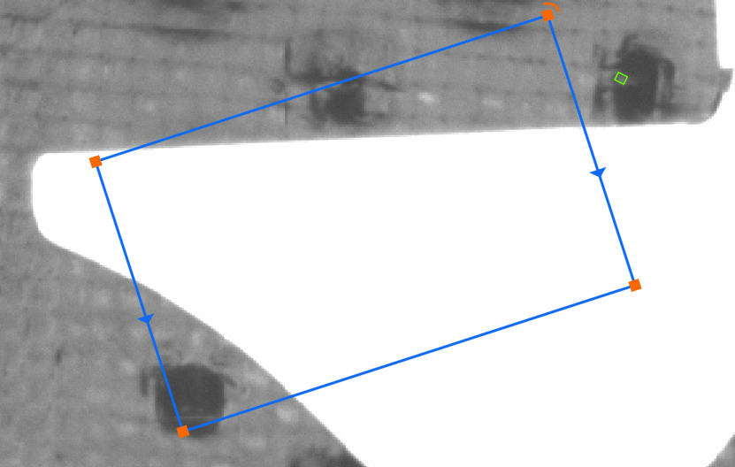
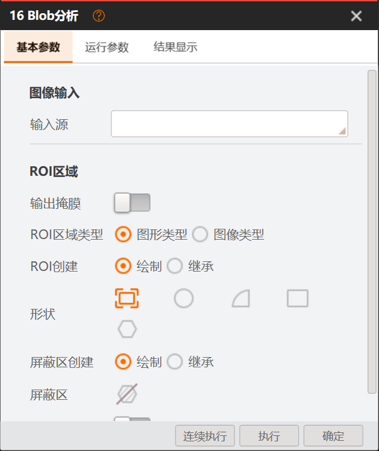

定义与能力
架构问题：运行、参数、输出及可选视图是否由清晰合同表达？
证据/可信边界：S11 S15 S16 S19 S27 S28 · 已证耦合；适配未验
当前推荐/验证要求：保留语义声明；替换运行必须依赖WPF视图的装配关系。
旧清单反查：FT-A01、FT-A02、FT-B01、FT-B02、FT-B03；旧项不能反向限制该能力的设计。先统一Blob参数校验与保存、旧工作流绑定迁移和图像/区域结果交接，并修正Release依赖来源。当前范围是S1底层规则，不是完整Blob新界面交付。
| 改什么 | 改完能看到什么 | 当前进度（实现/开发/独测/用户） |
|---|---|---|
| Release依赖 | Release目录使用同次Release生成的Contracts/Runtime，不再混入Debug依赖。 | 隔离版构建与核心独测通过；D盘交付版未更新，尚未交用户验收。 |
| 参数和保存规则 | 默认值、有效值和未设置状态按统一规则校验；无效保存保留原文件。 | 已实现；开发字段保存13项通过；独测核心及补充用例有通过记录；汇总核对待补。 |
| 旧方案归属和恢复 | 旧绑定按所属工作流迁移；保存失败不覆盖原方案和备份。 | 开发快照16项通过；独测归属6项、恢复5项通过；待匹配版本交付后验收操作体验。 |
| 图像和区域结果 | 同一轮运行的图像、ROI与结果保持对应，读者按生命周期释放资源。 | 已接入；桥接20项、资源3项独测通过；另有受限边界通过回报，汇总待核。 |
| 保存提示跟随主窗口 | 修复保存和关闭确认时的提示窗口归属。 | 修复已提交；UI Release构建通过；STA首次0/4（缺主题资源）；复测待报，真实主窗口体验待验证。 |
实现：de58已包含参数/保存规则、旧绑定迁移、图像结果桥接和匹配Release依赖。保存提示跟随主窗口的修复已提交（66ff2c20），还在组件验证。
开发测试：全量Release构建通过；字段保存13项、快照16项通过。新修复UI Release构建通过；首次STA组件测试0/4，因缺主题资源，17:05复测结果尚未回报。
独立测试：固定de58核心34/34通过（旧方案归属6、快照恢复5、字段合同20、资源边界3）；另有多组补充测试通过回报，存在重叠，独立汇总矩阵待核对，暂不合并计数。
用户体验：D盘交付版尚未更新，本轮还没有交给你做手工验收；保存提示修复和完整Blob界面也未验收。S1/G1仍开放。
17:05检查点已到，复测和独立测试汇总结果尚待回报；之后交付经理和总监复核。17:15是有风险的条件性整体结论目标；未完成的检查会继续标为未完成，不报虚假完工时间。
核心规则已在匹配的隔离Release上通过34项独立测试，补充测试也有通过回报。这样能减少参数保存、旧绑定迁移及图像区域交接的不一致；但D盘交付版未更新，保存提示修复和用户实际操作尚未验，所以目前只能确认核心验证结果，不能宣称整体优化已交付。
拿到匹配本轮改动的D盘交付版本后，再用工作流副本检查：①打开已有Blob配置并修改一个有效参数；②保存、关闭、重开，确认数值保留；③用一张图片运行简单流程，确认数值和叠加区域对应当前图片与本次运行。保存提示跟随主窗口的修复须先通过组件复测，再纳入手工验证。构建、依赖身份和自动化测试已有机器证据，不需要你重复手工执行。
| 证据项 | 可确认内容 |
|---|---|
| 固定版本 | 提交 de58d829980defd1ad61e38fe8ed1c39aea7dd09；隔离构建目录 C:\Users\houzhongjie\.codex\visualizations\2026\10\23\01a1663d-2d35-7bd2-bc12-ab0d4051bb8e\s1-release-configuration\Release\SunEyeVision_v1.0.0\SunEyeVision\SunEyeVision.UI.exe。这不是D:\MyWork\SunEyeVision_V2\Release\SunEyeVision_v1.0.0\SunEyeVision主Release；主Release当前SHA256 D1ABFA7BBD846A61632C470AD89A3BA1AE10CDED5160EBEE4FAF0F019223C8BD，未被本轮替换。隔离exe SHA256 3D95711F9736F4CF65525DC4687E956608F8DD8FB848D7312B86826E2C1A1265。 |
| 核心独立测试 | 合计34/34 PASS：ns旧方案归属/拒绝6项，nm快照恢复5项，nf字段合同20项，nr资源边界3项。四份报告的FixedResolver均指向独立n/Release；4个独立PID均exit0。逐项报告、退出回执及SHA见证据链接。该有限结果不代表G1放行。 |
| 程序启动观察 | de58隔离exe已启动、主内容已显示。PID 52456由用户手动关闭，进程退出已观察到，但退出码未采集，不推断为exit0。 |
| 补充结果与收口节点 | catalog/resource 37项、scope/projection 21项、choices 4项、受限resource 4项、Snapshot 5项、RGBA 6项均有通过回报；这些用例存在重叠，独立汇总矩阵待核，在核对前不相加为独立总数。保存提示跟随主窗口修复提交66ff2c20；离线还原完成，UI Release构建通过。首次STA测试0/4，原因是缺主题资源；17:05复测结果尚未回报，随后需独测针对性复验。真实主窗口保存体验未验证。17:05检查点结果待回填；17:15条件性整体结论有延期风险，目前没有可靠最终完成时间。 |
| 旧阶段材料 | 原14:35摘要、合同37项、图像桥20项、Repository19项及全部长SHA/原始失败/修正记录保留在下方历史证据区；各项属于各自提交和时点，不合并成de58的34项。 |
当前机器证明，不需要用户重复手工测：Release构建结果、程序集/PDB来源与46份依赖副本身份、自动化用例结果均由日志/哈希证明；用户手验只补界面与真实操作体验，不代替这些自动检查。
以下37/20/19项为先前固定版本结果，历史时点、回执、分母和失败修正保持原样；不能冒充de58同源独测。
独立桥接首轮16项复测加4项新边界，共20项unique案例PASS/0 FAIL（不累计成36项）；自有PID41436自然exit0。真实HALCON像素/Domain经SDK Normalize和DeclaredOutputSnapshot，覆盖unsupported source、错frame拒绝清理、实际native composite owner释放及发布reader/frame；46文件原件与接收副本共92项post核验零差异。固定验收回执SHA256 80447A64DB0BD79E4C0328335AEFD2DCEC441232BD15A95B5784E870ADAAF607，PE身份回执SHA256 864BEC683B40336751AF3DCB3ED1B12DAD5D32DF62D102D381620DA9F9BE0913。本批captured桥接PE已绑定commit84d88634；101个binary delta文件独核零差，6/6改动源码、embedded PDB与Git84 blob身份相符，35个captured runtime/harness文件和6个实际loaded模块路径匹配。首轮身份比较因未列辅助PDB停止的失败记录保留，5个附属PDB/XML分类后保留在接收manifest；没有删改旧失败记录。该证据不证明完整仓构建来源或全解决方案Release provenance。真实WorkflowBindingContext admission、多图逐元素来源、并行Unwrap变更纪律及完整Blob/UI/Release仍未验。G1/T0仍开放。 独测回执SHA256 EB1E987F34D953352A12A97707733BF0DEA7E70B14D3C3D19F01E60F59584C1C；报表SHA256 64CE7E17987D044282310EA9D66AACCD87A283525A6D67F67D97A9788AF9211F
原进度卡（2026-10-25 14:35历史快照，现行状态以上方为准）：当前活动目标仅为持续完成S1，并由固定源码与PE形成真实G1放行/不放行结论；不推进S2/S3，后续阶段等待明确授权。U1/U2及原O06范围保留。桥接独测20项有限PASS与Repository路径保留独测19项有限PASS是两套独立证据，不合并分母；Repository回放覆盖64个保留路径文件、128项副本核验零差异。此前平铺接收的4条跨RID/TFM同名碰撞差异已明确撤回“零差异”说法并保留历史回执。深层参数/全局变量/Device、Snapshot事务、真实资源Workflow、生产发现与持久ABI4 admission、UI/VS/Release仍开放；T0/G1未通过，不能宣布Blob产品通过。
ns/report.json SHA256 D19CDCFE0544AE7BBA420F870E50531F957D72146D580B8BE28F6D4694764F02 · ns/exit.json SHA256 7F14C03B1731137680AFA82017FCFBF0194F771EC9FB4D93A3F4413226C62D03 · nm/report.json SHA256 0754F9C624A643B077BF5633303ADA3D01AFC53C9F93EB66747C46C09525029D · nm/exit.json SHA256 2C1264D24D8B7FF7F590A9D45638D63DBD59462149333AA403551E5D271740BA · nf/report.json SHA256 7781683174C9A1A0DE861156DEACCCCDC223C024F1CC483413FAABC2F3DF77D0 · nf/exit.json SHA256 60779573DD57DF7392D4F8BDD3FE19DE2F6FFEA42CE4EAFCEB9DD8B7CA05ED4C · nr/report.json SHA256 4285EA7FFBB5933193B0A4A81AF9C3B2D58F9F6AED28675FD0451326334EE9B9 · nr/exit.json SHA256 ABEE8336C172218A7135E08502149B8AB05DA75F0F3C332578CE09CDE2824B04catalog/resource 37项、scope/projection 21项、choices 4项、受限resource 4项、Snapshot 5项、RGBA 6项均有通过回报；用例存在重叠，完整汇总矩阵预计17:05补齐，未核对前不相加为独立总数。
S1首件冻结回执 · 独测合同回执 · 37项独测报表 · HALCON设施准备/独测回执 · 图像桥隔离回执 · 20项独立桥接固定验收回执 · PE来源身份核验回执 · 桥接补证前历史回执 · 20项独立桥接报表 · Repository路径保留独立回执 · Repository 19项独测报表 · 旧平铺回执（4条碰撞差异保留） · 未知成员修复前开发侧反例 · 未知成员修复后开发侧反例 · 桥接前Workflow编译日志 · 桥接后Workflow编译日志| 项目 | 批准状态与记录 |
|---|---|
| S1首件冻结 | 基线30d94078；首件固定提交0799918373bb5f00ac5a00f30591a7e79463a84e（codex/blob-s1-component-metadata），冻结树clean、未合并/推送。冻结回执SHA256 4EE87330DE1A2538E782628A815032DADC1DD24D36C782CFAC767B26D92AC078；源码26项、payload 5项、日志10项合计41/41经核验。局部合同/设施通过不等于G1或Blob产品通过。 |
| 合同组件与独测 | Contracts/Runtime/Runner隔离Release构建0警告/0错误；开发runner两阶段PASS。独测自有runner引用固定PE，37 PASS/0 FAIL；独测回执SHA256 9A8E4C523F3B2F5D79F343BC9CD4277BFA20405D8D2561F568057F47C718DD9A、报表SHA256 892A52202883F22CF01835232E1758587DD588D9382680F2CC3DFF1F90E52133。strict serializer4拒绝；ABI4目录候选拒绝不等于真实ABI4 PE admission已验；显式4→5用例仅验证API形状，真实document owner mapping未实现。 |
| HALCON与图像桥 | 现有加密狗直接使用，许可不独立设门/不探测。独测vendor设施1×1正控与坏path负控通过，只证明vendor设施。图像桥从07999183另建clean隔离worktree并固定提交84d88634430a54e6d141e4bb0e02ceef7e4a1a31，桥接回执SHA256 901E68F4EC03A199701D9C6400BD151FE20EA472D9F58F92ED6BE15609CBBC42；6个源SHA/长度逐项匹配。HAL adapter构建0警告/0错误，25个native DLL与批准源SHA匹配。开发侧BridgeCheck最终unique13个实际案例PASS，含Gray 1×1、奇宽BGR/BGRA、非满域/空域、来源释放后reader lease及normalize-publish-reader链；首轮10 PASS/1 fixture FAIL原样保留，修正仅限run-list fixture后定向PASS。独立桥接首轮16项复测加4项新边界，共20项unique案例PASS/0 FAIL（不累计成36项）；自有PID41436自然exit0。真实HALCON像素/Domain经SDK Normalize和DeclaredOutputSnapshot，覆盖unsupported source、错frame拒绝清理、实际native composite owner释放及发布reader/frame；46文件原件与接收副本共92项post核验零差异。固定验收回执SHA256 80447A64DB0BD79E4C0328335AEFD2DCEC441232BD15A95B5784E870ADAAF607，PE身份回执SHA256 864BEC683B40336751AF3DCB3ED1B12DAD5D32DF62D102D381620DA9F9BE0913。本批captured桥接PE已绑定commit84d88634；101个binary delta文件独核零差，6/6改动源码、embedded PDB与Git84 blob身份相符，35个captured runtime/harness文件和6个实际loaded模块路径匹配。首轮身份比较因未列辅助PDB停止的失败记录保留，5个附属PDB/XML分类后保留在接收manifest；没有删改旧失败记录。该证据不证明完整仓构建来源或全解决方案Release provenance。真实WorkflowBindingContext admission、多图逐元素来源、并行Unwrap变更纪律及完整Blob/UI/Release仍未验。G1/T0仍开放。 |
| Workflow前后差异 | 独立owner-migration树从07999183起步；桥接前14:00 Workflow编译有4个不同CS0535（BorrowedImage缺Layout/Frame/EffectiveDomain/AcquirePixels），作为依赖重排证据；桥接后父集成Workflow Release编译exit0、0错误、360警告。编译闭合仍不等真实owner映射、Repository fixture或产品链验收。 |
| Repository有限独立核验 | 旧binding按真实身份/声明映射到候选owner并在Repository隔离fixture中核验：独立回放19 PASS/0 FAIL；64个保留相对路径文件、128项原件/接收副本检查零差异。覆盖重复NodeId、未知Workflow/Node成员、双次保存及精确备份、文件锁定保存失败时保留目标和旧备份。原源保护前后SHA/长度/mtime完全相同；实际加载的.NET 9 Encodings.Web SHA与批准值一致，未加载OpenCV/HALCON native。当前有限回执SHA256 21E6F3D7B4DE615C5D217525C4B8F31E1F347D20004333F606A68CE9837F8D33；独测报表SHA256 0B18FBAFE2D5A739C0A03EEA6B19CD5D5E675DACC2621812EA2381F379B40623。此前平铺回执SHA256 C8D995AE7DCE00A64A6C9B675768D3EDC1C1B126CA617ABFF564CA929795B926 的4条差异是同名文件跨RID/TFM覆盖碰撞；撤回此前“零差异”说法，旧回执与失败记录保留。该fixture仍不能证明深层参数/全局变量/Device未知成员保留、完整Snapshot事务、真实资源Workflow、生产插件发现/持久ABI4 admission、并发Unwrap/多图来源、UI/VS或全解决方案Release；G1/T0仍开放。 |
| G1仍开放的缺口 | 有限Repository fixture已验证其声明范围内的旧binding身份映射，不等于完整owner链闭合。深层参数/全局变量/Device未知字段策略、完整Snapshot事务、真实resource Workflow、生产插件发现与持久ABI4 PE admission、并发Unwrap/多图来源、Blob UI/VS及全解决方案Release仍未验；G1/T0未通过。 |
| 后续门与排期 | 桥接20项和Repository路径保留19项是两组独立、有限范围的独测结果，不合并分母。旧平铺回执4条路径碰撞差异继续保留并撤回零差异主张。S2/S3其他生产消费者继续等待G1；用户可运行首包试用与统一Release仍未验。 |
| 执行限制 | 不自动merge/push；旧变量机制只按FD03重接DocumentSession/scope/正式Run代，不原样恢复旧收口。历史PASS/FAIL不继承为本轮验证。 |
推荐来自场景约束、双方证据与候选比较，不以代码已实现或改动小作为理由。目标方向可审核；Blob完整生产接线、图像桥、七类手势和正式性能仍未验证，不能据本页宣布可实施或已验收。
架构问题：运行、参数、输出及可选视图是否由清晰合同表达？
证据/可信边界：S11 S15 S16 S19 S27 S28 · 已证耦合；适配未验
当前推荐/验证要求：保留语义声明；替换运行必须依赖WPF视图的装配关系。
旧清单反查：FT-A01、FT-A02、FT-B01、FT-B02、FT-B03；旧项不能反向限制该能力的设计。架构问题：缺依赖、契约错配、缺UI时是否仍有确定行为？
证据/可信边界：S19 · 部分证据；完整装配沿在途验
当前推荐/验证要求：类型发现、运行工厂和视图工厂分别承担失败；版本/发布核已有独验，不从文件名猜能力。
旧清单反查：FT-B01、FT-B02、FT-B03；旧项不能反向限制该能力的设计。架构问题：Blob、卡尺、模板、脚本能否用同一职责边界接入？
证据/可信边界：S11 V02 V03 · 架构推荐；其他消费者需核
当前推荐/验证要求：公共字段可组合，复合能力和专用视图可扩展；不强迫所有工具套一张自动表单。
旧清单反查：FT-A03、FT-E01、FT-E03、FT-O01、FT-P01；旧项不能反向限制该能力的设计。架构问题：工具类型、持久化节点、窗口实例、算法会话是否被混为一物？
证据/可信边界：S01 S19 S24 S25 · 创建路径已证；全寿命待验
当前推荐/验证要求：四种身份/寿命分别定义；开窗建对象不等于运行缓存命中。
旧清单反查：FT-C01、FT-C03、FT-D03；旧项不能反向限制该能力的设计。架构问题：创建、复制、撤销、删节点或断连后，绑定和运行是否仍指向正确对象？
当前推荐/验证要求：图变更与配置引用一起校验；复制重建实例身份，删除先封准入再退役，旧结果只按明确历史语义消费。
旧清单反查：FT-C02、FT-H03、FT-G03、FT-O03；旧项不能反向限制该能力的设计。架构问题：切方案、子程序或全局来源时，身份、权限和数据目录如何隔离？
证据/可信边界：S06 S13 S26 · 合同基础已证；生产全链待验
当前推荐/验证要求：按文档/工作流/节点/运行标识限定来源与回写；禁止当前UI选择隐式改变执行语义。
旧清单反查：FT-G02、FT-O01、FT-O03；旧项不能反向限制该能力的设计。架构问题：配置常量、引用、运行值、显示偏好和临时文本是否各有所有者？
证据/可信边界：S05 S06 S14 · 结构已见；变量联合提交待专审
当前推荐/验证要求：以业务语义区分状态；正式配置唯一发布，运行值不能被旧草稿覆盖，偏好不混入算法事务。
旧清单反查：FT-H01、FT-D02、FT-E02；旧项不能反向限制该能力的设计。架构问题：多个Tab、ROI、节点和变量修改怎样一起校验、失败保留、一次发布？
证据/可信边界：S05 S06 S14 · 跨节点/变量缺口已升级；本页未批准修复
当前推荐/验证要求：先构造合法候选并验证写集/冲突，再发布；不得部分生效或用无条件rebase掩盖冲突。
旧清单反查：FT-H01、FT-H02、FT-E02、FT-F01；旧项不能反向限制该能力的设计。架构问题：整数精度、数组数量、单位、范围、0/false/missing怎样被一致解释？
证据/可信边界：S04 S13 S14 · UI自有规则已证；实际转换逐入口核
当前推荐/验证要求：控件投影权威类型规则；类型/数量/单位显式，所有输入路径采用同一语义校验。
旧清单反查：FT-A02、FT-F01、FT-F02、FT-M03；旧项不能反向限制该能力的设计。架构问题：未运行时能否选合法来源？候选来自声明还是最后结果？
证据/可信边界：S04 S08 S13 · 声明存在；完整来源消费者待验
当前推荐/验证要求：声明与来源作用域生成目录，结果值只提供本次状态；树不成为数据权威。
旧清单反查：FT-G01、FT-G02、FT-J03；旧项不能反向限制该能力的设计。架构问题：标量/集合/记录子字段引用能否稳定表达、编译和诊断？
证据/可信边界：S13 S26 · 合同已证；Blob生产接入待验
当前推荐/验证要求：用稳定地址与选择计划；容器可展开不等于整容器可绑定标量，禁静默截首项。
旧清单反查：FT-F02、FT-G03、FT-M03；旧项不能反向限制该能力的设计。架构问题：图像、ROI/修正、变量、绑定及配置版本是否一致？
证据/可信边界：S21 S22 S26 · 生产请求入口已证；Blob整链待验
当前推荐/验证要求：运行准入生成自洽请求与输入reader；后续编辑不改当前请求，缺源明确失败。
旧清单反查：FT-K01、FT-G02、FT-H01；旧项不能反向限制该能力的设计。架构问题：壳、视图、编辑会话与运行入口是否职责互侵？
证据/可信边界：S02 S05 S18 S25 V03 · 源码已证边界问题
当前推荐/验证要求：壳发意图、宿主管会话/运行，工具视图消费受限上下文；替换全局查询/清层路径。
旧清单反查：FT-D01、FT-D02、FT-D03、FT-E01、FT-E03；旧项不能反向限制该能力的设计。架构问题：基础输入、语义字段、复合编辑器和宿主协调是否被一个Manager兼任？
证据/可信边界：S03 S04 S17 S27 S28 · 源码已证职责聚合；行为待验
当前推荐/验证要求：按基础视觉/字段适配/交互能力/宿主协调分层；现有41类逐件映射，实例和事件由所属会话释放。
旧清单反查：FT-F01、FT-F03、FT-I01、FT-L02；旧项不能反向限制该能力的设计。架构问题：形状、继承、命中、捕获、取消、缩放、数值回填如何保持一致？
证据/可信边界：S03 S08 V02 · 已有能力；7类完整操作尚未验
当前推荐/验证要求：公共交互状态机作用于私有字段草稿；工具栏发命令，renderer只画；形状与单位/坐标规则统一。
旧清单反查：FT-I01、FT-I02、FT-I03、FT-F03、FT-M03；旧项不能反向限制该能力的设计。架构问题：单次/连续/试运行的排队、重入、复用和互斥规则是什么？
证据/可信边界：S21 S22 · 入口已证；不同模式仍需整链验
当前推荐/验证要求：统一运行语义而非万能执行类；按工具实际线程安全与资源键准入，避免UI发起旁路。
旧清单反查：FT-K01、FT-C03；旧项不能反向限制该能力的设计。架构问题：算法步骤、ROI/修正/筛选/判断和引擎适配分别归谁？
证据/可信边界：S07 S12 S16 V04 · 自研函数体已证；VM核心未知
当前推荐/验证要求：业务规则归工具，引擎封在适配边界；当前HALCON作基线，未知VM算法不能作真值或直接替换。
旧清单反查：FT-M01、FT-M02、FT-M03；旧项不能反向限制该能力的设计。架构问题：失败、NG、空结果、取消、超时和迟到完成是否各有确定语义？
证据/可信边界：S07 S21 S22 · 输入try边界已证；完整恢复待验
当前推荐/验证要求：单轮结果状态明确；停止封新准入并处理在途，不把取消令牌当native强停；输入解包纳入失败边界。
旧清单反查：FT-K02、FT-K03；旧项不能反向限制该能力的设计。架构问题：多种结果投影能否证明来自同一最终集合和同一次运行？
当前推荐/验证要求：声明+不可变输出快照为真源；Run/Frame/Field/Element联合寻址，Label是显示排序而非跨运行身份。
旧清单反查：FT-J03、FT-A02、FT-M01；旧项不能反向限制该能力的设计。架构问题：底图、轮廓、文字、高亮、来源切换如何同帧一致？
证据/可信边界：S02 S08 S10 · 全局Clear已证；显示联动待验
当前推荐/验证要求：一次发布一致场景、只读选择与编辑分离；清理只影响所属作用域，不能关工具窗清全局结果。
旧清单反查：FT-J01、FT-J02、FT-I03；旧项不能反向限制该能力的设计。架构问题：0/1/多目标、排序变化、旧行和缺字段时能否正确取值？
证据/可信边界：S08 S13 S26 · 合同具备；真实消费者未全验
当前推荐/验证要求：下游按类型计划读输出，不读UI树；数组与单值显式适配，旧运行选择不暗指新结果。
旧清单反查：FT-J03、FT-G03、FT-F02；旧项不能反向限制该能力的设计。架构问题：保存的是已提交配置、未失焦文本、显示偏好还是裸运行句柄？
证据/可信边界：S05 S06 S23 · 写入快照存在；完整联合保存待验
当前推荐/验证要求：明确写入投影与合法候选，运行值/句柄不混作配置；用户取消不写盘，失败不部分覆盖。
旧清单反查：FT-H01、FT-H02；旧项不能反向限制该能力的设计。架构问题：重开、复制、撤销、重置后如何重建声明、引用、视图和运行状态？
证据/可信边界：S19 S23 S24 · 入口基础已证；全链待验
当前推荐/验证要求：配置恢复后重新编译有效来源；参数和运行会话分别初始化，禁止复活过期native对象。
旧清单反查：FT-C02、FT-H03、FT-O03；旧项不能反向限制该能力的设计。架构问题：接口、数据格式、插件构建和可选UI版本如何一致且可诊断？
证据/可信边界：S11 S15 S16 S27 · 部分基础；原批准边界约束实施
当前推荐/验证要求：按真实适配核契约及发布身份；仅讨论必要版本边界，不借此启动旧格式迁移或全loader重写。
旧清单反查：FT-B01、FT-B03、FT-H03；旧项不能反向限制该能力的设计。架构问题：借用输入、持久模型、单轮输出和显示几何是否被误用一种寿命？
证据/可信边界：S09 S12 V04 · 部分owner已证；模型不作Blob前置
当前推荐/验证要求：按资源类别分清owner/reader，作用域可不同；现有资源桥不足要明确补合同，不能默认全图复制。
旧清单反查：FT-L01、FT-L03、FT-M01；旧项不能反向限制该能力的设计。架构问题：换结果、关窗、删节点、切方案、应用退出时谁先停止、谁后释放？
证据/可信边界：S02 S03 S09 S20 S21 · 已有退役入口；完整顺序未验
当前推荐/验证要求：封准入→取消/等待→断开回写→解绑→owner退役→最后reader释放；窗口事件只负责所属会话。
旧清单反查：FT-L01、FT-L02、FT-K02、FT-O03；旧项不能反向限制该能力的设计。架构问题：缓存身份、容量、失效和预热触发能否解释真实收益？
当前推荐/验证要求：按版本/帧/样式及能力分缓存，预算含旧/新/在途；先测消费链再选预热，不默认预热或替换全部组件。
旧清单反查：FT-N01、FT-N02、FT-N03；旧项不能反向限制该能力的设计。架构问题：算法真值、交互延迟、显示完整性、资源上界如何独立验证？
证据/可信边界：S07 S09 S10 · BV及性能门已有；未运行本轮测试
当前推荐/验证要求：独立真值和同能力样本；沿已批准基线档测端到端及分段，未知不写通过。
旧清单反查：FT-P02、FT-M02、FT-I03；旧项不能反向限制该能力的设计。架构问题：外部输入/插件/脚本权限、错误定位、运行和资源诊断是否有边界？
证据/可信边界：S11 S19 S22 · 架构检查点；风险按证据核实
当前推荐/验证要求：以真实信任边界审必要限制，Run/Node/版本关联诊断；没有证据不发明安全缺陷或另开治理项目。
旧清单反查：FT-A03、FT-K03、FT-O01；旧项不能反向限制该能力的设计。架构问题：Blob通过以后，公共能力、其他工具及最终发布如何验收？
证据/可信边界：S27 S28 · 已有局部成果；整体验收未闭
当前推荐/验证要求：先完整Blob早期人工试用，再核卡尺/模板/脚本必要差异；局部/节点/原项/总交付四层结论分开。
旧清单反查：FT-P01、FT-P02、FT-P03；旧项不能反向限制该能力的设计。下列分组仅保留历史追溯；不是独立架构问题域。逐项反审是架构判断和验证要求，不冒称每项所有调用均已重新取证或全部已判定缺陷。对旧设计的质疑与对原交付事实的记录分开：历史通过不能证明设计最优，架构复审也不能抹去实际成果或自动推翻已批准在途。
状态读取快照：2026-10-24 21:30:20 北京时间。状态与未闭环来自交付经理总账，不由本次架构评审重判。实施中不等于整项完成或正在同时编码；最新事实以交付总账为准。点击主域 → 能力域 → 原项展开。该漏斗覆盖当前已登记范围；未发现的问题不冒称已穷尽，新增发现先按原范围归属审核。
本次设计反审：保留依赖方向约束，但用真实运行依赖而非工程名字证明。
实施中 · 本包合同与适配 · 开发工程师｜实现与修复
范围：仅按本稿公共链边界实施，不等于该领域所有未来能力
实际证据与缺口：纯Contracts/Runtime已有产品实现与执行验证，但SDK仍UseWPF且EditorFactory返回WPF，完整运行依赖与UI扩展边界未完成。
整项验收/剩余要求：原合同与批准边界 · 不把有限子证据改判为整项通过。
证据路径：src/Plugin.Contracts/ToolContracts.cs；src/Plugin.SDK/Core/IToolEditorFactory.cs；src/Plugin.SDK/SunEyeVision.Plugin.SDK.csproj本次设计反审：改写为统一语义与身份，不是统一万能类型/仓库。
实施中 · 本包合同与适配 · 开发工程师｜实现与修复
范围：仅按本稿公共链边界实施，不等于该领域所有未来能力
实际证据与缺口：TypeRef/ToolSchema与生产BindingPlan/正式结果声明已有接入及有限独验；同一定义驱动真实编辑尚缺A09生产链。
整项验收/剩余要求：原合同与批准边界 · 不把有限子证据改判为整项通过。
证据路径：src/Plugin.Contracts/TypeRef.cs；src/Plugin.Contracts/Values.cs；src/Plugin.Runtime/ParameterBindingService.cs本次设计反审：需具体化能力提供与权限边界，不能只是公共服务大全。
实施中 · 本包合同与适配 · 开发工程师｜实现与修复
范围：仅按本稿公共链边界实施，不等于该领域所有未来能力
实际证据与缺口：受限运行context与最小WPF消费者存在；默认/定制/无界面三入口共用完整生产合同未证。
整项验收/剩余要求：原合同与批准边界 · 不把有限子证据改判为整项通过。
证据路径：src/Plugin.Contracts/ToolContracts.cs；src/Plugin.Wpf/ParameterEditorControl.cs本次设计反审：保留失败显式诊断目标；需分发现、兼容和装配失败。
实施中 · 本包合同与适配 · 开发工程师｜实现与修复
范围：仅按本稿公共链边界实施，不等于该领域所有未来能力
实际证据与缺口：3.0精确版本门及22工具注册已有有限独验；新主控私有同名依赖/宿主重叠与注册失败原子政策尚未实现验收，不是整个发现加载完成。
整项验收/剩余要求：原合同与批准边界 · 不把有限子证据改判为整项通过。
证据路径：src/Plugin.Infrastructure/Managers/Plugin/PluginManager.cs；src/Plugin.Infrastructure/Managers/Plugin/PluginLoadContext.cs本次设计反审：保留可选UI原则；不能据此断言现有SDK拆分已完成。
实施中 · 本包合同与适配 · 开发工程师｜实现与修复
范围：仅按本稿公共链边界实施，不等于该领域所有未来能力
实际证据与缺口：已核17bc实际提交把NodeOpenContext/NodeOpenDecisionChain从Workflow迁UI，None在factory前短路，正式node/style保留，Default/Custom共享上下文已接；Custom可点确认真实缺口仍在修，完整运行插件与可选UI边界未整验。
整项验收/剩余要求：原合同与批准边界 · 不把有限子证据改判为整项通过。
证据路径：src/Plugin.SDK/Core/IToolEditorFactory.cs；src/Plugin.SDK/SunEyeVision.Plugin.SDK.csproj本次设计反审：拆分发布身份、运行退出和资源退役的责任，不能合用一个Dispose判完成。
实施中 · 本包合同与适配 · 开发工程师｜实现与修复
范围：仅按本稿公共链边界实施，不等于该领域所有未来能力
实际证据与缺口：B01有限3.0同源构建/全Release/toolbox及独验不能覆盖插件退出/依赖冲突与最终部署新政策；整项未完成。
整项验收/剩余要求：原合同与批准边界 · 不把有限子证据改判为整项通过。
证据路径：Directory.Build.targets；src/Plugin.SDK/Core/ToolContract.cs；src/Plugin.Infrastructure/Managers/Plugin/PluginManager.cs本次设计反审：由定义/实例二分细化为定义、持久节点、运行会话和窗口会话。
实施中 · 本包合同与适配 · 开发工程师｜实现与修复
范围：仅按本稿公共链边界实施，不等于该领域所有未来能力
实际证据与缺口：定义/Session/Invocation纯契约与请求副本已存在，生产Owner/冻结准入有限独验通过；所有代表工具定义实例隔离未全证。
整项验收/剩余要求：原合同与批准边界 · 不把有限子证据改判为整项通过。
证据路径：src/Plugin.Contracts/ToolContracts.cs；src/Plugin.SDK/Core/ToolExecutionRequest.cs；src/Workflow/WorkflowNode.cs本次设计反审：创建、复制、删除分别有图事务和资源条件，按完整状态细分。
实施中 · 本包合同与适配 · 开发工程师｜实现与修复
范围：仅按本稿公共链边界实施，不等于该领域所有未来能力
实际证据与缺口：按formal实例/当前session/workflow拒删后同ID回调；删建/同ID有fixture；复制绑定重映射/配置资产clone-delete未齐；关闭强HashSet缺口待修。仅确认必要适配实施中，未称完整实现或整项验收。
整项验收/剩余要求：原合同与批准边界 · 不把有限子证据改判为整项通过。
证据路径：src/Workflow/WorkflowNode.cs本次设计反审：并发与复用须按工具实际状态和线程安全选策略，不能默认单例或每次new。
实施中 · 本包合同与适配 · 开发工程师｜实现与修复
范围：仅按本稿公共链边界实施，不等于该领域所有未来能力
实际证据与缺口：Guid原准入身份/ToolExecutionOwner与并发取消负控已有有限证据；不证明所有节点/代表工具复用合同完成。
整项验收/剩余要求：原合同与批准边界 · 不把有限子证据改判为整项通过。
证据路径：src/Plugin.SDK/Core/ToolExecutionIdentity.cs；src/Plugin.SDK/Core/ToolExecutor.cs本次设计反审：区分正式配置/私有草稿/运行值/显示偏好，原二分不足以覆盖所有状态。
实施中 · 本包合同与适配 · 开发工程师｜实现与修复
范围：仅按本稿公共链边界实施，不等于该领域所有未来能力
实际证据与缺口：BindingConfigurationStore/NodeConfigurationEditHost事务实现存在，A09正式生产Editor Scope Apply到执行证据缺失；裸借图常量有限缺陷关闭不等整项。
整项验收/剩余要求：原合同与批准边界 · 不把有限子证据改判为整项通过。
证据路径：src/Workflow/NodeConfigurationEditHost.cs；src/Workflow/BindingConfigurationStore.cs；src/Plugin.Contracts/Editing.cs本次设计反审：保存不是单节点Apply；核全局变量、文本pending、快照和写盘原子边界。
实施中 · 依赖回归／原专项 · 开发工程师｜实现与修复
范围：保存重开必须回归；原marker事故沿原缺陷，不新增公共存储重写
实际证据与缺口：真实Save prevalidate/commit管线已有适配，组件与磁盘gate fixture通过；原主窗E06/E07必须新集成fixed实际复测；新typed/AssetRef往返/失败原子性仍缺。仅确认必要适配实施中，未称完整实现或整项验收。
整项验收/剩余要求：原合同与批准边界 · 不把有限子证据改判为整项通过。
证据路径：src/Workflow/SolutionRepository.cs本次设计反审：复制、重置、格式三类问题应拆开论证；不自动授权历史兼容迁移。
待核 · 本包合同与适配 · 开发工程师｜实现与修复
范围：仅按本稿公共链边界实施，不等于该领域所有未来能力
实际证据与缺口：当前有执行JSON副本原语；配置AssetRef复制/重置/格式Owner未接；执行副本不等配置复制；缺默认恢复、字段/资源身份重映射和当前开发格式范围。保留待核，不以旧实现/未接子依赖推定整项状态。
整项验收/剩余要求：原合同与批准边界 · 不把有限子证据改判为整项通过。
证据路径：src/Workflow/WorkflowNode.cs；src/Plugin.SDK/Execution/Parameters/GeometryJsonConverter.cs本次设计反审：重审壳/视图/应用服务边界；现有基类不是默认架构。
实施中 · 本包合同与适配 · 开发工程师｜实现与修复
范围：仅按本稿公共链边界实施，不等于该领域所有未来能力
实际证据与缺口：生产WorkflowExecutionManager仍调用ToolEditorCommit，当前实施明确正在核接生产Apply而非只最小示例。
整项验收/剩余要求：原合同与批准边界 · 不把有限子证据改判为整项通过。
证据路径：src/UI/Services/Workflow/WorkflowExecutionManager.cs；src/Plugin.SDK/UI/Controls/ToolEditorCommit.cs本次设计反审：明确用户意图与发布规则，不能由按钮名称推导全局事务。
实施中 · 本包合同与适配 · 开发工程师｜实现与修复
范围：仅按本稿公共链边界实施，不等于该领域所有未来能力
实际证据与缺口：ToolEditorCommit当前主要WPF Validate/UpdateSource和Script participant；NodeConfigurationEditHost有事务原语，但A09生产两级草稿Apply/Discard到执行未独立证立。
整项验收/剩余要求：原合同与批准边界 · 不把有限子证据改判为整项通过。
证据路径：src/Plugin.SDK/UI/Controls/ToolEditorCommit.cs；src/Workflow/NodeConfigurationEditHost.cs本次设计反审：复用是可测优化选项，事件/生命周期正确性先成立。
实施中 · 本包合同与适配 · 开发工程师｜实现与修复
范围：仅按本稿公共链边界实施，不等于该领域所有未来能力
实际证据与缺口：production Discard、关闭跳legacy live Persist、Context失效禁止回调已有实际源；嵌入control/session生命周期强HashSet清理未齐，候选已父退修。仅确认必要适配实施中，未称完整实现或整项验收。
整项验收/剩余要求：原合同与批准边界 · 不把有限子证据改判为整项通过。
证据路径：src/Plugin.SDK/UI/Windows/DefaultDebugWindow.xaml.cs本次设计反审：标准组合与专业扩展并存；不强制复制VM XML或保留当前页面。
实施中 · 本包合同与适配 · 开发工程师｜实现与修复
范围：仅按本稿公共链边界实施，不等于该领域所有未来能力
实际证据与缺口：ParameterEditorControl已增结构只读投影，但明确最小消费者，不能替代默认/专业生产页面；生产编辑链正继续。
整项验收/剩余要求：原合同与批准边界 · 不把有限子证据改判为整项通过。
证据路径：src/Plugin.Wpf/ParameterEditorControl.cs；src/Plugin.SDK/UI/Controls/ToolDebugControlBase.cs本次设计反审：跨Tab不构成业务事务边界，必须核整候选与关联配置。
实施中 · 本包合同与适配 · 开发工程师｜实现与修复
范围：仅按本稿公共链边界实施，不等于该领域所有未来能力
实际证据与缺口：先写私有draft/控件参数完整验证→5标量slots与Host输出依赖图验证→唯一CAS；不是只可见控件；仅ProtocolParse首消费者，其他工具Tab/完整默认专业无UI仍缺。仅确认必要适配实施中，未称完整实现或整项验收。
整项验收/剩余要求：原合同与批准边界 · 不把有限子证据改判为整项通过。
证据路径：src/Plugin.SDK/UI/Controls/ToolEditorCommit.cs；src/Plugin.SDK/UI/Controls/ToolDebugControlBase.cs本次设计反审：扩展点受控且能替代当前直接服务访问，避免第二接口体系。
实施中 · 本包合同与适配 · 开发工程师｜实现与修复
范围：仅按本稿公共链边界实施，不等于该领域所有未来能力
实际证据与缺口：开发隔离Shape专业编辑候选必要子片已形成精确提交6ef63a35：model深副本、Dialog仅改候选、确认后caller原引用单次替换；父已审实际diff/6自测。外层EditorContext/统一Apply与默认专业无UI同权威尚未齐，整项未验。
整项验收/剩余要求：原合同与批准边界 · 不把有限子证据改判为整项通过。
证据路径：src/Plugin.SDK/Core/IToolEditorFactory.cs；src/Plugin.SDK/UI/Controls/ToolDebugControlBase.cs本次设计反审：字段合同与回填应统一语义，控件不拥有正式业务状态。
实施中 · 本包合同与适配 · 开发工程师｜实现与修复
范围：仅按本稿公共链边界实施，不等于该领域所有未来能力
实际证据与缺口：正式绑定服务/类型访问器与结构投影已有有限实现；控件经Scope草稿到Apply并冻结请求的生产A09链未闭。
整项验收/剩余要求：原合同与批准边界 · 不把有限子证据改判为整项通过。
证据路径：src/Plugin.SDK/UI/Controls/ParamBindingBase.cs；src/Plugin.Wpf/ParameterEditorControl.cs；src/Workflow/NodeConfigurationEditHost.cs本次设计反审：标量、集合、常量与引用分别表达，不能沿旧词汇直接等同。
实施中 · 本包合同与适配 · 开发工程师｜实现与修复
范围：仅按本稿公共链边界实施，不等于该领域所有未来能力
实际证据与缺口：Binding配置与转换/显式来源有原语和有限独验，但实际控件切常量/绑定与草稿保值/单active source仍需同真实Editor链证明。
整项验收/剩余要求：原合同与批准边界 · 不把有限子证据改判为整项通过。
证据路径：src/Plugin.Contracts/Editing.cs；src/Plugin.SDK/UI/Controls/ParamBindingBase.cs；src/Plugin.SDK/Execution/Parameters/ParameterResolver.cs本次设计反审：局部UI状态与共享业务状态分开，交互一致性需同一会话证明。
实施中 · 本包合同与适配 · 开发工程师｜实现与修复
范围：仅按本稿公共链边界实施，不等于该领域所有未来能力
实际证据与缺口：当前FieldID/候选同BindingCompatibility，BindingIssue错误提示/禁止错误fallback已有实际适配；完整字段跨控件状态一致/草稿提交/实际VS设计时与运行尚未全验。仅确认相关必要适配已有进展，不是整项已实现。
整项验收/剩余要求：原合同与批准边界 · 不把有限子证据改判为整项通过。
证据路径：src/Plugin.SDK/UI/Controls/NumericUpDown.cs；src/Plugin.Wpf/ParameterEditorControl.cs；src/Plugin.SDK/UI/Controls/ParamBindingBase.cs本次设计反审：保留来源目录问题；声明驱动可用性而非依赖最后运行值。
实施中 · 本包合同与适配 · 开发工程师｜实现与修复
范围：仅按本稿公共链边界实施，不等于该领域所有未来能力
实际证据与缺口：同Schema选择树/声明目录与Frozen只读reader已有正式有限交付，空合同旧树缺陷已有限关闭；资源/几何占位与实际选择联动尚待。
整项验收/剩余要求：原合同与批准边界 · 不把有限子证据改判为整项通过。
证据路径：src/Plugin.SDK/Execution/Parameters/ParameterResolver.cs；src/UI/Features/ParameterSetting/DataSourcePickerViewModel.cs本次设计反审：作用域、身份与权限先建模，再审现有筛选器。
实施中 · 本包合同与适配 · 开发工程师｜实现与修复
范围：仅按本稿公共链边界实施，不等于该领域所有未来能力
实际证据与缺口：生产common Plan/依赖图/root scope在a45有限独验；真实Subroutine工具body/UI仍明确待证，不能以受控子Engine代。
整项验收/剩余要求：原合同与批准边界 · 不把有限子证据改判为整项通过。
证据路径：src/Workflow/WorkflowExecutionEngine.cs；src/Workflow/WorkflowBindingContext.cs；tools/SunEyeVision.Tool.Subroutine/SubroutineTool.cs本次设计反审：失效不回退旧值；配置变更与运行值缺失须分类诊断。
实施中 · 本包合同与适配 · 开发工程师｜实现与修复
范围：仅按本稿公共链边界实施，不等于该领域所有未来能力
实际证据与缺口：失效身份/版本与typed引用失败不回退已有有限独验；最新结果接线包送独测，未覆盖全部资源/几何及UI编辑来源变更。
整项验收/剩余要求：原合同与批准边界 · 不把有限子证据改判为整项通过。
证据路径：src/Plugin.SDK/Execution/Parameters/ParameterResolver.cs；src/Workflow/WorkflowExecutionEngine.cs本次设计反审：绘图是受限公共能力，不预设沿Manager增加入口。
待核 · 本包合同与适配 · 开发工程师｜实现与修复
范围：仅按本稿公共链边界实施，不等于该领域所有未来能力
实际证据与缺口：已有7类纯数据、Blob公共batch显式地址子证据；缺字段→公共编辑会话→指定字段提交；结果只读batch不是交互会话适配。保留待核，不以旧实现/未接子依赖推定整项状态。
整项验收/剩余要求：原合同与批准边界 · 不把有限子证据改判为整项通过。
证据路径：src/Plugin.SDK/UI/Controls/Roi/Views/RoiEditorManagerControl.xaml.cs；docs/collaboration/CURRENT_TASK.md；docs/collaboration/DELIVERY_COORDINATION_STATUS.json本次设计反审：七类是既有业务范围；应逐类验证语义，样式不替代交互。
待核 · 本包合同与适配 · 开发工程师｜实现与修复
范围：仅按本稿公共链边界实施，不等于该领域所有未来能力
实际证据与缺口：七类数据投影开发2PASS；旋转矩形有限投影独验通过；缺七类创建/选中/拖拽/变换/命中/取消和复合卡尺原子提交，不能由投影推互动已实施。保留待核，不以旧实现/未接子依赖推定整项状态。
整项验收/剩余要求：原合同与批准边界 · 不把有限子证据改判为整项通过。
证据路径：src/Plugin.Contracts/GeometryValues.cs；src/UI/Services/Rendering/ContractGeometryDisplayProjection.cs；docs/collaboration/CURRENT_TASK.md本次设计反审：多视口隔离与大量图形性能分别验，不能拿一个缓存补两者。
待核 · 本包合同与适配 · 开发工程师｜实现与修复
范围：仅按本稿公共链边界实施，不等于该领域所有未来能力
实际证据与缺口：当前大数组/Polygon按页模型与batch地址已有有限成果；缺真实多视口会话隔离/命中索引/帧与缓存预算及正式P95；分页不是多视口交互实施。保留待核，不以旧实现/未接子依赖推定整项状态。
整项验收/剩余要求：原合同与批准边界 · 不把有限子证据改判为整项通过。
证据路径：src/Plugin.SDK/UI/Controls/Roi/Views/RoiEditorManagerControl.xaml.cs；docs/collaboration/CURRENT_TASK.md；docs/collaboration/DELIVERY_COORDINATION_STATUS.json本次设计反审：统一语义与准入不是强造一个大类；核所有真实入口。
实施中 · 本包合同与适配 · 开发工程师｜实现与修复
范围：仅按本稿公共链边界实施，不等于该领域所有未来能力
实际证据与缺口：admission与a45实际Workflow同Plan/输入冻结有限独验；显式转换缺陷fc080已有限修复，新综合桥包未替整项整合/全部消费者验收。
整项验收/剩余要求：原合同与批准边界 · 不把有限子证据改判为整项通过。
证据路径：artifacts/independent-testing/tool-framework-first-dependency/runs/admission01-20261024/acceptance.json；artifacts/independent-testing/tool-framework-first-dependency/runs/production03-20261024/acceptance.json；src/Plugin.SDK/Core/ToolExecutor.Admission.cs本次设计反审：取消、超时、停止完成分别定边界，native不强停作为现范围约束。
实施中 · 本包合同与适配 · 开发工程师｜实现与修复
范围：仅按本稿公共链边界实施，不等于该领域所有未来能力
实际证据与缺口：admission真实取消/重入/外来OCE有限组件证据存在，未足以证明整个实际UI停止/超时/在途退出语义。
整项验收/剩余要求：原合同与批准边界 · 不把有限子证据改判为整项通过。
证据路径：artifacts/independent-testing/tool-framework-first-dependency/runs/admission01-20261024/acceptance.json；src/Plugin.SDK/Core/ToolExecutor.Admission.cs；docs/collaboration/CURRENT_TASK.md本次设计反审：失败转换、业务NG、部分结果与恢复按状态分析，不只增加catch。
实施中 · 本包合同与适配 · 开发工程师｜实现与修复
范围：仅按本稿公共链边界实施，不等于该领域所有未来能力
实际证据与缺口：结构化失败/准入/生产绑定负控已有独验；新桥及真实编辑提交失败恢复尚需同包证明，不将局部数值缺陷关闭外推。
整项验收/剩余要求：原合同与批准边界 · 不把有限子证据改判为整项通过。
证据路径：artifacts/independent-testing/tool-framework-first-dependency/runs/admission01-20261024/acceptance.json；artifacts/independent-testing/tool-framework-first-dependency/runs/production03-20261024/acceptance.json；src/Plugin.SDK/Core/ToolExecutor.Admission.cs本次设计反审：明确数据与渲染边界，但允许受控适配；不是把所有转换都禁掉。
实施中 · 本包合同与适配 · 开发工程师｜实现与修复
范围：仅按本稿公共链边界实施，不等于该领域所有未来能力
实际证据与缺口：纯Contracts/Runtime与显示投影已分离部分链，真实读者桥接收；尚须全运行依赖闭包无UI和显示消费者整合证明。
整项验收/剩余要求：原合同与批准边界 · 不把有限子证据改判为整项通过。
证据路径：artifacts/validation/tool-framework-contract/declared-blob-host-01/delivery-receipt.json；artifacts/independent-testing/tool-framework-first-dependency/next-fixed-public-result-projections-readiness-20261024.json；src/Plugin.Contracts/GeometryValues.cs本次设计反审：算法负责业务语义，公共层只管理可复用机制，避免万能流水线。
实施中 · 依赖回归／原专项 · 开发工程师｜实现与修复
范围：保留算法与采样能力；只做等价回归，不重写算法
实际证据与缺口：原A10点测/阈值限定算法等价独验及真实Blob0/1/3开发证据可复用；新综合代表工具/后端受影响回归未全收口。
整项验收/剩余要求：原合同与批准边界 · 不把有限子证据改判为整项通过。
证据路径：artifacts/independent-testing/PLUGIN-FOUNDATION-01/reports/remaining-five-current-20261024.json；artifacts/validation/tool-framework-contract/declared-blob-host-01/delivery-receipt.json；src/SunEyeVision.HalAdapter/HalImage.cs本次设计反审：类型/数量/单位/精度都审，不由CLR类型或视觉样式代替。
实施中 · 本包合同与适配 · 开发工程师｜实现与修复
范围：仅按本稿公共链边界实施，不等于该领域所有未来能力
实际证据与缺口：旋转矩形投影有限验收、fc080显式转换传播缺陷FIXED_VERIFIED仅关子能力；不等全部类型/单位/精度和实际显示后端一致。
整项验收/剩余要求：原合同与批准边界 · 不把有限子证据改判为整项通过。
证据路径：artifacts/independent-testing/tool-framework-first-dependency/runs/explicit-fc080-20261024/acceptance.json；artifacts/independent-testing/tool-framework-first-dependency/runs/m03-projection01-20261024/acceptance.json；src/UI/Services/Rendering/ContractGeometryDisplayProjection.cs本次设计反审：显示选图与运行输入绑定不同；底图来源身份和帧要明确。
实施中 · 本包合同与适配 · 开发工程师｜实现与修复
范围：仅按本稿公共链边界实施，不等于该领域所有未来能力
实际证据与缺口：指定run reader、真实Blob输入和图形关联已接线；当前固定桥包已交独测，不等底图/ROI/图形来源与切换整链验收。
整项验收/剩余要求：原合同与批准边界 · 不把有限子证据改判为整项通过。
证据路径：artifacts/validation/tool-framework-contract/declared-blob-host-01/delivery-receipt.json；artifacts/independent-testing/tool-framework-first-dependency/next-fixed-public-result-projections-readiness-20261024.json；src/UI/Services/Monitoring/ResultPresentationPresenter.cs本次设计反审：结果层只读但可选择；信息完整性不能用静默抽样换速度。
实施中 · 本包合同与适配 · 开发工程师｜实现与修复
范围：仅按本稿公共链边界实施，不等于该领域所有未来能力
实际证据与缺口：新桥f1feb/C67有限桥已正式独验通过（原母项仍开放），Blob显式元素地址开发通过；资源UI仍ResourcePending，几何当前文字投影，不等三显示投影/完整结果渲染与性能。
整项验收/剩余要求：原合同与批准边界 · 不把有限子证据改判为整项通过。
证据路径：artifacts/validation/tool-framework-contract/declared-blob-host-01/delivery-receipt.json；artifacts/independent-testing/tool-framework-first-dependency/next-fixed-public-result-projections-readiness-20261024.json；src/UI/Services/Monitoring/ResultPresentationModel.cs本次设计反审：结果树与下游是独立投影，不经UI树传递业务数据。
实施中 · 本包合同与适配 · 开发工程师｜实现与修复
范围：仅按本稿公共链边界实施，不等于该领域所有未来能力
实际证据与缺口：声明只读reader、指定run桥、稳定presentation已接；旧guard/空合同已关仅有限缺陷，新固定包正在独验子链，整项尚有资源/下游/按需虚拟化缺口。
整项验收/剩余要求：原合同与批准边界 · 不把有限子证据改判为整项通过。
证据路径：artifacts/validation/tool-framework-contract/declared-blob-host-01/delivery-receipt.json；artifacts/independent-testing/tool-framework-first-dependency/next-fixed-public-result-projections-readiness-20261024.json；src/Plugin.Contracts/DeclaredValueReader.cs本次设计反审：图像/模型/轮廓寿命不同；Owner可复用不等于资源合同完整。
实施中 · 本包合同与适配 · 开发工程师｜实现与修复
范围：仅按本稿公共链边界实施，不等于该领域所有未来能力
实际证据与缺口：Resources.Retain指定run reader已实现，真实Blob双reader开发验证，新桥包已收；资源字段UI仍待接入，整项读者/生命周期未完。
整项验收/剩余要求：原合同与批准边界 · 不把有限子证据改判为整项通过。
证据路径：artifacts/validation/tool-framework-contract/declared-blob-host-01/delivery-receipt.json；artifacts/independent-testing/tool-framework-first-dependency/next-fixed-public-result-projections-readiness-20261024.json；src/Plugin.SDK/Execution/Results/DeclaredOutputSnapshot.cs本次设计反审：事件、任务、视图reader依各自所有者退出，不能靠GC兜底。
实施中 · 本包合同与适配 · 开发工程师｜实现与修复
范围：仅按本稿公共链边界实施，不等于该领域所有未来能力
实际证据与缺口：真实窗口guard/会话失效有限独验，新Presenter有Dispose；尚无同固定公共UI反复开关/切节点长期增长整项证据。
整项验收/剩余要求：原合同与批准边界 · 不把有限子证据改判为整项通过。
证据路径：artifacts/independent-testing/tool-framework-first-dependency/runs/tree-selection01-20261024/acceptance.json；src/UI/Services/Monitoring/ResultPresentationPresenter.cs；artifacts/independent-testing/tool-framework-first-dependency/next-fixed-public-result-projections-readiness-20261024.json本次设计反审：程序集/后端对象须分机制审；载体选型不因这条旧项自动获准重启。
待核 · 依赖回归／原专项 · 开发工程师｜实现与修复
范围：程序集/载体沿既有专项；仅受影响资源/类型依赖回归
实际证据与缺口：原S3 ALC未闭环/历史失败保留；A11只管现注册和发布拒绝门；缺原动态程序集/后端对象受本次改动影响的精确回归归属；不恢复载体/ALC项目。保留待核，不以旧实现/未接子依赖推定整项状态。
整项验收/剩余要求：原合同与批准边界 · 不把有限子证据改判为整项通过。
证据路径：docs/collaboration/DELIVERY_COORDINATION_STATUS.json；artifacts/independent-testing/SCRIPT-S3/readiness.json；docs/collaboration/CURRENT_TASK.md本次设计反审：首次成本从实际消费者端到端测，不能只计控件构造。
待核 · 本包合同与适配 · 开发工程师｜实现与修复
范围：仅按本稿公共链边界实施，不等于该领域所有未来能力
实际证据与缺口：历史S2首次打开预算失败/缺测保留；尚无新统一消费者完整测量；缺语言服务/字段/图像/结果完整可用分段测点及本包实施清单，ContentRendered不可代替。保留待核，不以旧实现/未接子依赖推定整项状态。
整项验收/剩余要求：原合同与批准边界 · 不把有限子证据改判为整项通过。
证据路径：docs/collaboration/DELIVERY_COORDINATION_STATUS.json；src/Plugin.SDK/UI/Controls/ToolDebugControlBase.cs；docs/collaboration/CURRENT_TASK.md本次设计反审：缓存是有边界候选；版本失效和资源持有必须共同成立。
实施中 · 本包合同与适配 · 开发工程师｜实现与修复
范围：仅按本稿公共链边界实施，不等于该领域所有未来能力
实际证据与缺口：保存点eb8416e0：参数Type/discriminator严格批量准备、不可变resolver目录、Core/Workflow facade按source options引用换代；仅Core/SDK/Infra编译通过；Workflow facade/旧options/并发generation矩阵未跑，图像/模型/渲染缓存整矩阵未齐。仅确认相关必要适配已有进展，不是整项已实现。
整项验收/剩余要求：原合同与批准边界 · 不把有限子证据改判为整项通过。
证据路径：tools/SunEyeVision.Tool.Script/ScriptEngine/ScriptReferenceSnapshot.cs；docs/collaboration/DELIVERY_COORDINATION_STATUS.json；docs/collaboration/CURRENT_TASK.md本次设计反审：预热需收益/成本实证，不默认保留或默认去掉。
待核 · 依赖回归／原专项 · 开发工程师｜实现与修复
范围：不新开预热选择专项，沿已批准策略并测新链冷/再次成本
实际证据与缺口：原有效预热与A04历史样本保留，无平台替代采用/统一成本结论；缺本包受影响消费者收益/启动/内存/取消代价的同样本映射；不新开预热路线。保留待核，不以旧实现/未接子依赖推定整项状态。
整项验收/剩余要求：原合同与批准边界 · 不把有限子证据改判为整项通过。
证据路径：docs/collaboration/DELIVERY_COORDINATION_STATUS.json；tests/SunEyeVision.Tool.Script.Tests/ScriptSandboxWarmupTests.cs；docs/collaboration/CURRENT_TASK.md本次设计反审：动态声明是专项差异，需版本和生命周期，不当Blob实施前置。
实施中 · 依赖回归／原专项 · 开发工程师｜实现与修复
范围：脚本动态IO接缝回归，非整个脚本重新迁移；子程序受影响来源回归
实际证据与缺口：admission实际Script有限16、旧B2动态IO11等独验已收；真实Subroutine插件及parent/child完整链仍缺，不能等同全部特殊工具回归。
整项验收/剩余要求：原合同与批准边界 · 不把有限子证据改判为整项通过。
证据路径：artifacts/independent-testing/tool-framework-first-dependency/runs/admission01-20261024/acceptance.json；artifacts/independent-testing/tool-framework-first-dependency/runs/ui-script97f-20261024/acceptance.json；artifacts/independent-testing/PLUGIN-FOUNDATION-01/reports/remaining-five-current-20261024.json本次设计反审：排除的是新增设备通信实施；原有必要输入和服务消费仍要分析，不留架构盲区。
排除新增能力 · 排除新增能力 · 开发工程师｜实现与修复
范围：本包不扩展设备/通信/通用服务能力；已有必需输入按原合同回归
实际证据与缺口：排除新增能力，不进入47项分母
整项验收/剩余要求：原合同与批准边界 · 不把有限子证据改判为整项通过。
证据路径：artifacts/validation/tool-framework-contract/final-review-scope.json；docs/collaboration/CURRENT_TASK.md；docs/collaboration/DELIVERY_COORDINATION_STATUS.json本次设计反审：批量操作与切方案分开建模；保原专项回归，不新增批编辑功能。
实施中 · 依赖回归／原专项 · 开发工程师｜实现与修复
范围：节点/方案切换清理回归，不新增批量编辑功能
实际证据与缺口：节点/会话/方案选择epoch守卫已有有限独验，不能替批量删除/切方案下编辑Scope+结果+运行资源完整受影响清理。
整项验收/剩余要求：原合同与批准边界 · 不把有限子证据改判为整项通过。
证据路径：artifacts/independent-testing/tool-framework-first-dependency/runs/tree-selection01-20261024/acceptance.json；artifacts/independent-testing/tool-framework-first-dependency/next-fixed-public-result-projections-readiness-20261024.json；src/Workflow/WorkflowExecutionEngine.cs本次设计反审：代表节点验证公共性，还需其他消费者必要回归，不以单例成功代全库。
实施中 · 本包合同与适配 · 开发工程师｜实现与修复
范围：仅按本稿公共链边界实施，不等于该领域所有未来能力
实际证据与缺口：纯几何/Foundation和真实Blob新桥已有部分入口/收包，四类代表消费者并未完整覆盖；现最小Wpf不等生产默认编辑器。
整项验收/剩余要求：原合同与批准边界 · 不把有限子证据改判为整项通过。
证据路径：artifacts/validation/tool-framework-contract/declared-blob-host-01/delivery-receipt.json；artifacts/independent-testing/PLUGIN-FOUNDATION-01/reports/remaining-five-current-20261024.json；src/Plugin.Wpf/ParameterEditorControl.cs本次设计反审：沿原批准档验证；新发现缺口不通过降低标准消除。
实施中 · 本包合同与适配 · 测试工程师｜独立验收
范围：仅按本稿公共链边界实施，不等于该领域所有未来能力
实际证据与缺口：多个正式有限独验在进行/已关，已收新综合桥；原48整体功能/性能/GUI/VS矩阵未完成，不升整项独验中或已验收。
整项验收/剩余要求：原合同与批准边界 · 不把有限子证据改判为整项通过。
证据路径：docs/collaboration/DELIVERY_COORDINATION_STATUS.json；docs/collaboration/TOOL_FRAMEWORK_FINAL_APPROVAL_20261024.json；artifacts/independent-testing/tool-framework-first-dependency/next-fixed-public-result-projections-readiness-20261024.json本次设计反审：文档/测试/实际交付分别闭合；原ID只是追溯工具，不是架构正确性证明。
实施中 · 本包合同与适配 · 交付经理｜协调与收口（文档负责人维护展示）
范围：仅按本稿公共链边界实施，不等于该领域所有未来能力
实际证据与缺口：批准48范围和有限收据不断同步，主控正在建立唯一原ID总账；最终47完成/人工/遗留与统一Release尚未审计。
整项验收/剩余要求：原合同与批准边界 · 不把有限子证据改判为整项通过。
证据路径：docs/collaboration/DELIVERY_COORDINATION_STATUS.json；docs/collaboration/DOC_SYNC_STATUS.json；artifacts/validation/tool-framework-contract/final-review-scope.json| 生命周期阶段 | 责任/所有权 | 关联原项（引用，不重复计数） | 实际证据与未贯通 | 闭环判据 |
|---|---|---|---|---|
| 定义/发现/装配 | 框架目录与发布装配；工具提供类型/版本/能力 | FT-A01/A02/A03、FT-B01/B02/B03 | S11/S15/S16/S19；VM V01/V02 | 加载失败、缺UI、重名/版本冲突明确拒绝；发布验收沿在途A11，不由本页重跑。 |
| 拖入/创建/复制/撤销 | 节点定义归方案；运行实例和窗口实例分别建域 | FT-C01/C02/C03、FT-H03 | S01/S19/S24；VM拖放入口未贯通至全部创建 | 复制重建实例身份、不共享可变草稿；撤销不复活已退役native对象。 |
| 连线/绑定/全局/作用域 | 正式图及绑定配置归应用事务；运行值有独立所有者 | FT-F01/F02、FT-G01/G02/G03、FT-H01 | S04/S06/S13/S14/S26；VM原来源树证据保留边界 | 失效来源、跨作用域和数量转换明确；变量/节点联合保存存在在途缺口，不能静态称已闭合。 |
| 开窗/重开/多窗切换 | 宿主拥有编辑会话；视图消费受限能力 | FT-D01/D02/D03、FT-E01/E02/E03 | S02/S05/S25；VM V03 | 窗口与运行实例不是同一寿命；开窗创建工具实例不等于运行缓存复用。 |
| 参数/ROI编辑/继承/回填 | 草稿私有；绘图会话仅作用所属字段与视口层 | FT-F03、FT-I01/I02/I03 | S02/S03/S04；VM V02/V03 | 拖动、数值、继承与取消同一语义；多个控件不各自发布正式值。 |
| 校验/提交/取消/主保存 | 准备全部合法候选后才发布；失败保草稿 | FT-H01/H02、FT-D02、FT-E02 | S05/S06/S14/S23 | 跨Tab、节点和变量写集边界须一致；当前变量事务升级尚待专门架构审，不把本页方向当修复批准。 |
| 运行准入/输入冻结 | 工作流应用层准入；执行器消费同代请求 | FT-K01、FT-C03、FT-G02 | S21/S22/S26 | Plugin.Runtime当前是绑定基础，不冒已接管全调度；GUI执行和正式运行核同一语义。 |
| 算法执行/业务判断 | 工具业务与引擎适配；取消服从实际能力 | FT-M01/M02/M03、FT-K02/K03 | S07/S21/S22；VM V04仍局部 | 业务NG与运行失败分开；停止不等于强停native算法，不能由CancellationToken存在推断可中断。 |
| 结果发布/树/图形/下游 | 运行结果归owner；树/视口/下游各持reader | FT-J01/J02/J03、FT-L01、FT-M01 | S08/S09/S10；VM Display声明而非全桥 | 同Run/Frame/Field/Element；0结果/失败不沿用旧成功值。 |
| 保存/关闭/退出/恢复 | 持久化保存配置；运行对象按合同退休/重建 | FT-H02/H03、FT-O03、FT-B03 | S23及Repository；VM恢复与全部释放未知 | 只读输出、native句柄不混作正式配置；恢复后类型和来源重新核验。 |
| 删除节点/断连/退役 | 先撤销新准入，处理在途，解绑消费者，最终释放 | FT-C02、FT-L01/L02/L03、FT-K02 | S20已有RetireNode，S21有CompleteRoot/finally；VM V04 | 调用了RetireNode不是完整闭环证明；在途结果不可回写被删节点，最后reader释放须独验。 |
| 性能/缓存/演进/最终交付 | 跨层质量门；经理统排独验与Release | FT-N01/N02/N03、FT-O01/O03、FT-P01/P02/P03 | 原批准性能档与交付总账；S09/S10 | 正式功能/性能、设计时/运行时和人工试用分别记录；FT-O02排除保留，不扩设备通信新能力。 |
创建 → 可编辑/已配置 → 修改/保存 → 删除/撤销恢复。
持久化身份与配置版本；不是每次运行对象。编辑：打开草稿 → 校验 → 确认发布/取消。
运行：准入 → 在途 → 成功/失败/取消/超时 → 完成。
创建/借用 → 被读者持有 → owner退役 → 最后reader释放。
删节点、关窗、换方案和停止分别触发不同动作；避免用一个Closed事件代替全部生命周期。| 必须满足的架构条件 | 当前证据与判断 | 性质/边界 |
|---|---|---|
| 工具不协调全局UI和运行 | Blob控制代码持DataSourceQueryService、主ImageControl，Cleanup清结果层；基类构造运行请求。S02 S18 | 设计边界失配；不是加一个Dispose即可解决。 |
| 公共绘图不拥有正式参数/全局层 | ROI管理器把来源集合、两组编辑器、共享Canvas、renderer、窗口事件合到一个UserControl。S03 | 局部交互协调合理；跨会话权限和生命周期应由宿主控制。需拆职责，不因名为Manager而全删。 |
| 类型/绑定规则是无UI业务语义 | ParamBindingBase含标量/数组词汇归并、数值互通和容器放行；现有BindingPlan已具兼容/选择表达。S04 S13 | UI候选过滤可以是投影，最终语义必须由权威编译器决定；不能据该片段断言运行已发生错误转换。 |
| 声明与执行可无界面使用 | Plugin.Contracts/Runtime是net9.0；旧SDK与Blob插件仍UseWPF，输出桥使用System.Windows.Point。S08 S11 S15 S16 | 已有方向正确但迁移不完整；不能称Blob已经无UI解耦，也不能因新合同存在就默认它足够。 |
| 区分局部成功与全链可用 | 节点草稿发布、资源引用计数、结果树显式reader已有实现；Blob消费者接入并未由这些源码自动证明。S05 S06 S09 S10 | 可复用机制是候选，经消费者接线验收后才计整链。 |
| VM作为对照，不作为真值 | Blob XML引用公共Group并声明ROI能力；配置根统一初始化/切换清理。native算法和全部回收未贯通。V01 V02 V03 V04 | 可借鉴声明组合与集中装配；事务、native算法及回收不得补作VM事实。 |
标准一致：完整使用链正确性、职责与无UI边界、类型/事务/资源一致性、专业工具扩展、性能可验证性及演进成本。以下是定性架构判断，没有虚构评分或耗时。
| 候选 | 收益 | 结构性代价与证据 | 推荐 |
|---|---|---|---|
| A · 在现有控件/管理器上继续增强 | 迁移量小，可保留现有页面操作 | 工具与WPF/共享视口/查询和执行准备继续相互牵连；对多窗、取消、复用形成持续约束。S02–04/S18。 | 不作为最终架构；只允许明确期限的迁移适配。 |
| B · 完整移植VM式XML/UI配置运行框架 | 常见工具声明集中、公共组装配一致 | VM的元数据系统、操作节点、native桥和事务语义仍有未知；复制全部框架会增加解释器、调试和兼容成本。V01–04。 | 借鉴声明与装配模式，不复制其完整机制。 |
| C · 语义合同 + 宿主应用服务 + 可选UI组合 | 同一运行与数据语义可服务窗口、下游及无UI执行；公共交互受控、专业能力可扩展 | 需把现有耦合真正迁出，明确合同适配和版本；现有IReadOnlyImage仅宽高/CopyPixels，不能假称已覆盖HALCON需求。S11–16。 | 推荐。保留符合职责的机制；替换错误的消费路径，迁移成本显式承担。 |
| D · 所有工具都自动生成通用页面 | 简单字段一致、减少重复布局 | Blob复合ROI、模板建模、脚本编辑的交互不能仅由通用标量表单表达；易形成新的万能管理器。 | 不采用强制全自动；只自动组合适合的字段，复合编辑器按能力扩展。 |
工具声明语义字段、公共组和可用交互能力；框架统一装配、初始化和解绑。依据V02/V03。
稳定类型和字段地址、版本化草稿提交、同Run/Frame的结果消费、受限绘图会话与最后读者释放；这些是场景要求，不冒充VM已证实现。
不以VM XML名称、控件外观或本地native片段替代语义合同；不复制未证的提交/回滚/释放行为；不把16个ROI等原版配置上限当我们的业务需求。
| 层面 | 实际证据 | 架构判断 | 处置与范围 | 可观察验收 | 出处 |
|---|---|---|---|---|---|
| L1 · 场景/节点 | VM已证拖放入口，模块创建/Undo全桥仍有缺口。我们有Canvas_Drop→CreateNode→AddNode链。 | 实例身份、配置寿命与每次运行寿命应分开；拖放只表达创建意图，自动连线/选中/开窗属产品策略。 | 保留可追踪创建命令与身份机制；宿主应用服务统一创建、撤销和释放，不让工具页自创节点。 | BV01/BV11/BV12；创建一次、取消无残留、复制不共享可变配置。 | S01 |
| L2 · UI/共享能力 | VM公共组和配置根有证据；我们页面直接组合控件，Manager与页面掌共享视口。 | 标准字段呈现、复合几何交互、编辑事务、共享视口不是同一个所有者。 | 替换越界的管理与页面初始化路径；纯可视部件按能力留用。绘图只得到所属字段/图层的作用域，不能调用全局Clear。 | BV02/BV04/BV05；A窗关闭不得清B结果；新消费者无须拿主窗口/全局服务定位器。 | S02 S03 V02 V03 |
| L3 · 数据/绑定/执行 | 现有生产EditorContext/NodeHost及BindingPlan提供部分基础；旧控件仍有自己的筛选词汇。 | 业务参数、绑定地址、UI草稿、运行输入和输出各有角色，不能多处拥有正式状态。 | 保留一处权威发布与显式绑定计划；统一候选过滤和运行编译口径。ParameterEditSession是字段编辑，不替代整节点提交。 | BV03/BV05/BV08/BV10/BV11；非法文本不部分提交，类型/数量不静默丢失，同代运行输入固定。 | S04 S05 S06 S13 S14 |
| L4 · 算法/引擎 | 我们HALCON真实调用已读；VM实际ProcessAlg/Output、连通谓词及性能未知。 | 业务算法选择、引擎适配和UI/工作流调度分开；正确性与资源成本先有可测边界。 | 本轮固定使用HALCON，设计保留未来后端迁移能力，不实施引擎替换；拆除对WPF运行路径的必要依赖。输入解包在try前属已证实现边界问题，按一致失败合同修复。 | BV06/BV07/BV08/BV12；独立真值、同能力样本，再比较分段/端到端成本。 | S07 S12 S16 V04 |
| L5 · 结果/下游/释放 | 稳定字段、记录、ResultOwner和reader已具实现；VM显示对象声明与回收片段不等于全链已闭合。 | 树和图形是投影，不能成为下游数据源；结果寿命独立于窗口。 | 保留记录/资源租约机制；替换旧字符串/可变对象绕过的消费路径。ElementId当前来自运行内区域序号，必须与Run/Frame联合，不承诺跨运行跟踪。 | BV09/BV10/BV12；排序、0结果、旧行、跨窗、最后reader、失败清理均验证。 | S08 S09 S10 V01 V04 |
字段/能力声明 → 私有草稿 → 语义校验与绑定计划 → 一次正式提交 → 明确版本的运行输入。
数值输入、拖图形、继承切换回到同一字段；不产生第二正式仓库。字段身份+允许形状+坐标框架 → 宿主授予编辑作用域 → 工具栏/手势修改草稿 → 校验/撤销/确认或取消。
ROI编辑器管理手势状态；宿主管理跨窗互斥和权限，renderer只画，不提交业务参数。算法输出 → 同次声明快照与资源owner → 树/图形/下游各持reader → 旧owner退休 → 最后reader释放。
视口缓存可淘汰显示几何，不能销毁仍被其他消费者持有的算法结果。类型发现、节点创建复制删除、连线与作用域、正式配置、保存重开与撤销。
业务校验、常量与引用、来源树、草稿事务、窗口与专业视图、控件库适配。
选择、执行源和显示源分开；帧/坐标一致、加载取消、缓存与预热、历史查看。
绘制/继承/几何回填、运行准入、快照、算法与引擎、停止失败及恢复。
同一输出快照的不同投影；分页统计、选择高亮、字段寻址与数量变化。
模型与图像寿命、事件/任务退役、最后reader、发布依赖及可测功能与性能。
统一处置规则：已有优化先复核职责与真实效果，保留有效实现和有限验收；已证设计问题明确替换边界，已证实现问题定向修复，证据不足标待核。未优化能力纳入候选问题和验证清单，不因旧48未列而遗漏，不因进入分析清单就自动授权产品改造。
| 管理对象 | 架构推荐 | 当前基础/需调整 | 验证 |
|---|---|---|---|
| 公共能力目录 | 以字段/能力语义标识适配器，列支持类型/数量/坐标/读写模式/诊断；不依赖UI类名作为业务协议。 | 现有Contracts类型、SDK元数据和WPF模板可复用；缺失描述先核实际需要，扩现有合同，不造并行注册中心。 | Blob与第二消费者同能力同语义；不支持能力明确拒绝。 |
| 控件责任分级 | 基础视觉、语义字段、复合交互、宿主协调、结果只读、专门能力分开。 | 31项本次静态使用图与原41类盘点分开；内部部件不都作为插件公共API。 | 公共API依赖单向、运行可无WPF；专业扩展不访问全局可变状态。 |
| 装配和依赖 | 宿主用已注册能力装配View/模板并注入所属上下文；Contracts不反向引用UI或引擎。 | 复用已有Plugin.Wpf边界；旧SDK和Blob运行/视图耦合需真实迁出，不以换目录假装解耦。 | 缺可选UI仍能执行；同Release插件/模板/资源部署完整，设计时与运行时分别核。 |
| 状态和生命周期 | 控件仅拥有局部输入/手势状态；正式配置归发布事务，图层归会话，运行资源归owner。 | 替换页面和Manager跨节点清层、UI自有权威类型规则等越界路径。 | 切节点/关窗/取消/失败/异步迟到不回写错误实例，不提前或重复释放。 |
| 版本和维护 | 合同、模板、主题和控件行为有同源兼容约束；记录消费者/替代关系/验收覆盖。 | 生成依赖和使用矩阵作为文档事实，不凭文件数量宣布公共能力完整。 | 重命名不改变稳定字段身份；重大行为改变先核所有关联消费者。 |
| 质量及可访问性 | 样式与交互分开，主题/DPI/键盘/诊断、性能与资源预算分别验。 | 保留WPF原生布局/表格能力；只在证据支持时替换后端或引入复杂缓存。 | 同场景、同能力、同发布身份实测；复用不等于已有行为全部PASS。 |
阅读方式：下方31类主记录按控件、模板、组合链、待核、确认无源分组；每个对象只有一条权威记录。此处D/R/K/X只提供跳转，不复述处置理由。架构候选仍待用户批准，静态对照不等于产品实施。
静态包完整性已实收，补证处置已作有限静态复核；原VM未运行/产品未批准。这是有界静态架构复审，实机与完整组装链未验，待整体审核；不构成Blob、变量或全工具产品改造批准。
既有区域样式只引用 VM样式/交互证据，不重画。U01–U05未知及停止条件保留，样式不代算法采样、事务或性能等价。
当时未发现支持的原VM桌面/native路径，UIA不可绕过；原程序未运行，能力/许可/开测时间未知。这是该日的设施状态，不是当前执行安排。当前状态：方案暂停，未获用户恢复实施授权。
本选定静态路径已定位，实机均未运行。仅列本次选定路径，不代表全部分支或验收分母。
| 路径 | 原始引用 |
|---|---|
| Double-click and guards | source:F01 · source:F02 |
| Ordinary/extension window selection | source:F03 · source:F04 · root:coverage-boundary |
| XML root and shared groups | source:F05 · root:blob-group-links |
| DisplayType/template and control layering | root:root-findings · root:template-map · source:F18 |
| Input candidates and selected source text | bridge:B01 · bridge:B02 |
| ROI draw/inherit and subscription | bridge:B03 · bridge:B04 |
| Numeric/drawing writes and result backfill | bridge:B05 · bridge:B06 |
| Single execution and result callback | source:F06 · source:F07 · source:F10 · source:F11 |
| Continuous execution and stop | source:F08 · source:F09 |
| Confirm/live setter/close route | source:F12 |
| Window close/unsubscribe/drawing finish | source:F13 · source:F14 · source:F15 · bridge:B07 |
| Borrowed view ownership and final cleanup boundary | source:F16 · source:F17 |
证据：选定静态链原件 / 经理完整性收据 / 架构复审原件 / 原VM实机能力收据
2026-10-24T22:05:10+08:00；当时未获新的支持桌面设施或独占VM窗口，原程序未运行，许可未知，无可靠开测时刻。
| 负责人 | 缺项 | 当时解除动作 | 当时估计 |
|---|---|---|---|
| 交付经理 | 支持的原VM桌面设施及独占窗口 | 协调获支持的执行环境；当前任务无法自行启用被禁native能力 | 暂无可靠时间 |
| VM逆向负责人 | 独占原实例及实际加载版本组合、选定非设备样本/可丢弃方案 | 支持设施到位后固定实例/版本，按已有授权选候选图并创建自有可丢弃方案 | 依赖支持设施交接，暂无可靠时刻 |
| VM实机取证岗 | 可执行有限原VM观察的支持路径 | 设施交接后复核能力/身份再给有界观察时长；R2无安全现成场景保未知，不注入故障 | 依赖设施与实例就绪，未开测 |
当时的下一次重估记录：支持设施/独占实例交接发生时立即重估；无新交接不编造开测时刻，保留未知，不阻原变量/Release。
Blob AlgorithmTab声明 → GroupLinkItem展开公共组 → AlgorithmTabRoot参数节点 → 通用DataTemplate → 参数/ROI控件 → Render桥
Blob手写XAML → 公共编辑控件/Manager → 页面连接主ImageControl → 参数与结果
工具业务/字段声明 → 宿主注入编辑与绘图能力 → 公共控件作用于私有草稿 → 正式发布/运行 → 只读结果消费
这是可选合法方式；本次冻结的8个工具均不选None，算法输出、模块结果和绑定仍按各自合同处理。
本次8项逐工具决定均为StandardTable + One；按各自声明和同一结果快照生成一条结果行。
本次8项均不选其他呈现或专用分析UserControl；其他工具需求仍按实际业务另行决定。
适用规则：逐工具按实际需求选择None、标准投影或其他呈现。8项本轮已定StandardTable，不再将null工厂作为待核理由；其他工具不因有输出被强制展示，None不影响模块结果/绑定。
工具只声明对现有结果Schema的展示投影：属性列表、集合表、类型格式/单位、本地化、已发布统计/明确口径的简单聚合、状态/诊断、空/失败/缺字段。宿主统一生成WPF视图；不为每工具新写UserControl。
曲线/直方图/图像等通用可视化原语优先注册可复用呈现器，接收中立数据与同源快照；不同数据形状并不直接构成专用工具UI理由。VM直方图是已证的声明+共享呈现例证；不声称VM所有图表工具都已核。
仅明确交互/状态/创作需求超出公共声明和呈现器时，评审通过的可选专业界面可以存在。模型创建/代码编辑是本方已证编辑例子，不属于只读结果表；暂未证明当前6种分析视图中有必须专用的例外。未来专用结果视图应提供具体用例、公共能力缺口、替代比较、读快照/稳定选择/资源释放/默认回退及验收证据。
双方代表样本：我方证据含5个专用分析视图（Blob、ShapeMatch、Filter、Threshold、Morphology）和4个通信工具消费者共用的1个分析视图；对应VM证据样本含轮廓匹配集合、P2P单行标量、直方图datachart+共享呈现、形态学无datalist，以及通用结果宿主/可选扩展视图装配。模型创建与脚本编辑是独立编辑流程，不是只读结果UI专用性的证据。此清单只覆盖冻结输入列出的文件，不推广全部VM工具，也不证明专用结果例外完整清单。
工厂盘点与本轮决定：显式工厂方法17个、其中专用分析视图5个、通信共享消费者4个、显式null工厂8个；仅显式工厂方法计数；其余可继承默认null；不是全部工具总数/覆盖率。null不等于无结果。 冻结输入已逐项核定下表8个空工厂：标准结果表8项、None 0项、其他呈现 0项、专用分析控件 0项、未决定 0项。该设计决定可阶段性闭口，实施与运行验收尚未完成。
本8项没有合适的None/新增图表例子，不按配额凑类别；全局None机制保持合法。 VM及我方列、结果语义、正式声明、数据源、宿主责任、有效行和工程处置均按冻结输入逐项列出。
| 工具与决定 | VM对应、列与基数 | 我方字段与列来源 | 需求与语义差异 | 结果声明与数据源 | 宿主职责 | 有效行与失败状态 | 工程处置与阶段闭口 |
|---|---|---|---|---|---|---|---|
| CircleDetect｜StandardTable + One | IMVSCircleFindModu VM列：CenterX、CenterY、Radius、FitError Num=1, Mapping=NULL 双方均基于引导圆/圆弧区域+边缘取点和拟合输出；VM有CaliperBox、DetectCaliperBox、EdgePoint数组与拟合圆，Algorithm有RadNum/FindMode/FitFun；不是IMVSMatrixCircleFindModu的矩阵圆工具。当前匹配用于结果呈现职责，不证明算法等价。 | 正式输出字段：Circle、Arc、Center、RMSE、EdgePointCount
| 需求：需要直接读取本次拟合几何、误差和有效点数；VM对应工具有明确固定单行结果声明，我方已有正式输出。 差异：圆/弧按本次实际形态显示，互斥单模型；RMSE与VM FitError职责相近但公式/数值等价未证。 摘要：执行状态、已有IsPass、耗时与已发布错误；不制造跨样本统计，不把执行成功但NG混成执行失败。 其他呈现边界：本轮不新增曲线/专用分析UI；拟合几何/点集/测量带属于共享图像场景通道，诊断摘要可按已发布值展开。 失败/诊断边界：FitDiagnostics1对象没有作为整体进入GetPropertyMap；FitDiagnostic1、RawDiagnosticPoints1、CandidateDiagnosticPoints1、ExcludedDiagnosticPoints1、InlierDiagnosticPoints1、OutlierDiagnosticPoints1均显式Map。展示只能通过冻结声明reader读取正式端口；不能私取FitDiagnostics1或任意CLR字段。失败时WorkflowBindingContext会发布null values，因此当前失败诊断点未必可由reader获得，须走现有snapshot Diagnostics；若要求失败点集可读，需先补显式失败诊断合同，宿主不得旁路。 | 声明：Runtime/Presentation/<Tool>ResultProjection.cs显式声明kind=StandardTable、cardinality=One、列的OutputReference/PortId与TypeRef、显示名/单位/有效条件及geometryRef；复用现有输出Schema，不新增平行类型系统。 数据源：同Run/Node的DeclaredOutputSnapshot读取器和已发布状态/Diagnostics；不读UI参数/实时预览、不重跑HALCON、不任意反射CLR属性。 | 宿主按投影建列/格式化/状态和错误区，获取并释放本次reader；通用选择协调器关联稳定几何身份。表、模块结果树/绑定、图像场景分开消费同次数据，不由工具创建分析控件。 | 本次发布Circle[0]或Arc[0]对应一个拟合模型；两者互斥，不能拼为两行；模型无效则无有效几何行并保留失败状态，不能把默认0伪装成功结果。 | 工程处置：当前没有专用分析UserControl可删除；未来实施增加中立投影并适配通用宿主，旧null工厂不再作为分析能力决策源；HALCON与已有业务输出复用。 阶段决定：已明确推荐，非待核；未实施/未实机验收。 场景适配：已发现当前Arc显示分支绘制完整圆的差异：原图形显示/工程适配清单应要求按正式Arc几何保留角度范围；不改算法、不以表格投影掩盖显示问题。本轮仅方案调整，未来实施验收。 VM Display 与我方 Results/Tool 逐项证据（展开查看文件、行号、SHA）
|
| LineDetect｜StandardTable + One | IMVSLineFindModu VM列：LineStartPointX、LineStartPointY、LineEndPointX、LineEndPointY、LineAngle、LineFitError Num=1, Mapping=NULL 双方均引导线+卡尺边缘点拟合单直线；VM有Line Result/Through Line、EdgePoint、CaliperBox；Algorithm有RayNum/EdgePolarity/FitFun。不混同LineFindGroup/MultiLine/PairLine。 | 正式输出字段：Line、RMSE、EdgePointCount、Angle
| 需求：需要直接读取本次拟合几何、误差和有效点数；VM对应工具有明确固定单行结果声明，我方已有正式输出。 差异：VM表明确有有限起终点。我方LineStartPoint/LineEndPoint未Map，Line2d仅Point+单位Direction。本轮已决定不照搬VM起终点列，使用正式Line的点向几何标准投影和Angle/RMSE/EdgePointCount；通过TypeRef几何投影/reader，禁止UI反射未声明CLR字段。未来业务确需有限线段时另评审中性端点合同，不作为本轮必须改造或方案阻塞。 摘要：执行状态、已有IsPass、耗时与已发布错误；不制造跨样本统计，不把执行成功但NG混成执行失败。 其他呈现边界：本轮不新增曲线/专用分析UI；拟合几何/点集/测量带属于共享图像场景通道，诊断摘要可按已发布值展开。 失败/诊断边界：FitDiagnostics1对象没有作为整体进入GetPropertyMap；FitDiagnostic1、RawDiagnosticPoints1、CandidateDiagnosticPoints1、ExcludedDiagnosticPoints1、InlierDiagnosticPoints1、OutlierDiagnosticPoints1均显式Map。展示只能通过冻结声明reader读取正式端口；不能私取FitDiagnostics1或任意CLR字段。失败时WorkflowBindingContext会发布null values，因此当前失败诊断点未必可由reader获得，须走现有snapshot Diagnostics；若要求失败点集可读，需先补显式失败诊断合同，宿主不得旁路。 | 声明：Runtime/Presentation/<Tool>ResultProjection.cs显式声明kind=StandardTable、cardinality=One、列的OutputReference/PortId与TypeRef、显示名/单位/有效条件及geometryRef；复用现有输出Schema，不新增平行类型系统。 数据源：同Run/Node的DeclaredOutputSnapshot读取器和已发布状态/Diagnostics；不读UI参数/实时预览、不重跑HALCON、不任意反射CLR属性。 | 宿主按投影建列/格式化/状态和错误区，获取并释放本次reader；通用选择协调器关联稳定几何身份。表、模块结果树/绑定、图像场景分开消费同次数据，不由工具创建分析控件。 | 本次发布Line[0]对应单一模型，源虽为数组当前执行只赋new[]{...}；无拟合结果时不造零值有效行。 | 工程处置：当前没有专用分析UserControl可删除；未来实施增加中立投影并适配通用宿主，旧null工厂不再作为分析能力决策源；HALCON与已有业务输出复用。 阶段决定：已明确推荐，非待核；未实施/未实机验收。 VM Display 与我方 Results/Tool 逐项证据（展开查看文件、行号、SHA）
|
| PointPointMeasure｜StandardTable + One | IMVSP2PMeasureModu VM列：P2P1Angle、P2P1Dist、PointMidX、PointMidY Num=1, Mapping=NULL 相同几何元素对的测量消费职责；仅比较声明/显示机制，不据名称宣称算法和数值等价。 | 正式输出字段：Distance、DeltaX、DeltaY、AngleDeg
| 需求：用于核本次主测量及辅助量与判定；对应VM明确固定单行datalist，我方已发布可读测量值。 差异：VM表含中点X/Y，我方当前发布距离/ΔX/ΔY/连线角度；不为UI补算中点，也不声称角度范围配置等价。 本轮决定仅展示我方现有正式字段，不新增VM差异字段，不由UI补算。 摘要：执行状态、已有IsPass、耗时与已发布错误；不制造跨样本统计，不把执行成功但NG混成执行失败。 其他呈现边界：本轮不新增曲线/专用分析UI；点线圆/测量辅助线/交点与文字走共享图像场景，和结果表不是二选一。 失败/诊断边界：由Status/Diagnostics表达；不旁路未声明CLR字段。 | 声明：Runtime/Presentation/<Tool>ResultProjection.cs显式声明kind=StandardTable、cardinality=One、列的OutputReference/PortId与TypeRef、显示名/单位/有效条件及geometryRef；复用现有输出Schema，不新增平行类型系统。 数据源：同Run/Node的DeclaredOutputSnapshot读取器和已发布状态/Diagnostics；不读UI参数/实时预览、不重跑HALCON、不任意反射CLR属性。 | 宿主按投影建列/格式化/状态和错误区，获取并释放本次reader；通用选择协调器关联稳定几何身份。表、模块结果树/绑定、图像场景分开消费同次数据，不由工具创建分析控件。 | 执行成功且对应测量有效才有一行；NaN/无交点/平行等按已发布语义显示不可用及原因，不能把坐标默认0当有效交点。 | 工程处置：当前无专用分析UserControl可删除；未来增加标准投影与宿主适配，保留HALCON/几何计算、正式输出/绑定及已有图形含义。 阶段决定：已明确推荐，非待核；未实施/未实机验收。 VM Display 与我方 Results/Tool 逐项证据（展开查看文件、行号、SHA）
|
| PointLineMeasure｜StandardTable + One | IMVSP2LMeasureModu VM列：P2LAngle、P2LDistPerpend、P2LDistMin、P2LDistMax、PointProjx、PointProjy Num=1, Mapping=NULL 相同几何元素对的测量消费职责；仅比较声明/显示机制，不据名称宣称算法和数值等价。 | 正式输出字段：Distance、PerpendicularT、PerpendicularFootX、PerpendicularFootY
| 需求：用于核本次主测量及辅助量与判定；对应VM明确固定单行datalist，我方已发布可读测量值。 差异：VM表含角度、垂距、最近/最远距离、投影点；我方Distance明确为点到无限拟合线垂距并发布垂足及t，未发布VM其余量。 本轮决定仅展示我方现有正式字段，不新增VM差异字段，不由UI补算。 摘要：执行状态、已有IsPass、耗时与已发布错误；不制造跨样本统计，不把执行成功但NG混成执行失败。 其他呈现边界：本轮不新增曲线/专用分析UI；点线圆/测量辅助线/交点与文字走共享图像场景，和结果表不是二选一。 失败/诊断边界：由Status/Diagnostics表达；不旁路未声明CLR字段。 | 声明：Runtime/Presentation/<Tool>ResultProjection.cs显式声明kind=StandardTable、cardinality=One、列的OutputReference/PortId与TypeRef、显示名/单位/有效条件及geometryRef；复用现有输出Schema，不新增平行类型系统。 数据源：同Run/Node的DeclaredOutputSnapshot读取器和已发布状态/Diagnostics；不读UI参数/实时预览、不重跑HALCON、不任意反射CLR属性。 | 宿主按投影建列/格式化/状态和错误区，获取并释放本次reader；通用选择协调器关联稳定几何身份。表、模块结果树/绑定、图像场景分开消费同次数据，不由工具创建分析控件。 | 执行成功且对应测量有效才有一行；NaN/无交点/平行等按已发布语义显示不可用及原因，不能把坐标默认0当有效交点。 | 工程处置：当前无专用分析UserControl可删除；未来增加标准投影与宿主适配，保留HALCON/几何计算、正式输出/绑定及已有图形含义。 阶段决定：已明确推荐，非待核；未实施/未实机验收。 VM Display 与我方 Results/Tool 逐项证据（展开查看文件、行号、SHA）
|
| PointCircleMeasure｜StandardTable + One | IMVSP2CMeasureModu VM列：P2CAngle、P2C1DistCenter、P2C1Distclosest、P2C1Distfarthest Num=1, Mapping=NULL 相同几何元素对的测量消费职责；仅比较声明/显示机制，不据名称宣称算法和数值等价。 | 正式输出字段：DistanceToCenter、DistanceToCircle、ClosestPointX、ClosestPointY
| 需求：用于核本次主测量及辅助量与判定；对应VM明确固定单行datalist，我方已发布可读测量值。 差异：VM表含角度/圆心距/最近距/最远距；我方DistanceToCircle=abs(圆心距-半径)，有最近点，未发布角度和最远距；点与圆心重合当前为执行错误而非有效零值。 本轮决定仅展示我方现有正式字段，不新增VM差异字段，不由UI补算。 摘要：执行状态、已有IsPass、耗时与已发布错误；不制造跨样本统计，不把执行成功但NG混成执行失败。 其他呈现边界：本轮不新增曲线/专用分析UI；点线圆/测量辅助线/交点与文字走共享图像场景，和结果表不是二选一。 失败/诊断边界：由Status/Diagnostics表达；不旁路未声明CLR字段。 | 声明：Runtime/Presentation/<Tool>ResultProjection.cs显式声明kind=StandardTable、cardinality=One、列的OutputReference/PortId与TypeRef、显示名/单位/有效条件及geometryRef；复用现有输出Schema，不新增平行类型系统。 数据源：同Run/Node的DeclaredOutputSnapshot读取器和已发布状态/Diagnostics；不读UI参数/实时预览、不重跑HALCON、不任意反射CLR属性。 | 宿主按投影建列/格式化/状态和错误区，获取并释放本次reader；通用选择协调器关联稳定几何身份。表、模块结果树/绑定、图像场景分开消费同次数据，不由工具创建分析控件。 | 执行成功且对应测量有效才有一行；NaN/无交点/平行等按已发布语义显示不可用及原因，不能把坐标默认0当有效交点。 | 工程处置：当前无专用分析UserControl可删除；未来增加标准投影与宿主适配，保留HALCON/几何计算、正式输出/绑定及已有图形含义。 阶段决定：已明确推荐，非待核；未实施/未实机验收。 VM Display 与我方 Results/Tool 逐项证据（展开查看文件、行号、SHA）
|
| LineLineMeasure｜StandardTable + One | IMVSL2LMeasureModu VM列：L2LAngle、L2LAbsDist、L2LPointInterX、L2LPointInterY Num=1, Mapping=NULL 相同几何元素对的测量消费职责；仅比较声明/显示机制，不据名称宣称算法和数值等价。 | 正式输出字段：Angle、Distance、DistanceMin、DistanceMax、IsParallel、IntersectionX、IntersectionY
| 需求：用于核本次主测量及辅助量与判定；对应VM明确固定单行datalist，我方已发布可读测量值。 差异：VM表含夹角/绝对距离/交点；我方Angle明确0–90锐角，Distance为线1中点到线2无限线的法向距离，Min/Max为线1拟合内点到线2距离极值；不要假定VM同口径。 本轮决定仅展示我方现有正式字段，不新增VM差异字段，不由UI补算。 摘要：执行状态、已有IsPass、耗时与已发布错误；不制造跨样本统计，不把执行成功但NG混成执行失败。 其他呈现边界：本轮不新增曲线/专用分析UI；点线圆/测量辅助线/交点与文字走共享图像场景，和结果表不是二选一。 失败/诊断边界：由Status/Diagnostics表达；不旁路未声明CLR字段。 | 声明：Runtime/Presentation/<Tool>ResultProjection.cs显式声明kind=StandardTable、cardinality=One、列的OutputReference/PortId与TypeRef、显示名/单位/有效条件及geometryRef；复用现有输出Schema，不新增平行类型系统。 数据源：同Run/Node的DeclaredOutputSnapshot读取器和已发布状态/Diagnostics；不读UI参数/实时预览、不重跑HALCON、不任意反射CLR属性。 | 宿主按投影建列/格式化/状态和错误区，获取并释放本次reader；通用选择协调器关联稳定几何身份。表、模块结果树/绑定、图像场景分开消费同次数据，不由工具创建分析控件。 | 执行成功且对应测量有效才有一行；NaN/无交点/平行等按已发布语义显示不可用及原因，不能把坐标默认0当有效交点。 | 工程处置：当前无专用分析UserControl可删除；未来增加标准投影与宿主适配，保留HALCON/几何计算、正式输出/绑定及已有图形含义。 阶段决定：已明确推荐，非待核；未实施/未实机验收。 VM Display 与我方 Results/Tool 逐项证据（展开查看文件、行号、SHA）
|
| LineCircleMeasure｜StandardTable + One | IMVSL2CMeasureModu VM列：Angle、Dist、PointProjx、PointProjy、PointInter1x、PointInter1y、PointInter2x、PointInter2y Num=1, Mapping=NULL 相同几何元素对的测量消费职责；仅比较声明/显示机制，不据名称宣称算法和数值等价。 | 正式输出字段：Distance、IntersectionCount、IntersectionX、IntersectionY
| 需求：用于核本次主测量及辅助量与判定；对应VM明确固定单行datalist，我方已发布可读测量值。 差异：VM表含角度/距离/垂足/两交点；我方Distance明确圆心到无限直线距离，未发布VM Angle/投影点。第二交点CLR值已有赋值但GetPropertyMap未发布，不得直接作为公共表列。 本轮决定仅展示我方现有正式字段，不新增VM差异字段，不由UI补算。 摘要：执行状态、已有IsPass、耗时与已发布错误；不制造跨样本统计，不把执行成功但NG混成执行失败。 其他呈现边界：本轮不新增曲线/专用分析UI；点线圆/测量辅助线/交点与文字走共享图像场景，和结果表不是二选一。 失败/诊断边界：由Status/Diagnostics表达；不旁路未声明CLR字段。 | 声明：Runtime/Presentation/<Tool>ResultProjection.cs显式声明kind=StandardTable、cardinality=One、列的OutputReference/PortId与TypeRef、显示名/单位/有效条件及geometryRef；复用现有输出Schema，不新增平行类型系统。 数据源：同Run/Node的DeclaredOutputSnapshot读取器和已发布状态/Diagnostics；不读UI参数/实时预览、不重跑HALCON、不任意反射CLR属性。 | 宿主按投影建列/格式化/状态和错误区，获取并释放本次reader；通用选择协调器关联稳定几何身份。表、模块结果树/绑定、图像场景分开消费同次数据，不由工具创建分析控件。 | 执行成功且对应测量有效才有一行；NaN/无交点/平行等按已发布语义显示不可用及原因，不能把坐标默认0当有效交点。 | 工程处置：当前无专用分析UserControl可删除；未来增加标准投影与宿主适配，保留HALCON/几何计算、正式输出/绑定及已有图形含义。 阶段决定：已明确推荐，非待核；未实施/未实机验收。 VM Display 与我方 Results/Tool 逐项证据（展开查看文件、行号、SHA）
|
| CircleCircleMeasure｜StandardTable + One | IMVSC2CMeasureModu VM列：Angle、Dist、PointInter1x、PointInter1y、PointInter2x、PointInter2y、C2CType Num=1, Mapping=NULL 相同几何元素对的测量消费职责；仅比较声明/显示机制，不据名称宣称算法和数值等价。 | 正式输出字段：Distance、Relation、IntersectionCount、IntersectionX、IntersectionY
| 需求：用于核本次主测量及辅助量与判定；对应VM明确固定单行datalist，我方已发布可读测量值。 差异：VM表含角度/圆心距/两交点/位置关系；我方发布圆心距/Relation/交点数/第一交点，第二交点CLR值已有赋值但GetPropertyMap未发布，且未发布VM Angle。 本轮决定仅展示我方现有正式字段，不新增VM差异字段，不由UI补算。 摘要：执行状态、已有IsPass、耗时与已发布错误；不制造跨样本统计，不把执行成功但NG混成执行失败。 其他呈现边界：本轮不新增曲线/专用分析UI；点线圆/测量辅助线/交点与文字走共享图像场景，和结果表不是二选一。 失败/诊断边界：由Status/Diagnostics表达；不旁路未声明CLR字段。 | 声明：Runtime/Presentation/<Tool>ResultProjection.cs显式声明kind=StandardTable、cardinality=One、列的OutputReference/PortId与TypeRef、显示名/单位/有效条件及geometryRef；复用现有输出Schema，不新增平行类型系统。 数据源：同Run/Node的DeclaredOutputSnapshot读取器和已发布状态/Diagnostics；不读UI参数/实时预览、不重跑HALCON、不任意反射CLR属性。 | 宿主按投影建列/格式化/状态和错误区，获取并释放本次reader；通用选择协调器关联稳定几何身份。表、模块结果树/绑定、图像场景分开消费同次数据，不由工具创建分析控件。 | 执行成功且对应测量有效才有一行；NaN/无交点/平行等按已发布语义显示不可用及原因，不能把坐标默认0当有效交点。 | 工程处置：当前无专用分析UserControl可删除；未来增加标准投影与宿主适配，保留HALCON/几何计算、正式输出/绑定及已有图形含义。 阶段决定：已明确推荐，非待核；未实施/未实机验收。 VM Display 与我方 Results/Tool 逐项证据（展开查看文件、行号、SHA）
|
冻结证据包：eight-measure-evidence-20261025.json · SHA-256 5F8AE2B6180F4B4C4D22BF3822120E089128B080351A326A4812B7F9BA022427；eight-detection-evidence-20261025.json · SHA-256 CA7F806BF1DD3D884D78044DD62487C70C7BD27AF4D23E7449CEC809BCF31900；输入SHA-256：1C59DD560CC58FD846779494392767EFB14AAD38FE169B0808F9CE11A17D7132
我方分析视图证据：BlobDataAnalysisControl.xaml.cs；ShapeMatchDataAnalysisControl.xaml.cs；ImageFilterDataAnalysisControl.xaml.cs；ImageThresholdDataAnalysisControl.xaml.cs；MorphologyDataAnalysisControl.xaml.cs；CommunicationDataAnalysisControl.xaml.cs
VM代表证据：IMVSContourMatchModuDisplay.xml；IMVSP2PMeasureModuDisplay.xml；IMVSHistToolModuDisplay.xml；IMVSImageMorphModuDisplay.xml；ModuleResultView.xaml.cs；ProcedureConfigControl.xaml.cs
专用编辑流程证据：ShapeMatchTemplateEditorDialog.xaml.cs；ScriptDebugControl.xaml.cs
| 证据组 | 文件 / 行 | SHA-256 | 观察 / 可信边界 |
|---|---|---|---|
| ourEvidence | D:/MyWork/SunEyeVision_V2/tools/SunEyeVision.BlobAnalysis/Views/BlobDataAnalysisControl.xaml.cs19-44,50-148 | 399E84821AE389239AE1A991E5BED549EE561F6DBFF220F22C02960B2224114A | FilteredBlobs只读表；发布摘要；选中BoundingBox高亮 |
| ourEvidence | D:/MyWork/SunEyeVision_V2/tools/SunEyeVision.Tool.ShapeMatch/Views/ShapeMatchDataAnalysisControl.xaml.cs21-100,110-162,179-207 | AA8A73632623E27D96034D0086CF90A423C6981E0BD808BC6796BEC4B9BBDC5E | 匹配项只读表、数量/最高分/状态/时间；选中BoundingBox，没有模型创作交互 |
| ourEvidence | D:/MyWork/SunEyeVision_V2/tools/SunEyeVision.Tool.ImageFilter/Views/ImageFilterDataAnalysisControl.xaml.cs22-75,88-145 | 4F67DA40C49819E392F9D258E529EFB59D350FA97F248CDAEFF5618DCDD8585F | DataItem标签值列表及滤波类型/核大小/输出统计/执行状态；无自定义交互 |
| ourEvidence | D:/MyWork/SunEyeVision_V2/tools/SunEyeVision.Tool.ImageThreshold/Views/ImageThresholdDataAnalysisControl.xaml.cs22-80,87-150 | 1A2394ACE86D55FEA01845BA4BF2698555D7FB7E0F4B921A1383B85294477EC6 | DataItem标签值列表及实际阈值/白像素比例/面积；名称格式化，无算法计算 |
| ourEvidence | D:/MyWork/SunEyeVision_V2/tools/SunEyeVision.Tool.Morphology/Views/MorphologyDataAnalysisControl.xaml.cs22-78,91-151 | 593E571783BB415C7038E9EA2555C64EF4368C36B351F7A77500CE48CB0CB01A | 操作/核/迭代/面积等已发布属性与摘要；无自定义交互 |
| ourEvidence | D:/MyWork/SunEyeVision_V2/src/Plugin.SDK/UI/Controls/Communication/CommunicationDataAnalysisControl.xaml.cs10-31 | 0C352D39321EE7CC6E2DE07C7680E1D64E6D795F5DFCCA8DAD709AF74DEE05ED | 4工具共用只读Analysis行表和状态/时间/错误摘要；无设备访问、无几何选中高亮 |
| vmEvidence | D:/Program Files/VisionMaster4.4.0/Applications/Module(sp)/x64/Location/IMVSContourMatchModu/IMVSContourMatchModuDisplay.xml137-144 | D96C658745A7A3ADC8C9862B55EFF08B2D6535B69B949B9C1BFF065506AD73A6 | datalist声明MatchBoxCenter/MatchPoint/Angle/Scale/Score/ModelName列；MatchNum定义集合行数 |
| vmEvidence | D:/Program Files/VisionMaster4.4.0/Applications/Module(sp)/x64/Measurement/IMVSP2PMeasureModu/IMVSP2PMeasureModuDisplay.xml全文，Result List末段 | 0D21EB38C2EB7448F05A69B96B192E24475BA6D77D9A2DB3931BABEEEC4F377A | datalist声明Angle/Distance/MidPoint列；Num=1，标量测量可走单行通用结果表 |
| vmEvidence | D:/Program Files/VisionMaster4.4.0/Applications/Module(sp)/x64/Measurement/IMVSHistToolModu/IMVSHistToolModuDisplay.xml57-71 | 713169B93A3C8B4C504BDA26725018C7DA56CD2F9F3100BB6DC3751938EFA14C | 同一工具声明单行统计datalist及LumHistogram/CumHistogram两种datachart |
| vmEvidence | D:/Program Files/VisionMaster4.4.0/Applications/Module(sp)/x64/ImageProcessing/IMVSImageMorphModu/IMVSImageMorphModuDisplay.xml全文 | 3A197E18AC0058E1860DC8FF3670F77BDDE465088DFE1487A69018D72FE1DFF4 | 本文件包含输入/输出image、ROI、datarecord但无datalist。不能推出工具无结果、没有其他显示入口或必须专用UI |
| vmEvidence | D:/MyWork/REA逆向测试/analysis/decompiled/VMControls.WPF/VMControls.WPF/ModuleResultView.xaml.cs1475-1539,1560-1593,1828-1856 | E165657162322FD6B1CE15758847BED07F8C1E86A637815DF8E87FE19439BB88 | 通用宿主查datalist/Colume动态建列；不存在时清当前表；datachart走HikHistogram并填PointCollection。图表并非自动等同专用工具视图 |
| vmEvidence | D:/MyWork/REA逆向测试/analysis/decompiled/VMControls.WPF/VMControls.WPF/ProcedureConfigControl.xaml.cs712-834 | 36BE1620196C60A72EFB03DAB8AFB4FA302BA1BA8EC4ACF7EB1F5F61883678BD | 打开配置可发现模块Control.dll中TabWinBase并加载，否则通用ParamsTabControlBase。证明可选配置扩展机制，不能据此证明上述工具当前结果有专用分析UI |
| specializedEditorEvidence | D:/MyWork/SunEyeVision_V2/tools/SunEyeVision.Tool.ShapeMatch/Views/ShapeMatchTemplateEditorDialog.xaml.cs288-310,323-615,988-1056 | 37094486747CB4B61F76C221994AAFFCBA6855E25D4E2C92ECB688987A7BAD95 | 提取/清模型、区域与注册图保存、验证与确定/取消，属有状态模型创作。UI内直接HALCON调用为待分层问题，不是原实现保留批准 |
| specializedEditorEvidence | D:/MyWork/SunEyeVision_V2/tools/SunEyeVision.Tool.Script/Views/ScriptDebugControl.xaml.cs48-55,75-108,346-373,646-672 | EED0AB66CF1D2ABD059122FBEEA69908E34B25A5DAC0914E7F35166E657736CA | 代码编辑/语义诊断/程序集/编译与提交属专门编辑流程；通用ScriptEditorCore可复用候选，旧整体架构不自动保留 |
本表按职责列VM证据与本方31类覆盖；唯一去留推荐见 原10项处置映射及 31类逐控件VM源对照与去向。VM源码岗位意见只作证据，不代替架构处置。静态职责耦合可支持重做建议；运行时未知只限定未验证行为，不自动否定有静态依据的处置。截图与模板按职责关联，无一对一处明确说明。冻结来源：VM 7组截图映射 · SHA256 3CC32436DEB492873776F083C7D66E43662A6719DD9A021DD72219088EBE43FE / 本方设计器/工程树6行映射 · SHA256 23A914745E4397E34587743F8CB512E26283F2BDBE29AA9705D1C57AEB9110A8 / 5组模板硬门核对 · SHA256 E7C15F8047BD7F89A9C84702612F933FEAA5D4D62A53BB7206C712ABD4F90610。
| 能力维度 | VM静态类型、模板或截图证据/未知 | 我们实际可达类型（31类覆盖）与职责 | 对应原10项处置 | 截图/模板证据及边界 |
|---|---|---|---|---|
| 页面与窗口壳 | VM具体装配是 ParamsConfigControlBase → AlgorithmTabRoot；普通页经 ModuleParam.GetParamRoot/DoIniter/GetItemsValueUnit 后设 DataContext，VM F03/F04为部分参数窗口/扩展窗组合链：GetExternTabWin选TabWinBase派生类或ParamsTabControlBase回退，注入ROI/参数后由宿主Show并挂Close。DefaultDebugWindow / CustomDebugWindow是我方31类中的名称，不是VM类型；不证明同构或全局无源。 | BlobAnalysisToolDebugControl / ToolDebugControlBase / DefaultDebugWindow / CustomDebugWindow | R03/X01：重做宿主窗口与算法角色/可选 UI 注册边界；保留职责，不声称接口等价。去向是宿主选择默认/专业窗口，验收覆盖无 UI 注册和实际加载路径；当前均未验。 | 无窗口壳一对一截图；S06工程树只证目录结构，不能证明运行注册。 |
| 图像输入及继承来源 | VM参数模型是 Blob XML 的 GroupLinkItem(ImageSourceGroup)；通用 GroupLinkItem 从 GroupsRoot 取组、Clone 并插入父集合。与我方 ImageSourceSelector / ParamBinding / ParamBindingBase 是参数来源及绑定职责的复合映射；借鉴字段组引用/展开，不照搬 ComboBox 外观作为身份合同。具体组子控件与来源过滤待核。 | ImageSourceSelector / ParamBinding / ParamBindingBase | R02：重做来源字段合同，按稳定字段/作用域接线。去向是字段声明与绑定分离；验收覆盖稳定身份、继承来源过滤和位置修正迁移，VM无一对一位置修正字段映射，旧来源样本未知。 | SS01 9a6ff874：图像源、掩膜、ROI类型/模式、位置修正；S01：输入来源同职责，位置修正无VM一对一映射。 |
| 数值/枚举/布尔字段与订阅 | VM参数模型 Integer / Enumeration / Boolean；Integer_Sub DataTemplate:550–560 用 SliderArrange 绑定 CurValueA/Min/Max 并引用 ButtonSelecter_sub:255，订阅选择进入 SubTreeView:296–302；另有 Enumeration:379、Boolean:113、Integer:562、IntegerBettween:594、FloatBettween:821。对应我方 ConfigSetting / NumericUpDown / RangeSlider / RangeInputControl / ToggleSwitch 是多模板到多控件复合映射；借鉴字段类型/范围/订阅通道，不照搬布局或旧字符串身份。 | ConfigSetting / NumericUpDown / RangeSlider / RangeInputControl / ToggleSwitch | R02+K01：字段类型、值、范围和订阅合同由字段层统一；视觉原语仅按需评估。去向是字段合同与局部视觉控件分层；验收逐字段核默认值、范围、订阅和拒绝条件。模板不证业务校验。 | SS02 92a0eac5、SS03 41324add、SS04 c084fa69：运行参数、几何开关、排序/连通/内接矩形。模板组1 XML 631-1261 / XAML Boolean 113-119、IntegerBettween 576-600、FloatBettween 821-844；组2 XML 1274-1414、1415-1437 / XAML Enumeration 370-385、Integer 550-568。SS03不含排序。 |
| 布局/图标/标签 | VM工具图标链为模块目录/ToolItemInfo→ImageEnablePath→工具箱Image；VmModule标识→NormalLogo/StateLogo→节点Image模板。与本方ToolIcon的Geometry→OnRender是不同表现路径；不是同名CLR控件的一对一对应。 | LabeledControl / ToolIcon | K01：ToolIcon按资源解析+标准Image/DataTemplate替换旧专用绘制类和硬编码目录；矢量素材可转为可部署资源复用。VM扩展窗口标题消费仍未知；详见四项唯一主记录。 | 无Blob专属截图/CLR一对一映射；通用布局模板只作结构证据，不据此判定视觉组件可直接复用。 |
| 检测区绘制/继承与管理 | VM参数模型：Blob XML ROISelecter:99–110（不是 ROISelecter_Com）；视觉控件：DataTemplate ROISelecter:853–855 实例化 Apps.XmlUI.ParamTabControl.RoiSelectControl:854；通用 ROISelecterHolder.cs:15 与 ParamsConfigWithRenderControlBase.xaml:9 提供 holder/画布桥。与我方 RoiEditorManagerControl / RoiEditorControl / RoiSubscribePanel 是参数、视觉控件和桥接复合对应，不是一对一替换；可借鉴参数到控件组合，不能照搬跨节点/视口管理。 | RoiEditorManagerControl / RoiEditorControl / RoiSubscribePanel | D02+R01：重做 Manager 跨节点/视口权限与清理责任；RoiEditorControl 编辑状态/手势由宿主协调；ShapeToolBar相关局部形状选择链已证（RoiSelectControl.xaml:23–79 ToggleButton→ValueChangedCommand/RoiType），但不等价完整工具栏；命令/手势差异仍待映射。验收参数绑定、视口隔离、取消/卸载清理。弹窗动作未证，XML未声明 ROISelecter_Com。 | SS01 + S02 ROI画面；IMVSBlobFindModuAlgorithmTab.xml 99-110、128-295；DataTemplate ROISelecter 853-855（ROISelecter_Com 856-858非此XML声明）。基础数值/枚举/ROI模板组，弹窗动作未证。 |
| 工具栏/几何回填/画布桥 | VM RoiSelectControl的RoiType ToggleButton/ValueChangedCommand/选中态进入ROISelecter模板与局部绘图命令，是局部ROI类型选择组合，不是主工具栏，也未证VM通用ToolBarControl。 | ShapeToolBar / ToolBarControl / DrawingParameterPanel | R01+K03：ToolBarControl改为编辑会话驱动的局部类型选择模板。选画笔只切临时绘图模式，不发布算法参数；完成有效几何编辑才进入参数草稿。VM命令体、测量同责链和运行语义仍未知。 | S02展示本方ROI编辑职责；VM ROISelecterHolder/RenderControlBase是通用静态路径，不构成截图动作或完整交互的逐项映射。 |
| 结果图形/文字样式 | VM ImageViewConfig、TextDisplayGroup及相应模板对应图形/文字样式字段；本维度不再把Blob逐项结果表混入样式编辑器职责。 | GraphicsDisplayEditorControl / TextDisplayEditorControl / DispItemColorControl / DispTextColorControl / ColorSelector / ColorPicker | R04+K01：稳定结果合同供只读投影，样式按字段承接；Blob当前结果表由宿主通用投影承接，见BlobDataAnalysisControl主记录。 | SS06 ae13e8ee → ImageViewConfig：XML 2561-2714 / Display.xml 30-141；XAML 2503-2556。SS07 073de6fe → TextDisplayGroup XML 2767-2875；StringConfig 2557-2607、ColorConfig 2608-2614、FloatConfig 2615-2618、ButtonSelecter 1545+。图层清单与文本样式分开。 |
| 业务判定编辑 | VM ResultShow/Tab_Check声明OKWhenNumIsZero、计数/面积/总面积开关与范围，通过Boolean/IntegerBettween/FloatBettween等通用字段模板组合；不是Tab_Run特征筛选，也未证同名独立编辑器。 | JudgmentEditorControl | R02：删除旧独立判定编辑器组合类，以统一字段组/条件模板承接；保留业务规则与用户配置。VM native阈值到OK/NG状态的控制流仍未知。 | SS02/SS03/SS04/SS05涉及参数或输出选择；这些画面不证明核心算法谓词、筛选顺序或NG语义。 |
| 中央图像/只读结果渲染 | VM参数模型是 Blob 的 ImageViewConfig 图层清单，由 ImageViewConfig 模板及通用渲染桥呈现；它对应本方 ImageControl / ResultRenderLayer 的部分显示职责，属于职责复合映射，不是同类完整 cache/owner 控件。借鉴具体已证渲染函数与样式，不照搬整个缓存或资源所有权；模板未证明眼睛/铅笔点击路径。 | ImageControl / ResultRenderLayer | R04+K03：只承接已证的具体渲染函数/样式范围，不默认保留整套 cache 或 owner。去向：只读结果投影与宿主资源生命周期分离；验收覆盖显示更新、视口共享清理权与资源退休，运行时仍待测。 | SS06只显示结果图层及眼睛/铅笔图标；ImageViewConfig静态XAML 2503-2556核对IsDisplayA/PanVisibleA绑定，不证明点击/运行效果。 |
| 图像预览与数据分析 | VM直接对照对象仍是图像区下方CurResultTabItem的m_ResultDataGrid，绑定ModuleCurrentResultList；BlobDisplay.xml声明列/Num，ModuleDisplayDecorator组装通用DataGrid行列。跨工具样本另见轮廓匹配集合、P2P单行标量、直方图datachart+共享呈现、形态学无datalist；后者不证明无结果或应有专用UI。通用宿主/扩展/专用界面的结论限于冻结样本，不代表全VM。 | ImagePreviewControl（UI宿主） / BlobDataAnalysisControl（Blob页） | R04+K02：Blob既有推荐仍由宿主承接标准只读结果投影；跨工具按每个消费者显式选择None / 标准结果投影 / 其他呈现，不能因Schema/输出存在自动造表。6个现有分析视图需求由共享声明能力候选承接，逐个确认并通过等价验收后再退出旧视图。冻结的8项空工厂均已逐项决定为StandardTable + One（None/其他呈现/专用分析UI/未决定均为0），设计阶段闭口，实施与实机验收未做；模型/脚本编辑另按编辑流程验收。VM统计口径、截图同版性、行序/稳定身份及运行高亮仍未知。 | 没有VM Blob数据分析一对一画面；图像预览/分析行为与表格联动保持未知。 |
当前结论：退回默认沿用现有控件组织的方案；推荐重做公共接入与协调，删除越界权限路径。以下为有界静态推荐，原版实机尚未运行，不代表完整组装链或产品实施已批准。
业务规则 / 参数与结果声明
编辑发布 / 执行准入 / 场景与资源所有权
参数控件 / ROI手势 / HALCON算法 / 只读结果
| 程序集 | TypeDef总行数 | 有限继承规则确认的公开视觉类型 | 边界 |
|---|---|---|---|
| Apps.PcUI | 24 | 5 | 全部类型不等于全部控件/稳定公共API，当前加载组合未观测 |
| Apps.XmlParser | 609 | 0 | 全部类型不等于全部控件/稳定公共API，当前加载组合未观测 |
| Apps.XmlUI | 191 | 56 | 全部类型不等于全部控件/稳定公共API，当前加载组合未观测 |
| VM.Controls | 400 | 25 | 全部类型不等于全部控件/稳定公共API，当前加载组合未观测 |
| VM.ModuleControl | 133 | 12 | 全部类型不等于全部控件/稳定公共API，当前加载组合未观测 |
| VM.PcUI | 253 | 49 | 全部类型不等于全部控件/稳定公共API，当前加载组合未观测 |
| VMBaseControls | 171 | 84 | 全部类型不等于全部控件/稳定公共API，当前加载组合未观测 |
| VMControls.BaseInterface | 6 | 0 | 全部类型不等于全部控件/稳定公共API，当前加载组合未观测 |
| VMControls.Data | 16 | 0 | 全部类型不等于全部控件/稳定公共API，当前加载组合未观测 |
| VMControls.Interface | 91 | 0 | 全部类型不等于全部控件/稳定公共API，当前加载组合未观测 |
| VMControls.RenderInterface | 102 | 0 | 全部类型不等于全部控件/稳定公共API，当前加载组合未观测 |
| VMControls.WPF | 454 | 52 | 全部类型不等于全部控件/稳定公共API，当前加载组合未观测 |
| VMControls.WPF.Release | 67 | 38 | 全部类型不等于全部控件/稳定公共API，当前加载组合未观测 |
本表仅为D/R/K/X事项导航。每项事实、处置、目标候选、迁移与验收条件只以31类对象唯一主记录为准；不在本表重复解释或另作结论。
| 证据 | 决定及边界 |
|---|---|
| B01–B02 | 输入图像来源是EnumerationG的上游订阅投影，独立于显示图像选择；不能共用一个含混的选择器合同。来源显示文本不应作为本方稳定地址。 |
| B03–B04 | 绘制/继承是字段模式与订阅关系切换；区域整体与标量参数继承分开。复用既有中立绑定合同，ROI字段模式适配重做，不能把辅助序列化当继承入口。 |
| B05 | 数值与手势共用参数写入桥值得借鉴；本方接到同一私有草稿，按明确准入触发预览，不复制VM直接写正式模块。 |
| B06 | 回填跨Dispatcher且受拖动/可见性门控制；本方必须有会话和运行身份，丢弃迟到更新，不能只靠可见性防串帧。 |
| B07 | 清理必须沿控件、视图、模块三种所有权分别验证；无XML DeIniters不能推导无清理，关闭也不能推导事务回滚。 |
本次13库是选定核心库，不是完整依赖闭包；Style、ColorFun、Localization直接依赖的内部实现未审，WinForms Release尚未证实进入本WPF链。运行时扩展Control选择仍待实机，不把静态存在当作实际加载。
| 问题 | 当前状态 | 停止条件 |
|---|---|---|
| U01 在既有实机验证中，Blob 开窗实际创建哪个 Window 类型、是否存在预加载 IMVSBlobFindModuControl 程序集？ | runtime-not-observed | 记录本次窗口类型/程序集来源，或明确只能观察 UI 不能安全读取类型；不据目录缺文件冒称进程无预加载。 |
| U02 在一轮连续单步已启动且尚未收到结果事件时关闭窗，实际何时退出任务并解除 ModuleResultCallBackArrived？ | static-counterexample-not-confirmed-runtime-defect | 不进行注入丢回调或设备故障实验；如无现成安全条件，保留未知与分支证据。 |
| U03 CloseWindowCommand.Execute(null,null) 在实际焦点/订阅浮窗条件下具体关闭哪个窗口？ | runtime-not-observed | 记录普通确定、独立浮窗焦点条件下目标；若不可操作明确未测。 |
| U04 原生 SelfExecuteOneModule 的算法/执行所有权、未完成执行与 UI 关闭竞争、图像/ROI 原生缓冲最后读者安全何时成立？ | native-boundary-not-recovered-in-this-packet | 本包止于精确托管 SDK 调用与托管回调接收；不将既有 Blob 最小 native 片段称作完整原生链。 |
| U05 所有嵌套 Group/工具扩展 DeIniters 是否覆盖每个业务订阅？ | bounded-traversal-only | 本包只证明 DoFinish 的显式遍历和 DeIniters 入口；完整实例化图与所有扩展触发器由根包/具体控件证据核对，不能泛化一次 Dispose 清尽全部。 |
纠正：此前将Manager描述为直接运行调度者过宽；本方实际执行在Blob页面ExecuteTool/ExecuteWithLiveContext，Manager主要路由输入/窗体事件与共享overlay。删除重构决定依据实际权限，不依据错误概括。
本文是对已冻结证据的架构审核材料，静态整合已核收，实机未验。完整原版来源、哈希、18项链结论和本方源码快照见架构复审原件 architect-review.json；最终合并归原主文档，不能用本片段另起平行方案。
四项最终架构推荐（2026-10-25）：BlobDataAnalysisControl、JudgmentEditorControl、ToolIcon、ToolBarControl均由“待核”更新为“组合链”，全表分组为4控件/8模板/19组合链/0待核/0确认无源。详细差异、承接方式、验收和未知边界以v2冻结决策及31类原唯一主记录为准；这是待用户审核的架构建议，不代表实施批准。旧状态保留在历史记录中。
下图是待审核的职责候选，不表示当前产品已经具备完整接线。现有源码、暂停中的事务实现和未取得的 VM 运行证据分别列出。
| 对象 / 现有事实 | 当前边界 | 候选去向与改法 |
|---|---|---|
ParameterEditSession | 逐字段 Freeze；TryCommit() 逐项写本 session 的 committed 集合，后项失败可能留下前项；不是正式文档原子发布。 | 调整为局部草稿和完整候选准备；正式发布只能走 DocumentSession 唯一 Host/Store。保留冻结/校验语义，不保留第二权威。 |
ParameterEditorControl | 源码声明是最小合同消费者；单字段文本框，复杂值与引用只读。 | 留作最小样例/消费者验证，不按生产 Blob 参数页使用；生产编辑器需宿主参与者登记和整份草稿校验。 |
NodeConfigurationEditHost.CommitBatch | 当前源码存在批量准备/发布路径，但所属保存点已暂停，未构建或独立验证。 | 作为候选唯一发布边界继续审查；恢复前先复核方案变化影响，不把源码存在写成通过。 |
TryPrepareOpenDraftEditors | 依赖 WPF Dispatcher、已加载控件与 PresentationSource 来发现编辑器。 | 保留为 UI 参与者适配层；事务内核只接收已登记的无 UI 参与者，不把控件枚举塞进合同层。 |
IReadOnlyImage / BorrowedImage | 公共图像仅有尺寸和复制像素；适配器复制 SDK 像素。格式、stride、坐标、native 生命周期均未闭合。 | 补清像素格式/步长/坐标方向与借用/保留/释放合同后再评估引擎适配；不新建平行 ROI 权威，不宣称当前可换 OpenCV。 |
主控本轮决策用于文档整体审核，不是产品实施批准。源码入口和读取行为按当前保存点核对；1ecda90 仍暂停、未验证。
| 动作 / 当前入口签名 | 当前源码：读取与发布 | 本轮目标：读取与发布意图 | 取消、拒绝与未决边界 |
|---|---|---|---|
Blob 参数预览：UpdatePositionCorrectionMatrix() → ApplyPositionCorrectionPreview(ToolParameters, Action<AffineMatrix?>, FrameworkElement?) | 读 live Parameters 与 IDataSourceQueryService，更新位置修正矩阵/ROI 交互；不执行 Blob 算法，也不发布文档。 | 冻选中节点私有草稿与同次明确捕获的已发布依赖/运行值；未发布依赖诊断拒绝，不读 latest，不进生产结果缓存。 | 当前无独立 DebugScope/Run、preview token；Hide/Unload 只退展示 lease，不撤 Scope 登记。 |
调试单次：OnExecuteCommand(object, ExecutedRoutedEventArgs) → ExecuteToolAsync()；Blob ExecuteTool() → ExecuteWithLiveContext(blobTool, Parameters, image) | 当前先 ToolEditorCommit.TryCommit(this)/PersistParameterBindings()；生产 editor context 可发布节点稿，Blob 读 live 参数。 | 不发布；冻结选中节点私有稿+明确捕获的已发布依赖，在独立 DebugScope/Run 执行；结果仅回该 Scope。 | SDK 命令入口无取消 token；取消只停并排空自身 DebugRun/reader/viewport lease，不影响生产运行。 |
确定 / Apply：DefaultDebugWindow.TryConfirm(out string)、CustomDebugWindow.TryConfirm(out string) | 均调用 ToolEditorCommit.TryCommit(_control)；ProductionEditorContext 提交单节点稿后关闭。 | 显式 Apply 发布当前节点 Scope 完整 changeSet，按已发布依赖校验，不夹带其他 Scope。 | 未应用 schema/变量依赖则拒绝并保留原稿，提示先 Apply 依赖或 Save；成功后关闭不回滚。 |
方案保存：SaveCurrentDocumentWithPrompt(Window? owner = null) → SolutionApplicationService.Save(string? target, Action commitEditors) | 当前提交已加载窗口稿后序列化；窗口枚举不是完整 Scope 注册表。 | Save 作为全局发布意图：DocumentSession 登记的节点/变量 Scope 一次 Prepare→整体 Validate/CAS→一次接受→落盘。 | 对话框取消在提交前；非法/过期整批保留原输入和旧文件。接受后磁盘失败保留 dirty；隐藏/Unload 不改参与集合。 |
生产单次：RunSingleAsync(WorkflowTabViewModel, CancellationToken = default, bool advanceLocalImage = true) | 当前先 CommitPendingEditors(workflowId)；MainWindow 委托提交稿并捕获变量，再取输入执行。 | 不发布；只读已发布配置代与本次冻结输入/运行值；准入不回调 UI。 | 取消只停本次 Run，不撤回已发布代或消耗未应用稿；显示使用代及未应用状态。 |
生产连续：StartContinuousRun(WorkflowTabViewModel) / StopContinuousRun(WorkflowTabViewModel) | 当前首轮前、后续每轮前都可能提交草稿，保存点还逐节点读 live 参数。 | 不隐式发布；显式 Apply 的新代可在下一整个 workflow 轮次边界切换；当前轮固定同一代，不逐节点混代。 | Stop 取消当前/后续 Run，不撤 Apply 或已完成结果；相机/本地输入每轮刷新与配置代切换分开。 |
生产整方案：RunSolutionAsync(IEnumerable<WorkflowTabViewModel>, Solution, CancellationToken = default) | 当前先 CommitPendingEditors(null)，再编译依赖图、捕获 globals 并逐流程运行。 | 不发布；只读已发布代。整方案一致快照仍需对照真实请求类型。 | 取消停止方案运行，不撤稿/正式配置；流程间不得混代。 |
通信运行：RunCommunicationOperationAsync(Func<CancellationToken,Task>, CancellationToken, assignments?, receiveInputs?) | 当前先提交稿再运行；assignments/receiveInputs 属于本次 request。 | 不发布配置；读已发布代，assignment 只作本次运行覆盖。 | token 取消本次操作，不撤回既有配置；相机取帧沿单次/连续入口的每轮输入快照。 |
| 场景 | 观察点 | 当前证据状态 |
|---|---|---|
| 正常编辑→发布→运行→显示 | 配置版本、run/input 身份、输出和显示选择一致；发布只发生一次。 | 候选标准；本轮未运行 |
| 字段无效 / 批次校验失败 | 文档版本不变，所有字段草稿保留，错误指向具体字段。 | 局部 session 有 invalid 状态；整文档原子行为未验 |
| 取消 / 关闭 / 换图 | 旧 session/run 不能回写；输入、ROI、显示订阅可确认解绑，资源按所有者释放。 | 消费者和退役全链待补证 |
| 新 run 开始后旧结果迟到 | 以 session/run 身份拒绝旧结果；新结果不被覆盖。 | 候选要求；实测未知 |
| 图像引擎适配 | 像素格式、stride、坐标约定及 borrowed/retained 生命周期明确，并以同一输入验证输出。 | 当前接口信息不足；HALCON/OpenCV 互操作未知 |
| 项目 / 类 | 当前可核事实 | 候选处置与代价 | 尚缺证据 |
|---|---|---|---|
SunEyeVision.Tool.BlobAnalysis.csproj / BlobAnalysisTool | 项目启用 WPF，引用 WPF SDK、HalAdapter，并直接引用 dev/Debug/halcondotnetxl.dll（Private=false）；同一程序集含算法工具与 CreateDebugControl。 | Blob 业务算法继续归 Blob 所属实现；拆分候选是将无 UI 算法接入与可选 WPF 调试视图分层，HalAdapter 不反向依赖 Blob 参数/结果。 | 产品无 UI 装配/实际依赖闭包；可选视图缺席时的加载与运行证据；dev/Debug 是否权威编译输入。 |
SunEyeVision.HalAdapter | 当前也启用 WPF，引用 Plugin.SDK 和 libs/halcon/net/halcondotnetxl.dll（Private=false）。 | 只承载通用 HALCON 适配职责；Blob 算法流程不搬进通用 Adapter。先分清 SDK/WPF 与纯算法依赖，再评估物理拆分。 | dev/Debug 与 libs 两个编译源的权威关系；Release/安装包的许可来源、部署规则和真实 DLL 身份。 |
Plugin.SDK / SunEyeVision.CvAdapter | SDK 与 CvAdapter 当前均启用 WPF；CvAdapter 通过 NuGet 引 OpenCvSharp，并依赖 SDK/CvEngine。 | 如要求无 UI 运行，须先证明并隔离完整合同/执行依赖闭包；不能只把 Blob csproj 拆成两个就声称可无 UI。 | 整个 Plugin.SDK、Workflow 与 Host 的传递依赖及发布依赖图；不同 Adapter 的真实运行/部署闭合。 |
Scope 属于 DocumentSession，View 只持 lease；多 View 同节点共用 Scope。Hide/Unload 只解展示，不取消登记；关一个 View 不影响其他 View。最后 View 显式关闭按 Cancel 未应用 Scope 处理，只结束自身 DebugRun/退自身 lease，不停生产或清共享结果。删除节点/切文档由 Session owner 停止新请求并处理该 Scope。
ROI 默认与失效态：检测区缺省为当前输入有效 Domain，屏蔽区缺省为空。未设置、有效空区域、失效继承引用是三态；失效引用拒绝且不能 fallback 全图。切换模式不改上游绑定。
变量事务：stableId 私有草稿、整批校验、显式 Value CAS+ABA、锁外通知、磁盘失败保 dirty、命令不重放是保留不变量。配置变更与显式值命令同回执但分 revision；纯 Value 不伪造配置变更、不进入配置 Undo。Host 归属、参与者登记、Run 隐式 Commit、Store 混运行值/forcePublication 均须调整；不整套沿用 1ecda90。
| 现类 / 合同 | 候选处置 | 调用方与边界 | 关联截图/模板证据与未知 |
|---|---|---|---|
ParameterEditSession | 调整：限为局部字段草稿；完整准备导出与正式发布分开，TryCommit 后项失败可能留下前项。 | ParameterEditorControl、专业 Blob/ROI 字段视图；不作第二 Publisher。 | 无VM Blob截图证明等价编辑事务；静态会话/Apply合同以本方方案为准，运行事务未验。 |
ParameterEditorControl | 重做宿主接入，复用受限类型投影；维持最小消费者样例身份。 | 默认字段页与可选专业页；按钮提交 scope 请求，不提交整个 session。 | SS01/SS02/SS03/SS04；基础数值/枚举/ROI模板组对应职责，不证明本方或VM整控件可直接复用。 |
ParameterBindingService | 复用为唯一类型、数量、索引与运行绑定判定权威。 | 字段 scope、来源树和 Workflow 运行快照；不新增字符串协议。 | SS01图像输入同职责；位置修正无VM一对一字段映射，稳定字段ID/过滤完整性未证。 |
IToolEditorFactory | 替换“算法定义返回 WPF 控件”的混合接入；可选 UI 注册为候选。 | ToolDiscovery / 节点开窗 / Default 或 Custom 窗；完整候选声明见后文 CS04，尚未实施。 | 无一对一截图或CLR映射；S06工程树只证明项目文件位置，不证明运行时注册/装配。 |
RoiEditorManagerControl | 删除公开的共享 ImageControl/Canvas 协调权；保留局部绘制原语。 | Blob、ShapeMatch、ROI editor；关闭只退自身 viewport scope。 | SS01 ROI类型/模式，S02编辑视口；XML声明ROISelecter而非ROISelecter_Com。共享视口清理风险静态确认，点击/运行故障未复现。 |
BlobAnalysisToolDebugControl | 重做 UI 接线；算法仍归 Blob，删除清全局 overlay/result 权限。 | 工具输入、位置修正预览、ROI 编辑和 run 请求拆开；各自带身份/租约。 | SS01/SS02展示工具参数职责；S01/S02对应输入/ROI职责，不证明页面动作或完整执行链。 |
BlobDataAnalysisControl | 替换裸结果/无身份高亮通道，保留业务列与过滤展示。 | 表、树、viewport 通过 RunIdentity 与字段/元素地址读取同一只读结果。 | 没有VM Blob数据表一对一截图/完整类型证据；分析表运行/选择联动保持未知。 |
IReadOnlyImage / IOutputResources | 调整现有图像资源合同；不新建资源/ROI 权威。 | Blob adapter、viewport、output reader；候选声明见 CS07/CS08 及同帧 Domain 增量，跨 SDK 适配尚未实施验证。 | SS06仅显示结果图层清单和图标，不证明输出资源所有权、reader生命周期或释放行为。 |
DeclaredOutputSnapshot | 有限复用冻结输出与 reader 所有权。 | Blob 表/树/视图、结果 presenter；尚需逐消费者验证退订与跨帧 identity。 | SS05/SS06展示结果选择/图层；不证明VM结果快照合同或算法输出结构等价。 |
NodeConfigurationEditHost | 调整为 DocumentSession 唯一持有；Scope 显式登记，配置与运行 Value 分工，ConfigRevision / ValueRevision 分开；Store 不混 runtimeValue / forcePublication。 | 复用事务不变量但调整 Host 生命周期、参与者收集与 Value/history；纯值走显式 CAS+ABA、锁外通知，不进配置 Undo；不整套保留 1ecda90。 | 没有截图证明跨窗口批量校验/一次发布；VM UI画面不能替代本方事务合同。 |
工程结论仍待证据：当前 Blob→SDK/HalAdapter 的依赖方向有源码依据；HalAdapter 的注释称与 CvAdapter 对称，但双方均含 WPF，且 Blob 与 HalAdapter 指向不同 HALCON DLL 路径。先指定编译与部署的权威 HALCON 输入并核对实际包，再决定逻辑分层或物理拆工程。此次不改 csproj、依赖、发布规则，也不把“拆分”记为已实施。
| 通道 | VM 已证静态事实 | 不能据此推定 | 本方候选 |
|---|---|---|---|
| 输入 | 候选查询 IMAGE、选项显示 ModulePathName，选中后写 VmIO.RelateIO/RelateIndex 并进入订阅桥。 | 显示名称稳定、跨重命名地址不变、数组数量/索引适配已闭合。 | 沿稳定 OutputReference 与类型/数量合同；绑定变更先进入草稿。 |
| 显示/结果 | 原结果回调更新输出再通知；主视图装饰器作为消费者并独立解绑。 | 输出序号等于跨帧稳定元素 ID；VM 已证明本方 reader/native 最后读者设计。 | 结果表、树、高亮使用本方 RunIdentity、SchemaRevision 与 reader。 |
| ROI | 绘制/继承切换字段与订阅；组合/单字段订阅不同；拖动受可见性/CanUpdateROI 门控。 | 拖动门等于 session/run/document 版本；所有手势或迟到回填安全。 | 独立 ROI scope，回填校验文档、编辑、run、request 与 frame 身份。 |
暂停与 VM 边界：事务源码保存点 1ecda90 于 2026-10-24 22:15 按用户要求暂停；本页不恢复实施。VM 仅有 12 段选定静态路径，原版实机运行数为 0，U01–U05 仍未知；已证 static identity 含 moduleID/ExecuteCount/轮次，未知是 session/迟到回调/frame 隔离与 native 最后读者；约束 SHA 51551AB1E8476DC370A4CF0FCB24D371F4BADB2358BCFD724718FA9370343675。VM live setter 不是草稿，CanUpdateROI 拖动门不是 Scope/Run 身份，HALCON静态路径不证明后端可替换。候选只供文档审核，不是产品实施批准。
性能 / SLO（沿用原批准档，未测）：冻结 2048×2048 Gray8/Bgr24/Bgra32；交互图形 1/100/1000，轮廓 1000/10000 且每条 64 点；反馈 p95≤50ms、可见帧 p95≤33ms；5 次重复、每次≥1000事件并稳态60秒；每视口 render 缓存256MiB、交互索引64MiB。10万轮廓/4K只作容量边界，不承诺33ms。固定同机/样本/Release/输出需求，测首次与再次打开、算法分段、首帧/稳态、分配与资源峰值；预算不是总进程内存上限。OnRender 次数不代替用户可见帧。详细口径见 原验收口径。
性能 / SLO：沿用 O06 既有负载、时间、资源预算与观察口径，不在本节另造指标或冒测量结果；本轮未测。必须用真实选择态/显示帧/内存与资源生命周期观察，OnRender 调用数不能代替用户可见帧表现，也不引用 VM 数字充当本方成绩。详细预算与测量门见 原验收口径。
源码依据：Editing.cs · ParameterEditorControl.cs · DefaultDebugWindow.xaml.cs · WorkflowExecutionManager.cs · MainWindowSolutionEditing.cs · BlobAnalysis.csproj · HalAdapter.csproj · DeclaredOutputSnapshot.cs
相关现有章节：Blob完整闭环范围 · 图像后端合同 · 控件与调用对照 · 实时实施状态
<完整本类属性+必要继承输入和ResultPresentation展开的候选映射；不是现成schema或实现通过。字段ID策略：输入ID是本次一次性候选分配的显式表；采纳后固定，不在运行时按CLR名动态hash。输出沿现显式GUID。。生成输入：blob-field-map-final-v2.json · SHA256 94DA12876AB19360F681378B1FFAB2D2139330EDF1701121CCFBADC752A8ADD3，与下方冻结 delivery-final-v2 manifest 一致；初稿错误统计已由本字段表取代。
33是CLR顶层映射，79是表现叶字段，117是候选具体叶Port，30是稳定输出ID；按冻结映射原文分别显示，彼此不是同一统计层级，不通过相减或推导覆盖率。
| 候选 FieldId / 逻辑键 | 当前 CLR 属性 / 别名 | CLR 类型 / 默认事实 | 来源与行 | 类型与 ROI 角色 | 模式 / 默认页要求 |
|---|---|---|---|---|---|
field:099bbb1059ce558fbf6a4b51a99e7032input.mask | MaskRois无 | RoiCollection 现new RoiCollection(MaskRoi)；目标Unset=空mask，失效ref拒绝不fallback | src/Plugin.SDK/Execution/Parameters/RoiParameters.cs:71 | 这是存量CLR属性到四个typed Port的能力组映射，不是同时塞geometry/Region的object Port；具体四字段见regionModeGroups ROI：mask · legacy-to-capability-group，不计为单一目标Port | Constant / Reference / NumericGeometry / Gesture 必须可编辑并能使用所列模式；当前只读sample不满足 |
field:124f5ecb357d50bca8a1c32a8935d51einput.inspection | InspectionRois无 | RoiCollection 现new RoiCollection(InspectionRoi)；目标Unset=输入有效Domain、ValidEmpty≠Unset、InvalidRef拒绝 | src/Plugin.SDK/Execution/Parameters/RoiParameters.cs:58 | 这是存量CLR属性到四个typed Port的能力组映射，不是同时塞geometry/Region的object Port；具体四字段见regionModeGroups ROI：inspection · legacy-to-capability-group，不计为单一目标Port | Constant / Reference / NumericGeometry / Gesture 必须可编辑并能使用所列模式；当前只读sample不满足 |
field:d4b26d5c53625e7184784ff13fa17c13input.pose | PositionCorrectionSourcePositionCorrectionBindingSource、PositionCorrectionSource、PositionCorrectionBindingDisplayText | ImageSourceReference? null/禁用不应用；启用且失效ref必须拒绝 | src/Plugin.SDK/Execution/Parameters/MeasureGuideParameters.cs:178 | RecordOf(spatial.affine2d)：Float64六数 + from/to logical frame ROI：— · | Constant / Reference 必须可编辑并能使用所列模式；当前只读sample不满足 |
field:c95f3a26edf55097863a7ec47d17cce5setting.pose-enabled | IsPositionCorrectionEnabled无 | bool false | src/Plugin.SDK/Execution/Parameters/MeasureGuideParameters.cs:151 | Boolean ROI：— · | Constant / Reference 必须可编辑并能使用所列模式；当前只读sample不满足 |
field:30f6f6651d535e6e8370c2b544b932f9input.image | ImageSourceImageSourceRef、ImageSource | ImageSourceReference? 当前null；生产由已冻结输入准入，不自动取显示图 | src/Plugin.SDK/Execution/Parameters/MeasureGuideParameters.cs:87 | ResourceOf(Image) ROI：— · | Reference 必须可编辑并能使用所列模式；当前只读sample不满足 |
field:43bda03261df55b88f963bd18f2ba4d9setting.Threshold | Threshold无 | int 128 | tools/SunEyeVision.BlobAnalysis/BlobAnalysisParameters.cs:163 | Int64 + NumericStorage.Int32 ROI：— · | Constant / Reference 必须可编辑并能使用所列模式；当前只读sample不满足 |
field:fd7dc873c3415887abdc7ebb03e5e8ecsetting.MaxValue | MaxValue无 | int 255 | tools/SunEyeVision.BlobAnalysis/BlobAnalysisParameters.cs:169 | Int64 + NumericStorage.Int32 ROI：— · | Constant / Reference 必须可编辑并能使用所列模式；当前只读sample不满足 |
field:88b45ab61b965761b901670fd587903fsetting.Type | Type无 | ThresholdType ThresholdType.Binary | tools/SunEyeVision.BlobAnalysis/BlobAnalysisParameters.cs:175 | Text choice with explicit enum keys ROI：— · | Constant / Reference 必须可编辑并能使用所列模式；当前只读sample不满足 |
field:ef5f0e779db25367ba121b28b72bc17bsetting.IsPreprocessingEnabled | IsPreprocessingEnabled无 | bool false | tools/SunEyeVision.BlobAnalysis/BlobAnalysisParameters.cs:185 | Boolean ROI：— · | Constant / Reference 必须可编辑并能使用所列模式；当前只读sample不满足 |
field:66649c9eccce51a595525f09bb1a998csetting.PreprocessMethodValue | PreprocessMethodValue无 | PreprocessMethod PreprocessMethod.None | tools/SunEyeVision.BlobAnalysis/BlobAnalysisParameters.cs:195 | Text choice with explicit enum keys ROI：— · | Constant / Reference 必须可编辑并能使用所列模式；当前只读sample不满足 |
field:9175e802eb085529b62a7d99161cbbdbsetting.PreprocessKernelSize | PreprocessKernelSize无 | int 5 | tools/SunEyeVision.BlobAnalysis/BlobAnalysisParameters.cs:201 | Int64 + NumericStorage.Int32 ROI：— · | Constant / Reference 必须可编辑并能使用所列模式；当前只读sample不满足 |
field:59ab5561a94156b89eba79bf7af0de75setting.IsMorphologyEnabled | IsMorphologyEnabled无 | bool false | tools/SunEyeVision.BlobAnalysis/BlobAnalysisParameters.cs:211 | Boolean ROI：— · | Constant / Reference 必须可编辑并能使用所列模式；当前只读sample不满足 |
field:ef6420404c385508a74b7707289e1efbsetting.MorphOperationValue | MorphOperationValue无 | MorphOperationType MorphOperationType.Erosion | tools/SunEyeVision.BlobAnalysis/BlobAnalysisParameters.cs:221 | Text choice with explicit enum keys ROI：— · | Constant / Reference 必须可编辑并能使用所列模式；当前只读sample不满足 |
field:894b535305e65b7295f99f9be9e22c25setting.MorphElementShapeValue | MorphElementShapeValue无 | MorphElementShapeType MorphElementShapeType.Rectangle | tools/SunEyeVision.BlobAnalysis/BlobAnalysisParameters.cs:227 | Text choice with explicit enum keys ROI：— · | Constant / Reference 必须可编辑并能使用所列模式；当前只读sample不满足 |
field:dc4189e42b44550d87781ef56aaf2e70setting.MorphElementWidth | MorphElementWidth无 | int 5 | tools/SunEyeVision.BlobAnalysis/BlobAnalysisParameters.cs:233 | Int64 + NumericStorage.Int32 ROI：— · | Constant / Reference 必须可编辑并能使用所列模式；当前只读sample不满足 |
field:fec43e7871805e82b5c4168619d6151asetting.MorphElementHeight | MorphElementHeight无 | int 5 | tools/SunEyeVision.BlobAnalysis/BlobAnalysisParameters.cs:239 | Int64 + NumericStorage.Int32 ROI：— · | Constant / Reference 必须可编辑并能使用所列模式；当前只读sample不满足 |
field:feced87c29445a9ba62afb64fb96a8a7setting.MorphIterations | MorphIterations无 | int 1 | tools/SunEyeVision.BlobAnalysis/BlobAnalysisParameters.cs:245 | Int64 + NumericStorage.Int32 ROI：— · | Constant / Reference 必须可编辑并能使用所列模式；当前只读sample不满足 |
field:e9845ab7a46e5ee9b42310bef5a11c19setting.IsAreaFilterEnabled | IsAreaFilterEnabled无 | bool true | tools/SunEyeVision.BlobAnalysis/BlobAnalysisParameters.cs:253 | Boolean ROI：— · | Constant / Reference 必须可编辑并能使用所列模式；当前只读sample不满足 |
field:fcdb01b095c25c6ea22384f993450aacsetting.FilterAreaMin | FilterAreaMin无 | double 10 | tools/SunEyeVision.BlobAnalysis/BlobAnalysisParameters.cs:261 | Float64 + Float64 storage ROI：— · | Constant / Reference 必须可编辑并能使用所列模式；当前只读sample不满足 |
field:cdce3e942b555fa58489e08eeb39236fsetting.FilterAreaMax | FilterAreaMax无 | double 999999 | tools/SunEyeVision.BlobAnalysis/BlobAnalysisParameters.cs:269 | Float64 + Float64 storage ROI：— · | Constant / Reference 必须可编辑并能使用所列模式；当前只读sample不满足 |
field:7d59f57f71c65911b88bae5f90d994d9setting.IsCircularityFilterEnabled | IsCircularityFilterEnabled无 | bool false | tools/SunEyeVision.BlobAnalysis/BlobAnalysisParameters.cs:277 | Boolean ROI：— · | Constant / Reference 必须可编辑并能使用所列模式；当前只读sample不满足 |
field:da4d70261e23551e9a5bd832b2a686d1setting.FilterCircularityMin | FilterCircularityMin无 | double 0 | tools/SunEyeVision.BlobAnalysis/BlobAnalysisParameters.cs:285 | Float64 + Float64 storage ROI：— · | Constant / Reference 必须可编辑并能使用所列模式；当前只读sample不满足 |
field:1a8be75176b350f09f3cd64506c136dasetting.FilterCircularityMax | FilterCircularityMax无 | double 1.0 | tools/SunEyeVision.BlobAnalysis/BlobAnalysisParameters.cs:293 | Float64 + Float64 storage ROI：— · | Constant / Reference 必须可编辑并能使用所列模式；当前只读sample不满足 |
field:34886e8b5b765d49b8662bb061b02bf7setting.IsRectangularityFilterEnabled | IsRectangularityFilterEnabled无 | bool false | tools/SunEyeVision.BlobAnalysis/BlobAnalysisParameters.cs:301 | Boolean ROI：— · | Constant / Reference 必须可编辑并能使用所列模式；当前只读sample不满足 |
field:13d8c5e0c7445f1087497a21f4103a5esetting.FilterRectangularityMin | FilterRectangularityMin无 | double 0 | tools/SunEyeVision.BlobAnalysis/BlobAnalysisParameters.cs:309 | Float64 + Float64 storage ROI：— · | Constant / Reference 必须可编辑并能使用所列模式；当前只读sample不满足 |
field:c38989cfdf9e51799d27e0eeee34e726setting.FilterRectangularityMax | FilterRectangularityMax无 | double 1.0 | tools/SunEyeVision.BlobAnalysis/BlobAnalysisParameters.cs:317 | Float64 + Float64 storage ROI：— · | Constant / Reference 必须可编辑并能使用所列模式；当前只读sample不满足 |
field:ab42d19d13a8542288a885d1d59e0bf9presentation | ResultPresentation无 | ResultPresentationConfig CreateResultPresentation() | tools/SunEyeVision.BlobAnalysis/BlobAnalysisParameters.cs:330 | 能力组映射：类型逐叶见presentationLeaves；不映射为单一object Port ROI：— · 结构组映射，真正编辑fields为presentationLeaves，不以只读复合label代完整编辑 | StructuredConstant 必须可编辑并能使用所列模式；当前只读sample不满足 |
field:96e3b794dc875d55b37e5b10cff52047setting.IsBlobCountFilterEnabled | IsBlobCountFilterEnabled无 | bool true | tools/SunEyeVision.BlobAnalysis/BlobAnalysisParameters.cs:336 | Boolean ROI：— · | Constant / Reference 必须可编辑并能使用所列模式；当前只读sample不满足 |
field:e748553b7cb45d1a8003c2b345b1d98fsetting.BlobCountLimit | BlobCountLimit无 | int 1000 | tools/SunEyeVision.BlobAnalysis/BlobAnalysisParameters.cs:339 | Int64 + NumericStorage.Int32 ROI：— · | Constant / Reference 必须可编辑并能使用所列模式；当前只读sample不满足 |
field:2fff619e51a359a6a9af286c5e8fef65setting.OutputBlobImage | OutputBlobImage无 | bool true | tools/SunEyeVision.BlobAnalysis/BlobAnalysisParameters.cs:342 | Boolean ROI：— · | Constant / Reference 必须可编辑并能使用所列模式；当前只读sample不满足 |
field:73f2c01e7b385e0ab2d35f739a88e718setting.OutputBinaryImage | OutputBinaryImage无 | bool 按现构造/纯配置默认器；不得推断为null | tools/SunEyeVision.BlobAnalysis/BlobAnalysisParameters.cs:345 | Boolean ROI：— · | Constant / Reference 必须可编辑并能使用所列模式；当前只读sample不满足 |
field:3799fbc2f80e58bf9abc7d2c0ad70067setting.OutputContours | OutputContours无 | bool 按现构造/纯配置默认器；不得推断为null | tools/SunEyeVision.BlobAnalysis/BlobAnalysisParameters.cs:348 | Boolean ROI：— · | Constant / Reference 必须可编辑并能使用所列模式；当前只读sample不满足 |
field:cb01714e6b0b503a812fe7a99f1c815esetting.SortMode | SortMode无 | BlobSortMode BlobSortMode.AreaDesc | tools/SunEyeVision.BlobAnalysis/BlobAnalysisParameters.cs:383 | Text choice with explicit enum keys ROI：— · | Constant / Reference 必须可编辑并能使用所列模式；当前只读sample不满足 |
| 候选 FieldId / 键 | 当前 CLR 路径 / 类型 | 默认表达式与实际初始化 | 来源与行 | 模式 / 默认页能力 |
|---|---|---|---|---|
field:4712e8a0ae495b84a014e0a0880efa0fpresentation.judgments.output-not-empty.Enabled | ResultPresentation.Judgments[Key=output-not-empty].Enabledbool | falseKey = "output-not-empty", Name = "输出不为空", RuleKind = JudgmentRuleKind.Boolean, Enabled = false, Order = 10 | src/Plugin.SDK/Execution/Parameters/ResultPresentationConfig.cs:134 | Constant 完整标量/选择/中立RGBA数值编辑；位置引用经唯一compiler；专业布局可选 |
field:d88a46998d0c5191ac22980844adca8epresentation.judgments.output-not-empty.Min | ResultPresentation.Judgments[Key=output-not-empty].Mindouble | 0Key = "output-not-empty", Name = "输出不为空", RuleKind = JudgmentRuleKind.Boolean, Enabled = false, Order = 10 | src/Plugin.SDK/Execution/Parameters/ResultPresentationConfig.cs:135 | Constant 完整标量/选择/中立RGBA数值编辑；位置引用经唯一compiler；专业布局可选 |
field:2404a5bafbba577a9d956ca725de4d3epresentation.judgments.output-not-empty.Max | ResultPresentation.Judgments[Key=output-not-empty].Maxdouble | 0Key = "output-not-empty", Name = "输出不为空", RuleKind = JudgmentRuleKind.Boolean, Enabled = false, Order = 10 | src/Plugin.SDK/Execution/Parameters/ResultPresentationConfig.cs:136 | Constant 完整标量/选择/中立RGBA数值编辑；位置引用经唯一compiler；专业布局可选 |
field:c1d661cc9b735a37a41776b91a655948presentation.judgments.white-ratio.Enabled | ResultPresentation.Judgments[Key=white-ratio].Enabledbool | falseKey = "white-ratio", Name = "白色像素比例", Enabled = false, Min = 0, Max = 100, Unit = "%", AllowedMinimum = 0, AllowedMaximum = 100, Order = 20 | src/Plugin.SDK/Execution/Parameters/ResultPresentationConfig.cs:134 | Constant 完整标量/选择/中立RGBA数值编辑；位置引用经唯一compiler；专业布局可选 |
field:ec03ec4e7dea59fa803a03135783e39apresentation.judgments.white-ratio.Min | ResultPresentation.Judgments[Key=white-ratio].Mindouble | 0Key = "white-ratio", Name = "白色像素比例", Enabled = false, Min = 0, Max = 100, Unit = "%", AllowedMinimum = 0, AllowedMaximum = 100, Order = 20 | src/Plugin.SDK/Execution/Parameters/ResultPresentationConfig.cs:135 | Constant 完整标量/选择/中立RGBA数值编辑；位置引用经唯一compiler；专业布局可选 |
field:e2e7bf232c0c5ec9aef17cd8579f0b4dpresentation.judgments.white-ratio.Max | ResultPresentation.Judgments[Key=white-ratio].Maxdouble | 100Key = "white-ratio", Name = "白色像素比例", Enabled = false, Min = 0, Max = 100, Unit = "%", AllowedMinimum = 0, AllowedMaximum = 100, Order = 20 | src/Plugin.SDK/Execution/Parameters/ResultPresentationConfig.cs:136 | Constant 完整标量/选择/中立RGBA数值编辑；位置引用经唯一compiler；专业布局可选 |
field:fa6fb37f3a3e5fde8a7f15becfbedf07presentation.judgments.blob-count.Enabled | ResultPresentation.Judgments[Key=blob-count].Enabledbool | falseKey = "blob-count", Name = "Blob数量", Enabled = false, Min = 0, Max = 9999, AllowedMinimum = 0, AllowedMaximum = 999999, DecimalPlaces = 0, Order = 30 | src/Plugin.SDK/Execution/Parameters/ResultPresentationConfig.cs:134 | Constant 完整标量/选择/中立RGBA数值编辑；位置引用经唯一compiler；专业布局可选 |
field:bb037ce3fa405b059d7cb3e696e4138cpresentation.judgments.blob-count.Min | ResultPresentation.Judgments[Key=blob-count].Mindouble | 0Key = "blob-count", Name = "Blob数量", Enabled = false, Min = 0, Max = 9999, AllowedMinimum = 0, AllowedMaximum = 999999, DecimalPlaces = 0, Order = 30 | src/Plugin.SDK/Execution/Parameters/ResultPresentationConfig.cs:135 | Constant 完整标量/选择/中立RGBA数值编辑；位置引用经唯一compiler；专业布局可选 |
field:4eb2a3d85f9a5d508eb0aa0cf7bc6441presentation.judgments.blob-count.Max | ResultPresentation.Judgments[Key=blob-count].Maxdouble | 9999Key = "blob-count", Name = "Blob数量", Enabled = false, Min = 0, Max = 9999, AllowedMinimum = 0, AllowedMaximum = 999999, DecimalPlaces = 0, Order = 30 | src/Plugin.SDK/Execution/Parameters/ResultPresentationConfig.cs:136 | Constant 完整标量/选择/中立RGBA数值编辑；位置引用经唯一compiler；专业布局可选 |
field:8cfe4c6052205c02b371a9daea87cdeepresentation.judgments.total-area.Enabled | ResultPresentation.Judgments[Key=total-area].Enabledbool | falseKey = "total-area", Name = "总面积", Enabled = false, Min = 0, Max = 10000000, Unit = "px²", AllowedMinimum = 0, Order = 40 | src/Plugin.SDK/Execution/Parameters/ResultPresentationConfig.cs:134 | Constant 完整标量/选择/中立RGBA数值编辑；位置引用经唯一compiler；专业布局可选 |
field:a85b9625a1ef541996884792eedff37fpresentation.judgments.total-area.Min | ResultPresentation.Judgments[Key=total-area].Mindouble | 0Key = "total-area", Name = "总面积", Enabled = false, Min = 0, Max = 10000000, Unit = "px²", AllowedMinimum = 0, Order = 40 | src/Plugin.SDK/Execution/Parameters/ResultPresentationConfig.cs:135 | Constant 完整标量/选择/中立RGBA数值编辑；位置引用经唯一compiler；专业布局可选 |
field:cbd526e730565d1083f3cabee5fdcd58presentation.judgments.total-area.Max | ResultPresentation.Judgments[Key=total-area].Maxdouble | 10000000Key = "total-area", Name = "总面积", Enabled = false, Min = 0, Max = 10000000, Unit = "px²", AllowedMinimum = 0, Order = 40 | src/Plugin.SDK/Execution/Parameters/ResultPresentationConfig.cs:136 | Constant 完整标量/选择/中立RGBA数值编辑；位置引用经唯一compiler；专业布局可选 |
field:1835663d737d542e8e0270cd06d83d17presentation.judgments.average-area.Enabled | ResultPresentation.Judgments[Key=average-area].Enabledbool | falseKey = "average-area", Name = "平均面积", Enabled = false, Min = 0, Max = 10000000, Unit = "px²", AllowedMinimum = 0, Order = 50 | src/Plugin.SDK/Execution/Parameters/ResultPresentationConfig.cs:134 | Constant 完整标量/选择/中立RGBA数值编辑；位置引用经唯一compiler；专业布局可选 |
field:a653407b754f5d0096d83cf7c1bacd43presentation.judgments.average-area.Min | ResultPresentation.Judgments[Key=average-area].Mindouble | 0Key = "average-area", Name = "平均面积", Enabled = false, Min = 0, Max = 10000000, Unit = "px²", AllowedMinimum = 0, Order = 50 | src/Plugin.SDK/Execution/Parameters/ResultPresentationConfig.cs:135 | Constant 完整标量/选择/中立RGBA数值编辑；位置引用经唯一compiler；专业布局可选 |
field:a1c005062b3e5a81b5d1a361434dc173presentation.judgments.average-area.Max | ResultPresentation.Judgments[Key=average-area].Maxdouble | 10000000Key = "average-area", Name = "平均面积", Enabled = false, Min = 0, Max = 10000000, Unit = "px²", AllowedMinimum = 0, Order = 50 | src/Plugin.SDK/Execution/Parameters/ResultPresentationConfig.cs:136 | Constant 完整标量/选择/中立RGBA数值编辑；位置引用经唯一compiler；专业布局可选 |
field:9eaa03e3e6e05b51b8174dfc9c435090presentation.judgments.max-area.Enabled | ResultPresentation.Judgments[Key=max-area].Enabledbool | falseKey = "max-area", Name = "最大面积", Enabled = false, Min = 0, Max = 10000000, Unit = "px²", AllowedMinimum = 0, Order = 60 | src/Plugin.SDK/Execution/Parameters/ResultPresentationConfig.cs:134 | Constant 完整标量/选择/中立RGBA数值编辑；位置引用经唯一compiler；专业布局可选 |
field:7fd604b9d8555aa3826b45029853b2b0presentation.judgments.max-area.Min | ResultPresentation.Judgments[Key=max-area].Mindouble | 0Key = "max-area", Name = "最大面积", Enabled = false, Min = 0, Max = 10000000, Unit = "px²", AllowedMinimum = 0, Order = 60 | src/Plugin.SDK/Execution/Parameters/ResultPresentationConfig.cs:135 | Constant 完整标量/选择/中立RGBA数值编辑；位置引用经唯一compiler；专业布局可选 |
field:42c2a7324de4545aa02a3bcfb84c5907presentation.judgments.max-area.Max | ResultPresentation.Judgments[Key=max-area].Maxdouble | 10000000Key = "max-area", Name = "最大面积", Enabled = false, Min = 0, Max = 10000000, Unit = "px²", AllowedMinimum = 0, Order = 60 | src/Plugin.SDK/Execution/Parameters/ResultPresentationConfig.cs:136 | Constant 完整标量/选择/中立RGBA数值编辑；位置引用经唯一compiler；专业布局可选 |
field:5bfeec01d7005b0e90170ef80ed6d230presentation.judgments.min-area.Enabled | ResultPresentation.Judgments[Key=min-area].Enabledbool | falseKey = "min-area", Name = "最小面积", Enabled = false, Min = 0, Max = 10000000, Unit = "px²", AllowedMinimum = 0, Order = 70 | src/Plugin.SDK/Execution/Parameters/ResultPresentationConfig.cs:134 | Constant 完整标量/选择/中立RGBA数值编辑；位置引用经唯一compiler；专业布局可选 |
field:f2814936d672562a955fb24dca5c576bpresentation.judgments.min-area.Min | ResultPresentation.Judgments[Key=min-area].Mindouble | 0Key = "min-area", Name = "最小面积", Enabled = false, Min = 0, Max = 10000000, Unit = "px²", AllowedMinimum = 0, Order = 70 | src/Plugin.SDK/Execution/Parameters/ResultPresentationConfig.cs:135 | Constant 完整标量/选择/中立RGBA数值编辑；位置引用经唯一compiler；专业布局可选 |
field:ec4476e706675d638854baa0b91c3697presentation.judgments.min-area.Max | ResultPresentation.Judgments[Key=min-area].Maxdouble | 10000000Key = "min-area", Name = "最小面积", Enabled = false, Min = 0, Max = 10000000, Unit = "px²", AllowedMinimum = 0, Order = 70 | src/Plugin.SDK/Execution/Parameters/ResultPresentationConfig.cs:136 | Constant 完整标量/选择/中立RGBA数值编辑；位置引用经唯一compiler；专业布局可选 |
field:2be4fec3157d5786bccc6886c1433647presentation.judgments.average-circularity.Enabled | ResultPresentation.Judgments[Key=average-circularity].Enabledbool | falseKey = "average-circularity", Name = "平均圆度", Enabled = false, Min = 0, Max = 1, AllowedMinimum = 0, AllowedMaximum = 1, DecimalPlaces = 3, Order = 80 | src/Plugin.SDK/Execution/Parameters/ResultPresentationConfig.cs:134 | Constant 完整标量/选择/中立RGBA数值编辑；位置引用经唯一compiler；专业布局可选 |
field:3fff5a2ad66758dbb77395bbab1067fdpresentation.judgments.average-circularity.Min | ResultPresentation.Judgments[Key=average-circularity].Mindouble | 0Key = "average-circularity", Name = "平均圆度", Enabled = false, Min = 0, Max = 1, AllowedMinimum = 0, AllowedMaximum = 1, DecimalPlaces = 3, Order = 80 | src/Plugin.SDK/Execution/Parameters/ResultPresentationConfig.cs:135 | Constant 完整标量/选择/中立RGBA数值编辑；位置引用经唯一compiler；专业布局可选 |
field:2b5f664a86525f2caffe9ebd660744e1presentation.judgments.average-circularity.Max | ResultPresentation.Judgments[Key=average-circularity].Maxdouble | 1Key = "average-circularity", Name = "平均圆度", Enabled = false, Min = 0, Max = 1, AllowedMinimum = 0, AllowedMaximum = 1, DecimalPlaces = 3, Order = 80 | src/Plugin.SDK/Execution/Parameters/ResultPresentationConfig.cs:136 | Constant 完整标量/选择/中立RGBA数值编辑；位置引用经唯一compiler；专业布局可选 |
field:64113348eb3a59db9738154af5e52eb6presentation.judgments.average-rectangularity.Enabled | ResultPresentation.Judgments[Key=average-rectangularity].Enabledbool | falseKey = "average-rectangularity", Name = "平均矩形度", Enabled = false, Min = 0, Max = 1, AllowedMinimum = 0, AllowedMaximum = 1, DecimalPlaces = 3, Order = 90 | src/Plugin.SDK/Execution/Parameters/ResultPresentationConfig.cs:134 | Constant 完整标量/选择/中立RGBA数值编辑；位置引用经唯一compiler；专业布局可选 |
field:9b6d822f13915ca686a3aeaef565ed7cpresentation.judgments.average-rectangularity.Min | ResultPresentation.Judgments[Key=average-rectangularity].Mindouble | 0Key = "average-rectangularity", Name = "平均矩形度", Enabled = false, Min = 0, Max = 1, AllowedMinimum = 0, AllowedMaximum = 1, DecimalPlaces = 3, Order = 90 | src/Plugin.SDK/Execution/Parameters/ResultPresentationConfig.cs:135 | Constant 完整标量/选择/中立RGBA数值编辑；位置引用经唯一compiler；专业布局可选 |
field:10d45000f04e5dd9916f71dc5f8d6e3bpresentation.judgments.average-rectangularity.Max | ResultPresentation.Judgments[Key=average-rectangularity].Maxdouble | 1Key = "average-rectangularity", Name = "平均矩形度", Enabled = false, Min = 0, Max = 1, AllowedMinimum = 0, AllowedMaximum = 1, DecimalPlaces = 3, Order = 90 | src/Plugin.SDK/Execution/Parameters/ResultPresentationConfig.cs:136 | Constant 完整标量/选择/中立RGBA数值编辑；位置引用经唯一compiler；专业布局可选 |
field:3ec4b56acf04560a8ee358e3f6a62a7apresentation.judgments.per-blob-area.Enabled | ResultPresentation.Judgments[Key=per-blob-area].Enabledbool | falseKey = "per-blob-area", Name = "每个Blob面积", Scope = JudgmentScope.PerItem, AffectsItemDisplayState = true, Enabled = false, Min = 0, Max = 10000000, Unit = "px²", AllowedMinimum = 0, Order = 100 | src/Plugin.SDK/Execution/Parameters/ResultPresentationConfig.cs:134 | Constant 完整标量/选择/中立RGBA数值编辑；位置引用经唯一compiler；专业布局可选 |
field:a23947d00c145eef89c0df677f1c7319presentation.judgments.per-blob-area.Min | ResultPresentation.Judgments[Key=per-blob-area].Mindouble | 0Key = "per-blob-area", Name = "每个Blob面积", Scope = JudgmentScope.PerItem, AffectsItemDisplayState = true, Enabled = false, Min = 0, Max = 10000000, Unit = "px²", AllowedMinimum = 0, Order = 100 | src/Plugin.SDK/Execution/Parameters/ResultPresentationConfig.cs:135 | Constant 完整标量/选择/中立RGBA数值编辑；位置引用经唯一compiler；专业布局可选 |
field:575ce2d6f76852eabd58878c271ba311presentation.judgments.per-blob-area.Max | ResultPresentation.Judgments[Key=per-blob-area].Maxdouble | 10000000Key = "per-blob-area", Name = "每个Blob面积", Scope = JudgmentScope.PerItem, AffectsItemDisplayState = true, Enabled = false, Min = 0, Max = 10000000, Unit = "px²", AllowedMinimum = 0, Order = 100 | src/Plugin.SDK/Execution/Parameters/ResultPresentationConfig.cs:136 | Constant 完整标量/选择/中立RGBA数值编辑；位置引用经唯一compiler；专业布局可选 |
field:519633b41eb555538b4c3b1be1376207presentation.judgments.per-blob-circularity.Enabled | ResultPresentation.Judgments[Key=per-blob-circularity].Enabledbool | falseKey = "per-blob-circularity", Name = "每个Blob圆度", Scope = JudgmentScope.PerItem, AffectsItemDisplayState = true, Enabled = false, Min = 0, Max = 1, AllowedMinimum = 0, AllowedMaximum = 1, DecimalPlaces = 3, Order = 110 | src/Plugin.SDK/Execution/Parameters/ResultPresentationConfig.cs:134 | Constant 完整标量/选择/中立RGBA数值编辑；位置引用经唯一compiler；专业布局可选 |
field:4f7fc3f2e7cc5238974d91445344c1bbpresentation.judgments.per-blob-circularity.Min | ResultPresentation.Judgments[Key=per-blob-circularity].Mindouble | 0Key = "per-blob-circularity", Name = "每个Blob圆度", Scope = JudgmentScope.PerItem, AffectsItemDisplayState = true, Enabled = false, Min = 0, Max = 1, AllowedMinimum = 0, AllowedMaximum = 1, DecimalPlaces = 3, Order = 110 | src/Plugin.SDK/Execution/Parameters/ResultPresentationConfig.cs:135 | Constant 完整标量/选择/中立RGBA数值编辑；位置引用经唯一compiler；专业布局可选 |
field:d50b7c786f355610b128a86cb3c29cf3presentation.judgments.per-blob-circularity.Max | ResultPresentation.Judgments[Key=per-blob-circularity].Maxdouble | 1Key = "per-blob-circularity", Name = "每个Blob圆度", Scope = JudgmentScope.PerItem, AffectsItemDisplayState = true, Enabled = false, Min = 0, Max = 1, AllowedMinimum = 0, AllowedMaximum = 1, DecimalPlaces = 3, Order = 110 | src/Plugin.SDK/Execution/Parameters/ResultPresentationConfig.cs:136 | Constant 完整标量/选择/中立RGBA数值编辑；位置引用经唯一compiler；专业布局可选 |
field:c6b64142ea7a5980aff24f3c8b050107presentation.judgments.per-blob-rectangularity.Enabled | ResultPresentation.Judgments[Key=per-blob-rectangularity].Enabledbool | falseKey = "per-blob-rectangularity", Name = "每个Blob矩形度", Scope = JudgmentScope.PerItem, AffectsItemDisplayState = true, Enabled = false, Min = 0, Max = 1, AllowedMinimum = 0, AllowedMaximum = 1, DecimalPlaces = 3, Order = 120 | src/Plugin.SDK/Execution/Parameters/ResultPresentationConfig.cs:134 | Constant 完整标量/选择/中立RGBA数值编辑；位置引用经唯一compiler；专业布局可选 |
field:9ba8df161ea95631a57b83bee5f3d8d7presentation.judgments.per-blob-rectangularity.Min | ResultPresentation.Judgments[Key=per-blob-rectangularity].Mindouble | 0Key = "per-blob-rectangularity", Name = "每个Blob矩形度", Scope = JudgmentScope.PerItem, AffectsItemDisplayState = true, Enabled = false, Min = 0, Max = 1, AllowedMinimum = 0, AllowedMaximum = 1, DecimalPlaces = 3, Order = 120 | src/Plugin.SDK/Execution/Parameters/ResultPresentationConfig.cs:135 | Constant 完整标量/选择/中立RGBA数值编辑；位置引用经唯一compiler；专业布局可选 |
field:53c33a20309c5acb874144509c443b9apresentation.judgments.per-blob-rectangularity.Max | ResultPresentation.Judgments[Key=per-blob-rectangularity].Maxdouble | 1Key = "per-blob-rectangularity", Name = "每个Blob矩形度", Scope = JudgmentScope.PerItem, AffectsItemDisplayState = true, Enabled = false, Min = 0, Max = 1, AllowedMinimum = 0, AllowedMaximum = 1, DecimalPlaces = 3, Order = 120 | src/Plugin.SDK/Execution/Parameters/ResultPresentationConfig.cs:136 | Constant 完整标量/选择/中立RGBA数值编辑；位置引用经唯一compiler；专业布局可选 |
field:b24216e032435790842ddb14274d983cpresentation.graphics.blobs.Style.IsVisible | ResultPresentation.Graphics[Key=blobs].Style.IsVisiblebool | trueKey = "blobs", Name = "外接矩形", Order = 10, Style = new() { Name = "Blobs", LineWidth = 2 } | src/Plugin.SDK/Models/Visualization/GraphicsStyle.cs:28 | Constant 完整标量/选择/中立RGBA数值编辑；位置引用经唯一compiler；专业布局可选 |
field:700d98050cb8547986816ebbf344a399presentation.graphics.blobs.Style.OkColor | ResultPresentation.Graphics[Key=blobs].Style.OkColorColor | Color.FromRgb(0, 255, 0)Key = "blobs", Name = "外接矩形", Order = 10, Style = new() { Name = "Blobs", LineWidth = 2 } | src/Plugin.SDK/Models/Visualization/GraphicsStyle.cs:31 | Constant 完整标量/选择/中立RGBA数值编辑；位置引用经唯一compiler；专业布局可选 |
field:1f221709393d5b69b75edd4501d42716presentation.graphics.blobs.Style.NgColor | ResultPresentation.Graphics[Key=blobs].Style.NgColorColor | Color.FromRgb(255, 0, 0)Key = "blobs", Name = "外接矩形", Order = 10, Style = new() { Name = "Blobs", LineWidth = 2 } | src/Plugin.SDK/Models/Visualization/GraphicsStyle.cs:34 | Constant 完整标量/选择/中立RGBA数值编辑；位置引用经唯一compiler；专业布局可选 |
field:f60acbb7c4ea5b27b91edbb5d2c96478presentation.graphics.blobs.Style.Opacity | ResultPresentation.Graphics[Key=blobs].Style.Opacitydouble | 1.0Key = "blobs", Name = "外接矩形", Order = 10, Style = new() { Name = "Blobs", LineWidth = 2 } | src/Plugin.SDK/Models/Visualization/GraphicsStyle.cs:37 | Constant 完整标量/选择/中立RGBA数值编辑；位置引用经唯一compiler；专业布局可选 |
field:caab56e508345beb92f6d549e10a3c1bpresentation.graphics.blobs.Style.LineWidth | ResultPresentation.Graphics[Key=blobs].Style.LineWidthdouble | 2Key = "blobs", Name = "外接矩形", Order = 10, Style = new() { Name = "Blobs", LineWidth = 2 } | src/Plugin.SDK/Models/Visualization/GraphicsStyle.cs:40 | Constant 完整标量/选择/中立RGBA数值编辑；位置引用经唯一compiler；专业布局可选 |
field:cc0c3862ecf9557eb81956852d1a66a8presentation.graphics.blobs.Style.CrossSize | ResultPresentation.Graphics[Key=blobs].Style.CrossSizedouble | 8.0Key = "blobs", Name = "外接矩形", Order = 10, Style = new() { Name = "Blobs", LineWidth = 2 } | src/Plugin.SDK/Models/Visualization/GraphicsStyle.cs:43 | Constant 完整标量/选择/中立RGBA数值编辑；位置引用经唯一compiler；专业布局可选 |
field:557b524ceb225f9ab66dc57f77dfb9bapresentation.graphics.blobs.Style.LineDashStyle | ResultPresentation.Graphics[Key=blobs].Style.LineDashStyleLineDashStyle | LineDashStyle.SolidKey = "blobs", Name = "外接矩形", Order = 10, Style = new() { Name = "Blobs", LineWidth = 2 } | src/Plugin.SDK/Models/Visualization/GraphicsStyle.cs:50 | Constant 完整标量/选择/中立RGBA数值编辑；位置引用经唯一compiler；专业布局可选 |
field:f86a376d49b1528aa4d57d6329b7dc00presentation.graphics.centroids.Style.IsVisible | ResultPresentation.Graphics[Key=centroids].Style.IsVisiblebool | falseKey = "centroids", Name = "质心", Order = 20, Style = new() { Name = "Centroids", LineWidth = 2, CrossSize = 8, IsVisible = false } | src/Plugin.SDK/Models/Visualization/GraphicsStyle.cs:28 | Constant 完整标量/选择/中立RGBA数值编辑；位置引用经唯一compiler；专业布局可选 |
field:315d5087cfc651b282a8b99017f4df60presentation.graphics.centroids.Style.OkColor | ResultPresentation.Graphics[Key=centroids].Style.OkColorColor | Color.FromRgb(0, 255, 0)Key = "centroids", Name = "质心", Order = 20, Style = new() { Name = "Centroids", LineWidth = 2, CrossSize = 8, IsVisible = false } | src/Plugin.SDK/Models/Visualization/GraphicsStyle.cs:31 | Constant 完整标量/选择/中立RGBA数值编辑；位置引用经唯一compiler；专业布局可选 |
field:042cdb6fdf6f5f8780896d190918cf5apresentation.graphics.centroids.Style.NgColor | ResultPresentation.Graphics[Key=centroids].Style.NgColorColor | Color.FromRgb(255, 0, 0)Key = "centroids", Name = "质心", Order = 20, Style = new() { Name = "Centroids", LineWidth = 2, CrossSize = 8, IsVisible = false } | src/Plugin.SDK/Models/Visualization/GraphicsStyle.cs:34 | Constant 完整标量/选择/中立RGBA数值编辑；位置引用经唯一compiler；专业布局可选 |
field:d467ca88d16a5b99b5f35a5784ed7006presentation.graphics.centroids.Style.Opacity | ResultPresentation.Graphics[Key=centroids].Style.Opacitydouble | 1.0Key = "centroids", Name = "质心", Order = 20, Style = new() { Name = "Centroids", LineWidth = 2, CrossSize = 8, IsVisible = false } | src/Plugin.SDK/Models/Visualization/GraphicsStyle.cs:37 | Constant 完整标量/选择/中立RGBA数值编辑；位置引用经唯一compiler；专业布局可选 |
field:b2b5489bbda3595fa038cae96caceb09presentation.graphics.centroids.Style.LineWidth | ResultPresentation.Graphics[Key=centroids].Style.LineWidthdouble | 2Key = "centroids", Name = "质心", Order = 20, Style = new() { Name = "Centroids", LineWidth = 2, CrossSize = 8, IsVisible = false } | src/Plugin.SDK/Models/Visualization/GraphicsStyle.cs:40 | Constant 完整标量/选择/中立RGBA数值编辑；位置引用经唯一compiler；专业布局可选 |
field:c2ef91ff341a5a98a9a66dd3000e5d48presentation.graphics.centroids.Style.CrossSize | ResultPresentation.Graphics[Key=centroids].Style.CrossSizedouble | 8Key = "centroids", Name = "质心", Order = 20, Style = new() { Name = "Centroids", LineWidth = 2, CrossSize = 8, IsVisible = false } | src/Plugin.SDK/Models/Visualization/GraphicsStyle.cs:43 | Constant 完整标量/选择/中立RGBA数值编辑；位置引用经唯一compiler；专业布局可选 |
field:5e539a03866b5dd6a7a65eb8e9ab518epresentation.graphics.centroids.Style.LineDashStyle | ResultPresentation.Graphics[Key=centroids].Style.LineDashStyleLineDashStyle | LineDashStyle.SolidKey = "centroids", Name = "质心", Order = 20, Style = new() { Name = "Centroids", LineWidth = 2, CrossSize = 8, IsVisible = false } | src/Plugin.SDK/Models/Visualization/GraphicsStyle.cs:50 | Constant 完整标量/选择/中立RGBA数值编辑；位置引用经唯一compiler；专业布局可选 |
field:621bb159b4fe5054b4d759553842189bpresentation.graphics.contours.Style.IsVisible | ResultPresentation.Graphics[Key=contours].Style.IsVisiblebool | falseKey = "contours", Name = "轮廓", Order = 30, Style = new() { Name = "Contours", LineWidth = 1, IsVisible = false } | src/Plugin.SDK/Models/Visualization/GraphicsStyle.cs:28 | Constant 完整标量/选择/中立RGBA数值编辑；位置引用经唯一compiler；专业布局可选 |
field:bd57229491315596832f8d03b6aa2309presentation.graphics.contours.Style.OkColor | ResultPresentation.Graphics[Key=contours].Style.OkColorColor | Color.FromRgb(0, 255, 0)Key = "contours", Name = "轮廓", Order = 30, Style = new() { Name = "Contours", LineWidth = 1, IsVisible = false } | src/Plugin.SDK/Models/Visualization/GraphicsStyle.cs:31 | Constant 完整标量/选择/中立RGBA数值编辑；位置引用经唯一compiler；专业布局可选 |
field:4de434cd80b655ce81f13d2c4a91b7f8presentation.graphics.contours.Style.NgColor | ResultPresentation.Graphics[Key=contours].Style.NgColorColor | Color.FromRgb(255, 0, 0)Key = "contours", Name = "轮廓", Order = 30, Style = new() { Name = "Contours", LineWidth = 1, IsVisible = false } | src/Plugin.SDK/Models/Visualization/GraphicsStyle.cs:34 | Constant 完整标量/选择/中立RGBA数值编辑；位置引用经唯一compiler；专业布局可选 |
field:45613270f5a75358a944eebf93a4cd98presentation.graphics.contours.Style.Opacity | ResultPresentation.Graphics[Key=contours].Style.Opacitydouble | 1.0Key = "contours", Name = "轮廓", Order = 30, Style = new() { Name = "Contours", LineWidth = 1, IsVisible = false } | src/Plugin.SDK/Models/Visualization/GraphicsStyle.cs:37 | Constant 完整标量/选择/中立RGBA数值编辑；位置引用经唯一compiler；专业布局可选 |
field:d4494a28173d5d39920180f4165fce48presentation.graphics.contours.Style.LineWidth | ResultPresentation.Graphics[Key=contours].Style.LineWidthdouble | 1Key = "contours", Name = "轮廓", Order = 30, Style = new() { Name = "Contours", LineWidth = 1, IsVisible = false } | src/Plugin.SDK/Models/Visualization/GraphicsStyle.cs:40 | Constant 完整标量/选择/中立RGBA数值编辑；位置引用经唯一compiler；专业布局可选 |
field:84c25abae7f95491b18809b510936a14presentation.graphics.contours.Style.CrossSize | ResultPresentation.Graphics[Key=contours].Style.CrossSizedouble | 8.0Key = "contours", Name = "轮廓", Order = 30, Style = new() { Name = "Contours", LineWidth = 1, IsVisible = false } | src/Plugin.SDK/Models/Visualization/GraphicsStyle.cs:43 | Constant 完整标量/选择/中立RGBA数值编辑；位置引用经唯一compiler；专业布局可选 |
field:ea59ed73310659e7bd9b0a359851f476presentation.graphics.contours.Style.LineDashStyle | ResultPresentation.Graphics[Key=contours].Style.LineDashStyleLineDashStyle | LineDashStyle.SolidKey = "contours", Name = "轮廓", Order = 30, Style = new() { Name = "Contours", LineWidth = 1, IsVisible = false } | src/Plugin.SDK/Models/Visualization/GraphicsStyle.cs:50 | Constant 完整标量/选择/中立RGBA数值编辑；位置引用经唯一compiler；专业布局可选 |
field:f383a20401f0590cb973a29819f1b6fbpresentation.graphics.inspection-roi.Style.IsVisible | ResultPresentation.Graphics[Key=inspection-roi].Style.IsVisiblebool | trueKey = "inspection-roi", Name = "检测区", Order = 40, Style = new() { Name = "InspectionRoi", LineWidth = 1, OkColor = Color.FromRgb(0, 0, 255) } | src/Plugin.SDK/Models/Visualization/GraphicsStyle.cs:28 | Constant 完整标量/选择/中立RGBA数值编辑；位置引用经唯一compiler；专业布局可选 |
field:3ef39bc1f1a45d87a761f208bc6702ddpresentation.graphics.inspection-roi.Style.OkColor | ResultPresentation.Graphics[Key=inspection-roi].Style.OkColorColor | Color.FromRgb(0, 0, 255)Key = "inspection-roi", Name = "检测区", Order = 40, Style = new() { Name = "InspectionRoi", LineWidth = 1, OkColor = Color.FromRgb(0, 0, 255) } | src/Plugin.SDK/Models/Visualization/GraphicsStyle.cs:31 | Constant 完整标量/选择/中立RGBA数值编辑；位置引用经唯一compiler；专业布局可选 |
field:ebab159574bf5a3da1dff82882cf6ba2presentation.graphics.inspection-roi.Style.NgColor | ResultPresentation.Graphics[Key=inspection-roi].Style.NgColorColor | Color.FromRgb(255, 0, 0)Key = "inspection-roi", Name = "检测区", Order = 40, Style = new() { Name = "InspectionRoi", LineWidth = 1, OkColor = Color.FromRgb(0, 0, 255) } | src/Plugin.SDK/Models/Visualization/GraphicsStyle.cs:34 | Constant 完整标量/选择/中立RGBA数值编辑；位置引用经唯一compiler；专业布局可选 |
field:68435e1e770957ef91f1ce02df7d7288presentation.graphics.inspection-roi.Style.Opacity | ResultPresentation.Graphics[Key=inspection-roi].Style.Opacitydouble | 1.0Key = "inspection-roi", Name = "检测区", Order = 40, Style = new() { Name = "InspectionRoi", LineWidth = 1, OkColor = Color.FromRgb(0, 0, 255) } | src/Plugin.SDK/Models/Visualization/GraphicsStyle.cs:37 | Constant 完整标量/选择/中立RGBA数值编辑；位置引用经唯一compiler；专业布局可选 |
field:ae211b762eea5a5a89509df6ae608983presentation.graphics.inspection-roi.Style.LineWidth | ResultPresentation.Graphics[Key=inspection-roi].Style.LineWidthdouble | 1Key = "inspection-roi", Name = "检测区", Order = 40, Style = new() { Name = "InspectionRoi", LineWidth = 1, OkColor = Color.FromRgb(0, 0, 255) } | src/Plugin.SDK/Models/Visualization/GraphicsStyle.cs:40 | Constant 完整标量/选择/中立RGBA数值编辑；位置引用经唯一compiler；专业布局可选 |
field:534614fc69515eee9d28ae9634236545presentation.graphics.inspection-roi.Style.CrossSize | ResultPresentation.Graphics[Key=inspection-roi].Style.CrossSizedouble | 8.0Key = "inspection-roi", Name = "检测区", Order = 40, Style = new() { Name = "InspectionRoi", LineWidth = 1, OkColor = Color.FromRgb(0, 0, 255) } | src/Plugin.SDK/Models/Visualization/GraphicsStyle.cs:43 | Constant 完整标量/选择/中立RGBA数值编辑；位置引用经唯一compiler；专业布局可选 |
field:be294dc5f1395a408a3b1f4453cb2301presentation.graphics.inspection-roi.Style.LineDashStyle | ResultPresentation.Graphics[Key=inspection-roi].Style.LineDashStyleLineDashStyle | LineDashStyle.SolidKey = "inspection-roi", Name = "检测区", Order = 40, Style = new() { Name = "InspectionRoi", LineWidth = 1, OkColor = Color.FromRgb(0, 0, 255) } | src/Plugin.SDK/Models/Visualization/GraphicsStyle.cs:50 | Constant 完整标量/选择/中立RGBA数值编辑；位置引用经唯一compiler；专业布局可选 |
field:fa127ba386c85b0d87a3606aa5c1c484presentation.graphics.mask-roi.Style.IsVisible | ResultPresentation.Graphics[Key=mask-roi].Style.IsVisiblebool | trueKey = "mask-roi", Name = "屏蔽区", Order = 50, Style = new() { Name = "MaskRoi", LineWidth = 1, OkColor = Color.FromRgb(0xFF, 0xA5, 0x00) } | src/Plugin.SDK/Models/Visualization/GraphicsStyle.cs:28 | Constant 完整标量/选择/中立RGBA数值编辑；位置引用经唯一compiler；专业布局可选 |
field:8464965144505538917a092d53db4178presentation.graphics.mask-roi.Style.OkColor | ResultPresentation.Graphics[Key=mask-roi].Style.OkColorColor | Color.FromRgb(0xFF, 0xA5, 0x00)Key = "mask-roi", Name = "屏蔽区", Order = 50, Style = new() { Name = "MaskRoi", LineWidth = 1, OkColor = Color.FromRgb(0xFF, 0xA5, 0x00) } | src/Plugin.SDK/Models/Visualization/GraphicsStyle.cs:31 | Constant 完整标量/选择/中立RGBA数值编辑；位置引用经唯一compiler；专业布局可选 |
field:ee8ecfc78f665c4dbf17f6896a74b04epresentation.graphics.mask-roi.Style.NgColor | ResultPresentation.Graphics[Key=mask-roi].Style.NgColorColor | Color.FromRgb(255, 0, 0)Key = "mask-roi", Name = "屏蔽区", Order = 50, Style = new() { Name = "MaskRoi", LineWidth = 1, OkColor = Color.FromRgb(0xFF, 0xA5, 0x00) } | src/Plugin.SDK/Models/Visualization/GraphicsStyle.cs:34 | Constant 完整标量/选择/中立RGBA数值编辑；位置引用经唯一compiler；专业布局可选 |
field:97f597601032552a82244c894cd0619bpresentation.graphics.mask-roi.Style.Opacity | ResultPresentation.Graphics[Key=mask-roi].Style.Opacitydouble | 1.0Key = "mask-roi", Name = "屏蔽区", Order = 50, Style = new() { Name = "MaskRoi", LineWidth = 1, OkColor = Color.FromRgb(0xFF, 0xA5, 0x00) } | src/Plugin.SDK/Models/Visualization/GraphicsStyle.cs:37 | Constant 完整标量/选择/中立RGBA数值编辑；位置引用经唯一compiler；专业布局可选 |
field:df28329dcf4c580799c98cf8fe80bc05presentation.graphics.mask-roi.Style.LineWidth | ResultPresentation.Graphics[Key=mask-roi].Style.LineWidthdouble | 1Key = "mask-roi", Name = "屏蔽区", Order = 50, Style = new() { Name = "MaskRoi", LineWidth = 1, OkColor = Color.FromRgb(0xFF, 0xA5, 0x00) } | src/Plugin.SDK/Models/Visualization/GraphicsStyle.cs:40 | Constant 完整标量/选择/中立RGBA数值编辑；位置引用经唯一compiler；专业布局可选 |
field:bc43222a332a5eb3a661caa1755e6800presentation.graphics.mask-roi.Style.CrossSize | ResultPresentation.Graphics[Key=mask-roi].Style.CrossSizedouble | 8.0Key = "mask-roi", Name = "屏蔽区", Order = 50, Style = new() { Name = "MaskRoi", LineWidth = 1, OkColor = Color.FromRgb(0xFF, 0xA5, 0x00) } | src/Plugin.SDK/Models/Visualization/GraphicsStyle.cs:43 | Constant 完整标量/选择/中立RGBA数值编辑；位置引用经唯一compiler；专业布局可选 |
field:2f8a6dd445a95a00b25a7b8db9e46e11presentation.graphics.mask-roi.Style.LineDashStyle | ResultPresentation.Graphics[Key=mask-roi].Style.LineDashStyleLineDashStyle | LineDashStyle.SolidKey = "mask-roi", Name = "屏蔽区", Order = 50, Style = new() { Name = "MaskRoi", LineWidth = 1, OkColor = Color.FromRgb(0xFF, 0xA5, 0x00) } | src/Plugin.SDK/Models/Visualization/GraphicsStyle.cs:50 | Constant 完整标量/选择/中立RGBA数值编辑；位置引用经唯一compiler；专业布局可选 |
field:451e01bbe8a959d0a8c6684f18335e8apresentation.texts.area.Style.IsVisible | ResultPresentation.Texts[Key=area].Style.IsVisiblebool | trueKey = "area", Name = "面积列表", Order = 10, Style = new() { Name = "AreaDisplay", FontSize = 9.0, PositionX = 0, PositionY = 0 } | src/Plugin.SDK/Models/Visualization/TextStyle.cs:46 | Constant 完整标量/选择/中立RGBA数值编辑；位置引用经唯一compiler；专业布局可选 |
field:da76fcaa888552f2afab3875b8147bb2presentation.texts.area.Style.OkColor | ResultPresentation.Texts[Key=area].Style.OkColorColor | Color.FromRgb(0, 255, 0)Key = "area", Name = "面积列表", Order = 10, Style = new() { Name = "AreaDisplay", FontSize = 9.0, PositionX = 0, PositionY = 0 } | src/Plugin.SDK/Models/Visualization/TextStyle.cs:49 | Constant 完整标量/选择/中立RGBA数值编辑；位置引用经唯一compiler；专业布局可选 |
field:35240fea47b95f8c9ece7ea9db0aaec0presentation.texts.area.Style.NgColor | ResultPresentation.Texts[Key=area].Style.NgColorColor | Color.FromRgb(255, 0, 0)Key = "area", Name = "面积列表", Order = 10, Style = new() { Name = "AreaDisplay", FontSize = 9.0, PositionX = 0, PositionY = 0 } | src/Plugin.SDK/Models/Visualization/TextStyle.cs:52 | Constant 完整标量/选择/中立RGBA数值编辑；位置引用经唯一compiler；专业布局可选 |
field:4d3395a391715bc2b608d8aec146ba57presentation.texts.area.Style.Opacity | ResultPresentation.Texts[Key=area].Style.Opacitydouble | 1.0Key = "area", Name = "面积列表", Order = 10, Style = new() { Name = "AreaDisplay", FontSize = 9.0, PositionX = 0, PositionY = 0 } | src/Plugin.SDK/Models/Visualization/TextStyle.cs:55 | Constant 完整标量/选择/中立RGBA数值编辑；位置引用经唯一compiler；专业布局可选 |
field:0cceb161cc7b5f47bed94010c81d1a08presentation.texts.area.Style.FontSize | ResultPresentation.Texts[Key=area].Style.FontSizedouble | 9.0Key = "area", Name = "面积列表", Order = 10, Style = new() { Name = "AreaDisplay", FontSize = 9.0, PositionX = 0, PositionY = 0 } | src/Plugin.SDK/Models/Visualization/TextStyle.cs:58 | Constant 完整标量/选择/中立RGBA数值编辑；位置引用经唯一compiler；专业布局可选 |
field:38e2959eec515f3b8924e12822ea2c83presentation.texts.area.Style.IsBold | ResultPresentation.Texts[Key=area].Style.IsBoldbool | CLR defaultKey = "area", Name = "面积列表", Order = 10, Style = new() { Name = "AreaDisplay", FontSize = 9.0, PositionX = 0, PositionY = 0 } | src/Plugin.SDK/Models/Visualization/TextStyle.cs:61 | Constant 完整标量/选择/中立RGBA数值编辑；位置引用经唯一compiler；专业布局可选 |
field:8d84b74fe42a5f8e8be855c6bae7ace6presentation.texts.area.Style.PositionX | ResultPresentation.Texts[Key=area].Style.PositionXdouble | 0Key = "area", Name = "面积列表", Order = 10, Style = new() { Name = "AreaDisplay", FontSize = 9.0, PositionX = 0, PositionY = 0 } | src/Plugin.SDK/Models/Visualization/TextStyle.cs:64 | Constant / Reference 完整标量/选择/中立RGBA数值编辑；位置引用经唯一compiler；专业布局可选 |
field:7778efe054be5310af0a677f5bc4281dpresentation.texts.area.Style.PositionY | ResultPresentation.Texts[Key=area].Style.PositionYdouble | 0Key = "area", Name = "面积列表", Order = 10, Style = new() { Name = "AreaDisplay", FontSize = 9.0, PositionX = 0, PositionY = 0 } | src/Plugin.SDK/Models/Visualization/TextStyle.cs:67 | Constant / Reference 完整标量/选择/中立RGBA数值编辑；位置引用经唯一compiler；专业布局可选 |
| 当前输出 | 稳定 Output FieldId | 当前状态 | 来源 |
|---|---|---|---|
ExecutionTimeMs | 8ca10000-0000-4000-8000-000000000001 | 已存在显式FieldId，迁移保留；来源同一admitted run/reader | BlobOutputContract.FieldId |
ExecutionStatusText | 8ca10000-0000-4000-8000-000000000002 | 已存在显式FieldId，迁移保留；来源同一admitted run/reader | BlobOutputContract.FieldId |
JudgmentStatus | 8ca10000-0000-4000-8000-000000000003 | 已存在显式FieldId，迁移保留；来源同一admitted run/reader | BlobOutputContract.FieldId |
IsPass | 8ca10000-0000-4000-8000-000000000004 | 已存在显式FieldId，迁移保留；来源同一admitted run/reader | BlobOutputContract.FieldId |
GrayImage | 8ca10000-0000-4000-8000-000000000005 | 已存在显式FieldId，迁移保留；来源同一admitted run/reader | BlobOutputContract.FieldId |
BinaryMask | 8ca10000-0000-4000-8000-000000000006 | 已存在显式FieldId，迁移保留；来源同一admitted run/reader | BlobOutputContract.FieldId |
OverlayImage | 8ca10000-0000-4000-8000-000000000007 | 已存在显式FieldId，迁移保留；来源同一admitted run/reader | BlobOutputContract.FieldId |
ThresholdMinUsed | 8ca10000-0000-4000-8000-000000000008 | 已存在显式FieldId，迁移保留；来源同一admitted run/reader | BlobOutputContract.FieldId |
ThresholdMaxUsed | 8ca10000-0000-4000-8000-000000000009 | 已存在显式FieldId，迁移保留；来源同一admitted run/reader | BlobOutputContract.FieldId |
TypeUsed | 8ca10000-0000-4000-8000-000000000010 | 已存在显式FieldId，迁移保留；来源同一admitted run/reader | BlobOutputContract.FieldId |
FilteredBlobCount | 8ca10000-0000-4000-8000-000000000011 | 已存在显式FieldId，迁移保留；来源同一admitted run/reader | BlobOutputContract.FieldId |
FilteredTotalArea | 8ca10000-0000-4000-8000-000000000012 | 已存在显式FieldId，迁移保留；来源同一admitted run/reader | BlobOutputContract.FieldId |
AverageArea | 8ca10000-0000-4000-8000-000000000013 | 已存在显式FieldId，迁移保留；来源同一admitted run/reader | BlobOutputContract.FieldId |
AverageCircularity | 8ca10000-0000-4000-8000-000000000014 | 已存在显式FieldId，迁移保留；来源同一admitted run/reader | BlobOutputContract.FieldId |
AverageRectangularity | 8ca10000-0000-4000-8000-000000000015 | 已存在显式FieldId，迁移保留；来源同一admitted run/reader | BlobOutputContract.FieldId |
WhitePixelRatio | 8ca10000-0000-4000-8000-000000000016 | 已存在显式FieldId，迁移保留；来源同一admitted run/reader | BlobOutputContract.FieldId |
HistogramData | 8ca10000-0000-4000-8000-000000000017 | 已存在显式FieldId，迁移保留；来源同一admitted run/reader | BlobOutputContract.FieldId |
ChannelMeans | 8ca10000-0000-4000-8000-000000000018 | 已存在显式FieldId，迁移保留；来源同一admitted run/reader | BlobOutputContract.FieldId |
BlobAreas | 8ca10000-0000-4000-8000-000000000019 | 已存在显式FieldId，迁移保留；来源同一admitted run/reader | BlobOutputContract.FieldId |
BlobPerimeters | 8ca10000-0000-4000-8000-000000000020 | 已存在显式FieldId，迁移保留；来源同一admitted run/reader | BlobOutputContract.FieldId |
BlobCentroidXs | 8ca10000-0000-4000-8000-000000000021 | 已存在显式FieldId，迁移保留；来源同一admitted run/reader | BlobOutputContract.FieldId |
BlobCentroidYs | 8ca10000-0000-4000-8000-000000000022 | 已存在显式FieldId，迁移保留；来源同一admitted run/reader | BlobOutputContract.FieldId |
BlobCircularities | 8ca10000-0000-4000-8000-000000000023 | 已存在显式FieldId，迁移保留；来源同一admitted run/reader | BlobOutputContract.FieldId |
BlobRectangularities | 8ca10000-0000-4000-8000-000000000024 | 已存在显式FieldId，迁移保留；来源同一admitted run/reader | BlobOutputContract.FieldId |
BlobBoundingWidths | 8ca10000-0000-4000-8000-000000000025 | 已存在显式FieldId，迁移保留；来源同一admitted run/reader | BlobOutputContract.FieldId |
BlobBoundingHeights | 8ca10000-0000-4000-8000-000000000026 | 已存在显式FieldId，迁移保留；来源同一admitted run/reader | BlobOutputContract.FieldId |
BlobBoundingRects | 8ca10000-0000-4000-8000-000000000027 | 已存在显式FieldId，迁移保留；来源同一admitted run/reader | BlobOutputContract.FieldId |
InspectionGeometries | 8ca10000-0000-4000-8000-000000000028 | 已存在显式FieldId，迁移保留；来源同一admitted run/reader | BlobOutputContract.FieldId |
MaskGeometries | 8ca10000-0000-4000-8000-000000000029 | 已存在显式FieldId，迁移保留；来源同一admitted run/reader | BlobOutputContract.FieldId |
FilteredBlobs | 8ca10000-0000-4000-8000-000000000100 | Sequence<Record>，element-id在排序前赋原region身份；label/行号不代稳定元素身份 | BlobOutputContract.BlobsFieldId |
| ROI 角色 / 所有者 | 成员 FieldId / 键 | 真实类型候选 | 启用模式 / 默认页 |
|---|---|---|---|
| inspection · 同一ToolSchema/Port能力组、同一ParameterEditScope；没有ROI第二Store | field:0017b68a0fff5e73bdd8dae3d4530396input.inspection.mode | Text choice: LocalGeometry/InheritedGeometry/InheritedRegion | Constant 模式选择、本地数值/列表/手势、继承几何来源树、继承Region来源树均必须可用；专业只布局 |
| inspection · 同一ToolSchema/Port能力组、同一ParameterEditScope；没有ROI第二Store | field:945c62434a4f5b99a4f40201b9ff98c8input.inspection.local | Sequence<Record<原sdk.roi-shape闭合kind编码，目标统一单位/校验>>；允许混圈/矩形/多边形/arc/annulus | Constant / NumericGeometry / Gesture 模式选择、本地数值/列表/手势、继承几何来源树、继承Region来源树均必须可用；专业只布局 |
| inspection · 同一ToolSchema/Port能力组、同一ParameterEditScope；没有ROI第二Store | field:bf91897b1f5e549da2549a2bacf5a64cinput.inspection.geometrySource | ReferenceSetting→相同几何定义Sequence<Record> | Reference 模式选择、本地数值/列表/手势、继承几何来源树、继承Region来源树均必须可用；专业只布局 |
| inspection · 同一ToolSchema/Port能力组、同一ParameterEditScope；没有ROI第二Store | field:f1e8ae97e64c52d4ac519696107b820ainput.inspection.regionSource | ReferenceSetting→TypeRef.ResourceOf(ResourceKind.Region) | Reference 模式选择、本地数值/列表/手势、继承几何来源树、继承Region来源树均必须可用；专业只布局 |
| active：Local只使用local；InheritedGeometry只编译/订阅geometrySource；InheritedRegion只编译/订阅regionSource。inactive保私有/可持久化有效备份，停止其订阅，不检查运行readiness；激活重编译。所有已编辑raw的词法/类型错误仍诊断并保留，不能靠切模式抹去非法输入。 保存：仅mode/几何定义/typed reference及有效inactive备份；不存native像素Region常量。无效继承引用在active模式拒绝，不fallback默认Domain。 | |||
| mask · 同一ToolSchema/Port能力组、同一ParameterEditScope；没有ROI第二Store | field:799d4dc194af5bab824d2a1555967ff4input.mask.mode | Text choice: LocalGeometry/InheritedGeometry/InheritedRegion | Constant 模式选择、本地数值/列表/手势、继承几何来源树、继承Region来源树均必须可用；专业只布局 |
| mask · 同一ToolSchema/Port能力组、同一ParameterEditScope；没有ROI第二Store | field:37d5d958f3e2566e843a87bc424fa053input.mask.local | Sequence<Record<原sdk.roi-shape闭合kind编码，目标统一单位/校验>>；允许混圈/矩形/多边形/arc/annulus | Constant / NumericGeometry / Gesture 模式选择、本地数值/列表/手势、继承几何来源树、继承Region来源树均必须可用；专业只布局 |
| mask · 同一ToolSchema/Port能力组、同一ParameterEditScope；没有ROI第二Store | field:fafe9d65445d55aaaea811c2916cf058input.mask.geometrySource | ReferenceSetting→相同几何定义Sequence<Record> | Reference 模式选择、本地数值/列表/手势、继承几何来源树、继承Region来源树均必须可用；专业只布局 |
| mask · 同一ToolSchema/Port能力组、同一ParameterEditScope；没有ROI第二Store | field:4ff1aa26d3f1517a9a2ffba7dab097dfinput.mask.regionSource | ReferenceSetting→TypeRef.ResourceOf(ResourceKind.Region) | Reference 模式选择、本地数值/列表/手势、继承几何来源树、继承Region来源树均必须可用；专业只布局 |
| active：Local只使用local；InheritedGeometry只编译/订阅geometrySource；InheritedRegion只编译/订阅regionSource。inactive保私有/可持久化有效备份，停止其订阅，不检查运行readiness；激活重编译。所有已编辑raw的词法/类型错误仍诊断并保留，不能靠切模式抹去非法输入。 保存：仅mode/几何定义/typed reference及有效inactive备份；不存native像素Region常量。无效继承引用在active模式拒绝，不fallback默认Domain。 | |||
Region 合同：本地/继承几何沿现sdk.roi-shape Sequence<Record>中立声明下沉Contracts，SDK适配器只转换；kind校验必需字段和显式角度单位，混Circle/Rect/Polygon等不冒同构GeometryKind；Pixel Region用ResourceKind.Region独立Port。
InspectionRoiStyle → ResultPresentation.Graphics[inspection-roi].StyleMaskRoiStyle → ResultPresentation.Graphics[mask-roi].StyleCaliperSizing/HasMeasureGuide/GuideStyle/CaliberStyle：Blob未声明测量引导，继承实现细节不是本轮Blob业务字段；不造无效默认页控件Context/NodeResults/ResolvedInputImage/communication services：运行准入注入，不能存配置或作为编辑字段Version/RebindingRequired/BindingValidationPending/BindingSourceIdentities：文档/绑定状态与存量适配元数据，由owner维护，不供专业页任意编辑本补充的 frozen typed v4 与独立 Domain delta 优先于上方早期接口摘要；最终合同以冻结包和下列单独 Domain delta 为准。
本节以冻结交付清单为准：delivery-final-v2.json · SHA256 BFD13771F2C6968E76C80557989297DCFC90C9A1E63DB440FA70EA22503DDE66。manifest中字段表、typed v4、工程v3指纹逐项核对；整包仍不是产品实施或运行验收通过。
| 边界 | 合同 |
|---|---|
| 同一帧 | IReadOnlyImage.Layout、Frame、EffectiveDomain与AcquirePixels返回的pixel reader均指同一冻结帧；EffectiveDomain.SourceFrame必须匹配该Frame。 |
| 同一 owner / reader | image与Domain由同一帧资源owner冻结/retain；像素reader和Domain reader各持自身lease，任一有效reader尚存时底层同帧图像及Domain不可提前回收或被下一帧替换。AcquireDomainReader从pixel reader的同帧捕获获得，不查询latest。 |
| 完整图源 | 完整图源必须显式提供覆盖该图源像素网格的full-domain Region；不能凭Width/Height、紧密stride或无ROI元数据推断full-domain。 |
| Unset 与有效空域 | 图像EffectiveDomain是实际有效域，可为有效空域；Blob检测字段Unset使用该实际有效Domain，Mask Unset为空；失效引用或缺失Domain诊断拒绝，不能fallback矩形全图。 |
| native 到中立 bridge | HALCON native→neutral bridge保留HImage的真实Domain，并同ImageFrameAddress/像素数据捕获；public仍仅中立只读Image/Region/reader，不泄露HImage/HRegion/HObject/HTuple。 |
| 持久化 | 只持久化几何定义或稳定typed资源引用，native image/Domain结果不写配置常量；运行捕获和reader不是可持久化配置。 |
| 拒绝条件 | Domain与image跨帧/坐标来源不符、Domain缺失、reader已释放或bridge无法保真实Domain，均明确诊断拒绝；不从相同尺寸/当前显示图补齐。 |
// 原IReadOnlyImage候选补充；IReadOnlyRegion沿既定ResourceKind.Region封闭reader：
IReadOnlyRegion EffectiveDomain { get; }
// 原IImagePixelReadLease候选补充：
ImageFrameAddress Frame { get; }
IReadOnlyRegion EffectiveDomain { get; }
IRegionReadLease AcquireDomainReader();独立设计 delta：image-domain-contract-delta-v1.json · SHA256 A3764269323D759DC3202B8282BAB9E038CA47B5307772C9333DB404926542BF，与冻结 manifest 分开保存并明确引用。
同尺寸异 Domain、孔洞、有效空域、reader 冻结/释放、显式全域保存重开：均为 NOT_EXECUTED；不得由 Width/Height 推断 full-domain，也不得用矩形包围框代替真实 Domain。
| 用例 | 输入情形 | 验收重点 | 状态 |
|---|---|---|---|
DOMAIN-SAME-SIZE | Two same-sized images with identical pixels but different valid Domains, with bright pixels only outside one Domain | 像素尺寸相等不推断Domain相同或full；结果只使用各自冻结有效Domain，独立像素集合真值区分两个结果；输入图像/Domain/frame/owner身份成对，不从另一个latest源补Domain | NOT_EXECUTED |
DOMAIN-HOLES | Nonrectangular Domain with a hole and bright components inside hole/outside boundary/inside valid area | 孔洞与非矩形边界在bridge后保留，不仅保存bounding rectangle；结果按有效像素集合计算，不把孔洞填平；ROI/Mask与Domain的组合规则和frame转换可观察 | NOT_EXECUTED |
DOMAIN-EMPTY | Valid image with valid empty Domain; contrast explicit full Domain, unset inspection, invalid Domain reference | 有效空Domain是合法空输入域，非unset或无效引用，结果按合同为空/明确诊断，绝不fallback全图；unset检测区取该空Domain，不能因为无像素擅自恢复full；失效引用拒绝，不能和有效空域合并 | NOT_EXECUTED |
DOMAIN-FREEZE-LIFETIME | Input reader freezes pixels+Domain at frameA, source later changes to frameB or retires native owner | 同reader内像素/Domain/FrameAddress一致，旧run保持A，不混B；retained最后reader退场前两者均有效，最后owner/reader后按合同退租；native-to-neutral复制/借用策略明确且保留Domain；不能只有pixel ownership | NOT_EXECUTED |
DOMAIN-FULL-PERSIST | Explicit full-image source plus referenced cropped/holey/empty source | 完整图源显式提供full-domain，不能仅由Width/Height推断；持久化只保稳定图像/Domain引用和可持久配置，不保存live native Domain常量/句柄；重开按引用解析得到匹配frame的有效Domain，缺源拒绝不造full | NOT_EXECUTED |
验收增量：image-valid-domain-acceptance-delta.json · SHA256 75A755CE354EEC889C25FAD2EB8E500B3E0DC4C5DE465946306EC820F483C027。本增量不增加已通过数或验收分母。
候选源：candidate-contracts-final-v4.json · SHA256 DE64D2145B54F16CB1590A0C2CCC8D093ECD7E887A1A6D13B12A3E5143809883。新类型均未实施/编译；下面保留源包逐项处置与代码形状。
复用的既有类型：Port、TypeRef、ParameterSetting、ConstantSetting、ReferenceSetting、OutputReference、Diagnostic、BindingNodeId、IBindingCompilationScope、RunIdentity、DeclaredOutputSnapshot、DeclaredOutputReader。新类型不增加 Publisher、ROI Store 或全局 Locator。
| 边界 | 候选类型与位置 |
|---|---|
| Contracts | EditScopeIdentity；EditIssue；EditApplyResult；PreparedParameterEdit；IFieldEdit；IParameterEditScope；IToolEditorContext；EditorState；DebugRunReply；ImageFrameAddress；IGeometryEditService/Lease |
| Plugin.Wpf | IToolEditorFactory（与旧SDK同名接口迁移时需全限定/一次替换，禁止双注册）；IEditorViewHandle；ParameterEditorControl |
| Workflow | PreparedDocumentEdit（内部opaque候选）；PublishedRunInput/DebugRunInput（现运行快照模型的候选适配名，不定第二authority）；session-owned现Host/Store |
| UI | 具体view leases/viewport coordinator/debug presenter，仅实现能力接口 |
职责 owner：DocumentSession所属Scope拥有私有草稿；不拥有正式Publisher/viewport/native/run调度
当前源码：ParameterEditSession.Set/SetText/TryCommit/Committed/Cancel
输入与候选责任：expectedScope限定document/node/editor scope；scope由文档owner给实际schema/可见性/依赖事实
输出与验收：要么完整冻结候选，要么diagnostics；准备无正式写、无部分_committed替换
错误与生命周期：非法raw/typed/diagnostics随scope保存；scope字段变化递增DraftRevision用以拒迟到回填，不是第二配置版本；无伪造RunId。
public readonly record struct EditScopeIdentity(Guid DocumentSessionId, Guid EditScopeId, BindingNodeId Node, long BaseConfigurationRevision);
public sealed record EditIssue(BindingNodeId? Node, string? VariableId, Diagnostic Diagnostic);
public sealed record VariableValueCommand(string VariableId, long ExpectedValueRevision, ConstantSetting NewValue);
public sealed record VariableValueReceipt(string VariableId, long ValueRevision);
public sealed record EditApplyResult(Guid DocumentSessionId, Guid TransactionId, bool Accepted, long ConfigurationRevision, IReadOnlyList<VariableValueReceipt> Values, IReadOnlyList<EditIssue> Issues, string? RefreshError);
// PreparedParameterEdit由ParameterEditSession构造，内部通过既有ValueRules冻结并复制，不公开任意可写字典。
public sealed class PreparedParameterEdit {
public EditScopeIdentity Identity { get; }
public long DraftRevision { get; }
public IReadOnlyDictionary<string, ParameterSetting> Changes { get; }
}
// 原ParameterEditSession增加准备/接受投影；TryCommit仅foundation兼容，不作为生产正式发布。
bool TryPrepare(EditScopeIdentity expectedScope, IBindingCompilationScope currentScope, out PreparedParameterEdit? prepared, out IReadOnlyList<Diagnostic> issues);
void AcceptPublished(IReadOnlyDictionary<string, ParameterSetting> published, long configurationRevision);
void Cancel();职责 owner：Scope属DocumentSession；view只有lease；正式Apply调用委派既有Workflow文档服务
当前源码：现src无ParameterEditScope/IToolEditorContext，仅文档目标；生产现在ProductionEditorContext+IToolEditorDraftContext
输入与候选责任：FieldId=已有Port.Id；Apply只当前节点scope，变量窗口使用同文档变量scope；RequestRun冻结选中scope与明确的已发布依赖
输出与验收：ApplyResult明确配置代、值revision与刷新错误；debug reply包含原始RunIdentity/diagnostics，结果reader从宿主结果入口取得
错误与生命周期：失效document/node/scope拒绝；Apply引用未应用依赖则诊断保草稿。Cancel退scope待写集并停止排空自身debug；view Dispose不调用Cancel。
public interface IFieldEdit {
string FieldId { get; }
Port Declaration { get; }
ParameterSetting? Pending { get; }
string? RawText { get; }
IReadOnlyList<Diagnostic> Issues { get; }
IDisposable Subscribe(Action<FieldEditChange> observer);
bool Set(ParameterSetting setting);
bool SetText(string rawText);
void Clear(); // Unset，与ConstantSetting内的有效空值/空集合不同
}
public interface IParameterEditScope {
EditScopeIdentity Identity { get; }
long DraftRevision { get; }
IFieldEdit Field(string fieldId);
ValueTask<EditApplyResult> ApplyAsync(CancellationToken cancellation);
ValueTask CancelAsync(CancellationToken cancellation);
}
public interface IToolEditorContext {
IParameterEditScope Scope { get; }
IGeometryEditService Geometry { get; }
EditorState State { get; }
ValueTask<DebugRunReply> RequestRunAsync(CancellationToken cancellation);
ValueTask RequestStopAsync(Guid ownedDebugRunId, CancellationToken cancellation);
}职责 owner：UI宿主授viewport作用域；工具只能请求/更新自身字段，不返回Canvas/ImageControl/Window/ServiceProvider
当前源码：RoiEditorManagerControl.SetMainImageControl/ClearMainOverlay、RoiEditorControl公开Canvas/SetRoisSource
输入与候选责任：同Port/ParameterSetting装载GeometryValue或ReferenceSetting；ImageFrameAddress是实际输入reader捕获身份，逻辑CoordinateFrame不代实际帧
输出与验收：只本交互lease；TrySet写同字段草稿，绝不正式Publish。false对应已过期/被撤销，详细diagnostics从scope字段读取
错误与生命周期：任一document/scope/field/draft/frame不符则拒迟到；Dispose仅撤本interaction和overlay，CancelGesture恢复手势开始草稿，不撤整个文档；不得新造ROI值仓库/类型注册器。
public enum EditorPhase { Ready, Dirty, ValidationError, DebugRunning, Closing, Closed }
public sealed record EditorState(EditorPhase Phase, long ConfigurationRevision, long DraftRevision, IReadOnlyList<EditIssue> Issues);
public sealed record DebugRunReply(RunIdentity Identity, bool Admitted, IReadOnlyList<Diagnostic> Issues);
public readonly record struct ImageFrameAddress(Guid FrameId, string SourceId, RunIdentity? ProducerRun, string? SourcePortId, long? SchemaRevision);
public sealed record GeometryEditRequest(EditScopeIdentity Scope, string FieldId, long ExpectedDraftRevision, CoordinateFrame Frame, ImageFrameAddress Image);
public interface IGeometryEditService {
ValueTask<IGeometryEditLease> BeginAsync(GeometryEditRequest request, CancellationToken cancellation);
}
public interface IGeometryEditLease : IAsyncDisposable {
Guid InteractionId { get; }
EditScopeIdentity Scope { get; }
ValueTask<bool> TrySetAsync(ParameterSetting geometryOrReference, long expectedDraftRevision, CancellationToken cancellation);
ValueTask CancelGestureAsync(CancellationToken cancellation);
}职责 owner：WPF拥有表现和view lease；文档登记不依赖Loaded/可见性
当前源码：ParameterEditorControl(ParameterEditSession,string)、IToolEditorFactory.CreateDebugControl(IToolPlugin)
输入与候选责任：Host已选定scope与受限context；Default/Professional是view选择，找不到专业视图可回默认字段view，不决定算法是否可运行
输出与验收：异步准备完成的view handle，取消创建须清已获得lease，不Show后再补关键context
错误与生命周期：Close/Dispose只退该view lease，隐藏/Unload不改变Save成员。最后view显式关闭按Cancel退未应用scope、结束其自身debug并排空自身lease；隐藏/Unload只退展示，不退文档登记；关一view不取消其他view，删节点/切文档退scope，不停生产/不清共享结果。
public enum EditorPresentation { Default, Professional }
public interface IToolEditorFactory {
string ToolId { get; }
ValueTask<IEditorViewHandle> CreateEditorAsync(IToolEditorContext context, EditorPresentation presentation, CancellationToken cancellation);
}
public interface IEditorViewHandle : IAsyncDisposable {
Guid ViewLeaseId { get; }
FrameworkElement View { get; }
ValueTask CloseAsync(CancellationToken cancellation);
}
// ParameterEditorControl候选构造职责（替换现直接session.TryCommit的按钮行为）：
ParameterEditorControl(IFieldEdit field, Func<CancellationToken, ValueTask<EditApplyResult>> requestApply);职责 owner：SolutionSession唯一文档发布服务；内部prepared token，不向工具暴露整个Solution/正式节点
当前源码：ValidateBatch/CommitBatch(nodeDrafts,globalDraft)；VM按窗口集合创建Host
输入与候选责任：ApplyNode只当前scope；SaveDocument显式收全部已登记活动节点及变量draft。Accept重新校验document/config revision和所有显式value revisions
输出与验收：同一TransactionId接受回执；只有配置变化推进ConfigurationRevision/Undo，纯value也CAS但只推进其ValueRevision，不伪造配置变化
错误与生命周期：准备失败/接受失败保全部草稿；发布成功后通知错误独立记录；保存失败保持accepted dirty与原文件。内部DTO具体字段/实现待后继工程化，但不能放宽此输入输出责任。
// 以下为Workflow内部声明，PreparedDocumentEdit不流向工具或WPF控件：
internal enum EditIntent { ApplyNode, SaveDocument }
internal PreparedDocumentEdit Prepare(EditIntent intent, EditScopeIdentity? scope, CancellationToken cancellation);
internal EditApplyResult Accept(PreparedDocumentEdit prepared);
internal PublishedRunInput CapturePublishedRunInput(string workflowId, CancellationToken cancellation);
internal DebugRunInput CaptureDebugRunInput(EditScopeIdentity scope, CancellationToken cancellation);
// SolutionSession持有唯一现Host实例；文档scope registry由该服务维护，不扫Application.Windows。
internal NodeConfigurationEditHost Editing { get; }职责 owner：生产执行只消费已发布代；UI无每轮prepare callback
当前源码：internal Action? PrepareDocumentEditors；CommitPendingEditors在生产各入口调用TryCommitSolutionEditors
输入与候选责任：连续下一整个workflow轮次捕获显式Apply/Save后最新已发布代；当前轮/各节点固定该轮代
输出与验收：PublishedRunInput归现Workflow请求/执行计划冻结模型，不新建执行引擎；DebugRunInput带独立DebugScope/Run，不入生产缓存
错误与生命周期：未Apply的UI草稿不影响生产；不可解析未发布依赖只在debug/Apply/Save诊断。明确源身份，不以窗口可见性/最新结果反推。
// 拟删除生产每轮PrepareDocumentEditors→CommitBatch的隐式发布能力。
// 每整个workflow轮次原准入入口取得一次已发布配置与runtime输入：
internal PublishedRunInput CapturePublishedRunInput(string workflowId, CancellationToken cancellation);
// 调试由UI宿主受限入口用CaptureDebugRunInput，仍调用现执行器/取消/resource生命周期；不再工具自行new ToolExecutor。职责 owner：输入/输出实际resource owner授只读reader；ToolSession只借用，WPF不持native句柄
当前源码：IReadOnlyImage.Width/Height/CopyPixels；IOutputResources.CreateGray8/RetainInput；仅Image有ValueRules支持
输入与候选责任：仅已审三种8-bit布局；stride/方向/length须校验，不明布局拒绝；Frame是捕获时实际身份不是逻辑frame字符串
输出与验收：访问row span只在lease有效期内，GetRow不返回可写buffer；独立CopyPixels按声明布局明确copy成本，禁止冒零拷贝承诺
错误与生命周期：backend实现持owner retain至lease dispose；过期reader拒绝；结果表/树/viewport各持自身reader；native类型仅内部HALCON实现。像素Region reader具体封闭载体/枚举批次预算仍是下述明确缺口，不拿Image替代Region。；Region 的封闭只读 reader 形状已在 CS08 定义，EffectiveDomain 与同帧/同 owner 约束由独立 image-domain-contract-delta-v1 补齐；这些均是未实现候选。
public enum PixelLayout { Gray8, Bgr24, Bgra32 }
public sealed record ImageLayout(int Width, int Height, int RowStrideBytes, PixelLayout Format);
// 现IReadOnlyImage候选增加以下能力；old Width/Height/CopyPixels的兼容与ABI由同包版本策略决定。
ImageLayout Layout { get; }
ImageFrameAddress Frame { get; }
IImagePixelReadLease AcquirePixels();
public interface IImagePixelReadLease : IDisposable {
ImageLayout Layout { get; }
ReadOnlySpan<byte> GetRow(int row);
}
// 原IOutputResources的拟工厂扩展，不泄露HImage/Mat/裸指针：
IReadOnlyImage CreateImage(ImageLayout layout, ReadOnlySpan<byte> pixels);
// 本轮必须分清region像素域与几何定义；本候选明确采用ResourceKind.Region；，必须同补封闭reader/Freeze/绑定/版本，不是已有能力。职责 owner：结果owner持native区域；每个reader独立retain；WPF只投影reader，不取native handle
当前源码：ResourceKind无Region；BlobResults通过SDK IVisionRegion持native且不进正式GetPropertyMap
输入与候选责任：有界规范化像素runs：row升序、同行不重叠，column顺序和图像域校验；frame必须是该次捕获输入frame或存在明确变换
输出与验收：空runs是有效空区域，不是Unset；逐批只读数据在reader寿命有效，offset/count有界；本候选明确采用ResourceKind.Region同补TypeRef/Freeze/ReferenceSerializer/版本/bridge
错误与生命周期：失效ref拒绝不降级全图。reader.Dispose只退自身retain，最后owner/reader释放才回收native；不得公开HRegion/HObject/HTuple、裸指针、Canvas。建议这是本次待审可实现的有限交换编码，实际跨backend复制/性能成本未测。
public readonly record struct RegionRun(int Row, int FirstColumn, int LastColumnInclusive);
public interface IReadOnlyRegion {
CoordinateFrame Frame { get; }
ImageFrameAddress SourceFrame { get; }
IRegionReadLease AcquireReader();
}
public interface IRegionReadLease : IDisposable {
bool IsEmpty { get; }
int RunCount { get; }
ReadOnlyMemory<RegionRun> ReadRuns(int offset, int maximumCount);
}
// 现IOutputResources拟增加：
IReadOnlyRegion CreateRegion(CoordinateFrame frame, ImageFrameAddress sourceFrame, ReadOnlySpan<RegionRun> runs);
IReadOnlyRegion RetainRegion(IReadOnlyRegion borrowedRegion);职责 owner：Contracts不依Runtime/SDK/Workflow/Wpf；UI观察者自己Dispatcher调度；内部运行载体依上层现模型
当前源码：原字段session无通知；ProductionEditorContext.OpenedVersion一次值，准备DTO现整Solution/Node
输入与候选责任：PrepareAll捕获每个scope DraftRevision，Accept重核，不能漏取消/隐藏或其他view编辑；Node参数在Workflow内用既有request/plan冻结。VariableDefinition.Fields只允许明确元数据字段id，不是任意反射字典
输出与验收：通知均在状态接受并释放所有锁之后；返回IDisposable退订，observer异常只记录refresh错误，不倒报Publish失败
错误与生命周期：view lease持订阅并在Hide/Unload解除展示；scope登记继续。Apply成功更新同scope base revision与published projection；其他scope遇基础变化时按真实字段/依赖重验证，不无条件rebase。最后view显式Close取消未应用scope与自身debug，不停生产。
// Contracts新增通知载体，typed值仍同ParameterSetting：
public sealed record FieldEditChange(EditScopeIdentity Scope, string FieldId, long DraftRevision, ParameterSetting? Pending, string? RawText, IReadOnlyList<Diagnostic> Issues);
// IParameterEditScope拟追加：
IDisposable Subscribe(Action<EditorState> observer);
// 接受后scope.Identity.BaseConfigurationRevision随文档新代更新，全部view共享同scope对象；冲突则明确失效/诊断，不静默rebase。
// 下列仅Workflow内部；不放Contracts，也不传给WPF控件：
internal sealed record PreparedDocumentEdit(Guid DocumentSessionId, long ExpectedConfigurationRevision, IReadOnlyList<PreparedParameterEdit> Nodes, IReadOnlyList<VariableDefinitionChange> VariableDefinitions, IReadOnlyList<VariableValueCommand> Values, BindingConfigurationDraft Candidate);
internal sealed record VariableDefinitionChange(string VariableId, IReadOnlyDictionary<string, ParameterSetting?> Fields, bool Removed);
internal sealed record PublishedRunInput(Guid DocumentSessionId, long ConfigurationRevision, WorkflowRunRequest Request, WorkflowExecutionPlan Plan);
internal sealed record DebugRunInput(EditScopeIdentity Scope, long DraftRevision, long PublishedDependencyRevision, Guid DebugScopeId, SunEyeVision.Plugin.SDK.Core.ToolExecutionRequest Request);职责 owner：类型与字段身份仍Port/TypeRef；展示元数据不判断兼容性、不成为Schema副本
当前源码：Port(Id,TypeRef,Required,Nullable,Storage)，ToolSchema只有inputs/outputs和fingerprint
输入与候选责任：每个当前CLR设置有明确稳定FieldId、声明、默认及模式，default page完整覆盖，不按属性名/运行值反射推Schema
输出与验收：默认页须提供标量/枚举、nested/sequence/几何数值、引用/继承、ROIrole和宿主gesture能力；专业页只优化布局
错误与生命周期：未支持字段不得以只读label冒已覆盖；某工具必要字段不能编辑/绑定或缺gesture bridge时，不得宣称专业UI可选验收通过。
public enum FieldEditorKind { Scalar, Choice, Record, Sequence, Geometry, Region, ResultPresentation }
[Flags] public enum FieldEditModes { None=0, Constant=1, Reference=2, NumericGeometry=4, Gesture=8 }
public sealed record FieldPresentation(string FieldId, string DisplayName, string Group, int Order, FieldEditorKind Editor, IReadOnlyList<string> ChoiceKeys);
public sealed record ToolPresentation(IReadOnlyList<FieldPresentation> Fields, bool HasProfessionalView);
// ToolSchema拟追加只读Presentation；Port拟追加EditModes和明确default-presence策略；fingerprint覆盖影响语义者。
// 编辑器只按FieldId联到原Port，TypeRef/quantity/storage/default-validation仍由现声明+ValueRules/Definition负责。职责 owner：mode/相关typed fields属于同一ParameterEditScope，语义校验与订阅归声明/宿主，非UI Hidden
当前源码：RoiShapeValueAdapter.Declaration为sdk.roi-shape Record(kind+可选字段)，SequenceDeclaration可混形；不是Sequence<固定GeometryKind>
输入与候选责任：本地几何可混Circle/Rect/Polygon/Arc/Annulus，仍同一显式Record TypeRef和每kind完整业务校验；非同构GeometryValue列表不能冒可直接装进现TypeRef.GeometryOf
输出与验收：一模式只激活对应typed来源；inactive保有效本地/引用backup，停止其订阅，不运行readiness解析；激活重编译。局部Clear表示Unset，几何空集合/像素空域为ValidEmpty
错误与生命周期：active失效继承拒绝，不退Domain；inactive不因未执行源readiness挡运行，但任一已编辑非法raw/类型仍需诊断保留，不能切模式抹掉。跨view隐藏与字段mode不同：隐藏仍在Save登记，mode决定有效输入/订阅。持久化仅几何/引用，禁止native Region常量。
public enum RegionFieldMode { LocalGeometry, InheritedGeometry, InheritedRegion }
public sealed record RegionFieldGroup(string Role, string ModeFieldId, string LocalGeometryFieldId, string GeometrySourceFieldId, string RegionSourceFieldId);
// 同一ToolSchema按Port.Id声明组内四个字段：
// mode: closed text choice；local: Sequence<Record<闭合roi kind/参数声明>>；
// geometrySource: ReferenceSetting→相同几何序列；regionSource: ReferenceSetting→ResourceKind.Region。
// RegionFieldGroup只描述已有Port之间的能力/模式关系，不拥有value store/类型注册器/Publisher。ROI 缺省/空值/失效语义：inspectionUnset: 当前输入有效Domain，不等于无条件全图；maskUnset: 空屏蔽区域；validEmpty: ConstantSetting中的有效空区域/空几何结果与Unset不同；不可用collection.Count==0替代存在状态；invalidReference: ReferenceSetting失效/缺源/类型或数量错误必须diagnostic拒绝，不fallback输入Domain；modeSwitch: 仅改本字段草稿常量/引用和backup，不改上游；手势/数值/继承均同字段入口；contractImpact: IFieldEdit.Pending=null是Unset；ConstantSetting(null/empty)受Port.Nullable及明确声明校验；像素Region不是GeometryValue数组，需原资源/区域桥定义可判定空域，不能假称现ResourceKind已有Region或IReadOnlyImage承担Region
Region 选型、配置与运行边界：selectedRegionContract: 明确采用ResourceKind.Region，使用CS08的只读Region reader与有界runs交换；不是若采用。TypeRef/ValueRules/BindingReferenceSerializer/输出reader/provider与契约major同包同步。；configuration: 拒绝Region资源作配置ConstantSetting；仅几何常量和typed reference可持久化，原FieldDefaultPresence三态保留。；runtime: IBindingRunSnapshot可解析Region资源引用并核run/frame/schema/owner，内部HALCON bridge实现空域、有效Domain及retain；默认页继承Region不取native句柄。；notMeasured: 工程和合同选型已给定；实际桥性能/复制/生命周期/像素等价未测，不留为无主设计选择。
viewport/迟到写回/释放：grant: Geometry.BeginAsync只在宿主为该文档/节点/field/frame授予的edit scope中成功。宿主唯一维护scene generation、可撤销interaction、互斥手势与自身overlay层；工具没有全局Canvas或scene列表。；inputVsDisplay: 输入字段用ReferenceSetting/ParameterBindingService；主显示选择属宿主展示偏好，不改输入field；ROI手势桥只写同一FieldEdit，三者不能共用一条live setter。；lateWriteCheck: ['DocumentSessionId', 'EditScopeId/Node/FieldId', 'ExpectedDraftRevision', 'SourceRun原始身份及SchemaRevision', 'FrameId与逻辑CoordinateFrame/显式变换', 'interaction尚未撤销']；lifetime: 隐藏/Unload仅view展示lease退出，scope仍登记；多view共scope，最后view显式Close=取消该scope未应用写集、停止自身debug并退自身interaction/reader；不清共享scene、不停止生产。；error: 缺图/不明布局/过期frame/无匹配坐标映射/陈旧draft均diagnostic拒绝，不自行找latest或重绑主图；手势取消只恢复自己起始且未被其他更新覆盖的草稿状态。；releaseNotUnload: resource/scope/view lease结束不等程序集卸载；不承诺WPF缓存根清除。
frame 与坐标身份：fileOrCamera: SourceId+FrameId在捕获帧时存在即可；ProducerRun/SourcePortId/SchemaRevision可null，不要求先运行工具；toolResult: 仅producer输出的frame必须附真实RunIdentity/port/schema；不能为file/camera伪造producer run；coordinate: 逻辑CoordinateFrame独立于实际FrameId；合法变换须由已捕获变换字段及同源身份提供，不能凭相同尺寸认可。
默认页能力：完整字段清单另见blob-field-map.json；不得把ParameterEditorControl结构/引用只读样例当默认生产页，默认页具有同一ROI/Mask本地/继承/数字/手势桥、输入绑定及业务参数能力。
通知、Apply 回执与竞态：applyReply: 异步Apply返回后仅接受同DocumentSessionId/EditScopeId/TransactionId且对应该次captured DraftRevision的结果；期间新增编辑不被AcceptPublished覆盖，保留为next draft或明确rebase冲突。；cancelGesture: 每gesture记录起始与最后自身写入field revision；若numeric/另view已经更新，该gesture Cancel不得恢复旧值覆盖他人，返回stale诊断。；newGeneration: 下一完整workflow轮准入时，若显式Apply新代的schema/编译/依赖不合法，则该轮准入拒绝并报告，不静默继续旧代或半轮混代；已在途轮继续其冻结代。；closeVsUnload: 最后view显式关闭走scope.Cancel/owneddebug停止排空；普通Hide/Unload只解订阅展示，保文档scope登记；图像reader/native清理不等程序集卸载。
与31主记录对象重叠的engineering-v3逐类建议已收敛到主记录，不在此重复。Plugin.Wpf 与控件原语：复用局部视觉实现不等保留旧程序集归属。LabeledControl/ToolIcon/ToggleSwitch等被默认新Plugin.Wpf需要的纯视觉实现迁入Plugin.Wpf或现有不依SDK的视觉库；SDK只保限时兼容转接，不能Plugin.Wpf反引整个SDK/CommonControl。。兼容门：逐项更新x:Class/clr-namespace;assembly、Style TargetType、Generic.xaml ThemeInfo查找、pack URI；旧XAML/BAML包必须重编，必要限定兼容转接有明确退役；不承诺不重编旧插件或清WPF缓存。
嵌套项目 glob 与角色：tools/SunEyeVision.BlobAnalysis/SunEyeVision.Tool.BlobAnalysis.csproj若仍暂作兼容facade，必须显式排除Runtime/**和Wpf/**的Compile/Page/Resource/ApplicationDefinition默认glob，避免重复编译/嵌入XAML；最终retire facade前保持一个算法ToolId producer。 候选 MSBuild：<ItemGroup><Compile Remove="Runtime/**/*.cs;Wpf/**/*.cs" /><Page Remove="Runtime/**/*.xaml;Wpf/**/*.xaml" /><Resource Remove="Runtime/**;Wpf/**" /><ApplicationDefinition Remove="Runtime/**/*.xaml;Wpf/**/*.xaml" /></ItemGroup>。新增Runtime/Wpf/HalAdapter.Runtime显式进solution和受控依赖；现ResolveReleaseToolProjects按IsToolPlugin扫描，需明确runtime definition/可选editor角色，不直接把两者都当普通算法插件。中立metadata必须让现producer/authority识别且禁止重复ToolId，不能只靠文件夹名。 尚未评估真实编译清单。
| 核对面 | 决定 / 条件 |
|---|---|
| compileCurrentBlob | Blob HintPath=../../dev/Debug/halcondotnetxl.dll，Private=false，属于开发输出引用事实，不可作为新目标权威。 |
| compileCurrentAdapter | HalAdapter HintPath=../../libs/halcon/net/halcondotnetxl.dll，Private=false；需核实际MSBuild解析来源而不是只看HintPath。 |
| target | HALCON本轮继续使用；统一可配置且版本/SHA可核的批准SDK/vendor输入（沿libs/halcon或既有受控vendor机制），生产工程禁止回读dev/Debug/Release输出作编译来源；缺输入明确构建失败。 |
| deploymentCurrent | Directory.Build.targets::CopyHalconManagedAssembly从libs/halcon/net复制宿主；CopyHalconNativeRuntimes从libs/halcon/runtime/x64-win64复制，工具不复制native；RemoveHostProvidedAssembliesFromCopyLocal剔宿主提供件。installer/Release.Payload.targets与Seal-ReleasePayload绑定最终实际发布文件/来源。 |
| targetValidation | 构建评估/解析来源、managed/native版本与实际部署完整闭包、无UI运行与WPF可选视图均需同源验证；当前只读不执行。 |
| prohibited | 不将HALCON public/native句柄放Contracts；不将Blob业务算法移入通用HalAdapter；不借工程拆分重开ALC/进程载体方案。 |
| Contract/ABI | 当前：FoundationContract Major=4 Minor=0；RequireCurrent和BindingReferenceSerializer均精确major/minor 候选：若按本候选替换资源接口/工厂公开签名、Port/default/引用承载不兼容，建议统一下一major（候选5.0）而非伪装原4.0；纯新增不破坏既有签名的项可兼容，但不能据此免除整包能力/serializer版本审核。版本数是待本次整体批准的候选，产品当前不改。 重建：Contracts、Runtime、Wpf、SDK/中立bridge、Workflow、UI、Blob Runtime/可选UI及全部受影响contract producer/consumer；旧二进制不承诺兼容，不能只编新Blob。 |
| SchemaRevision/fingerprint | 当前：ToolSchema fingerprint含Port.Id/TypeRef/Required/Nullable/Storage，BindingPlan持source.SchemaRevision 候选：字段/数量/单位/存储/默认或表达式规则改变应生成新schema revision并更新fingerprint覆盖；单纯view切换不改schema。编辑计划必须用文档实际配置代和最新已发布声明，禁止一直revision0作为长期编辑cache版本。 重建：声明生成器、BindingClrAdapter/ReferenceSerializer、source catalog、字段/树/结果投影与原数量/精度/identity回归；对source强校验而非latest fallback。 |
| ConfigurationRevision/ValueRevision/receipt | 当前：1ecda90 forcePublication可能把纯值写当配置undo；ValueRevision JsonIgnore 候选：仅实际配置接受推进ConfigurationRevision/配置Undo；显式值命令统一CAS但单独ValueRevision，不伪造配置变化。一次接受回执共享TransactionId，含两个域结果；Run/开关view/输入帧到达不发布。 重建：同一Host/Store、scope renewal、Apply/Save调用、实际runtime写者、history/dirty与并发/ABA/回滚fixture；不能新增全局Publisher。 |
| 持久化文档/绑定格式 | 当前：Solution.SchemaVersion=1，SolutionCompatibilityAdapter只接1；ReferenceExpression内另有ContractMajor/Minor，strict不迁移 候选：文档schema是否升版取决于正式字段设置结构是否改变；本候选若改变存储表达式/Unset表示/稳定字段映射，应明确新格式版本及受控读取当前版本1。Contract版本不能替代文档migration，config revision不是磁盘格式版本。 重建：SolutionCompatibilityAdapter/Repository/ParameterTypeRegistry、ParamSetting.ReferenceExpression读取与绑定serialize、旧JSON映射fixture；仅本方存量方案适配，不擅开旧插件二进制兼容工程。 |
| 发布与注册清单 | 当前：Release.Common根据SDK ToolAttribute元数据构建tools；Release.Payload.targets按IsToolPlugin识别工具工程；未证可选UI companion角色 候选：推荐runtime definition为单一ToolId producer、可选UI为同ToolId editor extension能力。现ToolRegistry只接IToolPlugin，需要明确注册适配；不能把UI companion也标普通算法插件造成重复ToolId。扩现producer/metadata consumer而非改ALC载体。 重建：ToolRegistry/ToolDiscovery/NodeOpen、工具元数据读取/生成器、solution项目清单/IsToolPlugin规则、Release payload generator/authority/entries、真实插件及资源依赖部署/设计器/集成fixtures；同源签名与清单重封后独验。 |
| 程序集寿命 | 当前：可选WPF与native reader/lease机制处于不同层 候选：view/scope/native资源释放不等于assembly卸载；可选WPF不是可卸载承诺，不承诺清WPF缓存根，不恢复ALC/进程载体决策。 重建：只测本包owned scope/native reader退出和late callback，不拿它冒程序集卸载通过。 |
仍未证明：未做现Blob无UI启动/加载实验，不能把static coupling写成实际运行失败；未决定所有HalAdapter类的最终物理位置；需要按现调用者有限迁移，不先全量分包；HALCON可替换方向不等于现IReadOnlyImage/CreateGray8已支持彩色/stride/region/model/contour全链。工程合同候选不是改代码授权；HALCON/native owner、API/Schema 兼容、XAML/BAML/pack URI 与 ToolId 唯一 producer 必须按清单设置迁移门。
算法选择已冻结：HALCON用于本轮Blob业务；VM native未证细节不作为复刻前置。这里区分当前源码事实、现行口径和未完成验收。
| 步骤/输出 | 当前静态事实 | 冻结后应有语义 | 边界/验收 |
|---|---|---|---|
| FD05 · HALCON分割和区域流水线 | 现有源码有HALCON Threshold/区域流水线、可选形态学、连接与候选筛选；这是静态代码事实，运行正确性尚未独验。 | 按真实有效域：灰度→裁域/已有预处理→闭区间[Threshold,MaxValue]→Binary或有效域内补集BinaryInv→已有可选形态学并与有效域相交→8邻域连通。 | 验证Threshold≤MaxValue及支持像素范围；无本轮新增填孔/软阈值/可选4邻域。native provider在同一同步执行线程作用域设/恢复tsp_neighborhood=8，不能跨await泄露线程状态；不得以HALCON max_connection提前上限替代业务排序后截取，环境无法保证时明确诊断。算法留Blob，不迁到通用HalAdapter。 |
| FD06 · 最终集合/判定/摘要与白像素占比 | 当前代码及过往文案对并列顺序、数量上限、NG保留、统计集合与WhitePixelRatio分母有混写风险；现以冻结合同统一。 | 最终集合=特征筛选→稳定排序（并列保候选顺序）→数量上限；NG对象保留并打标。记录、Region、平行数组、表/树/下游与Count/Sum/Avg/Min/Max均同最终集。 | WhitePixelRatio独立定义为形态学后且再裁域的分割白像素数/整幅width*height×100%，不是最终Blob总面积/ROI面积。UI明确标“分割白像素占全图比例”。本轮保该正式Port既有业务含义，不静默改分母而改变绑定/NG阈值；输入尺寸非法拒绝、有效空域比例0（分母全幅有效）。 |
历史更正：此前“端点/邻域/孔洞处理还需选择”现已具体冻结为闭区间阈值、Binary/有效域补集、已有形态学、8邻域、无新增填孔；此前建议ROI分母的审查子包意见已被总监排除，WhitePixelRatio保全幅正式语义。未实测仍是实施门，不是技术未决。
输出合同已冻结，未实现验收。图像Port、区域真值与显示轮廓分离；不把渲染投影当数据真源。
| 对象 | 冻结合同 | 边界/兼容 |
|---|---|---|
| Image/Domain/pose | 采用现Contracts演进：Gray8/Bgr24/Bgra32布局/stride reader；ResourceKind.Region和有界RLE RegionRun reader；真实EffectiveDomain与像素/region同Frame同owner。 | Inspection Unset=输入真实Domain，Mask Unset=空；ValidEmpty不同Unset，InvalidReference拒绝。图像源/预览选择/算法输入是三条消费链。无零拷贝或无UI已通过的承诺，不能用CopyPixels默认替代全链。 字段map中input.image明确ResourceOf(Image)；input.pose用现RecordOf/Float64扩展spatial.affine2d，六数m11,m12,m21,m22,offset-x,offset-y并带from/to逻辑frame标识。x′=x*m11+y*m21+offset-x；y′=x*m12+y*m22+offset-y，来源实际帧身份由同快照reference提供，不用WPF Matrix/裸数组当公共合同。启用但源缺失/非有限/不可逆拒绝，禁用不消费；数组源需显式元素选择，旧取[0]只能经有记录的迁移适配。该记录是现类型系统内声明，不造第二几何系统。 |
| Blob图像与二值输出 | OutputBlobImage保现GrayImage正式Port语义，显示名灰度图输出、旧参数名作为加载别名；本轮不新增VM区域绘制图。二值图=形态学后、特征筛选/排序/截取前分割集合。 | |
| 多环轮廓 | 完整Region为区域真值，轮廓使用现Record/Sequence：blob.boundary{paths:Sequence<blob.path>}；blob.path{path-id:Int64,parent-path-id:optional Int64,role:Text(outer/hole),closed:Boolean,points:Sequence<PointGeometry>}。同一Blob的环必须给父子拓扑，path-id在该结果元素作用域内稳定且无环引用；闭合环不因绘制抽稀丢孔洞关系。canonical points不默认平滑；需要平滑/LOD时是有误差说明的显示投影，不替代Region/算法边界。 | 在5.0 schema为完整boundary分配新稳定子字段，旧单contour仅明确有损兼容投影（规定outer主环策略并诊断多环/孔洞），不再当完整真源。请求开关只影响按需生成/展示，不能断供被下游正式请求的资源；独立reader保证最后读者释放。 |
独立Reader与同Frame/owner语义需在G1–G4实证；本页不声称资源/运行链已通过。
现行工程推荐：语义合同+文档宿主应用服务+可选Wpf组合；Blob业务HALCON保留，中立runtime与可选UI物理拆分；所有权、草稿事务、图像Domain、同源结果和受限场景统一闭合。既有31去留/VM对应与8项StandardTable决定继续有效，不以旧48项或代码投资证明合理。 现有单体WPF工具工程仍是当前事实，物理拆分、注册/发布与缺UI验证尚未实施。HALCON本轮固定；未来OpenCV不实现。
| 边界 | 冻结后的推荐 | 迁移门 |
|---|---|---|
| 版本/装配 | 技术推荐定稿Contracts 5.0、新文档格式2，受控读取本方格式1；配置revision/SchemaRevision/ABI/磁盘格式各自独立。新格式与旧第三方二进制不承诺免重编兼容。 旧1先在内存适配到新candidate，未知字段/失效映射报diagnostic并保原文件；保存临时文件验证后原子替换并保旧来源/备份。旧4.0引用由兼容层显式迁移，不放宽strict serializer或latest fallback。目录SunEyeVision_v1.0.0不随合同号自动改名。 | G1先交稳定FieldId/别名/旧引用/Unset/格式迁移fixture与受影响producer/consumer清单，后同源重编。 |
| ToolId/Runtime/Wpf | Runtime Definition是唯一ToolId算法producer，Wpf是同ToolId可选editor extension；旧facade仅委派新Session，不能两个算法实现并行登记。 metadata固定role/ToolId/contract版本/companion关系；ToolRegistry/Discovery/NodeOpen、构建元数据与Release payload同消费。缺UI走默认页；重复ToolId/缺runtime/contract不符拒绝。嵌套Runtime/Wpf需排除父项目glob。HALCON编译输入来自批准vendor/libs及版本SHA，不读dev/Debug输出。 | G1/G2：唯一producer、同ToolId可选editor，元数据/工程/Release一致，缺UI默认页 |
| 编辑/运行合同 | 采纳typed-v4+Domain delta：DocumentSession唯一owner，显式登记scope；Debug只冻结私有草稿，Apply当前scope、Save全部登记scope整体准备/接受；生产Run只已发布代，连续下一完整轮才采显式新代。 确定=验证后Apply当前scope并关闭；取消/最后view显式关闭撤未应用写集与自身debug；已Apply内容不被随后Cancel回滚。Hide/Unload只退展示lease，Save仍包含登记scope。纯值CAS只推进ValueRevision，不推进配置Undo。暂停1ecda90保CAS/ABA/回滚/锁外通知意图，必须调整owner、参与者、运行入口、history；不能直接恢复旧修复。 | G1/G3：同DocumentSession唯一owner、显式scope、事务反例通过 |
| 候选工程结构 | 语义合同+文档宿主应用服务+可选Wpf组合；Blob业务HALCON保留，中立runtime与可选UI物理拆分；所有权、草稿事务、图像Domain、同源结果和受限场景统一闭合。既有31去留/VM对应与8项StandardTable决定继续有效，不以旧48项或代码投资证明合理。 | G2–G5全部未执行，不是迁移批准 |
工程文件路径仅为推荐职责边界；目标Runtime与可选Wpf未因此宣称已经创建。父项目glob、HALCON vendor输入SHA、构建发布依赖均须按G1/G2清单核实。
候选源：engineering-deployment-final-v3.json · SHA256 B096FC76891A97F218FF0E4AE9836003E88FE2F07A6CF4D4043C127913CB7593。涉及本页31类控件的逐类事实与目标只见 31类对象唯一主记录，这里不重复处置；本表仅保留其余运行、参数/结果合同与项目组织对象。工程B仍是候选，未构建、未证明no-UI闭环；HALCON DLL权威与Release发布依赖须按门验证。
| 现类 / 工程 | 处置 | 候选落点 | 消费者 / 退出门 |
|---|---|---|---|
| tools/SunEyeVision.BlobAnalysis/BlobAnalysisTool.cs::BlobAnalysisTool : IToolPlugin<...>, IToolEditorFactory；Run(BlobAnalysisParameters) | 分开业务运行和可选视图装配 | 现Blob所属运行实现演进为IToolDefinition<BlobSettings,BlobOutput>/IToolSession；BlobSettings/BlobOutput是拟中立类型。HALCON业务步骤仍在Blob所属内部BlobHalconSession/算法类；旧CreateDebugControl/CreateDataAnalysisControl移出运行程序集。 依赖：运行只依Contracts及明确的内部HALCON后端桥/批准native依赖；不依UI/Workflow/Plugin.Wpf/当前WPF SDK；View→Contracts/Wpf/只读结果，不形成反向。 | ToolRegistry/ToolDiscovery/Workflow调用与调试入口；旧ToolId BlobAnalysis仍唯一，不能runtime+UI各注册一次算法。 退出门：所有注册调用映射到Definition/Session后退旧factory接口；不改程序集载体选择。 |
| BlobAnalysisParameters : RoiParameters,IInputSlotContract,IRuntimeParameterContract,IOutputContractProvider | 保留业务参数含义与有限兼容映射，重做运行设置承载 | 冻结BlobSettings保存现阈值/预处理/形态学/特征筛选/排序/结果判断等业务参数；Inspection/Mask在同字段合同区分Unset/ValidEmpty/InvalidReference。CLR旧参数适配仅在文档加载/准备边界，不作为第二Schema。 依赖：运行Settings只Contracts闭合值，现RoiParameters/WPF派生不进入中立实现；算法默认/验证仍由BlobDefinition负责。 | 旧方案加载、属性面板、ROI、绑定树、运行请求、保存器 退出门：明确输入PortId/TypeRef/Storage/单位与JSON旧名映射全部核后替换；不可反射猜类型。 |
| src/SunEyeVision.HalAdapter整个项目UseWPF=true，引用SDK；HalImageDomain为HImage/HRegion原语；ToolRegionHelper带SDK Roi/WPF与结果几何提取 | 按真实职责拆中立桥与UI/CLR兼容适配，禁止业务倒灌 | 可候选将通用native生命周期/像素导入导出/标准几何到region转换抽到中立内部HALCON桥；RoiParameters/DisplayCollector/WPF转接留兼容或WPF侧；Blob阈值→形态学→连通域→筛选→判断→结果选择整条业务留Blob实现。 依赖：通用桥不能依Blob参数/结果/业务类型；中立桥公开面不出现HalconDotNet native类型，native实现可internal。 | Blob、CircleDetect、ShapeMatch及现HalAdapter其他消费者需要逐调用适配，不以新Blob项目偷偷改所有工具 退出门：中立bridge和既有compat只有一个实际native owner/reader规则；不能重复clone/Dispose同一资源。 |
| Plugin.Contracts/Runtime/Wpf的Directory.Build.props均输出到artifacts/validation/plugin-foundation-01/bin/...；Plugin.Wpf仅samples验证引用 | 调整正式工程接入和发布部署 | 移除作为正式交付权威的验证目录假设，按既有solution和Release规则配置完整产物闭包；Contracts/Runtime可无WPF编译/加载，Plugin.Wpf及专业view可选注册。 依赖：Runtime→Contracts；Wpf→Contracts；业务Definition/Session→Contracts，生产兼容bridge适配到既有执行链；不用sample NodeHost建立第二引擎。 | UI csproj/Workflow引用、工具构建、设计器、独立包接收、release-payload inventory 退出门：未有正式项目/发布来源条目及实际无UI+UI验证，不称完整接入。 |
| 结构层次 | VM原Blob实际结构 | 我们当前结构 | 架构推荐 / 本轮边界 |
|---|---|---|---|
| 插件/算法入口 | native IMVSBlobFindModu.dll、托管Cs入口及Algorithm/AlgorithmTab/Display等声明；无Blob专属Control DLL。V8。 | 单一net9.0-windows/UseWPF工具工程，入口同时实现IToolPlugin与IToolEditorFactory，直接new两种Views。S3/S7。 | 推荐本Blob物理拆分Runtime与可选WPF视图，待用户批准；复用既有Contracts/Runtime/Plugin.Wpf与发现机制，不因此机械拆分全部工具。 |
| 业务算法实现 | 原模块→MVDBlobFindCpp→MVD_Algorithm依赖已证，dispatcher/核心体仍有缺口。 | BlobAnalysisTool同时含HALCON处理、业务判定、显示项构建与WPF几何；专用HalAdapter已存在。 | 业务规则归工具，原生算法及转换集中在实现/适配边界；显示投影可用中立描述，由宿主/渲染消费者执行。未来OpenCV换实现，不重建公共UI。 |
| 参数/控件装配 | AlgorithmTab声明公共GroupLink，解析器展开，通用模板映射；有可选专属Control加载通道。V1–V4。 | 手写Blob XAML引用ConfigSetting/ParamBinding/ROIManager等，页面负责视口及执行接线。S1/S2。 | 采用能力声明+受限上下文+可选专业View。重做越界接线，视觉原语可独立复用；不全量复制VM XML/触发器系统。 |
| 结果/分析View | 已证Display datalist/Colume/Num→ModuleResultView动态列→ModuleDisplayDecorator组行→行选中高亮调用；逆序/分页下元素映射稳定性及同版实机身份另验。 | Results、BlobOutputContract与Views/BlobDataAnalysisControl同工程，运行实例工厂依赖FrameworkElement。 | 结果合同与只读消费者分离；按稳定字段/运行身份接入宿主通用投影，不由表格掌握结果与native资源。目标是无UI运行不必引用WPF视图，不以搬文件夹代替验收。 |
| 依赖与发布 | 原模块/SDK/公共控件分布式部署，当前静态匹配不等于实际加载路径已证。 | 工具HALCON HintPath仍指向dev/Debug/halcondotnetxl.dll；Private=false，依赖由宿主发布治理。S7。 | 本轮纳入构建依赖来源审查，采用权威SDK/发布输入，避免Debug目录成隐式前提；只核所需改动，发布依赖沿在途既有规则，不另造加载器。 |
整体结论：先确定消费者/业务合同和所有权，再决定复用或替换。控件、算法和工程不能分别做三套局部方案；本节与 B1–B7完整闭环范围 是同一方案。以上算法/输出/工程调整均为本轮待审建议，现有代码与有限验收事实另列，未进行产品修改。
每个对象在本表仅有一条权威记录，逐行合并我方工程事实、VM来源与职责边界、候选目标、已知消费者及迁移/退出门。D01–X01只交叉引用本表；原10项处置表仅作导航。分组按VM来源证据主形态，不按我方类名或继承形态：控件=来源明确出现的具体可实例化元素；模板=字段/类型到模板的映射；组合链=需跨参数、模板、宿主或窗口多层装配理解的职责；待核=范围内证据不足以判定对应或全局不存在；确认无源需有同职责全范围检索及停止边界。本轮31项无一达到确认无源门槛。目标项目位置均为候选，不表示批准或现行实施。VM反编译重建目录不能推定原始.csproj/solution组织。
| 门 | 阻断什么 | 缺口/解除证据 | 责任/阶段 |
|---|---|---|---|
| G1 | 阻止不兼容接入和大范围迁移；版本/字段/引用/旧格式迁移、metadata role、TypeRef新增Region/boundary/pose的完整producer/consumer清单与fixture尚未实际实现核验 | 按FD01/02/04/07完成受控清单与契约正负控，现有占位字段/粗粒度组映射须被具体typed声明覆盖；未知字段拒绝，不人工猜映射 | 开发负责人交付，独测反例核验，总监合同核收；S1结束，S2–S5生产接入前 |
| G2 | 阻止宣布运行/UI解耦或对外发布；真实Blob无UI依赖闭包、HALCON受控输入/stride/Domain/retain、缺可选UI运行和默认页完整性未在同源包验证 | S3正负控、实际evaluated项目清单、单ToolId和managed/native/资源清单；不以空csproj通过 | 开发/构建，独测独立验证；S3结束，S4集成前 |
| G3 | 阻止宣称代表节点闭环；真实拖入到保存重开、草稿/正式隔离、树/表/场景/下游、失败/取消/多窗/最后reader未整链验收 | 按BV与29维反例跑同源代表Blob；再用卡尺或第二消费者验证公共接缝，其他关联只受影响回归 | 独测负责，开发修复复测，经理控依赖；S4–S5 |
| G4 | 阻止性能与运行PASS；受控实机/有效帧时钟/参考机样本/Release身份与独占性能窗口尚未准入，VM同版/误差等价也未证 | 冻结样本/环境/设施正控与原SLO分段/端到端测量；缺VM实机不妨碍我方真值，VM只报告已证/差异 | 独测统筹设施，经理明确可用时段，开发提供诊断；S5；未运行不记通过 |
| G5 | 阻止用户人工验收交付；最终Release目录尚未部署本方案同源产物，手验清单/剩余缺陷未核收 | 全部阻断缺陷修复复测后统一Release、部署身份核对与配置备份；交用户逐动作/预期/观察/反馈清单 | 经理统一交付、独测验收、总监最终审，用户人工验收；S6，用户另行批准实施之后 |
不能将技术冻结、静态文档QA或31项去留推荐写成实施PASS/实施批准。 U1/U2审核后仍需用户另行明确恢复实施。
8项阶段决定：标准结果表 8 / 8；None、其他呈现、专用分析UserControl、未决定均为0。逐工具设计决定已闭口；产品实施、运行与实机验收尚未完成。
适用范围：当前6种分析视图的既有展示需求由公共声明能力承接；本轮已完成另外8个显式null工具逐项双方对照，8项均推荐StandardTable单行结果表，None=0，其他呈现=0，专用分析UserControl=0。不是为填满分类而强配None或图表：八份VM Display.xml均明确datalist且Num=1，我方也有用于判断拟合质量/测量结果的已发布数据。保留全局None合法选项供其他确无需求的工具使用。本轮只增加方案中的各工具投影声明与宿主适配清单，不生成产品UI、不改变算法或字段。
统计与身份：算法统计由执行发布；展示聚合只针对明确声明的同快照集合，写清筛选前后/空集/无效值/单位；通用控件不暗中重算业务判定。 选择基于RunId/NodeId/ElementId与场景作用域；不照搬VM逆序/分页下未证明可靠的序号。运行层不依赖WPF/HALCON公共类型；显示不得重新运行算法/操作设备。
声明边界：复用现有ToolSchema/PortId/TypeRef/OutputReference，ProjectionDescriptor仅展示投影；禁止另建平行类型系统、序列化XAML/任意反射/脚本回调DSL。
候选工程职责：各工具Runtime/Presentation/<Tool>ResultProjection.cs提供中立声明；Contracts/Results/Presentation/ResultProjectionDescriptor.cs为共享合同；UI/Features/Results拥有CurrentResultView/ViewModel和SelectionCoordinator，并按需Renderers/注册扩展；Plugin.Wpf/Themes/Presentation仅视觉模板。专业编辑放工具可选Wpf工程，不放Runtime；Plugin.Wpf现未是生产共享库，均为候选待实施。
VM对照边界：VM轮廓匹配和P2P可证同一通用表机制；形态学无datalist是差异，保留我方有价值统计展示，不以VM未声明为由删业务能力。VM摘要展示/专用结果扩展/运行实况未证，分别标目标决策或待核。
证据来源：技术总监对本冻结输入列出的源码/XML做静态核对并绑定文件SHA；不是VM负责人的独立第三方复核，也不是运行/实机验收。该样本不能推广到全部VM工具或证明专用结果界面完整清单。
阶段边界：本轮阶段性闭口的是8项需求/呈现/声明/数据源/宿主与取舍。实施、构建、实机和人工验收未进行；后续验证不能把这8项重新笼统标成需求待核。未证VM运行公式只限制数值对标主张，不推迟已足证的界面选型。
| 对象与职责 | 我方当前工程/程序集/文件 | VM程序集、命名空间、模板/组合链与对应边界 | 目标组织、迁移消费者/资源/构建发布与旧入口退出理由 | 关联事项与证据 |
|---|---|---|---|---|
| 控件（4项） | ||||
LabeledControl字段视觉候选 当前职责：标签与内容布局 | 工程：SunEyeVision.Plugin.SDKD:\MyWork\SunEyeVision_V2\src\Plugin.SDK\SunEyeVision.Plugin.SDK.csprojnamespace： SunEyeVision.Plugin.SDK.UI.Controls文件：src/Plugin.SDK/UI/Controls/LabeledControl.cs ProjectReference： ../Tool.Kernels/SunEyeVision.Tool.Kernels.csproj、../Plugin.Runtime/SunEyeVision.Plugin.Runtime.csproj | 程序集/命名空间边界：可核程序集/来源类型：Apps.XmlUI。模板键/资源文件见本行路径引用；反编译重建树不证明原项目目录或运行时BAML/pack URI装配。 来源与职责：可核程序集/来源类型：Apps.XmlUI。模板键/资源文件见本行路径引用；反编译重建树不证明原项目目录或运行时BAML/pack URI装配。<br>paramusercontroldatatemplate.xaml:3968–3983 的 LeftRightControl 是左右内容布局组合；仅映射局部布局职责，不含我方通用标签控件全部行为。 | 候选路径（非批准）：Plugin.Wpf按职责候选归Controls/Primitives或Fields；只抽局部视觉，不整类复制Plugin.SDK/UI/Controls。具体目录依资源/消费者迁移验证。候选目标：Plugin.Wpf按职责候选归Controls/Primitives或Fields；只抽局部视觉，不整类复制Plugin.SDK/UI/Controls。具体目录依资源/消费者迁移验证。。按engineering-v3逐项拆职责后评估迁入，不认定原类可直接搬迁。当前处置建议：不整体保留旧类；需要左右布局时由通用布局原语承接。 消费者迁移/资源/build与publish/旧入口退出：已知消费者/闭包：src/Plugin.SDK/UI/Controls/ResultPresentation/GraphicsDisplayEditorControl.xaml、src/Plugin.SDK/UI/Controls/ResultPresentation/JudgmentEditorControl.xaml、src/Plugin.SDK/UI/Controls/ResultPresentation/TextDisplayEditorControl.xaml、src/Plugin.SDK/UI/Controls/Roi/Views/RoiSubscribePanel.xaml、src/Plugin.SDK/UI/Previews/AllControlsPreview.xaml、tools/SunEyeVision.BlobAnalysis/Views/BlobAnalysisToolDebugControl.xaml、tools/SunEyeVision.Tool.CircleCircleMeasure/Views/CircleCircleMeasureToolDebugControl.xaml、tools/SunEyeVision.Tool.CircleDetect/Views/CircleDetectToolDebugControl.xaml、tools/SunEyeVision.Tool.ImageFilter/Views/ImageFilterToolDebugControl.xaml、tools/SunEyeVision.Tool.ImageThreshold/Views/ImageThresholdToolDebugControl.xaml、tools/SunEyeVision.Tool.LineCircleMeasure/Views/LineCircleMeasureToolDebugControl.xaml、tools/SunEyeVision.Tool.LineDetect/Views/LineDetectToolDebugControl.xaml、tools/SunEyeVision.Tool.LineLineMeasure/Views/LineLineMeasureToolDebugControl.xaml、tools/SunEyeVision.Tool.Morphology/Views/MorphologyToolDebugControl.xaml、tools/SunEyeVision.Tool.NPointCalibration/Views/NPointCalibrationDebugControl.xaml、tools/SunEyeVision.Tool.PointCircleMeasure/Views/PointCircleMeasureToolDebugControl.xaml、tools/SunEyeVision.Tool.PointLineMeasure/Views/PointLineMeasureToolDebugControl.xaml、tools/SunEyeVision.Tool.PointPointMeasure/Views/PointPointMeasureToolDebugControl.xaml、tools/SunEyeVision.Tool.ShapeMatch/Views/ShapeMatchTemplateEditorDialog.xaml、tools/SunEyeVision.Tool.ShapeMatch/Views/ShapeMatchToolDebugControl.xaml。样式标记：23: DefaultStyleKeyProperty.OverrideMetadata(typeof(LabeledControl),。目标依赖门：共享视觉候选Plugin.Wpf→Contracts；可选Blob.Wpf→Plugin.Wpf/Contracts；业务Runtime不得反引SDK/WPF/UI；宿主编排留UI。均为engineering-v3建议方向，尚未实施；迁移门：按commonMigration逐项核x:Class/namespace/assembly、默认样式与资源、全部旧XAML/BAML及直接消费者；不得以文件夹移动认定架构调整完成。未知：本次只核静态工程归属及既有closure消费者；完整外部插件消费者、运行加载、VS设计器和Release迁移未验证 | 组：控件 关联处置：K01 本行工程组织delta（含原始候选路径） · VM清单/本行自研源码见上两格 证据状态：静态对应仅限本格所列职责，不证明运行时等价。 |
RoiEditorControlROI局部编辑视觉/手势混合 当前职责：单组ROI编辑内容 | 工程：SunEyeVision.Plugin.SDKD:\MyWork\SunEyeVision_V2\src\Plugin.SDK\SunEyeVision.Plugin.SDK.csprojnamespace： SunEyeVision.Plugin.SDK.UI.Controls.RoiEditor.Views文件：src/Plugin.SDK/UI/Controls/Roi/Views/RoiEditorControl.xaml.cs src/Plugin.SDK/UI/Controls/Roi/Views/RoiEditorControl.xaml ProjectReference： ../Tool.Kernels/SunEyeVision.Tool.Kernels.csproj、../Plugin.Runtime/SunEyeVision.Plugin.Runtime.csproj | 程序集/命名空间边界：可核程序集/来源类型：VMControls.WPF、Apps.XmlUI、Apps.XmlParser（参数/解析来源）。模板键/资源文件见本行路径引用；反编译重建树不证明原项目目录或运行时BAML/pack URI装配。 来源与职责：可核程序集/来源类型：VMControls.WPF、Apps.XmlUI、Apps.XmlParser（参数/解析来源）。模板键/资源文件见本行路径引用；反编译重建树不证明原项目目录或运行时BAML/pack URI装配。<br>ROISelecter XML:99–110→DataTemplate ROISelecter:853–855 内 Apps.XmlUI.ParamTabControl.RoiSelectControl:854→ROISelecterHolder.cs:15/RenderControlBase XAML:9；参数、具体视觉控件、画布桥组合，不是完整编辑器一对一。 | 候选路径（非批准）：职责拆分候选：Plugin.Wpf/Controls/Regions局部视觉；Contracts中立几何/字段；宿主持有交互scope、坐标及协调。原delta路径仅为逐类候选，不是直接搬迁决定。候选目标：职责拆分候选：Plugin.Wpf/Controls/Regions局部视觉；Contracts中立几何/字段；宿主持有交互scope、坐标及协调。原delta路径仅为逐类候选，不是直接搬迁决定。。按engineering-v3逐项拆职责后评估迁入，不认定原类可直接搬迁。当前处置建议：重做必要手势/草稿边界并由宿主协调；旧编辑状态/订阅模型退役。 消费者迁移/资源/build与publish/旧入口退出：已知消费者/闭包：src/Plugin.SDK/UI/Controls/Measure/Views/MeasurementEditorManagerControl.xaml、src/Plugin.SDK/UI/Controls/Roi/Views/RoiEditorManagerControl.xaml。样式标记：373: DesignTimeThemeLoader.EnsureApplicationResources(this);；375: // ★ 必须在 InitializeComponent 之前创建 ViewModel；378: InitializeComponent();。目标依赖门：共享视觉候选Plugin.Wpf→Contracts；可选Blob.Wpf→Plugin.Wpf/Contracts；业务Runtime不得反引SDK/WPF/UI；宿主编排留UI。均为engineering-v3建议方向，尚未实施；迁移门：按commonMigration逐项核x:Class/namespace/assembly、默认样式与资源、全部旧XAML/BAML及直接消费者；不得以文件夹移动认定架构调整完成。未知：本次只核静态工程归属及既有closure消费者；完整外部插件消费者、运行加载、VS设计器和Release迁移未验证 | 组：控件 关联处置：R01 本行工程组织delta（含原始候选路径） · VM清单/本行自研源码见上两格 证据状态：静态对应仅限本格所列职责，不证明运行时等价。 |
RangeSlider字段视觉候选 当前职责：范围拖动交互 | 工程：SunEyeVision.Plugin.SDKD:\MyWork\SunEyeVision_V2\src\Plugin.SDK\SunEyeVision.Plugin.SDK.csprojnamespace： SunEyeVision.Plugin.SDK.UI.Controls文件：src/Plugin.SDK/UI/Controls/RangeSlider.cs ProjectReference： ../Tool.Kernels/SunEyeVision.Tool.Kernels.csproj、../Plugin.Runtime/SunEyeVision.Plugin.Runtime.csproj | 程序集/命名空间边界：可核程序集/来源类型：Apps.XmlUI。模板键/资源文件见本行路径引用；反编译重建树不证明原项目目录或运行时BAML/pack URI装配。 来源与职责：可核程序集/来源类型：Apps.XmlUI。模板键/资源文件见本行路径引用；反编译重建树不证明原项目目录或运行时BAML/pack URI装配。<br>Integer_Sub:550 绑定 SliderArrange/CurValueA/Min/Max；是模板内 Slider 与范围字段组合，对应局部交互而非整类。 | 候选路径（非批准）：Plugin.Wpf按职责候选归Controls/Primitives或Fields；只抽局部视觉，不整类复制Plugin.SDK/UI/Controls。具体目录依资源/消费者迁移验证。候选目标：Plugin.Wpf按职责候选归Controls/Primitives或Fields；只抽局部视觉，不整类复制Plugin.SDK/UI/Controls。具体目录依资源/消费者迁移验证。。按engineering-v3逐项拆职责后评估迁入，不认定原类可直接搬迁。当前处置建议：仅在字段合同需要范围拖动时复用；范围校验和提交仍归字段层。 消费者迁移/资源/build与publish/旧入口退出：已知消费者/闭包：src/Plugin.SDK/Themes/Generic.xaml。样式标记：46: DefaultStyleKeyProperty.OverrideMetadata(typeof(RangeSlider),。目标依赖门：共享视觉候选Plugin.Wpf→Contracts；可选Blob.Wpf→Plugin.Wpf/Contracts；业务Runtime不得反引SDK/WPF/UI；宿主编排留UI。均为engineering-v3建议方向，尚未实施；迁移门：按commonMigration逐项核x:Class/namespace/assembly、默认样式与资源、全部旧XAML/BAML及直接消费者；不得以文件夹移动认定架构调整完成。未知：本次只核静态工程归属及既有closure消费者；完整外部插件消费者、运行加载、VS设计器和Release迁移未验证 | 组：控件 关联处置：R02 本行工程组织delta（含原始候选路径） · VM清单/本行自研源码见上两格 证据状态：静态对应仅限本格所列职责，不证明运行时等价。 |
ColorPicker字段视觉候选 当前职责：颜色选择组合控件 | 工程：SunEyeVision.Plugin.SDKD:\MyWork\SunEyeVision_V2\src\Plugin.SDK\SunEyeVision.Plugin.SDK.csprojnamespace： SunEyeVision.Plugin.SDK.UI.Controls文件：src/Plugin.SDK/UI/Controls/ColorPicker/ColorPicker.cs ProjectReference： ../Tool.Kernels/SunEyeVision.Tool.Kernels.csproj、../Plugin.Runtime/SunEyeVision.Plugin.Runtime.csproj | 程序集/命名空间边界：可核程序集/来源类型：Apps.XmlUI。模板键/资源文件见本行路径引用；反编译重建树不证明原项目目录或运行时BAML/pack URI装配。 来源与职责：VM ImageViewConfig XAML:2503–2556在具体局部样式编辑组合内实例化 ColorPickerControlView:2527–2528；仅证一个颜色编辑子控件，不证明与本方 ColorPicker CLR/完整交互同构。ColorConfig DataTemplate:2608另证字段模板。 | 候选路径（非批准）：Plugin.Wpf按职责候选归Controls/Primitives或Fields；只抽局部视觉，不整类复制Plugin.SDK/UI/Controls。具体目录依资源/消费者迁移验证。候选目标：Plugin.Wpf按职责候选归Controls/Primitives或Fields；只抽局部视觉，不整类复制Plugin.SDK/UI/Controls。具体目录依资源/消费者迁移验证。。按engineering-v3逐项拆职责后评估迁入，不认定原类可直接搬迁。当前处置建议：不整体保留旧组合类；所需颜色字段编辑由模板化字段能力承接。 消费者迁移/资源/build与publish/旧入口退出：已知消费者/闭包：src/Plugin.SDK/Themes/Generic.xaml、src/Plugin.SDK/UI/Previews/AllControlsPreview.xaml。样式标记：64: DefaultStyleKeyProperty.OverrideMetadata(typeof(ColorPicker),。目标依赖门：共享视觉候选Plugin.Wpf→Contracts；可选Blob.Wpf→Plugin.Wpf/Contracts；业务Runtime不得反引SDK/WPF/UI；宿主编排留UI。均为engineering-v3建议方向，尚未实施；迁移门：按commonMigration逐项核x:Class/namespace/assembly、默认样式与资源、全部旧XAML/BAML及直接消费者；不得以文件夹移动认定架构调整完成。未知：本次只核静态工程归属及既有closure消费者；完整外部插件消费者、运行加载、VS设计器和Release迁移未验证 | 组：控件 关联处置：K01 本行工程组织delta（含原始候选路径） · VM清单/本行自研源码见上两格 证据状态：静态对应仅限本格所列职责，不证明运行时等价。 |
| 模板（8项） | ||||
ParamBinding字段/来源投影混合 当前职责：只绑定的来源选择 | 工程：SunEyeVision.Plugin.SDKD:\MyWork\SunEyeVision_V2\src\Plugin.SDK\SunEyeVision.Plugin.SDK.csprojnamespace： SunEyeVision.Plugin.SDK.UI.Controls文件：src/Plugin.SDK/UI/Controls/ParamBinding.cs ProjectReference： ../Tool.Kernels/SunEyeVision.Tool.Kernels.csproj、../Plugin.Runtime/SunEyeVision.Plugin.Runtime.csproj | 程序集/命名空间边界：可核程序集/来源类型：Apps.XmlUI、Apps.XmlParser（参数/解析来源）。模板键/资源文件见本行路径引用；反编译重建树不证明原项目目录或运行时BAML/pack URI装配。 来源与职责：可核程序集/来源类型：Apps.XmlUI、Apps.XmlParser（参数/解析来源）。模板键/资源文件见本行路径引用；反编译重建树不证明原项目目录或运行时BAML/pack URI装配。<br>仅订阅选择子职责有据组合：Integer_Sub DataTemplate 的 SliderArrange:550–560 引用 ButtonSelecter_sub:255，并含 SubTreeView:296–302；StringConfig_sub 亦含 SubTreeView:2589–2595。不是稳定字符串来源绑定协议。 | 候选路径（非批准）：src/Plugin.Wpf/UI/Controls/ParamBinding.cs（候选；XAML控件保留成对.xaml/.xaml.cs）候选目标：src/Plugin.Wpf/UI/Controls/ParamBinding.cs（候选；XAML控件保留成对.xaml/.xaml.cs）。重做旧字符串权威接入；视觉候选Plugin.Wpf，typed合同归Contracts，宿主上下文不进入控件。当前处置建议：退役旧字符串身份/来源合同；必要订阅选择UI承接到字段订阅模板，稳定来源ID由字段合同处理。 消费者迁移/资源/build与publish/旧入口退出：已知消费者/闭包：src/Plugin.SDK/Themes/Generic.xaml、src/Plugin.SDK/UI/Controls/ToolDebugControlBase.cs、src/Plugin.SDK/UI/Controls/Roi/Views/RoiSubscribePanel.xaml、src/Plugin.SDK/UI/Previews/AllControlsPreview.xaml、src/UI/Features/CommunicationManager/CommunicationManagerDialog.xaml、src/UI/Features/CommunicationManager/CommunicationSendEventsView.xaml、src/UI/Features/CommunicationManager/CommunicationTriggersView.xaml、tools/SunEyeVision.BlobAnalysis/Views/BlobAnalysisToolDebugControl.xaml、tools/SunEyeVision.Tool.CircleCircleMeasure/Views/CircleCircleMeasureToolDebugControl.xaml、tools/SunEyeVision.Tool.CircleDetect/Views/CircleDetectToolDebugControl.xaml、tools/SunEyeVision.Tool.Condition/Views/ConditionDebugControl.xaml、tools/SunEyeVision.Tool.ImageFilter/Views/ImageFilterToolDebugControl.xaml、tools/SunEyeVision.Tool.ImageThreshold/Views/ImageThresholdToolDebugControl.xaml、tools/SunEyeVision.Tool.LineCircleMeasure/Views/LineCircleMeasureToolDebugControl.xaml、tools/SunEyeVision.Tool.LineDetect/Views/LineDetectToolDebugControl.xaml、tools/SunEyeVision.Tool.LineLineMeasure/Views/LineLineMeasureToolDebugControl.xaml、tools/SunEyeVision.Tool.Morphology/Views/MorphologyToolDebugControl.xaml、tools/SunEyeVision.Tool.NPointCalibration/Views/NPointCalibrationDebugControl.xaml、tools/SunEyeVision.Tool.PointCircleMeasure/Views/PointCircleMeasureToolDebugControl.xaml、tools/SunEyeVision.Tool.PointLineMeasure/Views/PointLineMeasureToolDebugControl.xaml、tools/SunEyeVision.Tool.PointPointMeasure/Views/PointPointMeasureToolDebugControl.xaml、tools/SunEyeVision.Tool.ProtocolAssemble/Views/ProtocolAssembleEditor.xaml、tools/SunEyeVision.Tool.ProtocolParse/Views/ProtocolParseEditor.xaml、tools/SunEyeVision.Tool.Script/Views/ScriptVariableTab.xaml、tools/SunEyeVision.Tool.SendData/Views/SendDataEditor.xaml、tools/SunEyeVision.Tool.ShapeMatch/Views/ShapeMatchToolDebugControl.xaml、tools/SunEyeVision.Tool.Subroutine/Views/SubroutineDebugControl.xaml。样式标记：384: DefaultStyleKeyProperty.OverrideMetadata(；387: BackgroundProperty.OverrideMetadata(typeof(ParamBinding),；389: BorderBrushProperty.OverrideMetadata(typeof(ParamBinding),；391: ForegroundProperty.OverrideMetadata(typeof(ParamBinding),。目标依赖门：共享视觉候选Plugin.Wpf→Contracts；可选Blob.Wpf→Plugin.Wpf/Contracts；业务Runtime不得反引SDK/WPF/UI；宿主编排留UI。均为engineering-v3建议方向，尚未实施；迁移门：按commonMigration逐项核x:Class/namespace/assembly、默认样式与资源、全部旧XAML/BAML及直接消费者；不得以文件夹移动认定架构调整完成。未知：本次只核静态工程归属及既有closure消费者；完整外部插件消费者、运行加载、VS设计器和Release迁移未验证 | 组：模板 关联处置：R02、X01 本行工程组织delta（含原始候选路径） · VM清单/本行自研源码见上两格 证据状态：静态对应仅限本格所列职责，不证明运行时等价。 |
ParamBindingBase字段/来源投影混合 当前职责：来源树、类型过滤、绑定问题基类 | 工程：SunEyeVision.Plugin.SDKD:\MyWork\SunEyeVision_V2\src\Plugin.SDK\SunEyeVision.Plugin.SDK.csprojnamespace： SunEyeVision.Plugin.SDK.UI.Controls文件：src/Plugin.SDK/UI/Controls/ParamBindingBase.cs ProjectReference： ../Tool.Kernels/SunEyeVision.Tool.Kernels.csproj、../Plugin.Runtime/SunEyeVision.Plugin.Runtime.csproj | 程序集/命名空间边界：可核程序集/来源类型：Apps.XmlParser（参数/解析来源）。模板键/资源文件见本行路径引用；反编译重建树不证明原项目目录或运行时BAML/pack URI装配。 来源与职责：可核程序集/来源类型：Apps.XmlParser（参数/解析来源）。模板键/资源文件见本行路径引用；反编译重建树不证明原项目目录或运行时BAML/pack URI装配。<br>Integer_Sub:550–560→ButtonSelecter_sub:255→SubTreeView:296–302 只证明数值订阅选择子视图；当前冻结材料未定位来源树过滤/绑定错误基类，VM全量消费者检索待核。 | 候选路径（非批准）：src/Plugin.Wpf/UI/Controls/ParamBindingBase.cs（候选；XAML控件保留成对.xaml/.xaml.cs）候选目标：src/Plugin.Wpf/UI/Controls/ParamBindingBase.cs（候选；XAML控件保留成对.xaml/.xaml.cs）。重做旧字符串权威接入；视觉候选Plugin.Wpf，typed合同归Contracts，宿主上下文不进入控件。当前处置建议：撤回仅凭本轮未定位到源而退役旧基类的结论；必要订阅选择由具体模板承接、来源校验由稳定字段/作用域合同承接的方向保留，旧类去留待核。 消费者迁移/资源/build与publish/旧入口退出：已知消费者/闭包：src/Plugin.SDK/UI/Controls/ToolDebugControlBase.BindingIssues.cs。样式标记：105: DefaultStyleKeyProperty.OverrideMetadata(typeof(ParamBindingBase),。目标依赖门：共享视觉候选Plugin.Wpf→Contracts；可选Blob.Wpf→Plugin.Wpf/Contracts；业务Runtime不得反引SDK/WPF/UI；宿主编排留UI。均为engineering-v3建议方向，尚未实施；迁移门：按commonMigration逐项核x:Class/namespace/assembly、默认样式与资源、全部旧XAML/BAML及直接消费者；不得以文件夹移动认定架构调整完成。未知：本次只核静态工程归属及既有closure消费者；完整外部插件消费者、运行加载、VS设计器和Release迁移未验证 | 组：模板 关联处置：R02、X01 本行工程组织delta（含原始候选路径） · VM清单/本行自研源码见上两格 证据状态：静态对应仅限本格所列职责，不证明运行时等价。 |
ConfigSetting字段/来源投影混合 当前职责：常量/绑定模式、多类型参数编辑 | 工程：SunEyeVision.Plugin.SDKD:\MyWork\SunEyeVision_V2\src\Plugin.SDK\SunEyeVision.Plugin.SDK.csprojnamespace： SunEyeVision.Plugin.SDK.UI.Controls文件：src/Plugin.SDK/UI/Controls/ConfigSetting.cs ProjectReference： ../Tool.Kernels/SunEyeVision.Tool.Kernels.csproj、../Plugin.Runtime/SunEyeVision.Plugin.Runtime.csproj | 程序集/命名空间边界：可核程序集/来源类型：Apps.XmlUI。模板键/资源文件见本行路径引用；反编译重建树不证明原项目目录或运行时BAML/pack URI装配。 来源与职责：可核程序集/来源类型：Apps.XmlUI。模板键/资源文件见本行路径引用；反编译重建树不证明原项目目录或运行时BAML/pack URI装配。<br>DataTemplate Integer:562、Enumeration:379、Boolean:113、StringConfig:2601、ColorConfig:2608、FloatConfig:2618；VM按字段类型分模板，不存在单个 ConfigSetting 对应控件。 | 候选路径（非批准）：R02职责拆分：中立字段/绑定合同归Contracts，所需局部编辑部件才评估Plugin.Wpf/Controls/Fields；delta中的ConfigSetting.cs仅是组织锚点，不整类迁移。候选目标：R02职责拆分：中立字段/绑定合同归Contracts，所需局部编辑部件才评估Plugin.Wpf/Controls/Fields；delta中的ConfigSetting.cs仅是组织锚点，不整类迁移。。重做旧字符串权威接入；视觉候选Plugin.Wpf，typed合同归Contracts，宿主上下文不进入控件。当前处置建议：拆为字段合同+所需模板职责；旧大一统设置类不整体保留。 消费者迁移/资源/build与publish/旧入口退出：已知消费者/闭包：src/Plugin.SDK/Themes/Generic.xaml、src/Plugin.SDK/UI/Controls/DispTextColorControl.cs、src/Plugin.SDK/UI/Controls/ToolDebugControlBase.cs、src/Plugin.SDK/UI/Previews/AllControlsPreview.xaml、tools/SunEyeVision.BlobAnalysis/Views/BlobAnalysisToolDebugControl.xaml、tools/SunEyeVision.Tool.CircleCircleMeasure/Views/CircleCircleMeasureToolDebugControl.xaml、tools/SunEyeVision.Tool.CircleDetect/Views/CircleDetectToolDebugControl.xaml、tools/SunEyeVision.Tool.ImageFilter/Views/ImageFilterToolDebugControl.xaml、tools/SunEyeVision.Tool.ImageThreshold/Views/ImageThresholdToolDebugControl.xaml、tools/SunEyeVision.Tool.LineCircleMeasure/Views/LineCircleMeasureToolDebugControl.xaml、tools/SunEyeVision.Tool.LineDetect/Views/LineDetectToolDebugControl.xaml、tools/SunEyeVision.Tool.LineLineMeasure/Views/LineLineMeasureToolDebugControl.xaml、tools/SunEyeVision.Tool.Morphology/Views/MorphologyToolDebugControl.xaml、tools/SunEyeVision.Tool.NPointCalibration/Views/NPointCalibrationDebugControl.xaml、tools/SunEyeVision.Tool.PointCircleMeasure/Views/PointCircleMeasureToolDebugControl.xaml、tools/SunEyeVision.Tool.PointLineMeasure/Views/PointLineMeasureToolDebugControl.xaml、tools/SunEyeVision.Tool.PointPointMeasure/Views/PointPointMeasureToolDebugControl.xaml、tools/SunEyeVision.Tool.ShapeMatch/Views/ShapeMatchToolDebugControl.xaml。样式标记：510: DefaultStyleKeyProperty.OverrideMetadata(typeof(ConfigSetting),；512: BackgroundProperty.OverrideMetadata(typeof(ConfigSetting),；514: BorderBrushProperty.OverrideMetadata(typeof(ConfigSetting),；516: ForegroundProperty.OverrideMetadata(typeof(ConfigSetting),。目标依赖门：共享视觉候选Plugin.Wpf→Contracts；可选Blob.Wpf→Plugin.Wpf/Contracts；业务Runtime不得反引SDK/WPF/UI；宿主编排留UI。均为engineering-v3建议方向，尚未实施；迁移门：按commonMigration逐项核x:Class/namespace/assembly、默认样式与资源、全部旧XAML/BAML及直接消费者；不得以文件夹移动认定架构调整完成。未知：本次只核静态工程归属及既有closure消费者；完整外部插件消费者、运行加载、VS设计器和Release迁移未验证 | 组：模板 关联处置：R02 本行工程组织delta（含原始候选路径） · VM清单/本行自研源码见上两格 证据状态：静态对应仅限本格所列职责，不证明运行时等价。 |
ImageSourceSelector字段/来源投影混合 当前职责：图像输入来源选择 | 工程：SunEyeVision.Plugin.SDKD:\MyWork\SunEyeVision_V2\src\Plugin.SDK\SunEyeVision.Plugin.SDK.csprojnamespace： SunEyeVision.Plugin.SDK.UI.Controls文件：src/Plugin.SDK/UI/Controls/ImageSourceSelector.cs ProjectReference： ../Tool.Kernels/SunEyeVision.Tool.Kernels.csproj、../Plugin.Runtime/SunEyeVision.Plugin.Runtime.csproj | 程序集/命名空间边界：可核程序集/来源类型：Apps.XmlParser（参数/解析来源）。模板键/资源文件见本行路径引用；反编译重建树不证明原项目目录或运行时BAML/pack URI装配。 来源与职责：可核程序集/来源类型：Apps.XmlParser（参数/解析来源）。模板键/资源文件见本行路径引用；反编译重建树不证明原项目目录或运行时BAML/pack URI装配。<br>IMVSBlobFindModuAlgorithmTab.xml:84–97 的 ImageSourceGroup/Mask/ROI GroupLinkItem；具体参数模板 EnumerationG/RadioSelecter 系列按 XML 类型分派。是源字段组合，不是 ImageSourceSelector 类一对一。 | 候选路径（非批准）：src/Plugin.Wpf/UI/Controls/ImageSourceSelector.cs（候选；XAML控件保留成对.xaml/.xaml.cs）候选目标：src/Plugin.Wpf/UI/Controls/ImageSourceSelector.cs（候选；XAML控件保留成对.xaml/.xaml.cs）。重做旧字符串权威接入；视觉候选Plugin.Wpf，typed合同归Contracts，宿主上下文不进入控件。当前处置建议：重做稳定来源合同；不保留 ComboBox 外观作为身份/继承语义。 消费者迁移/资源/build与publish/旧入口退出：已知消费者/闭包：src/Plugin.SDK/UI/Previews/AllControlsPreview.xaml、tools/SunEyeVision.BlobAnalysis/Views/BlobAnalysisToolDebugControl.xaml、tools/SunEyeVision.Tool.CircleCircleMeasure/Views/CircleCircleMeasureToolDebugControl.xaml、tools/SunEyeVision.Tool.CircleDetect/Views/CircleDetectToolDebugControl.xaml、tools/SunEyeVision.Tool.ImageFilter/Views/ImageFilterToolDebugControl.xaml、tools/SunEyeVision.Tool.ImageThreshold/Views/ImageThresholdToolDebugControl.xaml、tools/SunEyeVision.Tool.LineCircleMeasure/Views/LineCircleMeasureToolDebugControl.xaml、tools/SunEyeVision.Tool.LineDetect/Views/LineDetectToolDebugControl.xaml、tools/SunEyeVision.Tool.LineLineMeasure/Views/LineLineMeasureToolDebugControl.xaml、tools/SunEyeVision.Tool.Morphology/Views/MorphologyToolDebugControl.xaml、tools/SunEyeVision.Tool.PointCircleMeasure/Views/PointCircleMeasureToolDebugControl.xaml、tools/SunEyeVision.Tool.PointLineMeasure/Views/PointLineMeasureToolDebugControl.xaml、tools/SunEyeVision.Tool.PointPointMeasure/Views/PointPointMeasureToolDebugControl.xaml、tools/SunEyeVision.Tool.ShapeMatch/Views/ShapeMatchToolDebugControl.xaml。样式标记：41: DefaultStyleKeyProperty.OverrideMetadata(typeof(ImageSourceSelector),。目标依赖门：共享视觉候选Plugin.Wpf→Contracts；可选Blob.Wpf→Plugin.Wpf/Contracts；业务Runtime不得反引SDK/WPF/UI；宿主编排留UI。均为engineering-v3建议方向，尚未实施；迁移门：按commonMigration逐项核x:Class/namespace/assembly、默认样式与资源、全部旧XAML/BAML及直接消费者；不得以文件夹移动认定架构调整完成。未知：本次只核静态工程归属及既有closure消费者；完整外部插件消费者、运行加载、VS设计器和Release迁移未验证 | 组：模板 关联处置：R02 本行工程组织delta（含原始候选路径） · VM清单/本行自研源码见上两格 证据状态：静态对应仅限本格所列职责，不证明运行时等价。 |
RangeInputControl字段视觉候选 当前职责：上下界输入 | 工程：SunEyeVision.Plugin.SDKD:\MyWork\SunEyeVision_V2\src\Plugin.SDK\SunEyeVision.Plugin.SDK.csprojnamespace： SunEyeVision.Plugin.SDK.UI.Controls文件：src/Plugin.SDK/UI/Controls/RangeInputControl.cs ProjectReference： ../Tool.Kernels/SunEyeVision.Tool.Kernels.csproj、../Plugin.Runtime/SunEyeVision.Plugin.Runtime.csproj | 程序集/命名空间边界：可核程序集/来源类型：Apps.XmlUI。模板键/资源文件见本行路径引用；反编译重建树不证明原项目目录或运行时BAML/pack URI装配。 来源与职责：可核程序集/来源类型：Apps.XmlUI。模板键/资源文件见本行路径引用；反编译重建树不证明原项目目录或运行时BAML/pack URI装配。<br>DataTemplate IntegerBettween:594、FloatBettween:821；模板类型和值范围组合对应，非同一 CLR 控件。 | 候选路径（非批准）：Plugin.Wpf按职责候选归Controls/Primitives或Fields；只抽局部视觉，不整类复制Plugin.SDK/UI/Controls。具体目录依资源/消费者迁移验证。候选目标：Plugin.Wpf按职责候选归Controls/Primitives或Fields；只抽局部视觉，不整类复制Plugin.SDK/UI/Controls。具体目录依资源/消费者迁移验证。。按engineering-v3逐项拆职责后评估迁入，不认定原类可直接搬迁。当前处置建议：范围语义进字段合同；按需选择数字输入视觉控件。 消费者迁移/资源/build与publish/旧入口退出：已知消费者/闭包：src/Plugin.SDK/UI/Controls/ResultPresentation/JudgmentEditorControl.xaml、tools/SunEyeVision.BlobAnalysis/Views/BlobAnalysisToolDebugControl.xaml、tools/SunEyeVision.Tool.Condition/Views/ConditionDebugControl.xaml、tools/SunEyeVision.Tool.ShapeMatch/Views/ShapeMatchToolDebugControl.xaml。样式标记：49: DefaultStyleKeyProperty.OverrideMetadata(typeof(RangeInputControl),。目标依赖门：共享视觉候选Plugin.Wpf→Contracts；可选Blob.Wpf→Plugin.Wpf/Contracts；业务Runtime不得反引SDK/WPF/UI；宿主编排留UI。均为engineering-v3建议方向，尚未实施；迁移门：按commonMigration逐项核x:Class/namespace/assembly、默认样式与资源、全部旧XAML/BAML及直接消费者；不得以文件夹移动认定架构调整完成。未知：本次只核静态工程归属及既有closure消费者；完整外部插件消费者、运行加载、VS设计器和Release迁移未验证 | 组：模板 关联处置：R02 本行工程组织delta（含原始候选路径） · VM清单/本行自研源码见上两格 证据状态：静态对应仅限本格所列职责，不证明运行时等价。 |
NumericUpDown字段视觉候选 当前职责：数值文本与步进 | 工程：SunEyeVision.Plugin.SDKD:\MyWork\SunEyeVision_V2\src\Plugin.SDK\SunEyeVision.Plugin.SDK.csprojnamespace： SunEyeVision.Plugin.SDK.UI.Controls文件：src/Plugin.SDK/UI/Controls/NumericUpDown.cs ProjectReference： ../Tool.Kernels/SunEyeVision.Tool.Kernels.csproj、../Plugin.Runtime/SunEyeVision.Plugin.Runtime.csproj | 程序集/命名空间边界：可核程序集/来源类型：Apps.XmlUI。模板键/资源文件见本行路径引用；反编译重建树不证明原项目目录或运行时BAML/pack URI装配。 来源与职责：可核程序集/来源类型：Apps.XmlUI。模板键/资源文件见本行路径引用；反编译重建树不证明原项目目录或运行时BAML/pack URI装配。<br>DataTemplate Integer:562 是整数参数模板；仅证明字段类型到模板的映射，不证明同类步进器 CLR。 | 候选路径（非批准）：Plugin.Wpf按职责候选归Controls/Primitives或Fields；只抽局部视觉，不整类复制Plugin.SDK/UI/Controls。具体目录依资源/消费者迁移验证。候选目标：Plugin.Wpf按职责候选归Controls/Primitives或Fields；只抽局部视觉，不整类复制Plugin.SDK/UI/Controls。具体目录依资源/消费者迁移验证。。按engineering-v3逐项拆职责后评估迁入，不认定原类可直接搬迁。当前处置建议：按需保留局部数字输入视觉能力；验默认值/范围/键盘/提交。 消费者迁移/资源/build与publish/旧入口退出：已知消费者/闭包：src/Plugin.SDK/Themes/Generic.xaml、src/Plugin.SDK/UI/Controls/ToolEditorCommit.cs、src/Plugin.SDK/UI/Controls/Measure/Views/MeasureGuideParameterPanel.xaml、src/Plugin.SDK/UI/Controls/Roi/Views/DrawingParameterPanel.xaml、src/Plugin.SDK/UI/Previews/AllControlsPreview.xaml、src/UI/Features/Camera/CameraParameterPanel.xaml、src/UI/Features/CommunicationManager/CommunicationDeviceDialog.xaml、src/UI/Features/CommunicationManager/CommunicationHeartbeatsView.xaml、src/UI/Features/CommunicationManager/CommunicationManagerDialog.xaml、src/UI/Features/CommunicationManager/CommunicationResponsesView.xaml、tools/SunEyeVision.Tool.NPointCalibration/Views/NPointCalibrationDebugControl.xaml、tools/SunEyeVision.Tool.NPointCalibration/Views/NPointSampleEditor.xaml、tools/SunEyeVision.Tool.ShapeMatch/Views/ShapeMatchTemplateEditorDialog.xaml。样式标记：54: DefaultStyleKeyProperty.OverrideMetadata(typeof(NumericUpDown),；56: BackgroundProperty.OverrideMetadata(typeof(NumericUpDown),；58: BorderBrushProperty.OverrideMetadata(typeof(NumericUpDown),；60: ForegroundProperty.OverrideMetadata(typeof(NumericUpDown),。目标依赖门：共享视觉候选Plugin.Wpf→Contracts；可选Blob.Wpf→Plugin.Wpf/Contracts；业务Runtime不得反引SDK/WPF/UI；宿主编排留UI。均为engineering-v3建议方向，尚未实施；迁移门：按commonMigration逐项核x:Class/namespace/assembly、默认样式与资源、全部旧XAML/BAML及直接消费者；不得以文件夹移动认定架构调整完成。未知：本次只核静态工程归属及既有closure消费者；完整外部插件消费者、运行加载、VS设计器和Release迁移未验证 | 组：模板 关联处置：R02 本行工程组织delta（含原始候选路径） · VM清单/本行自研源码见上两格 证据状态：静态对应仅限本格所列职责，不证明运行时等价。 |
ToggleSwitch字段视觉候选 当前职责：布尔开关 | 工程：SunEyeVision.Plugin.SDKD:\MyWork\SunEyeVision_V2\src\Plugin.SDK\SunEyeVision.Plugin.SDK.csprojnamespace： SunEyeVision.Plugin.SDK.UI.Controls文件：src/Plugin.SDK/UI/Controls/ToggleSwitch.cs ProjectReference： ../Tool.Kernels/SunEyeVision.Tool.Kernels.csproj、../Plugin.Runtime/SunEyeVision.Plugin.Runtime.csproj | 程序集/命名空间边界：可核程序集/来源类型：Apps.XmlUI。模板键/资源文件见本行路径引用；反编译重建树不证明原项目目录或运行时BAML/pack URI装配。 来源与职责：可核程序集/来源类型：Apps.XmlUI。模板键/资源文件见本行路径引用；反编译重建树不证明原项目目录或运行时BAML/pack URI装配。<br>DataTemplate Boolean:113；对应布尔字段的局部视觉编辑，不证明 VM 使用同一 ToggleSwitch CLR 类型。 | 候选路径（非批准）：Plugin.Wpf按职责候选归Controls/Primitives或Fields；只抽局部视觉，不整类复制Plugin.SDK/UI/Controls。具体目录依资源/消费者迁移验证。候选目标：Plugin.Wpf按职责候选归Controls/Primitives或Fields；只抽局部视觉，不整类复制Plugin.SDK/UI/Controls。具体目录依资源/消费者迁移验证。。按engineering-v3逐项拆职责后评估迁入，不认定原类可直接搬迁。当前处置建议：可按需复用视觉原语；字段订阅和值发布走统一字段合同。 消费者迁移/资源/build与publish/旧入口退出：已知消费者/闭包：src/Plugin.SDK/UI/Controls/ResultPresentation/JudgmentEditorControl.xaml、src/UI/Features/Camera/CameraManagerDialog.xaml、src/UI/Features/Camera/CameraParameterPanel.xaml、src/UI/Features/CommunicationManager/CommunicationDeviceDialog.xaml、src/UI/Features/CommunicationManager/CommunicationHeartbeatsView.xaml、src/UI/Features/CommunicationManager/CommunicationManagerDialog.xaml、src/UI/Features/CommunicationManager/CommunicationResponsesView.xaml、src/UI/Features/CommunicationManager/ModbusAddressPointDialog.xaml、src/UI/Shell/Controls/Panels/LogPanelControl.xaml、src/UI/Templates/Camera/GenericParamsTemplate.xaml、tools/SunEyeVision.BlobAnalysis/Views/BlobAnalysisToolDebugControl.xaml、tools/SunEyeVision.Tool.CircleCircleMeasure/Views/CircleCircleMeasureToolDebugControl.xaml、tools/SunEyeVision.Tool.CircleDetect/Views/CircleDetectToolDebugControl.xaml、tools/SunEyeVision.Tool.ImageFilter/Views/ImageFilterToolDebugControl.xaml、tools/SunEyeVision.Tool.ImageThreshold/Views/ImageThresholdToolDebugControl.xaml、tools/SunEyeVision.Tool.LineCircleMeasure/Views/LineCircleMeasureToolDebugControl.xaml、tools/SunEyeVision.Tool.LineDetect/Views/LineDetectToolDebugControl.xaml、tools/SunEyeVision.Tool.LineLineMeasure/Views/LineLineMeasureToolDebugControl.xaml、tools/SunEyeVision.Tool.Morphology/Views/MorphologyToolDebugControl.xaml、tools/SunEyeVision.Tool.NPointCalibration/Views/NPointCalibrationDebugControl.xaml、tools/SunEyeVision.Tool.PointCircleMeasure/Views/PointCircleMeasureToolDebugControl.xaml、tools/SunEyeVision.Tool.PointLineMeasure/Views/PointLineMeasureToolDebugControl.xaml、tools/SunEyeVision.Tool.ShapeMatch/Views/ShapeMatchToolDebugControl.xaml、tools/SunEyeVision.Tool.Subroutine/Views/SubroutineDebugControl.xaml。样式标记：26: DefaultStyleKeyProperty.OverrideMetadata(typeof(ToggleSwitch),。目标依赖门：共享视觉候选Plugin.Wpf→Contracts；可选Blob.Wpf→Plugin.Wpf/Contracts；业务Runtime不得反引SDK/WPF/UI；宿主编排留UI。均为engineering-v3建议方向，尚未实施；迁移门：按commonMigration逐项核x:Class/namespace/assembly、默认样式与资源、全部旧XAML/BAML及直接消费者；不得以文件夹移动认定架构调整完成。未知：本次只核静态工程归属及既有closure消费者；完整外部插件消费者、运行加载、VS设计器和Release迁移未验证 | 组：模板 关联处置：R02、K01 本行工程组织delta（含原始候选路径） · VM清单/本行自研源码见上两格 证据状态：静态对应仅限本格所列职责，不证明运行时等价。 |
ColorSelector字段视觉候选 当前职责：颜色选择器内部可视部件 | 工程：SunEyeVision.Plugin.SDKD:\MyWork\SunEyeVision_V2\src\Plugin.SDK\SunEyeVision.Plugin.SDK.csprojnamespace： SunEyeVision.Plugin.SDK.UI.Controls文件：src/Plugin.SDK/UI/Controls/ColorPicker/ColorSelector.cs ProjectReference： ../Tool.Kernels/SunEyeVision.Tool.Kernels.csproj、../Plugin.Runtime/SunEyeVision.Plugin.Runtime.csproj | 程序集/命名空间边界：可核程序集/来源类型：Apps.XmlUI。模板键/资源文件见本行路径引用；反编译重建树不证明原项目目录或运行时BAML/pack URI装配。 来源与职责：可核程序集/来源类型：Apps.XmlUI。模板键/资源文件见本行路径引用；反编译重建树不证明原项目目录或运行时BAML/pack URI装配。<br>ColorConfig DataTemplate:2608 是颜色字段视觉模板；未证明与本方 ColorSelector CLR 一对一。 | 候选路径（非批准）：Plugin.Wpf按职责候选归Controls/Primitives或Fields；只抽局部视觉，不整类复制Plugin.SDK/UI/Controls。具体目录依资源/消费者迁移验证。候选目标：Plugin.Wpf按职责候选归Controls/Primitives或Fields；只抽局部视觉，不整类复制Plugin.SDK/UI/Controls。具体目录依资源/消费者迁移验证。。按engineering-v3逐项拆职责后评估迁入，不认定原类可直接搬迁。当前处置建议：仅按需采用颜色字段编辑原语；不承接结果真值。 消费者迁移/资源/build与publish/旧入口退出：已知消费者/闭包：src/Plugin.SDK/Themes/Generic.xaml、src/Plugin.SDK/UI/Previews/AllControlsPreview.xaml。样式标记：50: DefaultStyleKeyProperty.OverrideMetadata(typeof(ColorSelector),。目标依赖门：共享视觉候选Plugin.Wpf→Contracts；可选Blob.Wpf→Plugin.Wpf/Contracts；业务Runtime不得反引SDK/WPF/UI；宿主编排留UI。均为engineering-v3建议方向，尚未实施；迁移门：按commonMigration逐项核x:Class/namespace/assembly、默认样式与资源、全部旧XAML/BAML及直接消费者；不得以文件夹移动认定架构调整完成。未知：本次只核静态工程归属及既有closure消费者；完整外部插件消费者、运行加载、VS设计器和Release迁移未验证 | 组：模板 关联处置：K01 本行工程组织delta（含原始候选路径） · VM清单/本行自研源码见上两格 证据状态：静态对应仅限本格所列职责，不证明运行时等价。 |
| 组合链（19项） | ||||
BlobAnalysisToolDebugControl工具专业页/结果投影 当前职责：节点周边实际消费者 | 工程：SunEyeVision.Tool.BlobAnalysisD:\MyWork\SunEyeVision_V2\tools\SunEyeVision.BlobAnalysis\SunEyeVision.Tool.BlobAnalysis.csprojnamespace： SunEyeVision.Tool.BlobAnalysis.Views文件：tools/SunEyeVision.BlobAnalysis/Views/BlobAnalysisToolDebugControl.xaml.cs tools/SunEyeVision.BlobAnalysis/Views/BlobAnalysisToolDebugControl.xaml ProjectReference： ..\..\src\Plugin.SDK\SunEyeVision.Plugin.SDK.csproj、..\..\src\SunEyeVision.HalAdapter\SunEyeVision.HalAdapter.csproj | 程序集/命名空间边界：可核程序集/来源类型：VMControls.WPF、Apps.XmlParser（参数/解析来源）。模板键/资源文件见本行路径引用；反编译重建树不证明原项目目录或运行时BAML/pack URI装配。 来源与职责：可核程序集/来源类型：VMControls.WPF、Apps.XmlParser（参数/解析来源）。模板键/资源文件见本行路径引用；反编译重建树不证明原项目目录或运行时BAML/pack URI装配。<br>ParamsConfigControlBase.xaml.cs:37 + AlgorithmTabRoot.cs:27; XML普通参数页路径是 ParamsConfigControlBase→AlgorithmTabRoot。是宿主组合对应，不是同名控件。 | 候选路径（非批准）：tools/SunEyeVision.BlobAnalysis/Wpf/Views（可选Blob.Wpf候选）；运行算法留Blob.Runtime，视图不进入runtime。待消费者及发布边界核定。候选目标：tools/SunEyeVision.BlobAnalysis/Wpf/Views（可选Blob.Wpf候选）；运行算法留Blob.Runtime，视图不进入runtime。待消费者及发布边界核定。。按engineering-v3逐项拆职责后评估迁入，不认定原类可直接搬迁。当前处置建议：移除其视口清理/旁路执行职责；参数页能力由宿主+字段声明承接。 消费者迁移/资源/build与publish/旧入口退出：已知消费者/闭包：静态闭包入口：Blob直接入口；外部/动态消费者尚未闭合。样式标记：98: InitializeComponent();。目标依赖门：共享视觉候选Plugin.Wpf→Contracts；可选Blob.Wpf→Plugin.Wpf/Contracts；业务Runtime不得反引SDK/WPF/UI；宿主编排留UI。均为engineering-v3建议方向，尚未实施；迁移门：按commonMigration逐项核x:Class/namespace/assembly、默认样式与资源、全部旧XAML/BAML及直接消费者；不得以文件夹移动认定架构调整完成。未知：本次只核静态工程归属及既有closure消费者；完整外部插件消费者、运行加载、VS设计器和Release迁移未验证 | 组：组合链 关联处置：D01、R03、K03、X01 本行工程组织delta（含原始候选路径） · VM清单/本行自研源码见上两格 证据状态：静态对应仅限本格所列职责，不证明运行时等价。 |
ImageControl视口/渲染 当前职责：底图/交互图形/结果图形的视口组合 | 工程：SunEyeVision.Plugin.SDKD:\MyWork\SunEyeVision_V2\src\Plugin.SDK\SunEyeVision.Plugin.SDK.csprojnamespace： SunEyeVision.Plugin.SDK.UI.Controls文件：src/Plugin.SDK/UI/Controls/ImageControl/ImageControl.xaml.cs src/Plugin.SDK/UI/Controls/ImageControl/ImageControl.xaml ProjectReference： ../Tool.Kernels/SunEyeVision.Tool.Kernels.csproj、../Plugin.Runtime/SunEyeVision.Plugin.Runtime.csproj | 程序集/命名空间边界：可核程序集/来源类型：VMControls.WPF。模板键/资源文件见本行路径引用；反编译重建树不证明原项目目录或运行时BAML/pack URI装配。 来源与职责：可核程序集/来源类型：VMControls.WPF。模板键/资源文件见本行路径引用；反编译重建树不证明原项目目录或运行时BAML/pack URI装配。<br>ParamsConfigWithRenderControlBase.xaml:9 明确组合 RenderControlBase 并绑定 ModuleSource/ImageData/ROI 命令；是通用图像视口组合对应，不是完整 ImageControl 一对一。 | 候选路径（非批准）：Plugin.Wpf按职责候选归Controls/Primitives或Fields；只抽局部视觉，不整类复制Plugin.SDK/UI/Controls。具体目录依资源/消费者迁移验证。候选目标：Plugin.Wpf按职责候选归Controls/Primitives或Fields；只抽局部视觉，不整类复制Plugin.SDK/UI/Controls。具体目录依资源/消费者迁移验证。。按engineering-v3逐项拆职责后评估迁入，不认定原类可直接搬迁。当前处置建议：按职责拆分视口/结果投影/资源寿命；仅复用有证渲染函数。 消费者迁移/资源/build与publish/旧入口退出：已知消费者/闭包：src/UI/Features/Camera/CameraPreviewHost.xaml、src/UI/Shell/Controls/Shell/ImageResultControl.xaml、tools/SunEyeVision.Tool.ShapeMatch/Views/ShapeMatchTemplateEditorDialog.xaml。样式标记：439: InitializeComponent();。目标依赖门：共享视觉候选Plugin.Wpf→Contracts；可选Blob.Wpf→Plugin.Wpf/Contracts；业务Runtime不得反引SDK/WPF/UI；宿主编排留UI。均为engineering-v3建议方向，尚未实施；迁移门：按commonMigration逐项核x:Class/namespace/assembly、默认样式与资源、全部旧XAML/BAML及直接消费者；不得以文件夹移动认定架构调整完成。未知：本次只核静态工程归属及既有closure消费者；完整外部插件消费者、运行加载、VS设计器和Release迁移未验证 | 组：组合链 关联处置：D01、R04、K02、K03、X01 本行工程组织delta（含原始候选路径） · VM清单/本行自研源码见上两格 证据状态：静态对应仅限本格所列职责，不证明运行时等价。 |
ResultRenderLayer视口/渲染 当前职责：批量结果图形绘制层 | 工程：SunEyeVision.Plugin.SDKD:\MyWork\SunEyeVision_V2\src\Plugin.SDK\SunEyeVision.Plugin.SDK.csprojnamespace： SunEyeVision.Plugin.SDK.UI.Controls文件：src/Plugin.SDK/UI/Controls/ImageControl/ResultRenderLayer.cs ProjectReference： ../Tool.Kernels/SunEyeVision.Tool.Kernels.csproj、../Plugin.Runtime/SunEyeVision.Plugin.Runtime.csproj | 程序集/命名空间边界：可核程序集/来源类型：VMControls.WPF、Apps.XmlUI、Apps.XmlParser（参数/解析来源）。模板键/资源文件见本行路径引用；反编译重建树不证明原项目目录或运行时BAML/pack URI装配。 来源与职责：可核程序集/来源类型：VMControls.WPF、Apps.XmlUI、Apps.XmlParser（参数/解析来源）。模板键/资源文件见本行路径引用；反编译重建树不证明原项目目录或运行时BAML/pack URI装配。<br>ImageViewConfig XML:2561–2714→DataTemplate:2544→ObjectBase.cs:234–249 setter；RenderControlBase 画布桥在 ParamsConfigWithRenderControlBase.xaml:9。仅局部显示投影组合。 | 候选路径（非批准）：Plugin.Wpf/Controls/Presentation局部呈现/样式候选；结果合同归Contracts，scene/owner由UI宿主负责。原delta路径仅为逐类候选。候选目标：Plugin.Wpf/Controls/Presentation局部呈现/样式候选；结果合同归Contracts，scene/owner由UI宿主负责。原delta路径仅为逐类候选。。按engineering-v3逐项拆职责后评估迁入，不认定原类可直接搬迁。当前处置建议：只复用具体渲染函数；旧 layer 不拥有全局缓存/reader。 消费者迁移/资源/build与publish/旧入口退出：已知消费者/闭包：src/Plugin.SDK/UI/Controls/ImageControl/ImageControl.xaml。样式标记：本轮未记录。目标依赖门：共享视觉候选Plugin.Wpf→Contracts；可选Blob.Wpf→Plugin.Wpf/Contracts；业务Runtime不得反引SDK/WPF/UI；宿主编排留UI。均为engineering-v3建议方向，尚未实施；迁移门：按commonMigration逐项核x:Class/namespace/assembly、默认样式与资源、全部旧XAML/BAML及直接消费者；不得以文件夹移动认定架构调整完成。未知：本次只核静态工程归属及既有closure消费者；完整外部插件消费者、运行加载、VS设计器和Release迁移未验证 | 组：组合链 关联处置：D01、R04、K02、K03、X01 本行工程组织delta（含原始候选路径） · VM清单/本行自研源码见上两格 证据状态：静态对应仅限本格所列职责，不证明运行时等价。 |
GraphicsDisplayEditorControl字段视觉候选 当前职责：图形显示配置编辑 | 工程：SunEyeVision.Plugin.SDKD:\MyWork\SunEyeVision_V2\src\Plugin.SDK\SunEyeVision.Plugin.SDK.csprojnamespace： SunEyeVision.Plugin.SDK.UI.Controls.ResultPresentation文件：src/Plugin.SDK/UI/Controls/ResultPresentation/GraphicsDisplayEditorControl.xaml.cs src/Plugin.SDK/UI/Controls/ResultPresentation/GraphicsDisplayEditorControl.xaml ProjectReference： ../Tool.Kernels/SunEyeVision.Tool.Kernels.csproj、../Plugin.Runtime/SunEyeVision.Plugin.Runtime.csproj | 程序集/命名空间边界：可核程序集/来源类型：Apps.XmlUI、Apps.XmlParser（参数/解析来源）。模板键/资源文件见本行路径引用；反编译重建树不证明原项目目录或运行时BAML/pack URI装配。 来源与职责：可核程序集/来源类型：Apps.XmlUI、Apps.XmlParser（参数/解析来源）。模板键/资源文件见本行路径引用；反编译重建树不证明原项目目录或运行时BAML/pack URI装配。<br>Blob XML ImageViewConfig:2561–2714→DataTemplate ImageViewConfig XAML:2503–2556；其具体组合含 PopupButton、ColorPickerControlView:2527–2528、TwoWay IsDisplayA，后接 ObjectBase.cs:234–249 setter；仅图层/样式字段组合，不是整控件一对一。 | 候选路径（非批准）：Plugin.Wpf/Controls/Presentation局部呈现/样式候选；结果合同归Contracts，scene/owner由UI宿主负责。原delta路径仅为逐类候选。候选目标：Plugin.Wpf/Controls/Presentation局部呈现/样式候选；结果合同归Contracts，scene/owner由UI宿主负责。原delta路径仅为逐类候选。。按engineering-v3逐项拆职责后评估迁入，不认定原类可直接搬迁。当前处置建议：只读图层投影承接显示状态；退役旧控件对数据/缓存的拥有权。 消费者迁移/资源/build与publish/旧入口退出：已知消费者/闭包：tools/SunEyeVision.BlobAnalysis/Views/BlobAnalysisToolDebugControl.xaml、tools/SunEyeVision.Tool.CircleCircleMeasure/Views/CircleCircleMeasureToolDebugControl.xaml、tools/SunEyeVision.Tool.CircleDetect/Views/CircleDetectToolDebugControl.xaml、tools/SunEyeVision.Tool.LineCircleMeasure/Views/LineCircleMeasureToolDebugControl.xaml、tools/SunEyeVision.Tool.LineDetect/Views/LineDetectToolDebugControl.xaml、tools/SunEyeVision.Tool.LineLineMeasure/Views/LineLineMeasureToolDebugControl.xaml、tools/SunEyeVision.Tool.PointCircleMeasure/Views/PointCircleMeasureToolDebugControl.xaml、tools/SunEyeVision.Tool.PointLineMeasure/Views/PointLineMeasureToolDebugControl.xaml、tools/SunEyeVision.Tool.PointPointMeasure/Views/PointPointMeasureToolDebugControl.xaml、tools/SunEyeVision.Tool.ShapeMatch/Views/ShapeMatchToolDebugControl.xaml。样式标记：18: public GraphicsDisplayEditorControl() => InitializeComponent();。目标依赖门：共享视觉候选Plugin.Wpf→Contracts；可选Blob.Wpf→Plugin.Wpf/Contracts；业务Runtime不得反引SDK/WPF/UI；宿主编排留UI。均为engineering-v3建议方向，尚未实施；迁移门：按commonMigration逐项核x:Class/namespace/assembly、默认样式与资源、全部旧XAML/BAML及直接消费者；不得以文件夹移动认定架构调整完成。未知：本次只核静态工程归属及既有closure消费者；完整外部插件消费者、运行加载、VS设计器和Release迁移未验证 | 组：组合链 关联处置：R04、K03 本行工程组织delta（含原始候选路径） · VM清单/本行自研源码见上两格 证据状态：静态对应仅限本格所列职责，不证明运行时等价。 |
TextDisplayEditorControl字段视觉候选 当前职责：结果文字配置编辑 | 工程：SunEyeVision.Plugin.SDKD:\MyWork\SunEyeVision_V2\src\Plugin.SDK\SunEyeVision.Plugin.SDK.csprojnamespace： SunEyeVision.Plugin.SDK.UI.Controls.ResultPresentation文件：src/Plugin.SDK/UI/Controls/ResultPresentation/TextDisplayEditorControl.xaml.cs src/Plugin.SDK/UI/Controls/ResultPresentation/TextDisplayEditorControl.xaml ProjectReference： ../Tool.Kernels/SunEyeVision.Tool.Kernels.csproj、../Plugin.Runtime/SunEyeVision.Plugin.Runtime.csproj | 程序集/命名空间边界：可核程序集/来源类型：Apps.XmlUI、Apps.XmlParser（参数/解析来源）。模板键/资源文件见本行路径引用；反编译重建树不证明原项目目录或运行时BAML/pack URI装配。 来源与职责：可核程序集/来源类型：Apps.XmlUI、Apps.XmlParser（参数/解析来源）。模板键/资源文件见本行路径引用；反编译重建树不证明原项目目录或运行时BAML/pack URI装配。<br>Blob Group.xml TextDisplayGroup:2767–2875；StringConfig:2601、ColorConfig:2608、FloatConfig:2618、ButtonSelecter:1545；相邻 ImageViewConfig XAML:2503–2556 具体组合 PopupButton + ColorPickerControlView:2527–2528 + SliderArrangeFloat:803–812 仅属局部样式编辑链，不是一个 VM 结果文字编辑控件。 | 候选路径（非批准）：Plugin.Wpf/Controls/Presentation局部呈现/样式候选；结果合同归Contracts，scene/owner由UI宿主负责。原delta路径仅为逐类候选。候选目标：Plugin.Wpf/Controls/Presentation局部呈现/样式候选；结果合同归Contracts，scene/owner由UI宿主负责。原delta路径仅为逐类候选。。按engineering-v3逐项拆职责后评估迁入，不认定原类可直接搬迁。当前处置建议：结果文字属性由稳定字段只读投影承接；不把样式编辑器当结果真源。 消费者迁移/资源/build与publish/旧入口退出：已知消费者/闭包：tools/SunEyeVision.BlobAnalysis/Views/BlobAnalysisToolDebugControl.xaml、tools/SunEyeVision.Tool.CircleCircleMeasure/Views/CircleCircleMeasureToolDebugControl.xaml、tools/SunEyeVision.Tool.CircleDetect/Views/CircleDetectToolDebugControl.xaml、tools/SunEyeVision.Tool.LineCircleMeasure/Views/LineCircleMeasureToolDebugControl.xaml、tools/SunEyeVision.Tool.LineDetect/Views/LineDetectToolDebugControl.xaml、tools/SunEyeVision.Tool.LineLineMeasure/Views/LineLineMeasureToolDebugControl.xaml、tools/SunEyeVision.Tool.PointCircleMeasure/Views/PointCircleMeasureToolDebugControl.xaml、tools/SunEyeVision.Tool.PointLineMeasure/Views/PointLineMeasureToolDebugControl.xaml、tools/SunEyeVision.Tool.PointPointMeasure/Views/PointPointMeasureToolDebugControl.xaml、tools/SunEyeVision.Tool.ShapeMatch/Views/ShapeMatchToolDebugControl.xaml。样式标记：26: public TextDisplayEditorControl() => InitializeComponent();。目标依赖门：共享视觉候选Plugin.Wpf→Contracts；可选Blob.Wpf→Plugin.Wpf/Contracts；业务Runtime不得反引SDK/WPF/UI；宿主编排留UI。均为engineering-v3建议方向，尚未实施；迁移门：按commonMigration逐项核x:Class/namespace/assembly、默认样式与资源、全部旧XAML/BAML及直接消费者；不得以文件夹移动认定架构调整完成。未知：本次只核静态工程归属及既有closure消费者；完整外部插件消费者、运行加载、VS设计器和Release迁移未验证 | 组：组合链 关联处置：R04、K03 本行工程组织delta（含原始候选路径） · VM清单/本行自研源码见上两格 证据状态：静态对应仅限本格所列职责，不证明运行时等价。 |
DispItemColorControl字段视觉候选 当前职责：图形显示颜色设置 | 工程：SunEyeVision.Plugin.SDKD:\MyWork\SunEyeVision_V2\src\Plugin.SDK\SunEyeVision.Plugin.SDK.csprojnamespace： SunEyeVision.Plugin.SDK.UI.Controls文件：src/Plugin.SDK/UI/Controls/DispItemColorControl.cs ProjectReference： ../Tool.Kernels/SunEyeVision.Tool.Kernels.csproj、../Plugin.Runtime/SunEyeVision.Plugin.Runtime.csproj | 程序集/命名空间边界：可核程序集/来源类型：Apps.XmlUI、Apps.XmlParser（参数/解析来源）。模板键/资源文件见本行路径引用；反编译重建树不证明原项目目录或运行时BAML/pack URI装配。 来源与职责：可核程序集/来源类型：Apps.XmlUI、Apps.XmlParser（参数/解析来源）。模板键/资源文件见本行路径引用；反编译重建树不证明原项目目录或运行时BAML/pack URI装配。<br>ImageViewConfig XML:2561–2714→ColorPickerControlView XAML:2527–2528 的局部颜色属性绑定 + ColorConfig:2608 通用模板；是显示字段组合证据，无同名 VM 控件。 | 候选路径（非批准）：Plugin.Wpf/Controls/Presentation局部呈现/样式候选；结果合同归Contracts，scene/owner由UI宿主负责。原delta路径仅为逐类候选。候选目标：Plugin.Wpf/Controls/Presentation局部呈现/样式候选；结果合同归Contracts，scene/owner由UI宿主负责。原delta路径仅为逐类候选。。按engineering-v3逐项拆职责后评估迁入，不认定原类可直接搬迁。当前处置建议：按字段模板承接颜色值；不保留独立旧控件/数据所有权。 消费者迁移/资源/build与publish/旧入口退出：已知消费者/闭包：src/Plugin.SDK/UI/Controls/ResultPresentation/GraphicsDisplayEditorControl.xaml、tools/SunEyeVision.Tool.Subroutine/Views/SubroutineDebugControl.xaml。样式标记：30: DefaultStyleKeyProperty.OverrideMetadata(typeof(DispItemColorControl),；32: ForegroundProperty.OverrideMetadata(typeof(DispItemColorControl),。目标依赖门：共享视觉候选Plugin.Wpf→Contracts；可选Blob.Wpf→Plugin.Wpf/Contracts；业务Runtime不得反引SDK/WPF/UI；宿主编排留UI。均为engineering-v3建议方向，尚未实施；迁移门：按commonMigration逐项核x:Class/namespace/assembly、默认样式与资源、全部旧XAML/BAML及直接消费者；不得以文件夹移动认定架构调整完成。未知：本次只核静态工程归属及既有closure消费者；完整外部插件消费者、运行加载、VS设计器和Release迁移未验证 | 组：组合链 关联处置：K01、K03 本行工程组织delta（含原始候选路径） · VM清单/本行自研源码见上两格 证据状态：静态对应仅限本格所列职责，不证明运行时等价。 |
DispTextColorControl字段视觉候选 当前职责：文字显示颜色设置 | 工程：SunEyeVision.Plugin.SDKD:\MyWork\SunEyeVision_V2\src\Plugin.SDK\SunEyeVision.Plugin.SDK.csprojnamespace： SunEyeVision.Plugin.SDK.UI.Controls文件：src/Plugin.SDK/UI/Controls/DispTextColorControl.cs ProjectReference： ../Tool.Kernels/SunEyeVision.Tool.Kernels.csproj、../Plugin.Runtime/SunEyeVision.Plugin.Runtime.csproj | 程序集/命名空间边界：未闭合到VM同名/同职责CLR类型；仅列本行能证的模板/组合，完整消费者边界待核。 来源与职责：未闭合到VM同名/同职责CLR类型；仅列本行能证的模板/组合，完整消费者边界待核。<br>TextDisplayGroup:2786–2809 的 OKColor/NGColor + ColorConfig:2608；字段/模板复合对应，不是同名控件。 | 候选路径（非批准）：Plugin.Wpf/Controls/Presentation局部呈现/样式候选；结果合同归Contracts，scene/owner由UI宿主负责。原delta路径仅为逐类候选。候选目标：Plugin.Wpf/Controls/Presentation局部呈现/样式候选；结果合同归Contracts，scene/owner由UI宿主负责。原delta路径仅为逐类候选。。按engineering-v3逐项拆职责后评估迁入，不认定原类可直接搬迁。当前处置建议：颜色属性由结果字段映射承接；不保留旧编辑控件作为数据源。 消费者迁移/资源/build与publish/旧入口退出：已知消费者/闭包：src/Plugin.SDK/UI/Controls/ResultPresentation/TextDisplayEditorControl.xaml、tools/SunEyeVision.Tool.Subroutine/Views/SubroutineDebugControl.xaml。样式标记：45: DefaultStyleKeyProperty.OverrideMetadata(typeof(DispTextColorControl),；47: ForegroundProperty.OverrideMetadata(typeof(DispTextColorControl),。目标依赖门：共享视觉候选Plugin.Wpf→Contracts；可选Blob.Wpf→Plugin.Wpf/Contracts；业务Runtime不得反引SDK/WPF/UI；宿主编排留UI。均为engineering-v3建议方向，尚未实施；迁移门：按commonMigration逐项核x:Class/namespace/assembly、默认样式与资源、全部旧XAML/BAML及直接消费者；不得以文件夹移动认定架构调整完成。未知：本次只核静态工程归属及既有closure消费者；完整外部插件消费者、运行加载、VS设计器和Release迁移未验证 | 组：组合链 关联处置：K01、K03 本行工程组织delta（含原始候选路径） · VM清单/本行自研源码见上两格 证据状态：静态对应仅限本格所列职责，不证明运行时等价。 |
ImagePreviewControl宿主视口组合 当前职责：节点周边实际消费者 | 工程：SunEyeVision.UID:\MyWork\SunEyeVision_V2\src\UI\SunEyeVision.UI.csprojnamespace： SunEyeVision.UI.Shell.Controls.Panels文件：src/UI/Shell/Controls/Panels/ImagePreviewControl.xaml.cs src/UI/Shell/Controls/Panels/ImagePreviewControl.xaml src/UI/Shell/Controls/Panels/ImagePreviewControl.FileImport.cs ProjectReference： ..\Core\SunEyeVision.Core.csproj、..\Workflow\SunEyeVision.Workflow.csproj、..\Plugin.SDK\SunEyeVision.Plugin.SDK.csproj、..\Plugin.Infrastructure\SunEyeVision.Plugin.Infrastructure.csproj、..\DeviceDriver\SunEyeVision.DeviceDriver.csproj、..\CommonControl\CommonControl.csproj、..\SunEyeVision.HalAdapter\SunEyeVision.HalAdapter.csproj、..\SunEyeVision.CvAdapter\SunEyeVision.CvAdapter.csproj | 程序集/命名空间边界：VMControls.WPF；ModuleResultView.xaml:268装配LocalImageListView→ModuleResultView.xaml.cs:439创建并注入DataForUI.ModuleDisplayDecorator→ModuleDisplayDecorator.cs:376解析当前图像/上游参数根与流程范围→LocalImageListView.xaml:45绑定自动切换/运行模式→ImageListPanel.xaml:190缩略图/删除→ImageListPanelBase.cs:1314选图、改来源参数并触发流程。VM反编译重建组织不证明原.csproj目录，运行时交互未核。 来源与职责：主界面图像源组合链（不是本方同名控件一对一证明）：VMControls.WPF.ModuleResultView.xaml:268→LocalImageListView；ModuleResultView.xaml.cs:439创建并注入ModuleDisplayDecorator；ModuleDisplayDecorator.cs:376解析当前图像/上游参数根与流程范围；LocalImageListView.xaml:45绑定自动切换/运行模式；ImageListPanel.xaml:190虚拟缩略图/删除；ImageListPanelBase.cs:1314选图、更新来源参数并触发流程。相似职责包括图像列表/缩略图、全部或当前模式、自动切换、加图/目录/清空/逐图删除。本方Input链位于ImageResultControl与ActiveInputSource，通过WorkflowExecutionRequested请求；ImageResultControl先发布运行时输入再RunSelectedImageAsync。差异：VM依附选中模块参数/来源路径；本方依附主结果区和ActiveInputSource。VM缩略图72×52；本方PreviewBitmapCache长边100并另有全图缓存。本方空计数显示“图像源”，VM模板显示当前数/总数。未验证运行等价、同构建截图、执行顺序或响应性。 | 候选路径（非批准）：继续归src/UI宿主图像源/结果功能区；拆分视图/VM、图像目录与缩略图服务、命令/流程协调；不得整体迁入Plugin.Wpf。候选目标：继续归src/UI宿主图像源/结果功能区；拆分视图/VM、图像目录与缩略图服务、命令/流程协调；不得整体迁入Plugin.Wpf。。按engineering-v3逐项拆职责后评估迁入，不认定原类可直接搬迁。当前处置建议：撤回基于Blob页未见的退役及简单并入主视口推荐；主界面图像源职责在UI宿主，目录/选择/运行意图与缩略图/预览分别组织，不整体迁公共Wpf库。对应VM主界面组合不是Blob输入源下拉，性能缓存/事务按本方要求独立验。 消费者迁移/资源/build与publish/旧入口退出：已知消费者/闭包：静态闭包入口：节点关联宿主/视口，非声明同时创建；外部/动态消费者尚未闭合。样式标记：578: InitializeComponent();。目标依赖门：共享视觉候选Plugin.Wpf→Contracts；可选Blob.Wpf→Plugin.Wpf/Contracts；业务Runtime不得反引SDK/WPF/UI；宿主编排留UI。均为engineering-v3建议方向，尚未实施；迁移门：按commonMigration逐项核x:Class/namespace/assembly、默认样式与资源、全部旧XAML/BAML及直接消费者；不得以文件夹移动认定架构调整完成。未知：本次只核静态工程归属及既有closure消费者；完整外部插件消费者、运行加载、VS设计器和Release迁移未验证 | 组：组合链 关联处置：K02 本行工程组织delta（含原始候选路径） · VM清单/本行自研源码见上两格 · VM本轮逐候选证据 · 五组架构复核 · SHA256 F17B9621A748AE51CCEEF71E5938961B5EF1AB63726B84AC8FEB141DF3D7BAA6 / 56D022C760785EBF3FF315D2B123FE10C2DF678AF4D7C15903C5BCC113C58DF3 证据状态：VM主结果区图像源组合链已定位；本方控件同样涉及图像列表、缩略图、自动切换和运行模式，但宿主与输入对象不同。静态证据不证明运行顺序、画面或响应性能等价。 |
RoiEditorManagerControl工具侧全局协调混合 当前职责：检测/屏蔽两编辑器的事件路由与渲染协调 | 工程：SunEyeVision.Plugin.SDKD:\MyWork\SunEyeVision_V2\src\Plugin.SDK\SunEyeVision.Plugin.SDK.csprojnamespace： SunEyeVision.Plugin.SDK.UI.Controls.RoiEditor.Views文件：src/Plugin.SDK/UI/Controls/Roi/Views/RoiEditorManagerControl.xaml.cs src/Plugin.SDK/UI/Controls/Roi/Views/RoiEditorManagerControl.xaml ProjectReference： ../Tool.Kernels/SunEyeVision.Tool.Kernels.csproj、../Plugin.Runtime/SunEyeVision.Plugin.Runtime.csproj | 程序集/命名空间边界：可核程序集/来源类型：VMControls.WPF、Apps.XmlUI、Apps.XmlParser（参数/解析来源）。模板键/资源文件见本行路径引用；反编译重建树不证明原项目目录或运行时BAML/pack URI装配。 来源与职责：可核程序集/来源类型：VMControls.WPF、Apps.XmlUI、Apps.XmlParser（参数/解析来源）。模板键/资源文件见本行路径引用；反编译重建树不证明原项目目录或运行时BAML/pack URI装配。<br>Blob XML ROISelecter:99–110→DataTemplate ROISelecter:853–855 内 Apps.XmlUI.ParamTabControl.RoiSelectControl:854→ROISelecterHolder.cs:15/RenderControlBase XAML:9；参数、视觉控件、画布桥复合映射，不是一对一 Manager。 | 候选路径（非批准）：职责拆分候选：Plugin.Wpf/Controls/Regions局部视觉；Contracts中立几何/字段；宿主持有交互scope、坐标及协调。原delta路径仅为逐类候选，不是直接搬迁决定。候选目标：职责拆分候选：Plugin.Wpf/Controls/Regions局部视觉；Contracts中立几何/字段；宿主持有交互scope、坐标及协调。原delta路径仅为逐类候选，不是直接搬迁决定。。沿既有处置建议提供工程去向；全部消费者替换后才能退役公开入口。当前处置建议：重做宿主协调与权限；移除跨节点/共享视口清理权。 消费者迁移/资源/build与publish/旧入口退出：已知消费者/闭包：tools/SunEyeVision.BlobAnalysis/Views/BlobAnalysisToolDebugControl.xaml、tools/SunEyeVision.Tool.ImageFilter/Views/ImageFilterToolDebugControl.xaml、tools/SunEyeVision.Tool.ImageThreshold/Views/ImageThresholdToolDebugControl.xaml、tools/SunEyeVision.Tool.Morphology/Views/MorphologyToolDebugControl.xaml、tools/SunEyeVision.Tool.ShapeMatch/Views/ShapeMatchTemplateEditorDialog.xaml、tools/SunEyeVision.Tool.ShapeMatch/Views/ShapeMatchToolDebugControl.xaml。样式标记：39: InitializeComponent();。目标依赖门：共享视觉候选Plugin.Wpf→Contracts；可选Blob.Wpf→Plugin.Wpf/Contracts；业务Runtime不得反引SDK/WPF/UI；宿主编排留UI。均为engineering-v3建议方向，尚未实施；迁移门：按commonMigration逐项核x:Class/namespace/assembly、默认样式与资源、全部旧XAML/BAML及直接消费者；不得以文件夹移动认定架构调整完成。未知：本次只核静态工程归属及既有closure消费者；完整外部插件消费者、运行加载、VS设计器和Release迁移未验证 | 组：组合链 关联处置：D02 本行工程组织delta（含原始候选路径） · VM清单/本行自研源码见上两格 证据状态：静态对应仅限本格所列职责，不证明运行时等价。 |
RoiSubscribePanel字段/来源投影混合 当前职责：ROI继承/来源面板 | 工程：SunEyeVision.Plugin.SDKD:\MyWork\SunEyeVision_V2\src\Plugin.SDK\SunEyeVision.Plugin.SDK.csprojnamespace： SunEyeVision.Plugin.SDK.UI.Controls.RoiEditor.Views文件：src/Plugin.SDK/UI/Controls/Roi/Views/RoiSubscribePanel.xaml.cs src/Plugin.SDK/UI/Controls/Roi/Views/RoiSubscribePanel.xaml ProjectReference： ../Tool.Kernels/SunEyeVision.Tool.Kernels.csproj、../Plugin.Runtime/SunEyeVision.Plugin.Runtime.csproj | 程序集/命名空间边界：可核程序集/来源类型：Apps.XmlUI、Apps.XmlParser（参数/解析来源）。模板键/资源文件见本行路径引用；反编译重建树不证明原项目目录或运行时BAML/pack URI装配。 来源与职责：可核程序集/来源类型：Apps.XmlUI、Apps.XmlParser（参数/解析来源）。模板键/资源文件见本行路径引用；反编译重建树不证明原项目目录或运行时BAML/pack URI装配。<br>XML InheritWayGroup2:128–295 + DataTemplate Enumeration:379/ButtonSelecter:1545；继承来源参数链有据，不等价整面板。 | 候选路径（非批准）：职责拆分候选：Plugin.Wpf/Controls/Regions局部视觉；Contracts中立几何/字段；宿主持有交互scope、坐标及协调。原delta路径仅为逐类候选，不是直接搬迁决定。候选目标：职责拆分候选：Plugin.Wpf/Controls/Regions局部视觉；Contracts中立几何/字段；宿主持有交互scope、坐标及协调。原delta路径仅为逐类候选，不是直接搬迁决定。。重做旧字符串权威接入；视觉候选Plugin.Wpf，typed合同归Contracts，宿主上下文不进入控件。当前处置建议：继承关系按稳定来源字段承接；退役旧面板越权订阅/路由。 消费者迁移/资源/build与publish/旧入口退出：已知消费者/闭包：src/Plugin.SDK/UI/Controls/Roi/Views/RoiEditorControl.xaml。样式标记：38: InitializeComponent();。目标依赖门：共享视觉候选Plugin.Wpf→Contracts；可选Blob.Wpf→Plugin.Wpf/Contracts；业务Runtime不得反引SDK/WPF/UI；宿主编排留UI。均为engineering-v3建议方向，尚未实施；迁移门：按commonMigration逐项核x:Class/namespace/assembly、默认样式与资源、全部旧XAML/BAML及直接消费者；不得以文件夹移动认定架构调整完成。未知：本次只核静态工程归属及既有closure消费者；完整外部插件消费者、运行加载、VS设计器和Release迁移未验证 | 组：组合链 关联处置：R01 本行工程组织delta（含原始候选路径） · VM清单/本行自研源码见上两格 证据状态：静态对应仅限本格所列职责，不证明运行时等价。 |
ShapeToolBarROI局部编辑视觉/手势混合 当前职责：ROI形状命令工具栏 | 工程：SunEyeVision.Plugin.SDKD:\MyWork\SunEyeVision_V2\src\Plugin.SDK\SunEyeVision.Plugin.SDK.csprojnamespace： SunEyeVision.Plugin.SDK.UI.Controls.RoiEditor.Views文件：src/Plugin.SDK/UI/Controls/Roi/Views/ShapeToolBar.xaml.cs src/Plugin.SDK/UI/Controls/Roi/Views/ShapeToolBar.xaml ProjectReference： ../Tool.Kernels/SunEyeVision.Tool.Kernels.csproj、../Plugin.Runtime/SunEyeVision.Plugin.Runtime.csproj | 程序集/命名空间边界：可核程序集/来源类型：VMControls.WPF、Apps.XmlUI、Apps.XmlParser（参数/解析来源）。模板键/资源文件见本行路径引用；反编译重建树不证明原项目目录或运行时BAML/pack URI装配。 来源与职责：局部形状选择组合链：RoiSelectControl.xaml:23–79以形状ToggleButton绑定ValueChangedCommand/RoiType；与我方ShapeToolBar形状选择职责相关但非同名控件。具体全量命令路由/全部手势与运行行为仍待映射。 | 候选路径（非批准）：职责拆分候选：Plugin.Wpf/Controls/Regions局部视觉；Contracts中立几何/字段；宿主持有交互scope、坐标及协调。原delta路径仅为逐类候选，不是直接搬迁决定。候选目标：职责拆分候选：Plugin.Wpf/Controls/Regions局部视觉；Contracts中立几何/字段；宿主持有交互scope、坐标及协调。原delta路径仅为逐类候选，不是直接搬迁决定。。按engineering-v3逐项拆职责后评估迁入，不认定原类可直接搬迁。当前处置建议：形状选择子职责有RoiSelectControl形状模板/按钮与ValueChangedCommand源码链；撤回无对应源删除理由。仅局部选择能力对应，不声明所有命令/手势等价。 消费者迁移/资源/build与publish/旧入口退出：已知消费者/闭包：src/Plugin.SDK/UI/Controls/Roi/Views/RoiEditorControl.xaml。样式标记：56: InitializeComponent();。目标依赖门：共享视觉候选Plugin.Wpf→Contracts；可选Blob.Wpf→Plugin.Wpf/Contracts；业务Runtime不得反引SDK/WPF/UI；宿主编排留UI。均为engineering-v3建议方向，尚未实施；迁移门：按commonMigration逐项核x:Class/namespace/assembly、默认样式与资源、全部旧XAML/BAML及直接消费者；不得以文件夹移动认定架构调整完成。未知：本次只核静态工程归属及既有closure消费者；完整外部插件消费者、运行加载、VS设计器和Release迁移未验证 | 组：组合链 关联处置：R01、K03 本行工程组织delta（含原始候选路径） · VM清单/本行自研源码见上两格 · VM本轮逐候选证据 · 五组架构复核 · SHA256 F17B9621A748AE51CCEEF71E5938961B5EF1AB63726B84AC8FEB141DF3D7BAA6 / 56D022C760785EBF3FF315D2B123FE10C2DF678AF4D7C15903C5BCC113C58DF3 证据状态：VM有ROI形状按钮及ValueChangedCommand/RoiType局部组合；未证明完整工具栏、全部命令路由或手势行为。 |
DrawingParameterPanelROI局部编辑视觉/手势混合 当前职责：ROI几何参数面板 | 工程：SunEyeVision.Plugin.SDKD:\MyWork\SunEyeVision_V2\src\Plugin.SDK\SunEyeVision.Plugin.SDK.csprojnamespace： SunEyeVision.Plugin.SDK.UI.Controls.RoiEditor.Views文件：src/Plugin.SDK/UI/Controls/Roi/Views/DrawingParameterPanel.xaml.cs src/Plugin.SDK/UI/Controls/Roi/Views/DrawingParameterPanel.xaml ProjectReference： ../Tool.Kernels/SunEyeVision.Tool.Kernels.csproj、../Plugin.Runtime/SunEyeVision.Plugin.Runtime.csproj | 程序集/命名空间边界：可核程序集/来源类型：Apps.XmlUI、Apps.XmlParser（参数/解析来源）。模板键/资源文件见本行路径引用；反编译重建树不证明原项目目录或运行时BAML/pack URI装配。 来源与职责：VM局部组合链：ROISelecter XML→DataTemplate→RoiSelectControl.xaml:15–16合并RoiSelectDataTemplate，:101–121按形状选模板，:151经ContentControl使用ROIListStyle；paramtabcontrol/listview/roiselectdatatemplate.xaml:27–35绑定CurROIData/BoxROI→BoxROIStack、:76–132按类型选ContentTemplate；Apps.XmlUI.ParamTabControl.BoxROIStack.xaml:15–115编辑CenterX/Y/Width/Height/Angle并发ROIValueChangedCommand。对应本方DrawingParameterPanel.xaml:48–56、80–88、139–162的矩形数值编辑职责。其他形状参数/手势未证。 | 候选路径（非批准）：职责拆分候选：Plugin.Wpf/Controls/Regions局部视觉；Contracts中立几何/字段；宿主持有交互scope、坐标及协调。原delta路径仅为逐类候选，不是直接搬迁决定。候选目标：职责拆分候选：Plugin.Wpf/Controls/Regions局部视觉；Contracts中立几何/字段；宿主持有交互scope、坐标及协调。原delta路径仅为逐类候选，不是直接搬迁决定。。按engineering-v3逐项拆职责后评估迁入，不认定原类可直接搬迁。当前处置建议：矩形参数已有ROIListStyle→BoxROI→BoxROIStack具体数值字段及命令链；撤回无源删除理由。其他形状参数、手势与原类全部职责仍须单列未知，不整体保留旧类。 消费者迁移/资源/build与publish/旧入口退出：已知消费者/闭包：src/Plugin.SDK/UI/Controls/Roi/Views/RoiEditorControl.xaml。样式标记：20: InitializeComponent();。目标依赖门：共享视觉候选Plugin.Wpf→Contracts；可选Blob.Wpf→Plugin.Wpf/Contracts；业务Runtime不得反引SDK/WPF/UI；宿主编排留UI。均为engineering-v3建议方向，尚未实施；迁移门：按commonMigration逐项核x:Class/namespace/assembly、默认样式与资源、全部旧XAML/BAML及直接消费者；不得以文件夹移动认定架构调整完成。未知：本次只核静态工程归属及既有closure消费者；完整外部插件消费者、运行加载、VS设计器和Release迁移未验证 | 组：组合链 关联处置：R01 本行工程组织delta（含原始候选路径） · VM清单/本行自研源码见上两格 · VM本轮逐候选证据 · 五组架构复核 · SHA256 F17B9621A748AE51CCEEF71E5938961B5EF1AB63726B84AC8FEB141DF3D7BAA6 / 56D022C760785EBF3FF315D2B123FE10C2DF678AF4D7C15903C5BCC113C58DF3 证据状态：VM有ROI模板选择和BoxROIStack矩形参数编辑链；仅与矩形数值编辑职责部分对应，其他形状字段与绘制手势未闭合。 |
ToolDebugControlBase宿主编辑编排+窗口视觉混合 当前职责：工具调试内容基类、初始化/执行与绑定问题呈现 | 工程：SunEyeVision.Plugin.SDKD:\MyWork\SunEyeVision_V2\src\Plugin.SDK\SunEyeVision.Plugin.SDK.csprojnamespace： SunEyeVision.Plugin.SDK.UI.Controls文件：src/Plugin.SDK/UI/Controls/ToolDebugControlBase.cs src/Plugin.SDK/UI/Controls/ToolDebugControlBase.BindingIssues.cs ProjectReference： ../Tool.Kernels/SunEyeVision.Tool.Kernels.csproj、../Plugin.Runtime/SunEyeVision.Plugin.Runtime.csproj | 程序集/命名空间边界：可核程序集/来源类型：VMControls.WPF、Apps.XmlParser（参数/解析来源）。模板键/资源文件见本行路径引用；反编译重建树不证明原项目目录或运行时BAML/pack URI装配。 来源与职责：可核程序集/来源类型：VMControls.WPF、Apps.XmlParser（参数/解析来源）。模板键/资源文件见本行路径引用；反编译重建树不证明原项目目录或运行时BAML/pack URI装配。<br>ParamsConfigControlBase.xaml.cs:37→AlgorithmTabRoot.cs:27 是参数树装配路径；不是执行基类的一对一替代。 | 候选路径（非批准）：窗口/执行装配由UI宿主承担；SDK仅保留迁移所需有限兼容入口。VM局部组合证据不证明原类直接搬迁。候选目标：窗口/执行装配由UI宿主承担；SDK仅保留迁移所需有限兼容入口。VM局部组合证据不证明原类直接搬迁。。重组混合职责，不整类照搬，不在本补证决定新公开接口。当前处置建议：移除旧基类的执行/视口/保存耦合；按宿主能力分别承接。 消费者迁移/资源/build与publish/旧入口退出：已知消费者/闭包：src/Plugin.SDK/UI/Controls/ToolEditorCommit.cs、src/UI/App.xaml.cs、tools/SunEyeVision.BlobAnalysis/Views/BlobAnalysisToolDebugControl.xaml、tools/SunEyeVision.Tool.CircleCircleMeasure/Views/CircleCircleMeasureToolDebugControl.xaml、tools/SunEyeVision.Tool.CircleDetect/Views/CircleDetectToolDebugControl.xaml、tools/SunEyeVision.Tool.Condition/Views/ConditionDebugControl.xaml、tools/SunEyeVision.Tool.ImageFilter/Views/ImageFilterToolDebugControl.xaml、tools/SunEyeVision.Tool.ImageThreshold/Views/ImageThresholdToolDebugControl.xaml、tools/SunEyeVision.Tool.LineCircleMeasure/Views/LineCircleMeasureToolDebugControl.xaml、tools/SunEyeVision.Tool.LineDetect/Views/LineDetectToolDebugControl.xaml、tools/SunEyeVision.Tool.LineLineMeasure/Views/LineLineMeasureToolDebugControl.xaml、tools/SunEyeVision.Tool.Morphology/Views/MorphologyToolDebugControl.xaml、tools/SunEyeVision.Tool.NPointCalibration/Views/NPointCalibrationDebugControl.xaml、tools/SunEyeVision.Tool.PointCircleMeasure/Views/PointCircleMeasureToolDebugControl.xaml、tools/SunEyeVision.Tool.PointLineMeasure/Views/PointLineMeasureToolDebugControl.xaml、tools/SunEyeVision.Tool.PointPointMeasure/Views/PointPointMeasureToolDebugControl.xaml、tools/SunEyeVision.Tool.ProtocolAssemble/Views/ProtocolAssembleEditor.xaml、tools/SunEyeVision.Tool.ProtocolParse/Views/ProtocolParseEditor.xaml、tools/SunEyeVision.Tool.ReceiveData/Views/ReceiveDataEditor.xaml、tools/SunEyeVision.Tool.Script/Views/ScriptDebugControl.xaml、tools/SunEyeVision.Tool.SendData/Views/SendDataEditor.xaml、tools/SunEyeVision.Tool.ShapeMatch/Views/ShapeMatchToolDebugControl.xaml。样式标记：63: /// InitializeComponent();；92: /// InitializeComponent();；245: // 基类构造发生在具体工具 InitializeComponent 之前；提前为 VS 设计器装配；247: DesignTimeThemeLoader.EnsureApplicationResources(this);。目标依赖门：共享视觉候选Plugin.Wpf→Contracts；可选Blob.Wpf→Plugin.Wpf/Contracts；业务Runtime不得反引SDK/WPF/UI；宿主编排留UI。均为engineering-v3建议方向，尚未实施；迁移门：按commonMigration逐项核x:Class/namespace/assembly、默认样式与资源、全部旧XAML/BAML及直接消费者；不得以文件夹移动认定架构调整完成。未知：本次只核静态工程归属及既有closure消费者；完整外部插件消费者、运行加载、VS设计器和Release迁移未验证 | 组：组合链 关联处置：R03、X01 本行工程组织delta（含原始候选路径） · VM清单/本行自研源码见上两格 证据状态：静态对应仅限本格所列职责，不证明运行时等价。 |
DefaultDebugWindow宿主编辑编排+窗口视觉混合 当前职责：默认工具窗口壳 | 工程：SunEyeVision.Plugin.SDKD:\MyWork\SunEyeVision_V2\src\Plugin.SDK\SunEyeVision.Plugin.SDK.csprojnamespace： SunEyeVision.Plugin.SDK.UI.Windows文件：src/Plugin.SDK/UI/Windows/DefaultDebugWindow.xaml.cs src/Plugin.SDK/UI/Windows/DefaultDebugWindow.xaml ProjectReference： ../Tool.Kernels/SunEyeVision.Tool.Kernels.csproj、../Plugin.Runtime/SunEyeVision.Plugin.Runtime.csproj | 程序集/命名空间边界：ProcedureConfigControl.cs F03 GetExternTabWin:808–834：先从已加载程序集按 ModuleTypeName+Control 查找，否则尝试模块目录 ModuleTypeName+Control.dll，并选首个 TabWinBase 派生类型；F04 OpenParamsTabControl:712–787：无扩展窗时回退 ParamsTabControlBase，注入 ParamsConfig/ROI，设置 Owner、modeless Show 并挂 Closed。ParamsTabControlBase.cs:31–68转发 ParamsConfig 并绑定窗口尺寸；paramstabcontrolbase.xaml:2,40；ParamsConfigControlBase.cs:37–53、151–185、206–268承载参数树/控件。仅为局部窗口装配/宿主职责证据，不是同名窗口或类型对应。反编译重建树不证明原csproj。 来源与职责：本方类路径：src/Plugin.SDK/UI/Windows/DefaultDebugWindow.xaml.cs。F03 ProcedureConfigControl.cs:808–834 从AppDomain已加载程序集或模块目录 ModuleTypeName+Control.dll 查找首个TabWinBase派生窗；未命中回退ParamsTabControlBase。F04 ProcedureConfigControl.cs:712–787 注入ParamsConfig/ROI、设置Owner、modeless Show并挂Closed。ParamsTabControlBase.cs:31–68转发参数并绑定窗口尺寸；paramstabcontrolbase.xaml:2,40；ParamsConfigControlBase.cs:37–53、151–185、206–268装配参数树/控件。Blob目录未见Control.dll不能排除已加载程序集；反编译树不证明原csproj；我方Default/CustomDebugWindow不是VM同名类型，也未证等价。 | 候选路径（非批准）：窗口/执行装配由UI宿主承担；SDK仅保留迁移所需有限兼容入口。VM局部组合证据不证明原类直接搬迁。候选目标：窗口/执行装配由UI宿主承担；SDK仅保留迁移所需有限兼容入口。VM局部组合证据不证明原类直接搬迁。。重组混合职责，不整类照搬，不在本补证决定新公开接口。当前处置建议：F03/F04普通窗口路由与ParamsTabControlBase为部分宿主职责对应；窗口归应用宿主，旧执行/视口耦合按本方已证根因分离，不以无VM同名类作为删除依据。 消费者迁移/资源/build与publish/旧入口退出：已知消费者/闭包：tools/SunEyeVision.Tool.Script/ScriptPlugin.cs、tools/SunEyeVision.Tool.Subroutine/SubroutineTool.cs。样式标记：83: InitializeComponent();。目标依赖门：共享视觉候选Plugin.Wpf→Contracts；可选Blob.Wpf→Plugin.Wpf/Contracts；业务Runtime不得反引SDK/WPF/UI；宿主编排留UI。均为engineering-v3建议方向，尚未实施；迁移门：按commonMigration逐项核x:Class/namespace/assembly、默认样式与资源、全部旧XAML/BAML及直接消费者；不得以文件夹移动认定架构调整完成。未知：本次只核静态工程归属及既有closure消费者；完整外部插件消费者、运行加载、VS设计器和Release迁移未验证 | 组：组合链 关联处置：R03、X01 本行工程组织delta（含原始候选路径） · VM清单/本行自研源码见上两格 · VM本轮逐候选证据 · 五组架构复核 · SHA256 F17B9621A748AE51CCEEF71E5938961B5EF1AB63726B84AC8FEB141DF3D7BAA6 / 56D022C760785EBF3FF315D2B123FE10C2DF678AF4D7C15903C5BCC113C58DF3 · F03/F04 ProcedureConfigControl.cs:712–787,808–834 · SHA256 A1C233068DB35667F7DD49B05839701364CC2EBE9CA699F5F413317ABBE4DFB4 · ParamsTabControlBase.cs:31–68 · SHA256 D6A194572A76819CEB31048F2D0110A525974D3802F928FDCDF5C1F7B02380F1 · paramstabcontrolbase.xaml:2,40 · SHA256 30AE71B37D6D0FD6DEC5CF584763E051B9FA61C6493B8BB9A82037251DC3621D · ParamsConfigControlBase.cs:37–53,151–185,206–268 · SHA256 C5C43AA489FF393A4F1810AD3157F90AC903245321529E8D32038BBA426F1A5B 证据状态：VM有普通参数窗口装配/宿主回退链；我方类名不是VM类型名，职责仅部分对应。查证限于ProcedureConfigControl F03/F04及所选参数窗源码，未证扩展程序集运行时选择。 |
CustomDebugWindow宿主编辑编排+窗口视觉混合 当前职责：专业窗口壳 | 工程：SunEyeVision.Plugin.SDKD:\MyWork\SunEyeVision_V2\src\Plugin.SDK\SunEyeVision.Plugin.SDK.csprojnamespace： SunEyeVision.Plugin.SDK.UI.Windows文件：src/Plugin.SDK/UI/Windows/CustomDebugWindow.cs ProjectReference： ../Tool.Kernels/SunEyeVision.Tool.Kernels.csproj、../Plugin.Runtime/SunEyeVision.Plugin.Runtime.csproj | 程序集/命名空间边界：ProcedureConfigControl.cs F03 GetExternTabWin:808–834：先从已加载程序集按 ModuleTypeName+Control 查找，否则尝试模块目录 ModuleTypeName+Control.dll，并选首个 TabWinBase 派生类型；F04 OpenParamsTabControl:712–787：无扩展窗时回退 ParamsTabControlBase，注入 ParamsConfig/ROI，设置 Owner、modeless Show 并挂 Closed。ParamsTabControlBase.cs:31–68转发 ParamsConfig 并绑定窗口尺寸；paramstabcontrolbase.xaml:2,40；ParamsConfigControlBase.cs:37–53、151–185、206–268承载参数树/控件。仅为局部窗口装配/宿主职责证据，不是同名窗口或类型对应。反编译重建树不证明原csproj。 来源与职责：本方类路径：src/Plugin.SDK/UI/Windows/CustomDebugWindow.cs。F03 ProcedureConfigControl.cs:808–834 从AppDomain已加载程序集或模块目录 ModuleTypeName+Control.dll 查找首个TabWinBase派生窗；未命中回退ParamsTabControlBase。F04 ProcedureConfigControl.cs:712–787 注入ParamsConfig/ROI、设置Owner、modeless Show并挂Closed。ParamsTabControlBase.cs:31–68转发参数并绑定窗口尺寸；paramstabcontrolbase.xaml:2,40；ParamsConfigControlBase.cs:37–53、151–185、206–268装配参数树/控件。Blob目录未见Control.dll不能排除已加载程序集；反编译树不证明原csproj；我方Default/CustomDebugWindow不是VM同名类型，也未证等价。 | 候选路径（非批准）：窗口/执行装配由UI宿主承担；SDK仅保留迁移所需有限兼容入口。VM局部组合证据不证明原类直接搬迁。候选目标：窗口/执行装配由UI宿主承担；SDK仅保留迁移所需有限兼容入口。VM局部组合证据不证明原类直接搬迁。。重组混合职责，不整类照搬，不在本补证决定新公开接口。当前处置建议：F03/F04扩展TabWinBase加载/注入/Show路由为部分宿主职责对应；专业视图与窗口所有权分离，不复制VM缓存或live setter语义。 消费者迁移/资源/build与publish/旧入口退出：已知消费者/闭包：静态闭包入口：节点关联宿主/视口，非声明同时创建；外部/动态消费者尚未闭合。样式标记：本轮未记录。目标依赖门：共享视觉候选Plugin.Wpf→Contracts；可选Blob.Wpf→Plugin.Wpf/Contracts；业务Runtime不得反引SDK/WPF/UI；宿主编排留UI。均为engineering-v3建议方向，尚未实施；迁移门：按commonMigration逐项核x:Class/namespace/assembly、默认样式与资源、全部旧XAML/BAML及直接消费者；不得以文件夹移动认定架构调整完成。未知：本次只核静态工程归属及既有closure消费者；完整外部插件消费者、运行加载、VS设计器和Release迁移未验证 | 组：组合链 关联处置：R03、X01 本行工程组织delta（含原始候选路径） · VM清单/本行自研源码见上两格 · VM本轮逐候选证据 · 五组架构复核 · SHA256 F17B9621A748AE51CCEEF71E5938961B5EF1AB63726B84AC8FEB141DF3D7BAA6 / 56D022C760785EBF3FF315D2B123FE10C2DF678AF4D7C15903C5BCC113C58DF3 · F03/F04 ProcedureConfigControl.cs:712–787,808–834 · SHA256 A1C233068DB35667F7DD49B05839701364CC2EBE9CA699F5F413317ABBE4DFB4 · ParamsTabControlBase.cs:31–68 · SHA256 D6A194572A76819CEB31048F2D0110A525974D3802F928FDCDF5C1F7B02380F1 · paramstabcontrolbase.xaml:2,40 · SHA256 30AE71B37D6D0FD6DEC5CF584763E051B9FA61C6493B8BB9A82037251DC3621D · ParamsConfigControlBase.cs:37–53,151–185,206–268 · SHA256 C5C43AA489FF393A4F1810AD3157F90AC903245321529E8D32038BBA426F1A5B 证据状态：VM有模块专用Control.dll扩展窗选择与通用打开/关闭链；我方类名不是VM类型名，专业窗职责未证明等价。模块目录未见DLL不能排除已加载程序集。 |
BlobDataAnalysisControl工具专业页/结果投影 当前职责：工具专属只读结果表、过滤后统计、逐Blob行选择与黄色包围框高亮；不是通用图像控件，也不是共享控件库类。 | 工程：SunEyeVision.Tool.BlobAnalysisD:\MyWork\SunEyeVision_V2\tools\SunEyeVision.BlobAnalysis\SunEyeVision.Tool.BlobAnalysis.csprojnamespace： SunEyeVision.Tool.BlobAnalysis.Views文件：tools/SunEyeVision.BlobAnalysis/Views/BlobDataAnalysisControl.xaml.cs tools/SunEyeVision.BlobAnalysis/Views/BlobDataAnalysisControl.xaml ProjectReference： ..\..\src\Plugin.SDK\SunEyeVision.Plugin.SDK.csproj、..\..\src\SunEyeVision.HalAdapter\SunEyeVision.HalAdapter.csproj | VM对应职责：VM下方CurResultTabItem内m_ResultDataGrid，不是上方模块结果树，也不是历史结果；BlobDisplay.xml声明列/Num，ModuleDisplayDecorator组行，宿主联动高亮。 关键源码位置：D:/Program Files/VisionMaster4.4.0/Applications/Module(sp)/x64/Location/IMVSBlobFindModu/IMVSBlobFindModu.xml:99-164; SHA256 F1B2F279717DCE3EC61C11C41F858BD100359095BCF13672422A3C73EFE47F6C — BlobNum, per-Blob arrays, TotalArea. D:/Program Files/VisionMaster4.4.0/Applications/Module(sp)/x64/Location/IMVSBlobFindModu/IMVSBlobFindModuDisplay.xml:30-39,109-113; SHA256 B3BC63E6CF7C8CA120BAF5B632BBE1359843138CF77CB5A64FC698EF22465112 — Blob rect maps BlobStatus/BlobNum arrays; datalist declares Colume fields and Num=BlobNum. The Blob rect has no HighLightIndex feature in this display XML. 展开其余源码映射与程序集SHA
边界：VM筛选/摘要统计同义性、截图与二进制同版本、逆序/分页后行到Blob映射、实际高亮与回调/资源时序仍未实机验证；不照搬其行序算法。 | 候选路径（非批准）：宿主通用当前结果表/摘要/稳定元素选择投影；不新增Blob.Wpf专用结果表。最终架构推荐v2（待用户审核，非实施批准）：删除旧专用UserControl，重做为宿主通用当前结果投影；不是删除数据分析能力。 消费者迁移/资源/build与publish/旧入口退出：已知消费者/闭包：静态闭包入口：Blob直接入口；外部/动态消费者尚未闭合。样式标记：72: InitializeComponent();。目标依赖门：共享视觉候选Plugin.Wpf→Contracts；可选Blob.Wpf→Plugin.Wpf/Contracts；业务Runtime不得反引SDK/WPF/UI；宿主编排留UI。均为engineering-v3建议方向，尚未实施；迁移门：按commonMigration逐项核x:Class/namespace/assembly、默认样式与资源、全部旧XAML/BAML及直接消费者；不得以文件夹移动认定架构调整完成。未知：本次只核静态工程归属及既有closure消费者；完整外部插件消费者、运行加载、VS设计器和Release迁移未验证 展开：差异、承接方式与验收门为什么这样处置：当前XAML硬编码Blob列，code-behind持有业务BlobResult并重算统计、构造图形，运行工具还负责创建WPF View；这些职责可由同一结果Schema的宿主通用表格、摘要和选择投影承接，没有需要Blob专属视图类才能表达的已证交互。 VM对应关系：VM下方CurResultTabItem内m_ResultDataGrid，不是上方模块结果树，也不是历史结果；BlobDisplay.xml声明列/Num，ModuleDisplayDecorator组行，宿主联动高亮。 功能承接：Blob仅声明基于既有ToolSchema/OutputPort的列、单位、精度、摘要字段和元素引用投影；无第二业务Schema。UI宿主以同一RunId/NodeId/结果版本读取稳定输出，组装通用当前结果表与摘要；选中行传稳定ElementId/OutputReference给宿主场景选择，不以排序后行号索引native形状。 业务差异：我方当前FilteredBlobs的数量/面积/均值/极值及阈值摘要是已有业务能力，按同一算法发布结果或其有明确口径的只读投影保留；不强行改成VM未证的筛选口径。VM新增可见角度/长短轴等列以现有输出Schema实际可供字段为准，不编造或强制数值全等。 工程落点候选：
验收条件：
仍未知：VM筛选/摘要统计同义性、截图与二进制同版本、逆序/分页后行到Blob映射、实际高亮与回调/资源时序仍未实机验证；不照搬其行序算法。 依据：最终架构推荐v2（SHA256 815EC47E4EE2ED6096E912EFE653C5646F62E3C68B91EA69ED295230086F7113） · VM与自研证据快照（SHA256 0B8B31EF2F3A6A11D4B57729FD5B7B490ED3AC97816CBC7A35B9FC5E018D19D9） · 用户界面截图（仅佐证位置和列；版本未对齐） | 组：组合链 关联处置：R04、K02 本行工程组织delta（含原始候选路径） · VM清单/本行自研源码见上两格 · 最终推荐v2 · 冻结VM证据快照 · 自研职责快照 · SHA256 815EC47E4EE2ED6096E912EFE653C5646F62E3C68B91EA69ED295230086F7113 / 0B8B31EF2F3A6A11D4B57729FD5B7B490ED3AC97816CBC7A35B9FC5E018D19D9 / F92F3715697E7D8A0358A6A1AFBFE6AA7D14561FAA7443A1AEE2D86DFEA35A43 证据状态：VM下方CurResultTabItem内m_ResultDataGrid，不是上方模块结果树，也不是历史结果；BlobDisplay.xml声明列/Num，ModuleDisplayDecorator组行，宿主联动高亮。 未知边界：VM筛选/摘要统计同义性、截图与二进制同版本、逆序/分页后行到Blob映射、实际高亮与回调/资源时序仍未实机验证；不照搬其行序算法。 打开全宽责任图与跨工具边界 · 查看原能力映射与适用范围  用户截图只证明下方当前结果表的位置与可见列；版本未对齐，不能证明运行行为。 本次整体核收：FD01–FD09已冻结；BlobDataAnalysisControl按FD08退出专用结果分析UC，由宿主通用结果投影承接。同Run/Node/Element/Frame的结果表、树、图像场景和下游读取；当前VM静态链已有Display datalist/Colume/Num→动态列/组行/行选中高亮证据，行身份及同版实机仍归G3/G4验收。回B1–B7完整范围 · 看U1/U2审核摘要 |
JudgmentEditorControl字段视觉候选 当前职责：纯配置视图：ItemsSource按Order/Group分组，编辑Enabled/Min/Max，以RuleKind决定范围可见；不执行判定算法。 | 工程：SunEyeVision.Plugin.SDKD:\MyWork\SunEyeVision_V2\src\Plugin.SDK\SunEyeVision.Plugin.SDK.csprojnamespace： SunEyeVision.Plugin.SDK.UI.Controls.ResultPresentation文件：src/Plugin.SDK/UI/Controls/ResultPresentation/JudgmentEditorControl.xaml.cs src/Plugin.SDK/UI/Controls/ResultPresentation/JudgmentEditorControl.xaml ProjectReference： ../Tool.Kernels/SunEyeVision.Tool.Kernels.csproj、../Plugin.Runtime/SunEyeVision.Plugin.Runtime.csproj | VM对应职责：VM ResultShow/Tab_Check的OKWhenNumIsZero、计数/面积/总面积开关与范围，经Boolean/IntegerBettween/FloatBettween和条件显隐模板组合；不是Tab_Run特征筛选。 关键源码位置：Installed IMVSBlobFindModuAlgorithmTab.xml:1484-1657 SHA256 34A0CC5423A3D66B92DC272E0F50B013310E5180E801C648005383C3ADDDFDEC — ResultShow/Tab_Check: OKWhenNumIsZero, count/area/TotalArea check switches and ranges; HiddenOperation controls count range. analysis/decompiled/Apps.XmlUI/styles/paramusercontroldatatemplate.xaml:113,576-600,821-845 SHA256 96B98F06FBAF9BC2CF1F481B2A24323ECFC11831C05698E9FA5B18EC294E0F63 — Boolean/IntegerBettween/FloatBettween generic templates; Apps.XmlUI.dll SHA256 639D0FB9DFCA81E38DF690E201B73874CE006D1361B689DDC6D5F41F7B0B04FD. 展开其余源码映射与程序集SHA
边界：VM原生阈值到ModuStatus/IsRunOK的具体控制流及边界值未证；本轮只决定编辑架构，不声称算法等价。 | 候选路径（非批准）：统一字段组与条件模板；Blob.Runtime继续负责判定规则和状态计算。最终架构推荐v2（待用户审核，非实施批准）：删除旧独立判定编辑器组合类，以统一字段组/条件模板承接；保留业务判定规则和用户可配置能力。 消费者迁移/资源/build与publish/旧入口退出：已知消费者/闭包：tools/SunEyeVision.BlobAnalysis/Views/BlobAnalysisToolDebugControl.xaml、tools/SunEyeVision.Tool.CircleCircleMeasure/Views/CircleCircleMeasureToolDebugControl.xaml、tools/SunEyeVision.Tool.CircleDetect/Views/CircleDetectToolDebugControl.xaml、tools/SunEyeVision.Tool.ImageFilter/Views/ImageFilterToolDebugControl.xaml、tools/SunEyeVision.Tool.ImageThreshold/Views/ImageThresholdToolDebugControl.xaml、tools/SunEyeVision.Tool.LineCircleMeasure/Views/LineCircleMeasureToolDebugControl.xaml、tools/SunEyeVision.Tool.LineDetect/Views/LineDetectToolDebugControl.xaml、tools/SunEyeVision.Tool.LineLineMeasure/Views/LineLineMeasureToolDebugControl.xaml、tools/SunEyeVision.Tool.Morphology/Views/MorphologyToolDebugControl.xaml、tools/SunEyeVision.Tool.PointCircleMeasure/Views/PointCircleMeasureToolDebugControl.xaml、tools/SunEyeVision.Tool.PointLineMeasure/Views/PointLineMeasureToolDebugControl.xaml、tools/SunEyeVision.Tool.PointPointMeasure/Views/PointPointMeasureToolDebugControl.xaml、tools/SunEyeVision.Tool.ShapeMatch/Views/ShapeMatchToolDebugControl.xaml。样式标记：18: public JudgmentEditorControl() => InitializeComponent();。目标依赖门：共享视觉候选Plugin.Wpf→Contracts；可选Blob.Wpf→Plugin.Wpf/Contracts；业务Runtime不得反引SDK/WPF/UI；宿主编排留UI。均为engineering-v3建议方向，尚未实施；迁移门：按commonMigration逐项核x:Class/namespace/assembly、默认样式与资源、全部旧XAML/BAML及直接消费者；不得以文件夹移动认定架构调整完成。未知：本次只核静态工程归属及既有closure消费者；完整外部插件消费者、运行加载、VS设计器和Release迁移未验证 展开：差异、承接方式与验收门为什么这样处置：现类只按Group/Order画Enabled/Min/Max，本质是字段模板组合，不应再以独立ResultPresentation.Judgments控件协议成为第二参数编辑体系；VM给出了按声明组装的可核对照。 VM对应关系：VM ResultShow/Tab_Check的OKWhenNumIsZero、计数/面积/总面积开关与范围，经Boolean/IntegerBettween/FloatBettween和条件显隐模板组合；不是Tab_Run特征筛选。 功能承接：判定配置用既有稳定FieldId/ToolSchema字段及分组/条件声明呈现，通用布尔、范围和分组模板消费同一编辑草稿与提交合同；Blob.Runtime仍负责逐Blob及整体判定、结果状态和诊断，样式编辑不参与计算。 业务差异：保留我方现12个业务判定键、逐项失败保留Blob但标NG和整体合并语义；VM仅部分参数/状态链已证。OKWhenNumIsZero不能直接等同我方output-not-empty，native阈值到OK/NG未证，不凭名字迁移或改变算法。 工程落点候选：
验收条件：
仍未知：VM原生阈值到ModuStatus/IsRunOK的具体控制流及边界值未证；本轮只决定编辑架构，不声称算法等价。 依据：最终架构推荐v2（SHA256 815EC47E4EE2ED6096E912EFE653C5646F62E3C68B91EA69ED295230086F7113） · VM与自研证据快照（SHA256 0B8B31EF2F3A6A11D4B57729FD5B7B490ED3AC97816CBC7A35B9FC5E018D19D9） | 组：组合链 关联处置：R02 本行工程组织delta（含原始候选路径） · VM清单/本行自研源码见上两格 · 最终推荐v2 · 冻结VM证据快照 · 自研职责快照 · SHA256 815EC47E4EE2ED6096E912EFE653C5646F62E3C68B91EA69ED295230086F7113 / 0B8B31EF2F3A6A11D4B57729FD5B7B490ED3AC97816CBC7A35B9FC5E018D19D9 / F92F3715697E7D8A0358A6A1AFBFE6AA7D14561FAA7443A1AEE2D86DFEA35A43 证据状态：VM ResultShow/Tab_Check的OKWhenNumIsZero、计数/面积/总面积开关与范围，经Boolean/IntegerBettween/FloatBettween和条件显隐模板组合；不是Tab_Run特征筛选。 未知边界：VM原生阈值到ModuStatus/IsRunOK的具体控制流及边界值未证；本轮只决定编辑架构，不声称算法等价。 |
ToolIcon字段视觉候选 当前职责：语义Key查静态Geometry字典，绘制可缩放单色线图；纯视觉，非按钮或工具调度。 | 工程：SunEyeVision.Plugin.SDKD:\MyWork\SunEyeVision_V2\src\Plugin.SDK\SunEyeVision.Plugin.SDK.csprojnamespace： SunEyeVision.Plugin.SDK.UI.Controls.Icons文件：src/Plugin.SDK/UI/Controls/Icons/ToolIcon.cs ProjectReference： ../Tool.Kernels/SunEyeVision.Tool.Kernels.csproj、../Plugin.Runtime/SunEyeVision.Plugin.Runtime.csproj | VM对应职责：VM模块目录/ToolItemInfo→ImageEnablePath工具箱Image；VmModule标识→NormalLogo/StateLogo→VmModuleDecorator→节点Image模板，是资产/元数据到消费者组合链，不是同名Geometry渲染控件。 关键源码位置：analysis/decompiled/VMControls.Data/VMControls.Data/ToolBoxData.cs:269-313 SHA256 C1B11D2C3BEBCE66A11769EB0E209455CB1E5D0C4EFA7C4A6DAD5992EB9CF45B — scans module dirs and loads ToolGroup/ToolItemInfo; VMControls.Data.dll SHA256 A0321EB4669C5114C791B32AF8D0CE5AC17A690210BC87319908658F7457A9F8. analysis/decompiled/VMControls.Data/VMControls.Data/ToolBoxItemData.cs:186-204 SHA256 378A1319599C725EAFB5EEAE0D105AEDB58C8CE0B77F131BC9B480D15ABBC409 — ImageEnablePath derived from DirPath. 展开其余源码映射与程序集SHA
边界：VM扩展窗口标题消费链、ToolItemInfo基类加载内部与实际资源加载/同版本UI仍未完全验证。 | 候选路径（非批准）：宿主资源解析与标准Image/DataTemplate；保留可复用矢量素材并作为可部署资源。最终架构推荐v2（待用户审核，非实施批准）：替换旧ToolIcon专用绘制类和共享硬编码工具目录，以资源解析+标准Image/DataTemplate承接；自主矢量素材可复用。 消费者迁移/资源/build与publish/旧入口退出：已知消费者/闭包：src/Plugin.SDK/UI/Windows/DefaultDebugWindow.xaml、src/UI/Features/WorkflowUI/Canvas/WorkflowCanvasControl.xaml、src/UI/Shell/Controls/Toolbox/ToolboxControl.xaml。样式标记：本轮未记录。目标依赖门：共享视觉候选Plugin.Wpf→Contracts；可选Blob.Wpf→Plugin.Wpf/Contracts；业务Runtime不得反引SDK/WPF/UI；宿主编排留UI。均为engineering-v3建议方向，尚未实施；迁移门：按commonMigration逐项核x:Class/namespace/assembly、默认样式与资源、全部旧XAML/BAML及直接消费者；不得以文件夹移动认定架构调整完成。未知：本次只核静态工程归属及既有closure消费者；完整外部插件消费者、运行加载、VS设计器和Release迁移未验证 展开：差异、承接方式与验收门为什么这样处置：现Key→共享静态ToolIconGeometry字典要求新增工具改公共代码；图标资产、资源解析与呈现应分离，VM可核资产消费链提供对照。无需复制其PNG格式或目录扫描方式。 VM对应关系：VM模块目录/ToolItemInfo→ImageEnablePath工具箱Image；VmModule标识→NormalLogo/StateLogo→VmModuleDecorator→节点Image模板，是资产/元数据到消费者组合链，不是同名Geometry渲染控件。 功能承接：工具定义/包清单只持中立IconId和资产描述；UI资源目录按工具身份解析本方授权资源，标准Image/DrawingImage或DataTemplate呈现。工具箱、画布和窗口标题消费同一解析结果；未知key有通用回退。 业务差异：我方矢量/主题着色是可保留需求，VM为PNG状态资产并非必须照搬。窗口标题动态模块图标的VM来源未闭合；我方已有标题图标需求作为自身消费者明确承接，不声称该分支已对标证实。 工程落点候选：
验收条件：
仍未知：VM扩展窗口标题消费链、ToolItemInfo基类加载内部与实际资源加载/同版本UI仍未完全验证。 依据：最终架构推荐v2（SHA256 815EC47E4EE2ED6096E912EFE653C5646F62E3C68B91EA69ED295230086F7113） · VM与自研证据快照（SHA256 0B8B31EF2F3A6A11D4B57729FD5B7B490ED3AC97816CBC7A35B9FC5E018D19D9） | 组：组合链 关联处置：K01 本行工程组织delta（含原始候选路径） · VM清单/本行自研源码见上两格 · 最终推荐v2 · 冻结VM证据快照 · 自研职责快照 · SHA256 815EC47E4EE2ED6096E912EFE653C5646F62E3C68B91EA69ED295230086F7113 / 0B8B31EF2F3A6A11D4B57729FD5B7B490ED3AC97816CBC7A35B9FC5E018D19D9 / F92F3715697E7D8A0358A6A1AFBFE6AA7D14561FAA7443A1AEE2D86DFEA35A43 证据状态：VM模块目录/ToolItemInfo→ImageEnablePath工具箱Image；VmModule标识→NormalLogo/StateLogo→VmModuleDecorator→节点Image模板，是资产/元数据到消费者组合链，不是同名Geometry渲染控件。 未知边界：VM扩展窗口标题消费链、ToolItemInfo基类加载内部与实际资源加载/同版本UI仍未完全验证。 |
ToolBarControl字段视觉候选 当前职责：数据驱动类型选择条：ItemsSource ToolItem、SelectedValue object；点击已选项取消，外部同步不触发SelectionChanged。主消费者是ShapeToolBar/MeasureToolBar薄封装，不是主窗口工具栏。 | 工程：SunEyeVision.Plugin.SDKD:\MyWork\SunEyeVision_V2\src\Plugin.SDK\SunEyeVision.Plugin.SDK.csprojnamespace： SunEyeVision.Plugin.SDK.UI.Controls.Common.Views文件：src/Plugin.SDK/UI/Controls/Common/Views/ToolBarControl.xaml.cs src/Plugin.SDK/UI/Controls/Common/Views/ToolBarControl.xaml ProjectReference： ../Tool.Kernels/SunEyeVision.Tool.Kernels.csproj、../Plugin.Runtime/SunEyeVision.Plugin.Runtime.csproj | VM对应职责：VM RoiSelectControl形状ToggleButton/RoiType/ValueChangedCommand/IsChecked→ROISelecter模板与参数模型，是ROI类型选择组合链，不是主工具栏，也未证VM存在通用ToolBarControl。 关键源码位置：analysis/decompiled/Apps.XmlUI/Apps.XmlUI.ParamTabControl/RoiSelectControl.xaml:22-84,95-121 SHA256 D8A7B7D07AB9D06D781F5A4A1B10020D137007D0E5E973F701CA6239A83381EB — RoiType ToggleButton templates bind ValueChangedCommand and IsChecked states. analysis/decompiled/Apps.XmlUI/styles/paramusercontroldatatemplate.xaml:853-857,1463 SHA256 96B98F06FBAF9BC2CF1F481B2A24323ECFC11831C05698E9FA5B18EC294E0F63 — ROISelecter template constructs control and binds IROISelecter.CanUpdateROI. 展开其余源码映射与程序集SHA
边界：VM IROISelecter.ValueChangedCommand实现体、测量编辑器同职责完整链和静默同步/取消运行语义未证；只借鉴已证ROI选择模板机制。 | 候选路径（非批准）：由编辑会话驱动的局部类型选择模板；临时绘图模式与算法参数草稿分开。最终架构推荐v2（待用户审核，非实施批准）：重做为编辑会话驱动的局部类型选择模板，退役旧ToolBarControl/ToolItem双份选择状态模型；必要视觉素材可复用。 消费者迁移/资源/build与publish/旧入口退出：已知消费者/闭包：src/Plugin.SDK/UI/Controls/Measure/Views/MeasureToolBar.xaml、src/Plugin.SDK/UI/Controls/Roi/Views/ShapeToolBar.xaml。样式标记：86: DesignTimeThemeLoader.EnsureApplicationResources(this);；87: InitializeComponent();。目标依赖门：共享视觉候选Plugin.Wpf→Contracts；可选Blob.Wpf→Plugin.Wpf/Contracts；业务Runtime不得反引SDK/WPF/UI；宿主编排留UI。均为engineering-v3建议方向，尚未实施；迁移门：按commonMigration逐项核x:Class/namespace/assembly、默认样式与资源、全部旧XAML/BAML及直接消费者；不得以文件夹移动认定架构调整完成。未知：本次只核静态工程归属及既有closure消费者；完整外部插件消费者、运行加载、VS设计器和Release迁移未验证 展开：差异、承接方式与验收门为什么这样处置：实际职责是ROI/卡尺的绘图工具选择，不是工作流调度，也不等同已提交算法参数。当前object SelectedValue加每项IsSelected、编辑器_currentTool/IsDrawing等分散状态须收敛为会话交互状态的一套权威；VM给出ROI类型按钮/模板机制对照，但不证明其命令体与我方一致。 VM对应关系：VM RoiSelectControl形状ToggleButton/RoiType/ValueChangedCommand/IsChecked→ROISelecter模板与参数模型，是ROI类型选择组合链，不是主工具栏，也未证VM存在通用ToolBarControl。 功能承接：局部选择模板只消费ChoiceId、可用项、选中态投影并发出用户意图，由宿主编辑会话控制绘图模式/交互scope；程序同步不重复发布，允许取消与可绘制性由交互合同约束。选择画笔本身不修改或发布运行参数；完成创建/修改后的有效ROI几何才进入既有参数草稿并按统一Apply/Cancel合同提交。中立字段选择模板的视觉可复用，但不把临时绘图模式注册成ToolSchema算法字段或第二持久化参数体系。 业务差异：保留我方现有重复点击取消、外部同步静默、禁用/隐藏项等明确交互要求，并以字段声明约束；这些是目标要求，不冒充VM运行事实。测量共享价值来自我方两个真实消费者，VM测量同责链未证，不能编造专用对标控件。 工程落点候选：
验收条件：
仍未知：VM IROISelecter.ValueChangedCommand实现体、测量编辑器同职责完整链和静默同步/取消运行语义未证；只借鉴已证ROI选择模板机制。 依据：最终架构推荐v2（SHA256 815EC47E4EE2ED6096E912EFE653C5646F62E3C68B91EA69ED295230086F7113） · VM与自研证据快照（SHA256 0B8B31EF2F3A6A11D4B57729FD5B7B490ED3AC97816CBC7A35B9FC5E018D19D9） | 组：组合链 关联处置：K03 本行工程组织delta（含原始候选路径） · VM清单/本行自研源码见上两格 · 最终推荐v2 · 冻结VM证据快照 · 自研职责快照 · SHA256 815EC47E4EE2ED6096E912EFE653C5646F62E3C68B91EA69ED295230086F7113 / 0B8B31EF2F3A6A11D4B57729FD5B7B490ED3AC97816CBC7A35B9FC5E018D19D9 / F92F3715697E7D8A0358A6A1AFBFE6AA7D14561FAA7443A1AEE2D86DFEA35A43 证据状态：VM RoiSelectControl形状ToggleButton/RoiType/ValueChangedCommand/IsChecked→ROISelecter模板与参数模型，是ROI类型选择组合链，不是主工具栏，也未证VM存在通用ToolBarControl。 未知边界：VM IROISelecter.ValueChangedCommand实现体、测量编辑器同职责完整链和静默同步/取消运行语义未证；只借鉴已证ROI选择模板机制。 |
| 待核（0项） | ||||
| 确认无源（0）：本轮没有对象达到“同职责全量消费者/源码检索+停止边界”门槛；未定位到源不构成删除依据。 | ||||
阅读说明：已核Blob使用VM通用datalist机制：工具显示XML声明列名/值映射及数量，公共宿主按声明组列并读取行。不是反射所有工具输出，也不证明每个工具都用该表；无datalist可清表，datachart/扩展视图另有路径。三栏均为此架构建议的阅读投影，不增加第二推荐。跨工具8项空工厂已逐工具决定为StandardTable + One（8/8）；本页给出列、来源、宿主与有效行对照，实施/实机验收未做。
列定义
工具IMVSBlobFindModuDisplay.xml的Result List/datalist声明Colume与Num=BlobNum；宿主ModuleResultView.RebuildDataGridColume创建DataGridTextColumn并加序号列。
数据源与组行
算法/模块结果→Display XML字段映射→Apps.XmlParser.Object生成DataList.Colume→ModuleDisplayDecorator.RefreshCurrentResultList生成ModuleCurrentResultList→CurResultTabItem内通用DataGrid。执行回调可提供datalist列值。
统计摘要
模块声明有TotalArea标量；当前证据没有与我方顶部数量/总面积/均值/极值/阈值摘要同职责UI或计算链。不能把普通当前结果表说成已具备全部摘要。
选择与高亮
通用DataGrid选择→Items.IndexOf+1→selectIndex→显示对象Rect高亮请求/ColorA=#FFFF00→宿主重绘。倒序组行/500条分批与行到Blob稳定映射未证，不能直接照搬。
列定义
BlobDataAnalysisControl.xaml的DataGrid.Columns手写8列：序号、面积、周长、中心X/Y、圆度、矩形度、边框。改列需改工具XAML。
数据源与组行
BlobAnalysisTool.Run产出BlobAnalysisResults.FilteredBlobs→宿主创建工具专属View并调用OnResultUpdated→控件复制进ObservableCollection<BlobResult>→DataGrid绑定。
统计摘要
控件代码计算Count、Sum、Average、Max、Min，读取结果阈值范围/类型；XAML显示数量、FilteredTotalArea、AverageArea、MaxArea及阈值。TotalArea从结果赋值但顶部面积实际再次Sum；MinArea虽有属性/通知，当前XAML未绑定显示。
选择与高亮
DataGrid.SelectionChanged→SelectedBlob→控件BuildHighlightItems构造黄色BoundingBox→SelectionHighlightChanged→MainWindowViewModel→NodeResultManager→ResultRenderLayer。控件知道图形格式，事件不携带稳定Run/Element地址。
列定义
Blob运行侧只提供绑定既有Schema/PortId/TypeRef/OutputReference的列投影声明（字段、标题、单位、格式）；宿主通用View动态组列，Wpf模板只负责视觉。不是把Blob专业UserControl搬进共享库。
数据源与组行
Blob只发布中立业务结果；宿主CurrentResultViewModel取得同一RunId/NodeId/结果版本只读reader，按列引用投影行并保留稳定ElementId。View无算法、Runtime无WPF；表/树/图读取同一结果。
统计摘要
业务统计口径由Blob定义。优先引用同Run已发布聚合；缺少聚合时，宿主只读投影按明确声明对同一FilteredBlobs集合算Count/Sum/Mean/Max等，明确空集策略。UI展示摘要，Wpf模板不做业务统计，不把显示筛选当算法筛选或生成第二结果真值。
选择与高亮
表格只报告稳定结果元素引用；宿主ResultSelectionCoordinator按Run/Node/ElementId解析同一场景并加本scope高亮。排序/过滤不改身份；切节点/换版本/关闭撤旧选择和reader。图形生成/场景所有权不在Blob专用View。
工具明确选择None时，宿主不造空表、不显示分析入口；算法输出、模块结果和绑定仍按各自合同可用。
工具选择标准投影后，才按声明生成通用只读视图。
按工具需要选择可复用呈现器；曲线、直方图、图像等是例子，不限定其他类型。
逐工具按实际需求选择None、标准投影或其他呈现。8项本轮已定StandardTable，不再将null工厂作为待核理由；其他工具不因有输出被强制展示，None不影响模块结果/绑定。
工具只声明对现有结果Schema的展示投影：属性列表、集合表、类型格式/单位、本地化、已发布统计/明确口径的简单聚合、状态/诊断、空/失败/缺字段。宿主统一生成WPF视图；不为每工具新写UserControl。
曲线/直方图/图像等通用可视化原语优先注册可复用呈现器，接收中立数据与同源快照；不同数据形状并不直接构成专用工具UI理由。VM直方图是已证的声明+共享呈现例证；不声称VM所有图表工具都已核。
仅明确交互/状态/创作需求超出公共声明和呈现器时，评审通过的可选专业界面可以存在。模型创建/代码编辑是本方已证编辑例子，不属于只读结果表；暂未证明当前6种分析视图中有必须专用的例外。未来专用结果视图应提供具体用例、公共能力缺口、替代比较、读快照/稳定选择/资源释放/默认回退及验收证据。
我方代表：BlobDataAnalysisControl.xaml.cs；ShapeMatchDataAnalysisControl.xaml.cs；ImageFilterDataAnalysisControl.xaml.cs；ImageThresholdDataAnalysisControl.xaml.cs；MorphologyDataAnalysisControl.xaml.cs；CommunicationDataAnalysisControl.xaml.cs。5个专用分析视图与4个通信消费者共用的1个视图是现有证据范围，不新增31项记录。
VM代表：IMVSContourMatchModuDisplay.xml；IMVSP2PMeasureModuDisplay.xml；IMVSHistToolModuDisplay.xml；IMVSImageMorphModuDisplay.xml；ModuleResultView.xaml.cs；ProcedureConfigControl.xaml.cs。轮廓匹配/P2P通用表，直方图datalist+datachart共享呈现，形态学文件无datalist；这些样本不推广全部工具，也不证明形态学无结果或需专用UI。
编辑流程例外：ShapeMatchTemplateEditorDialog.xaml.cs；ScriptDebugControl.xaml.cs。模型创建/脚本编辑涉及创作与提交生命周期，必须与只读结果视图分开验收。
VM列与数据
IMVSBlobFindModuDisplay.xml:109-113；ModuleResultView.xaml:292-304；ModuleResultView.xaml.cs:1475-1539,1560-1593；ModuleDisplayDecorator.cs:953-1037；Apps.XmlParser/Object.cs:566-624,679-683
VM高亮
ModuleResultView.xaml.cs:1786-1813,2022-2048
我方
BlobDataAnalysisControl.xaml:DataGrid.Columns与顶部摘要绑定；BlobDataAnalysisControl.xaml.cs:19-44,47-99,111-148；BlobAnalysisTool.cs:545-548；MainWindowViewModel.cs:3539-3636,4098,4550；NodeResultManager.cs:176-186
输入 v3 SHA-256：1C59DD560CC58FD846779494392767EFB14AAD38FE169B0808F9CE11A17D7132。总监静态源码核对；不是独立第三方复核或实机PASS。
| 能力 | 当前实际机制/历史优化 | 架构及实现复核 | 推荐与验证 |
|---|---|---|---|
| 交互ROI绘制 | WpfShapeRenderer每区域DrawingVisual、几何快照差量、视口缩放补偿已有实现。S03 S31 | 轻量绘制方向合理，不证明命中/手势/会话边界完整；当前_forceAllRedraw在SetViewportTransform置true，正常Render后未见复位，Clear才复位。 | 保留轻量图元；失效按渲染周期消费。核缩放后空悬停、拖动、遮挡与捕获丢失，不能以这一处修复代替公共交互架构。 |
| 区域编辑协调 | Manager集中两组ROI、renderer和窗口/视口事件。S02 S03 | 组内互斥合理；全局Canvas、正式参数和运行不应由工具控件一并拥有。仅显示非空图不证明该图可用于当前节点编辑。 | 迁出跨窗/节点仲裁和运行职责；工具用字段作用域。7类真实创建/移动/尺寸/旋转/取消/继承与回填分别核，样式沿VM已证规则。 |
| 大数量交互图形 | 已有差量与轻量visual，不等于鼠标候选搜索和手柄更新已可扩展。 | 避免把每个结果轮廓做成可交互控件；交互图形仅需对邻近候选精确命中，全部数据仍完整。 | 在正确性与原批准档下比较空间索引、脏更新/合帧、可见裁剪及手柄复用；不凭HTML流畅承诺产品速度。 |
| 结果轮廓批量路径 | ResultRenderLayer有Task.Run构建、分块StreamGeometry缓存、版本/取消门；Blob有AddContourBatch及SourceElements。S07 S30 | 已实施部分应保留其价值；批量和普通路径不能混同。后台build失败/取消收尾、旧新在途预算及消费者身份仍须验。 | 保留合格批量/分块结构，补状态/预算/完整性；只改变化分块，平移缩放不无条件重建全部点。 |
| 普通轮廓和混型分组 | 普通RenderContours超过5000使用contourStep；DisplayCollector按GraphicsStyle键累积、item.Type只在创建时设置。S30 S32 | 静默跳索引可能漏关键结果；同style跨类型存在进入错误派发类型的源码风险。当前Blob主要批量路径，不能泛化成Blob所有轮廓已漏。 | 按类型+样式语义分组；视口裁剪/分块优先，密度显示须显式且能精确查看；异型同style与NG落在跳过索引的样本独验。 |
| 文字/坐标/选择与缓存 | 已有文字缓存、视口更新与结果高亮接口。S29 S30 S33 S34 | 缓存/缩放必须保持Frame、单位、字体/DPI和内容版本；只读图形选择与参数编辑分离。 | 保留按实际内容键的缓存；核样式/文字原位变化、换帧、换图与高亮身份；显示和算法数据不同寿命。 |
| 对象 | 已实施/现有实现证据 | 应保留什么 | 待纠正、补验或重新设计 |
|---|---|---|---|
| 中央图像显示控件 · 已有优化待复核验收 | 源提交历史含0dee4701分Tile/文本缓存/视图合帧，e621dffc回到确认过的批量/异步结构；当前代码存在三层及viewport。S29 S30 S31 | 三层责任、轻量显示、批量几何和有效合帧机制具有合理性；提交名perf不是性能证据。 | 显示场景一致性、普通/批量全信息、渲染取消/资源及正式p95未由有限数据测试证明；复核当前调用而非自动全盘推翻。 |
| 图像预览/图像源面板 · 现有优化实现待同源验收 | ImageInfo有版本/弱引用/取消；PreviewBitmapCache有内容hash、有界LRU和独立等待者取消。S36 S37 | 来源版本、缓存预算和异步取消机制值得保留为候选；原图与缩略图用途应分开。 | 核选择节点/来源节点/执行节点、勾选保存、显示序列与运行序列一致性；hash命中也可能有读文件成本，需测首张/再次/换同名文件，预热不先定答案。 |
| 节点数据分析装配 | MainVM按当前节点new工具及分析控件，加载当前context缓存并订阅高亮；协议收ToolResults并发DisplayItem列表。S33 S34 | 分析视图独立于调试窗口是合理需求；保留专业分析能力，不强制所有工具只显示一棵树。 | 此协议未显式携带Run/Frame/reader责任；该段退订高亮不证明控件/工具实例寿命完全闭合。应改为同一只读输出会话的适配，核旧回调与当前节点门。 |
| Blob数据分析表 | OnResultUpdated逐项Add裸BlobResult到ObservableCollection；多项统计重新聚合；选中时新建BoundingBox高亮图元。S35 | 业务列、统计、只读表格及选中联动可保留；原生DataGrid可虚拟化视觉，不等于数据已按需。 | 替换裸对象/无运行身份高亮通道，选择稳定元素地址；批量/分页值和聚合复用同快照。逐项通知和统计有成本风险，未测不称已卡顿。 |
| 结果树与下游 | 已有schema、指定Run、reader、paging及绑定计划；专业分析与树可能不同适配。S08 S10 S13 | 同一声明、多种投影、明确资源持有是合理方向。 | 不得让分析表/树/渲染分别解释类型与结果状态；下游不从UI取值，0结果/失败/旧行独立验证。 |
T01 T02 · 本页证据索引包含上述实际源与两份有限独验报告，并记录逐文件SHA。现有实现与已验范围分开，未取得专项优化签收的内容不能猜为“从未优化”或“已完成”。
已有41项是源码盘点范围，包含内部部件和专门能力，不是41个全部应公开的框架接口，也不冒称整个仓库所有公共控件。另核Plugin.Wpf.ParameterEditorControl为有限合同消费者，尚非生产编辑替代。下面按能力分级，原逐件清单继续作为证据附录；任何“复用”都不等于现有行为已验收。
| 能力层 | 已有类映射 | 目标职责 | 复用/调整/替换依据 |
|---|---|---|---|
| C1 · 纯视觉基础 | ToggleSwitch、LabeledControl、ParamGroup、ToolIcon、ColorPicker/ColorSelector、ParamTextBox、ParamComboBox、NumericUpDown、RangeSlider | 可继续使用WPF主题/模板。基础输入只拥有文本/局部交互状态；参数解析规则和正式提交由会话提供。 | 保留合格可视实现；精度、文化、键盘、DPI、设计时/运行时逐类验。不是因为已实现而保留，而是局部职责适当且替换无已证收益。 |
| C2 · 语义字段适配 | ConfigSetting、ParamBindingBase/ParamBinding、ImageSourceSelector、RangeInputControl、RoiSubscribePanel、NodeSelectorPopup | 替换控件自有的权威类型、绑定兼容和正式参数写入职责；消费统一字段/来源投影/诊断。 | 外观可复用，控制路径需重构；只靠增加分支或字符串路径恢复不予通过。 |
| C3 · 复合编辑能力 | RoiEditorControl、MeasureEditorControl、MeasureElementsEditorControl、DrawingParameterPanel、MeasureGuideParameterPanel、ShapeToolBar/MeasureToolBar/ToolBarControl | 工具栏是命令呈现；手势状态机/命中测试/坐标变换属于公共交互能力；业务字段经编辑会话提交。 | 复用已证几何计算和手势部件；按7类真实行为核适配，不能只更换VM样式。 |
| C4 · 宿主与所有权协调 | RoiEditorManagerControl、MeasurementEditorManagerControl、ToolDebugControlBase、DefaultDebugWindow/CustomDebugWindow、SdkDialogWindow | 公共控件可保留组内路由；节点会话、共享视口权限、运行入口和关闭提交语义回归宿主。 | 替换越界职责及相应调用链，旧类可短期薄适配，不允许长期双权威。壳的主题/布局可复用。 |
| C5 · 结果投影与渲染 | ImageControl、ResultRenderLayer、RoiVisualHost、JudgmentEditorControl、GraphicsDisplayEditorControl、TextDisplayEditorControl、DispItemColorControl/DispTextColorControl | 图层内部隐藏在视口能力之后；显示配置草稿与运行reader分离。图形批次具Run/Frame/Element地址。 | 保留批量渲染/分页原理；替换全局清层和无身份选择路径。裁剪、命中测试与缓存收益需真实负载测量。 |
| C6 · 专门能力 | ScriptEditorCore、CommunicationDataAnalysisControl | 按专门消费者管理，不进入Blob运行依赖，不抽象成万能编辑器。 | 复用原已测成果和合同，未有当前场景需求的不纳入Blob改造。 |
管理方式：业务字段与能力定义归工具语义声明；呈现适配和模板归可选UI层；跨窗会话/图层作用域归宿主；资源归运行owner/reader。由宿主按稳定能力键装配已注册适配，核不支持能力并给出明确诊断；不新增万能全局Manager。先用现有声明及WPF模板承载，只有确有无法表达的元数据才扩展现有合同，扩展前核四类消费者。
现行技术推荐已冻结，未决技术选型为0。下表是当前唯一决策来源；用户只审核U1/U2，认可不自动恢复实施。 总监冻结输入 · SHA256 8798577FECDB611C3A2BEF14E0ABA8B09D3509AA4069294A1EB9F75410494E05 · 合同审计 SHA256 3E2521783E4B1C82F3A01513E9CDE270274471E4B1CE1EE5BD253396BCBEDF18 · 算法/链路审计 SHA256 F645EC41D06C2B1E38069FA87BF0A344BB7B33B7D8DB20237B3D7960DABCFAF9
| 冻结决定 | 现行技术推荐 | 补充语义/兼容边界 | 进入实施前的门 |
|---|---|---|---|
| FD01 · ABI/文件兼容 | 技术推荐定稿Contracts 5.0、新文档格式2，受控读取本方格式1；配置revision/SchemaRevision/ABI/磁盘格式各自独立。新格式与旧第三方二进制不承诺免重编兼容。 | 旧1先在内存适配到新candidate，未知字段/失效映射报diagnostic并保原文件；保存临时文件验证后原子替换并保旧来源/备份。旧4.0引用由兼容层显式迁移，不放宽strict serializer或latest fallback。目录SunEyeVision_v1.0.0不随合同号自动改名。 | G1先交稳定FieldId/别名/旧引用/Unset/格式迁移fixture与受影响producer/consumer清单，后同源重编。 |
| FD02 · 注册与工程角色 | Runtime Definition是唯一ToolId算法producer，Wpf是同ToolId可选editor extension；旧facade仅委派新Session，不能两个算法实现并行登记。 | metadata固定role/ToolId/contract版本/companion关系；ToolRegistry/Discovery/NodeOpen、构建元数据与Release payload同消费。缺UI走默认页；重复ToolId/缺runtime/contract不符拒绝。嵌套Runtime/Wpf需排除父项目glob。HALCON编译输入来自批准vendor/libs及版本SHA，不读dev/Debug输出。 | |
| FD03 · 编辑/运行/暂停变量修复 | 采纳typed-v4+Domain delta：DocumentSession唯一owner，显式登记scope；Debug只冻结私有草稿，Apply当前scope、Save全部登记scope整体准备/接受；生产Run只已发布代，连续下一完整轮才采显式新代。 | 确定=验证后Apply当前scope并关闭；取消/最后view显式关闭撤未应用写集与自身debug；已Apply内容不被随后Cancel回滚。Hide/Unload只退展示lease，Save仍包含登记scope。纯值CAS只推进ValueRevision，不推进配置Undo。暂停1ecda90保CAS/ABA/回滚/锁外通知意图，必须调整owner、参与者、运行入口、history；不能直接恢复旧修复。 | |
| FD04 · Image/Region/坐标中立合同 | 采用现Contracts演进：Gray8/Bgr24/Bgra32布局/stride reader；ResourceKind.Region和有界RLE RegionRun reader；真实EffectiveDomain与像素/region同Frame同owner。 | Inspection Unset=输入真实Domain，Mask Unset=空；ValidEmpty不同Unset，InvalidReference拒绝。图像源/预览选择/算法输入是三条消费链。无零拷贝或无UI已通过的承诺，不能用CopyPixels默认替代全链。 字段map中input.image明确ResourceOf(Image)；input.pose用现RecordOf/Float64扩展spatial.affine2d，六数m11,m12,m21,m22,offset-x,offset-y并带from/to逻辑frame标识。x′=x*m11+y*m21+offset-x；y′=x*m12+y*m22+offset-y，来源实际帧身份由同快照reference提供，不用WPF Matrix/裸数组当公共合同。启用但源缺失/非有限/不可逆拒绝，禁用不消费；数组源需显式元素选择，旧取[0]只能经有记录的迁移适配。该记录是现类型系统内声明，不造第二几何系统。 | |
| FD05 · HALCON分割和区域流水线 | 按真实有效域：灰度→裁域/已有预处理→闭区间[Threshold,MaxValue]→Binary或有效域内补集BinaryInv→已有可选形态学并与有效域相交→8邻域连通。 | 验证Threshold≤MaxValue及支持像素范围；无本轮新增填孔/软阈值/可选4邻域。native provider在同一同步执行线程作用域设/恢复tsp_neighborhood=8，不能跨await泄露线程状态；不得以HALCON max_connection提前上限替代业务排序后截取，环境无法保证时明确诊断。算法留Blob，不迁到通用HalAdapter。 | |
| FD06 · 最终集合/判定/摘要与白像素占比 | 最终集合=特征筛选→稳定排序（并列保候选顺序）→数量上限；NG对象保留并打标。记录、Region、平行数组、表/树/下游与Count/Sum/Avg/Min/Max均同最终集。 | WhitePixelRatio独立定义为形态学后且再裁域的分割白像素数/整幅width*height×100%，不是最终Blob总面积/ROI面积。UI明确标“分割白像素占全图比例”。本轮保该正式Port既有业务含义，不静默改分母而改变绑定/NG阈值；输入尺寸非法拒绝、有效空域比例0（分母全幅有效）。 | |
| FD07 · 图像和完整轮廓输出 | OutputBlobImage保现GrayImage正式Port语义，显示名灰度图输出、旧参数名作为加载别名；本轮不新增VM区域绘制图。二值图=形态学后、特征筛选/排序/截取前分割集合。 | 完整Region为区域真值，轮廓使用现Record/Sequence：blob.boundary{paths:Sequence<blob.path>}；blob.path{path-id:Int64,parent-path-id:optional Int64,role:Text(outer/hole),closed:Boolean,points:Sequence<PointGeometry>}。同一Blob的环必须给父子拓扑，path-id在该结果元素作用域内稳定且无环引用；闭合环不因绘制抽稀丢孔洞关系。canonical points不默认平滑；需要平滑/LOD时是有误差说明的显示投影，不替代Region/算法边界。 在5.0 schema为完整boundary分配新稳定子字段，旧单contour仅明确有损兼容投影（规定outer主环策略并诊断多环/孔洞），不再当完整真源。请求开关只影响按需生成/展示，不能断供被下游正式请求的资源；独立reader保证最后读者释放。 | |
| FD08 · 控件/模板/场景/结果消费 | 沿31唯一主记录4控件/8模板/19组合链的VM来源与去留，去旧全局Canvas/Clear及字符串语义权威，重做受限字段/绘图会话与模板组合，复用经证据证明合格的局部视觉与几何。 | BlobDataAnalysisControl退出由宿主通用结果投影承接；8工具StandardTable+One不重开选型。绑定树从同Schema编译，模块结果树/当前表/图像场景/下游读同Run/Node/Element/Frame。Input binding、显示选择、ROI手势写草稿三分。关闭只退自身交互/选择/reader，禁止清其他节点结果。默认页必须完整字段能力，专业页仅可选布局/专业交互。 | |
| FD09 · 验收与性能口径 | BV01–12与独测29维度/反例保留，现行合同重绑定typed-v4+Domain delta+四项v2+跨工具v3及本核收决定，早期revision06.questions不是现行技术未决清单。 | 原已批准2048格式/1-100-1000图形/1000-10000轮廓64点、交互p95≤50ms、帧p95≤33ms、每视口256/64MiB、5次且1000事件AND60秒不降门。补充500ms/2秒打开、资源2秒/16MiB等只作诊断建议，不伪装已批准硬门；算法吞吐先固定样本/参考机/功能输出再测，不虚构产线FPS。没有测量设施不冒PASS，登记具体设施与可行替代，不以此继续架构待核。 |
原R1–R6/B1–B7与BV01–12、独测29维反例保持原分母和映射；下面是本轮冻结后的工作范围、阶段顺序和实施准入门。未执行门均为阻断项，不记PASS；产品暂停。
| 原范围映射 | 必须覆盖 | 复用 | 替换/退出 |
|---|---|---|---|
| R1/B1 · 节点/文档/窗口壳与草稿 | 工具箱拖入→节点唯一身份/定义→打开窗口与scope→输入/参数/ROI/绑定→Apply/Save/Cancel/生产/Debug；同Document发布/Undo及暂停变量适配 | 已有节点/Host/Store/CAS/BindingPlan机制按实际接入验证 | 视觉树枚举参与者、窗口owner Publisher、生产隐式提交草稿/旁路执行 |
| R2/B5 · 共享控件与绘图 | 31来源/职责分组及删除重做复用；7类图形样式、选择/手势/坐标回填和受限overlay，完整默认页/可选专业页 | 已证局部原语/模板、几何算法、区域编辑样式 | RoiEditorManagerControl跨宿主权限，字段字符串公共协议，旧ToolBar双状态/ToolIcon静态映射 |
| R3/B2/B7 · 类型/图像/区域/绑定与工程 | Contracts5.0、格式2读1、Image/Domain/Region/pose声明、Workflow准入与正式快照、Blob.Runtime/Wpf/HAL桥物理依赖、注册构建部署 | 现TypeRef/Port/OutputReference/编译器/reader，不另建Store或执行器 | WPF/native类型穿公共面、dev/Debug依赖、重复ToolId |
| R4/B3 · HALCON业务算法 | FD05–07固定语义、正确性/异常/取消边界、筛选排序截取/NG和明确输出请求 | 现HALCON分割/特征/几何与已有真值，只为合同和实际缺陷调整 | 隐式全局native设置依赖、有损轮廓当完整输出、不一致集合/名称 |
| R5/B4/B6 · 结果、节点周边、资源 | 模块结果树/通用表/绑定/下游/中央显示/图像源与预览同帧同代；多环轮廓/Region/失败与空结果；owner退休/reader/迟到回调 | 已有owner、分页、投影与共享呈现机制，性能须实测 | 按行号选native对象、旧Blob专属分析UC、全局Clear/当前显示图代输入 |
| R6 · 兼容和统一验收交付 | 原FT映射与既有证据保留，Blob代表整链+受影响消费者回归，设计时与运行时、同源Release和手验清单 | 旧有限PASS仅其适用范围，不整体重启 | 用局部PASS/静态HTML代整项/人工验收，半包发布 |
| 门 | 阻断什么 | 缺口/解除证据 | 责任/阶段 |
|---|---|---|---|
| G1 | 阻止不兼容接入和大范围迁移；版本/字段/引用/旧格式迁移、metadata role、TypeRef新增Region/boundary/pose的完整producer/consumer清单与fixture尚未实际实现核验 | 按FD01/02/04/07完成受控清单与契约正负控，现有占位字段/粗粒度组映射须被具体typed声明覆盖；未知字段拒绝，不人工猜映射 | 开发负责人交付，独测反例核验，总监合同核收；S1结束，S2–S5生产接入前 |
| G2 | 阻止宣布运行/UI解耦或对外发布；真实Blob无UI依赖闭包、HALCON受控输入/stride/Domain/retain、缺可选UI运行和默认页完整性未在同源包验证 | S3正负控、实际evaluated项目清单、单ToolId和managed/native/资源清单；不以空csproj通过 | 开发/构建，独测独立验证；S3结束，S4集成前 |
| G3 | 阻止宣称代表节点闭环；真实拖入到保存重开、草稿/正式隔离、树/表/场景/下游、失败/取消/多窗/最后reader未整链验收 | 按BV与29维反例跑同源代表Blob；再用卡尺或第二消费者验证公共接缝，其他关联只受影响回归 | 独测负责，开发修复复测，经理控依赖；S4–S5 |
| G4 | 阻止性能与运行PASS；受控实机/有效帧时钟/参考机样本/Release身份与独占性能窗口尚未准入，VM同版/误差等价也未证 | 冻结样本/环境/设施正控与原SLO分段/端到端测量；缺VM实机不妨碍我方真值，VM只报告已证/差异 | 独测统筹设施，经理明确可用时段，开发提供诊断；S5；未运行不记通过 |
| G5 | 阻止用户人工验收交付；最终Release目录尚未部署本方案同源产物，手验清单/剩余缺陷未核收 | 全部阻断缺陷修复复测后统一Release、部署身份核对与配置备份；交用户逐动作/预期/观察/反馈清单 | 经理统一交付、独测验收、总监最终审，用户人工验收；S6，用户另行批准实施之后 |
| 审核项 | 待审核内容 | 建议/产品影响 |
|---|---|---|
| U1 | 是否认可这份完整架构/改造边界与兼容代价？ | 认可上述范围；接受Contracts5.0和格式2受控读1、受影响程序集同源重编、旧第三方二进制不承诺直接加载；保HALCON及现正式业务字段含义。 |
| U2 | 是否认可明确的编辑产品行为？ | Debug私有，确定/Apply发布当前scope；Save全部登记scope原子准备接受；生产运行只正式代，取消不回滚已经Apply的内容。 未应用草稿不因生产Run被自动接受，旧暂停变量修复按此调整，不能原样恢复。 |
未决技术选型：0。产品状态：暂停。实施批准：否。运行/实机/性能/最终Release：未验证。以下是审核边界和实施验收缺口，不再把它们写成设计决策待核。
| 边界 | 当前状态 | 处理方式 |
|---|---|---|
| U1/U2用户决策 | 整体架构/兼容代价；编辑行为。详见本页审核卡。 | 用户整体审核前不恢复实施。 |
| VM native细节 | 部分核心阈值/公式/NG/轮廓实机同版行为仍未知；不阻断我方HALCON明确口径。 | VM只作已证能力边界；正确性按独立真值和已冻结业务语义。 |
| 设计器/运行/性能/Release | 均未执行或未达到G2–G5。 | 逐门收证；未跑不标PASS，遵循原SLO。 |
| 独测revision06.questions | 文件保留为早期历史输入，不再代表现行未决清单。 | 现行合同重绑定typed-v4+Domain delta、四项v2、跨工具v3和本输入；不改历史证据。 |
| 冻结前旧表述（保留追溯） | 现行更正 |
|---|---|
| 当前在途发布/编辑交付继续 | 用户暂停，不能自动继续 |
| 不能因未实机把已选Region/图像域/typed合同写成尚未选型 | 按本次冻结输入重绑定为现行合同/范围；该旧问题仅留历史，不再视为未决项。 |
| 具体Blob数据表装配未贯通 | 已证Display datalist/Colume/Num与通用宿主组行；实机行身份另验 |
| 工程候选5.0/文档schema是否升版 | 本轮技术推荐5.0/格式2受控读1；当前src仍4.0/格式1，未实施 |
| br-gaps旧需用户决定算法库/零拷贝/全部VM复刻 | 本输入U1/U2两项，其余技术推荐已给 |
| 独测revision06早期questions/typed首稿仍保存历史，现行矩阵核收覆盖绑定最新typed-v4+Domain及本决定，不改历史证据或伪造测试结果 | 按本次冻结输入重绑定为现行合同/范围；该旧问题仅留历史，不再视为未决项。 |
本核收是静态文档设计审核，不是产品实施、构建、运行、性能或人工验收通过。来源：总监冻结输入 · SHA256 8798577FECDB611C3A2BEF14E0ABA8B09D3509AA4069294A1EB9F75410494E05 · 合同审计 SHA256 3E2521783E4B1C82F3A01513E9CDE270274471E4B1CE1EE5BD253396BCBEDF18 · 算法/链路审计 SHA256 F645EC41D06C2B1E38069FA87BF0A344BB7B33B7D8DB20237B3D7960DABCFAF9
| 证据 | 内容 | 来源（行号为阅读定位） | SHA256 |
|---|---|---|---|
| S01 | 节点创建 | DragDropHandler.cs:270 | 25bf5554daba42045d5b27b68d3adcfe81b2ac1d1c934d446fa7e70b511c28b4 |
| S02 | Blob窗口持有主视口、查询与清理 | BlobAnalysisToolDebugControl.xaml.cs:153 | c4a491032094d4ac6738d0e9dd139a893e5ebb488bda69fde1ef824c8550781a |
| S03 | 公共ROI管理器持有视口及renderer | RoiEditorManagerControl.xaml.cs:130 | c0c109f27baac6e46df283000defa7870139dcbd1a5b89d1c69bb9d53469bccd |
| S04 | UI类型筛选规则 | ParamBindingBase.cs:345 | 42ec0f0ed5b3b8d052e620affd78a78f550bf80133e4f43beba9cdca86c8d6b0 |
| S05 | UI持有生产草稿适配 | ProductionEditorContext.cs:8 | 2191f77c65b392655db31a61528e6e7725c5674dea904ca66eb0b601e550d599 |
| S06 | 唯一节点编辑发布宿主 | NodeConfigurationEditHost.cs:55 | e8cb124b60bdb65efbc931417f755921a6871a1368bfcbce074cebc91acc515f |
| S07 | 实际Blob算法与输入异常边界 | BlobAnalysisTool.cs:65 | bc324efadae6085df6c8b3c67a71d5da2f5828de81a80112948dbe82510eb638 |
| S08 | 稳定声明、记录投影及WPF点桥 | BlobOutputContract.cs:11 | 35068683026d5f34b05154fbbe0beb99cc94ada98d0d2d18c0f758f4695233b2 |
| S09 | 结果持有者引用计数 | ResultResourceOwner.cs:7 | 29756aa5805529189d48e1c0b785187e36ed4020cb3897d12300f758186824bf |
| S10 | 结果树显式Run与reader | ResultPresentationPresenter.cs:66 | 16c8d5b79fe22cbe7898ff1d1ae523dd869577682554dea7f066b1160c767f5f |
| S11 | UI-free合同已有实现 | ToolContracts.cs:35 | 04abf0cc7159e7bfdf45079fad3b87a458d95681bd16a2c24f59027ecb1ff6db |
| S12 | 图像合同实际能力边界 | Resources.cs:3 | 50acf309c6a1c5c34896d8bdb85e002415f7952ca3f5925b5e7215845281ad59 |
| S13 | 绑定编译器与数量合同 | BindingPlans.cs:16 | 3e5da4aab2a7e6264db5cade2f87a255e4f3b3cc6d4f105189fa142a7ce00c92 |
| S14 | 单字段编辑会话并非整节点CAS | Editing.cs:8 | a2131b07e0dedae65ea0a3cfa94ac3109e8abac7a6aceeac0095be217c5bbffd |
| S15 | 旧SDK真实WPF依赖 | SunEyeVision.Plugin.SDK.csproj:7 | cefb629ab78ab7436d01ae341b469e778916a320f0f10294d5cf60dbdcec84a2 |
| S16 | Blob算法和View同一WPF插件 | SunEyeVision.Tool.BlobAnalysis.csproj:8 | 21574236cfba8b7ff9e14cf28a0202e477218fe38dcc0d95bf0c4e4a421fdd06 |
| S17 | 公共控件和模板装配 | Generic.xaml:1 | aa78850e463fcb00440380c3d5b5792734372419c76b6667735b53bd515a6f19 |
| S18 | 运行前准备仍在控件基类 | ToolDebugControlBase.cs:965 | 27a1a11db48804b6f4e2dced782543e9bd7140560acdba407a814323971765c3 |
| S19 | 工具定义注册与按类型创建 | ToolRegistry.cs:182 | 37e67c62c3e8e679fd9e0e5caaa6b6a5f4f5bf59acf3c3b88ff8db6470c3730c |
| S20 | 节点移除连接与退役入口 | Workflow.cs:468 | 6cb1ad094444cf73e6f8e3ec02eaabba91cb145ccef6c0526281fb8aeba99dfd |
| S21 | 工作流执行会话与统一结束 | WorkflowExecutionEngine.cs:1242 | 9301019599268bd6d8e31ee04f9d694c9bfd60afd1b13cb596aa874120becf03 |
| S22 | 执行器实际请求入口 | ToolExecutor.cs:66 | 6cb257d31f9832cb445f086785e6b90db7cc38175fea839cb24ba41ebc87e8e1 |
| S23 | 持久化写入快照 | SolutionSnapshot.cs:16 | 76e0b0682ed71362c99de2c2301d377a565939936a57c48c4bc87e9b262e7985 |
| S24 | 节点配置与实例创建入口 | WorkflowNode.cs:652 | 7cbebf37a1ff4b141dfb65ff87832fbf5855653b5750d6e2913b907b0dd7e395 |
| S25 | 工具窗口另创建实例 | NodeOpenDecisionChain.cs:107 | 11ecdcf0952df1e6768d438b9ce0761f48dff6239c1655113209c298a1c95cd6 |
| S26 | 无UI绑定工程实际包含内容 | BindingScopeSnapshot.cs:52 | d636e68bcf1bc92a12c7265808f5a2f64ad0437a1d7d4cfd7998292bb6f0d1ea |
| S27 | 可选WPF呈现工程已有边界 | SunEyeVision.Plugin.Wpf.csproj:1 | 3ccab4274f8f217158f196672e7f01040ccfb67fe554361ca2d02a37bbfc0773 |
| S28 | 有限字段消费者而非生产编辑器 | ParameterEditorControl.cs:8 | 365a77d50c6b882c883d10b7c006c3935eab9e5bd56584778142ec63437b820e |
| S29 | 中央三层图像控件 | ImageControl.xaml.cs:45 | e363ba4b3fb6d9264e5381874c49dc68305ad9b9e8651d6e32f4d70b456feb68 |
| S30 | 结果层批量/普通路径、缓存和异步 | ResultRenderLayer.cs:21 | bec2090ab138ed1a030c532e7a93ee47e1cefb3cc8718c43d22a27895decf350 |
| S31 | 交互ROI轻量Visual与失效标志 | WpfShapeRenderer.cs:21 | e897c31114bf5253f1f2bd4a8d4da35226da94fff029e771db2a2c96bc84b09a |
| S32 | 图形收集分组键 | DisplayCollector.cs:280 | 3e1ce9d8bce93949347485464801abf81b075c5402b232209741f784b59f2dae |
| S33 | 节点分析控件创建、缓存读取和高亮桥 | MainWindowViewModel.cs:3539 | c86f67f2689949036fe0bc78e73e15c8c180d1e088a1aeb4931495574b0ff7b1 |
| S34 | 数据分析协议实际边界 | IToolControlDataAnalysis.cs:23 | b5c1ec66fb7357f49bbce183fa357c6984b55c5da30a483806d166bba47161d1 |
| S35 | Blob分析表格、聚合及高亮 | BlobDataAnalysisControl.xaml.cs:17 | 399e84821ae389239ae1a991e5bed549ee561f6dbff220f22c02960b2224114a |
| S36 | 节点图像预览与版本/取消 | ImagePreviewControl.xaml.cs:46 | 080beedfac4c8c086b1d2d0e0227203f66c6436dca8c295224de7e20859ab947 |
| S37 | 预览内容版本缓存与并发预算 | PreviewBitmapCache.cs:10 | 0c503fd8186a2d8e1b86fbb3c4743159994848b511a08299efa674fd8d97987f |
| S38 | 已存在生产视口/模态/帧/格式/计量实际入口图 | viewport-production-entry-map.json:11 | 8e8f7075a50c875be6e270bde2e8f2fda7006e54bdc25201b85d32e37fcf72dd |
| T01 | 已有几何/reader/Presenter有限独验 | acceptance.json:1 | dfd5f39f85b4520437d116eb8184c68e5f737d570945a90d678db07f619e48bb |
| T02 | 已有真实Blob/native/输出有限独验 | acceptance.json:1 | 0eda4e83b9959ff5e7acffe74a22f26e1a581a2e47525978f651fb15b00f0b2b |
| V01 | VM原模块身份与managed调用库存 | BLOB-ANALYSIS-IDENTITY-SOURCE-INVENTORY.md:5 | dd0ce07b20c368aafce205abea5e6145d47d04b01969be641b377d2151c8fb4d |
| V02 | VM公共组与控件能力声明 | IMVSBlobFindModuAlgorithmTab.xml:84 | 34a0cc5423a3d66b92dc272e0f50b013310e5180e801c648005383c3adddfdec |
| V03 | VM配置根创建、初始化和Dispose | ParamsConfigControlBase.xaml.cs:206 | 6e625d0a505d37e17e59d6a357353aafaffb3d9a4bf4e4f8f87ee31087436f58 |
| V04 | VM本体片段与未贯通native边界 | native-minimal-evidence.json:2 | fb607e58c82f6abceb3eb485c371e7b2063a619e368fffc2da1bd96e36a617d8 |
图是推荐责任边界，不代表已有代码全部符合。算法库相关类型允许留在引擎实现与专用适配器内；禁止要求公共消费者理解其原生句柄。HALCON类型出现在HalAdapter的公开专用方法中，本身不算公共合同泄漏。
| 核对点 | 当前实际证据 | 架构判断与处理 |
|---|---|---|
| 独立合同工程 | Plugin.Contracts为net9.0；Resources仅IReadOnlyImage/CopyPixels及Gray8创建、RetainInput；Runtime/Wpf引用Contracts。 | 复用工程边界。未发现这些被查合同直接引用HALCON/OpenCV；但没有完整像素格式、步长和多通道信息，不能宣称桥接能力充分。 |
| 关联输入边界 | Core.IDeviceManager.CaptureImageAsync公开返回Task<OpenCvSharp.Mat>。 | 这是真实的OpenCV类型公共签名耦合，说明不能宣称整个程序均已库中立。设备实现可使用Mat，但进入节点公共图像链需明确适配；本轮记录关联调整，不扩大成设备子系统改造。 |
| SDK公开图像/区域 | IVisionImage、BlobAnalysisResults图像/区域属性无HImage/HRegion；IVisionRegion使用System.Windows.Rect/Point。 | 保留中立结果语义；调整区域几何与运行合同的WPF依赖。SDK旧接口与新Contracts必须有明确单向适配，不形成两套权威。 |
| 原生后端逃逸 | VisionBackendExtractorLocator公开object返回值及ToHalcon/ToOpenCv；HalconHelpers同一HImage返回既可能借用Unwrap，也可能来自转换委托。 | 不是签名直接暴露HImage，但语义上允许原生对象逃逸，且接口不表达新对象/借用对象寿命。限定在装配/适配边界，明确租约或所有权结果；不让业务消费者依赖object强转。 |
| Blob业务执行 | BlobAnalysisTool.Run开头GetHalconImage；内部Threshold→可选形态学→Connection→SelectShape→特征/排序/判定；Results用IVisionRegion。 | 本轮保留HALCON业务实现。未来换库需要替换算法实现与桥，不是改一次工厂即可；不要求把每个HALCON算子做成公共接口。 |
| 宿主装配与显示 | App注册HalImageFactory与Cv词汇，但未注册跨后端转换；UI显示switch HalImage/CvVisionImageAdapter，缓存回填直接HalImage.FromBitmapSource。 | 双后端基础真实存在，生产双向转换未据此证明。装配根可知道后端；显示桥可复用，但缓存恢复的HALCON硬编码及扩展分派应调整，不能让更换算法迫使树/绑定业务跟改。 |
| 像素/区域契约 | IVisionImage仅通道数+byte[]，未声明像素顺序/位深/步长；IVisionRegion.GetMaskData无原点/尺寸/集合索引，GetContour单一Point[]。 | 调整现有合同：明确格式/布局/坐标域/多连通域与孔洞/集合身份/空域含义，按所需能力扩展；不强制所有后端复制成整图掩码或单条轮廓。 |
| 现有Cv实现的语义缺口 | CvRegionBridge旋转矩形按轴对齐矩形绘制；仅屏蔽无检测时返回null；Cv区域轮廓仅External且返回第一条。Hal ROI桥支持全图减屏蔽、旋转几何与区域集合。 | 迁移能力不能由类名对称证明。以上属于迁移前必须修复/验证的实现或合同差异；本轮不实现OpenCV修复，不把它们报告为HALCON生产故障。 |
| 资源和结果 | BlobResults使用ResultResourceOwner，公开结果以IVisionImage/IVisionRegion承载；HalRegion/CvRegion分别包装各自native对象。 | 复用结果owner/reader机制，补齐转换、缓存、借用与克隆同一规则。类型中立不等于零拷贝、无泄漏或可跨进程。 |
IMVSBlobFindModu.dll → MVDBlobFindCpp.dll / CreateBlobFindToolInstance → MVD_Algorithm.dll / MVD_Algorithm_Process。
SDK公开Run、GetResult、ROI、Mask及Blob特征接口；wrapper导入Create/DestroyHandle、ReleaseWorkingMemory、ReleaseResultMemory。导入证明依赖存在，不能单凭导入顺序断言内部执行顺序或每次都调用释放。
厂商归属：本机模块走VisionMaster所附MVD算法SDK；海康机器人官方说明将VM定位为自研图像处理算子平台。因此可归为海康机器人MVD算法体系；不能据此断言本机Blob内核每个子步骤均自主实现，或不存在内部第三方依赖。DLL CompanyName字段为空，不能用它独立证明厂商；尚无证据把原Blob内核认定为HALCON或OpenCV。
原Blob核心仍未知：ProcessAlg/ProcessOutput完整函数体、阈值端点/自动阈值具体方法、连通性与孔洞配置在核心中的处理次序/边界像素、排序并列规则及特征公式尚未贯通。SDK/XML能证明配置与结果能力，不能替代核心实现证据。不同版本官方宣传也不能证明本机4.4的全部实现细节。
| 业务环节 | VM证据与限制 | 本轮HALCON适配原则 |
|---|---|---|
| 图像与检测/屏蔽区域 | SDK有ROI/Mask；原模块XML有来源、绘制/继承与位置修正声明。内部运算先后未完整恢复。 | 复用已证业务模型；HALCON解析统一坐标域后构建有效域。只迁移确有需求且证实的规则。 |
| 分割与连通 | 原Blob参数声明有thresholdType/Polarity及阈值；SDK提供连通域索引。具体分割谓词/邻域未知。 | 本轮沿HALCON适合的Threshold/Connection路径；不把VM枚举数值直接当本地语义。邻域、边界、反选范围须显式定义和真值测试。 |
| 筛选与特征 | SDK有AreaF、Perimeter、Circularity、LongAxis/ShortAxis等；相同名称不证明公式相同。 | 复用按需特征、区域筛选和业务判断思路；HALCON用原生批量操作。像素面积、周长、圆度、角度规范分别记录，不强求数值逐项一致。 |
| 结果及显示 | SDK结果提供Blob信息和轮廓点能力；现有Display声明不等于完整数据生命周期。 | 保留同一最终集合到记录/树/下游/轮廓的映射及资源owner；VM参数/输出尽量对应，允许命名、数量、公式和算法步骤有明确差异。 |
| 证据与可信边界 | 新核实的事实 | 本轮设计决策 / 不据此推断 |
|---|---|---|
| 本机原BlobFindCpp.h + BlobFindCsDemo.cs:333–359（SDK合同与样例，非主程序完整调用） | 输入→输出开关→ROI→清屏蔽并逐个添加→Run；SDK未设ROI表示全图，GetResult说明未运行或失败返回NULL。 | 建立明确有效域与失败结果，不回显旧成功数据；HALCON依本工具业务顺序实现，不把SDK样例当VM主程序所有内部步骤。 |
| BlobFindCpp.h:240–279；样例336–342 | Blob图像、二值图像可分别关；样例按当前显示选择只开一种；旧轮廓布尔开关建议改用BlobContourType。 | 借鉴按需求产出。我们已有OutputBlobImage/OutputBinaryImage/OutputContours，不重复实现；计算需求应同时覆盖下游/导出/显示，不能仅按当前Tab开关，更不能把隐藏样式等同无需计算。 |
| 本机SDK BlobFind.xml / connectivity | 明确声明FourConnected=4、EightConnected=8，SDK默认8。 | 连通性已不再是完全未知配置：本轮必须明确我们采用何种邻域并验证对角接触样本；不为复制VM而增加未需要的模式，也不修改HALCON进程级全局状态影响其他工具。核心实际分支仍未反编译贯通。 |
| 同XML / ThresholdType、Polarity、HoleMinArea | 声明已二值、单/双/自动、固定/相对软阈值；有孔洞参数。极性旧英文别名与中文描述存在反直觉对应。 | 模式语义先定义、用微小真值图验证；不能把自动阈值直接说成Otsu，不能从HoleMinArea名字推定填孔谓词，也不能按英文名称或枚举序号直接迁移。高级软阈值不自动纳入本轮。 |
| SDK BlobFind.xml 与原模块AlgorithmTab.xml对照 | FindNum默认均100，但SDK参数文件最大3000，原模块声明最大20000；默认阈值等也有差异。 | 版本/载体分开保留。SDK样例默认不能替代VM模块配置；本轮结果容量由业务与性能验收决定，不复制100/3000/20000硬上限，更不能渲染抽样后冒全量业务结果。 |
| BlobFindCpp.h:205–216；moduleio/IMVSBlobFindModu.xml输出表达式 | 有SequentialContourNum/SequentialContour；导出代码按同一BlobInfo[index]读Centroid、Box和其他字段。 | 结果须保留多段轮廓和集合元素对应关系；采用记录为主、数组兼容投影。只证实接口/代码生成映射，不宣称VM运行时天然具备跨帧稳定ID。 |
| BlobFindCpp.h:328–338、534–540（SDK声明） | Clear释放结果缓存后禁止继续读取；RegionImageAssistant注明与所用ROI一致才能优化。 | 保留owner/reader生命周期；借鉴缓存正确性约束，缓存必须绑定输入内容/ROI/配置/后端版本。区域图像复用是否收益仍需测试，不能据接口存在新增全局缓存或预热。 |
| 本机SDK目录出现OpenCvSharp.Blob.dll；原模块实际导入证据 | 附近有OpenCvSharp文件，但原Blob追到的是MVDBlobFindCpp→MVD_Algorithm。 | 旁置DLL不等于原Blob调用库；不据目录共存认定原Blob基于OpenCV，也不证明内核绝无第三方。 |
| 合同领域 | 必须统一的语义 | 允许随引擎不同的部分 |
|---|---|---|
| 输入图像 | 像素格式/位深/通道顺序/步长、坐标原点、只读借用或拥有、Frame身份。新Contracts与旧SDK之间只做明确适配。 | HImage、Mat及内存布局留在各自适配边界；按能力借用或转换，不承诺所有格式零拷贝。 |
| 检测区与屏蔽区 | 绘制/继承解析出的几何、位置修正、空区域与未指定区域的区别、有效域及区域集合/孔洞语义。 | HALCON区域运算和OpenCV掩码/标签均可；不强制以某库的内部区域对象作公共模型。 |
| 算法请求 | 本工具实际支持的分割、筛选、判定及参数校验；明确模式、单位、有效范围。 | 不将VM枚举值直接作为HALCON枚举；不抽象每一个原生算子，不强求所有后端支持所有模式。 |
| 结果记录与消费 | 同一最终Blob集合、稳定字段、运行内元素身份、Run/Frame对应、失败/空结果语义，树/图形/下游同源。 | 特征是否可提供及计算定义须声明；数值差异用业务真值/容差判断，未支持能力明确拒绝或标不可用，不能静默填零。 |
| 显示与持久化 | 显示消费几何/像素和结果身份；保存参数及可重建资产，不保存HObject/Mat句柄。 | 显示桥可针对后端优化，绘图样式与ROI交互不跟随算法库切换；缓存键和失效规则随内容与版本变化。 |
| 所有权与失败 | 借用输入不释放；新建转换对象由明确owner或lease承担；取消/失败/替换结果后的最后reader释放。 | HALCON Dispose、Mat Dispose及原生缓冲回收分别实现；不能用同一object返回值掩盖两种所有权。 |
| 现有工程/入口 | 复用范围 | 调整或替换范围 / 关联影响 |
|---|---|---|
| Plugin.Contracts / Resources.cs | 独立于WPF及算法库的运行合同方向，IReadOnlyImage与IOutputResources现有入口。 | 按实际输入格式及资源所有权完善现有合同。先映射SDK现有图像/区域语义，避免再建第二套类型、存储或类型注册权威。 |
| Plugin.SDK / Vision.Contracts / SdkTypeVocabulary | IVisionImage、IVisionRegion及词汇映射机制；Blob结果以接口承载。 | 区域边界中的WPF几何逐步适配到已有中立几何合同；明确集合/孔洞与掩码布局。绑定树、结果树的语义类型不随HalImage/CvImage具体类切换。 |
| HalAdapter / CvAdapter / CvEngine | 保持算法实现与专用转换分层，现有HALCON算子可继续高效使用。 | 完善借用/转换/释放；未来Cv接入修正旋转ROI、仅屏蔽及多轮廓等差异。不得为支持未来库先强迫HALCON走全量像素复制。 |
| BlobAnalysisTool / Parameters / Results | 本轮HALCON流水线、参数业务规则、最终集合与资源owner。 | 把引擎相关调用集中在算法实现与专用桥，消费者只依赖业务合同。未来换库可替换该实现；不要求当前所有HALCON调用立即迁至通用算子层。 |
| UI装配 / VisionImageToBitmapSourceConverter / NodeResultManager | 装配根选择后端、显示桥和结果身份校验。 | 缓存回填的HalImage硬编码改为受控创建/恢复路径；中立像素fallback需识别真实格式，不能把任意多通道一律解释为Bgr24。 |
| 工作流 / 绑定 / 模块结果树 / 区域与结果渲染 | 现有快照、稳定字段、reader/owner和结果消费者边界。 | 沿同一输出合同及Run/Frame/Element核对适配，禁止下游依赖HRegion/Mat强转；若特征定义变更，参数迁移和结果展示须明确标识，不能静默改变旧方案含义。 |
| 发布 / 许可证 / 测试 | 沿当前发布规则与独立验收入口。 | 本轮保留HALCON部署与许可。未来切库另核依赖/位数/native DLL/许可和工程发布；这是迁移责任，不是本轮新增产品实施任务。 |
| 方案 | 收益 | 代价与判断 |
|---|---|---|
| 只保留现有接口与工厂切换 | 当前改动最少。 | 不能解决像素布局、区域语义、所有权和消费者硬编码；不推荐把它宣称为完整可迁移架构。 |
| 中立业务/数据合同 + 可替换算法实现 + 专用适配桥 | 消费者稳定，HALCON可用原生高效路径；未来OpenCV实现按同一业务验收。 | 推荐。需要补齐合同与真实消费链，承担显式转换成本，但复用现有工程和合理机制。 |
| 将所有库算子包装成一套通用算子引擎 | 理论上可统一调用形状。 | 抽象范围大，易形成最低能力公约数并掩盖语义差异；本轮无证据支持，不采用。 |
完整范围同一方案，不是新批次。技术推荐已冻结，待用户U1/U2整体审核；产品暂停，未批准实施。统一合同、执行、结果、资源和消费者范围如下，旧B1–B7词条的冻结前措辞以本表为准。
| 原范围映射 | 必须覆盖 | 复用 | 替换/退出 |
|---|---|---|---|
| R1/B1 · 节点/文档/窗口壳与草稿 | 工具箱拖入→节点唯一身份/定义→打开窗口与scope→输入/参数/ROI/绑定→Apply/Save/Cancel/生产/Debug；同Document发布/Undo及暂停变量适配 | 已有节点/Host/Store/CAS/BindingPlan机制按实际接入验证 | 视觉树枚举参与者、窗口owner Publisher、生产隐式提交草稿/旁路执行 |
| R2/B5 · 共享控件与绘图 | 31来源/职责分组及删除重做复用；7类图形样式、选择/手势/坐标回填和受限overlay，完整默认页/可选专业页 | 已证局部原语/模板、几何算法、区域编辑样式 | RoiEditorManagerControl跨宿主权限，字段字符串公共协议，旧ToolBar双状态/ToolIcon静态映射 |
| R3/B2/B7 · 类型/图像/区域/绑定与工程 | Contracts5.0、格式2读1、Image/Domain/Region/pose声明、Workflow准入与正式快照、Blob.Runtime/Wpf/HAL桥物理依赖、注册构建部署 | 现TypeRef/Port/OutputReference/编译器/reader，不另建Store或执行器 | WPF/native类型穿公共面、dev/Debug依赖、重复ToolId |
| R4/B3 · HALCON业务算法 | FD05–07固定语义、正确性/异常/取消边界、筛选排序截取/NG和明确输出请求 | 现HALCON分割/特征/几何与已有真值，只为合同和实际缺陷调整 | 隐式全局native设置依赖、有损轮廓当完整输出、不一致集合/名称 |
| R5/B4/B6 · 结果、节点周边、资源 | 模块结果树/通用表/绑定/下游/中央显示/图像源与预览同帧同代；多环轮廓/Region/失败与空结果；owner退休/reader/迟到回调 | 已有owner、分页、投影与共享呈现机制，性能须实测 | 按行号选native对象、旧Blob专属分析UC、全局Clear/当前显示图代输入 |
| R6 · 兼容和统一验收交付 | 原FT映射与既有证据保留，Blob代表整链+受影响消费者回归，设计时与运行时、同源Release和手验清单 | 旧有限PASS仅其适用范围，不整体重启 | 用局部PASS/静态HTML代整项/人工验收，半包发布 |
| 排除项 | 边界 |
|---|---|
| OpenCV后端实现/换算法库 | 仅原方案文档和静态核收，不改产品、不构建/运行/测试/Release/提交/推送，不恢复变量修复及暂停收口；不新增批次或全工具算法整改 |
| 全量克隆VM XML框架或未证native算法 | 仅原方案文档和静态核收，不改产品、不构建/运行/测试/Release/提交/推送，不恢复变量修复及暂停收口；不新增批次或全工具算法整改 |
| 新增软阈值/填孔/4邻域/ROI归一化比例/VM BlobImage等高级功能 | 仅原方案文档和静态核收，不改产品、不构建/运行/测试/Release/提交/推送，不恢复变量修复及暂停收口；不新增批次或全工具算法整改 |
| 全工具页面重做或全工具算法整改；8工具只做共享结果消费者必要适配与回归 | 仅原方案文档和静态核收，不改产品、不构建/运行/测试/Release/提交/推送，不恢复变量修复及暂停收口；不新增批次或全工具算法整改 |
| 重开ALC/独立进程载体或承诺WPF程序集卸载 | 仅原方案文档和静态核收，不改产品、不构建/运行/测试/Release/提交/推送，不恢复变量修复及暂停收口；不新增批次或全工具算法整改 |
| 新批次/第二Store/第二调度器/全局图像仓库/未经测量的新预热 | 仅原方案文档和静态核收，不改产品、不构建/运行/测试/Release/提交/推送，不恢复变量修复及暂停收口；不新增批次或全工具算法整改 |
| 本轮任何产品开发、构建、运行、Release与恢复旧变量收口 | 仅原方案文档和静态核收，不改产品、不构建/运行/测试/Release/提交/推送，不恢复变量修复及暂停收口；不新增批次或全工具算法整改 |
| 状态项 | 结论 |
|---|---|
| 技术选型未决 | 0 |
| 产品实施批准 | False |
| 运行/性能验证 | False |
| 用户审核项 | 2 |
冻结输入：总监冻结输入 · SHA256 8798577FECDB611C3A2BEF14E0ABA8B09D3509AA4069294A1EB9F75410494E05 · 合同审计 SHA256 3E2521783E4B1C82F3A01513E9CDE270274471E4B1CE1EE5BD253396BCBEDF18 · 算法/链路审计 SHA256 F645EC41D06C2B1E38069FA87BF0A344BB7B33B7D8DB20237B3D7960DABCFAF9
现有Contracts/Runtime/Plugin.Wpf职责边界、Hal/Cv适配工程、类型词汇注册、中立结果、reader/owner与稳定结果身份。复用机制，不自动认可全部实现。
补全现有图像/区域合同，隔离WPF几何、原生object逃逸和不明所有权；替换缓存回填硬编码。未来Cv算法接入须纠正ROI/轮廓语义，禁止仅换工厂宣称迁移完成。
不更换HALCON、不实现OpenCV Blob、不新建全局引擎框架，不机械抽象每个算子，不重复改造在途已验范围；本页为整体审核建议。
需要整体审核的推荐：接受“HALCON本轮固定、公共语义中立、算法实现可替换”；按以上边界调整既有合同和消费者，而非新增并行接口。VM内核未知细节保留待核，不能作为强制复制依据。未发现需要用户在本轮重新选择算法库的决策。
VM关键声明、样例调用和原模块配置对照（路径、行号与SHA）。此处为静态复审，不是运行性能或独立验收报告。
从工具箱拖入画布开始，验证用户能完成什么、UI如何实现、数据如何执行、算法是否正确、结果怎样被消费和释放。
当前源码观察基线 17bc36884611；在途编辑修复与历史有限测试分开。VM XML和导出名不能证明原生算法体。
| 层面 | VM已证 / 边界 | 我们当前 | 推荐与取舍 |
|---|---|---|---|
| 用户场景及节点生命周期 | 已有ToolItemGrid拖放入口证据；不能从拖放事件直接宣称模块实例创建、Undo和端口连接均已贯通。 | Toolbox ToolItem拖放到WorkflowDragDropHandler.Canvas_Drop，经WorkflowTabViewModel.CreateNode和MainWindowViewModel.AddNodeToWorkflow创建正式节点。当前代码明确Drop不等于选中节点。双击/打开转宿主UI的NodeOpen与编辑初始化入口，在途调整中。 | 节点类型身份、节点实例身份及节点参数分别管理；沿既有添加命令和Undo链。自动选中、自动连线、自动开窗应由明确场景决定，未确认前不当作现有能力。 |
| UI实现与公共控件 | 原Blob是IMVSBlobFindModu，无专属Control DLL；ParamsConfigControlBase创建/复用AlgorithmTabRoot，XML引用ImageSourceGroup、RoiSelectGroup、ROISelecter、InheritWayGroup2等公共组。不可套用BlobFindLabels专用面板。 | Blob调试页继承ToolDebugControlBase；XAML直接组合ImageSourceSelector、RoiEditorManagerControl、ParamBinding、ConfigSetting、ToggleSwitch和三类ResultPresentation编辑控件。代码额外持有DataSourceQueryService与主ImageControl，Loaded时订阅Window.Closing，Cleanup可清整个结果层。 | 复用控件能力，收敛数据来源、编辑状态及生命周期；由宿主会话管理控件与视口归属，工具避免直接清其他节点的全局结果层。逐件设计与消费者见本章共享控件清单，行为仍须验证。 |
| 数据、绑定与执行 | AlgorithmTab/模块XML声明图像输入、ROI和继承/输出参数；公共绑定树已有源码报告。参数发布、运行同代快照及失败回滚需实际桥体或实机证据。 | BlobAnalysisParameters继承RoiParameters，并实现IInputSlotContract、IRuntimeParameterContract、IOutputContractProvider；参数Validate已有阈值范围及跨字段、筛选和结果配置校验。调试控件SetParameters和ExecuteWithLiveContext需要与在途ProductionEditorContext实际接入范围区分，不能因Threshold已接就称Blob完成草稿事务。 | 沿既有Store-CAS和CaptureForRun统一外层参数、绑定与ROI草稿；配置参数与执行结果分开。先校验所有pending文本及跨字段规则再提交，取消不污染正式配置，执行只读明确版本。 |
| 核心图像处理算法 | 已证managed Run到SyncSelfRun及结果查询；native导入和SDK接口已库存。补得Process分配及DeInit局部释放体，但ProcessAlg/ProcessOutput顺序、尾跳及析构目标未贯通，不等于核心连通域实现已还原。 | 实际Run调用：输入解包→校验→灰度转换→位置修正与HalconRegionPipeline检测/屏蔽差集→按域处理→可选预处理→阈值及域内反相→可选形态学并交回有效域→Connection→SelectShape联合筛选→特征与判断→排序及数量截断→按需轮廓→图像/区域输出及批量显示。函数注释不是唯一依据，以当前函数体为准。 | 先冻结同输入像素/ROI/屏蔽/坐标/阈值/筛选/排序/输出需求，比较数值正确性与分段耗时。不能从UI更快推断VM算法更强，也不因现用HALCON便默认保留；需要同能力结果与性能证据后选型。 |
| 结果、下游与资源 | Display.xml有name/type/feature对象映射；Cs结果暴露集合和图像等输出。原生ProcessOutput及Clear/DeInit/Destroy的实际所有权和失败保留行为仍待证，不能只据SDK头文件声称释放闭合。 | BlobOutputContract有稳定FieldId和Sequence<Record>投影，记录含ElementId/Label、数值及几何。显示批次携带DeclaredElementAddress，图形按同一次筛选/排序/截断后的Blob构建。ResultResourceOwner、DeclaredOutputReader和ResultPresentationPresenter的分页/退休已有有限证据。树选择到SourceElements和同run/frame渲染消费尚未完整接通。 | 树、轮廓、下游均从同一输出快照消费，元素身份与排序索引分离；选择必须携带运行/字段/元素/子字段与Frame，禁止误选旧运行。读者释放租约，最后持有者回收资源；配置关闭与运行结果退休是不同动作。 |
图像输入、业务参数、检测/屏蔽字段、算法与输出类型。描述可绘能力和结果含义。
不承担：全局选中、宿主窗口生命周期、跨节点图层清理、工作流调度。节点身份、来源查询、编辑会话、全字段校验、唯一提交、执行快照、Undo/Redo、方案持久化及结果分发。
复用：既有Store-CAS、CaptureForRun、Snapshot/Repository。把声明适配为输入、来源选择、绘图命令和只读展示；通过会话回填草稿。
不承担：第二套正式参数库、独立类型系统或运行缓存权威。这里是目标职责图，不表示Blob已接入全部生产入口。既有最终合同、旧公共能力盘点继续保留，避免另起接口。
HALCON函数调用、筛选及排序后的统一集合、按需轮廓和批量显示有源码；Blob输出投影、资源Owner和几何显示有有限测试。源码注释“按需计算”仍须与实际特征调用和耗时分别核对。
算法段计时 ≠ 按钮到可见帧延迟；本轮无新增性能数值。
原模块是IMVSBlobFindModu，非BlobFindLabels。托管Run/结果查询、XML和native导入已证。补充静态片段：Process入口分配80000字节至+0x15D98；DeInit释放该字段并调用DestroyBlobFindToolInstance后清零；尾跳及实际析构目标未贯通。
仍未知：ProcessAlg/ProcessOutput内部顺序、阈值/连通谓词、输出排序及完整释放。不得称已还原VM算法或证明其整体更快。
范围：Plugin.SDK的工具公共控件/窗口、CommonControl脚本编辑核心；底层渲染部件和专门能力单列，不把ViewModel、事件参数、转换器或helper算作控件。表中是声明与接线的源码审查，不是全库行为验收通过。
原生C#控件以DependencyProperty、DefaultStyleKey、XAML模板/资源字典组合；工具XAML或factory直接创建。基窗口和初始化接口注入节点、参数、查询服务、图像视口。ROI/Measure管理器及工具代码仍分担事件与渲染状态。
公共组/控件目录 + 参数声明 + 类型模板 + 统一页面宿主。VM ParamsConfig更换时Dispose旧AlgorithmTabRoot，再创建/复用、初始化并绑定新root。原Blob通过XML复用公共组，不需要专属Control DLL。
保留WPF控件和主题资源，不照搬VM整套XML语言；统一“控件消费字段声明与会话”的合同。控件库管理关注依赖方向、可用能力、实例归属、版本和验收，不为了统一名称再造万能管理器。
| 控件 / 所属层 | 当前机制与状态归属 | 逐项设计推荐 | 实际消费者 / 验证 |
|---|---|---|---|
| ConfigSetting 参数与绑定 ConfigSetting.cs:36 | 常量/绑定模式、多类型参数编辑源码合同与生命周期继承：ParamBindingBase DP：ParameterName、BindingType、BindingSource、BindingDisplayText、Value、InternalNumericValue、Minimum、Maximum、InternalNumericMinimum、InternalNumericMaximum、SmallChange、LargeChange 标记：Loaded、Unloaded、OnApplyTemplate 标记只用于定位，外部订阅与释放正确性需沿调用链验证。 | 调整 复用外观及模式切换；pending文本、CLR精度、0/false/missing和校验交给同一会话合同。 | Generic.xaml DispTextColorControl.cs ToolDebugControlBase.cs AllControlsPreview.xaml 直接消费文件数 18；仅为静态引用，不计功能通过。 |
| DispItemColorControl 颜色与样式 DispItemColorControl.cs:12 | 图形显示颜色设置源码合同与生命周期继承：Control DP：Item、ContentHorizontalAlignment 标记：OnApplyTemplate 标记只用于定位，外部订阅与释放正确性需沿调用链验证。 | 调整 绑定显示配置草稿，不直接修改共享renderer；线宽/DPI规则由显示合同约束。 | GraphicsDisplayEditorControl.xaml SubroutineDebugControl.xaml 直接消费文件数 2；仅为静态引用，不计功能通过。 |
| DispTextColorControl 颜色与样式 DispTextColorControl.cs:21 | 文字显示颜色设置源码合同与生命周期继承：Control DP：Item、AvailableDataSources 标记：OnApplyTemplate 标记只用于定位，外部订阅与释放正确性需沿调用链验证。 | 调整 文字坐标、缩放与样式合同独立明确；样式变化只失效所属显示批次。 | TextDisplayEditorControl.xaml SubroutineDebugControl.xaml 直接消费文件数 2；仅为静态引用，不计功能通过。 |
| ImageSourceSelector 参数与绑定 ImageSourceSelector.cs:37 | 图像输入来源选择源码合同与生命周期继承：Control DP：SelectedDataSource、AvailableDataSources、PlaceholderText、SelectorWidth、FilteredImageSources 标记：OnApplyTemplate 标记只用于定位，外部订阅与释放正确性需沿调用链验证。 | 调整 复用选择器；来源归查询服务，预览reader与正式输入引用分离，换源清理订阅。 | AllControlsPreview.xaml BlobAnalysisToolDebugControl.xaml CircleCircleMeasureToolDebugControl.xaml CircleDetectToolDebugControl.xaml 直接消费文件数 14；仅为静态引用，不计功能通过。 |
| LabeledControl 基础呈现 LabeledControl.cs:19 | 标签与内容布局源码合同与生命周期继承：HeaderedContentControl DP：Label、LabelWidth、Orientation、Required、ContentHorizontalAlignment、LabelVerticalAlignment、ContentVerticalAlignment 标记：本文件无上述生命周期标记；不能据此断言泄漏 标记只用于定位，外部订阅与释放正确性需沿调用链验证。 | 复用并验 仅管对齐/可访问性/主题，不夹带参数解析或业务状态。 | GraphicsDisplayEditorControl.xaml JudgmentEditorControl.xaml TextDisplayEditorControl.xaml RoiSubscribePanel.xaml 直接消费文件数 20；仅为静态引用，不计功能通过。 |
| NumericUpDown 参数与绑定 NumericUpDown.cs:35 | 数值文本与步进源码合同与生命周期继承：Control DP：Value、Minimum、Maximum、SmallChange、LargeChange、DecimalPlaces、IsReadOnly、ShowUpDownButtons、IntValue、ShowSlider 标记：Closed、OnApplyTemplate 标记只用于定位，外部订阅与释放正确性需沿调用链验证。 | 复用并补验 复用已验证pending/整数改动；全UInt64、文化与各宿主入口尚需真实控件验证，不冒全范围通过。 | Generic.xaml ToolEditorCommit.cs MeasureGuideParameterPanel.xaml DrawingParameterPanel.xaml 直接消费文件数 13；仅为静态引用，不计功能通过。 |
| ParamBinding 参数与绑定 ParamBinding.cs:26 | 只绑定的来源选择源码合同与生命周期继承：ParamBindingBase DP：ParameterName、NodeId、NodeName、IsBound、BindingDisplayText、BindingSource、AvailableDataSources、TreeNodes、CornerRadius、SyncEditingToSource、ShapeTypeFilter、AllowGlobalVariableBinding 标记：OnApplyTemplate 标记只用于定位，外部订阅与释放正确性需沿调用链验证。 | 调整 统一稳定来源地址、兼容类型和失效提示，不凭显示字符串解析正式引用。 | Generic.xaml ToolDebugControlBase.cs RoiSubscribePanel.xaml AllControlsPreview.xaml 直接消费文件数 27；仅为静态引用，不计功能通过。 |
| ParamBindingBase 参数与绑定 ParamBindingBase.cs:25 | 来源树、类型过滤、绑定问题基类源码合同与生命周期继承：Control, INotifyPropertyChanged DP：BindingIssue、DataType、AllowedDataTypes 标记：Loaded、Unloaded、DataContextChanged 标记只用于定位，外部订阅与释放正确性需沿调用链验证。 | 调整 来源结构与兼容判断由统一类型/绑定合同提供，控件不自建另一份类型系统。 | ToolDebugControlBase.BindingIssues.cs 直接消费文件数 1；仅为静态引用，不计功能通过。 |
| ParamComboBox 参数与绑定 ParamComboBox.cs:21 | 枚举/候选项选择源码合同与生命周期继承：Control DP：Label、ItemsSource、SelectedItem、SelectedIndex、DisplayMemberPath、SelectedValuePath、SelectedValue、IsEditable、Text 标记：本文件无上述生命周期标记；不能据此断言泄漏 标记只用于定位，外部订阅与释放正确性需沿调用链验证。 | 复用并补验 候选项身份与显示名分离；换候选、空选和绑定来源失效按同一合同处理。 | AllControlsPreview.xaml GenericParamsTemplate.xaml 直接消费文件数 2；仅为静态引用，不计功能通过。 |
| ParamGroup 基础呈现 ParamGroup.cs:20 | 参数分组与折叠源码合同与生命周期继承：Expander DP：GroupStyle 标记：本文件无上述生命周期标记；不能据此断言泄漏 标记只用于定位，外部订阅与释放正确性需沿调用链验证。 | 复用并验 折叠不卸载正式数据；可见性只影响呈现，不隐式清空参数。 | AllControlsPreview.xaml GenericParamsTemplate.xaml ImageFilterToolDebugControl.xaml ImageThresholdToolDebugControl.xaml 直接消费文件数 5；仅为静态引用，不计功能通过。 |
| ParamTextBox 参数与绑定 ParamTextBox.cs:19 | 参数文本输入源码合同与生命周期继承：Control DP：Label、Text、Watermark、MaxLength、AcceptsReturn、TextWrapping、VerticalScrollBarVisibility、HorizontalScrollBarVisibility、IsReadOnly 标记：本文件无上述生命周期标记；不能据此断言泄漏 标记只用于定位，外部订阅与释放正确性需沿调用链验证。 | 复用并补验 统一UpdateSource/校验时点，空字符串与无值分开；不能与数值控件各自提交正式状态。 | AllControlsPreview.xaml GenericParamsTemplate.xaml 直接消费文件数 2；仅为静态引用，不计功能通过。 |
| RangeInputControl 参数与绑定 RangeInputControl.cs:34 | 上下界输入源码合同与生命周期继承：Control DP：Unit、Minimum、Maximum、MinValue、MaxValue、DecimalPlaces、ShowSlider、MinGap、SmallChange、LargeChange、IsVisible、NumericWidth 标记：Closed、OnApplyTemplate 标记只用于定位，外部订阅与释放正确性需沿调用链验证。 | 调整 上下界原子验证和提交，保留非法草稿而不写半个范围；明确开闭区间与无界值。 | JudgmentEditorControl.xaml BlobAnalysisToolDebugControl.xaml ConditionDebugControl.xaml ShapeMatchToolDebugControl.xaml 直接消费文件数 4；仅为静态引用，不计功能通过。 |
| RangeSlider 参数与绑定 RangeSlider.cs:28 | 范围拖动交互源码合同与生命周期继承：Control DP：Minimum、Maximum、MinValue、MaxValue、SmallChange、LargeChange、MinGap 标记：OnApplyTemplate 标记只用于定位，外部订阅与释放正确性需沿调用链验证。 | 复用并补验 只产生草稿编辑意图；拖动反馈节流与最终提交分开，避免每像素运行算法。 | Generic.xaml 直接消费文件数 1；仅为静态引用，不计功能通过。 |
| ToggleSwitch 基础呈现 ToggleSwitch.cs:20 | 布尔开关源码合同与生命周期继承：Control DP：IsChecked、SwitchWidth、SwitchHeight、CornerRadius、OnBackground、OffBackground、ThumbColor、OnText、OffText、ShowText 标记：本文件无上述生命周期标记；不能据此断言泄漏 标记只用于定位，外部订阅与释放正确性需沿调用链验证。 | 复用并验 保持纯值控件；false不是missing，开关不直接调度工作流。 | JudgmentEditorControl.xaml CameraManagerDialog.xaml CameraParameterPanel.xaml CommunicationDeviceDialog.xaml 直接消费文件数 24；仅为静态引用，不计功能通过。 |
| ToolDebugControlBase 窗口与会话 ToolDebugControlBase.cs:132 | 工具调试内容基类、初始化/执行与绑定问题呈现源码合同与生命周期继承：UserControl, System.ComponentModel.INotifyPropertyChanged, IToolControlInitializer DP：无直接DP声明（可能继承或使用XAML绑定） 标记：Loaded、Unloaded、Closed、Dispose 标记只用于定位，外部订阅与释放正确性需沿调用链验证。 | 调整 收敛为宿主编辑上下文适配器；运行、保存与取消只走一个正式事务入口。 | ToolEditorCommit.cs App.xaml.cs BlobAnalysisToolDebugControl.xaml CircleCircleMeasureToolDebugControl.xaml 直接消费文件数 22；仅为静态引用，不计功能通过。 |
| ColorPicker 颜色与样式 ColorPicker.cs:39 | 颜色选择组合控件源码合同与生命周期继承：Control DP：SelectedColor 标记：OnApplyTemplate 标记只用于定位，外部订阅与释放正确性需沿调用链验证。 | 复用并验 明确草稿颜色/确认取消、Alpha与颜色编码；复用主题资源。 | Generic.xaml AllControlsPreview.xaml 直接消费文件数 2；仅为静态引用，不计功能通过。 |
| ColorSelector 颜色与样式 ColorSelector.cs:34 | 颜色选择器内部可视部件源码合同与生命周期继承：Control DP：SelectedColor 标记：Closed、OnApplyTemplate 标记只用于定位，外部订阅与释放正确性需沿调用链验证。 | 复用并验 作为ColorPicker实现部件管理，不升成第二套业务颜色配置服务。 | Generic.xaml AllControlsPreview.xaml 直接消费文件数 2；仅为静态引用，不计功能通过。 |
| CommunicationDataAnalysisControl 专门公共能力 CommunicationDataAnalysisControl.xaml.cs:10 | 通信结果分析视图源码合同与生命周期继承：UserControl, IToolControlDataAnalysis DP：无直接DP声明（可能继承或使用XAML绑定） 标记：本文件无上述生命周期标记；不能据此断言泄漏 标记只用于定位，外部订阅与释放正确性需沿调用链验证。 | 条件复用 只对通信消费者复用，不为Blob抽象成万能结果面板；沿正式输出快照只读显示。 | ProtocolAssembleTool.cs ProtocolParseTool.cs ReceiveDataTool.cs SendDataTool.cs 直接消费文件数 4；仅为静态引用，不计功能通过。 |
| ToolIcon 基础呈现 ToolIcon.cs:9 | 工具图标绘制源码合同与生命周期继承：FrameworkElement DP：Key、Foreground 标记：本文件无上述生命周期标记；不能据此断言泄漏 标记只用于定位，外部订阅与释放正确性需沿调用链验证。 | 复用并验 复用统一图标与主题/DPI规则，避免工具私有重复资源。 | DefaultDebugWindow.xaml WorkflowCanvasControl.xaml ToolboxControl.xaml 直接消费文件数 3；仅为静态引用，不计功能通过。 |
| ImageControl 图像与结果显示 ImageControl.xaml.cs:45 | 底图/交互图形/结果图形的视口组合源码合同与生命周期继承：UserControl, INotifyPropertyChanged DP：SourceImage、ShowToolBar、ShowImageSourceSelector、ShowStatusBar、EnablePanning、EnableZoom、ShowChessboardBackground、ImageSources、SelectedImageSourceIndex、AutoFitMode 标记：Loaded、Closed 标记只用于定位，外部订阅与释放正确性需沿调用链验证。 | 调整 保留三层能力；Frame/坐标/DPI/图像寿命由同一呈现批次约束，不让每工具清全局层。 | CameraPreviewHost.xaml ImageResultControl.xaml ShapeMatchTemplateEditorDialog.xaml 直接消费文件数 3；仅为静态引用，不计功能通过。 |
| ResultRenderLayer 图像与结果显示 ResultRenderLayer.cs:21 | 批量结果图形绘制层源码合同与生命周期继承：FrameworkElement DP：无直接DP声明（可能继承或使用XAML绑定） 标记：Dispose 标记只用于定位，外部订阅与释放正确性需沿调用链验证。 | 复用并调整 复用批量绘制；补同run/frame/SourceElements选择消费、裁剪/失效与正式性能实测。 | ImageControl.xaml 直接消费文件数 1；仅为静态引用，不计功能通过。 |
| GraphicsDisplayEditorControl 结果配置与分析 GraphicsDisplayEditorControl.xaml.cs:6 | 图形显示配置编辑源码合同与生命周期继承：UserControl DP：ItemsSource 标记：本文件无上述生命周期标记；不能据此断言泄漏 标记只用于定位，外部订阅与释放正确性需沿调用链验证。 | 复用并调整 编辑声明字段及显示样式，不拥有运行结果或renderer实例。 | BlobAnalysisToolDebugControl.xaml CircleCircleMeasureToolDebugControl.xaml CircleDetectToolDebugControl.xaml LineCircleMeasureToolDebugControl.xaml 直接消费文件数 10；仅为静态引用，不计功能通过。 |
| JudgmentEditorControl 结果配置与分析 JudgmentEditorControl.xaml.cs:6 | 判断条件编辑源码合同与生命周期继承：UserControl DP：ItemsSource 标记：本文件无上述生命周期标记；不能据此断言泄漏 标记只用于定位，外部订阅与释放正确性需沿调用链验证。 | 复用并调整 编辑结果判断配置草稿，条件组合和非法范围在提交前统一验证。 | BlobAnalysisToolDebugControl.xaml CircleCircleMeasureToolDebugControl.xaml CircleDetectToolDebugControl.xaml ImageFilterToolDebugControl.xaml 直接消费文件数 13；仅为静态引用，不计功能通过。 |
| TextDisplayEditorControl 结果配置与分析 TextDisplayEditorControl.xaml.cs:6 | 结果文字配置编辑源码合同与生命周期继承：UserControl DP：ItemsSource、AvailableDataSources 标记：本文件无上述生命周期标记；不能据此断言泄漏 标记只用于定位，外部订阅与释放正确性需沿调用链验证。 | 复用并调整 字段选择/格式/坐标单位有类型约束，长文字与不同缩放按显示合同验。 | BlobAnalysisToolDebugControl.xaml CircleCircleMeasureToolDebugControl.xaml CircleDetectToolDebugControl.xaml LineCircleMeasureToolDebugControl.xaml 直接消费文件数 10；仅为静态引用，不计功能通过。 |
| ToolBarControl 公共交互 ToolBarControl.xaml.cs:21 | 通用工具栏呈现源码合同与生命周期继承：UserControl DP：ItemsSource、SelectedValue 标记：本文件无上述生命周期标记；不能据此断言泄漏 标记只用于定位，外部订阅与释放正确性需沿调用链验证。 | 复用并调整 只呈现可用命令与选中态；工具栏不管理正式ROI、视口资源或业务运行。 | MeasureToolBar.xaml ShapeToolBar.xaml 直接消费文件数 2；仅为静态引用，不计功能通过。 |
| MeasureEditorControl 测量与卡尺 MeasureEditorControl.xaml.cs:36 | 测量引导图形编辑源码合同与生命周期继承：UserControl DP：EditorHeader 标记：本文件无上述生命周期标记；不能据此断言泄漏 标记只用于定位，外部订阅与释放正确性需沿调用链验证。 | 调整 复用线/圆/弧既有手势；参数草稿/字段与坐标合同统一，不重造ROI式第二管理框架。 | MeasureElementsEditorControl.xaml MeasurementEditorManagerControl.xaml 直接消费文件数 2；仅为静态引用，不计功能通过。 |
| MeasureElementsEditorControl 测量与卡尺 MeasureElementsEditorControl.xaml.cs:24 | 测量元素集合编辑源码合同与生命周期继承：UserControl DP：ActiveElementIndex、Element1Visible、Element2Visible、Element1GeometryType、Element2GeometryType 标记：本文件无上述生命周期标记；不能据此断言泄漏 标记只用于定位，外部订阅与释放正确性需沿调用链验证。 | 调整 集合元素身份与显示序号分开；批量编辑/取消/删除经同一事务。 | CircleCircleMeasureToolDebugControl.xaml LineCircleMeasureToolDebugControl.xaml LineLineMeasureToolDebugControl.xaml PointCircleMeasureToolDebugControl.xaml 直接消费文件数 5；仅为静态引用，不计功能通过。 |
| MeasureGuideParameterPanel 测量与卡尺 MeasureGuideParameterPanel.xaml.cs:19 | 引导几何参数源码合同与生命周期继承：UserControl DP：Editor 标记：本文件无上述生命周期标记；不能据此断言泄漏 标记只用于定位，外部订阅与释放正确性需沿调用链验证。 | 调整 复用字段编辑，坐标/角度与图形方向一致，数值回填不旁路校验。 | MeasureElementsEditorControl.xaml MeasurementEditorManagerControl.xaml 直接消费文件数 2；仅为静态引用，不计功能通过。 |
| MeasurementEditorManagerControl 测量与卡尺 MeasurementEditorManagerControl.xaml.cs:27 | 测量编辑器协调源码合同与生命周期继承：UserControl DP：MaskRoisSource、GuideGeometryVisible 标记：Dispose 标记只用于定位，外部订阅与释放正确性需沿调用链验证。 | 替换越界职责 保留可复用视图；会话与正式参数所有权回归host，避免与ROI管理器重复状态。 | CircleDetectToolDebugControl.xaml LineDetectToolDebugControl.xaml 直接消费文件数 2；仅为静态引用，不计功能通过。 |
| MeasureToolBar 测量与卡尺 MeasureToolBar.xaml.cs:19 | 测量工具命令栏源码合同与生命周期继承：UserControl DP：MeasureTools 标记：本文件无上述生命周期标记；不能据此断言泄漏 标记只用于定位，外部订阅与释放正确性需沿调用链验证。 | 复用并调整 可用命令由字段能力声明；命令与编辑会话分离，不能直接修改运行对象。 | MeasureEditorControl.xaml MeasureElementsEditorControl.xaml 直接消费文件数 2；仅为静态引用，不计功能通过。 |
| RoiVisualHost 渲染实现部件 RoiVisualHost.cs:11 | ROI底层可视宿主源码合同与生命周期继承：FrameworkElement DP：无直接DP声明（可能继承或使用XAML绑定） 标记：本文件无上述生命周期标记；不能据此断言泄漏 标记只用于定位，外部订阅与释放正确性需沿调用链验证。 | 复用并验 内部渲染部件，不作为工具直接操作的公共业务入口；显式视口作用域和生命周期。 | 未检出直接XAML/new消费；模板/反射路径需补核 直接消费文件数 0；仅为静态引用，不计功能通过。 |
| DrawingParameterPanel ROI与绘图 DrawingParameterPanel.xaml.cs:14 | ROI几何参数面板源码合同与生命周期继承：UserControl DP：无直接DP声明（可能继承或使用XAML绑定） 标记：DataContextChanged 标记只用于定位，外部订阅与释放正确性需沿调用链验证。 | 调整 数值和拖动双向一致；共享坐标/单位/角度及校验，不自成一套参数回填。 | RoiEditorControl.xaml 直接消费文件数 1；仅为静态引用，不计功能通过。 |
| NodeSelectorPopup ROI与绘图 NodeSelectorPopup.xaml.cs:13 | 节点/输出选择弹层源码合同与生命周期继承：Popup DP：无直接DP声明（可能继承或使用XAML绑定） 标记：本文件无上述生命周期标记；不能据此断言泄漏 标记只用于定位，外部订阅与释放正确性需沿调用链验证。 | 调整 复用弹层，来源树来自统一查询；关闭时解除外部订阅，不持全方案强引用。 | RoiEditorIntegration.cs 直接消费文件数 1；仅为静态引用，不计功能通过。 |
| RoiEditorControl ROI与绘图 RoiEditorControl.xaml.cs:31 | 单组ROI编辑内容源码合同与生命周期继承：UserControl, INotifyPropertyChanged DP：Rois、AvailableDataSources、DefaultRegionType、RegionTypeTitle、RegionTypeTitleBrush 标记：Loaded、Unloaded 标记只用于定位，外部订阅与释放正确性需沿调用链验证。 | 调整 绘制/继承/选择编辑统一作用于字段草稿；Apply/Cancel/Undo与外层参数同事务。 | MeasurementEditorManagerControl.xaml RoiEditorManagerControl.xaml 直接消费文件数 2；仅为静态引用，不计功能通过。 |
| RoiEditorManagerControl ROI与绘图 RoiEditorManagerControl.xaml.cs:23 | 检测/屏蔽两编辑器的事件路由与渲染协调源码合同与生命周期继承：UserControl DP：InspectionRoisSource、MaskRoisSource、AvailableDataSources 标记：Dispose 标记只用于定位，外部订阅与释放正确性需沿调用链验证。 | 替换越界职责 保留可复用外观和renderer适配；正式状态/会话/视口归属迁回宿主合同，不在管理器继续叠加仓库和调度。 | BlobAnalysisToolDebugControl.xaml ImageFilterToolDebugControl.xaml ImageThresholdToolDebugControl.xaml MorphologyToolDebugControl.xaml 直接消费文件数 6；仅为静态引用，不计功能通过。 |
| RoiSubscribePanel ROI与绘图 RoiSubscribePanel.xaml.cs:15 | ROI继承/来源面板源码合同与生命周期继承：UserControl DP：AvailableDataSources 标记：DataContextChanged 标记只用于定位，外部订阅与释放正确性需沿调用链验证。 | 调整 继承地址及模式由合同声明；不能复制上游运行对象当正式配置或允许越界编辑。 | RoiEditorControl.xaml 直接消费文件数 1；仅为静态引用，不计功能通过。 |
| ShapeToolBar ROI与绘图 ShapeToolBar.xaml.cs:20 | ROI形状命令工具栏源码合同与生命周期继承：UserControl DP：ShapeTools 标记：本文件无上述生命周期标记；不能据此断言泄漏 标记只用于定位，外部订阅与释放正确性需沿调用链验证。 | 复用并调整 复用命令呈现；可绘形态由字段声明，不硬编码为全工具一套能力。 | RoiEditorControl.xaml 直接消费文件数 1；仅为静态引用，不计功能通过。 |
| CustomDebugWindow 窗口与会话 CustomDebugWindow.cs:27 | 专业窗口壳源码合同与生命周期继承：Window, SunEyeVision.Plugin.SDK.UI.Controls.IToolControlInitializer DP：无直接DP声明（可能继承或使用XAML绑定） 标记：Closed、Closing 标记只用于定位，外部订阅与释放正确性需沿调用链验证。 | 调整 与默认壳共享初始化/编辑会话/关闭合同；工具专有内容保留，不再各自持久化。 | 未检出直接XAML/new消费；模板/反射路径需补核 直接消费文件数 0；仅为静态引用，不计功能通过。 |
| DefaultDebugWindow 窗口与会话 DefaultDebugWindow.xaml.cs:36 | 默认工具窗口壳源码合同与生命周期继承：Window, IToolControlInitializer DP：ToolIconKey 标记：Unloaded、Closed、Closing、Dispose 标记只用于定位，外部订阅与释放正确性需沿调用链验证。 | 调整 只负责布局、命令转发和关闭意图，不拥有第二份正式参数或调度器。 | ScriptPlugin.cs SubroutineTool.cs 直接消费文件数 2；仅为静态引用，不计功能通过。 |
| SdkDialogWindow 窗口与会话 SdkDialogWindow.cs:11 | 通用对话窗口壳源码合同与生命周期继承：Window DP：无直接DP声明（可能继承或使用XAML绑定） 标记：本文件无上述生命周期标记；不能据此断言泄漏 标记只用于定位，外部订阅与释放正确性需沿调用链验证。 | 复用并验 保持主题/窗口语义；对话结果与业务提交分离，核设计时和运行时。 | ShapeMatchTemplateEditorDialog.xaml 直接消费文件数 1；仅为静态引用，不计功能通过。 |
| ScriptEditorCore 专门公共能力 ScriptEditorCore.xaml.cs:37 | AvalonEdit/Roslyn脚本编辑核心源码合同与生命周期继承：UserControl DP：无直接DP声明（可能继承或使用XAML绑定） 标记：Loaded、Unloaded、Closed、Dispose 标记只用于定位，外部订阅与释放正确性需沿调用链验证。 | 条件复用 保留已测基础预热/会话缓存，脚本UI、语义服务和运行版本分离；不成为Blob依赖。 | ScriptDebugControl.xaml 直接消费文件数 1；仅为静态引用，不计功能通过。 |
逐件共同验收：声明/类型一致 → 常量/绑定/空值 → pending与合法性 → 只改草稿 → 提交/取消/重开 → 外部订阅和reader释放 → 设计时/运行时/DPI/主题。测量和脚本专门控件不强塞Blob依赖；实现helper不扩张为新公共API。
先确认场景和可观察结果，再执行。建议基础样本：3个独立目标，检测区包含全部、屏蔽1个得到2个；另备0/1/大集合、触边/孔洞/相连目标。此处定义验证要求，尚未执行本轮整链。
判定：一次有效落点只创建一个独立节点；类型/实例身份正确；取消和撤销不残留连接或订阅；自动连接/开窗行为按审核合同执行。
记录：样本与配置版本、节点/Run/Frame身份、UI实际操作、数值/图像/下游结果、关闭及资源证据。失败先区分算法、集成、控件和测试设施。
判定：正确节点、来源与参数；不重复订阅；关闭A不清B或后来运行的图形；无UI宿主程序集反向依赖。
记录：样本与配置版本、节点/Run/Frame身份、UI实际操作、数值/图像/下游结果、关闭及资源证据。失败先区分算法、集成、控件和测试设施。
判定：声明与来源树一致；拒绝不兼容及失效引用，不能静默取旧帧或错误节点图像；0/false与missing分别处理。
记录：样本与配置版本、节点/Run/Frame身份、UI实际操作、数值/图像/下游结果、关闭及资源证据。失败先区分算法、集成、控件和测试设施。
判定：同一几何参数双向一致；屏蔽从检测域扣除；坐标与单位一致；继承可编辑边界明确；Esc/取消不污染正式ROI。
记录：样本与配置版本、节点/Run/Frame身份、UI实际操作、数值/图像/下游结果、关闭及资源证据。失败先区分算法、集成、控件和测试设施。
判定：全部先校验后一次提交；一个字段非法时不部分提交；合法未失焦输入被包含；取消/直接关闭语义由审核确定，不能由控件各自写正式状态。
记录：样本与配置版本、节点/Run/Frame身份、UI实际操作、数值/图像/下游结果、关闭及资源证据。失败先区分算法、集成、控件和测试设施。
判定：独立像素/区域基准给数量、面积、质心及轮廓误差界；与VM同配置比较但不把VM输出自动当真值；原生阈值端点/连通性未知先核。
记录：样本与配置版本、节点/Run/Frame身份、UI实际操作、数值/图像/下游结果、关闭及资源证据。失败先区分算法、集成、控件和测试设施。
判定：结果记录、区域、显示轮廓和统计使用同一最终集合；排序后ElementId与Label含义不混；输入与配置不被算法回写。
记录：样本与配置版本、节点/Run/Frame身份、UI实际操作、数值/图像/下游结果、关闭及资源证据。失败先区分算法、集成、控件和测试设施。
判定：一次执行使用明确同代配置；输出带运行身份；失败/取消/空结果与未运行可区分，不显示上一成功结果为本次结果。
记录：样本与配置版本、节点/Run/Frame身份、UI实际操作、数值/图像/下游结果、关闭及资源证据。失败先区分算法、集成、控件和测试设施。
判定：选中同一run/frame/field/element；双向联动不按排序下标误选；旧行拒绝或明确只读；分页不复制全部轮廓。
记录：样本与配置版本、节点/Run/Frame身份、UI实际操作、数值/图像/下游结果、关闭及资源证据。失败先区分算法、集成、控件和测试设施。
判定：类型合同、路径和空集合行为一致；下游不借UI树读取数据，不将数组静默压成标量或沿旧索引绑定错误元素。
记录：样本与配置版本、节点/Run/Frame身份、UI实际操作、数值/图像/下游结果、关闭及资源证据。失败先区分算法、集成、控件和测试设施。
判定：参数/绑定/ROI按现有Snapshot/Repository原子恢复；运行结果按约定重算或显示，不误保存裸native句柄；复制不共享可变草稿。
记录：样本与配置版本、节点/Run/Frame身份、UI实际操作、数值/图像/下游结果、关闭及资源证据。失败先区分算法、集成、控件和测试设施。
判定：不提前Dispose，不重复Dispose；窗口关闭不等于销毁其他消费者仍用的结果；异常路径资源也退休；资源预算和正式性能另按原批准门验。
记录：样本与配置版本、节点/Run/Frame身份、UI实际操作、数值/图像/下游结果、关闭及资源证据。失败先区分算法、集成、控件和测试设施。
| 项 / 决策 | 范围 | 证据与验收 | 对应原清单 |
|---|---|---|---|
| BO01 复用 | Tool/输入输出声明、唯一节点添加命令、现有Store-CAS/Undo/Snapshot、C67输出投影、Geometry/ResultOwner和Presenter分页 | 分别引用已有有限证据，补真实Blob生产接线，不重造接口或重复已过测试。 | FT-B02 / FT-C02 / FT-J02 / FT-J03 / FT-M01 覆盖映射，非新增批次或整项状态。 |
| BO02 调整设计 | Blob外层参数和ROI接同一编辑会话；公共控件由host context提供来源、提交与图形作用域 | BV02–05及BV11；不沿现管理器增加第二套正式参数状态。 | FT-D01 / FT-D02 / FT-E02 / FT-E03 / FT-H01 / FT-H02 覆盖映射，非新增批次或整项状态。 |
| BO03 替换越界责任 | 工具Loaded重复挂Window.Closing且无对应卸载路径；Cleanup清整个主结果层 | 将订阅/关闭释放和显示图层归属交给宿主会话；BV02/BV12证明关闭A不误清其他消费者，不直接移植VM未知生命周期。 | FT-B02 / FT-N02 / FT-O03 覆盖映射，非新增批次或整项状态。 |
| BO04 补齐消费者接线 | 结果树DeclaredElementAddress/SourceElements到同run/frame渲染选择和下游 | BV07–10，复用现有稳定身份而非另发明索引地址。 | FT-F01 / FT-G01 / FT-I01 / FT-J02 / FT-J03 / FT-L01 覆盖映射，非新增批次或整项状态。 |
| BO05 已证实现边界缺陷，运行影响待测 | Blob Run在参数Validate及try之前调用parameters.GetHalconImage；HalconHelpers明确在未初始化或无兼容图像时throw，故这些错误不进入该Run自己的统一失败结果catch。外围执行器是否捕获不能由此推断。 | 以缺输入/不兼容载体样本分别验证工具直接Run和正式执行器的错误结果；修复应覆盖解包和参数校验共同边界，不宣称整应用必然崩溃。 | FT-H01 / FT-P01 覆盖映射，非新增批次或整项状态。 |
| BO06 算法与性能证据 | 补实际输入格式、预处理及域边界、筛选排序一致性、按需轮廓/大结果集的独立正确性和分段成本 | BV06–08，沿批准基础性能档；不得仅依源码注释称按需计算或根据肉眼快慢替换算法。 | FT-I03 / FT-M03 / FT-P01 / FT-P02 覆盖映射，非新增批次或整项状态。 |
| BO07 公共控件逐件治理 | 按每个public控件的声明、输入/输出、状态归属、生命周期、消费者与测试建立能力表；重复组件合并、越界职责迁移 | 控件台账与Blob五层互相链接；没有消费者证据的控件标未核，不凭目录名判断管理或完成度。 | FT-B02 / FT-C02 / FT-D03 / FT-H02 覆盖映射，非新增批次或整项状态。 |
建议顺序：确认Blob场景和职责 → 复用已有编辑合同接真实参数/ROI → 打通同run的结果树/renderer/下游 → 验正确性和生命周期 → 正式性能与同Release验收。只做本场景必要能力；模板专有模型与未验证的七形态工作量不阻挡Blob首链。
本章只更新方案与验证设计，不改变在途交付状态，不运行产品、算法或诊断探针。已有分析归入现有O06，主文档首页提供入口。
证据读取：2026-10-24T20:07:38+08:00。原48项保留追溯，47项纳入（41合同适配＋6依赖回归），1项排除；40实施中、7待核、0原FT整项验收。此为交付事实投影，不预设旧清单设计合理，也不把子测试或候选架构当已批准实现。
| 固定身份 / 使用链 | 已确认的有限事实 | 未闭边界 |
|---|---|---|
| 748f6bb0 · 主窗保存与运行 | 实际MainSave173；实际Run173→2656白像素/面积。后续181→2400，MainSave181后自然关闭重开、实际新Run仍181/2400。非法MainRun保文本、拒绝运行且文件SHA/mtime不变，修正182后实际2368/2368。 | 实际BinaryMask逐字节对照仍未验；不能称同fixed原9项已全通过。 |
| 748f6bb0 · Custom / Preview / Guards | Custom17项、HostPreview7项、外部配置六类guard31项有限通过。Custom使用测试侧自有PID/thread/owner的modal“确定”按钮辅助，17项含此自动化边界；用户业务点击0。 | 不是任意编辑器/完整框架或全部WPF交互验收。 |
| r5新增 · 非法MainSave→修正182→自然重开 | 实际非法MainSave精确整数校验/原文本保留，文件SHA/mtime/原128不变；修正182真实保存，60792自然退出0，55784重开UI及磁盘均182且自然退出0，3项通过。 | 算法未调用；该结果与变量Save另案，不抹旧历史FAIL。 |
| 变量Save · 真实FAIL | VariablesSave181及名称/值改动仍被baseline拒绝，磁盘保持173。 | FT-H02-EDITOR-BASELINE-SAVE-01保持真实FAIL；暂停前源码1ecda90已保存，未构建/未测试。用户主动暂停当前收口，待架构影响复核。 |
| 098486c4 · payload头有限修复新fixed | 生产侧6个unit及FD/SCD共6个实际程序正负控通过；独测完整接收5145文件，3879源码/1140权威bin/215产品PE身份门通过，0差/0extra；六项独立实际程序正负控均通过并自然退出，454条实际程序集记录绑定，逐例执行前后零漂移。 | 头身份缺陷在098后继有限验证修复；正式有限回执及post已封存，具体头身份缺陷FIXED_VERIFIED；不代A11/原FT母项整体验收。原eeb伪sourceCommit被接受FAIL保留。 |
| 最终交付 / 集中验证 | 用户指定最终入口：D:\MyWork\SunEyeVision_V2\Release\SunEyeVision_v1.0.0\SunEyeVision\SunEyeVision.UI.exe。 | 此精确目录尚未统一交付并核最终身份；隔离fixed不代最终Release。集中人工/真实VS及正式性能未闭。 |
| b8bd878f · 完整闭环架构复审 | 已提交完整闭环架构复审文档，待用户整体审核；旧48逐项可反审，原章节及新分析保持，不声称分析穷尽。 | 待用户整体审核；当前不是Blob产品实施或变量事务候选批准，不以旧48限制后续必要性分析。 |
核对来源：唯一总账 · 独测当前矩阵 · r5新增MainSave回执 · Custom modal辅助披露 · 098生产fixed回执 · 完整接收回执 · identity03身份门 · 098六项独立实际程序结果 · 主控完整架构交接
独测矩阵时间 2026-10-24T20:02:42.7779958+08:00；identity03时间 2026-10-24T19:48:11.3875557+08:00。快照读取不推定后续运行已通过；旧eeb/748历史及失败保持原身份。下一轮须按实际新独验文件更新，不能按生产自测或发送通知冒签收。
证据截取：2026-10-24 16:12 北京时间。下方批准方案保留原审核身份；这里记录同一范围的后续实际进展。组件通过、生产调用链、绑定树和结果树各有验收边界。
限定旧SDK2.1基础Runtime计划样例；不代生产Workflow、绑定/结果树消费者或ToolContract3.0整包。 旧Foundation R2的A03/A09/A11/A12四项阻塞不因这些新成绩消失。 基础wide Int64/Float64语义测试不替实际CLR int/float物化范围精度检查。
FT-A01 · FT-A02 · FT-F02 · FT-M03a45成熟114与34/35自有按原身份记录；后续fc080纯SDK固定包8成熟＋34自有218断言有限修复策略传递。此包未验证实际Workflow readiness、整编辑提交执行、公共三投影/Blob资源及最终同源Release，不能因SDK修复自动关闭本层。
FT-K01 · FT-G02 · FT-G03限定开发者编写34项回归的独立执行，非新业务用例设计。Schema＋正式目录生成绑定树的完整接入、未运行来源、真实GUI/VS与后续规则仍须对应新包验收。
FT-G01 · FT-F01 · FT-F02 · FT-G03有限静态复核已证声明元数据丢弃与动态声明派发缺保护；已有完成结果lease/current/selected门保留，运行修复和新资源桥待新包。 旋转矩形Project helper的849d子能力已有限独验，不代本完整发布/资源桥/指定Run链。 公共结果树完整Schema＋指定Run值及大集合按需属于原FT-J02/J03/L01现在应完成；旧Blob字段组、F01 string.Join与1b时效guard仅有限成果。
FT-J03 · FT-M01 · FT-L01 · FT-L02同一声明，三种独立消费投影：Schema＋正式目录 → 绑定树；Schema＋指定Run结果 → 结果树；显示声明＋同帧资源 → scene。以上为批准设计，树节点不承担业务值；基础组件成绩不代消费者已接入。
| 范围 / 状态 | 当前成果 | 开发验证 | 独立验收边界 | 仍待及依据 |
|---|---|---|---|---|
| Binding fixed01固定基础Runtime样例独立回放通过 | 统一 Runtime 编译与解析已形成固定收件，390 源码 / 48 二进制；SDK 委托 Runtime。 | Foundation 0错0警告；SDK 0错232警告；Verification 43通过、0失败。 | 同一固定DLL在补齐已知HALCON原生测试环境后，PID45972自然退出0；43通过、0失败、0阻塞。原PID33832的42通过/1环境阻塞报告保留；限定旧SDK2.1基础Runtime计划样例回放。 另有tester-authored真实net9边界8组/91断言通过，IB01..08只对应基础层；不替生产调用与UI。 | 生产 Workflow → Invocation 贯通、合法 AssetRef / Owner、三个真实工具、完整 Release 与性能仍待。证据：binding · source · binary · bindingIndependentInitial · bindingIndependentRecovery · bindingIndependentReport · bindingNativePreflight · bindingIndependentBoundaries · bindingBoundariesExecution · bindingCoverage |
| Script B2固定97f限定独立回放11通过（非脚本程序执行） | 共用SDK依赖同步后的ScriptBindingContractB2Tests fixed02开发回归已形成同收件；owned offline restore02成功历史保留。 | 隔离构建0错399警告；11/11通过、0失败；TRX Completed。 | 同补充收据：net9.0.20，PID53104自然exit0/Completed，11/11通过、0失败/跳过；是开发用例独立执行，不是自写11项新业务断言。testhost25032实际加载Script DLL来自原专用冻结app/plugins，SHA24E1C4CC…D8D1F735；allTesterOwned=false，非shared Release。 | 仅B2输入输出合同模型/稳定ID/序列化/冻结行合同/标记再校验；不证明脚本体执行、编译/隔离、S3 ALC释放、新Plan/Guid/3.0或整包。证据：script · scriptFixed02 · engineDelivery · uiScriptAcceptance · scriptIndependentExecution · scriptIndependentTrx · uiScriptLoadAudit · uiScriptPreflight · uiScriptHandoff |
| UI B2固定97f限定独立回放34通过（非GUI验收） | 唯一枚举迁移后的绑定适配回归已实际执行。 | 原18通过/16失败 → fixed02 29通过/5失败 → fixed03 34通过/0失败/0跳过；原失败报告均保留。 | 最终补充1377E3…：冻结开发用例由独测执行回放，net9.0.20，PID53608自然exit0/Completed，34/34通过、0失败/跳过；不是独测自写34业务断言，不证明GUI/VS或目标树投影。 | 仅原B2合同、候选、重绑、序列化、冻结回填等已执行范围。common Plan/checked真实属性/Invocation、Guid、完整Conditional变化、SDK3.0、树/资产/最终Release仍待；原16与5失败历史保留。证据：ui · uiFixed02 · uiFixed03 · engineDelivery · uiScriptAcceptance · uiIndependentExecution · uiIndependentTrx · uiScriptLoadAudit · uiScriptManifest |
| 实际Engine首子集legacy依赖/失效子集有限独验通过 | 真实Workflow入口已覆盖无画布边绑定排序/次轮新值、源失败拒旧值、缺全局producer局部blocked、外scope拒本地同ID、canvas＋binding联合cycle先验拒绝。 | 隔离build02 18.09s，0错766警告；workflow-entry02五项全通过。原entry01的3通过/2失败报告保留，fixture修正归因依实施交接，不删历史。 | 最终acceptance 7630AC…有限通过：成熟开发用例独立回放5/5＋自有5组28断言；owned与原专用固定SUT各1432source/568bin，4组共4000次postSHA核对0差异/额外/在途。真实Workflow/SDK/Infrastructure加载身份一致。25源/23产物静态独审为另一有限证据，不混成其全manifest核验。 | 仅关闭本包legacy依赖顺序/同轮值/源失败拒旧值/联合cycle准入/跨scope拒绝/不完整object局部阻断子集。实际冻结配置＋预期来源身份 → 同一canonical Plan.Resolve → checked真实CLR属性 → 新Invocation仍待后继包；整G03、原R2A03/A09等不关闭。证据：engineEntry01 · engineEntry02 · engineBuild02 · engineOwnedCopy · engineMatureReplay · engineMatureExecution · engineDelivery · engineCommitBinding · engineOwnReport · engineOwnExecution · engineStaticReview · engineFinalAcceptance · enginePostAudit · engineEvidenceManifest · engineCommitIndependent · engineFinalHandoff · productionBindingGate |
| 新桥候选固定包（f1｜declared-blob-host-01）C67正式有限桥独验通过；原J02/J03/L01等母项仍开 | 源码f1feb5b02a84387d6404318051e64d1f30c1be04，1456实际pre-build源封存、924权威bin，仅receipt.binaryRoots中app与四个测试闭包。完整sln其他测试输出/obj不属于待加载闭包。冻结13:31:55，精确身份见commit-binding；不是最终统一Release。 | fullRelease01真实exit1（NU1004旧锁/新Runtime引用和WPF临时assets）；误把restore尾部当PASS的记录已更正。仅修owned锁副本/props映射，restore02实际exit0/error空；fullRelease02 PID43152自然0，13:27:07→13:28:47，0错1282警告98.83s。固定包SDK22/UI+Workflow26/Blob5/Script16开发通过；toolbox PID44476自然0，3.0/22工具，前后exeSHA同，仅工具箱探针非完整功能程序验收。 | 正式FINITE_BRIDGE_VERIFIED_ORIGINAL_MOTHER_ITEMS_REMAIN_OPEN：69成熟＋9组398自有断言通过，4760原/owned文件核对0差/extra，195实际非platform加载绑定、0unexpected，2实际native模块核定。实际exe工具箱3.0/22自然0；23必要源7raw一致/16仅CRLF。仅有限真实Blob/Engine/SDK/readers/STA model/Presenter链，不代表屏幕渲染、树选择定位、几何资源UI或原ID整项已签收。 | 树选择→图形定位仍未完成，资源与几何UI消费者仍有placeholder；编辑提交/资产、其他代表工具、A11冲突与注册失败原子性、正式性能P95/虚拟化、最终同源Release和人工VS继续原范围。不能再把已核C67有限子链写作待固定独验，原母项也不能随它关闭。证据：declaredBridgeDelivery · declaredBridgeSources · declaredBridgeBinaries · declaredBridgeCommitBinding · declaredBridgeFullRelease01 · declaredBridgeFullRelease02 · declaredBridgeRestore02 · declaredBridgeToolboxProcess · declaredBridgeToolbox · bridgeIndependentOwnInterim · bridgeIndependentOwnExecutionInterim · bridgeIndependentToolboxInterim · bridgeIndependentToolboxExecutionInterim · bridgeIndependentPostInterim · deliveryLedger · deliverySchedule · bridgeIndependentMaturesdk01 · bridgeIndependentMatureui01 · bridgeIndependentMatureblob01 · bridgeIndependentMaturescript01 · declaredBridgeFinalAcceptance · declaredBridgeFinalEvidenceManifest · declaredBridgeFinalAudit · declaredBridgeCaseMatrix |
| 实际MainVM分页与图形身份接入主窗分页/lease及不等面积空间配对已有开发结果；树选择定位/独验未闭环 | 实际MainVM两百万元素数组的分页、切节点释放原owner已有host01开发结果；图形地址源68e3267b有限合353f12f9。仍为主线开发WIP，未关闭主窗三投影。 | host01实际1PASS；UI build03/04均0错（协调核报）。图形源已合不等native关联已过，Blob EID/port/member关联build06仍在途。 新实读host01 TRX SHA6F634130…A939B7匹配1开发PASS；Blob05 TRX SHA33A7662F…F8AD5匹配4开发PASS。仍待完整桥fixed独验和图形映射矩阵，不能计独验通过。 新f1feb5b0：area9/20/42＋不同位置、筛除9并降序实际换序；逐contour/rotatedBounds对record EID/center空间配对，blob-address01实际1PASS。不是原等面积belongs-set重跑，不证明树选中定位或独验。 | 后续C67有限桥独验已有69成熟＋9组398断言/4760身份核对/195加载通过。独测不等面积金样为16/9/4与不同位置，None→AreaDesc实际换序、min5去4，逐EID/member、area/center/bounds及冻结points对应真实轮廓/旋转框，排除重复/遗漏和同合法ID错配。该独立金样与早先开发9/20/42案例身份分开；仍不证明实际WPF屏幕、树选择定位交互或P95。 | 有限model/Presenter/原生几何数据配对已核收；树选中→图形位置、资源/geometry UI、完整七类交互及正式性能/最终主窗GUI/VS仍待。原a45、新f1/C67和后继功能固定包分列，不写回旧固定根。证据：mainWindowHostDevelopment01 · deliverySchedule · blobNativeDevelopment05 · blobUnequalAddressDevelopment · declaredBridgeFinalAcceptance |
| 同一Conversion后继修复（原数值缺陷）LIMITED_FIXED_INDEPENDENTLY_VERIFIED：仅策略透传缺陷正式有限关闭 | fc08012df94f89e03288929ec43bf2e87aec0aab source1409 / binary135，fresh owned完整SDK与测试闭包封存，实际metadata为fc080、源前后字节未变；全部进程退出后冻结。没有旧a45DLL拼接或metadata补丁，旧a45正式FAILED结论保留。 | 新纯闭包SDK构建0错238警告10.60s，完整SDK.Tests构建0错365警告12.67s；受影响8PASS/0FAIL/0SKIP，705ms，离线restore0。原result-bridge-01数值02开发8/8与01的6/2历史分开，本fresh闭包8项不是额外8个逻辑需求。 | fc080正式有限结论LIMITED_FIXED_INDEPENDENTLY_VERIFIED：成熟8＋自有34组/218断言通过；3088核对0差/extra，30实际非platform加载全绑定、0unexpected；5必要源仅CRLF/LF差。仅关闭FT-M03-CLR-OPERATION-PROPAGATION-01。旧a45正式FAILED、初raw19PASS16失败、开发01的6/2及其他旧记录完整保留，不重已过项。 | 此包只验证SDK转换修复；实际Workflow readiness、完整三投影/Blob与资源reader、编辑提交到执行、私依赖冲突、正式性能/虚拟化、最终同源Release及主窗GUI/人工VS未被本包验证。旧13:40–14:00有限验收估计已提前实现，不再等待数值门；不是整包完成。证据：explicitConversionDevelopment01 · explicitConstantOriginalObservation · deliverySchedule · explicitConversionDevelopment02 · explicitOperationFormalDefect · explicitOperationFiveRoutes · numericFc080FixedReceipt · numericFc080SourceFinal · numericFc080BinaryManifest · numericFc080FreshMature · numericFc080IndependentReceive · numericFc080FinalAcceptance · numericFc080FinalEvidenceManifest · numericFc080FinalHandoff · numericFc080DefectResolution · numericFc080FinalAudit |
| 真实Blob 0/1/3入口与公共输出投影04/05开发历史保留；后续C67有限真实Blob/reader空间链已独验，整三投影未闭 | 主线后继WIP已贯通真实Workflow图像输入、Blob正式声明/值与reader桥，04开发测试实际通过。显式missing ImageSource不能回退root；仅无显式源时使用本次ExecutableNode.WorkflowInputImage，不回写设计参数。此后继不在a45不可变包。 | blob-native04.trx真实4PASS/0FAIL：0/1/3真实native Workflow及显式missing源拒fallback。0预期未改，产品把空region对象算1的问题用area<=0跳过。02的期望30/实际26已由协调归因于旧手写clone丢ValueDeclaration/AllowsNull，统一CopyDeclaration/Registry保metadata；同case断言两reader最终释放、输入图仍活及设计params不变。01 null输入3FAIL、02 3FAIL、03 2PASS1FAIL均保留。 后续blob05实读4PASS，SHA33A7662F834C0341867BFBD057F5511429F66917BD5CE5920526EF07005F8AD5，仍只是开发重复/后继验证，不相加为8个已验业务要求。 | 后续C67正式有限独验覆盖实际Blob0/1/3、真实变序筛选的空间配对与原资源reader归还链。独立金样16/9/4＋min5筛4、None→AreaDesc的oracle与开发9/20/42不混；不是所有算法、树选择交互或主窗GUI验收。旧a45失败及fc080数值有限关闭原样保留。 | 桥＋Blob可测节点已提前达到；实际主窗、图形ElementId联动与完整三投影接线仍待。下一实施重估为主窗与图形EID首次联动PASS或16:00先到者，整包时刻未知。 现等面积三目标只ID belongs-set；原matrix需不等area/position和实际变序sorting/filter，逐contour geometry↔record EID/center/bounds及重复/遗漏、树选择身份联动验收。当前未证错配，亦未证完整配对。证据：blobNativeFailure01 · blobNativeFailure02 · readerBridgeSdkDevelopment02 · readerBridgeCombinedDevelopment02 · declaredRunReaderHandoff · deliverySchedule · blobNativeFailure03 · blobNativeDevelopment04 · production03OwnMatrixInProgress · blobNativeDevelopment05 · declaredBridgeFinalAcceptance |
| 公共结果presentation / 指定Run reader桥12:24模型17项开发通过；结果桥开发验证中，整三投影未闭环 | 纯模型child6028822d966d0fddb2376667319f4b9ff7930e9d，主有限合d62156ff。主线SDK DeclaredOutputSnapshot/Reader与ExecutionResult.AcquireDeclaredOutput按完整RunIdentity读取；复用Resources.Retain，真实Workflow指定历史run链已有开发证据。 reader源已提交28b98ffd758e9a1eb0db03f424fe07ad1533e3b6，非新fixed独验。 | 纯presentation模型17PASS（协调核报）；readers01.trx真实2PASS，workflow-readers01.trx真实12PASS，均0失败；新UI构建0错952警告47.18s。e029冻结值reader的51开发PASS为先行有限片，不混进a45固定包。 后续readers02 SDK2PASS、workflow-presentation02 UI/Workflow29PASS（模型17＋Workflow12合计29，不是额外29项）；历史Blob01/02各3FAIL；后续Blob04 4PASS单列，仍仅开发。 | 尚未固定交付新bridge供独验；该2/12及17均为开发结果。不能借用5b2组件或guard成绩代整个公共结果投影。 | 真实Blob0/1/N声明/资源、实际控件三投影接入、reader切换/关闭生命周期和新fixed独验仍待；最终Release身份未冻结。证据：deliverySchedule · readerBridgeSdkDevelopment · readerBridgeWorkflowDevelopment · readerHandoff · readerBridgeSdkDevelopment02 · readerBridgeCombinedDevelopment02 · declaredRunReaderHandoff |
| 0641空合同纯guard固定包唯一空合同缺陷正式有限独验修复通过；公共树母项仍开 | 0641独立worktree封纯guard闭包，保双IsCurrent；空合同同时清tree与FlatRows。此固定包与production-03身份分开。 | 新增空合同控1PASS/0FAIL/0SKIP，未重跑旧12；管理闭包/必要资源隔离，native仅manifest，未走完整MainVm构造或整程序。 | LIMITED_DEFECT_FIXED_INDEPENDENTLY_VERIFIED：仅关闭FT-G03-J03-M01-EMPTY-CONTRACT-01。成熟1＋自有3通过、自然exit0；有效1→0后Tree0/Flat0/Hasfalse，排队或重入的过期空合同不能清掉当前B。330fixed＋128maturecopy核对0差，66实际非platform加载0差。unused包内browser/net8 Web副本消费0、真实两testhost用同SHA的win/net9；初audit false与旧16PASS1FAIL保留，无改文件/无重跑。 | 仅该动态空合同缺陷有限关闭；原12成熟＋4自有已通过范围未重跑。完整MainVm构造、真实编辑器GUI/VS、指定Run/Schema/reader lease/真实Blob三投影、最终同源Release与性能均未因此关闭。证据：treeOldPartialAcceptance · treeEmpty0641Delivery · treeGuardObservedOwn · treeGuardObservedMature · treeGuardObservation · treeGuardPostInProgress · treeGuardIdentityDisposition · treeGuardFinalAcceptance · treeGuardFinalEvidenceManifest · treeGuardFinalHandoff |
| production-03生产有限包（a45f）旧a45正式FAILED记录保留；唯一策略缺陷后由fc080有限独验修复 | a45源码绑定的生产固定包：构建后实际工作区字节绑定提交a45f8d6a，必要产品dirty0；ToolContract3.0/Foundation4.0，1445源/777bin。生产expected准入、typed引用、同BindingPlan及checked实际CLR有限交付。二进制嵌入提交仍0641，按post-build commit-binding/manifest区分，不声称构建前clean a45或二进制嵌入a45。 | SDK38 / Workflow11 / Script16 / Foundation49通过；fullRelease02为0错1136警告52.29s，原首次失败日志保留。实际toolbox PID52652，3.0、22工具、自然exit0，前后exe SHA一致，不等正常GUI验收。 | 正式有限结论：FAILED_ONE_PRODUCT_DEFECT_AWAITING_NEW_FIXED。114成熟用例独立通过；自有唯一35组＝34PASS＋1产品缺陷，五条路线是同一FT-M03-CLR-OPERATION-PROPAGATION-01，不是五个缺陷。原raw19PASS16失败保留，后续15负控75断言真正通过，原19不重。4444原/owned核对0差，32必要源15raw一致/17仅CRLF，140实际加载全绑定，owned extra0；原extra1599属其他21测试project，初audit及追加处置保留。 | a45原正式FAILED收据不改写；其唯一策略缺陷后由fc080新固定包有限独验关闭，不把新成绩填回旧二进制身份。Workflow readiness、完整公共三投影/Blob资源、真实Subroutine插件、正式性能、编辑提交执行及最终同源Release/GUI/VS仍待。a45工具箱3.0/22为开发探针，6b82独测工具箱是另一身份。证据：production03Delivery · production03CommitBinding · production03Toolbox · production03IndependentSdk · production03IndependentScript · production03IndependentWorkflow · production03IndependentFoundation · production03IndependentsdkExecution · production03IndependentscriptExecution · production03IndependentworkflowExecution · production03IndependentfoundationExecution · production03OwnMatrixInProgress · explicitConversionDevelopment01 · explicitConstantOriginalObservation · production03NegativeRefusals · production03NegativeExecution · explicitOperationFormalDefect · production03FinalAcceptance · production03FinalEvidenceManifest · production03FinalHandoff · numericFc080FinalAcceptance |
| G03准入 / Script监视 / Binding纯组件（5b2）正式有限独验通过；生产Plan母项仍开 | SDK2.1 / Foundation4.0限定诊断包：真实中央准入单次执行/资源释放边界，Script结果监视合同，纯组件投影兼容分类与精确major+minor序列化。构建后源码封存；不是预构建manifest，也不把5b2提交号冒作全部DLL编译时HEAD。 | 原开发admission01/03、Script14/16失败保留。独测夹具首轮依赖缺失与审计路径格式问题、旧夹具字节被覆盖限制均保留，不改判产品失败或伪造可回放历史。 | LIMITED_ADMISSION_MONITOR_AND_BINDING_COMPONENT_PASS：成熟47＋24＋16＝87项开发用例独立回放；自有23组304断言＝Script6组116＋准入15组142＋Binding2组46；均自然exit0。3474次post核对0差异/额外二进制，108实际正向加载路径SHA一致，无意外加载。最终acceptance及14引用逐SHA一致，80证据清单核对通过。 | 仅BIND-PROJECTION-COMPATIBILITY-CLASSIFICATION与BIND-SERIALIZED-MINOR-COMPATIBILITY在该纯组件fixed有限核收。原G03生产expected→同Plan.Resolve→checked真实CLR→Invocation未关；真实Subroutine插件与父子Workflow、WPF监视渲染、正式两树、资产/真实代表配置、最终3.0 Release/性能/GUI/VS仍未验。证据：admissionAcceptance · admissionEvidenceManifest · admissionIndependentHandoff |
| A04 成本正式运行与证据审计通过；当前整图JSON实现不采用 | formal03 实际18个进程均自然退出0，无超时、无强制清理，各outputPass=true。 | 18次运行、540个measured round，批次耗时132.901秒；本次文档核对输出SHA与round计数一致。 | 正式final-independent-result/summary/final-audit已归档；18driver、540round、270echo、9worker退出，清理审计通过。输出像素未另存，重算期望SHA与采集断言范围另列。 最新原件SHA复核：final43F926…FD4A、manifestD857…EC2D与已有冻结身份一致；18fresh540轮已完成，正确性/协议/生命周期限定通过，成本仍descriptive，当前JSON全图方案已决定不采用。原S2预算FAIL与S3失败不因此关闭。 | 当前整图JSON传输成本高于基线；描述统计不等预算达标，载体未采用。原formal02失败/原S2预算FAIL保留。证据：a04 · a04Formal03Batch · a04Formal03Launch · a04Summary · a04FinalAudit · a04ControllerReview · a04FinalResult · a04EvidenceManifest |
| 原Foundation剩余五项｜按各固定身份补证A03有限补证及fc080 SDK修复；A10限定通过；A09/A11/整A12仍缺链 | remaining-five-current-20261024独测源将d3a7历史R2、6b82版本门和当前a45分开；后续有限证据补原ID，不改写原收据或拼成最终Release。 | 新数值02的8PASS、Blob04的4PASS与reader/模型均为后继开发证据，不补成旧R2或a45正式PASS。 | A03：a45实际Workflow/commonPlan等有限证据通过，但旧a45 SDK Constant缺陷后由fc080有限修复核收，完整A03/readiness不因SDK包关闭；A10：原限定测量/阈值及后续绑定基础有限通过，不代表所有算法或新Blob。A09：同fixed真实editor提交/未提交拒绝→执行整链仍缺；A11：6b82前置版本门通过不等私有同名依赖冲突政策已验；整A12：registry与完整最终产品同源运行/设计时尚未闭合。 | 保留d3a7、6b82、a45各自身份及缺口；新修复fixed只验其受影响范围，最终完整Release/三投影/资源/真实工具/性能GUIVS仍待。 A09现ParameterEditSession仅最小editor原型，不等production Apply→执行。A11已有每插件隔离机制，但host同名version/hash的同发布清单拒绝政策现已由主控裁定，实施正调查注册原子性/API接缝；不把已有隔离说成完全缺失，也不私改loader/新增ALC。证据：foundationRemainingFiveCurrent · production03FinalAcceptance · b01Acceptance · bindingIndependentReport · numericFc080FinalAcceptance |
| FT-B01/B03｜已决发布清单与注册原子性政策已决，13:57调查提前交付；2注册原子性负控真实FAIL，修复实施中 | A11调查13:57已提前交付，当前两项注册原子性负控真实FAIL已确认，修复实施中。主控同发布release-payload与注册不污染政策已决，不等产品落地或独验通过，不改ALC体系。 | 待落地的批准合同：app根只读release-payload.json，payloadSchemaVersion=1，现payload同函数/对象唯一权威。managed记录FullName metadata＋SHA/path/buildId/commit/artifactVersion；native不伪造managed identity。installer外层manifest复用payload内容＋单列payload文件SHA，自身不进entries。 | 尚非该政策的实际产品/独验结果。清理与签名后、ISCC前生成；最终插件runtime probe在payload之后，log/probe写stage外层，打包前后核app未漂移。owned/开发构建同一生成器，不用runtime自扫描批准或Debug绕过。缺失/坏/schema未知/冲突插件准入failclosed，壳显示诊断且不清原有旧工具。 | A11仅本项预测：源码16:00–17:00，固定包18:00–20:00，15:00检查点；是条件计划而非整体交付ETA。需实际冲突拒绝/旧工具不被污染、失败注册回滚和新fixed独验；C67等旧frozen不补写。证据：deliveryLedger · version · b01Acceptance |
| 版本职责B01/B03版本门与工具箱有限独验通过（6b82） | ToolContract3.0同源元数据与真实PluginManager前置版本门已在6b82专用包交付；FoundationContract4.0、产品版本和CLR AssemblyVersion仍分开管理。aa51已合入该源片，不把此旧B01包当作含新Guid的整合包。 | 版本门开发阶段7PASS属于此前不同test DLL；本轮独测重新执行当前固定DLL，不以旧7PASS替代。五个旧阶段产物被覆盖、无法补核原SHA的限制和final-binding分层历史保留，不将它们混作当前新版bin。 | LIMITED_VERSION_GATE_AND_TOOLBOX_PASS：当前固定SDK测试7/7独立回放；真实PluginManager＋ToolRegistryCatalog自有65断言。旧2.1、缺attr、3.1、4.0及真实旧PointPoint2.1均被版本门拒绝，负控ctor/run=0；正常3.0注册且Run；兼容poison到GetTypes失败，形成前置门对照。owned程序22主工具、host3.0、commit6b82，自然exit0；2132 owned文件一致，4264双侧post核对0差异，80实际加载路径SHA一致。 | 仅版本元数据/前置加载门/工具箱范围通过。原Foundation A11私有同名依赖策略整项仍开；新Guid/BindingPlan/checked物化与3.0最终同源整合、正常启动/GUI/VS及原48项不关闭。旧Foundation R2 8已验4阻塞维持原身份。证据：version · b01Acceptance · b01EvidenceManifest · b01IndependentHandoff |
| FT-M03 CLR物化正式静态缺陷待修/待新包独验 | FT-M03-CLR-NARROWING-01：语义归一后的wide Int64/Float64不能抹去真实int/float范围与精度。 | 已确认静态合同/物化策略不一致；旧43/91基础成绩和34项UI B2不覆盖此新修复。 | 静态审查确认；实际整数转换异常现会Failure/invalid snapshot阻执行，没有证据声称silent wrap。 | 同策略修复、Conditional来源变型守卫及真实CLR正负控待新fixed；持久TargetType优先路径须后继核。 本次旋转矩形显示点子能力通过不关闭该实际CLR窄化问题。证据：clrNarrowingReview |
| M03旋转矩形数据投影849d限定组件独验通过；非整个M03 | ContractGeometryDisplayProjection.Project把旋转矩形数据投影为四点闭合显示轮廓；新源849d0523/baseline97f的108托管固定包，不混主树最新Guid。主树有限合入仍待最终同源Release另验。 | 成熟开发filter独立回放11/11通过；组件为纯托管数据→显示点接入，不是NodeResultManager或GUI操作验收。 | 真实收到的UI internal Project被反射调用，独测自有10组180断言/.NET9.0.20/PID27416自然0；216托管postSHA、36实际固定DLL paths、源码仅换行等价与无extra/存活身份核对通过。 | 整个FT-M03、真实NodeResultManager发布/指定Run帧、七类图形交互、Model/mm校准、两旧helper消费者符号一致、GUI/VS与最终统一Release均未验。实际CLR窄化缺陷另保留。证据：m03ProjectionAcceptance · m03ProjectionManifest · m03ProjectionAudit · m03ProjectionHandoff · m03ProjectionMature · m03ProjectionOwn · m03ProjectionOwnExecution |
| geometry3ab · J02/J03/M01/M03有限组件正式有限独验通过；原母项仍OPEN | 固定源3ab90ca4，reader/model/Presenter/Frame/unit/rad/分页及Owner有限链；100003顶点按需分页，尾页35。 | 既有2项成熟用例在固定包独立回放，不增加原ID验收分母。 | 2026-10-24 14:46:34正式完成，早于15:05首批/15:20检查点；2成熟＋独立9组1992断言通过。43证据SHA核齐，298原/owned、312子线输入输出、1339源码核对0差；45实际非平台加载绑定，0旧HostDebugRoot。 | 仅有限reader/model/Presenter及资源生命周期；原J02/J03/M01/M03未关。七类绘制编辑选择交互、树→图形身份、主窗GUI、VS、正式P95、完整编辑/资产/代表工具仍OPEN；未执行native HALCON操作。证据：geometry3abAcceptance |
| FT-E03 · Shape专业编辑候选子片dd6d候选消费者身份门通过；首轮独立结果待回执，E03整项OPEN | 候选提交dd6d0cc90a0cc944e813466a589b4387cb31c79f，父核与协调收件完成。16:09消费者身份门4331项检查、0差异；原SourceRoot3863与归档3860相差3个Publicizer生成物，初始计数门失败保留，待producer来源addendum；owned副本不收obj。候选只覆盖有限EditorContext接缝。 | 父/协调核收3860源+197 app bin+188 test bin+84 evidence；消费者16:02开始收件，16:09身份门通过。SourceRoot多出的3个生成物单列处理，不计为零额外或独验通过。 | 截至16:12尚无首项功能独立执行结论；首项结果目标16:20，有限收口预测16:35（依赖实际缺陷情况）。身份门通过仅允许进入执行，不等测试通过。原EDIT-SAVE-11 7PASS/2FAIL及E06/E07失败保持。 | E03/B02/L01仍未闭合：完整生产EditorContext与正式Apply、默认/专业/无UI同权威、保存重开/运行链、取消和冲突回滚、资产Owner/序列化、旧失败复验、GUI/VS仍待；当前dd6候选不升原ID整项。证据：deliveryLedger · editorDd6dParentReceive |
| A11 · 16:00后实际执行状态（B01/B03）29e43249源码保存点已形成；完整发布加载链仍实施中 | runtime03.json/process.json自然退出0，22工具；Script、BAML与throwingLogger路径通过。SCD隔离预检：Script 263项runtime资产、43项真实CopyLocal、泄漏0；publish04自然退出0、payload05 seal已生成。toolbox06自然退出1：Script请求Immutable 9、UI最终host为10，按准入政策拒绝。其后16:07形成29e432497d5c1c9c415c15f75f0ddabef2b586ba源码保存点，18个文件；明确是可审源码保存点，不是完整A11/fixed包/验收。 | 新SCD SDK来源过滤在实施中；当前下一步为新SCD构建/发布、最终winner SHA与完整实际toolbox probe。不得手删依赖或改全局loader。原toolbox01/02/06失败均保留，不能以源码保存点覆盖运行失败。 | 等待合格的新完整固定包；已有隔离探针与源码预检不等独立验收。测试准备与实际执行分开，收到新包后按身份门决定是否运行。 | 剩余门：新fullRelease与同源payload、完整工具集实际probe、四serializer facade generation、throwingLogger完整注册及ProtocolParse BAML桥、SCD最终赢家SHA/签后运行、shared身份与失败注册原子性负控及独测固定闭包。下一检查点16:15；原源码16:00–17:00、固定包18:00–20:00预测仍保留，均仅A11子闭包。证据：deliveryLedger · a11Runtime03 · a11Runtime03Process · a11ScriptCopySummary · a11PublishOrigin04 · a11Payload05 · a11Toolbox06 · a11Toolbox06Process |
| A11 · CLR实际host与本地冲突准入裁定政策已裁定；生产实现与固定验收待证；toolbox02准入失败 | 仅当Default.LoadFromAssemblyName(requested)实际返回host时共享该host；请求identity字段一致且requested版本≤实际host。无local允许CLR roll-forward。 | 实际app/NuGet host identity＋SHA精确；local同名候选与当次host完整identity＋实际文件SHA全等，不同拒绝。System/TPA与IsActualFramework无豁免；不改全局MatchesRequestedIdentity。 | 正控/请求超host/token-Culture/未批准字节/local冲突/双顺序及真实Script/Roslyn、toolset、WPF均待fixed验。toolbox02自然exit1，在Script扫描System.Collections.Immutable 9.0.0.0时拒绝。 | 实现代码是否只作用于Default已解析host分支、是否所有local conflict均检查，以及完整工具集的正负fixture结果尚待核；toolbox01空path旧失败保留。证据：a11Toolbox01 · a11Toolbox02 · a11Toolbox02Process |
原FT-M03 · LIMITED_COMPONENT_PASS；主控已接受此有限子能力，不需要重复审批或重跑。源849d0523、baseline97f，主线有限合入71d1dcc0；这些身份不与主树最新Guid或最终Release混同。
独测调用收到的真实UI程序集 internal SunEyeVision.UI.Services.Rendering.ContractGeometryDisplayProjection.Project；通过反射接入实际方法，没有复制一套投影实现。
11/11成熟开发用例独立回放
自然exit0 / Completed
10组 / 180断言独测自有真实调用
.NET 9.0.20
216 / 36托管前后核对 / 实际固定DLL
0差异、额外、存活身份
手算golden为主；Project采用x向右/y向下的正弧度，与+degree RotatedRectangleHelper.GetCorners核对。另一RoiRenderData helper内部负角度，若被用作对照需-degrees；各真实消费者仍待审查，不做全局ROI重构。
108个owned托管文件 / 59645454 bytes；本轮不补native、不回退shared Release或可变测试root。
冻结证据：m03ProjectionAcceptance · m03ProjectionManifest · m03ProjectionAudit · m03ProjectionHandoff · m03ProjectionMature · m03ProjectionOwn · m03ProjectionOwnExecution
正常解析边界：Default.LoadFromAssemblyName(requested)仅遵循CLR正常解析；只共享该调用实际选出的host，不自选更高版本、不目录搜索、不协商、不失败回退。请求Name/Culture/PKT/ContentType须与实host一致，requested Version不得高于实host；无local副本时允许CLR已完成的roll-forward。
文件真实性与冲突：实际app/NuGet host必须有完整identity和SHA；若插件目录存在同名local候选，则其完整identity与批准的实际host及其实际文件SHA均须完全相同，否则拒绝。无机器框架SHA固定表，不把host文件写进批准payload；但本地同名冲突仍逐次比较实际host。
隔离边界：System前缀/TPA不豁免；IsActualFramework不可提前return跳过local冲突。禁止改变全局MatchesRequestedIdentity，尤其主程序集/BAML路径。ToolContract 3.0/SDK合同身份门及private A/B隔离保持。API binding成功不证明API兼容；不修改PackageReference掩盖CLR既有语义。
待验矩阵：正控：Default正常载入得到实际host后，允许真实Immutable 9请求由批准的10 host满足。负控：请求高于host、token/Culture不匹配、未批准字节、local冲突及双解析顺序；真实Script/Roslyn、完整toolset与WPF同固定包验收。
| 固定运行 | 实际结果 | 含义 |
|---|---|---|
| toolbox01（旧回执） | 拒绝：ArgumentNullException: path; 保留原失败；SHA 338abf937e33e40f0aa425ec6c4ab337db66fefd43cfabe647569bbe9b94cad1 | 原失败继续保留。 |
| toolbox02 | 拒绝：Script type scan无法加载System.Collections.Immutable, Version=9.0.0.0；自然退出1；实际只通过到旧toolbox01 admission失败，不宣称整体运行通过。；自然退出码1；payload SHA 56753A76F584CD6E2A117D440EFB15789977C1E0CF91C2D5D0199FED97CA5EEF | 已越过toolbox01的空路径故障，但新依赖拒绝；不等于整体工具箱运行通过，也不证明批准策略已实现。 |
完整Release09/10日志另按各自产物真实结果记录；本节toolbox02仅记录本固定exe/payload拒绝事实，不由失败推测实现修复。
官方CLR规则依据：Microsoft Learn：AssemblyLoadContext versioning rules。
本次固定源：a11Toolbox01 · a11Toolbox02 · a11Toolbox02Process
正式独测统计、最终结果与清理审计已归档；不推导业务SLA或载体采用。18个driver、540个measured round、270个echo、9个worker退出；a04Summary · a04FinalAudit · a04ControllerReview · a04Controller · a04Wire · a04Worker · a04FinalResult · a04EvidenceManifest
| 图像 | 角色 | 轮数 | callWall P50 / P95 ms | EndToEnd P50 / P95 ms | 独立echo callWall P50 / P95 ms |
|---|---|---|---|---|---|
| 真实灰度512 | baseline | 90 | 12.395 / 15.158 | 12.395 / 15.158 | — |
| 真实灰度512 | worker | 90 | 28.061 / 38.094 | 28.012 / 37.973 | 8.876 / 11.995 |
| 真实彩色UI截图 | baseline | 90 | 20.344 / 30.142 | 20.344 / 30.142 | — |
| 真实彩色UI截图 | worker | 90 | 239.520 / 425.186 | 239.394 / 424.912 | 116.325 / 176.132 |
| 派生灰度2048 | baseline | 90 | 22.571 / 30.288 | 22.571 / 30.288 | — |
| 派生灰度2048 | worker | 90 | 187.855 / 253.240 | 187.711 / 253.061 | 97.934 / 129.771 |
当前实现的传输路径（代码关系，非逐阶段性能归因）：
主控当前裁定：主控当前裁定：当前JSON深复制＋stdin/stdout整图实现不采用生产默认。成本数据不构成所有独立进程方案的固有下界；保无UIworker语义/数据控制通道分离仅为待确认方向，不授权共享buffer或载体迁移实施。
| 图像/角色 | PID | 轮数 | callWall P50 ms | callWall P95 ms |
|---|---|---|---|---|
| gray-real-512 / baseline | 35192 | 30 | 13.623 | 15.494 |
| gray-real-512 / baseline | 47636 | 30 | 11.867 | 13.422 |
| gray-real-512 / baseline | 48596 | 30 | 12.006 | 14.881 |
| gray-real-512 / worker | 44368 | 30 | 30.454 | 39.665 |
| gray-real-512 / worker | 5132 | 30 | 29.095 | 36.383 |
| gray-real-512 / worker | 44348 | 30 | 22.844 | 30.985 |
| color-real-ui-screenshot / baseline | 48264 | 30 | 24.779 | 31.482 |
| color-real-ui-screenshot / baseline | 48712 | 30 | 19.199 | 24.632 |
| color-real-ui-screenshot / baseline | 29208 | 30 | 18.397 | 24.573 |
| color-real-ui-screenshot / worker | 48996 | 30 | 294.447 | 475.173 |
| color-real-ui-screenshot / worker | 45740 | 30 | 244.942 | 301.325 |
| color-real-ui-screenshot / worker | 45760 | 30 | 214.030 | 263.207 |
| large-gray-derived-4x-2048 / baseline | 30828 | 30 | 26.573 | 30.414 |
| large-gray-derived-4x-2048 / baseline | 48116 | 30 | 20.810 | 24.522 |
| large-gray-derived-4x-2048 / baseline | 47812 | 30 | 21.436 | 31.604 |
| large-gray-derived-4x-2048 / worker | 46192 | 30 | 183.529 | 229.922 |
| large-gray-derived-4x-2048 / worker | 47992 | 30 | 202.418 | 270.685 |
| large-gray-derived-4x-2048 / worker | 44948 | 30 | 183.850 | 225.814 |
架构推荐已审核；四接缝实际接入已作有限静态核实，生产消费者运行独验未闭环。FT-J02 / FT-G01 / FT-G02 / FT-G03 / FT-J03 / FT-M01 / FT-L01
读取时源代码内容已冻结SHA；当前自研代码含在制适配，非最终Release身份。VM复用既有反编译证据，未测完整点击路径。
绑定交互取证边界：底层稳定引用、集合选择语义与同一BindingPlan校验已批准，生产按原合同继续。侧聊自行绘制的双栏、兼容筛选、数组选择按钮、动态索引按钮及流程输入示意已撤回，不能作为最终批准UI或VM原版界面。RelateIO / RelateIndex只能支持已定位的数据与引用关系，不能证明弹窗布局、实际点击或提交/取消行为；独立DataSourcePicker具备搜索，不证明本ParamBinding入口已经接通搜索。缺少本入口证据的流程输入不泛化添加。VM负责人六点有限静态交付已收，实机未执行，身份映射限制见下；现有证据图保留，未证UI不作最终效果。
六项有限静态证据已交付；不是实机交互验证，也不自动批准自研UI取舍
| 问题 | 已有源码结论 | 条件与未知 |
|---|---|---|
| 来源与筛选 | 普通候选来自前置模块及条件性父模块；caller决定self/inside/global/null等开关。模块按显示名排序，IO按类型、CanSubscribeA、Visible、fTimeStamp和私有性筛选；父模块分支使用Inputs不等于全局流程输入分类。 | 原版实机未验；不泛化所有caller。GetOutputTreeNode首先要求源模块Outputs.Count>0，父Inputs分支也在此门内。 |
| 数组与展开 | 所查SubTreeView按EnumEntrysA展开模块/IO父路径；该构建链未按数组长度生成[0]/[1]元素行。 | 仅该来源树链；其他专属对话框、数组显示控件未作全域否定。 |
| 集合与索引载荷 | 来源叶双击默认写path[]；切换来源保留已有括号后缀。常量/动态索引后台载荷已有源码，但不证明统一元素列表或三单选UI。 | ValueBase/String的SubData只读；这些caller的数字索引编辑入口未证实。 |
| 选择和提交 | 普通来源树的单击/选中只记录选中项，叶节点双击触发提交；变量管理二级对话框有确认按钮和有效项双击提交。 | 两条UI路径必须分开；触发到具体写入还依赖caller配置的Operation。 |
| 关闭与取消 | 所查订阅窗口关闭代码释放事件和窗口状态，未回滚已提交绑定；变量管理未确认关闭通过IsConfirm门返回null。 | Escape/点击外部/焦点事件的实机顺序未知，不声明整个工具保存/取消事务等价。 |
| 索引编辑入口 | 可编辑ButtonSelecter的索引入口来自文本光标位于[...]内；打开int来源候选树，选择后替换括号内容；独立订阅窗口模式切换索引树。 | ReadOnly时不进入该入口；未做原版真实键鼠操作。 |
身份边界：VisionMaster4.4.0仅为目录名；Apps.XmlUI 4.4.2.1533753; Apps.XmlParser 4.4.2.1532435; Apps.PcUI 4.4.2.1171827; VMControls.WPF 4.4.1.1459276; VM.Core 4.4.2.1545675。VMControls.WPF有历史原件SHA到反编译目录映射且当前原件匹配；其他四程序集虽记录当前原件身份并复用现有源码，当前精确binary到既有源码的强映射仍不完整。
所列既有恢复原源码/XAML的静态链结论；未重新反编译，不宣称当前安装原件逐字节完整对应或运行等价。 本轮没有原版实机执行，没有冻结审核当前自研UI，因此不能据此报告当前产品缺陷。
FT-J02 / FT-J03 / FT-L01：公共投影机制本轮完成，不后推到逐工具专题；沿原三投影范围实施，不新增批次。
公共展示按指定Run snapshot消费同一完整Schema、稳定FieldId与SchemaRevision；主窗口承载公共投影，工具仅提供正式声明与值。完整声明与本轮值共同表达未运行、失败、空集合及有明确身份的历史；大集合按需、展开状态及reader lease属于本轮合同。
主窗口承载显示，不作为临时拼树或字段合同权威；绑定直接消费正式合同/目录，不能读取UI树。图形与字段/元素通过显式FieldId / ElementId关联，不能按名字相似或数组同长猜配对；分组仅是阅读配置，不能改变声明、身份或值语义。复用现合同和消费者接缝，不新增接口。
当前有限成果：旧Blob现状树、GetPropertyMap字段组展示不能标为VM对齐最终效果。F01 string.Join仅是有限只读展示，1b时效guard仅是有限身份保护，都不能关闭整树。最新实施交接记录：独测旧固定树片已复现有效合同1→0留旧树；主树0641c98b有限小修保双IsCurrent，空合同刷新同时清tree与flat，开发tree-empty02 1PASS。新0641纯guard隔离fixed已交独测，receipt3C3370…，新增空控1PASS；旧16PASS1FAIL保留，新fixed随后正式有限独验修复通过，仅关闭空合同缺陷，不关闭整树。已安排生产冻结输入后独立并行公共投影接入及原全链矩阵，派工不代表实际接入完成。 12:24最新：公共纯模型17开发PASS并有限合d62156ff；指定Run reader桥2/Workflow12开发PASS。guard成熟1＋自有3现已正式有限核收，唯一空合同缺陷关闭；真实Blob、控件及整树仍OPEN。 12:42真实Blob入口01因null图像3项失败；后续02也3FAIL（含期望30实际26断言，归因待核）。当前WIP不在a45，reader局部成绩不能关闭Blob或三投影。 后续12:47已核Blob04四项开发通过；02元数据clone丢失与03空region计1已作有限修复，0预期未改，01–03失败保留。主窗/图形EID/完整三投影仍待，04不是新fixed独验。 历史等面积Blob三目标案例仅验证record/graphic ID属于集合，不能证明sorting/filter改变顺序后逐轮廓配对；既有4PASS保留，不据此认定已发生产品错配。 新f1不等area9/20/42及位置、筛9/降序换序，逐轮廓与旋转框对record EID/center的开发blob-address01 1PASS；这已超出原等面积ID集合断言，但树选择定位和独验仍未闭。 最新C67已正式有限独验：69成熟＋9组398断言/4760文件0差/195加载绑定；独立不等面积16/9/4及真实sort/filter的逐轮廓空间配对和reader链已核定。原J02/J03/L01母项、树选择定位及资源/geometry UI仍未关闭。
原版已证与未知：复用VM取证索引ts-e06 / ts-e07 / ts-e05：ResultData → VmModule.Outputs → VmIO.Children驱动结果树，Display独立映射。它们不证明Blob字段具体排列、数组展开、选中联动或像素对齐；不写为VM全部等价。
本阶段验收：
真实Blob仅验证既有输出；新增统计、专用表格排序筛选及工具页面布局排除在本次范围外。公共机制本轮实现与独验，不后推逐工具；不新增专题、接口或批次。
复用现有冻结依据：vmResultTree · treeResultModel · treeConsumerFiniteReview · treeWorkflowReview · treeEmptyProgress · treeEmpty0641Delivery · treeOldPartialAcceptance · treeGuardFinalAcceptance · blobNativeFailure01 · blobNativeFailure02 · blobNativeDevelopment04 · blobUnequalAddressDevelopment · declaredBridgeFinalAcceptance层级图的颜色含义：业务语义 · 类型/集合包装 · 控件投影。它们不是三个必须全部展开的界面层。
绑定包装：Holder.EnumEntrysA / ParentTree；结果业务对象：VmModule/VmIO。包装与业务对象不能混称。 既有VmIO证据区分TypeName/值枚举/显示拼接，展示字符串不能替代声明合同。
静态可证：过滤候选 → Holder路径投影 → 选择IO/订阅链。完整打开/展开/提交UI链未实测，不能承诺固定点击数。 VmModule.GetPubInfo另明确无索引All、常量索引和动态来源索引；选择操作与类型/集合/显示轴分开，native生命周期未知。 本入口六项静态交互已补证：普通叶双击提交，单击仅记忆；变量管理二级窗口确认/双击提交，二者不可混用。实机未执行，caller与强身份映射限制保留。
绑定通过ParamBindingBase.BuildTreeStructure；可折叠层不是全部必需业务层。结果面板实际绑定FlatResultRows，而非直接TreeView。 当前结果展示仍由VariableType重建CLR类型，BuildFlatRows会重建行；这不证明目标完整Schema/指定Run投影已实现。 这是读取时旧投影的现状证据，既有Blob字段组不是VM对齐最终效果。
绑定代码可证：打开Popup → 按需展开容器 → 点可选叶 → ApplyDataSourceBinding → 关闭Popup。容器点击只导航；结果行展开状态会重建扁平列表。操作次数随初始展开、来源和字段变化，未实测不报点击数。
来源目录树与结果仓库树是两个独立业务消费者，共享字段合同；树节点只保留地址和显示状态，不成为业务值/存储Owner。 稳定字段路径保留适用Schema/Context内展开状态；大集合lazy＋可见行虚拟化，不逐轮逐点建全树。
保留来源/工具/业务字段这些有意义的路径；类型包装可折叠或用标签表达，不强迫逐层展开。搜索、过滤、可选/提交/执行全部遵循同一BindingPlan；不兼容隐藏或禁用时给出原因。不新增Manager/API。 不由当前元素数量改声明形状，也不由UI树自动单元素解包；保留旧成功结果必须显示原Run身份，不能供应当前轮输入。
读取时有限源码快照：18份自研源＋2份既有VM证据；不是新fixed运行结果。 treeConsumerFiniteReview
下面是源码调用/责任关系图，不是新运行证明；虚线框表示具体缺口或未接入边界，蓝色框为批准目标。
同一完整Schema/稳定字段地址作为绑定树、结果树与显示声明的权威；树行不是业务值或第二套类型系统。
ToolResults按静态属性映射反射声明CLR，再单独取运行值；不能说现类型只由末次结果推断。选择节点走cached result /动态IOutputContractProvider /ToolRegistry静态缓存。UI投影仍丢FieldId、DeclaredType、IsCollection、FixedCount，无新Port/TypeRef/run消费。
本接缝只有有限源码复核；97f B2/Engine限定回放不证明目标声明到树/指定Run链已接通。
明确复用已有OutputVariable到统一Schema的实际接缝；稳定FieldId重命名/删除重建、count/nullability不随结果形状改变，以及指定Run/Request拒迟到均待新包。
源码定位：ToolResults.cs:578,596–634；OutputVariable.cs:11–17；MainWindowViewModel.cs:350–392,4751–4795,4873–4907
复用既有图像和资源能力，按批准读能力/持有者/释放边界接入；未支持种类明确拒绝，不增加Region类型或另建管理器。
IVisionImage可Dispose；新IReadOnlyImage是Width/Height/CopyPixels，RetainInput/CreateGray8属于新输出能力。选定源未找到两者生产桥。TypeRef声明Image/Model/Contour，当前Values资源接纳仅Image＋IReadOnlyImage。HAL region→ROI Polygon有洞/栅格误差限制；ContourGeometry是显示几何，CV桥是ROI栅格化。
没有本桥的HALCON/CV像素/reader lease运行probe；本次未构建或新做native验证。不能把声明种类、几何转换或静态数组存活当资源合同等价。
本交付支持哪些资源种类、图像读适配与租约Owner需明确；现有HAL/CV读图经已批准适配后尺寸/像素与跨释放保活待验证；不支持种类不得假回退。
源码定位：Resources.cs:3–8；TypeRef.cs:7–9；Values.cs:87；HalImage.cs:11；CvVisionImageAdapter.cs:15；RegionConverter.cs:32–48；CvRegionBridge.cs:24–45
声明与结果都投影到指定document/scope/node/run；稳定字段路径内保留展开状态，失效身份清除；已有Owner、selected与取消门保留。
普通完成路径已有结果lease/身份/选择保护，不能说全部缺失。动态声明回调在MainWindowViewModel:2727–2746捕获A，关闭退订不能取消已排队动作。每次更新重建tree/FlatRows，展开只绑定当前行实例；根/组重置展开。通用provider真正空合同有旧投影风险，但Script仍有5个框架元信息行，删最后自定义输出不等空合同。
动态A→B污染为具体源码控制流缺陷，已交实施原ID；本次未执行GUI incident/repro，不把静态发现写成运行故障已复现或已修。
在dispatch核当前节点、文档及声明代际；切选/关闭/删除重建前已排队动作必须拒绝。真正空provider与稳定key展开保留按实际支持范围验证；指定Run旧成功只能标历史，不供当前失败链。
源码定位：MainWindowViewModel.cs:2727–2746,4754,4811,4841,5066,5127,5334–5356；WorkflowExecutionManager.cs:1390–1418；NodeResultManager.cs:79–128
字符串可作为展示标签；绑定候选合法性、Conditional、不兼容原因由批准TypeRef/统一Plan决定，不能出现宽松提交旁路。
ImageDataSourceService:79–92仍按Image词目过滤，普通结果分组也比较Image；分组显示与合法性过滤须区分。新Plan实际生产物化链仍待后继包，不由public helper存在认定已接通。
原B2候选/兼容回放仅其固定断言，不覆盖所有Image/Resource桥、Conditional来源变化或新Schema树消费者。
保留展示标签，核最终候选查询使用统一兼容结果；隐藏/禁用原因、可选/Apply/运行一致性与生产读适配待新包。
源码定位：ImageDataSourceService.cs:79–92；MainWindowViewModel.cs:4761–4777；原production-binding-integration gate
统一人工清单准备稿；最终同一Release冻结且自动验收收口后集中执行，目前不要求用户开始验收
待最终统一Release冻结；旧image固定、0641 guard与a45f均为各自诊断/有限身份，不能拼成同一Release。最终commit、程序路径、源manifest、二进制manifest和匹配测试manifest均待填写；本处不提供诊断包启动入口。
由实施与独测提供最终同包测试方案、图片副本及三个真实工具配置；复用既有图像fixture的情景，先在最终Release重验，不让用户重搭工作流或运行源码测试。
改造前／既有问题：旧基础R2只有局部合同与样例，生产版本门及私有依赖策略未全闭合。
目前实际成果：旧a45正式FAILED与原始失败身份保留；fc080修正固定包成熟8＋自有34组218断言正式有限通过，仅关闭策略传递缺陷。其他基础/运行/编辑链和最终Release未因此通过。
最终预期：同包工具可加载、参数与绑定保存一致、执行使用本轮值；拒绝门及负控由独测自动负责，用户不手工换DLL。
已有自动证据及其身份：b01Acceptance · admissionAcceptance · production03Delivery
未验／失败／待依赖：原Foundation A03/A09/A11/A12按各自身份核；a45f独验、真实工具完整公共链和最终Release尚待，不能以22工具可见代全通过。 fc080已有限独验覆盖单元素与数组等策略路线，02开发8/8及01的6/2保留为历史；最终包不得把标量单例通过当完整数值门。 Foundation当前五项按独测源补证：A03有限及当前缺陷、A10限定PASS，A09/A11/整A12仍缺整链。
用户结果栏：尚无用户验收结果；最终统一Release准备好后一次填写通过/不通过/说明
改造前／既有问题：已有S1/S2/S3实现；原S2预算FAIL、S3 ALC失败与设施缺测保留。
目前实际成果：绑定B2和5b2 Script监视/lease仅有限通过；A04成本完成且整图JSON不采用，载体不改。
最终预期：配置不被运行值反写，监视对应本次运行；旧结果有明确身份，停止与窗口行为符合最终已验合同。程序集回收和性能由自动证据核验。
已有自动证据及其身份：uiScriptAcceptance · admissionAcceptance · a04FinalResult
未验／失败／待依赖：实际WPF监视交互、最终同源脚本适配仍待；S2性能、S3 ALC未闭，原型正确性不替产品验收。
用户结果栏：尚无用户验收结果；最终统一Release准备好后一次填写通过/不通过/说明
改造前／既有问题：来源切换、多图勾选、空/缺图提示和取消曾需修正；原marker启动事故记录保留。
目前实际成果：旧6c2有40合同及默认启动/加载/自然关闭有限独验，非本轮最终Release身份。
最终预期：列表跟随正确来源，不显示无关旧图；勾选保存，提示清楚，取消后能继续操作；不要求运行故意缺图的全部流程。
已有自动证据及其身份：imageFinalStatus · imageManualReference
未验／失败／待依赖：旧M01..05未冒用户通过；最终包关联回归、Light/DPI/键鼠观感及VS设计视图集中回填。旧文档中的exe路径仅历史依据，不能当本次启动入口。
用户结果栏：尚无用户验收结果；最终统一Release准备好后一次填写通过/不通过/说明
改造前／既有问题：已有三层显示、缩放平移与部分轮廓/缓存；本次统一改造的整包效果尚未独验。
目前实际成果：M03旋转矩形仅数据→显示点helper有限独验；不等七类交互、像素对齐或整体资源桥已验。 f1不等面积9/20/42、筛9降序换序的逐轮廓EID空间配对开发1PASS；尚未证树选择定位、整GUI或P95。 后续C67有限独验已核不等面积变序空间金样与reader/Presenter；树选择定位、真实屏幕与P95未验。
最终预期：交互不串节点或轮次，图形与FieldId/ElementId显式对应，状态与提示清楚。七类操作按最终已实现入口提供，不用HTML示意充当产品效果。
已有自动证据及其身份：m03ProjectionAcceptance · design
未验／失败／待依赖：真实七类交互、完整坐标/资源桥、同帧映射、多视口及正式性能未全验；性能由独测按批准矩阵执行，不要求用户复跑。 host01分页/lease不替WPF渲染P95；正式性能另由独测在独占窗口测，不要求用户重复。
用户结果栏：尚无用户验收结果；最终统一Release准备好后一次填写通过/不通过/说明
改造前／既有问题：主窗旧字段组/Blob拼树、F01 string.Join、1b时效guard均为有限成果。
目前实际成果：fc080数值有限关闭，旧a45FAILED保持；C67/f1桥子链已正式有限独验69成熟＋9组398、4760文件0差/195加载。原母项不关，资源/geometry UI、树选择定位和最终完整链仍待。
最终预期：完整Schema＋指定Run投影，空/失败不混旧值；大集合按需、稳定字段与展开态正确；绑定不依赖UI树；真实UI取舍按最终批准入口，不用撤回草图。
已有自动证据及其身份：production03Delivery · treeOldPartialAcceptance · treeEmpty0641Delivery · readerDevelopment · finalApproval
未验／失败／待依赖：旧树16PASS1FAIL与初audit false保留；新0641成熟1＋自有3正式有限通过，仅关闭FT-G03-J03-M01-EMPTY-CONTRACT-01。完整J02/J03/L01、真实资源与Blob、Host/Scope/dirtyUndo/资产仍待最终同源独验。 真实Blob01–03失败保留，04仅开发修复通过，仍无完整三投影独验；不要求用户用诊断包重复搭建测试。 等面积三目标的ID集合断言不证明变序后的逐轮廓配对，原自动matrix需不等area/position及sorting/filter、显式EID与定位同身份验证；当前不宣称已有产品错配。 A09生产Apply→执行不等最小ParameterEditSession；A11每插件隔离已在，主控同发布清单冲突拒绝政策已决，产品接入与注册原子性独验待。
用户结果栏：尚无用户验收结果；最终统一Release准备好后一次填写通过/不通过/说明
清单来源：finalApproval · imageManualReference · readerHandoff。最终只沿这一份HTML回填，不把旧image、guard与production诊断包拼为同源Release。
本记录使用的基线 6bfc4a383e89483807501363e5538439f758225b；Binding 固定收件 ToolContract 2.1 (this fixed01/regression identity) / FoundationContract 4.0。
本次冻结证据 · 原来源 artifacts/validation/tool-framework-contract/binding-runtime-delivery-01/receipt.json
冻结SHA256 4f22795085ab8498a1eafd33113adec710018a33dd8c60853ea44d43cbd0612c
本次冻结证据 · 原来源 artifacts/validation/tool-framework-contract/binding-runtime-delivery-01/input-manifest.json
冻结SHA256 bb75882682d3046d97d8abb2bbbad0416746e3606b6fddf7cbac2464f8eb13c6
本次冻结证据 · 原来源 artifacts/validation/tool-framework-contract/binding-runtime-delivery-01/binary-manifest.json
冻结SHA256 4dbe7b3a4a9152d9933cb24c6e02113d5c80ae04ba145329b31f669e732ef2a0
本次冻结证据 · 原来源 artifacts/validation/tool-framework-contract/binding-b2-regression/results/script-b2.trx
冻结SHA256 b863e6e3d173a2a7e880586130ec2c41db87eb56072eebd4a2ded6a7561f1b19
本次冻结证据 · 原来源 artifacts/validation/tool-framework-contract/binding-b2-regression/results/ui-b2.trx
冻结SHA256 9e93c10a944d2a11bd02efe9f3a1db47892da685e33268e927a184371e17c210
本次冻结证据 · 原来源 artifacts/independent-testing/SCRIPT-HOST-PROTOTYPE/results/a04-streaming-cost-offline-preflight-20261024/formal02-launch-blocker.json
冻结SHA256 6f119c296585b066be7442865417c401d12657763a0c1fa956080a7593960bfd
本次冻结证据 · 原来源 artifacts/validation/tool-framework-contract/controller-sdk-contract-decision-20261024.json
冻结SHA256 716941731c965cbaabe38f9fdef668c0f92b02c913789fa7a2761b346356a4e2
本次冻结证据 · 原来源 artifacts/validation/tool-framework-contract/final-review.html
冻结SHA256 9413a43a45f92a5fe7e4db182ef7b58e27321144ba038c7e90859500633a6659
本次冻结证据 · 原来源 artifacts/independent-testing/tool-framework-first-dependency/received-20261024-binding-runtime-01/run-20261024/replay-receipt.json
冻结SHA256 c160fedd8f4ab8993f75706a4555f71961ec7876b0ebbd8a7da173924cbff625
本次冻结证据 · 原来源 artifacts/independent-testing/tool-framework-first-dependency/received-20261024-binding-runtime-01/run-20261024-native-recovery/replay-receipt.json
冻结SHA256 ef91fb8433ea0ee6efbd2e20293cbb5e3bf275097a88d169b3f0c9b3a415dd55
本次冻结证据 · 原来源 artifacts/independent-testing/tool-framework-first-dependency/received-20261024-binding-runtime-01/run-20261024-native-recovery/verification-report.json
冻结SHA256 0afa943824fe3fc4418888c0bfea0063db70d27d1d7f144ab5069766e49e6859
本次冻结证据 · 原来源 artifacts/independent-testing/tool-framework-first-dependency/received-20261024-binding-runtime-01/run-20261024-native-recovery/native-preflight.json
冻结SHA256 ad219425b083a8d143eb6c792c05c2cd4c0a5b4ded06bdb583e1d32d22329525
本次冻结证据 · 原来源 artifacts/independent-testing/SCRIPT-HOST-PROTOTYPE/results/a04-streaming-cost-formal03-pwsh7-20261024/batch-result.json
冻结SHA256 308efbc3688dee95eb1fb1af61e9b655bd04e00807ad529978b908e6af80c90b
本次冻结证据 · 原来源 artifacts/independent-testing/SCRIPT-HOST-PROTOTYPE/results/a04-formal03-launch-receipt.json
冻结SHA256 4db5e687dbbe1fb9ea8d1f6ce9bd6ec3f0c55247cb011cb8e6f29d586f1a17db
本次冻结证据 · 原来源 artifacts/independent-testing/SCRIPT-HOST-PROTOTYPE/results/a04-streaming-cost-formal03-pwsh7-20261024/summary.json
冻结SHA256 571d1d72b4b12afd596013977f584b52b491cde605c9bfa7c81531ddfd1466e0
本次冻结证据 · 原来源 artifacts/independent-testing/SCRIPT-HOST-PROTOTYPE/results/a04-streaming-cost-formal03-pwsh7-20261024/independent-final-audit.json
冻结SHA256 87d2f0791bb4694ded7d16d0c988608d12379360079e32acdd38ea650e601376
本次冻结证据 · 原来源 artifacts/validation/tool-framework-contract/controller-a04-formal03-review-20261024.json
冻结SHA256 89b7b22f4d605bc9e196e30d1d6429b31420d50e33fb5db224550d4f6b4c36ea
本次冻结证据 · 原来源 artifacts/independent-testing/SCRIPT-HOST-PROTOTYPE/raw/slice04-independent/source/Controller.cs
冻结SHA256 50371c26524e82ffdbf4aaa7746d6310868c7ab98a61793afc476eb6748a464c
本次冻结证据 · 原来源 artifacts/independent-testing/SCRIPT-HOST-PROTOTYPE/raw/slice04-independent/source/Wire.cs
冻结SHA256 5cfb5d9eef03194806215c5a0a0003d987f9367cebf2496fbbdb45a4ca10b605
本次冻结证据 · 原来源 artifacts/independent-testing/SCRIPT-HOST-PROTOTYPE/raw/slice04-independent/source/Worker.cs
冻结SHA256 47ad9403c79d6e8c139d59b4dcef6420183b8e711b95e40c80ef6d9dd67b1a18
本次冻结证据 · 原来源 artifacts/validation/tool-framework-contract/binding-b2-regression/results/ui-b2-fixed02.trx
冻结SHA256 7b0b99752d4be6de54a33ea0488b44f4e0cbe3148f8f287aac62c86b2a05fcef
本次冻结证据 · 原来源 src/Plugin.SDK/UI/Controls/ParamBinding.cs
冻结SHA256 75ea710cf6ed1d8e8e15d43d13b4ed904dc3732fe149efe5b0931010d148968d
本次冻结证据 · 原来源 src/Plugin.SDK/UI/Controls/ParamBindingBase.cs
冻结SHA256 42ec0f0ed5b3b8d052e620affd78a78f550bf80133e4f43beba9cdca86c8d6b0
本次冻结证据 · 原来源 src/Plugin.SDK/Execution/Parameters/TreeNodeData.cs
冻结SHA256 f45de357e9caaea7e82b95bcd415ac8aad821fca2463279b72684297adb17be4
本次冻结证据 · 原来源 src/UI/Shell/Windows/MainWindowViewModel.cs
冻结SHA256 57e7c794109d710ee76bedb89c3d3cc8721bdf08e1a923577637953e4d2f1e38
本次冻结证据 · 原来源 src/UI/Shell/Controls/Shell/ImageResultControl.xaml
冻结SHA256 c1b7a1974d2b91d443b3d2c8ad8d8b37d60f61be57bc7b80df015559aae7bdfe
本次冻结证据 · 原来源 src/Plugin.SDK/Themes/Generic.xaml
冻结SHA256 aa78850e463fcb00440380c3d5b5792734372419c76b6667735b53bd515a6f19
本次冻结证据 · 原来源 D:/MyWork/REA逆向测试/analysis/decompiled/Apps.XmlParser.CapabilityAudit/Apps.XmlParser.ParamTab/VmModuleExtern.cs
冻结SHA256 4d4b726df4eac492c955502cb90118e793679ee74718b900e62625cfe2de2c9c
本次冻结证据 · 原来源 D:/MyWork/REA逆向测试/analysis/decompiled/VMControls.WPF/VMControls.WPF/ModuleResultView.xaml
冻结SHA256 56ac6bbf9b8839311f4f8eaf0dc4407fc3f9527b39f3ad942080c0bb6c2948ff
本次冻结证据 · 原来源 artifacts/independent-testing/SCRIPT-HOST-PROTOTYPE/results/a04-streaming-cost-formal03-pwsh7-20261024/final-independent-result.json
冻结SHA256 43f926425320292bf06a9edd210012408bab2e04dff36434e6354d9e8f76fd4a
本次冻结证据 · 原来源 artifacts/independent-testing/SCRIPT-HOST-PROTOTYPE/results/a04-streaming-cost-formal03-pwsh7-20261024/evidence-files-manifest.json
冻结SHA256 d857f8936544838c99271e58abc864499b6d4c937ea0e71890a0c420fbeeec2d
本次冻结证据 · 原来源 artifacts/independent-testing/tool-framework-first-dependency/binding-runtime-01-independent-boundaries/results/independent-report.json
冻结SHA256 fcdbe12ab6436fad9480fdb6fde537ef13f8dae49ca77fab40454b5df98b46da
本次冻结证据 · 原来源 artifacts/independent-testing/tool-framework-first-dependency/binding-runtime-01-independent-boundaries/results/execution-receipt.json
冻结SHA256 721ef113daa6f57e22ed7bd0c59bdbccb6d99a0f29761a83652a78c5c6a8a694
本次冻结证据 · 原来源 artifacts/independent-testing/tool-framework-first-dependency/binding-runtime-01-independent-boundaries/results/coverage-and-open-items.json
冻结SHA256 2348a0d4b1f9f5099a76461df2e0207cf2e5c84d6bcbe36a8951678cb1fc7320
本次冻结证据 · 原来源 artifacts/validation/tool-framework-contract/controller-binding-attempt-identity-decision-20261024.json
冻结SHA256 a040b2614b57d2ed7b0d9ed4e088f00a6c13461589911e4d5a764fd9a23b88ef
本次冻结证据 · 原来源 artifacts/validation/tool-framework-contract/binding-b2-regression/results/ui-b2-fixed03.trx
冻结SHA256 bf4bea084c91dab2500975ffc4090463dac8df270913e999f4ac09fe4bfc4185
本次冻结证据 · 原来源 artifacts/independent-testing/SCRIPT-HOST-PROTOTYPE/raw/pv-a03/run-20261023-slice03/results/pv-a03-slice03-acceptance-recheck.json
冻结SHA256 4e997fcfca2e69d38de4503e0e144a23d896aba7e92baf2ad5146692b1264ed2
本次冻结证据 · 原来源 artifacts/independent-testing/SCRIPT-HOST-PROTOTYPE/results/slice04-negative-close-20261023/aggregate.json
冻结SHA256 c5cf7995b0ddc428ee4261df15251bc145795f899cd8aaa7b15a14879addd185
本次冻结证据 · 原来源 docs/collaboration/HANDOFF_SCRIPT_HOST_PROTOTYPE_VALIDATION_20261023.json
冻结SHA256 8577374e7febe5eb5dc9ed9476a5e5b88e30922835e23b90b539d31dc400bf48
本次冻结证据 · 原来源 artifacts/validation/script-host-prototype-coordinator/final-adoption-review.json
冻结SHA256 05715f7da98d6774f60bab792bf9affaaf7892b55c64ac17cbeb9e02ee89f735
本次冻结证据 · 原来源 artifacts/independent-testing/SCRIPT-HOST-PROTOTYPE/results/slice04-independent-remainder-20261023/aggregate.json
冻结SHA256 03f8a62ee4956d3c2b5a3616512e4d330db089df166abb48050be9768c75b5e0
本次冻结证据 · 原来源 artifacts/independent-testing/SCRIPT-HOST-PROTOTYPE/results/prototype-four-item-evidence-index-20261024.json
冻结SHA256 449ec811a8283095553887c40cb408715506da4b6f0cb66c38eff294045d744c
本次冻结证据 · 原来源 artifacts/independent-testing/SCRIPT-HOST-PROTOTYPE/results/prototype-four-item-index-handoff-20261024.json
冻结SHA256 202c74bacd29f9ec084731970f780435017ffcc97c7adc72f0110827ca3b283f
本次冻结证据 · 原来源 D:/MyWork/REA逆向测试/analysis/full-audit/binding-clr-numeric-materialization-review/receipt.json
冻结SHA256 7242a28f4c8cf9bcadaa11d8fa7790347de6b2b5daf04e65df7ad5014a54a20c
本次冻结证据 · 原来源 artifacts/validation/tool-framework-contract/binding-b2-regression/results/workflow-entry01.trx
冻结SHA256 c7033ae7ab11f9fe55a3ee95ad9af9d6ef9187d842b1dd7971a215c533bf6e90
本次冻结证据 · 原来源 artifacts/validation/tool-framework-contract/binding-b2-regression/results/workflow-entry02.trx
冻结SHA256 fd9b82ace01741a2df40d6511c0898649aa76a9916f8d7db6deee305214bd4c0
本次冻结证据 · 原来源 artifacts/validation/tool-framework-contract/binding-b2-regression/workflow-build02.log
冻结SHA256 ae5f1ee5ea3c7741fa644a2596ea332981d6b4289dd76fd172ea91f4c82a472e
本次冻结证据 · 原来源 artifacts/validation/tool-framework-contract/controller-tree-workflow-review-20261024.json
冻结SHA256 2150b7d9db43ce73f76d85bf4964a6b02feba6fe28820946337c5e645c6eced6
本次冻结证据 · 原来源 artifacts/independent-testing/tool-framework-first-dependency/received-20261024-engine-entry-01/independent-owned-copy-receipt.json
冻结SHA256 7ceee17475c7d1f81605fd64f14443552b5adbed2ea4dced0444a6e8724fb187
本次冻结证据 · 原来源 artifacts/independent-testing/tool-framework-first-dependency/runs/engine-entry01-20261024/mature-engine/engine-owned-replay.trx
冻结SHA256 28c33432fcfc6987eeec8ef1e546a77f6834eaf41a98d1a20e4ae99267436d7d
本次冻结证据 · 原来源 artifacts/independent-testing/tool-framework-first-dependency/runs/engine-entry01-20261024/mature-engine/execution-receipt.json
冻结SHA256 4b0a58350ed5ec5f73e840d376a26c7bfba72ef9d69e4811b6c987ff3586490a
本次冻结证据 · 原来源 artifacts/validation/tool-framework-contract/binding-b2-regression/engine-delivery-receipt.json
冻结SHA256 a2684883e8a3d66406d9d045f35c444ce1001f38cdddb0c5dbee347f1cda8d26
本次冻结证据 · 原来源 artifacts/validation/tool-framework-contract/binding-b2-regression/commit-binding.json
冻结SHA256 60fb9414b067375924cb228679cfb0c6b27bed668e1c6e7a4854d813fa043a7c
本次冻结证据 · 原来源 artifacts/validation/tool-framework-contract/binding-b2-regression/results/script-b2-fixed02.trx
冻结SHA256 27db40fc1171ecdd6b949c22ee9c830a81ad387f5fae16397eb676deb4105314
本次冻结证据 · 原来源 artifacts/independent-testing/tool-framework-first-dependency/runs/engine-entry01-20261024/own-engine/independent-report.json
冻结SHA256 9deb8cd0fa91dfefb8c0f1ac3119342323309c34a2630a4813648373ff893a5f
本次冻结证据 · 原来源 artifacts/independent-testing/tool-framework-first-dependency/runs/engine-entry01-20261024/own-engine/execution-receipt.json
冻结SHA256 478b104df44cd4368673e83c55fe6d30e2893877c54745f4af6d09bb76fd45e6
本次冻结证据 · 原来源 D:/MyWork/REA逆向测试/analysis/full-audit/binding-engine-delivery-01-review/receipt.json
冻结SHA256 90f7615d97d779b909b7fece17392f3b459c87631ada9e15abdc7aa39c9e4176
本次冻结证据 · 原来源 artifacts/independent-testing/tool-framework-first-dependency/runs/engine-entry01-20261024/acceptance.json
冻结SHA256 7630ac709ee2585e7c9994ad3e6b51848203ce8bda127ae85351df7eaf7609f5
本次冻结证据 · 原来源 artifacts/independent-testing/tool-framework-first-dependency/runs/engine-entry01-20261024/post-execution-identity-audit.json
冻结SHA256 4ed4528c18151634fe6eb6cf4c1e13e0c960997ee1f6931cb7cc46e00c2ebfca
本次冻结证据 · 原来源 artifacts/independent-testing/tool-framework-first-dependency/runs/engine-entry01-20261024/evidence-manifest.json
冻结SHA256 ebf5a851f09798e39a21d2024560a996fe0efae6d8283a39b362733f939f100b
本次冻结证据 · 原来源 artifacts/independent-testing/tool-framework-first-dependency/runs/engine-entry01-20261024/commit-binding-independent-check.json
冻结SHA256 1715757eaef1ef0771a4c0f4fc63ef382c7720320dd7f0bdf8fec967c48c5f3c
本次冻结证据 · 原来源 artifacts/independent-testing/tool-framework-first-dependency/engine-entry01-independent-handoff-20261024.json
冻结SHA256 5c497c660873ed0f508f5a71c31ae719bdfee563229541ad25d0f1ecded5d578
本次冻结证据 · 原来源 artifacts/validation/tool-framework-contract/controller-production-binding-integration-gate-20261024.json
冻结SHA256 5394273a8fd3a848d5587eab0eb79aee804d7e768e5289375bdbf1538edc3688
本次冻结证据 · 原来源 artifacts/independent-testing/tool-framework-first-dependency/runs/ui-script97f-20261024/acceptance.json
冻结SHA256 1377e3e363b9bd506cdd9fc57453a7005d753066134ae347c18a83c4a9a784eb
本次冻结证据 · 原来源 artifacts/independent-testing/tool-framework-first-dependency/runs/ui-script97f-20261024/evidence-manifest.json
冻结SHA256 945f6cd2415618717fe770823fcfa53ea95113e19a0fd20f244a92873a12e3ad
本次冻结证据 · 原来源 artifacts/independent-testing/tool-framework-first-dependency/runs/ui-script97f-20261024/load-and-postidentity-audit.json
冻结SHA256 008850fd045b0ba8f6f42dbbe0054e560933d831471bfd4a2e45555df0f14882
本次冻结证据 · 原来源 artifacts/independent-testing/tool-framework-first-dependency/runs/ui-script97f-20261024/preflight.json
冻结SHA256 0786db51255095ea878fc0b28f4e786c45fdda7f172185c77ee91f37a31b9893
本次冻结证据 · 原来源 artifacts/independent-testing/tool-framework-first-dependency/runs/ui-script97f-20261024/ui-b2/execution-receipt.json
冻结SHA256 f39bba54d58ccd2c9f7d34fed87ffa044cf8247b0e70868fef629bd6fa21a5de
本次冻结证据 · 原来源 artifacts/independent-testing/tool-framework-first-dependency/runs/ui-script97f-20261024/script-b2/execution-receipt.json
冻结SHA256 ad9c7f2aea492f0128733f3194af5b59849cd402bed229c06379e455fcc752c7
本次冻结证据 · 原来源 artifacts/independent-testing/tool-framework-first-dependency/runs/ui-script97f-20261024/ui-b2/ui-b2.trx
冻结SHA256 b9d63fc18fc7b3b357e4da0d9e1ab16e6ac7d3b5904c340804ea7199719312c8
本次冻结证据 · 原来源 artifacts/independent-testing/tool-framework-first-dependency/runs/ui-script97f-20261024/script-b2/script-b2.trx
冻结SHA256 b9368712d6258bb410a5215c8e325b9db7b76b3159196b53592ccd247b074612
本次冻结证据 · 原来源 artifacts/independent-testing/tool-framework-first-dependency/ui-script97f-independent-handoff-20261024.json
冻结SHA256 5140103af83b9c63f49982e0b1e543badca52d3386bfef875218474cddc7eacf
本次冻结证据 · 原来源 artifacts/validation/tool-framework-contract/independent-review-inputs/FT-tree-consumer-finite-review-20261024.json
冻结SHA256 7abfb38727157c074a2040f34f5334d7ded536514bb4de8905e20ec9490fcc45
本次冻结证据 · 原来源 artifacts/independent-testing/tool-framework-first-dependency/runs/m03-projection01-20261024/acceptance.json
冻结SHA256 5a397f5d7308678e291fc06b6b98f5cc8e8effa4242233e1396cf8e77053f834
本次冻结证据 · 原来源 artifacts/independent-testing/tool-framework-first-dependency/runs/m03-projection01-20261024/evidence-manifest.json
冻结SHA256 d1b6a0a68474b97cdefe10bf0f6626631588374334faf9c4c9cac76cafc51b38
本次冻结证据 · 原来源 artifacts/independent-testing/tool-framework-first-dependency/runs/m03-projection01-20261024/postidentity-and-load-audit.json
冻结SHA256 b332f4b48428b61ba379ee0a46c732b05d026edc23efae031450c416cbde8ba6
本次冻结证据 · 原来源 artifacts/independent-testing/tool-framework-first-dependency/m03-projection01-independent-handoff-20261024.json
冻结SHA256 1dc60817a3892da9e67c9875db76bf637653ce83a6e6918e498023cc4c7a0597
本次冻结证据 · 原来源 artifacts/independent-testing/tool-framework-first-dependency/runs/m03-projection01-20261024/mature/execution-receipt.json
冻结SHA256 51950f09c285225ddfe148a0ba67fb733bb2e2b4d425d2fe760b5ec0e168c7c3
本次冻结证据 · 原来源 artifacts/independent-testing/tool-framework-first-dependency/runs/m03-projection01-20261024/own/independent-report.json
冻结SHA256 50bcf888fa42a8a70c5174f787b9f1d49c396d4b9bdf489fc034f87361308638
本次冻结证据 · 原来源 artifacts/independent-testing/tool-framework-first-dependency/runs/m03-projection01-20261024/own/execution-receipt.json
冻结SHA256 7819cfca48e82b73caedc273c8f31906dca9c9dfe9b6564bf8cc9409c2e64804
本次冻结证据 · 原来源 artifacts/independent-testing/tool-framework-first-dependency/runs/b01-version01-20261024/acceptance.json
冻结SHA256 5550aba31894b461eb9496af3e82a4f400228ecae6d180ced385ec8648b75b5f
本次冻结证据 · 原来源 artifacts/independent-testing/tool-framework-first-dependency/runs/b01-version01-20261024/evidence-manifest.json
冻结SHA256 49821eb75af365f5f59c3e664cc82896fe258ad02669a3cba3c0bb64d11d3506
本次冻结证据 · 原来源 artifacts/independent-testing/tool-framework-first-dependency/b01-version01-independent-handoff-20261024.json
冻结SHA256 042ea17c612e9a9f063804d41d5ca94b795df16cf9f72f83d04fbe77ebcbbc99
本次冻结证据 · 原来源 artifacts/independent-testing/tool-framework-first-dependency/runs/admission01-20261024/acceptance.json
冻结SHA256 cbf556d0f4a6472d7014105a0b16d889962c28b633fdda6877bc128a98e517d4
本次冻结证据 · 原来源 artifacts/independent-testing/tool-framework-first-dependency/runs/admission01-20261024/evidence-manifest.json
冻结SHA256 b8095111dc38c45c1da3592d1458df563152b9349a9a532b7dab35ef2160f943
本次冻结证据 · 原来源 artifacts/independent-testing/tool-framework-first-dependency/admission01-independent-handoff-20261024.json
冻结SHA256 a7125f917008bab39027f0c074ef79b4707af6d771d4c4d4f0ea8de3bf08cd75
本次冻结证据 · 原来源 docs/collaboration/DELIVERY_COORDINATION_STATUS.json
冻结SHA256 dffa1d5cfc27c9a1d290cba289ccc91f91dc6ea67bf80bfd46b7c89bd76bacac
本次冻结证据 · 原来源 docs/collaboration/CURRENT_TASK.md
冻结SHA256 66cf14f37b6492feacc53a723ec272bde6a1b8f699d66ff9db18cce7e4411fe8
本次冻结证据 · 原来源 D:/MyWork/REA逆向测试/analysis/selfdev-support/VM-BINDING-TREE-INTERACTION/delivery.json
冻结SHA256 d4fcc1c761966ae0606d5be75f16defc9dd8086a71ae33435a774d9e629880d0
本次冻结证据 · 原来源 D:/MyWork/REA逆向测试/analysis/selfdev-support/VM-BINDING-TREE-INTERACTION/source-findings.json
冻结SHA256 bd78812ec1b07172e0a3fd8efe9d4aa3ebd1252e6896cb908fde164252991325
本次冻结证据 · 原来源 D:/MyWork/REA逆向测试/analysis/selfdev-support/VM-BINDING-TREE-INTERACTION/root-findings.json
冻结SHA256 38a0d104665014098f07dc1482269c569e95f55d775e10c9b23018c37e18ecfc
本次冻结证据 · 原来源 D:/MyWork/REA逆向测试/analysis/selfdev-support/VM-BINDING-TREE-INTERACTION/self-review.json
冻结SHA256 a3317627887ba2c0302cccba90d19242234a1670fcb5a3e3ad37fe19d446687a
本次冻结证据 · 原来源 D:/MyWork/REA逆向测试/analysis/selfdev-support/VM-BINDING-TREE-INTERACTION/root-source-manifest.json
冻结SHA256 28758f65c7c26d4b33a4dc405e520603c91489b75b39ba7a72d121efe8586449
本次冻结证据 · 原来源 artifacts/validation/tool-framework-contract/binding-production-03/production-delivery-receipt.json
冻结SHA256 170e3ae34c6f55c3dc341a38b79c78659137a0a2e05541a5f6078a716f6ebc39
本次冻结证据 · 原来源 artifacts/validation/parallel-worktrees/tree-empty-0641/artifacts/validation/tree-empty-0641/frozen01/receipt.json
冻结SHA256 3c3370a44402565a68d5738bf85958b8438aba57933fe8e23ec339a7e51c2a7e
本次冻结证据 · 原来源 artifacts/independent-testing/tool-framework-first-dependency/runs/tree-selection01-20261024/acceptance.json
冻结SHA256 c6a661d0b9a485f12e97ff4a769e9fe508b7409ba78ed31b7717eed50de7c198
本次冻结证据 · 原来源 artifacts/validation/tool-framework-contract/binding-production-03/commit-binding.json
冻结SHA256 d37ea7089c60490568f50b116bb3ea31b0e069d66f155c32c1fbe215bc2f19da
本次冻结证据 · 原来源 artifacts/validation/tool-framework-contract/binding-production-03/toolbox-probe01.json
冻结SHA256 4b43af890ffac09aae7601e07cb446a904f3c20bf39df7aaf1ef730fefa8d4ed
本次冻结证据 · 原来源 docs/collaboration/HANDOFF_RESULT_READERS_20261024.md
冻结SHA256 c7d68dbf2d89e64336c79014ccdf3e51b001a36214361a5cacaf55c480af63e0
本次冻结证据 · 原来源 artifacts/validation/tool-framework-contract/result-readers-01/foundation-report01.json
冻结SHA256 065b0e913d89c465633c7f0d69b5065ea80b80b375e217a0b7e4ab3b124f58be
本次冻结证据 · 原来源 docs/collaboration/TOOL_FRAMEWORK_FINAL_APPROVAL_20261024.json
冻结SHA256 adf818b9ffdcabb0ee1fa90f698272db7cbbeaa2dd78cc8229ea3b4831eeb03e
本次冻结证据 · 原来源 docs/collaboration/IMAGE_SOURCE_PANEL_MANUAL_ACCEPTANCE_20261023.json
冻结SHA256 5d9fbccb432dae31ec0a25c619280f1ecadd1067da1db66bc1b59311a8df451b
本次冻结证据 · 原来源 docs/collaboration/HANDOFF_IMAGE_SOURCE_PANEL_FINAL_STATUS_20261023.json
冻结SHA256 2759607ec68559925b96804eb9f06f9bd9a6238f49a0be873d9cec3f06697c9e
本次冻结证据 · 原来源 artifacts/validation/tool-framework-contract/result-bridge-01/results/readers01.trx
冻结SHA256 b75ed390aa004f577d44a37de7336d171d75ab4913e32e03427f789ae7e8392d
本次冻结证据 · 原来源 artifacts/validation/tool-framework-contract/result-bridge-01/results/workflow-readers01.trx
冻结SHA256 2c27ee52646537caacd4f0cffb4005c1b45d6c9373a1f250256246e7a9e86802
本次冻结证据 · 原来源 artifacts/independent-testing/tool-framework-first-dependency/runs/tree-empty0641-20261024/own-empty-three/execution-receipt.json
冻结SHA256 49d1ba97d4193b548b348044c623f8c7a8d8ce97d0123a0e7c62430a19fa9bbb
本次冻结证据 · 原来源 artifacts/independent-testing/tool-framework-first-dependency/runs/tree-empty0641-20261024/mature/execution-receipt.json
冻结SHA256 e49f3672d176392e70d177a96dd8dbdfda518b59baa55b19f221b078a7e68c13
本次冻结证据 · 原来源 artifacts/independent-testing/tool-framework-first-dependency/runs/tree-empty0641-20261024/regression-observation.json
冻结SHA256 9a88d71ccfd03cf77c89a89a2f343a829392b350cc86c06ec8ff6da2d993a67e
本次冻结证据 · 原来源 artifacts/independent-testing/tool-framework-first-dependency/runs/tree-empty0641-20261024/post-identity-and-load-audit.json
冻结SHA256 fd59f385f968a0ee690d89a26857c972189b81b8a93ca026523e3cdb212be6e1
本次冻结证据 · 原来源 artifacts/independent-testing/tool-framework-first-dependency/runs/production03-20261024/sdk/sdk.trx
冻结SHA256 eedffc1e8dcc2d55da76fbd9dc5bd011cb4398b159ac33153180b96840c3126d
本次冻结证据 · 原来源 artifacts/independent-testing/tool-framework-first-dependency/runs/production03-20261024/script/script.trx
冻结SHA256 49e74c9d438a1f3d2d92537bc8806b7e809451810f402c18e8d09a556430b102
本次冻结证据 · 原来源 artifacts/independent-testing/tool-framework-first-dependency/runs/production03-20261024/workflow/workflow.trx
冻结SHA256 4d5e21e86edbe03276c00a389a96ec8bbeba5993726bbe645f33c329011b9121
本次冻结证据 · 原来源 artifacts/independent-testing/tool-framework-first-dependency/runs/production03-20261024/foundation/verification-report.json
冻结SHA256 2f8bf5ee8a5c4ed02f7adc7b6f61ee857e136f2a5f156b496fd5148306140370
本次冻结证据 · 原来源 artifacts/independent-testing/tool-framework-first-dependency/runs/tree-empty0641-20261024/post-identity-disposition.json
冻结SHA256 3f5a201ed664c87bdbb0a73ecda0b0ac0d0f9075d9d0365ba7040c971857f27e
本次冻结证据 · 原来源 artifacts/independent-testing/tool-framework-first-dependency/runs/production03-20261024/sdk/execution-receipt.json
冻结SHA256 bf912ad51aaa6d8bfa695613732cc69b93b6ccc93edc884aa5c090807424bd0a
本次冻结证据 · 原来源 artifacts/independent-testing/tool-framework-first-dependency/runs/production03-20261024/script/execution-receipt.json
冻结SHA256 93d4c5d132149387b8891c6b9c765443eabf6db1f6912f161ae5827fa9b3ee21
本次冻结证据 · 原来源 artifacts/independent-testing/tool-framework-first-dependency/runs/production03-20261024/workflow/execution-receipt.json
冻结SHA256 4a7f4cac9fc6b2c6186e3093fa232dd541e88a6f826af353d10bee230c827bd4
本次冻结证据 · 原来源 artifacts/independent-testing/tool-framework-first-dependency/runs/production03-20261024/foundation/execution-receipt.json
冻结SHA256 20614a616708c806ca21dbadc80e259fac9ec4c6c529a47807a4998083957e50
本次冻结证据 · 原来源 artifacts/independent-testing/tool-framework-first-dependency/runs/tree-empty0641-20261024/acceptance.json
冻结SHA256 18d031c8803400980c0fcac3f6c11c3450c6ffa2e302609159379f748c29bc9c
本次冻结证据 · 原来源 artifacts/independent-testing/tool-framework-first-dependency/runs/tree-empty0641-20261024/evidence-manifest.json
冻结SHA256 f3ab9063b3a96ad02760df6d7751ea0813085c3d61a0cfcaeeeb3a6018953870
本次冻结证据 · 原来源 artifacts/independent-testing/tool-framework-first-dependency/tree-empty0641-independent-handoff-20261024.json
冻结SHA256 68787c7cacef8dc5eb8a90e74fea2952b1d04498da2d0696c34f61176f60a222
本次冻结证据 · 原来源 artifacts/validation/tool-framework-contract/result-bridge-01/results/blob-native01.trx
冻结SHA256 2371d00b413b868b9b07236d82605a6dc5cbe6444c5e3d3259f312de81a05154
本次冻结证据 · 原来源 artifacts/validation/tool-framework-contract/result-bridge-01/results/blob-native02.trx
冻结SHA256 06e16e5d4f2f9a1c236473d8671ef3dcbfdf8af4721c1e609258d54ccdbe6f87
本次冻结证据 · 原来源 artifacts/validation/tool-framework-contract/result-bridge-01/results/readers02.trx
冻结SHA256 51cccf646de1e09e934f7babd18eee9d97387e5b97d2cd805f2b60a2b2ee6d46
本次冻结证据 · 原来源 artifacts/validation/tool-framework-contract/result-bridge-01/results/workflow-presentation02.trx
冻结SHA256 b7f22d37e759c4da4aca49f90951f66e4874b41e80ec81f09ce0e8640e25d28d
本次冻结证据 · 原来源 docs/collaboration/HANDOFF_DECLARED_RUN_READERS_20261024.md
冻结SHA256 55bd1f36584de1f51172377b3a7f5b4b3d080a38385e1397f5fbef55e0be1596
本次冻结证据 · 原来源 artifacts/validation/tool-framework-contract/result-bridge-01/results/blob-native03.trx
冻结SHA256 4e530514c6ffadb4f86fccde3b7103ef3e3a632f86bb86806575f172027eb1e4
本次冻结证据 · 原来源 artifacts/validation/tool-framework-contract/result-bridge-01/results/blob-native04.trx
冻结SHA256 6e5844bd2d288aaa1c28a56f258b9409ee74f53c5828f67c089ba1090163a7c1
本次冻结证据 · 原来源 artifacts/independent-testing/tool-framework-first-dependency/runs/production03-20261024/own-production-boundaries/independent-report.json
冻结SHA256 7ace9be2a212d9c222baf95cf44d90fbd8703b2406b3d63940be2f0362c574b9
本次冻结证据 · 原来源 artifacts/validation/tool-framework-contract/result-bridge-01/results/explicit-conversion01.trx
冻结SHA256 7d6e8d261d8c8e1776af6df5a47133c063765ee30b395456c4a341668715afc8
本次冻结证据 · 原来源 artifacts/independent-testing/tool-framework-first-dependency/runs/production03-20261024/explicit-constant-conversion-observation.json
冻结SHA256 c4fc992cf12533975ce46069fe8f32ef15b2c95c5f57b3a4f737d59c98aa6b99
本次冻结证据 · 原来源 artifacts/independent-testing/tool-framework-first-dependency/runs/production03-20261024/own-numeric-negative-refusals/independent-report.json
冻结SHA256 3cc20837c9cf65b220ad80631e6f405df9494b1e86431779a2e2a6c680a5e940
本次冻结证据 · 原来源 artifacts/independent-testing/tool-framework-first-dependency/runs/production03-20261024/own-numeric-negative-refusals/execution-receipt.json
冻结SHA256 afe701990835c2a5dbe4a93da36680bda8e518d482aae1b07caeac11b03a903f
本次冻结证据 · 原来源 artifacts/validation/tool-framework-contract/result-bridge-01/results/explicit-conversion02.trx
冻结SHA256 8f319946bb45d7baa07b9d57cd42ebbdab82c87e4a7f17d2024020ae5cfbb74a
本次冻结证据 · 原来源 artifacts/independent-testing/tool-framework-first-dependency/runs/production03-20261024/defect-explicit-conversion-propagation.json
冻结SHA256 d1b10d6b622b747ffba0b9884cf38eb109ffbf893f767a5c63557b6a52430ad2
本次冻结证据 · 原来源 D:\MyWork\SunEyeVision_V2\artifacts\independent-testing\tool-framework-first-dependency\runs\production03-20261024\own-explicit-conversion-five-routes\independent-report.json
冻结SHA256 c9e38ce8fadb934b2c4733c5b2c397896ccebbb8464d106985bb6963a6b08302
本次冻结证据 · 原来源 artifacts/independent-testing/tool-framework-first-dependency/runs/production03-20261024/acceptance.json
冻结SHA256 96d9608df67f36c72109d7fece38b2fff573b3d828fc8413ef75e66cfd546291
本次冻结证据 · 原来源 artifacts/independent-testing/tool-framework-first-dependency/runs/production03-20261024/evidence-manifest.json
冻结SHA256 169c116365c6d435dd7ffe7fdf905064a1219d6005fcd5760af65197197d0ddd
本次冻结证据 · 原来源 artifacts/independent-testing/tool-framework-first-dependency/production03-independent-handoff-20261024.json
冻结SHA256 280446827e16b77f1f33a4156d46f0a916dc521bcfe83b5fcf58c91179bfc4b7
本次冻结证据 · 原来源 artifacts/independent-testing/PLUGIN-FOUNDATION-01/reports/remaining-five-current-20261024.json
冻结SHA256 fbd4586ed1e2f7bf094537c123b97839d91fc630468f32b5fd21e3421d9d9ad9
本次冻结证据 · 原来源 artifacts/validation/parallel-worktrees/m03-explicit-conversion-closure/artifacts/validation/m03-explicit-conversion-closure/receipt.json
冻结SHA256 cbe9bb1446b7e02cc02a51c652146a1a3fd4cdf8aca509e15d68b4a6eaa96f4c
本次冻结证据 · 原来源 artifacts/validation/parallel-worktrees/m03-explicit-conversion-closure/artifacts/validation/m03-explicit-conversion-closure/source-final-after-tests.json
冻结SHA256 b3a61fe7ca5df8c89b3b8d4bc1c5961da3676cc93ec5b7d6bf452c81788cb56c
本次冻结证据 · 原来源 artifacts/validation/parallel-worktrees/m03-explicit-conversion-closure/artifacts/validation/m03-explicit-conversion-closure/final-binary-manifest.json
冻结SHA256 fdc565ec3dd7a5718b13e28edab6a492ffb21c101424c07e5d11cf17d34f8597
本次冻结证据 · 原来源 D:\MyWork\SunEyeVision_V2\artifacts\validation\parallel-worktrees\m03-explicit-conversion-closure\artifacts\validation\m03-explicit-conversion-closure\results\explicit-conversion-fresh01.trx
冻结SHA256 2ab9fe4a46ca93b8e2874f0bdbb0de18c16c6b238766a58a909379a232cd05e2
本次冻结证据 · 原来源 artifacts/validation/tool-framework-contract/result-bridge-01/results/host01/host01.trx
冻结SHA256 6f63413071c3a853282ca1a16fd2dc877e2e19183439e9cd5de0ed7406a939b7
本次冻结证据 · 原来源 artifacts/independent-testing/tool-framework-first-dependency/received-20261024-explicit-fc080/receive-receipt.json
冻结SHA256 9b82f3358862c186eeb2d7cc93966fafc08eff42a3bca6ed1f2484ece06ca234
本次冻结证据 · 原来源 artifacts/validation/tool-framework-contract/result-bridge-01/results/blob-native05/blob-native05.trx
冻结SHA256 33a7662f834c0341867bfbd057f5511429f66917bd5ce5920526ef07005f8ad5
本次冻结证据 · 原来源 artifacts/independent-testing/tool-framework-first-dependency/runs/explicit-fc080-20261024/acceptance.json
冻结SHA256 ac2e28a0a1ad116538f69b6855a191c9449a3b7b0697a55dedc031451cde71cc
本次冻结证据 · 原来源 artifacts/independent-testing/tool-framework-first-dependency/runs/explicit-fc080-20261024/evidence-manifest.json
冻结SHA256 e4642b0e10ee7d948b5c24ece71a6816907706a609852a0faea1002d99f5680d
本次冻结证据 · 原来源 artifacts/independent-testing/tool-framework-first-dependency/explicit-fc080-independent-handoff-20261024.json
冻结SHA256 89df096bf8e8f4d15d17d2e9c6268b530fc60fcf1773e55d2329d4b8e37fc9d8
本次冻结证据 · 原来源 artifacts/independent-testing/tool-framework-first-dependency/runs/explicit-fc080-20261024/defect-resolution.json
冻结SHA256 1b60d71e1cb38405d32c27da1be360b6cfe98e1cfee775e6762c7d40c92fd4aa
本次冻结证据 · 原来源 artifacts/independent-testing/tool-framework-first-dependency/runs/explicit-fc080-20261024/post-identity-and-load-audit.json
冻结SHA256 9985fbd810c5e6e7bcb8a4aef53350cffaa524ec35ce1ada13b8a853b210c113
本次冻结证据 · 原来源 artifacts/validation/tool-framework-contract/declared-blob-host-01/delivery-receipt.json
冻结SHA256 c67b8fda35dde70d2459e5ca169916651901893e15c9cdb975423a3cdf889940
本次冻结证据 · 原来源 artifacts/validation/tool-framework-contract/declared-blob-host-01/source-input-manifest.json
冻结SHA256 7281792ab286295c7c571e4af698f276ee4576f4d5f602b129aff63a49825edd
本次冻结证据 · 原来源 artifacts/validation/tool-framework-contract/declared-blob-host-01/runtime-binary-manifest.json
冻结SHA256 318fcb6030d92085390fd88a4bd99de54efc6b9e34763869a2a5cf69ae559367
本次冻结证据 · 原来源 artifacts/validation/tool-framework-contract/declared-blob-host-01/commit-binding.json
冻结SHA256 3b1a8f021255761bce4986942d66ee741888f9cb6ea60275cb096ff4ecb0e52e
本次冻结证据 · 原来源 artifacts/validation/tool-framework-contract/declared-blob-host-01/full-release-process01.json
冻结SHA256 ab829f1defe61a808d10e84d4b34daf9885cac163e36e5cd56176717d5d667f3
本次冻结证据 · 原来源 artifacts/validation/tool-framework-contract/declared-blob-host-01/full-release-process02.json
冻结SHA256 2f8942ec87e3d27fbaf1be81c325cc93db328e4a8304f2ca9c7ff82fe90a7e29
本次冻结证据 · 原来源 artifacts/validation/tool-framework-contract/declared-blob-host-01/restore02-result.json
冻结SHA256 7191bc9f79e6fdecb846653c9e4dae833350dc626e5370629268d3a35a89fa81
本次冻结证据 · 原来源 artifacts/validation/tool-framework-contract/declared-blob-host-01/toolbox-process01.json
冻结SHA256 d4f889ad600c497e240cd8c95d1d75323338e61c41d2615d432aaa57f08c6811
本次冻结证据 · 原来源 artifacts/validation/tool-framework-contract/declared-blob-host-01/toolbox-probe01.json
冻结SHA256 659588c3b99a1fa752834bc3c388a9c2abcb82f0fec57dda84b89f1437b8b400
本次冻结证据 · 原来源 artifacts/validation/tool-framework-contract/result-bridge-01/results/blob-address01/blob-address01.trx
冻结SHA256 259d2b889107ad3d7f47df82d34dbe5d5026801ff2e8ea9030404b0f7866a2ff
本次冻结证据 · 原来源 artifacts/independent-testing/tool-framework-first-dependency/runs/declared-blob-host01-20261024/own-actual-blob-and-presenter/independent-report.json
冻结SHA256 fbb747902a54d3f1f761d4e602937bec0b57c7ff7f1262ebe7d4fc4e0eb62bd2
本次冻结证据 · 原来源 artifacts/independent-testing/tool-framework-first-dependency/runs/declared-blob-host01-20261024/own-actual-blob-and-presenter/execution-receipt.json
冻结SHA256 b8b2311680e4ef3d26429e5ae5f7839028b88004b07c4cbcf258e29a0cd14efb
本次冻结证据 · 原来源 artifacts/independent-testing/tool-framework-first-dependency/runs/declared-blob-host01-20261024/toolbox/toolbox-probe.json
冻结SHA256 659588c3b99a1fa752834bc3c388a9c2abcb82f0fec57dda84b89f1437b8b400
本次冻结证据 · 原来源 artifacts/independent-testing/tool-framework-first-dependency/runs/declared-blob-host01-20261024/toolbox/execution-receipt.json
冻结SHA256 2a451817cc4df4084469eaad8b77e2c516c9e3ded5f737c303192f5599e809ac
本次冻结证据 · 原来源 artifacts/independent-testing/tool-framework-first-dependency/runs/declared-blob-host01-20261024/post-identity-and-load-audit.json
冻结SHA256 aa11e716590e7c9b7255b6fc985deae684e8312f2fccbe1b3841281585dd45ad
本次冻结证据 · 原来源 docs/collaboration/DELIVERY_LEDGER.json
冻结SHA256 44261f60c3e6808f6e50e54e734756a3865b4bdb198db415ade0921f593a040e
本次冻结证据 · 原来源 artifacts/independent-testing/tool-framework-first-dependency/runs/declared-blob-host01-20261024/sdk01/sdk01.trx
冻结SHA256 118118b6bc13196a4d40133ec531930ef0d5339264543c16e6fcdf0f38824b19
本次冻结证据 · 原来源 artifacts/independent-testing/tool-framework-first-dependency/runs/declared-blob-host01-20261024/ui01/ui01.trx
冻结SHA256 bb14b3c39b21fb32fc84ebe78d436115ea02c5838e6fc2f4afde5e4e32b13c5f
本次冻结证据 · 原来源 artifacts/independent-testing/tool-framework-first-dependency/runs/declared-blob-host01-20261024/blob01/blob01.trx
冻结SHA256 337687cfcaf58caf8a66350e3919a8817f4b96253199648d803b961255f65bf7
本次冻结证据 · 原来源 artifacts/independent-testing/tool-framework-first-dependency/runs/declared-blob-host01-20261024/script01/script01.trx
冻结SHA256 b4feddef5e26d42c953a9035deb911b1efa1ae0be87925036637039f68881b84
本次冻结证据 · 原来源 artifacts/independent-testing/tool-framework-first-dependency/runs/declared-blob-host01-20261024/acceptance.json
冻结SHA256 0eda4e83b9959ff5e7acffe74a22f26e1a581a2e47525978f651fb15b00f0b2b
本次冻结证据 · 原来源 artifacts/independent-testing/tool-framework-first-dependency/runs/declared-blob-host01-20261024/evidence-manifest.json
冻结SHA256 1dd678d2aa57f61636b321ccee6fbba23db9bede3c93cbb4c09341c504680f66
本次冻结证据 · 原来源 artifacts/independent-testing/tool-framework-first-dependency/runs/declared-blob-host01-20261024/post-identity-and-load-audit.json
冻结SHA256 aa11e716590e7c9b7255b6fc985deae684e8312f2fccbe1b3841281585dd45ad
本次冻结证据 · 原来源 artifacts/independent-testing/tool-framework-first-dependency/runs/declared-blob-host01-20261024/case-status-matrix.json
冻结SHA256 fb87800219ceff7b6d0f5310da5f7475a60baa9e206bf0d57ac20d13b67d2df7
本次冻结证据 · 原来源 artifacts/independent-testing/tool-framework-first-dependency/runs/geometry-3ab-20261024/acceptance.json
冻结SHA256 dfd5f39f85b4520437d116eb8184c68e5f737d570945a90d678db07f619e48bb
本次冻结证据 · 原来源 artifacts/validation/tool-framework-contract/a11-registration-01/toolbox01.json
冻结SHA256 338abf937e33e40f0aa425ec6c4ab337db66fefd43cfabe647569bbe9b94cad1
本次冻结证据 · 原来源 artifacts/validation/tool-framework-contract/a11-registration-01/toolbox02.json
冻结SHA256 60eb2dffc24f007a3fcb3790e24bcf95038d5a9eaa311afcb712bf681a6de979
本次冻结证据 · 原来源 artifacts/validation/tool-framework-contract/a11-registration-01/toolbox02-process.json
冻结SHA256 2c200d0d2dbe74d4ffd0b204c1d626365e728af8bee2e926c79d2c3d095bffc9
本次冻结证据 · 原来源 artifacts/validation/tool-framework-contract/a11-registration-01/runtime-publication01/runtime03.json
冻结SHA256 6faf0599aef83dae855abdc3cef83c6f1dfe22e9d3cdc70ff647fb05aad063e6
本次冻结证据 · 原来源 artifacts/validation/tool-framework-contract/a11-registration-01/runtime-publication01/runtime03-process.json
冻结SHA256 d62b9bf5304291a3e4b1a8813d4884cd4f65ebda6b08165a41cfca1dcd4fe0f2
本次冻结证据 · 原来源 artifacts/validation/tool-framework-contract/a11-registration-01/scd02/script-copy-preflight01-summary.json
冻结SHA256 e756035f54ae8f0eefbeca87ceb2295c3ff8a8fa057acf74961dbfda4ff83e33
本次冻结证据 · 原来源 artifacts/validation/tool-framework-contract/a11-registration-01/scd02/publish-origin04.tsv
冻结SHA256 c4ec42d6a95d3681ee692511d7729ad5f6e4a22b8b5d7d056e3c1c8620a44de6
本次冻结证据 · 原来源 artifacts/validation/tool-framework-contract/a11-registration-01/scd02/payload05-receipt.json
冻结SHA256 70b0ef65cd9515a2e3ad048691c8f0e3f74083850e63757f7e8ebee691da940d
本次冻结证据 · 原来源 artifacts/validation/tool-framework-contract/a11-registration-01/scd01/toolbox06.json
冻结SHA256 60eb2dffc24f007a3fcb3790e24bcf95038d5a9eaa311afcb712bf681a6de979
本次冻结证据 · 原来源 artifacts/validation/tool-framework-contract/a11-registration-01/scd01/toolbox06-process.json
冻结SHA256 dd82b1c266f489b34a85d37f199a5b376a97b6b030e363e67eb99679b84ee5e8
本次冻结证据 · 原来源 artifacts/validation/tool-framework-contract/editor-dd6d-parent-receive-20261024.json
冻结SHA256 e9377c5b785c88e03decc1ca1675937bed162ca2661170b3eca94a909fbeafce
已有产品实施：①插件基础、②脚本、③图像源面板。④中央预览和⑤公共框架的本次整批改造尚未实施。⑤是在①基础上统一公共能力，并支撑④及各工具；五方向不是五套独立框架。没有任何方向仅凭代码完成或部分测试，就在本总览标成整批已闭环。
读图：这是职责／数据关系，不是工程引用图；虚线表示后续统一合同的对接或回归，不能据此宣称当前产品已经全部接入新Contracts。③管理图像来源，④负责显示与交互，两者不是同一个控件；①已有基础与⑤最终框架不能各自再造一套接口。
| 方向 | 已经实施／已有成果 | 已经验收的明确范围 | 尚未闭环 | 最终方案仍需改什么 |
|---|---|---|---|---|
| ① 平台与插件基础 原PLUGIN-FOUNDATION-01 | 纯net9最小Contracts、Definition／Session／Invocation、输入冻结／资源入口、最小WPF编辑消费者及样本；已有固定R2交付。 | 独测续验原12项中8项verified、4项缺输入；已核外部包消费及限定基础行为。开发侧27条及Release构建不混成独立整批通过。 | A03实际绑定调用、A09编辑提交调用、A11真实Loader私有同名依赖、A12生产metadata registry仍缺输入。生产工具未全面切换，不能宣布新SDK整体完成。 | 演进同一Schema、纯几何与真实图像／模型资源；将现有最小接口补成生产公共链。绑定、提交、注册接缝在最终包登记一次，不另开“基础框架2”。 |
| ② 脚本工具 原S1／S2／S3及独立原型 | S1引用／版本／缓存；S2开窗／首次补全／编译等待／动态IO；S3执行／停止／异常与资源处理，均已有源码和固定交付。 | S1三项独立组件行为通过；S2已有限定类型／编译取消组件独测，完整UI性能未过。S3开发102项中99通过、3个A07失败，不能写成独立整批通过。宿主原型另有换版／失败保护／100次换代与31类型及真图正确性等限定独验。 | S2历史150ms／500ms性能门槛未过，正式r1／r2中止与缺测保留；S3旧程序集回收A07仍失败。原型图像成本正式0／18，尚无采用结论，不能用原型正确性覆盖产品失败。 | 保留已有引用快照、版本与缓存等有效实现；只适配统一类型／IO／绑定／窗口网关。程序集产品线按原暂停／决策边界处理；不重写编译器、不重做前三批、不把原型当正式运行载体。 |
| ③ 图像源面板 原IMAGE-SOURCE-PANEL-BATCH | 可见性、节点来源／运行序列、勾选保存、缓存／异步加载及预热对照；固定6c2 Release已交付。 | 6c2固定627产物／1395实际输入静态独审、owned依赖合同40／40、默认启动自然Close及真实2流程5节点加载Close限定通过。旧1ff的5000图／缓存／取消覆盖和45预热样本按原身份保留，不冒充6c2全覆盖。 | M01..05视觉／Light／DPI／键鼠／真实VS设计时仍待一次人工反馈。原marker File.Replace启动事故另归FT-H02未决，不被后续启动成功抹去。 | 直接复用这批面板成果；公共类型／图像引用／节点失效改变时只做关联适配和定向回归。预热沿已测结论，不因框架统一又重做面板或重开测试专项。 |
| ④ 中央图像预览与渲染 | 产品已有图像／结果／交互层、缩放平移、部分批量轮廓与缓存；已有VM样式／交互／结果链证据及HTML演示。它们是可复用候选，不代表本次整批已实施。 | 已有源码／文档有限复核；本次统一改造尚无产品独立验收。HTML示意与原型检查不算真实WPF性能、七类实机交互或VM像素一致。 | 统一手势／命中／字段提交、多视口生命周期、同帧图像与场景、大规模渲染和资源上限仍待实施验证；未证VM细节保留。 | 在既有三层上替换不合理Manager／工具栏编排；统一7类交互会话，复用可验证几何／批绘制；完善裁剪、命中索引、缓存退役及图像／场景身份。此部分属于⑤同一最终包，不独立再造绘图框架。 |
| ⑤ 工具开发公共框架 当前最终整体方案 | 已完成类型／绑定／窗口／控件／绘图回填／结果与资源的整体设计；可利用①基础和各现有控件。最终方案本身未实施。 | 整体静态架构复核、证据与导航检查通过；不是运行、性能或生产依赖闭包已验收。 | 用户整体审核待定；真实接入、保存／复制适配、UI无关运行、资源／性能／设计时及同身份Release独验均未执行。 | 按下方最终改造清单一次接通：三个真实工具完整公共链＋Script合同回归＋纯几何夹具。复用①，不与④分别重复实现Scope、类型目录、绘图服务、结果Owner和显示投影。 |
以上数字均限定为原报告的用例／身份／覆盖范围，不是方向完成率。当前没有足够证据把任一整方向写成“全面已验收”。各状态的持续维护沿原独测／交付事实源，本表是其阅读投影，不创建第二套进度队列。查看事实源与快照身份
| 已有能力 | 处理方式 | 避免重复的边界 |
|---|---|---|
| 最小插件合同／Session／冻结入口 | 在①已有Contracts上演进，由⑤负责最终合同与生产接缝。 | 不并行维护SDK词汇、最小Schema和另一新框架三套权威。原缺输入项挂原ID与最终适配，不两处重复实现。 |
| 脚本引用／版本／缓存／取消 | ②继续修复与验收；⑤只消费已固定合同和受影响回归。 | 框架审核不重启脚本三批。原型与当前产品分别验，ALC失败保留；未做采用决策不改运行载体。 |
| 图像源缓存／异步／勾选／运行序列 | ③直接保留，最终包仅适配图像资源与节点合同。 | 不得因为④或⑤改接口而重新开发整块图像源面板；变更先列具体受影响字段／依赖。 |
| 绘图／交互／结果渲染 | ⑤提供唯一公共服务与合同，④实现视口／场景消费者；纯数据与WPF投影分离。 | 不分别给工具、基窗口、工具栏、中央预览各做一套Manager／Scope／结果Owner。算法与正式模型所有权不随渲染重建。 |
| 预热／证据／回归／Release | 按消费者和原固定身份复用已证结论；源码或依赖变化才做对应回归。 | 预热不是第六产品方向；旧通过不覆盖新身份，未变化的完整证据也不无理由重跑。一次整包交付，不叠加新批次。 |
协调不能以“等新框架”搁置已就绪验收；原范围可做的收口继续推进。确实缺少获批产品输入的项目保留原ID与缺口，不靠补测越权扩大Loader／绑定桥／存储／程序集改造。新增必要改动先判断是否属于现有最终清单；不得自动新增批次。对同一失败的修复、复测、文档和Release身份由同一协调链闭环。
本表截取于2026-10-24。原任务状态继续由实施、独测和协调唯一事实源维护；以下SHA仅冻结本次阅读依据，不替代后续报告。
| 范围 | 原事实源 | 本次快照SHA256 |
|---|---|---|
| 原实施队列：脚本、基础与图像源 | D:\MyWork\SunEyeVision_V2\docs\collaboration\IMPLEMENTATION_QUEUE.json | 3bdcce9f64b0f25fad5af2cee1f6251b9fdeef338146eacd179e62d147f34552 |
| 协调最新事实引用（非独立测试替代） | D:\MyWork\SunEyeVision_V2\docs\collaboration\DELIVERY_COORDINATION_STATUS.json | 37ca02b9f4be1a87923c780433264c877c1d3cb0bad0ca57f627a6c6e3dd850e |
| 插件基础续验：8 verified／4缺输入 | D:\MyWork\SunEyeVision_V2\artifacts\independent-testing\PLUGIN-FOUNDATION-01\reports\remaining-five-round1\acceptance.json | e7ea919f03c3b02b63095faeeefbfe8fe6f7526c259595ba5d12535bbb3ec67b |
| 插件基础未闭环输入 | D:\MyWork\SunEyeVision_V2\artifacts\independent-testing\PLUGIN-FOUNDATION-01\reports\remaining-five-round1\DEVELOPER-REQUEST.json | 183a8478a287b5be2b42c09c4cdd0762b265724f06956097f9af63a75f66884f |
| 脚本S1限定独验 | D:\MyWork\SunEyeVision_V2\artifacts\independent-testing\SCRIPT-S1\ready-execution\summary.json | a6d375f40dfe8b2ad8bdff041b94d2e5e26a3fc34bb7eba4455eb03b5ba813e7 |
| 脚本S2独验就绪与覆盖 | D:\MyWork\SunEyeVision_V2\artifacts\independent-testing\SCRIPT-S2\readiness.json | 806f434e07a4c643fe7d1a4b4846d747ef2d6d68de79ad936845fa4e22eb97c1 |
| 脚本S3独验覆盖 | D:\MyWork\SunEyeVision_V2\artifacts\independent-testing\SCRIPT-S3\readiness.json | 8a2c28b6bf7aa5811c5956f5e96860d40a1b4dd343d7a4f9defbdcb41394dfd2 |
| 脚本S2固定交付与性能边界 | D:\MyWork\SunEyeVision_V2\docs\collaboration\HANDOFF_SCRIPT_S2_DELIVERY_20261023.json | f3edb11d7f577ed496539e1bcedc17b7c70485265953a9b56b6a2c5ed9075f99 |
| 脚本S3固定交付及A07失败 | D:\MyWork\SunEyeVision_V2\docs\collaboration\HANDOFF_SCRIPT_S3_DELIVERY_20261023.json | 2f60bed49bc7ce4fa691b9a73d77b4e99a11c7e5be2aedb752fc3461c753c7aa |
| 图像源原10项实施状态索引 | D:\MyWork\SunEyeVision_V2\docs\collaboration\HANDOFF_IMAGE_SOURCE_PANEL_FINAL_STATUS_20261023.json | 2759607ec68559925b96804eb9f06f9bd9a6238f49a0be873d9cec3f06697c9e |
| 6c2独立矩阵：历史与当前身份分列 | D:\MyWork\SunEyeVision_V2\artifacts\independent-testing\IMAGE-SOURCE-PANEL-BATCH\results\IP-FIXED-6C2DEF23-independent-matrix.json | 0953a03b7384d20e80bd1ce7c96f5d6b6cf98b4283238c838f7342b12999616f |
| 图像源同一次人工待验清单 | D:\MyWork\SunEyeVision_V2\docs\collaboration\IMAGE_SOURCE_PANEL_MANUAL_ACCEPTANCE_20261023.json | 5d9fbccb432dae31ec0a25c619280f1ecadd1067da1db66bc1b59311a8df451b |
| 脚本宿主原型限定屏障独验 | D:\MyWork\SunEyeVision_V2\artifacts\independent-testing\SCRIPT-HOST-PROTOTYPE\results\slice04-barrier-independent\acceptance-status.json | d24a3fc70f9ba3f45f64c33a1f940519bae2b62137ad3a73fe84b2b361580bed |
| 最终方案：仅静态审核非实施 | D:\MyWork\SunEyeVision_V2\artifacts\validation\tool-framework-contract\final-review-receipt.json | b7cf2ab695b812a30e974dce2084409a040c34ffa1fbd8806a5b7a0a0b9a5919 |
原型成本0／18、未作产品采用决策等最新边界由交付协调在本轮核对，来源线程01a16695-701e-7523-9c18-1298b9279428；其余覆盖依原独测报告。不得用本表覆盖原始失败或取消既有暂停边界。
推荐采用：唯一声明合同＋平台公共能力＋受约束的专业编辑器。工具声明类型、参数、输入输出和编辑能力，负责算法与业务校验；平台统一草稿／Apply、绑定解析、运行快照、绘图交互、结果投影与资源生命周期。复用符合边界的实现，替换不合理的职责，不沿管理器继续打补丁。
本页是这轮唯一整体审核出口。既有四项架构方向已确认，本页收敛具体规则、改造边界和验收，等待整体审核；不是实施完成报告。下方旧章作为细节和证据保留，历史待确认措辞不构成多个并列方案；发生冲突以本页及其明确引用的最终规则为准。本轮未改产品代码，不新增优化批次。
保留三层职责。缩放／平移使用同一变换；几何随图像，装饰和命中尺寸按屏幕策略补偿。消费者通过字段、图像来源、坐标与会话身份连接，不以控件对象、树节点或全局Manager传数据。
| 唯一合同／入口 | 本稿确定的语义 | 对应已有细节 |
|---|---|---|
| IToolDefinition／ToolSchema | 继续Describe／Validate／Capabilities／CreateSession。Port与FieldSpec共用TypeRef：元素语义、Scalar／Sequence／Record／Geometry／Resource及数量约束；不把上轮RuntimeValue、CLR类名或SDK字符串表当另一权威。 | 类型合同 |
| OutputReference／BindingPlan | All不挑元素；固定／动态索引显式挑项。One可All＋ExactlyOne，数量未知标Conditional并逐轮检查；Many允许符合数量约束的无损Singleton。0／多项给One拒绝，索引越界拒绝；Schema缺失是Unresolved。精确数值转换自动，有损转换显式。 | VM／当前／目标及0／1／N真值表 |
| FieldHandle／ParameterEditScope | 字段身份包含节点／Scope／Schema；集合编辑使用稳定ItemId，运行结果的位置索引不伪造跨轮身份。手势仅CommitToDraft；Scope.Apply原子发布并刷新基线。冲突／非法草稿保留编辑；Discard只丢上次Apply后的改动。 | 原两级编辑接口 |
| IToolEditorContext／EditorHandle | 同一Context提供字段／几何能力、State与运行／停止／关闭意图；同一可选UI工厂CreateEditorAsync返回Handle。壳只承载表现、状态和动作；不持正式参数权威、不自循环调度、不获得活动Node／主ImageControl。 | 窗口接口与状态 |
| 初始化／运行／关闭 | ContextReady→Initializing→EditorReady；绘图时另需ViewportReady，无图工具不等待。运行先Apply并冻结匹配版本；生产Session不可重入。关闭按选择Apply／Discard／Cancel，再取消排空本窗口自有调试，释放自身订阅／视口／Scope；ClosingPending不阻UI、不误停生产、不提前释放在用资源。 | 窗口动作 |
| Invocation／Outcome／资源 | 沿同一执行入口深冻结小值，图像／大轮廓／模型用受控租约。模型配置资产Owner与运行ResultOwner分开。Runner封存输出并原子移交资源／安装结果；失败释放未移交物，旧结果保持。发布后通知失败不逆转已提交所有权。 | 已复核资源发布合同 |
| 三消费者与渲染 | 结果树消费完整类型与结构，空／未运行／失败分开；大集合按需展开。渲染投影批量处理轮廓、视口裁剪、几何／文字缓存与代次退役；交互用命中索引，只有活动编辑项创建完整句柄。不得每轮廓点创建控件或树节点。 | 既有结果层 · 交互合同 |
版本分工：ContractVersion控制程序集合同重编译；SchemaRevision控制字段结构；DocumentRevision控制Apply冲突；RunIdentity控制运行发布；ResourceVersion控制资产和缓存失效。不合并成一个Revision。无旧方案迁移／旧插件二进制兼容工程。
该边界来自当前几何和显示适配源码，不是依据已有实现保留错误：展开本次5份关键补证。真实深度不能仅由Channels判断；显示转换移UI后，运行后端继续保留算法能力。模型与像素Region不借图形轮廓冒充；本包不新增Region对外业务端口。
| 工程／对象 | 复用 | 调整或替换 |
|---|---|---|
| Contracts | Definition→Session→Invocation、Outcome、冻结和资源入口方向 | 调整同一Schema／Port／FieldSpec／OutputReference／ValueRules及Context；补纯几何、集合、记录、布局／租约。SDK类型词汇变为接入投影，退出权威地位。 |
| 既定Plugin.Runtime | 集中寻址、快照、转换及结果Owner中满足合同的逻辑 | 承接无UI定义编译／绑定计划／冻结／结果发布实现。不新增工作流调度器，不维护第二正式配置仓库，不反查活动图。 |
| Workflow／注册部署 | 配置发布CAS、依赖图、Undo、原生产调度及合法构建部署规则 | 适配新合同及调试任务所有权；旧控件创建从NodeOpenDecisionChain迁UI。注册拒绝重复活动定义、版本错误；同一已接入工具只走一个入口，可选Editor缺席仍可加载运行。 |
| Wpf／UI窗口与共享控件 | 基础输入控件的合法校验、主题、Chrome、Owner与布局；专业算法流程 | 调整为同一Context／Handle生命周期与字段投影；替换多Set节点／主控件注入、窗口连续循环、反射持久化、共享参数直接正式回填。工具页面重排／美化不做。 |
| 绘图工具栏／管理器 | 可验证复用的几何计算与命中算法 | 工具栏仅发操作意图；用平台会话替换Manager掌握共享Canvas、鼠标编排和参数权威。检测／屏蔽是不同字段；多字段卡尺一次原子草稿提交。不能用新Manager包旧Manager冒充完成。 |
| 绑定树／模块结果树／图像与结果层 | 来源范围、分组摘要、既有批绘制／缓存／合帧及资源退役方向 | 共用完整Schema但独立投影；替换按类型名或值长度猜结构、按共享样式修改运行输出、全量树／控件堆叠。场景携图像／节点／运行代次，迟到结果不得串图。 |
| 后端与保存／复制／缓存 | Hal／Cv算法、原生库、已独立的底层能力 | 触达的运行依赖闭包去WPF，显示转换留UI；保存绑定表达式、字段身份、坐标／Schema，复制删除及动态IO同步失效。资源缓存有版本和预算，关窗只释放读者，不销毁正式模型。 |
本包按原清单ID归档，下面逐项标明“本包改造／依赖回归／排除”，不是把48项全标完成：看完整48项范围映射。已批准的脚本／图像源任务继续原队列；本包只接其合同与回归，不重新选编译器、运行进程或预热方案。
| 代表／深度 | 本包必须覆盖 | 明确不做 |
|---|---|---|
| Blob：完整公共链 | 检测／屏蔽字段→默认编辑／继承／绘图→Apply→冻结→原算法→图像／记录／轮廓→绑定／树／显示→保存重开／退出。 | 不重做阈值、区域算法或基本参数页布局，不新增像素Region端口。 |
| CircleDetect：完整公共链 | 复合卡尺引导／带宽／数量的原子编辑、单位转换、引用与原采样／拟合结果等价；诊断数据从WPF改纯值投影。 | 不修改采样位置／相位／拟合算法来迎合VM外观。 |
| ShapeMatch：完整公共链 | 专业Editor与父Scope、模板子草稿、模型配置资产租约、匹配姿态／轮廓与结果投影，UI缺席可用既有正式模型执行。 | 不重做训练／匹配算法，不由结果Owner承担正式模型唯一所有权。 |
| Script：受影响合同回归 | 已发布动态IO的Schema／数量规则、来源引用、版本失效与窗口网关接缝；复用原专项固定身份与验收。 | 不重新实施脚本前三批，不重选Roslyn／进程载体，不把接口回归报成整个脚本已迁完。 |
| 纯几何：平台测试夹具 | 无图、无专业UI、无Manager跑声明／字段／绑定／无UI算法；用于验证基础合同。 | 不算第五个业务工具，不用最小样本通过代替三个实际工具。 |
七类交互能力固定：旋转矩形、圆、多边形、直线、直线卡尺、圆卡尺、圆弧卡尺；普通矩形为旋转矩形0°状态，不另加形状。公共创建／选择／移动／缩放或旋转／取消／失捕获／删除／引用只读预览与字段提交按既有交互合同执行。VM已证样式／句柄／箭头规则借鉴；其余未证细节不自行补画为“VM实机还原”，交付逐类标明依据与适配，不能声称七类像素完全一致。
| 门禁 | 用例与通过标准 | 退出要求 |
|---|---|---|
| 架构／唯一性 | 三个完整接入工具的运行依赖闭包无WPF、UI与Workflow实现引用；无Editor包能加载运行；重复定义／错版本拒绝。四类覆盖深度按上表分别记录。 | 只顶层去WPF、最小样本通过、两入口双跑均不通过。 |
| 类型／绑定／数据流 | Scalar／Sequence／Record／资源，0／1／N、All／固定／动态索引、One／Many、null／missing、数值精度／溢出、引用环／作用域／Schema变化同一真值表；设计判定和运行计划一致，不默取0或旧值。 | 每个错误有节点／字段诊断；失败来源不能进入算法。 |
| 编辑／窗口／保存 | 多节点／多视口竞争、手势取消／失捕获、非法文本、Apply冲突／Undo、确定／X／丢弃、初始化失败、在途关闭与节点失效；保存重开字段／引用／几何等价。 | 零部分正式写入，未Apply可丢弃；关闭不误停生产、不遗留订阅，不提前释放在用资源。 |
| 算法与图形正确性 | 固定同图像／ROI／模型，新旧输出离散值一致，浮点容差按已有算法规则先冻结；坐标／角度／卡尺宽高映射专项；同源三消费者结果一致且互不改变值。 | 不能少算、少输出、改采样或藏结果来换性能。 |
| 渲染／性能 | 按下述基础档固定样本，分别记录冷／再次、准备／首屏、交互延迟、帧时间、命中回填、CPU、分配及托管／原生／WPF内存；结果层支持同帧与退役、缓存裁剪。 | 基础档未达阈值为包内阻断；压力档给适用上限，不冒称全部规模已保证。 |
| 资源与交付 | 重复打开／切节点／运行／替换／关闭1000轮；输入／输出／模型／场景租约登记可核，最终活跃租约和订阅回到基线，无双释放。独测固定源码／样本／Release，完成UI＋全量Release构建、真实运行、主题／DPI和真实VS设计时验证。 | 独测结论＋同一被测Release身份＋覆盖／遗留矩阵＋主控最终审核才算闭环；人工未验明确保留。 |
验收机固定为项目实际开发／测试Windows机器，记录CPU／GPU／内存／OS／显示DPI及Release身份，不能混机合并。基础图像2048×2048，缩放25%／100%／400%；Dark／Light及100%／150%／200%DPI分别检查布局与命中。
基础档：1／100／1000交互项，单项多边形≤8顶点；结果1千／1万条轮廓、每条64点且保留总顶点数；交互与结果组合运行。建议采用既有目标：指针到可见反馈P95≤50ms，连续缩放／平移期间帧P95≤33ms；每身份5次fresh运行、每次稳定操作至少1000事件／60秒，逐次报告，不仅汇总中位数。冷首屏单列，不将后台准备冒充已显示。渲染缓存预算每视口256MiB、交互索引64MiB，超限回收／重建；不含原图、算法模型与框架固定开销，进程总量另报。
压力档：10万轮廓并记录总顶点／样式数量、图像4K及更大交互项，检验完整性、资源上界和真实适用上限；本包不承诺压力档仍达33ms。LOD只能改变显示近似，原始算法值与结果存储不变，必须有完整显示验证路径；不得以漏画冒充裁剪。预算和阈值是本次整体审核的建议输入，未测不能说已达标，批准后测试失败不能擅自降低。
排除：全工具迁移、工具页面布局与美化、新算法、新图形家族、设备／通信扩展、独立进程强停、脚本编译器与运行载体重选、旧插件兼容、旧方案迁移、全域插件加载／存储重写、新预热专项。已批准的脚本和图像源收口任务不被重启或取消。
既有FT-H02启动File.Replace事故与程序集专项未闭环状态不因本方案审核被改判。若它们实际阻断本包保存重开／正常启动，协调按原缺陷闭环并送必要决策；不能靠排除项绕过本包必验行为，也不自动扩成公共存储／程序集重写。
不再阻塞架构的证据缺口：VM全部原生封送／数量越界／结果回调顺序、七类所有实机状态尚未完全恢复。我们没有复制其内部ABI或承诺像素级全等；缺口按对应样式／适配用例验证，不无限扩大逆向。当前关键决策已有声明、绑定订阅、结果与显示、窗口／资源和自研消费者源码支撑。目标实际正确性、性能和释放仍必须经实施后的独测，不能由文档检查代替。
收口状态：方案已整合为本页，具体推荐和边界已固定，等待你整体审核；产品尚未实施。通过后由交付协调组织同一整包、独测验收和Release，主控只处理架构／范围变更与最终审核。不再以零散新专题作为下一步。
| 原ID | 检查项 | 本包归属 | 边界 |
|---|---|---|---|
| FT-A01 | 运行、编辑、显示的依赖方向 | 本包合同与适配 | 仅按本稿公共链边界实施，不等于该领域所有未来能力 |
| FT-A02 | 唯一工具定义与类型体系 | 本包合同与适配 | 仅按本稿公共链边界实施，不等于该领域所有未来能力 |
| FT-A03 | 平台公共服务与扩展边界 | 本包合同与适配 | 仅按本稿公共链边界实施，不等于该领域所有未来能力 |
| FT-B01 | 发现与加载失败 | 本包合同与适配 | 仅按本稿公共链边界实施，不等于该领域所有未来能力 |
| FT-B02 | 运行插件与可选UI扩展 | 本包合同与适配 | 仅按本稿公共链边界实施，不等于该领域所有未来能力 |
| FT-B03 | 构建部署与插件退出 | 本包合同与适配 | 仅按本稿公共链边界实施，不等于该领域所有未来能力 |
| FT-C01 | 定义与实例分离 | 本包合同与适配 | 仅按本稿公共链边界实施，不等于该领域所有未来能力 |
| FT-C02 | 节点创建、复制与删除 | 本包合同与适配 | 仅按本稿公共链边界实施，不等于该领域所有未来能力 |
| FT-C03 | 并发与复用 | 本包合同与适配 | 仅按本稿公共链边界实施，不等于该领域所有未来能力 |
| FT-D01 | 窗口职责与上下文 | 本包合同与适配 | 仅按本稿公共链边界实施，不等于该领域所有未来能力 |
| FT-D02 | 确定、应用、取消、关闭 | 本包合同与适配 | 仅按本稿公共链边界实施，不等于该领域所有未来能力 |
| FT-D03 | 打开复用与事件清理 | 本包合同与适配 | 仅按本稿公共链边界实施，不等于该领域所有未来能力 |
| FT-E01 | 默认页面与专业页面边界 | 本包合同与适配 | 仅按本稿公共链边界实施，不等于该领域所有未来能力 |
| FT-E02 | 跨Tab数据与校验 | 本包合同与适配 | 仅按本稿公共链边界实施，不等于该领域所有未来能力 |
| FT-E03 | 页面扩展和宿主适配 | 本包合同与适配 | 仅按本稿公共链边界实施，不等于该领域所有未来能力 |
| FT-F01 | 字段合同与数据回填 | 本包合同与适配 | 仅按本稿公共链边界实施，不等于该领域所有未来能力 |
| FT-F02 | 常量与绑定切换 | 本包合同与适配 | 仅按本稿公共链边界实施，不等于该领域所有未来能力 |
| FT-F03 | 控件交互与状态一致 | 本包合同与适配 | 仅按本稿公共链边界实施，不等于该领域所有未来能力 |
| FT-G01 | 来源目录与选择树 | 本包合同与适配 | 仅按本稿公共链边界实施，不等于该领域所有未来能力 |
| FT-G02 | 工作流/子程序/全局边界 | 本包合同与适配 | 仅按本稿公共链边界实施，不等于该领域所有未来能力 |
| FT-G03 | 来源变更与错误传播 | 本包合同与适配 | 仅按本稿公共链边界实施，不等于该领域所有未来能力 |
| FT-H01 | 正式配置与编辑草稿 | 本包合同与适配 | 仅按本稿公共链边界实施，不等于该领域所有未来能力 |
| FT-H02 | 保存与重新打开 | 依赖回归／原专项 | 保存重开必须回归；原marker事故沿原缺陷，不新增公共存储重写 |
| FT-H03 | 复制、重置与开发格式 | 本包合同与适配 | 仅按本稿公共链边界实施，不等于该领域所有未来能力 |
| FT-I01 | 工具调用公共绘图的链路 | 本包合同与适配 | 仅按本稿公共链边界实施，不等于该领域所有未来能力 |
| FT-I02 | 七类图形的样式与操作 | 本包合同与适配 | 仅按本稿公共链边界实施，不等于该领域所有未来能力 |
| FT-I03 | 多视口与大量图形 | 本包合同与适配 | 仅按本稿公共链边界实施，不等于该领域所有未来能力 |
| FT-J01 | 底图、图像切换与来源 | 本包合同与适配 | 仅按本稿公共链边界实施，不等于该领域所有未来能力 |
| FT-J02 | 结果图形、文字与轮廓 | 本包合同与适配 | 仅按本稿公共链边界实施，不等于该领域所有未来能力 |
| FT-J03 | 结果树与下游消费 | 本包合同与适配 | 仅按本稿公共链边界实施，不等于该领域所有未来能力 |
| FT-K01 | 统一运行入口与输入冻结 | 本包合同与适配 | 仅按本稿公共链边界实施，不等于该领域所有未来能力 |
| FT-K02 | 停止、超时与在途任务 | 本包合同与适配 | 仅按本稿公共链边界实施，不等于该领域所有未来能力 |
| FT-K03 | 异常、失败与恢复 | 本包合同与适配 | 仅按本稿公共链边界实施，不等于该领域所有未来能力 |
| FT-L01 | 图像、模型、轮廓租约 | 本包合同与适配 | 仅按本稿公共链边界实施，不等于该领域所有未来能力 |
| FT-L02 | 窗口、事件与异步资源 | 本包合同与适配 | 仅按本稿公共链边界实施，不等于该领域所有未来能力 |
| FT-L03 | 动态程序集与后端对象 | 依赖回归／原专项 | 程序集/载体沿既有专项；仅受影响资源/类型依赖回归 |
| FT-M01 | 运行数据与显示转换分离 | 本包合同与适配 | 仅按本稿公共链边界实施，不等于该领域所有未来能力 |
| FT-M02 | 算法和公共能力职责 | 依赖回归／原专项 | 保留算法与采样能力；只做等价回归，不重写算法 |
| FT-M03 | 类型、单位与精度一致 | 本包合同与适配 | 仅按本稿公共链边界实施，不等于该领域所有未来能力 |
| FT-N01 | 首次打开的消费者成本 | 本包合同与适配 | 仅按本稿公共链边界实施，不等于该领域所有未来能力 |
| FT-N02 | 缓存版本与失效 | 本包合同与适配 | 仅按本稿公共链边界实施，不等于该领域所有未来能力 |
| FT-N03 | 保留预热还是替换设计 | 依赖回归／原专项 | 不新开预热选择专项，沿已批准策略并测新链冷/再次成本 |
| FT-O01 | 脚本、子程序与动态输出 | 依赖回归／原专项 | 脚本动态IO接缝回归，非整个脚本重新迁移；子程序受影响来源回归 |
| FT-O02 | 设备、通信与服务能力 | 排除新增能力 | 本包不扩展设备/通信/通用服务能力；已有必需输入按原合同回归 |
| FT-O03 | 批量操作与方案切换 | 依赖回归／原专项 | 节点/方案切换清理回归，不新增批量编辑功能 |
| FT-P01 | 代表消费者与接入成本 | 本包合同与适配 | 仅按本稿公共链边界实施，不等于该领域所有未来能力 |
| FT-P02 | 独立功能与性能验收 | 本包合同与适配 | 仅按本稿公共链边界实施，不等于该领域所有未来能力 |
| FT-P03 | 范围、文档与收口 | 本包合同与适配 | 仅按本稿公共链边界实施，不等于该领域所有未来能力 |
D:\MyWork\SunEyeVision_V2\src\Plugin.SDK\Vision\Contracts\IVisionImage.cs
SHA256 4249b178fe01e6f9f5efece5d8e63ccd35b2b845149c62638973143fe6796089
10: {
11: /// <summary>图像宽度（像素）</summary>
12: int Width { get; }
13:
14: /// <summary>图像高度（像素）</summary>
15: int Height { get; }
16:
17: /// <summary>通道数（Gray8=1, Bgr24=3, Rgb24=3）</summary>
18: int Channels { get; }
19:
20: /// <summary>是否为空图像</summary>
21: bool IsEmpty { get; }
22:
23: /// <summary>获取像素数据字节数组（用于算法处理）</summary>
24: byte[] GetPixelData();
25:
26: /// <summary>深拷贝</summary>
27: IVisionImage Clone();
28: }
29: }D:\MyWork\SunEyeVision_V2\src\Plugin.SDK\Models\Geometry\RotatedRect2d.cs
SHA256 1e0156101ecc80122ad5caaca311745f0dafc31f2d5df8f29a8edb2abbe68499
24: public readonly double Width;
25:
26: /// <summary>
27: /// 高度
28: /// </summary>
29: [JsonInclude]
30: public readonly double Height;
31:
32: /// <summary>
33: /// 旋转角度（度，逆时针为正）
34: /// </summary>
35: [JsonInclude]
36: public readonly double Angle;
37:
38: /// <summary>
39: /// 创建旋转矩形
40: /// </summary>
41: [JsonConstructor]
42: public RotatedRect2d(Point center, double width, double height, double angle)
43: {
44: Center = center;
45: Width = width;
46: Height = height;
47: Angle = angle;
48: }
49:
50: /// <summary>
51: /// 创建旋转矩形
52: /// </summary>
53: public RotatedRect2d(double centerX, double centerY, double width, double height, double angle)
54: : this(new Point(centerX, centerY), width, height, angle) { }
55:
56: /// <summary>
57: /// 空矩形（无效矩形）
58: /// </summary>
59: public static readonly RotatedRect2d Empty = new RotatedRect2d(0, 0, 0, 0, 0);
60:
61: /// <summary>
62: /// 是否为空
63: /// </summary>
64: public bool IsEmpty => Width <= 0 || Height <= 0;
65:
66: /// <summary>
67: /// 中心X
68: /// </summary>
69: public double CenterX => Center.X;
70:
71: /// <summary>
72: /// 中心Y
73: /// </summary>
74: public double CenterY => Center.Y;
75:
76: /// <summary>
77: /// 旋转角（弧度）
78: /// </summary>
79: public double AngleRadians => Angle * Math.PI / 180.0;
80: D:\MyWork\SunEyeVision_V2\src\Plugin.SDK\Models\Geometry\Arc2d.cs
SHA256 93fef3c6ca4ea0b660521c6369e66288b1f6b24884628c441f96a9eed6f39e6a
1: using System;
2: using System.Collections.Generic;
3: using System.Text.Json.Serialization;
4: using System.Windows;
5: using SunEyeVision.Plugin.SDK.Vision.Contracts;
6:
7: namespace SunEyeVision.Plugin.SDK.Models.Geometry
8: {
9: /// <summary>
10: /// 弧形结构（双精度）
11: /// </summary>
12: public readonly struct Arc2d : IEquatable<Arc2d>, IMonitorable
13: {
14: /// <summary>
15: /// 圆心
16: /// </summary>
17: [JsonInclude]
18: public readonly Point Center;
19:
20: /// <summary>
21: /// 半径
22: /// </summary>
23: [JsonInclude]
24: public readonly double Radius;
25:
26: /// <summary>
27: /// 起始角度（弧度）
28: /// </summary>
29: [JsonInclude]
30: public readonly double StartAngle;
31:
32: /// <summary>
33: /// 终止角度（弧度）
34: /// </summary>
35: [JsonInclude]
36: public readonly double EndAngle;
37:
38: /// <summary>
39: /// 大小弧标志（true=大弧（张角 > 180°），false=小弧（张角 <= 180°））
40: /// </summary>
41: /// <remarks>
42: /// 治本设计：EndAngle 永远 = 终点 P2 的物理角度，不再用"跨 2π 补偿"编码大小弧。
43: /// 大小弧/方向/跨度全部由本标志与 AngularSpan 派生，消除"EndAngle 一个字段两个语义"的缺陷。
44: /// </remarks>
45: [JsonInclude]
46: public readonly bool IsMajorArc;
47:
48: /// <summary>
49: /// 创建弧形
50: /// </summary>
51: [JsonConstructor]
52: public Arc2d(Point center, double radius, double startAngle, double endAngle)
53: : this(center, radius, startAngle, endAngle, false) { }
54:
55: /// <summary>
56: /// 创建弧形
57: /// </summary>
58: public Arc2d(Point center, double radius, double startAngle, double endAngle, bool isMajorArc)
59: {
60: Center = center;
61: Radius = radius;
62: StartAngle = startAngle;
63: EndAngle = endAngle;
64: IsMajorArc = isMajorArc;
65: }
66:
67: /// <summary>
68: /// 创建弧形D:\MyWork\SunEyeVision_V2\src\SunEyeVision.HalAdapter\HalImage.cs
SHA256 fb1170a2175d9db651e577d6fbc6cfbf33f30404e9a568aabc100db4954a703b
65: public BitmapSource ToBitmapSource()
66: {
67: ObjectDisposedException.ThrowIf(_disposed, this);
68: int w = Width;
69: int h = Height;
70: if (Channels == 1)
71: {
72: HOperatorSet.GetImagePointer1(_image, out var ptr, out _, out _, out _);
73: return BitmapSource.Create(w, h, 96, 96, PixelFormats.Gray8, null, ptr, w * h, w);
74: }
75: HOperatorSet.GetImagePointer3(_image, out var ptrR, out var ptrG, out var ptrB, out _, out _, out _);
76: int stride = w * 3;
77: var pixels = new byte[stride * h];
78: var rowR = new byte[w];
79: var rowG = new byte[w];
80: var rowB = new byte[w];
81: for (int y = 0; y < h; y++)
82: {
83: Marshal.Copy(ptrR + y * w, rowR, 0, w);
84: Marshal.Copy(ptrG + y * w, rowG, 0, w);
85: Marshal.Copy(ptrB + y * w, rowB, 0, w);
86: int rowOffset = y * stride;
87: for (int x = 0; x < w; x++)
88: {
89: pixels[rowOffset + x * 3] = rowB[x];
90: pixels[rowOffset + x * 3 + 1] = rowG[x];
91: pixels[rowOffset + x * 3 + 2] = rowR[x];
92: }
93: }
94: return BitmapSource.Create(w, h, 96, 96, PixelFormats.Bgr24, null, pixels, stride);
95: }
96: D:\MyWork\SunEyeVision_V2\src\SunEyeVision.CvAdapter\CvVisionImageAdapter.cs
SHA256 5cb6d57cc4a0d0c172b001be74d41fc58ccc62a7631e5c68129caecfcd266d6b
73: public BitmapSource ToBitmapSource()
74: {
75: ObjectDisposedException.ThrowIf(_disposed, this);
76: var src = _image.Image;
77: var pixelFormat = src.Channels() switch
78: {
79: 1 => PixelFormats.Gray8,
80: 3 => PixelFormats.Bgr24,
81: 4 => PixelFormats.Bgra32,
82: _ => PixelFormats.Gray8
83: };
84: int stride = src.Width * src.Channels();
85: var bytes = new byte[stride * src.Height];
86: System.Runtime.InteropServices.Marshal.Copy(src.Data, bytes, 0, bytes.Length);
87: return BitmapSource.Create(src.Width, src.Height, 96, 96, pixelFormat, null, bytes, stride);
88: }
89:
90: public IVisionImage Clone()先列全，再按架构和依赖收敛方案，最后分包实施与验收。本清单覆盖16个领域、48个检查项。它们不是48个已证缺陷，也不是48项实施授权；“已有设计”不等于已实现或已验收。
每个领域都要核对VM证据和本项目完整调用链。前章已有的VM绘图/声明证据可引用；没有证据的领域先标待取证，不推断VM已提供某项保证。
本轮审核入口：公共控件能力盘点、四代表差异与关联适配 →
主控整体审核：明确推荐、复用/调整/替换 · 类型链与窗口壳 · 类型合同／窗口接口细化 · 本轮待确认与验收 →
本轮最终整体审核入口：统一推荐、改造范围、验收及整体决策 →
每项固定ID并关联原分析/原方案，领域中标明“已有结论”和“仅补缺口”。已确认的职责不反复讨论；已获批准的交付仍在原队列，未验收不重置为新任务，已通过的部分引用原固定身份与结论。文档审核、方案批准、实施完成、独测通过分开记录，不能互相替代。当前状态以原任务事实源为准，本清单不复制出另一套动态进度。
只有出现新的相反证据、实际场景变化或跨模块合同冲突，才重新审核受影响项；记录原结论、变化依据、影响ID及重开范围。普通实现缺陷按原合同修复，不重新设计一遍。找不到原依据先查主文档与原角色交接，不能默认从头分析。
状态说明：已有设计＝O06或现有专题已覆盖部分合同，仍须整体核对；待补完整调用链＝已有入口定位，尚未完成设计诊断；待分析＝尚未下结论；专项结果待验收＝沿原任务事实源核查，本表不改判。P0表示决定架构/数据正确性的前置检查，P1表示依赖架构边界的体验与集成检查，并非批准的实施顺序。
48 / 48项
已有结论：框架/工具职责边界已获用户确认；具体接口与工程设计已完成文档复核，仍待用户审核。
仅补缺口：只补完整生命周期一致性，不重开已确认职责。
实际入口（非完整取证结论）：src/Plugin.Contracts/ToolContracts.cs
核对与优化：核对工具、框架、宿主、工作流之间的职责与完整传递依赖，判断现有结构是否需要替换。
收口证据：工程引用图与运行依赖扫描，无UI工具可运行。
本轮已补：Workflow节点打开链仍依赖WPF；运行与UI工程边界需调整 查看实际链与VM对照。仅代表链静态核对，不代表本项全部完成。
整体审核裁决：公共服务＋专业扩展推荐；全运行依赖闭包无UI 看主控推荐与边界
核对与优化：统一参数、输入、输出、可编辑能力及字段身份；防止多份声明互相覆盖。
收口证据：同一定义驱动编辑/绑定/运行/输出，冲突注册拒绝。
本轮已补：descriptor有字段类型，缺完整几何编辑能力声明 查看实际链与VM对照。仅代表链静态核对，不代表本项全部完成。
能力/适配补充：14组能力盘点支持扩展唯一Schema，非新建UI字段目录 查看四代表能力与影响矩阵
整体审核裁决：同一Schema内补类型语义与集合结构，SDK词汇不作第二权威 看主控推荐与边界
本轮合同细化：四项方向已确认；类型、窗口接口与关联工程提案及验收待审核。仍归本项，不重开批次。
核对与优化：明确框架提供什么、工具可扩展什么，限制服务定位器与宿主对象泄漏。
收口证据：默认、定制和无界面消费者使用同一能力合同。
本轮已补：已有Definition/Session入口，目标仍沿同一权威合同扩展 查看实际链与VM对照。仅代表链静态核对，不代表本项全部完成。
整体审核裁决：保留Definition/Session权威方向，旧通道按消费者互斥退出 看主控推荐与边界
本轮合同细化：四项方向已确认；类型、窗口接口与关联工程提案及验收待审核。仍归本项，不重开批次。
已有结论：已有平台专题与目标依赖设计；不是加载全链验收结论。
仅补缺口：补发现/注册/可选UI/退出实链，复用部署证据。
实际入口（非完整取证结论）：src/Plugin.Infrastructure/Managers/Plugin/PluginLoader.cs
核对与优化：核对程序集发现、依赖解析、重复插件、版本错误及加载异常的处理。
收口证据：失败可定位且不污染已注册插件；不把版本错误静默吞掉。
本轮合同细化：四项方向已确认；类型、窗口接口与关联工程提案及验收待审核。仍归本项，不重开批次。
核对与优化：明确注册、选择默认编辑器、缺失专业UI、契约版本及资源初始化时机。
收口证据：专业UI缺席仍可执行，单工具只有一个权威定义。
核对与优化：核对后端原生库、主题/资源、UI包部署及卸载时消费者持有关系。
收口证据：固定Release可独立启动；退出顺序及依赖清单可追溯。
能力/适配补充：控件移程序集会影响主题URI/原生依赖/Editor部署 查看四代表能力与影响矩阵
沿用原分析：实例/Scope/Session设计
已有结论：节点、编辑和执行身份隔离已有设计合同。
仅补缺口：补创建/复制/删除/并发实链，不另建会话定义。
实际入口（非完整取证结论）：src/Workflow/WorkflowNode.cs
核对与优化：明确工具类型、节点实例、编辑会话、执行会话各自拥有的状态。
收口证据：多节点使用同一工具不共享可变参数、UI或运行状态。
核对与优化：核对默认参数、深复制、稳定ID、绑定重映射和删除在途节点的规则。
收口证据：复制后互不影响，删除使旧回调失效且引用问题明确暴露。
能力/适配补充：新字段/资产身份必须同步复制删除与方案切换 查看四代表能力与影响矩阵
整体审核裁决：复制/删除及动态字段沿稳定身份和版本同步适配 看主控推荐与边界
本轮合同细化：四项方向已确认；类型、窗口接口与关联工程提案及验收待审核。仍归本项，不重开批次。
核对与优化：定义同一节点调试/生产冲突、会话非重入、缓存及子程序作用域。
收口证据：并发策略明确，未授权重入被拒绝，不跨节点串状态。
沿用原分析：已有UI消费者梳理 · 编辑上下文与提交接口
已有结论：已有UI入口梳理和两级编辑合同，基窗口完整链尚未定案。
仅补缺口：补工厂/基窗口/基控件生命周期，不重做Apply语义。
实际入口（非完整取证结论）：src/Plugin.SDK/UI/Windows/DefaultDebugWindow.xaml.cs
核对与优化：核对窗口工厂、基窗口、基控件的创建与注入；避免窗口承担运行调度。
收口证据：窗口只组合服务和提交意图，不直接接管工作流/公共画布。
本轮已补：主入口已定位为宿主→节点决策链→Factory控件→基窗口 查看实际链与VM对照。仅代表链静态核对，不代表本项全部完成。
能力/适配补充：四代表共享公共宿主，专业窗口须消费受限Context 查看四代表能力与影响矩阵
整体审核裁决：复用窗口表现与承载，替换壳内调度和节点/画布权威 看主控推荐与边界
本轮合同细化：四项方向已确认；类型、窗口接口与关联工程提案及验收待审核。仍归本项，不重开批次。
核对与优化：统一按钮、标题栏关闭、节点切换、方案切换及未应用内容处理。
收口证据：零丢失/零部分写入；取消不回滚已应用内容，关窗不暗中提交。
本轮已补：现有关闭先尝试Commit，和目标Scope.Discard不同 查看实际链与VM对照。仅代表链静态核对，不代表本项全部完成。
整体审核裁决：同一Scope承接Apply/确定/丢弃，控件flush不等正式提交 看主控推荐与边界
本轮合同细化：四项方向已确认；类型、窗口接口与关联工程提案及验收待审核。仍归本项，不重开批次。
核对与优化：核对重复打开、隐藏/关闭、Loaded/Unloaded、异步回调及图像预览关联。
收口证据：多次开关无重复订阅或退役写回，不释放运行仍在使用的资源。
本轮已补：该宿主路径的注入顺序与初始化接口注释不一致 查看实际链与VM对照。仅代表链静态核对，不代表本项全部完成。
能力/适配补充：专业子窗口/异步回调与节点方案切换一起失效 查看四代表能力与影响矩阵
整体审核裁决：Context与可选Viewport就绪状态替代多次Set隐含顺序，按所有权关闭清理 看主控推荐与边界
本轮合同细化：四项方向已确认；类型、窗口接口与关联工程提案及验收待审核。仍归本项，不重开批次。
沿用原分析：默认/专业编辑器职责
已有结论：默认/专业扩展边界已确认；工具页面继续暂缓。
仅补缺口：补跨Tab/容器规则，不启动布局与美化。
实际入口（非完整取证结论）：src/Plugin.SDK/UI/Controls/ToolDebugControlBase.cs
核对与优化：确定由声明生成的公共部分与工具自行组织的专业部分，不从现有页面倒推接口。
收口证据：新增普通工具不必复制窗口；专业工具无需绕开合同。
整体审核裁决：不强制全自动表单；通用面板只作派生展示 看主控推荐与边界
核对与优化：核对Tab间参数关系、依赖显隐、惰性创建、未激活页校验与错误定位。
收口证据：未打开的Tab不漏校验；切页不丢草稿或重复初始化。
核对与优化：明确工具窗口、停靠面板、无专业UI时如何使用公共能力。
收口证据：同参数语义不随容器变化；先定合同，具体页面布局后审。
整体审核裁决：专业UI保留，但不能绕开字段/发布与资源边界 看主控推荐与边界
已有结论：字段句柄/草稿/Apply已有设计，控件不等于已接入。
仅补缺口：补各控件实链，不复制新的提交协议。
实际入口（非完整取证结论）：src/Plugin.SDK/UI/Controls/ParamBindingBase.cs
核对与优化：核对ParamTextBox/ComboBox/Numeric/Range等控件怎样获得字段、校验与提交能力。
收口证据：控件不直接改活动运行参数；不同控件遵循同一提交规则。
本轮已补：ConfigSetting与ROI控件走不同参数回填路径 查看实际链与VM对照。仅代表链静态核对，不代表本项全部完成。
能力/适配补充：基础控件/平台能力入口/专业扩展三层分工已盘点 查看四代表能力与影响矩阵
整体审核裁决：基础控件验证复用，禁止再维护参数真相 看主控推荐与边界
核对与优化：明确值备份、引用预览、类型转换、失效来源、切回常量和禁止编辑的规则。
收口证据：切换零丢失，只有active source参与执行，错误不默默回退旧值。
本轮已补：现有绑定控件有来源与提示能力，提交仍需接入字段Scope 查看实际链与VM对照。仅代表链静态核对，不代表本项全部完成。
能力/适配补充：常量绑定与动态字段目录需同一Schema版本 查看四代表能力与影响矩阵
整体审核裁决：控件消费完整类型/集合描述，不各自推断兼容性 看主控推荐与边界
本轮合同细化：四项方向已确认；类型、窗口接口与关联工程提案及验收待审核。仍归本项，不重开批次。
核对与优化：核对数值单位/精度、非法文本、空值、禁用/只读、焦点/快捷键及设计时主题。
收口证据：相同字段行为一致，错误可定位，运行时与设计时可验证。
能力/适配补充：主题字典/pack URI/设计时须随程序集调整 查看四代表能力与影响矩阵
整体审核裁决：程序集迁移必须同步主题/设计时与部署 看主控推荐与边界
已有结论：稳定字段/来源身份及显式失败已有设计。
仅补缺口：复用数据证据，补选择树/真实解析/作用域差异。
实际入口（非完整取证结论）：src/Plugin.SDK/Execution/Parameters/ParameterResolver.cs
核对与优化：核对输入源、节点结果、变量、类型过滤、禁选原因及来源稳定身份。
收口证据：选择树与实际解析使用同一Schema，展示名变更不破坏身份。
能力/适配补充：选择树与动态输出Schema/解析必须同步 查看四代表能力与影响矩阵
整体审核裁决：绑定树按声明/作用域投影，与结果树和显示场景分开 看主控推荐与边界
本轮合同细化：四项方向已确认；类型、窗口接口与关联工程提案及验收待审核。仍归本项，不重开批次。
核对与优化：定义同工作流、跨工作流、子程序输入输出与全局变量的传递时机。
收口证据：作用域和生命周期明确，循环/越权引用拒绝，不读取未来结果。
整体审核裁决：来源按当前工作流/子程序/全局边界过滤，稳定字段路径与显式索引 看主控推荐与边界
本轮合同细化：四项方向已确认；类型、窗口接口与关联工程提案及验收待审核。仍归本项，不重开批次。
核对与优化：核对节点删除、输出类型/schema变化、图像坐标变化及失效绑定恢复。
收口证据：失效显式报错，定位到节点/字段；不以空值或旧结果冒充有效。
整体审核裁决：更名/改型/动态IO版本触发校验，结果值不反推声明 看主控推荐与边界
本轮合同细化：四项方向已确认；类型、窗口接口与关联工程提案及验收待审核。仍归本项，不重开批次。
已有结论：草稿/Apply/CAS/取消已有方案；落地和验收尚未完成。
仅补缺口：补保存/复制/恢复链，不重开事务方向。
实际入口（非完整取证结论）：src/Workflow/NodeConfigurationEditHost.cs
核对与优化：统一字段手势、窗口Scope、原子Apply、版本CAS和撤销边界。
收口证据：同一正式事实源，失败保留草稿，冲突不覆盖他人更新。
本轮已补：WPF UpdateSource/共享集合变化不等于正式原子Apply 查看实际链与VM对照。仅代表链静态核对，不代表本项全部完成。
能力/适配补充：模板子草稿需隔离原对象；正式资产在Apply接管 查看四代表能力与影响矩阵
整体审核裁决：类型与结构进入正式Schema；显示/编辑状态不作运行值 看主控推荐与边界
本轮合同细化：四项方向已确认；类型、窗口接口与关联工程提案及验收待审核。仍归本项，不重开批次。
核对与优化：核对保存前应用、序列化类型/单位/引用、临时UI状态及异常文件写入。
收口证据：保存失败不丢数据；重新打开语义等价，不持久化运行租约。
能力/适配补充：几何与模板资产持久化需同步格式/版本语义 查看四代表能力与影响矩阵
核对与优化：定义默认值恢复、复制配置、格式变更和当前开发数据重置规则。
收口证据：行为有明确范围；不建设旧方案迁移或旧插件兼容层。
整体审核裁决：字段身份/集合/坐标单位与保存复制同步适配；无旧方案迁移工程 看主控推荐与边界
本轮合同细化：四项方向已确认；类型、窗口接口与关联工程提案及验收待审核。仍归本项，不重开批次。
沿用原分析：七类范围与VM证据 · 交互合同 · 消费者接入
已有结论：七类样式/交互已有专题；缺证细节保留原缺口。
仅补缺口：只补新增接入与原未确认项，不重复重画或重做分析。
实际入口（非完整取证结论）：src/Plugin.SDK/UI/Controls/Roi/Views/RoiEditorManagerControl.xaml.cs
核对与优化：核对工具字段→默认/专业入口→公共会话→指定字段回填。
收口证据：工具不注入ImageControl、不自行订鼠标、不全局清屏。
本轮已补：共享Roi集合与Manager画布接管已追通，需替换公共回填边界 查看实际链与VM对照。仅代表链静态核对，不代表本项全部完成。
能力/适配补充：Blob共用链复用，卡尺/模板补差异，不逐工具重查 查看四代表能力与影响矩阵
整体审核裁决：替换Manager画布编排与直接回填 看主控推荐与边界
本轮合同细化：四项方向已确认；类型、窗口接口与关联工程提案及验收待审核。仍归本项，不重开批次。
核对与优化：逐类核对创建/选中/拖拽/缩放旋转/命中/取消及VM证据，复合卡尺原子更新。
收口证据：已证细节准确；缺证标注，不靠自画冒充VM；算法采样不随样式改变。
能力/适配补充：卡尺中心/带宽/数量转换和复合编辑不可当样式迁移 查看四代表能力与影响矩阵
整体审核裁决：卡尺复合组/宽度语义保留并原子编辑 看主控推荐与边界
核对与优化：核对事件路由、坐标变换、手柄缩放、选中策略、命中性能与会话独占。
收口证据：多字段/节点隔离，性能按规模采样，关闭只结束自己的会话。
本轮已补：Manager仍控制共享Canvas与事件，清理需按会话归属 查看实际链与VM对照。仅代表链静态核对，不代表本项全部完成。
整体审核裁决：按视口会话拥有交互，非禁止所有自有控件Clear 看主控推荐与边界
已有结论：三层结构、结果发布与渲染优化已有方案。
仅补缺口：复用调用链/性能矩阵，补参数/窗口/下游连接缺口。
实际入口（非完整取证结论）：src/Plugin.SDK/UI/Controls/ImageControl/ImageControl.xaml.cs
核对与优化：核对图像选项含义、节点/结果代次、切换后的坐标及缩放平移状态。
收口证据：底图/ROI/结果属于同一有效基准，不混帧、不回写退役场景。
整体审核裁决：图像候选是类型化资源的投影，不以Bitmap或树节点传数据 看主控推荐与边界
本轮合同细化：四项方向已确认；类型、窗口接口与关联工程提案及验收待审核。仍归本项，不重开批次。
核对与优化：核对算法输出→显示配置→场景投影→批绘制，含顺序/样式/文本及大轮廓。
收口证据：结果不创建逐图形交互控件，完整性/裁剪/LOD语义和性能可验。
整体审核裁决：图形显示声明与运行值分离，批量渲染沿既有结果层方案 看主控推荐与边界
本轮合同细化：四项方向已确认；类型、窗口接口与关联工程提案及验收待审核。仍归本项，不重开批次。
核对与优化：核对值、图像、几何、判断与结果树/变量/下一工具之间的共同输出合同。
收口证据：显示与绑定看到同一代结果，业务NG和执行失败分开。
能力/适配补充：输出类型变化影响结果树与下游，不仅输入编辑 查看四代表能力与影响矩阵
整体审核裁决：模块结果树消费完整声明并按需展开，失败/空值/未运行区分 看主控推荐与边界
本轮合同细化：四项方向已确认；类型、窗口接口与关联工程提案及验收待审核。仍归本项，不重开批次。
沿用原分析：脚本既定收口 · 脚本执行/停止方案 · 通用执行提案
已有结论：脚本已有授权专项和独测事实源，不重开批次或改判通过。
仅补缺口：补通用工具链；脚本结论不外推全部工具。
实际入口（非完整取证结论）：src/Plugin.SDK/Core/ToolExecutor.cs
核对与优化：贯通窗口执行/连续执行/生产运行，配置/变量/图像与上游结果按轮冻结。
收口证据：UI不调度；算法不从活动参数或全局结果取值，下一轮应用新版本。
能力/适配补充：公共编辑改变后仍沿统一引擎构造冻结输入 查看四代表能力与影响矩阵
整体审核裁决：窗口发操作意图，唯一执行调度器持有连续运行/取消 看主控推荐与边界
本轮合同细化：四项方向已确认；类型、窗口接口与关联工程提案及验收待审核。仍归本项，不重开批次。
核对与优化：明确取消传播、非可取消算法、重复停止、调试与生产冲突及执行完成竞态。
收口证据：停止语义如实报告；不把请求取消当作已终止，不扩独立进程强停。
整体审核裁决：按调试任务所有权停止排空，关窗不误停全局生产 看主控推荐与边界
本轮合同细化：四项方向已确认；类型、窗口接口与关联工程提案及验收待审核。仍归本项，不重开批次。
核对与优化：核对准备/算法/发布/UI通知各阶段错误、上一结果状态与再次运行能力。
收口证据：结构化错误可追溯，失败无半发布/残留锁；复用专题结果，不重复另起批次。
已有结论：结果租约合同文档审核闭合；程序集沿原型/专项事实源。
仅补缺口：补真实资源链，不把设计通过当回收通过。
实际入口（非完整取证结论）：src/Plugin.Contracts/Resources.cs
核对与优化：核对创建/借用/保留/发布/退役、输入输出共享与原生内存生命周期。
收口证据：无提前释放/双释放，结果读者结束后释放，未引用创建物可回收。
能力/适配补充：编辑候选/配置资产/运行输入/结果分别拥有租约 查看四代表能力与影响矩阵
整体审核裁决：模型配置资产与运行ResultOwner分开 看主控推荐与边界
本轮合同细化：四项方向已确认；类型、窗口接口与关联工程提案及验收待审核。仍归本项，不重开批次。
核对与优化：核对控件订阅、后台任务、计时器、回调和静态缓存引用链。
收口证据：反复开关/切节点无持续增长，不靠强制GC或清全局缓存掩盖。
整体审核裁决：窗口关闭释放自身绘图/订阅/视口及资源租约 看主控推荐与边界
本轮合同细化：四项方向已确认；类型、窗口接口与关联工程提案及验收待审核。仍归本项，不重开批次。
核对与优化：引用已推进的脚本回收取证/原型结论，明确WPF缓存及长期修改边界。
收口证据：以原专项独测结论为准；本清单不覆盖失败事实、不重新授权路线。
沿用原分析：后端运行/显示拆分
已有结论：Hal/Cv传递WPF成本与拆分方向已有设计。
仅补缺口：补转换/算法等价证据，不默认保留旧适配。
实际入口（非完整取证结论）：src/SunEyeVision.HalAdapter/HalImage.cs
核对与优化：核对Hal/Cv后端接口、WPF传递依赖、纯值几何与显示桥。
收口证据：运行依赖闭包无UI；不能只移动Factory后宣称拆分完成。
能力/适配补充：后台适配和显示桥随纯值合同调整 查看四代表能力与影响矩阵
整体审核裁决：原生资源/真实格式与后台适配同步，不能强制托管Gray8复制 看主控推荐与边界
本轮合同细化：四项方向已确认；类型、窗口接口与关联工程提案及验收待审核。仍归本项，不重开批次。
核对与优化：定义ROI来源解析/坐标/资源由谁负责，分割/采样/拟合/匹配仍由工具决定。
收口证据：框架不暗改算法；共享处理具有清晰输入输出和验证样本。
核对与优化：核对点/角度/矩形/区域/轮廓/像素格式跨边界转换及序列化。
收口证据：各后端同语义可对照，容差预先固定，不凭组件名称断言性能优劣。
整体审核裁决：几何/区域/轮廓/模型按语义与租约区分，集合形状和转换规则明确 看主控推荐与边界
本轮合同细化：四项方向已确认；类型、窗口接口与关联工程提案及验收待审核。仍归本项，不重开批次。
已有结论：两者已有独立交付/预热测试，状态沿原事实源。
仅补缺口：汇入真实结果与跨领域规则，不重派相同测试或重置进度。
实际入口（非完整取证结论）：src/Plugin.SDK/UI/Controls/ToolDebugControlBase.cs
核对与优化：区分程序集加载、模板解析、控件创建、数据准备和真正的首帧可交互。
收口证据：按调用链拆时间，不能把后台完成或ContentRendered当全部可用。
核对与优化：核对引用/图像/模型/渲染缓存的键、字节预算、并发去重和回收。
收口证据：同字节身份与版本变化正确；缓存命中不返回旧配置/旧图。
能力/适配补充：缓存键和失效必须纳入Schema/资源版本 查看四代表能力与影响矩阵
核对与优化：对照VM消费者和冷热测量，先排重复工作/同步阻塞，再判断有收益预热。
收口证据：对照同样本同能力；收益、启动成本、内存和取消代价都报告。
已有结论：已有特殊工具专题；设备/通信/批量链未全部分析。
仅补缺口：补未覆盖消费者，不扩大脚本冻结收口。
实际入口（非完整取证结论）：src/Workflow/WorkflowExecutionEngine.cs
核对与优化：核对动态Schema、子程序边界与专业工具的资源/会话，复用已确定专项方案。
收口证据：动态能力仍遵守同一身份/冻结/发布合同，不新增特殊运行后门。
能力/适配补充：脚本专业语言服务保留，动态IO接公共Schema 查看四代表能力与影响矩阵
整体审核裁决：保留脚本专用能力，不在公共UI审核中选编译器/进程路线 看主控推荐与边界
本轮合同细化：四项方向已确认；类型、窗口接口与关联工程提案及验收待审核。仍归本项，不重开批次。
核对与优化：核对相机/通信/文件资源等工具如何申请服务和执行副作用。
收口证据：只暴露声明的受限能力，不借工具接口泄漏整个UI/工作流宿主。
核对与优化：核对节点批量修改、删除、切方案及已有编辑Scope/结果/运行请求联动。
收口证据：同一变更策略，不能部分成功后静默留下引用/资源残骸。
沿用原分析：既有四类代表与验收矩阵
已有结论：四类代表/架构/功能/性能/资源验收已有提案，非产品通过。
仅补缺口：复用同一矩阵，补新领域，实施批准时固定范围与退出条件。
实际入口（非完整取证结论）：src/Plugin.Wpf/ParameterEditorControl.cs
核对与优化：纯几何、Blob、CircleDetect、ShapeMatch覆盖默认/专业/无UI/复合字段/模型。
收口证据：新增工具只补声明与算法；框架缺口不得靠工具专属Manager补齐。
本轮已补：Contracts/Wpf最小样本不是生产默认编辑器 查看实际链与VM对照。仅代表链静态核对，不代表本项全部完成。
能力/适配补充：四代表覆盖主链与差异分支，不等于所有工具已验 查看四代表能力与影响矩阵
整体审核裁决：四代表检验关键分支，不外推全工具覆盖 看主控推荐与边界
本轮合同细化：四项方向已确认；类型、窗口接口与关联工程提案及验收待审核。仍归本项，不重开批次。
核对与优化：固定源码/Release/样本/机器，功能、压力、并发和生命周期分开验证。
收口证据：列实际通过/失败/受阻/未执行，组件通过不替代真实软件验收。
本轮已补：复用现有验收矩阵，追加本链接入断言而不新增批次 查看实际链与VM对照。仅代表链静态核对，不代表本项全部完成。
能力/适配补充：关联适配矩阵需纳入同包验收，不止新控件单测 查看四代表能力与影响矩阵
整体审核裁决：架构/行为/资源性能/交付四门一次整批验收 看主控推荐与边界
本轮合同细化：四项方向已确认；类型、窗口接口与关联工程提案及验收待审核。仍归本项，不重开批次。
核对与优化：每个批准实施包有责任人、依赖、验收与退出标准，统一发布结果和遗留。
收口证据：不自动增批次；新增问题明确阻断/后续/不采用，主控最终审核。
推荐先分析：A/B/C（定义、注册、实例）与D/F/G/H（基窗口、共享控件、绑定、配置），同时核对K/L/M的执行/资源/后端边界；这些共同决定I/J绘图显示及E的参数页面如何接入。N/O在共同合同下核对专项与扩展。P从一开始建立验收矩阵，不能拖到代码完成才补。
本轮边界：列全清单并准备整体分析，不立即实现48项，不修改产品代码；工具页面美化、各工具Tab重排继续暂缓。脚本/图像源原授权任务不被撤销或重开；既有成果和未闭环项引用原任务结论，不把它们再次计为新批次。
防止无止境扩展：本清单为固定48项的V1。检查中发现的问题归入现有ID；确实超出边界的新增项单列待主控决策，不自动加进实施包。每个实施包须先固定覆盖ID、责任人、依赖、验收、排除项和退出条件；包内阻断修复闭合后交付，非阻断改进透明留后续，不以全部未来改进完成作为永远不能交付的条件。
下一步审核：先确认这16个领域是否覆盖预期、哪些实际场景和工具类型必须纳入。清单确认后，主控按调用链形成一套整体方案，标明复用/调整/替换，再交协调组织获批准的实施；不会仅凭这张清单启动新改造。
本章为设计细节与证据：本轮最终整体审核统一看这里。历史代表统计/待确认项按最终稿范围归并，不作为多个并列方案。
推荐采用“声明驱动的公共编辑服务＋受约束的专业编辑器”。工具声明参数与能力、实现算法/业务校验/输出；平台统一编辑上下文、来源解析、绘图交互、字段回填、配置发布和结果消费。此结论依据跨工具场景和职责/数据/资源边界，不因已有代码或VM组件名称而预先选型。
审核状态：架构四项方向已获用户确认，具体合同和工程细化仍待审核；不是产品改造授权，也不是运行验收通过。本章收敛同一套既有方案，不另起框架、不增加批次或48项清单分母。前章保留能力盘点、证据和接口细节。14组能力 · 四类工具 · 关联适配 · 类型链与窗口壳 · 待确认决策
| 同一审核标准 | 扩Manager | 公共服务＋专业扩展 | 强制全自动表单 |
|---|---|---|---|
| 普通工具只补声明与算法 | 不足：仍需接线 | 满足目标 | 普通字段适用 |
| 专业流程与复合编辑 | 可做，但重复编排 | 在同一合同内扩展 | 容易变超级控件或后门 |
| 草稿/正式配置/运行隔离 | 需逐Manager补机制 | 由平台集中保证 | 表单生成本身不保证 |
| 无UI运行与依赖方向 | 现状不满足 | 通过工程边界和传递依赖门禁实现 | 不能仅凭生成页面保证 |
| 接入与维护成本 | 首改较少，后续工具重复成本高 | 前期平台与关联适配较多，后续复用完整链 | 前期抽象大，专业工具仍需例外 |
这是架构比较，不是量化性能结论。目标中的正确性与成本收益仍须代表工具实证；不能用VM打开快或共享控件数量多代替验证。
不强制统一：各工具页面排版、模板训练算法、代码编辑与语言引擎、卡尺采样/拟合算法。不允许专业扩展自行发布正式参数、调度运行或拥有共享Canvas。基窗口负责组合与操作意图，不拥有算法状态；公共控件负责输入/展示，不拥有节点与结果。
| 对象 | 裁决 | 保留与退出的明确边界 | 对应原清单 |
|---|---|---|---|
| Definition→Session→Invocation | 复用方向，允许必要签名演进 | 继续作为唯一工具运行权威入口；不是承诺每个现有签名永久不变。代表工具接入后只能注册一个活动定义来源，旧SDK通道随该消费者退出，不维持长期双权威。 | FT-A01 / A02 / A03 |
| 当前最小ToolSchema/ValueRules/Gray8资源接口 | 必须调整，不能直接推广全工具 | 当前只覆盖基础值和输入输出，缺几何/复合字段/模型资产及真实图像布局。先支持代表工具需要的标准几何、类型化资产引用与只读资源租约；禁止任意object成为绕过校验通道。不能强迫原生图像每次CopyPixels进入托管Gray8来迎合样本接口。 | FT-A02 / M01 / M03 / L01 |
| DefaultDebugWindow、SDK窗口外观 | 复用可独立的壳层，调整职责 | 保留窗口Owner、主题、基础布局等；接入受限Context/Scope/操作网关，移走运行调度、节点反射持久化和公共画布接管。不能只给旧窗口换名。 | FT-D01 / D02 / D03 |
| Numeric/Range/Combo/Toggle等基础控件 | 验证后复用外观与合法输入逻辑 | 不同控件不必合并为一个超级ConfigSetting；它们共同消费类型化字段、校验和草稿协议。自有容器Children.Clear不天然是问题；清别人拥有的共享画布才违反所有权。 | FT-F01 / F02 / F03 |
| GenericParameterPanel/GenericPropertyGrid | 仅复用展示组合，不作为字段权威 | 源码分别消费Dictionary和PropertyItem列表；存在通用面板不等于具备声明/绑定/几何/事务能力。列表与字典须由同一Schema派生，不再成为人工维护的另一份参数定义。 | FT-A02 / E01 / F01 |
| ROI/Measure Manager公共编排 | 替换职责归属 | 鼠标捕获、坐标/缩放、命中、选中、渲染合并和清理归视口平台服务；薄字段面板可留，几何运算经数值/交互验收后复用。新增几何字段不得要求新增Manager。 | FT-I01 / I02 / I03 |
| 共享参数集合、控件树扫描回填 | 替换为字段事务的权威地位 | 三条旧回填路径作为现状证据保留，目标汇入FieldHandle→草稿→Scope.Apply。WPF UpdateSource只更新编辑草稿，不是正式提交；既有输入校验继续使用。 | FT-F01 / H01 / D02 |
| 模板/脚本等专业编辑器 | 保留专业能力，调整接入和所有权 | 模板必须有隔离的候选模型/参数草稿；脚本保留语言服务和动态IO流程。它们通过同一Schema/Scope发布，不再直接拿活动节点或共享视口。并不因此决定编译器品牌或脚本进程路线，原专项结论继续独立审核。 | FT-E03 / L01 / O01 / N02 |
| 算法、底图/结果/交互分层与批渲染 | 按原验收条件复用 | 不为接口整齐改变Blob分割、卡尺采样、模型匹配语义。显示分层与原结果优化方案不重做；字段/样式/资源数据接口及退役代次必须同步。 | FT-J01 / J02 / J03 / M02 |
四类足以检验本推荐的关键分支，不证明所有工具例外都已覆盖。实施其他工具时只检查接入差异；出现合同覆盖不了的新机制，携证据回主控，不自行造新入口。
| 已核实的关键事实 | 对推荐的影响 | 仍需验证及是否阻断当前方向 |
|---|---|---|
| 当前Contracts仅基础值/Gray8；README明确不是完整几何/原生图像SDK | 否定“现有最小接口不改就能接全工具”；保留职责方向，扩展同一合同。 | 真实图像布局/借用/格式和模型资产可达性必须在实施前的代表接入验证；不预设零复制或性能收益。 |
| 当前GenericPropertyGrid/Panel仅列表/字典展示 | 不能把已有通用UI当作公共框架已完成；可复用展示，不保留第二份参数Schema。 | 默认编辑器从同Schema产生且可无专业UI运行，是必要验收条件。 |
| 模板LoadExistingTemplate直接持template引用，部分ROI另行Clone；OnClear/OnOk存在写_resultTemplate路径 | 必须明确专业子草稿和配置资产Owner，不能凭DialogResult=false断言取消回滚。 | 新增清空/无效确认/取消与在途模型的真实用例；这是静态可达风险，不宣称已有实机失败记录。 |
| VM公共ROI声明/视口/集中回写已证；模板专用tag有效，但类型名是注释 | 足以借鉴公共分工；不足以照搬专业工厂、事务或资源保证。 | VM模板创建/回调缺口不阻断本项目公共合同推荐；若要复刻该专业机制则须先定向补证，不能拿别的ExternPanal实现替代。 |
| 脚本已有较深托管证据，原生后续仍有断点 | 保留专业扩展与分层，不把脚本混为普通参数表单；不改变原专项状态。 | 不阻断公共UI边界推荐；阻断声称VM已解决长期卸载或据此直接选定运行隔离路线。 |
沿用前章13类适配矩阵，但执行上必须满足以下约束：
验收仍用既有矩阵，本次审核明确四个不可省略的门槛：
这四个门是同一整批方案的验收条件，不是新增四批。设计获确认后才由交付协调形成固定范围实施包；覆盖哪些原FT-ID、哪些代表、依赖、排除项与退出条件须一次写清。非阻断改进不无限塞入当前包。
明确推荐：在现有唯一工具合同内补齐独立于UI的类型与字段结构；绑定、结果树、图形显示共用同一声明，分别投影。窗口壳复用外观与承载能力，重划上下文、操作和生命周期职责。不是另建类型框架，也不是继续扩充管理器。
归入原FT-A／C／D／F／G／H／I／J／K／L／M／O／P项，清单仍48项。四项架构方向已获用户确认；具体类型合同、窗口接口和工程适配见本轮细化提案，仍待审核；不代表实施、运行验证或VM原生全链已经闭环。工具页面优化继续暂缓。
关键区别：不要求“所有数据都生成图形”。数值可进结果树但没有图形；图形可隐藏但仍可绑定；调试绘制装饰可显示但不能自动成为业务输出。结果树节点、绑定树节点、WPF Geometry都不能作为跨工具数据。
字段缺失、合法null、空集合、尚未运行、执行失败、资源失效必须分别表达。动态脚本字段从已发布Schema获得；实际输出数量可变化，不能据此重写标量／集合合同。
| 对象／证据 | 复用 | 调整或替换与依据 |
|---|---|---|
| SdkTypeVocabulary／OutputVariable E08、E09 | 规范类型词汇、设计态声明、FieldId方向 | 将类型身份、集合结构、UI名称分开；现词汇归并T与T[]，不足以单独判断绑定。现DeclaredType／IsCollection不能丢掉。最终归入同一Contracts，旧词汇只在接入边界投影，不保持双权威。 |
| BindingContractValidator／ParameterResolver E12、E14、E15 | 正式契约校验、集中寻址、明确失败 | 校验接受数组→标量，但运行转换只允许单元素；解析器又有长度1解包。须统一为同一规则：无损转换明确列出；One目标可All绑定并做ExactlyOne检查，Many目标可无损Singleton适配；从多项选指定项才显式索引。未知数量标Conditional，Schema未解析标Unresolved，不能无条件显示适配。详见图33～34的本轮修订。 |
| 数值转换 E08、E12、E14 | 规范整数／实数方向 | 不能把任意数值类型相互可接等同无损转换。范围、溢出、浮点到整数、精度及非有限数值策略进入合同；有损转换显式声明，不依赖TypeDescriptor临场猜测。 |
| Contracts DataType／ToolSchema E10 | UI无关、冻结输入、稳定端口与Fingerprint | 扩展既有Schema表达所需几何、记录、集合及资源；不是继续给有限枚举堆所有组合，也不是新增任意object接口。SchemaRevision覆盖字段结构；DocumentRevision及RunIdentity保持不同职责。 |
| RoiShape／几何与区域 E19 | 标准数值几何、序列化判别符与单位核对 | 调整Geometry的开放object及数据／样式／编辑桥混合。像素区域与可编辑ROI不能默认为等价；有下游区域运算需求时采用类型化区域资源，只有显示需求才做轮廓投影。不把当前“Region禁止外发”直接当目标需求。 |
| 模块结果树 E09、E16 | 合同分组、未运行结构展示、控制信号不进数据面板 | 运行分支当前由VariableType反解ClrType，未采用DeclaredType／IsCollection，须统一消费完整字段描述。只读值快照；大集合按需展开，不把树或上一轮RuntimeValue作为契约权威。 |
| 图形显示 E17、E18、E20 | 结果几何与渲染投影分离、既有批量轮廓／缓存方向 | DisplayCollector及GraphicsDisplayItem作为UI边界投影复用，不把WPF Point／Rect、object[]几何及共享可变Style扩成运行合同。类型化数据块＋显示声明生成视口场景，渲染细节沿原结果层方案，不重做一遍。 |
已有证据：Initializer注释要求图像注入先于InitializeAsync，而当前主入口后注入；这是明确顺序不一致，不等于已证明所有工具初始化失败。目标用就绪状态与能力会话去掉隐含Set顺序。窗口连续循环是职责设计问题；不能只将Delay移入另一个UI管理器。VM已证UI声明经Operation进入模块，不足以证明其原子Apply、取消回滚或任务排空语义，目标这些保证由我们独立补齐。
| 落点 | 处置与关联适配 | 原清单 |
|---|---|---|
| Plugin.Contracts | 调整既有ToolSchema／ValueRules／OutputReference与资源合同；统一类型身份、结构和版本。业务几何保持纯数据；不引用SDK.UI或WPF。 | FT-A02、M03 |
| 既定Plugin.Runtime运行实现／Workflow | 复用集中取值、执行快照与资源发布机制；规范路径和兼容／转换共用规则，NodeId＋FieldId为绑定身份、字段路径按Schema校验。运行实现工程沿既定提案，不再建另一执行器。 | FT-G01..03、K01、L01 |
| SDK类型投影／注册／保存 | 现SDK词汇和OutputVariable作为按消费者退出的开发接缝；注册、动态IO、保存格式、复制／删除、输出改名／改型、全局变量、脚本生成引用同一结构。无旧方案迁移／旧插件兼容工程。 | FT-B01、C02、H01..03、O01 |
| Plugin.Wpf／UI宿主／窗口 | 调整DefaultDebugWindow、CustomDebugWindow、ToolDebugControlBase上下文和动作；从Workflow迁出NodeOpenDecisionChain的WPF打开部分。保留独立主题／Chrome／Owner与布局，替换窗口自调度和节点反射持久化权威。 | FT-D01..03、F03、K01 |
| 绑定树／结果树／绘图显示 | DataSourceQueryService、BindingContractValidator、ArrayTreeFormatter、UpdateModuleResults、NodeResultManager按同一描述生成各自投影；ResultRenderLayer留在UI。图像来源、结果选择／高亮、坐标变换、资源租约同步适配。 | FT-F02、G01..03、I01、J01..03、L01 |
| 验收面 | 必须证明什么 |
|---|---|
| 统一结构 | 同一字段在未运行、成功、空输出、失败时身份及声明类型不变；改显示名不破绑定；改型／删除触发明确失效，旧运行结果不能发布成新结构。 |
| 兼容与转换 | 同一测试表覆盖null／missing／空集合／单元素／多元素／索引／嵌套／ROI类型筛选、数值边界、坐标单位。设计校验与运行转换结论一致；条件兼容不能标成无条件通过。 |
| 三种消费 | 关闭结果树或隐藏图形不影响下游取值；隐藏但可绑定的字段仍可选；控制信号不进数据树；大集合按需展开、显示数据批量处理，不为每个轮廓点建树节点。 |
| 四代表接入 | Blob验证集合／轮廓／图像；卡尺验证复合几何及宽高单位；模板验证模型资产／姿态与专业编辑；脚本验证动态IO版本。复用已有算法和已获批专项，新增断言只覆盖本次合同接缝，不重开其批次。 |
| 窗口与资源 | 默认／专业宿主走同一Context；需要／不需要视口都可初始化；Apply冲突不覆盖正式配置；关闭／切节点／在途运行不串结果、不留订阅与租约，关窗不误停生产。 |
| 交付 | 未来批准实施后由独测固定源码／样本／Release身份验收。沿既有交互／轮廓性能矩阵补测三消费者开关成本，禁止此时承诺未测毫秒数；需全量Release及主题／DPI／设计时验证。 |
用户已确认的四项方向：①同一Schema驱动多投影，类型与集合结构显式；②兼容校验与运行转换统一；③几何／像素区域／模型资源按语义区分，显示样式不进入运行值；④窗口壳保留表现、重划操作与生命周期。确认的是架构方向，具体签名须落在既有合同内，不授权立即改产品。
尚未确认：VM全部原生输入封送、所有结果类型转换与回调顺序未恢复，不能称VM全链闭环；我们当前各动态工具和全部旧入口未逐项运行验证；像素区域／模型对外输入输出的具体工具需求、数值有损转换许可表、图像跨后端可共享格式须在合同签名前固定。上述缺口不要求复制VM内部实现，但必须阻止宣称等价和提前通过验收。
审核后的下一步：将获确认的类型规则和窗口动作补入同一接口／工程提案，固定覆盖原清单ID与四代表断言，再由交付协调组织获批实施及独测。当前只更新文档，不开新批次、不改产品或工具页面。
D:\Program Files\VisionMaster4.4.0\Applications\Module(sp)\x64\Location\IMVSBlobFindModu\IMVSBlobFindModu.xml
shipped XML · SHA256 f1b2f279717dce3ec61c11c41f858bd100359095bcf13672422a3c73efe47f6c
23: </String> 24: <String Name="IsSaveTabXml"> 25: <CurValue>False</CurValue> 26: </String> 27: </Items> 28: </Category> 29: <Category Name="Input"> 30: <Items> 31: <Combination Name="InputImage" Style="IMAGE"> 32: <Filters> 33: <Filter Name="InImage" ValueType="image" IsForce="true"></Filter> 34: <Filter Name="InImageWidth" ValueType="int" IsForce="true"></Filter> 35: <Filter Name="InImageHeight" ValueType="int" IsForce="true"></Filter> 36: <Filter Name="InImagePixelFormat" ValueType="int" IsForce="true"></Filter> 37: </Filters> 38: </Combination> 39: <Combination Name="InputROI" Style="ROIBOX"> 40: <Filters> 41: <Combination Name="ROI CenterPoint" Style="POINT"> 42: <Filters> 43: <Filter Name="roicenterx" ValueType="float" IsForce="false"></Filter> 44: <Filter Name="roicentery" ValueType="float" IsForce="false"></Filter> 45: </Filters> 46: </Combination> 47: <Filter Name="roiwidth" ValueType="float" IsForce="false"></Filter> 48: <Filter Name="roiheight" ValueType="float" IsForce="false"></Filter> 49: <Filter Name="roiangle" ValueType="float" IsForce="false"></Filter> 50: </Filters> 51: </Combination> 52: <Combination Name="InputROIAnnulus" Style="ROIANNULUS"> 53: <Filters> 54: <Combination Name="ROI Annulus CenterPoint" Style="POINT"> 55: <Filters> 56: <Filter Name="roiAnnulusCenterX" ValueType="float" IsForce="false"></Filter> 57: <Filter Name="roiAnnulusCenterY" ValueType="float" IsForce="false"></Filter> 58: </Filters> 59: </Combination> 60: <Filter Name="roiAnnulusInnerRadius" ValueType="float" IsForce="false"></Filter> 61: <Filter Name="roiAnnulusOuterRadius" ValueType="float" IsForce="false"></Filter> 62: <Filter Name="roiAnnulusStartAngle" ValueType="float" IsForce="false"></Filter> 63: <Filter Name="roiAnnulusAngleExtend" ValueType="float" IsForce="false"></Filter> 64: </Filters> 65: </Combination> 66: <Combination Name="Position Correction Info" Style="FIXTURE"> 67: <Filters> 68: <Combination Name="Fixtured Point" Style="POINT"> 69: <Filters> 70: <Filter Name="FixtureInitPointX" ValueType="float" IsForce="false"></Filter>
D:\Program Files\VisionMaster4.4.0\Applications\Module(sp)\Group.xml
shipped XML · SHA256 9129b82a0f9906dde591347498a80e2e8c019c0fb959a721ecfd24fbbb5207dc
1: <?xml version="1.0" encoding="UTF-8"?> 2: <GroupsRoot> 3: <Items> 4: 5: <GroupInfoItem Name="ImageSourceGroup"> 6: <Items> 7: <Category Name="Tab_Image Input"> 8: <Items> 9: <EnumerationG Name="ImageSource"> 10: <Description>Input Source</Description> 11: <DisplayName>Input Source</DisplayName> 12: <Visibility>Beginner</Visibility> 13: <AccessMode>O</AccessMode> 14: <Triggers> 15: <Trigger> 16: <Property>CurValue</Property> 17: <Setters> 18: <Setter> 19: <OperationName>SetCombinationSourceOperation</OperationName> 20: <OperationParams>InputImage</OperationParams> 21: </Setter> 22: </Setters> 23: </Trigger> 24: </Triggers> 25: <Initers> 26: <Setter> 27: <TargetName>EnumEntrys</TargetName> 28: <OperationName>GetFrontParamItemsOperation</OperationName> 29: <OperationParams>IMAGE</OperationParams> 30: </Setter> 31: <Setter> 32: <TargetName>CurValue</TargetName> 33: <OperationName>GetSelectedCombinationOperation</OperationName> 34: <OperationParams>InputImage</OperationParams> 35: </Setter> 36: </Initers> 37: </EnumerationG> 38: </Items> 39: </Category> 40: </Items> 41: </GroupInfoItem> 42: <GroupInfoItem Name="RoiSelectGroup"> 43: <Items> 44: <RadioSelecter Name="RoiSelect"> 45: <Description>ROI Creation</Description>
D:\MyWork\REA逆向测试\analysis\decompiled\Apps.XmlParser.CapabilityAudit\Apps.XmlParser.ParamTab\VmModuleExtern.cs
recovered managed source · SHA256 4d4b726df4eac492c955502cb90118e793679ee74718b900e62625cfe2de2c9c
1113: public static Holder GetOutputTreeNode(this VmModule vmModule, VmModule targetModule, string[] ValueType, string SearchFilter = "")
1114: {
1115: if (vmModule.Outputs.Count > 0)
1116: {
1117: bool flag = targetModule.Parent == vmModule;
1118: VmIOCollection vmIOCollection = (flag ? vmModule.Inputs : vmModule.Outputs);
1119: List<VmIO> list = (from p in vmIOCollection.GetAllLeafIO()
1120: where ValueType.Contains(p.TypeName) && p.CanSubscribeA && p.Visible && !VmModule.fTimeStamp.Contains(p.Name)
1121: select p).ToList();
1122: if (!flag)
1123: {
1124: list = list.Where((VmIO p) => !p.IsPrivate).ToList();
1125: }
1126: if (targetModule.Parent == vmModule && vmModule is IMVSGroup iMVSGroup)
1127: {
1128: VmIO leafIO = iMVSGroup.Outputs.GetLeafIO("LoopIndex");
1129: if (ValueType.Contains("int"))
1130: {
1131: list.Add(leafIO);
1132: }
1133: }
1134: List<Holder> forShownList = new List<Holder>();
1135: if (list != null && list.Count > 0)
1136: {
1137: Holder holder = new Holder
1138: {
1139: DisplayNameA = AppLocalizationService.UnDoTranslate(vmModule.ID + " " + vmModule.Name),
1140: HolderTarget = vmModule
1141: };
1142: Stack stack = new Stack();
1143: foreach (VmIO item in list)
1144: {
1145: Holder holder2 = holder;
1146: item.BuildFilterTreePath(forShownList, stack);
1147: while (stack.Count > 0)
1148: {
1149: Holder holder3 = stack.Pop() as Holder;
1150: if (!holder2.EnumEntrysA.Contains(holder3))
1151: {
1152: holder3.ParentTree = holder2;
1153: holder2.EnumEntrysA.Add(holder3);
1154: }
1155: holder2 = holder3;
1156: }
1157: holder2.EnumEntrysA.Add(item);
1158: }
1159: return holder;
1160: }
1161: }
1162: return null;
1163: }
1164:
1165: public static Holder GetOutputTreeNodeA(this VmModule vmModule, List<DynamicIO> dylist, string[] ValueType, string SearchFilter = "")
1166: {
1167: if (vmModule.Outputs != null && vmModule.Outputs.Count > 0)
1168: {
1169: List<DynamicIO> list = new List<DynamicIO>();
1170: List<Holder> forShownList = new List<Holder>();
1171: foreach (VmIO output in vmModule.Outputs)
1172: {
1173: output.FindAllSubNodeA(dylist, ValueType, SearchFilter);
1174: }
1175: if (dylist.Count > 0)
1176: {
1177: Holder holder = new Holder
1178: {
1179: DisplayNameA = vmModule.Name,
1180: HolderTarget = vmModuleD:\MyWork\REA逆向测试\analysis\decompiled\Apps.XmlParser.CapabilityAudit\Apps.XmlParser.ParamTab\SetCombinationSourceOperation.cs
recovered managed source · SHA256 7ce50140df9bc50b1e954a3c604b5fa294f91db1318a22253feebb9811be9444
25: public void Operate(object[] Params, string[] ExtraParams)
26: {
27: NameValueItem nameValueItem = Params[0] as NameValueItem;
28: string text = ExtraParams[0];
29: int num = 0;
30: if (nameValueItem is ButtonSelecter buttonSelecter)
31: {
32: buttonSelecter.ReadOnlyA = false;
33: num = buttonSelecter.Type;
34: }
35: if (nameValueItem == null)
36: {
37: return;
38: }
39: object topBaseNode = nameValueItem.GetTopBaseNode();
40: IOwner owner = null;
41: if (topBaseNode is AlgorithmTabRoot)
42: {
43: owner = nameValueItem.GetTopBaseNode() as AlgorithmTabRoot;
44: }
45: else if (topBaseNode is ParamRoot)
46: {
47: owner = topBaseNode as ParamRoot;
48: }
49: if (owner == null || owner.Owner == null)
50: {
51: return;
52: }
53: VmModule vmModule = owner.Owner as VmModule;
54: string text2 = Params[1] as string;
55: string bindingIndex = null;
56: int num2 = -1;
57: VmIO iO = vmModule.GetIO(text);
58: if (iO == null && topBaseNode is SubAlgorithmTabRoot subAlgorithmTabRoot)
59: {
60: iO = vmModule.GetIO(AppLocalizationService.UnDoTranslate(text + "_" + subAlgorithmTabRoot.HashCode));
61: }
62: if (!string.IsNullOrEmpty(text2))
63: {
64: int num3 = text2.IndexOf('[', 0);
65: if (num3 > 0)
66: {
67: bindingIndex = text2.Substring(num3);
68: bindingIndex = bindingIndex.Replace("[", "").Replace("]", "");
69: text2 = text2.Remove(text2.IndexOf('[', 0));
70: }
71: VmIO ioByPathFromAround = vmModule.GetIoByPathFromAround(text2);
72: if (ioByPathFromAround == null)
73: {
74: HikMessageBox.Show(AppLocalizationService.GetLang("订阅失败"), MessageIcons.Warning);
75: return;
76: }
77: if (iO != null)
78: {
79: iO.RelateIO = ioByPathFromAround;
80: iO.RelateIndex = SetFilterSourceOperation.GetBindIndex(vmModule, bindingIndex);
81: }
82: }
83: if (string.IsNullOrEmpty(text2) && iO != null)
84: {
85: iO.RelateIO = null;
86: }
87: if (iO == null)
88: {
89: HikMessageBox.Show(AppLocalizationService.GetLang("模块输入无法找到"), MessageIcons.Warning);
90: }
91: }
92:
93: private void ClearDicByCombination(Dictionary<Filter, IndexFilter> dic, Combination inputCombination)
94: {
95: if (inputCombination.Filters == null)
96: {
97: return;
98: }
99: for (int i = 0; i < inputCombination.Filters.Count; i++)
100: {
101: if (inputCombination.Filters[i] is Filter)
102: {
103: if (dic.Keys.Contains(inputCombination.Filters[i]))
104: {D:\Program Files\VisionMaster4.4.0\Applications\Module(sp)\x64\Location\IMVSBlobFindModu\IMVSBlobFindModuDisplay.xml
shipped XML · SHA256 b3bc63e6cf7c8ca120baf5b632bbe1359843138cf77cb5a64fc698ef22465112
1: <?xml version="1.0" encoding="UTF-8"?>
2: <ParamRoot>
3: <Categorys>
4: <Category Name="Display" okcolor="#7cfc00" ngcolor="#ff0000">
5: <Items>
6: <Object Name="Display Input Image" Type="image" okcolor="#66ff00" ngcolor="#ff0000" hotcolor="#66ff00" opacity="1" linetype="1" linewidth="1" IsDisplay="true">
7: <Features>
8: <Feature Name="Image" Mapping="InImage" Value="{0}" />
9: <Feature Name="Height" Mapping="InImageHeight" Value="0" />
10: <Feature Name="Width" Mapping="InImageWidth" Value="0" />
11: <Feature Name="PixelFormat" Value="0" Mapping="InImagePixelFormat" />
12: </Features>
13: </Object>
14: <Object Name="Display Blob Image" Type="image" okcolor="#66ff00" ngcolor="#ff0000" hotcolor="#66ff00" opacity="1" linetype="1" linewidth="1" IsDisplay="true">
15: <Features>
16: <Feature Name="Image" Mapping="BlobImage" Value="{0}" />
17: <Feature Name="Height" Mapping="BlobImageHeight" Value="0" />
18: <Feature Name="Width" Mapping="BlobImageWidth" Value="0" />
19: <Feature Name="PixelFormat" Value="0" Mapping="BlobImagePixelFormat" />
20: </Features>
21: </Object>
22: <Object Name="Display Binary Image" Type="image" okcolor="#66ff00" ngcolor="#ff0000" hotcolor="#66ff00" opacity="1" linetype="1" linewidth="1" IsDisplay="true">
23: <Features>
24: <Feature Name="Image" Mapping="BinaryImage" Value="{0}" />
25: <Feature Name="Height" Mapping="BinaryImageHeight" Value="0" />
26: <Feature Name="Width" Mapping="BinaryImageWidth" Value="0" />
27: <Feature Name="PixelFormat" Value="0" Mapping="BinaryImagePixelFormat" />
28: </Features>
29: </Object>
30: <Object Name="Blob" Type="rect" okcolor="#66ff00" ngcolor="#ff0000" hotcolor="#66ff00" opacity="1" linetype="1" linewidth="2" IsDisplay="true">
31: <Features>
32: <Feature Name="CenterX" Mapping="CenterX" Value="0" ArrayMatch="true" />
33: <Feature Name="CenterY" Mapping="CenterY" Value="0" ArrayMatch="true" />
34: <Feature Name="Width" Mapping="BoxWidth" Value="0" ArrayMatch="true" />
35: <Feature Name="Height" Mapping="BoxHeight" Value="0" ArrayMatch="true" />
36: <Feature Name="Angle" Value="0" Mapping="Angle" ArrayMatch="true" />
37: <Feature Name="Tips" Value="CenterX:{0},CenterY:{1} Width:{2} Height:{3} Angle:{4}" Mapping="CenterX,CenterY,BoxWidth,BoxHeight,Angle" ArrayMatch="true" />
38: <Feature Name="Status" Value="1" Mapping="BlobStatus" ArrayMatch="true" />
39: <Feature Name="Num" Value="0" Mapping="BlobNum" />
40: </Features>
41: </Object>
42: <Object Name="Blob Max Area Inner Rect" Type="rect" okcolor="#66ff00" ngcolor="#ff0000" hotcolor="#66ff00" opacity="1" linetype="1" linewidth="2" IsDisplay="true">
43: <Features>
44: <Feature Name="CenterX" Mapping="MaxAreaInnerRectCenterX" Value="0" ArrayMatch="true" />
45: <Feature Name="CenterY" Mapping="MaxAreaInnerRectCenterY" Value="0" ArrayMatch="true" />
46: <Feature Name="Width" Mapping="MaxAreaInnerRectWidth" Value="0" ArrayMatch="true" />
47: <Feature Name="Height" Mapping="MaxAreaInnerRectHeight" Value="0" ArrayMatch="true" />
48: <Feature Name="Angle" Value="0" Mapping="MaxAreaInnerRectAngle" ArrayMatch="true" />
49: <Feature Name="Tips" Value="CenterX:{0},CenterY:{1} Width:{2} Height:{3} Angle:{4}" Mapping="MaxAreaInnerRectCenterX,MaxAreaInnerRectCenterY,MaxAreaInnerRectWidth,MaxAreaInnerRectHeight,MaxAreaInnerRectAngle" ArrayMatch="true" />
50: <Feature Name="Status" Value="1" Mapping="BlobStatus" ArrayMatch="true" />
51: <Feature Name="Num" Value="0" Mapping="BlobNum" />
52: </Features>
53: </Object>
54: <Object Name="ROI" Type="rect" okcolor="#0000ff" ngcolor="#ff0000" hotcolor="#66ff00" opacity="1" linetype="1" linewidth="2" IsDisplay="true" highLightEnable="false" IsShowIndex="false">
55: <Features>
56: <Feature Name="CenterX" Mapping="DetectCenterX" Value="0" />
57: <Feature Name="CenterY" Mapping="DetectCenterY" Value="0" />
58: <Feature Name="Width" Mapping="DetectWidth" Value="0" />
59: <Feature Name="Height" Mapping="DetectHeight" Value="0" />
60: <Feature Name="Angle" Value="0" Mapping="DetectAngle" />
61: <Feature Name="Tips" Value="CenterX:{0},CenterY:{1} Width:{2} Height:{3} Angle:{4}" Mapping="DetectCenterX,DetectCenterY,DetectWidth,DetectHeight,DetectAngle" />
62: <Feature Name="Status" Value="1" Mapping="ModuStatus" />
63: </Features>
64: </Object>
65: <Object Name="Contour Point" Type="outlinepoint" okcolor="#66ff00" ngcolor="#ff0000" hotcolor="#66ff00" opacity="1" linetype="1" linewidth="2" IsDisplay="true">
66: <Features>
67: <Feature Name="OutLineInfo" Mapping="ContourInfo" Value="{0}" />
68: <Feature Name="Num" Value="0" Mapping="ContourNum" />
69: </Features>
70: </Object>
71: <Object Name="Fixtured Point" Type="point" okcolor="#66ff00" ngcolor="#ff0000" hotcolor="#66ff00" opacity="1" linetype="1" linewidth="1" IsDisplay="true">
72: <Features>D:\MyWork\REA逆向测试\analysis\decompiled\VMControls.WPF\VMControls.WPF.DataForUI\ModuleDisplayDecorator.cs
recovered managed source · SHA256 ceda24b7fb93bcd9f02b77b23d42a839b1f737bf70cf3abc6b7786d11765740e
1127: if (!(DecorateSource is IVmModule vmModule))
1128: {
1129: return;
1130: }
1131: LogHelper.Info("模块" + vmModule.Name + "装饰器数据初始化开始");
1132: renderDataCenter.Init();
1133: ModuleParams = VmSolution.Instance[(vmModule as IVmFullPath).FullPath + ".[Display]"] as ParamRoot;
1134: WeakEventManager<ObservableCollection<VmModule>, NotifyCollectionChangedEventArgs>.RemoveHandler(vmModule.PreModules as ObservableCollection<VmModule>, "CollectionChanged", OnPreModulesChanged);
1135: WeakEventManager<ObservableCollection<VmModule>, NotifyCollectionChangedEventArgs>.AddHandler(vmModule.PreModules as ObservableCollection<VmModule>, "CollectionChanged", OnPreModulesChanged);
1136: if ((vmModule is IVmModuleSet || vmModule.IsDynamicModu) && ModuleParams != null)
1137: {
1138: WeakEventManager<INotifyCollectionChanged, NotifyCollectionChangedEventArgs>.RemoveHandler(ModuleParams.GetDisplayList() as INotifyCollectionChanged, "CollectionChanged", OnPreModulesChanged);
1139: WeakEventManager<INotifyCollectionChanged, NotifyCollectionChangedEventArgs>.AddHandler(ModuleParams.GetDisplayList() as INotifyCollectionChanged, "CollectionChanged", OnPreModulesChanged);
1140: }
1141: if (ModuleParams != null)
1142: {
1143: IList<object> displayList = ModuleParams.GetDisplayList();
1144: if (displayList != null)
1145: {
1146: foreach (Apps.XmlParser.Object item in displayList)
1147: {
1148: if (item.Type != "image" && item.Type != "pixelinfoimage" && item.Type != "PointCloud3DImage")
1149: {
1150: item.SetOutputFilter();
1151: WeakEventManager<Apps.XmlParser.Object, EventArgs>.AddHandler(item, "ValueChanged", ParentUI.P_ValueChanged);
1152: }
1153: if (item.Type == "datarecord")
1154: {
1155: dataRecords.Add(item);
1156: }
1157: if (item.Type == "shepematrix")
1158: {
1159: IsShowCoordinate = true;
1160: OnPropertyChanged("IsShowCoordinate");
1161: }
1162: }
1163: }
1164: curRelatedDisplayList = displayList;
1165: }
1166: ParentUI.Dispatcher.Invoke(() =>
1167: {
1168: ParentUI.SetCommonModuleView();
1169: IsDoubleImageMode = ParentUI.IsShowDoubleImage;
1170: RefreshImageList();
1171: });
1172: if (ModuleParams != null)
1173: {
1174: RefreshShapeList();
1175: }
1176: if (VMModule?.Inputs != null)
1177: {
1178: foreach (object input in VMModule.Inputs)
1179: {
1180: if (input is IVmIO vmIO && (vmIO.TypeName == "IMAGE" || vmIO.TypeName == "STEREOIMAGE" || vmIO.TypeName == "POINTCLOUD") && vmIO.Name != "InputMask")
1181: {
1182: WeakEventManager<IVmIO, EventArgs>.RemoveHandler(vmIO, "RelatedIOChanged", ParentUI.OnRelatedIOChanged);
1183: WeakEventManager<IVmIO, EventArgs>.AddHandler(vmIO, "RelatedIOChanged", ParentUI.OnRelatedIOChanged);
1184: }
1185: }
1186: if (VMModule is IVmModuleSet)
1187: {
1188: WeakEventManager<VmIOCollection, NotifyCollectionChangedEventArgs>.RemoveHandler(VMModule.Inputs as VmIOCollection, "CollectionChanged", DynamicInputs_CollectionChanged);
1189: WeakEventManager<VmIOCollection, NotifyCollectionChangedEventArgs>.AddHandler(VMModule.Inputs as VmIOCollection, "CollectionChanged", DynamicInputs_CollectionChanged);
1190: }
1191: }
1192: if (VMModule?.Outputs != null)
1193: {
1194: RefreshGlobalBindingRelation(VMModule);
1195: }
1196: ResultData.Add(vmModule);
1197: if (VMModule != null)
1198: {
1268: private void RefreshShapeList()
1269: {
1270: IList<object> displayList = ModuleParams.GetDisplayList();
1271: WeakEventManager<INotifyCollectionChanged, NotifyCollectionChangedEventArgs>.AddHandler(displayList as INotifyCollectionChanged, "CollectionChanged", shapes_CollectionChanged);
1272: IEnumerable<DynamicObject> source = from p in displayList.OfType<DynamicObject>()
1273: where p.TypeA != "image"
1274: select p;
1275: source.ToList().ForEach((DynamicObject p) =>
1276: {
1277: WeakEventManager<DynamicObject, EventArgs>.AddHandler(p, "MappingChanged", Shape_MappingChanged);
1278: });
1279: }
1280:
1281: private void shapes_CollectionChanged(object sender, NotifyCollectionChangedEventArgs e)
1282: {
1283: if (e.Action == NotifyCollectionChangedAction.Add)
1284: {
1285: foreach (DynamicObject item in e.NewItems.OfType<DynamicObject>())
1286: {
1287: WeakEventManager<DynamicObject, EventArgs>.AddHandler(item, "MappingChanged", Shape_MappingChanged);
1288: if (item.Type != "image" && item.Type != "pixelinfoimage")
1289: {
1290: item.SetOutputFilter();
1291: WeakEventManager<Apps.XmlParser.Object, EventArgs>.AddHandler(item, "ValueChanged", ParentUI.P_ValueChanged);
1292: }
1293: }
1294: return;
1295: }
1341: internal void RefreshImageList()
1342: {
1343: DeInitImageList();
1344: ParentUI.ClearImageLayer();
1345: IEnumerable<IVmModule> enumerable;
1346: if (!(VMModule is IVmProcedure))
1347: {
1348: enumerable = from p in VMModule.FrontModules.OfType<IVmModule>()
1349: where p.IsLoadFailed != true
1350: select p;
1351: }
1352: else
1353: {
1354: IEnumerable<IVmModule> enumerable2 = new List<IVmModule>();
1355: enumerable = enumerable2;
1356: }
1357: IEnumerable<IVmModule> first = enumerable;
1358: first = first.Concat(new IVmModule[1] { VMModule }).ToList();
1359: (first as List<IVmModule>).Sort((IVmModule p1, IVmModule p2) => string.Compare(p1.Name, p2.Name));
1360: IEnumerable<ParamRoot> source = first.Select((IVmModule p) => VmSolution.Instance[(p as IVmFullPath).FullPath + ".[Display]"]).OfType<ParamRoot>();
1361: IEnumerable<Apps.XmlParser.Object> source2 = from p in source.Select((ParamRoot p) => p.GetDisplayList()).SelectMany((IList<object> p) => p).OfType<Apps.XmlParser.Object>()
1362: where p.TypeA == "image" || p.Type == "pixelinfoimage" || p.Type == "PointCloud3DImage"
1363: select p;
1364: groupOfImageDynamicObject.ForEach((DynamicObject p) =>
1365: {D:\MyWork\REA逆向测试\analysis\decompiled\VMControls.WPF\VMControls.WPF\ModuleResultView.xaml
recovered XAML · SHA256 56ac6bbf9b8839311f4f8eaf0dc4407fc3f9527b39f3ad942080c0bb6c2948ff
140: </Grid>
141: <Grid Name="viewbox" Row="1" Column="1" Margin="-1" Background="{DynamicResource Col_DisplayImage_Control_BorderBrush}">
142: <imagecontrol:ImageViewBox Name="imageView" Margin="1" IsDisplayPixelAuto="True" IsSaveRenderImageVisible="True" ImageDataSource="{Binding m_CurrentInfo.ImageDataSource, ElementName=us}" ShapeConvertMatrix="{Binding m_CurrentInfo.ShapeMatrix, ElementName=us}" CordinateShow="{Binding m_CurrentInfo.CorSelectIndex, ElementName=us}" ShapeList="{Binding m_CurrentInfo.ShapeList, ElementName=us}" MouseLeftButtonDown="imageView_MouseLeftButtonDown">
143: <FrameworkElement.Style>
144: <Style TargetType="{x:Type imagecontrol:ImageViewBox}">
229: </Grid>
230: <ScrollViewer Grid.Row="2" Style="{StaticResource RecScrollViewer}" VerticalScrollBarVisibility="Auto" HorizontalScrollBarVisibility="Auto">
231: <Grid Name="resgrid" Margin="2,0">
232: <FrameworkElement.Resources>
233: <ResourceDictionary>
234: <HierarchicalDataTemplate x:Key="{DataTemplateKey {x:Type VMCore:VmModule}}" DataType="{x:Type VMCore:VmModule}" ItemsSource="{Binding Outputs}" />
235: <HierarchicalDataTemplate x:Key="{DataTemplateKey {x:Type VMCore:VmIO}}" DataType="{x:Type VMCore:VmIO}" ItemsSource="{Binding Children}" />
236: </ResourceDictionary>
237: </FrameworkElement.Resources>
238: <TreeView Name="resultTreeView" Style="{StaticResource ResultTreeViewStyle}" ItemContainerStyle="{StaticResource ResultTreeViewItemStyle}" ItemsSource="{Binding ResultData}" MaxWidth="{Binding ActualWidth, ElementName=resgrid}" />
239: </Grid>D:\MyWork\SunEyeVision_V2\src\Plugin.SDK\Models\SdkTypeVocabulary.cs
repository source · SHA256 212df645371e3c41dae95284231bd141414473f7f0a91555d4e9e8d650e90dc0
14: /// <summary>
15: /// 所有类型只注册数组版本（单值 = 长度为 1 的数组，对齐 Halcon tuple 语义）。
16: /// 数值类型归并为规范键：int/int[]/float/float[] → long/long[]、double/double[]。
17: /// 核心概念：整型/双精度/字符串/布尔/图像/ROI/变换矩阵 + 几何图形
18: /// （Circle/RotatedRect/Point/Polygon/Line/Annulus/Arc）。
19: /// ROI（几何输入/图形定义，契约词目 ROI ↔ <see cref="RoiShape"/>[]）：
20: /// 承载工具外发的几何定义（检测区/屏蔽区/测量几何），下游可整体/按类型/逐项/字段绑定。
21: /// Region（算法像素区域，iconic 运行时数据）禁止进入工作流契约，仅活在算法工具内部，
22: /// 由 RegionConverter 桥接为 RoiShape 外发。
23: /// 图像词目以接口 IVisionImage 为唯一入口；算法库具体实现类型
24: /// （如 OpenCvSharp.Mat、HalconDotNet.HImage）由各自引擎启动时经
25: /// RegisterType 注册到 "Image"（契约 JSON 不变，下游 ToSystemType("Image")
26: /// 仍返回 IVisionImage，过滤/绑定用的抽象类型）。
27: /// 几何图形（Circle2d/RotatedRect2d/Point2d/Polygon2d/Line2d/Annulus2d/Arc2d）作为算法产物
28: /// 输出进契约，供下游绑定/下钻属性。
29: /// </summary>
30: private static readonly Dictionary<Type, string> TypeToString = new()
31: {
32: [typeof(long[])] = "Integer",
33: [typeof(double[])] = "Double",
34: [typeof(string[])] = "String",
35: [typeof(bool[])] = "Boolean",
36: [typeof(Communication.BinaryPayload[])] = "Binary",
37: [typeof(AffineMatrix[])] = "Transform",
38: [typeof(IVisionImage)] = "Image",
39: [typeof(RoiShape[])] = "ROI",
40: [typeof(Circle2d[])] = "Circle",
41: [typeof(RotatedRect2d[])] = "RotatedRect",
42: [typeof(SunEyeVision.Plugin.SDK.Models.Geometry.Point2d[])] = "Point",
43: [typeof(Polygon2d[])] = "Polygon",
44: [typeof(Line2d[])] = "Line",
45: [typeof(Annulus2d[])] = "Annulus",
46: [typeof(Arc2d[])] = "Arc",
47: };
48:
85: /// <summary>
86: /// 字符串→CLR 类型反向映射。规范键映射到规范类型（数值归并为 long/double）。
87: /// 保留历史存量类型名（"Xxx[]"、Float、Rectangle）以便旧方案数据可识别，
88: /// 但 Byte 已删除，触发 NotSupportedException 可见（rule-015）。
89: /// </summary>
90: private static readonly Dictionary<string, Type> StringToType = new(StringComparer.OrdinalIgnoreCase)
91: {
92: ["Integer"] = typeof(long),
93: ["String"] = typeof(string),
94: ["Boolean"] = typeof(bool),
95: ["Binary"] = typeof(Communication.BinaryPayload),
96: ["Double"] = typeof(double),
97: ["Transform"] = typeof(AffineMatrix),
98: ["Image"] = typeof(IVisionImage),
99: ["ROI"] = typeof(RoiShape[]),
100: ["Circle"] = typeof(Circle2d[]),
101: ["RotatedRect"] = typeof(RotatedRect2d[]),
102: ["Point"] = typeof(SunEyeVision.Plugin.SDK.Models.Geometry.Point2d[]),
103: ["Polygon"] = typeof(Polygon2d[]),
104: ["Line"] = typeof(Line2d[]),
105: ["Annulus"] = typeof(Annulus2d[]),
106: ["Arc"] = typeof(Arc2d[]),
107: // 存量兼容：历史 JSON 使用 "Xxx[]" 类型名（单值 = 长度 1 数组）。
108: ["Integer[]"] = typeof(int[]),
109: ["Double[]"] = typeof(double[]),
110: ["String[]"] = typeof(string[]),
111: ["Float[]"] = typeof(float[]),
112: ["Float"] = typeof(float),
113: };
114:
115: public static readonly Dictionary<string, string> ChineseNames = new()
116: {
117: ["Integer"] = "整型",
150: /// 支持 List<T> → T[] 自动拆箱，以及 ShapeParameters[] → ShapeParameters 递归归并。
151: /// </summary>
152: public static string? ToTypeVocabulary(Type? type)
153: {
154: if (type == null) return null;
155:
156: type = NormalizeNumeric(type);
157:
158: // Step 1: 直查字典（静态契约表 + 动态注册表）
159: if (TryGetTypeName(type, out var result))
160: return result;
161:
162: // Step 2: List<T> → T[] 拆箱后递归
163: if (type.IsGenericType && type.GetGenericTypeDefinition() == typeof(List<>))
164: {
165: var arrayType = type.GetGenericArguments()[0].MakeArrayType();
166: return ToTypeVocabulary(arrayType);
167: }
168:
169: // Step 3: 数组类型 → 递归检查元素类型（如 ShapeParameters[] → ShapeParameters → "RoI"）
170: if (type.IsArray && type.HasElementType)
171: {
172: var elementType = type.GetElementType();
173: if (elementType != null)
174: return ToTypeVocabulary(elementType);
175: }
176:
177: // Step 4: 自动提升：单值 T → T[] 查表
178: if (!type.IsArray)
179: {
180: var arrayType = type.MakeArrayType();
181: if (TryGetTypeName(arrayType, out result))
182: return result;
183: }
184:
185: return null;
186: }
187:
188: public static Type? ToSystemType(string? globalVarType)
189: => globalVarType != null && StringToType.TryGetValue(globalVarType, out var result) ? result : null;
190:
191: public static string? GetChineseName(string? typeName)
192: => typeName != null && ChineseNames.TryGetValue(typeName, out var name) ? name : typeName;
193:
194: public static List<TypeOption> GetAllTypeOptions()
195: => ChineseNames.Select(kvp => new TypeOption(kvp.Value, kvp.Key)).ToList();
196: }
197:
198: public class TypeOption
199: {
200: public string DisplayName { get; }
201: public string Value { get; }
202: public TypeOption(string displayName, string value)
203: {
204: DisplayName = displayName;
205: Value = value;
206: }
207: }
208: }D:\MyWork\SunEyeVision_V2\src\Plugin.SDK\Execution\Results\OutputVariable.cs
repository source · SHA256 cca7081b5785a6ce5dad6d7db71dd9228ec1d93b053826094a9cefa27523af2d
1: namespace SunEyeVision.Plugin.SDK.Execution.Results
2: {
3: /// <summary>
4: /// 输出变量契约（SSOT）。变量即契约，来源于工具定义/参数（设计时已知），
5: /// 而非运行时结果实例反射。变量名 + 类型复用 SdkTypeVocabulary 固定词汇。
6: /// 图形显示、结果面板、下游绑定三处 UI 全部从此契约读取，静态/动态工具走同一条路。
7: /// </summary>
8: public sealed class OutputVariable
9: {
10: public System.Guid? FieldId { get; set; }
11: /// <summary>Declared, never inferred from a previous result's value or length.</summary>
12: [System.Text.Json.Serialization.JsonIgnore]
13: public System.Type? DeclaredType { get; set; }
14: public bool? IsCollection { get; set; }
15: public int? FixedCount { get; set; }
16: /// <summary>变量名（工具内唯一，对应绑定路径的 PropertyName）</summary>
17: public string Name { get; set; } = string.Empty;
18:
19: /// <summary>变量类型（全局变量类型字符串，如 "Image"/"Double"，复用 SdkTypeVocabulary 词汇）</summary>
20: public string VariableType { get; set; } = string.Empty;
21:
22: /// <summary>中文显示名（用于 UI 展示，空则回退 Name）</summary>
23: public string DisplayName { get; set; } = string.Empty;
24:
25: /// <summary>分组（用于树形分组，null 表示无分组）</summary>
26: public string? Group { get; set; }
27:
28: /// <summary>
29: /// 分组占位条目（单层折叠）：该条目不渲染为中间节点，其展开子节点直接挂到 <see cref="Group"/> 下。
30: /// 由 <c>PropertyMapEntry.IsGroupPlaceholder</c> 随契约传递（方案 P0.6-5 声明式折叠）。
31: /// </summary>
32: public bool IsGroupPlaceholder { get; set; }
33:
34: /// <summary>是否在模块结果面板展示。false 时仍是可绑定的输出变量。</summary>
35: public bool DisplayInResultPanel { get; set; } = true;
36:
37: /// <summary>变量种类：数据变量 / 流程控制信号</summary>
38: public OutputVariableKind Kind { get; set; } = OutputVariableKind.Data;
39:
40: /// <summary>运行期填充的实际值（设计时契约无值则为 null）</summary>
41: public object? RuntimeValue { get; set; }
42: }
43:
44: /// <summary>
45: /// 输出变量种类
46: /// </summary>
47: public enum OutputVariableKind
48: {
49: /// <summary>数据变量（进结果面板 / 绑定候选 / 图像源）</summary>
50: Data,
51:
52: /// <summary>流程控制信号（如条件分支 NextNodeId，仅供引擎强类型消费，不进数据面板 / 绑定候选）</summary>
53: ControlSignal
54: }
55: }D:\MyWork\SunEyeVision_V2\src\Plugin.Contracts\Values.cs
repository source · SHA256 489bf240dc3ec434882921657349847c4fc61fd5aaf720dc2ccc008c28876510
1: using System.Collections.ObjectModel;
2: using System.Security.Cryptography;
3: using System.Text;
4: namespace SunEyeVision.Plugin.Contracts;
5: public enum DataType { Boolean, Integer, Number, Text, NumberArray, Image }
6: public sealed record Port(string Id, DataType Type, bool Required=true, bool Nullable=false);
7: public sealed class ToolSchema
8: {
9: public ToolSchema(IEnumerable<Port> inputs, IEnumerable<Port> outputs)
10: {
11: Inputs=Array.AsReadOnly(inputs.ToArray()); Outputs=Array.AsReadOnly(outputs.ToArray());
12: foreach(var group in new[]{Inputs,Outputs})
13: if(group.Any(p=>string.IsNullOrWhiteSpace(p.Id)) || group.Select(p=>p.Id).Distinct(StringComparer.Ordinal).Count()!=group.Count)
14: throw new ArgumentException("Port identities must be nonempty and unique.");
15: // IDs may contain punctuation. Length-prefixed fields avoid delimiter collisions
16: // between one compound ID and several different ports.
17: using var buffer=new MemoryStream();
18: using(var writer=new BinaryWriter(buffer,Encoding.UTF8,true))
19: {
20: foreach(var group in new[]{Inputs,Outputs})
21: {
22: writer.Write(group.Count);
23: foreach(var port in group)
24: {
25: writer.Write(port.Id);writer.Write((int)port.Type);
26: writer.Write(port.Required);writer.Write(port.Nullable);
27: }
28: }
29: }
30: Fingerprint=Convert.ToHexString(SHA256.HashData(buffer.ToArray()));
31: }
32: public IReadOnlyList<Port> Inputs { get; }
33: public IReadOnlyList<Port> Outputs { get; }
34: public string Fingerprint { get; }
35: }
36: public sealed class InputValues
37: {
38: private readonly Dictionary<string,object?> _values;
39: public InputValues(IEnumerable<Port> ports,IReadOnlyDictionary<string,object?> values)
40: {
69: DataType.Image=>value is IReadOnlyImage, _=>false};
70: if(!valid)throw new ArgumentException($"Invalid value type for {port.Id} ({port.Type})");
71: return value is double[] array?array.Clone():value;
72: }
73: }
74: public sealed record OutputReference(string NodeId,string PortId,DataType Type);
75: public static class BindingValidator
76: {
77: public static Diagnostic? Validate(OutputReference reference,ToolSchema source)
78: {
79: var p=source.Outputs.SingleOrDefault(p=>p.Id==reference.PortId);
80: return p is null?new("missing-output","Output removed",reference.PortId):p.Type!=reference.Type?new("type-changed","Output type changed",reference.PortId):null;
81: }
82: }D:\MyWork\SunEyeVision_V2\src\Plugin.SDK\Execution\Parameters\DataSourceQueryService.cs
repository source · SHA256 34317df2ce7e9c7cc7b86b1b7e4a5babb4b2558171d5f51689e6fd4680638973
440:
441: /// <inheritdoc/>
442: public List<AvailableDataSource> GetNodeOutputProperties(string parentNodeId)
443: {
444: var properties = new List<AvailableDataSource>();
445: var context = GetNodeContext(parentNodeId);
446:
447: if (FormalOutputContractReader != null)
448: {
449: foreach (var output in FormalOutputContractReader(parentNodeId) ?? Array.Empty<OutputVariable>())
450: {
451: if (output.Kind != OutputVariableKind.Data) continue;
452: var declared = output.DeclaredType ?? SdkTypeVocabulary.ToSystemType(output.VariableType);
453: var type = output.IsCollection == true && declared?.IsArray == false ? declared.MakeArrayType() : declared;
454: object? value = null;
455: if (context?.Result is { } result) { try { value = OutputVariableResolver.Resolve(result, output.Name); } catch { } }
456: properties.Add(new AvailableDataSource { SourceNodeId = parentNodeId, SourceWorkflowId = WorkflowId, SourceFieldId = output.FieldId,
457: SourceNodeName = context?.NodeName ?? _nodeInfoProvider?.GetNodeName(parentNodeId) ?? "上游节点", PropertyName = output.Name,
458: DisplayName = string.IsNullOrEmpty(output.DisplayName) ? output.Name : output.DisplayName,
459: PropertyType = type, VariableType = output.VariableType, CurrentValue = value, GroupName = output.Group });
460: }
461: return properties;
462: }
463:
464: if (context == null || context.ResultType == null)D:\MyWork\SunEyeVision_V2\src\Plugin.SDK\Execution\Parameters\BindingContractValidator.cs
repository source · SHA256 1dc21cee1d0733c476f5de4af77caa184d5a986618746d426621bf7dc5137601
17: public static BindingValidation Validate(IReadOnlyList<OutputVariable>? contract, string path, IReadOnlyList<Type> allowed)
18: {
19: BindingValidation Bad(string message) => new(BindingCompatibility.Incompatible, message);
20: BindingValidation Pending(string message) => new(BindingCompatibility.PendingValidation, message);
21: if (contract == null) return Pending("上游输出契约暂不可用，等待校验");
22: var parts = path.Split('.');
23: if (parts.Length == 0 || parts.Any(p => !Regex.IsMatch(p, @"^[A-Za-z_\p{L}][\w]*(?:\[Type=[A-Za-z]+\])?(?:\[(?:[0-9]+)?\])?$")))
24: return Bad("绑定元素路径格式无效，请重新绑定");
25: var parsed = PropertyPathParser.ParsePropertyPath(path);
26: var output = contract.FirstOrDefault(o => string.Equals(o.Name, parsed[0].propertyName, StringComparison.OrdinalIgnoreCase));
27: if (output == null || output.Kind != OutputVariableKind.Data) return Bad("上游输出字段已删除或不是数据输出，请重新绑定");
28: var type = output.DeclaredType ?? SdkTypeVocabulary.ToSystemType(output.VariableType);
29: if (type == null || type == typeof(object)) return Pending("来源类型未声明完整，等待校验");
30: if (type.IsGenericType && type.GetGenericTypeDefinition() == typeof(List<>))
31: return Pending("集合载体缺少统一元素输出声明，等待校验");
32: var collection = output.IsCollection ?? type.IsArray;
33: if (type.IsArray) type = type.GetElementType()!;
34: int? count = output.FixedCount ?? (collection ? null : 1);
35: string? filter = null;
36: for (var i = 0; i < parsed.Count; i++)
37: {
38: var segment = parsed[i];
39: if (i > 0)
40: {
41: if (collection && (type.IsPrimitive || type == typeof(string))) return Pending("标量集合成员需明确元素索引，等待校验");
42: if (type == typeof(object)) return Pending("多态成员缺少形状声明，等待校验");
43: if (type == typeof(RoiShape) && segment.propertyName == "Geometry" && filter != null)
44: type = GeometryType(filter)!;
45: else
46: {
47: var property = type.GetProperty(segment.propertyName);
48: var field = type.GetField(segment.propertyName);
49: if (property == null && field == null) return Bad("上游输出成员已不存在，请重新绑定");
50: type = property?.PropertyType ?? field!.FieldType;
51: }
52: if (type.IsArray)
53: {
54: if (collection && segment.arrayIndex != null)
55: return Pending("嵌套集合的索引语义未声明完整，等待校验");
56: type = type.GetElementType()!; collection = true; count = null;
57: }
58: }
59: if (segment.typeFilter != null)
60: {
61: if (type != typeof(RoiShape)) return Bad("该输出不支持图形类型筛选，请重新绑定");
62: if (GeometryType(segment.typeFilter) == null) return Bad("图形类型筛选无效，请重新绑定");
63: filter = segment.typeFilter; collection = true; count = null;
64: }
65: if (segment.arrayIndex is >= 0)
66: {
67: if (count.HasValue && segment.arrayIndex >= count.Value) return Bad("绑定元素索引超出声明的固定数量，请重新绑定");
68: collection = false; count = 1;
69: }
70: else if (segment.arrayIndex == -1) collection = true;
71: }
72: var actual = collection ? type.MakeArrayType() : type;
73: return Accept(actual, allowed) switch
74: {
75: true => new(BindingCompatibility.Compatible, "适配", actual),
76: false => Bad("来源类型或集合形状不符合当前输入要求，请重新绑定"),
77: null => Pending("输入类型要求未声明完整，等待校验")
78: };
79: }
80:
81: public static bool? Accept(Type? type, IReadOnlyList<Type> allowed)
82: {
83: if (type == null || type == typeof(object) || allowed.Count == 0) return null;
84: Type Normalize(Type t)
85: {
86: var array = t.IsArray; var item = array ? t.GetElementType()! : t;
87: var canonical = SdkTypeVocabulary.ToSystemType(SdkTypeVocabulary.ToTypeVocabulary(item)) ?? item;
88: if (canonical.IsArray) canonical = canonical.GetElementType()!;
89: return array ? canonical.MakeArrayType() : canonical;
90: }
91: type = Normalize(type);
92: return allowed.Any(t => t == typeof(object) || Normalize(t).IsAssignableFrom(type) ||
93: type.IsArray && Normalize(t).IsArray &&
94: Accept(type.GetElementType(), new[] { Normalize(t).GetElementType()! }) == true ||
95: type.IsArray && !Normalize(t).IsArray &&
96: Accept(type.GetElementType(), new[] { t }) == true ||
97: !type.IsArray && !Normalize(t).IsArray && IsNumeric(type) && IsNumeric(Normalize(t)) ||
98: Normalize(t).IsArray && !type.IsArray && Normalize(t).GetElementType()!.IsAssignableFrom(type));
99: }
100:
101: private static bool IsNumeric(Type type) => Type.GetTypeCode(type) is
102: TypeCode.Byte or TypeCode.SByte or TypeCode.Int16 or TypeCode.UInt16 or
103: TypeCode.Int32 or TypeCode.UInt32 or TypeCode.Int64 or TypeCode.UInt64 or
104: TypeCode.Single or TypeCode.Double or TypeCode.Decimal;
105:
106: private static Type? GeometryType(string token) => token switch
107: {D:\MyWork\SunEyeVision_V2\src\Workflow\WorkflowExecutionEngine.cs
repository source · SHA256 e1317d3271240aadea334788c2f0d8766cb8c87d676d7992efcf5cc71a02270d
1134: private async Task<NodeExecutionResult> ExecuteAlgorithmNode(AlgorithmNode node, WorkflowContext context)
1135: {
1136: var result = new NodeExecutionResult { NodeId = node.Id, StartTime = DateTime.Now, EndTime = DateTime.Now };
1137:
1138: // Failed results are retained for diagnostics only, never as executable inputs.
1139: using var inputSnapshot = context.CaptureNodeResults();
1140: var toolResultsDict = inputSnapshot.Results
1141: .Where(kvp => kvp.Value.Success && kvp.Value.Result?.IsSuccess == true)
1142: .ToDictionary(kvp => kvp.Key, kvp => kvp.Value.Result!);
1143:
1144: // [DIAG] 记录 toolResultsDict 的内容，便于排查参数绑定问题
1145: var toolResultKeys = string.Join(", ", toolResultsDict.Select(kvp =>
1146: {
1147: var res = kvp.Value;
1148: // 尝试获取 ToolResults 的 DisplayName 或 Image 相关内容
1149: var imageCount = res?.GetDisplayImages()?.Count ?? 0;
1150: var resultType = res?.GetType().Name ?? "null";
1151: return $"{kvp.Key}({resultType}, images={imageCount})";
1152: }));
1153: _logger.LogInfo($"[DIAG ExecuteAlgorithmNode] node={node.Name}({node.Id}), toolResultsDict keys=[{toolResultKeys}]",
1154: "诊断.执行引擎");
1155:
1156: // 注入全局变量作为合成节点结果（使 __GlobalVars__.变量名 绑定可解析）
1157: if (context.GlobalVariables != null && context.GlobalVariables.Count > 0)
1158: {
1159: var globalVarResults = new GenericToolResults { Status = ExecutionStatus.Success };
1160: foreach (var kvp in context.GlobalVariables)
1161: {
1162: globalVarResults.AddResultItem(kvp.Key, kvp.Value);
1163: }
1164: toolResultsDict["__GlobalVars__"] = globalVarResults;
1165: }
1166:
1167: // 调用异步节点入口；旧同步工具由 ToolExecutor 兼容，新工具可真正异步执行。
1168: var algorithmResult = await node.ExecuteAsync(
1169: toolResultsDict,
1170: context.GlobalVariables,
1171: context.CancellationToken);
1172:
1173: if (algorithmResult.Status == ExecutionStatus.Cancelled)
1174: {
1175: throw new OperationCanceledException(
1176: algorithmResult.ErrorMessage ?? "执行被取消",
1177: context.CancellationToken);
1178: }
1179:
1180: if (algorithmResult.Success && algorithmResult.ToolResults != null)
1181: {
1182: result.Success = true;
1183: result.Status = ExecutionStatus.Success;
1184: result.Result = algorithmResult.ToolResults;
1185: }
1186: else if (!algorithmResult.Success)
1187: {
1188: result.ErrorMessages = new List<string> { algorithmResult.ErrorMessage };
1189: result.Success = false;
1190: result.Status = ExecutionStatus.Failed;
1191: // Diagnostics are visible on failed nodes; scheduling still follows Failed.
1192: result.Result = algorithmResult.ToolResults;
1193: }
1194:
1195: return result;
1196: }
1197:
1198: D:\MyWork\SunEyeVision_V2\src\Plugin.SDK\Execution\Parameters\ParameterResolver.cs
repository source · SHA256 7ca4f480e58b2a502d3df455c797f6a0a3cbfc15d4a31ec753e4258322b488c4
239: nameof(ParameterResolver));
240:
241: // 通过输出变量契约解析（唯一路径，无反射、无 GetResultItems 兜底）
242: var value = OutputVariableResolver.Resolve(nodeResults, binding.SourceNodeId!, binding.SourceProperty!);
243:
244: var result = ParameterResolveResult.Success(value, binding.TargetType);
245: result.SourceNodeId = binding.SourceNodeId;
246: result.SourceProperty = binding.SourceProperty;
247:
254: private ParameterResolveResult ConvertValue(object value, Type targetType)
255: {
256: try
257: {
258: if (value == null)
259: {
260: if (targetType.IsValueType && Nullable.GetUnderlyingType(targetType) == null)
261: {
262: return ParameterResolveResult.Failure("不能将null转换为值类型");
263: }
264: return ParameterResolveResult.Success(null, targetType);
265: }
266:
267: var sourceType = value.GetType();
268:
269: if (targetType.IsArray && targetType.GetArrayRank() == 1 && value is not Array &&
270: BindingContractValidator.Accept(sourceType, new[] { targetType }) == true)
271: {
272: var element = ConvertValue(value, targetType.GetElementType()!);
273: if (!element.IsSuccess) return element;
274: var promoted = Array.CreateInstance(targetType.GetElementType()!, 1);
275: promoted.SetValue(element.Value, 0);
276: return ParameterResolveResult.Success(promoted, targetType);
277: }
278:
279: // Outputs use arrays even for a single value. Adapt only at the typed
280: // scalar input boundary, without changing the stored binding expression.
281: if (value is Array array && !targetType.IsArray && targetType != typeof(object) &&
282: BindingContractValidator.Accept(sourceType, new[] { targetType }) == true)
283: {
284: if (array.Rank != 1 || array.Length != 1)
285: return ParameterResolveResult.Failure(
286: $"当前输入需要单值，但绑定数组包含 {array.Length} 个元素；仅单元素数组可自动适配，请明确选择元素或使用集合输入。");
287: return ConvertValue(array.GetValue(0)!, targetType);
288: }
289:
290: // 相同类型
291: if (sourceType == targetType)
292: {
293: return ParameterResolveResult.Success(value, targetType);
294: }
295:
296: if (value is Array items && items.Rank == 1 && targetType.IsArray && targetType.GetArrayRank() == 1 &&
297: BindingContractValidator.Accept(sourceType, new[] { targetType }) == true)
298: {
299: var converted = Array.CreateInstance(targetType.GetElementType()!, items.Length);
300: for (var index = 0; index < items.Length; index++)
301: {
302: var item = ConvertValue(items.GetValue(index)!, targetType.GetElementType()!);
303: if (!item.IsSuccess) return item;
304: converted.SetValue(item.Value, index);
305: }
306: return ParameterResolveResult.Success(converted, targetType);
307: }
308:
309: // 可空类型
310: var underlyingType = Nullable.GetUnderlyingType(targetType);
311: if (underlyingType != null)
312: {
313: if (sourceType == underlyingType)
314: {
315: var converted = Convert.ChangeType(value, underlyingType);
316: return ParameterResolveResult.Success(converted, targetType);
317: }
318: }
319:
320: // 数值类型转换
321: if (IsNumericType(sourceType) && IsNumericType(targetType))
322: {
323: var converted = Convert.ChangeType(value, targetType);
324: return ParameterResolveResult.Success(converted, targetType);
325: }
326:
327: // 字符串转换
328: if (targetType == typeof(string))
329: {
330: return ParameterResolveResult.Success(value.ToString(), targetType);
331: }
332:
333: // 使用类型转换器
334: var converter = TypeDescriptor.GetConverter(targetType);
335: if (converter != null && converter.CanConvertFrom(sourceType))
336: {
337: var converted = converter.ConvertFrom(value);
338: return ParameterResolveResult.Success(converted, targetType);
339: }
340:
341: // 尝试直接转换
342: var directConverted = Convert.ChangeType(value, targetType);
343: return ParameterResolveResult.Success(directConverted, targetType);
344: }
345: catch (Exception ex)
346: {
347: return ParameterResolveResult.Failure($"类型转换失败: {ex.Message}");D:\MyWork\SunEyeVision_V2\src\Plugin.SDK\Execution\Parameters\OutputVariableResolver.cs
repository source · SHA256 a667e3fb7562e0aacb2a99b6f23505f577bf98072476fcaa3ba1861cfc7a9c1b
43: public static object? Resolve(ToolResults result, string propertyPath, string? nodeId = null)
44: {
45: var parsedPath = PropertyPathParser.ParsePropertyPath(propertyPath);
46: if (parsedPath.Count == 0)
47: throw new InvalidOperationException($"属性路径为空: '{propertyPath}'");
48:
49: var (firstName, firstIndex, firstTypeFilter) = parsedPath[0];
50: var variables = result.GetOutputVariables();
51: var variable = variables.FirstOrDefault(v =>
52: string.Equals(v.Name, firstName, StringComparison.OrdinalIgnoreCase));
53:
54: if (variable == null)
55: {
56: var nodeLabel = nodeId != null ? $"节点 '{nodeId}'" : "结果";
57: var available = variables.Count > 0
58: ? string.Join(", ", variables.Select(v => v.Name))
59: : "(空)";
60: var renamedHint = variables.Count > 0
61: ? " 该输出可能已改名或删除，请到源节点重新绑定。"
62: : " 该节点当前无任何输出，请到源节点检查输出配置。";
63: throw new InvalidOperationException(
64: $"{nodeLabel} 无输出变量 '{firstName}'（契约中不存在）。可用变量: [{available}]{renamedHint}");
65: }
66:
67: object? current = variable.RuntimeValue;
68:
69: // 本路径是否含 ROI 类型过滤（[Type=X]）。ROI 字段投影路径（如 [Type=X][].Geometry.X）
70: // 语义 = "该类型全部图形的该字段集合"，恒以数组返回（N=1 时也返回 double[1]，
71: // 供几何参数订阅向量化拼装"有几个解析几个"）；因此后续段不做长度 1 解包。
72: var isRoiTypedPath = firstTypeFilter != null;
73: // A field projection owns its []/[n] on the final segment. Keep the
74: // source collection intact until that segment has been evaluated.
75: var hasExplicitProjectionIndex = parsedPath.Skip(1).Any(p => p.arrayIndex.HasValue);
76:
77: // 第一段类型过滤（RoI 按图形类型绑定，方案步骤3）
78: if (firstTypeFilter != null)
79: {
80: current = FilterByShapeType(current, firstName, firstTypeFilter);
81: }
82:
83: // 第一段数组索引处理
84: if (firstIndex.HasValue)
85: {
86: // firstIndex == -1 表示显式 "[]"，保留整个数组，不做任何事
87: if (firstIndex.Value >= 0)
88: current = GetArrayElement(current, firstName, firstIndex.Value);
89: }
90: else if (firstTypeFilter == null && !hasExplicitProjectionIndex)
91: {
92: // 无索引且非 [Type=] 过滤 → 长度 1 数组默认取 [0]（存量标量绑定兼容，决策3）
93: current = UnwrapLengthOne(current);
94: }
95:
96: // 后续段：在当前运行时值上用反射逐段解析。D:\MyWork\SunEyeVision_V2\src\UI\Shell\Windows\MainWindowViewModel.cs
repository source · SHA256 57e7c794109d710ee76bedb89c3d3cc8721bdf08e1a923577637953e4d2f1e38
4751: public void UpdateModuleResults(ToolResults? result, string? nodeName, string? toolId = null, string? nodeId = null,
4752: ToolParameters? parameters = null)
4753: {
4754: ModuleResultTree.Clear();
4755: HasModuleResults = false;
4756:
4757: // 统一以「输出变量契约 SSOT」为数据来源：
4758: // - 运行期：直读 result.GetOutputVariables()（含 RuntimeValue），取代 ReflectGetValue + GetResultItems 兜底
4759: // - 设计期（未运行）：回退到 ToolRegistry 缓存的契约元数据展示属性结构（占位符 --）
4760: var entries = new List<(string Name, string DisplayName, string? Group, Type? ClrType, object? RuntimeValue, bool IsGroupPlaceholder)>();
4761:
4762: if (result != null)
4763: {
4764: foreach (var v in result.GetOutputVariables())
4765: {
4766: if (v.Kind != OutputVariableKind.Data)
4767: continue;
4768: if (!v.DisplayInResultPanel)
4769: continue;
4770: entries.Add((
4771: v.Name,
4772: string.IsNullOrEmpty(v.DisplayName) ? v.Name : v.DisplayName,
4773: v.VariableType == "Image" ? "图像" : v.Group, // 图像输出统一归入「图像」分组
4774: SunEyeVision.Plugin.SDK.Models.SdkTypeVocabulary.ToSystemType(v.VariableType),
4775: v.RuntimeValue,
4776: v.IsGroupPlaceholder));
4777: }
4778: }
4779: else if (!string.IsNullOrEmpty(toolId))
4780: {
4781: foreach (var m in ToolRegistry.GetAllPropertyMetadata(toolId))
4782: {
4783: // 设计态 RoI 契约变量：从参数回退读取检测区/屏蔽区结构（值缺失但结构应可见）
4784: var designValue = ResolveRoiDesignValue(m.PropertyName, parameters);
4785: entries.Add((
4786: m.PropertyName,
4787: m.DisplayName,
4788: m.PropertyType != null && typeof(IVisionImage).IsAssignableFrom(m.PropertyType) ? "图像" : m.GroupName, // 图像归「图像」组
4789: m.PropertyType,
4790: designValue,
4791: m.IsGroupPlaceholder));
4792: }
4793: }
4794: else
4795: {
4796: return;
4797: }
4798:
4799: if (entries.Count == 0)
4800: return;
4801:
4848: }
4849:
4850: foreach (var e in group)
4851: {
4852: // 执行耗时固定保留 3 位小数（ExecutionTimeMs 底层为 double，保留亚毫秒精度）。
4853: // 注意：RuntimeValue 可能被 Promote 提升为 Double[1]，先解包单元素数组再转换。
4854: var displayValue = e.Name switch
4855: {
4856: // 执行耗时固定保留 3 位小数（ExecutionTimeMs 底层为 double，保留亚毫秒精度）。
4857: // 注意：RuntimeValue 可能被 Promote 提升为 Double[1]，先解包单元素数组再转换。
4858: nameof(ToolResults.ExecutionTimeMs) =>
4859: $"{Convert.ToDouble(e.RuntimeValue is Array timeArr && timeArr.Length == 1 ? timeArr.GetValue(0) : e.RuntimeValue ?? 0L):F3}",
4860: // 节点状态（基类统一下沉）：显示 OK/NG，与工具内判定显示保持一致
4861: nameof(ToolResults.IsPass) =>
4862: Convert.ToBoolean(e.RuntimeValue is Array passArr && passArr.Length == 1 ? passArr.GetValue(0) : e.RuntimeValue)
4863: ? "OK" : "NG",
4864: _ => FormatTypedValue(e.RuntimeValue, e.ClrType)
4865: };
4866:
4867: var node = new ModuleResultNode
4868: {
4869: DisplayName = e.DisplayName,
4870: DisplayValue = displayValue,
4871: PropertyName = e.Name,
4872: SourceNodeId = nodeId,
4873: SourcePropertyName = e.Name,
4874: PropertyClrType = e.ClrType,
4875: IsGroup = false
4876: };
4877: var vocabulary = SdkTypeVocabulary.ToTypeVocabulary(e.ClrType);
4878: if (!string.IsNullOrWhiteSpace(nodeId) && !string.IsNullOrWhiteSpace(vocabulary))
4879: {
4880: node.BindingInfo = new ResultBindingInfo(nodeId, e.Name, vocabulary!, e.ClrType);
4881: }
4882: D:\MyWork\SunEyeVision_V2\src\UI\Services\Workflow\NodeResultManager.cs
repository source · SHA256 43634acb08a28968762dd873e040131155d37bcd0a2d1ba602e075a0c376fd78
76: public void UpdateNodeResult(WorkflowNodeBase node, ToolResults result, bool refreshDisplay = true, WorkflowCore.WorkflowContext? targetContext = null)
77: {
78: if (node == null || result == null)
79: return;
80: if (result.ExecutionIdentity?.IsCurrent == false) return;
81:
82: // 1. 缓存结果到 WorkflowContext
83: var executionResult = new NodeExecutionResult
84: {
85: NodeId = node.Id,
86: // ★ 状态取自结果本身，不得硬编码成功（否则失败态被覆盖为成功，状态显示失真）
87: Success = result.IsSuccess,
88: StartTime = DateTime.Now,
89: EndTime = DateTime.Now,
90: Result = result
91: };
92:
93: var context = targetContext ?? _getContext();
94: if (result.ExecutionIdentity is { } identity)
95: {
96: if (!identity.TryPublish(() => context?.SetNodeResult(node.Id, executionResult))) return;
97: }
98: else context?.SetNodeResult(node.Id, executionResult);
99:
100: // 2. 如果当前节点被选中，立即刷新UI（图像显示由 ViewModel 统一解析）
101: if (refreshDisplay && node.IsSelected)
102: {
103: RefreshResultDisplay(node, result);
104: }
105: }
106:
107: /// <summary>
108: /// 刷新结果显示
109: /// </summary>
110: public void RefreshResultDisplay(WorkflowNodeBase node, ToolResults result)
111: {
112: using var resultLease = result?.Resources?.Retain();
113: if (result?.ExecutionIdentity?.IsCurrent == false) return;
114: // ★ 诊断：记录入参
115: Plugin.SDK.Logging.VisionLogger.Instance?.Log(
116: Plugin.SDK.Logging.LogLevel.Info,
117: $"[诊断:RefreshResultDisplay] node.Name='{node.Name}' | node.ToolType='{node.ToolType}' | node.Id='{node.Id}' | result.Type={result?.GetType().Name ?? "null"} | result.IsSelected={node.IsSelected}",
118: "NodeResultManager");
119:
120: if (result == null)
121: {
122: ClearResultDisplay();
123: return;
124: }
125:
126: // ★ Step 1-2: 更新模块结果树（分组显示）
127: _viewModel.UpdateModuleResults(result, node.Name, node.ToolType, node.Id);
128:
129: // ★ Step 3: 更新图像 —— 统一委托 ViewModel 的显示源解析入口
130: // （可用性回退 + 下拉跟随 + 无可用图像时清空，全部收敛在 ViewModel，避免双份实现不一致）
131: _viewModel.RefreshDisplayImageFromCurrentSource();
132:
133: // ★ Step 4: 结果几何由执行参数快照生成；在调试页应改用当前参数中的显示样式，
134: // 以便切换可见性、颜色和线宽时只重绘而不重复执行算法。
135: ApplyLiveResultPresentationStyles(node, result);
136:
137: // ★ Step 5: 工具输出 → 直接传 DisplayCollector
138: _resultRenderLayer?.SetDisplayCollector(result.Display);
139:
140: // ★ Step 6: 区域显示
141: var regionItems = BuildRegionItems(node);
142: _resultRenderLayer?.SetRegionItems(regionItems);
143: }
144:
145: private static void ApplyLiveResultPresentationStyles(WorkflowNodeBase node, ToolResults result)
146: {
147: if (node.Parameters == null || result.Display == null) return;
148:
149: var presentationProperty = node.Parameters.GetType().GetProperty("ResultPresentation");
150: if (presentationProperty?.GetValue(node.Parameters) is ResultPresentationConfig presentation)
151: presentation.ApplyLiveStyles(result.Display);
152: }D:\MyWork\SunEyeVision_V2\src\Plugin.SDK\UI\Controls\ImageControl\ResultRenderLayer.cs
repository source · SHA256 bec2090ab138ed1a030c532e7a93ee47e1cefb3cc8718c43d22a27895decf350
745: var scaled = new Point[points.Length];
746: scaled[0] = anchor;
747: for (int i = 1; i < points.Length; i++)
748: scaled[i] = anchor + (points[i] - anchor) / s;
749: return scaled;
750: }
751:
752: private void RenderContours(DrawingContext dc, GraphicsDisplayItem item, GraphicsStyle style, SolidColorBrush defaultBrush, Pen defaultPen)
753: {
754: bool isUnified = item.RenderMode == DisplayRenderMode.Unified;
755: var scale = GetScaledLineWidth(style.LineWidth);
756: var ngColorArgb = style.GetEffectiveColorArgb(false);
757: var ngPen = GetPen(ngColorArgb, scale, style.LineDashStyle);
758: var ngBrush = item.IsFilled ? GetBrush(ngColorArgb) : null;
759:
760: // 分离有/无变换的轮廓：有变换的逐个绘制，无变换的批量合并以保持性能
761: var batchPolygons = new List<Point[]>();
762: var batchPolylines = new List<Point[]>();
763: var batchOkPolygons = new List<Point[]>();
764: var batchNgPolygons = new List<Point[]>();
765: var batchOkPolylines = new List<Point[]>();
766: var batchNgPolylines = new List<Point[]>();
767:
768: var contourCount = item.Geometries.Length;
769: var contourStep = contourCount > LOD_MAX_CONTOURS
770: ? (int)Math.Ceiling((double)contourCount / LOD_MAX_CONTOURS)
771: : 1;
772:
773: for (int i = 0; i < contourCount; i += contourStep)
774: {
775: if (item.Geometries[i] is BatchedContourGeometry batch)
776: {
777: var isPass = isUnified || (item.IsPassArray.Length > i && item.IsPassArray[i]);
778: if (_batchGeometryCache.TryGetValue(batch, out var cachedGeometries))
779: {
780: _cacheHits++;
781: var cachedFill = item.IsFilled
782: ? (isUnified || isPass ? defaultBrush : ngBrush)
783: : null;
784: var cachedPen = isUnified || isPass ? defaultPen : ngPen;
785: HashSet<StreamGeometry> visibleGeometries;
786: if (!_hasViewport)
787: {
788: visibleGeometries = new HashSet<StreamGeometry>(cachedGeometries.Values.SelectMany(g => g));
789: }
790: else
791: {
792: var minTileX = (int)Math.Floor(_viewLeft / GeometryTileSize);
793: var maxTileX = (int)Math.Floor(_viewRight / GeometryTileSize);
794: var minTileY = (int)Math.Floor(_viewTop / GeometryTileSize);
795: var maxTileY = (int)Math.Floor(_viewBottom / GeometryTileSize);
796: var selected = new HashSet<StreamGeometry>();
797: for (var tileX = minTileX; tileX <= maxTileX; tileX++)
798: for (var tileY = minTileY; tileY <= maxTileY; tileY++)
799: if (cachedGeometries.TryGetValue((tileX, tileY), out var tileGeometries))
800: foreach (var geometry in tileGeometries)
801: selected.Add(geometry);
802: visibleGeometries = selected;
803: }
804: var contours = batch.Contours;
805: var verticesUpperBound = 0;
806: for (var c = 0; c < contours.Count; c++) verticesUpperBound += contours[c].Length;
807: var drawSw = Stopwatch.StartNew();
808: var drawn = 0;
809: foreach (var cachedGeometry in visibleGeometries)
810: {
811: dc.DrawGeometry(cachedFill, cachedPen, cachedGeometry);
812: drawn++;
813: }
814: drawSw.Stop();
815: _contourMs = drawSw.Elapsed.TotalMilliseconds;D:\MyWork\SunEyeVision_V2\src\Plugin.SDK\Execution\Parameters\RoiShape.cs
repository source · SHA256 83cc400654d5a0fb922100b1fc923a19dfc0f2ec7143021a660db91ca3ddf7fe
13: /// 几何输入的本体（本地几何定义）：一段可绘制/可显示的用户几何（值 + 显示样式 + 编辑桥）。
14: /// 语义定位：ROI/图形输入项 <see cref="Roi"/> 的本地几何承载；订阅模式下为 null（由 Binding 提供）。
15: /// 本类只表达"几何值 + 样式"，不承载订阅语义（订阅归 <see cref="Roi.Binding"/>），
16: /// 也不依赖 UI 控件层（编辑器命名空间 <c>UI.Controls.Roi</c> 仅消费本类型）。
17: /// </summary>
18: /// <remarks>
19: /// 演进来源：原 <c>ShapeParameters</c>（UI.Controls.Roi.Models）剥离"区域定义/订阅"语义后的 Execution 域版本。
20: /// </remarks>
21: public class RoiShape : ObservableObject, IMonitorable
22: {
23: #region 私有字段
24:
25: private object? _geometry;
26: private uint _fillColorArgb = 0x00000000;
27: private uint _strokeColorArgb = 0xFF0000FF;
28: private double _strokeThickness = 2.0;
29: private double _opacity = 1.0;
30:
31: #endregion
32:
33: /// <summary>
34: /// SDK 几何值（点/直线/圆/矩形/旋转矩形/多边形/圆环/弧之一）。
35: /// 序列化经 <see cref="GeometryJsonConverter"/> 写入 <c>$geom</c> 判别符还原具体类型。
36: /// </summary>
37: /// <remarks>
38: /// 几何值一律使用 <c>Models.Geometry</c> 契约类型（点为 <see cref="Point2d"/>，矩形为 <see cref="RotatedRect2d"/>）。
39: /// UI 交互类型（<see cref="Point2D"/>）与 WPF 图形类型（<c>System.Windows.Rect</c>/<c>Point</c>）不得作为几何值承载。
40: /// </remarks>
41: [JsonConverter(typeof(GeometryJsonConverter))]
42: public object? Geometry
43: {
44: get => _geometry;
45: set
46: {
47: if (SetProperty(ref _geometry, value))
48: {
49: // Geometry 变化后同步通知扁平参数属性（UI 参数面板绑定源）
50: NotifyGeometryDerivedProperties();
51: }
52: }
53: }
54:
55: #region 样式属性
56:
57: public uint FillColorArgb
58: {
59: get => _fillColorArgb;
60: set => SetProperty(ref _fillColorArgb, value, "填充颜色");
61: }
62:
63: public uint StrokeColorArgb
64: {
65: get => _strokeColorArgb;
66: set => SetProperty(ref _strokeColorArgb, value, "边框颜色");
67: }
68:
69: public double StrokeThickness
70: {
71: get => _strokeThickness;
72: set => SetProperty(ref _strokeThickness, value, "边框厚度");
73: }
74:
75: public double Opacity
76: {
77: get => _opacity;
78: set => SetProperty(ref _opacity, value, "透明度");D:\MyWork\SunEyeVision_V2\src\Plugin.SDK\Models\Visualization\GraphicsDisplayItem.cs
repository source · SHA256 ab5b362013646f8a713238eba229f489b0a2ce4de63665f39cebfb962031c78c
22: /// 图形显示项 - 用于渲染点/线/圆/矩形等几何图形
23: /// 样式由 Style 引用提供（与 Parameters/UI 共享同一实例）
24: /// Style 变更时自动同步 IsVisible 并触发重绘
25: /// </summary>
26: public sealed class GraphicsDisplayItem : DisplayItemBase
27: {
28: private bool _isFilled;
29: private GraphicsStyle? _style;
30:
31: /// <summary>图形样式引用（与UI控件、Parameters共享同一实例）</summary>
32: [JsonIgnore]
33: public GraphicsStyle? Style
34: {
35: get => _style;
36: set
37: {
38: if (_style != null)
39: _style.PropertyChanged -= OnStylePropertyChanged;
40:
41: _style = value;
42:
43: if (_style != null)
44: {
45: _style.PropertyChanged += OnStylePropertyChanged;
46: IsVisible = _style.IsVisible;
47: }
48: }
49: }
50:
51: /// <summary>图形类型（运行时，不序列化）</summary>
52: [JsonIgnore]
53: public GraphicsType Type { get; set; }
54:
55: /// <summary>几何数据数组（运行时，不序列化）</summary>
56: [JsonIgnore]
57: public object[] Geometries { get; set; } = Array.Empty<object>();
58:
59: /// <summary>逐元素通过标记（与 Geometries 一一对应，空数组表示全通过）</summary>
60: [JsonIgnore]
61: public bool[] IsPassArray { get; set; } = Array.Empty<bool>();
62:
63: /// <summary>是否填充（渲染提示，由工具开发者按需设置）</summary>
64: public bool IsFilled { get => _isFilled; set => SetProperty(ref _isFilled, value); }
65:
66: /// <summary>渲染模式：独立颜色(Individual)或统一颜色(Unified)</summary>
67: public DisplayRenderMode RenderMode { get; set; } = DisplayRenderMode.Individual;
68:
69: /// <summary>
70: /// 屏幕恒定标记（运行时渲染提示，不序列化）：
71: /// 该 item 的多边形以「首顶点为锚点」贴图定位，其余顶点在渲染时相对锚点按
72: /// 视口缩放反除，使图形（如方向三角）屏幕尺寸恒定——几何数据存 zoom=1 基准形态。
73: /// </summary>
74: [JsonIgnore]
75: public bool IsFixedScreenSize { get; set; }
76:
77: /// <summary>临时几何数据列表（构造期间积累，Freeze 后转为数组）</summary>
78: [JsonIgnore]
79: internal List<object> GeometryList { get; } = new();
80:
81: /// <summary>临时通过标记列表（构造期间积累，Freeze 后转为数组）</summary>
82: [JsonIgnore]
83: internal List<bool> PassList { get; } = new();
84:
85: /// <summary>冻结：将内部列表转为数组，释放临时存储</summary>D:\MyWork\SunEyeVision_V2\src\UI\Shell\Windows\MainWindowViewModel.cs
repository source · SHA256 57e7c794109d710ee76bedb89c3d3cc8721bdf08e1a923577637953e4d2f1e38
3838: var initializer = ResolveInitializer(target);
3839: if (initializer == null)
3840: {
3841: AddLog($"⚠️ 初始化目标不支持 IToolControlInitializer: {target.GetType().Name}");
3842: return;
3843: }
3844:
3845: // ① 设置当前节点
3846: var stepSw = System.Diagnostics.Stopwatch.StartNew();
3847: initializer.SetCurrentNode(node);
3848: stepSw.Stop();
3849: _logger?.LogInfo($"[Perf] SetCurrentNode: {stepSw.ElapsedMilliseconds}ms", "MainWindowViewModel");
3850: AddLog($"✅ 已设置当前节点");
3851:
3852: // ② 设置节点参数
3853: if (node.Parameters != null)
3854: {
3855: stepSw.Restart();
3856: initializer.SetParameters(node.Parameters);
3857: stepSw.Stop();
3858: _logger?.LogInfo($"[Perf] SetParameters: {stepSw.ElapsedMilliseconds}ms", "MainWindowViewModel");
3859: AddLog($"✅ 已初始化节点参数");
3860: }
3861:
3862: // ③ 设置数据提供者
3863: var dataProvider = GetDataProviderForNode(node);
3864: if (dataProvider != null)
3865: {
3866: stepSw.Restart();
3867: initializer.SetDataProvider(dataProvider);
3868: stepSw.Stop();
3869: _logger?.LogInfo($"[Perf] SetDataProvider: {stepSw.ElapsedMilliseconds}ms", "MainWindowViewModel");
3870: AddLog($"✅ 已初始化数据提供者");
3871: }
3872:
3873: // ④ 设置主窗口 ImageControl（可选）
3874: // 注意：已移到 debugWindow.Show() 之后调用，确保 OverlayCanvas 已准备就绪
3875:
3876: // ⑤ 异步初始化
3877: stepSw.Restart();
3878: await initializer.InitializeAsync();
3879: stepSw.Stop();
3880: _logger?.LogInfo($"[Perf] InitializeAsync: {stepSw.ElapsedMilliseconds}ms", "MainWindowViewModel");
3881: AddLog($"✅ 调试控件初始化完成");
3882:
3883: // 窗口路径的额外处理
3884: if (target is System.Windows.Window debugWindow)
3885: {
3886: // 缓存数据提供者（已在 _workflowDsqsCache 中按 WorkflowId 缓存）
3887:
3888: // 订阅执行完成事件
3889: SubscribeToolExecutionCompleted(debugWindow, node, dataProvider!);
3890:
3891: // 🔍 日志监控：准备调用 SetMainImageControl
3892: AddLog($"🔍 [监控] 准备显示窗口并设置 ImageControl");
3893:
3894: // 显示窗口（确保数据初始化完成后再显示，这样 Loaded 事件触发时所有数据已就绪）
3895: stepSw.Restart();
3896: debugWindow.Show();
3897: stepSw.Stop();
3898: _logger?.LogInfo($"[Perf] debugWindow.Show(): {stepSw.ElapsedMilliseconds}ms", "MainWindowViewModel");
3899: AddLog($"✅ 调试窗口已显示");
3900:
3901: // 缓存调试窗口（用于工作流执行完成后通知刷新）
3902: _nodeDebugWindows[node.Id] = debugWindow;
3903:
3904: // 🔍 日志监控：窗口已显示，准备获取 ImageControl
3905: AddLog($"🔍 [监控] 窗口已调用 Show()，开始获取 ImageControl");
3906:
3907: // ④ 设置主窗口 ImageControl（窗口显示后再设置，确保 OverlayCanvas 已准备就绪）
3908: var mainImageControl = GetMainImageControl?.Invoke();
3909: AddLog($"🔍 [监控] 获取到 ImageControl: {mainImageControl?.GetType().Name ?? "null"}");
3910:
3911: // 🔍 日志监控：准备调用 SetMainImageControl
3912: AddLog($"🔍 [监控] 准备调用 initializer.SetMainImageControl()");
3913:
3914: initializer.SetMainImageControl(mainImageControl);
3915:
3916: AddLog($"✅ 已设置主窗口 ImageControl");
3917:
3918: // 窗口关闭清理D:\MyWork\SunEyeVision_V2\src\Plugin.SDK\UI\Controls\IToolControlInitializer.cs
repository source · SHA256 f52cc41886d2c5a6d763685791a92ad84145af2e9d778e2d4030200db299e65d
10: /// 所有需要接收框架上下文的调试控件必须实现此接口。
11: ///
12: /// 初始化顺序（必须严格按此顺序调用）：
13: /// 1. SetCurrentNode - 设置节点上下文（节点ID、节点引用）
14: /// 2. SetParameters - 设置节点参数（ToolParameters 实例）
15: /// 3. SetDataProvider - 设置数据查询服务（用于获取上游节点输出）
16: /// 4. SetMainImageControl - 设置主窗口图像控件（可选，区域编辑器用）
17: /// 5. InitializeAsync - 完成所有子控件初始化（在所有 Set 完成后调用）
18: ///
19: /// 设计原则：
20: /// - 编译时约束：接口确保调用方不会遗漏方法
21: /// - 壳层透明：DefaultDebugWindow 完整转发所有方法
22: /// - 生命周期明确：InitializeAsync 是初始化终点
23: /// - 职责分离：每个方法只负责一类数据
24: /// </remarks>
25: public interface IToolControlInitializer
26: {
27: /// <summary>
28: /// 设置当前节点（第一步）
29: /// </summary>
30: /// <remarks>
31: /// 仅设置节点上下文信息（节点ID、节点引用）。
32: /// 不应在此方法中提取或设置参数。
33: /// 参数由 SetParameters 方法单独设置。
65:
66: /// <summary>
67: /// 异步初始化（最后一步）
68: /// </summary>
69: /// <remarks>
70: /// 在所有 Set 方法完成后调用。
71: /// 用于执行依赖多项数据的初始化逻辑。
72: /// 例如：初始化区域编辑器（需要 Parameters + MainImageControl）。
73: /// </remarks>
74: Task InitializeAsync();
75: }
76: }D:\MyWork\SunEyeVision_V2\src\Plugin.SDK\UI\Windows\DefaultDebugWindow.xaml.cs
repository source · SHA256 5eaee71d392b4d1f5fe0ea82a2639b770a7c02114df3013f74f16d5a48aa8375
209: private void OnContinuousExecuteCommand(object sender, ExecutedRoutedEventArgs e)
210: {
211: if (_isContinuousRunning)
212: {
213: // 停止连续运行
214: _isContinuousRunning = false;
215: ContinuousRunButton.Content = "连续执行";
216: RunButton.Visibility = Visibility.Visible;
217: }
218: else
219: {
220: // 开始连续运行
221: _isContinuousRunning = true;
222: ContinuousRunButton.Content = "停止运行";
223: RunButton.Visibility = Visibility.Collapsed;
224:
225: // 触发第一次执行
226: TriggerExecute();
227: }
228: }
229:
230: #endregion
231:
232: #region 工具事件处理
233:
234: /// <summary>
235: /// 工具执行完成事件处理
236: /// </summary>
237: private void OnToolExecutionCompleted(object sender, ToolExecutionCompletedEventArgs e)
238: {
239: // ★ 向外传播执行结果（CLR 事件供 MainWindowViewModel 订阅）
240: var resultInfo = e.Results?.GetType().Name ?? "null";
241: var execTimeInfo = e.ExecutionTime > 0 ? $" | 耗时={e.ExecutionTime}ms" : "";
242: PluginLogger.Info($"[OnToolExecutionCompleted] 路由事件到达 | 结果={resultInfo}{execTimeInfo}", "DefaultDebugWindow");
243:
244: Dispatcher.Invoke(() =>
245: {
246: _isExecuting = false;
247: SetButtonsEnabled(true);
248: if ((e.Results as SunEyeVision.Plugin.SDK.Execution.Results.ToolResults)?.ExecutionIdentity?.IsCurrent == false)
249: {
250: (e.Results as IDisposable)?.Dispose();
251: return;
252: }
253: ToolExecutionCompleted?.Invoke(this, e);
254:
255: // 如果是连续运行模式，继续下一次执行
256: if (_isContinuousRunning && IsLoaded)
257: {
258: // 延迟500ms后再次执行
259: Task.Delay(500).ContinueWith(_ =>
260: {
261: Dispatcher.Invoke(() =>
262: {
263: if (_isContinuousRunning && IsLoaded)
264: {
265: TriggerExecute();
266: }
267: });
268: });
269: }
270: });
271: }
272:
273: /// <summary>
274: /// 触发执行
275: /// </summary>
276: private void TriggerExecute()
277: {
278: if (_isExecuting) return;
279:
280: _isExecuting = true;
281: SetButtonsEnabled(false);
282:
283: // 显式将 Execute 命令路由到工具控件执行
284: ToolCommands.Execute.Execute(null, _control);
574: private void OnWindowClosing(object? sender, System.ComponentModel.CancelEventArgs e)
575: {
576: PluginLogger.Info($"[绑定诊断] 标准调试窗口 Closing | 控件={_control.GetType().Name}", "BindingDiag");
577: if (!ToolEditorClose.TryClose(_control, this))
578: {
579: e.Cancel = true;
580: return;
581: }
582: // 绑定状态必须在窗口关闭前提交到节点 ParamSettings，不能只依赖
583: // 内部控件的 Unloaded 事件顺序。
584: _toolControl?.PersistParameterBindings();
585: PluginLogger.Info($"[绑定诊断] 标准调试窗口 Closing 完成 | 控件={_control.GetType().Name}", "BindingDiag");
586: }
587:
588: /// <summary>
589: /// 窗口关闭事件处理
590: /// </summary>
591: private void OnWindowClosed(object? sender, EventArgs e)
592: {
593: // 停止连续运行
594: _isContinuousRunning = false;
595:
596: // 清理路由事件订阅
597: UnsubscribeRoutedEvents();
598: }
599:
600: #endregionD:\MyWork\SunEyeVision_V2\src\Workflow\Nodes\NodeOpenDecisionChain.cs
repository source · SHA256 e7f88ab626d530a8b700fa85ea2a8bd62ba27f87dcb5bceb1bc256e382ca736d
110: {
111: var toolInstance = node.CreateInstance();
112: context.ToolInstance = toolInstance;
113:
114: if (toolInstance == null)
115: {
116: VisionLogger.Instance.Log(LogLevel.Warning,
117: $"无法创建工具实例: {node.ToolType}",
118: "NodeOpenDecisionChain");
119: return;
120: }
121:
122: var debugControl = (toolInstance as IToolEditorFactory)?.CreateDebugControl(toolInstance);
123: context.DebugControl = debugControl;
124:
125: if (debugControl == null)
126: {
127: VisionLogger.Instance.Log(LogLevel.Info,
128: $"工具未提供调试控件: {node.ToolType}",
129: "NodeOpenDecisionChain");
130: }
131: }
132: catch (Exception ex)
133: {
134: VisionLogger.Instance.Log(LogLevel.Error,
135: $"创建调试控件失败: {ex.Message}",
136: "NodeOpenDecisionChain", ex);
137: }
138: }
139:
140: /// <summary>
141: /// 默认打开窗口逻辑 - 使用 DefaultDebugWindow 包装调试控件
142: /// </summary>
143: private void DefaultOpenWindow(NodeOpenContext context)
144: {
145: if (context.DebugControl == null)
146: {
147: VisionLogger.Instance.Log(LogLevel.Warning,
148: "调试控件为空，无法创建窗口",
149: "NodeOpenDecisionChain");
150: return;
151: }
152:
153: // 控件已经是 Window 类型，直接使用
154: if (context.DebugControl is System.Windows.Window existingWindow)
155: {
156: if (context.MainWindow != null && existingWindow.Owner == null)
157: existingWindow.Owner = context.MainWindow;
158: context.CreatedWindow = existingWindow;
159: return;
160: }
161:
162: context.CreatedWindow = null;
163: VisionLogger.Instance.Log(LogLevel.Info,
164: "调试控件需要由调用方包装为窗口（DefaultDebugWindow）",
165: "NodeOpenDecisionChain");
166: }
167: }
168: }D:\MyWork\REA逆向测试\analysis\decompiled\VM.Core\VM.Core\VmIO.cs
recovered managed source · SHA256 15e1832243422b6bfa2714f300b796d54c365950573639eb1039c5df58e99cb0
121: public VmIO RelateIO
122: {
123: get
124: {
125: LazyLoadRelateIO();
126: if (!IsLeafNode)
127: {
128: List<VmIO> list = new List<VmIO>();
129: List<VmIO> list2 = new List<VmIO>();
130: foreach (VmIO child in Childs)
131: {
132: VmIO relateIO = child.RelateIO;
133: if (relateIO == null)
134: {
135: return null;
136: }
137: if (relateIO.Parent == null)
138: {
139: return null;
140: }
141: if (!list.Contains(relateIO.Parent))
142: {
143: list.Add(relateIO.Parent as VmIO);
144: }
145: if (!list2.Contains(relateIO))
146: {
147: list2.Add(relateIO);
148: }
149: }
150: if (list.Count == 1 && Childs.Count == list2.Count)
151: {
152: return IsSuitable(TypeName, list[0].TypeName) ? list[0] : null;
153: }
154: return null;
155: }
156: return _relateIO;
157: }
158: set
159: {
160: try
161: {
162: LazyLoadRelateIO();
163: if (value == _relateIO && IsLeafNode)
164: {
165: return;
166: }
167: Expression<Func<object>> oldSubList = () => Root.GetModuleAllSubscribe();
168: string displayName = string.Format("{0}{1}{2}", AppLocalizationService.GetLang("Lang_Edit"), Root.FullName, AppLocalizationService.GetLang("RunParam_Subscribe"));
169: Ioc.Get<IUnRedoService>()?.Register(new SubscribeUnRedoAction(Subscribe_Redo, Subscribe_Undo, Subscribe_Update, new UnRedo_SubscribeData
170: {
171: ModuleFullName = Root.FullName,
172: OldSubList = oldSubList,
173: NewSubList = null
174: }), displayName, (IBuilder builder, IUnRedoOperation operation) => CanRegisterSubscribe(builder, operation));
175: VmIO relateIO = RelateIO;
176: if (relateIO != null)
177: {
178: Root.UnSubscribe(this, relateIO);
179: }
180: else
181: {
182: foreach (VmIO child in Childs)
183: {
184: child.RelateIO = null;
185: }
186: }
187: _relateIO = value;
188: if (_relateIO != null)
189: {
190: try
191: {
192: Root.Subscribe(this, _relateIO);
193: }
194: catch (Exception ex)
195: {
196: _relateIO = null;
197: throw ex;
198: }
328: }
329:
330: public virtual IEnumerable Value
331: {
332: get
333: {
334: if (RelateIO != null && IsReturnRelateValue)
335: {
336: VmModule root = Root;
337: if (root != null && root.Inputs?.leafIOs?.ContainsKey(Name.GetHashCode()) == true)
338: {
339: return RelateIO.Value;
340: }
341: }
342: VmModule vmModule = ((Root is VmProcedure) ? Root : Root?.Root);
343: if (Root != null && Root.isSetCallBack != 1 && vmModule?.ExecuteCount != ExecuteCount)
344: {
345: Root.RefreshResult();
346: }
347: MergeIOLoopValue();
348: return _value;
349: }
350: set
975: public object GetValue(uint excuteCount, int index, Dictionary<string, string> customConfig = null)
976: {
977: if (excuteCount != uint.MaxValue && excuteCount != ExecuteCount && excuteCount != RelateIO?.ExecuteCount && !(RelateIO is VmConstantIO))
978: {
979: Value = null;
980: return null;
981: }
982: MergeIOLoopValue();
983: if (Value is Array array && index >= 0)
984: {
985: if (array == null || array.Length == 0)
986: {
987: return null;
988: }
989: index = ((index < GetValueCount()) ? index : 0);
990: object obj = (Value as Array)?.GetValue(index);
991: if (obj is ImvsSdkDefine.IMVS_MODULE_STRING_VALUE_EX iMVS_MODULE_STRING_VALUE_EX)
992: {
993: return iMVS_MODULE_STRING_VALUE_EX.strValue;
994: }
995: if (obj is ImvsSdkDefine.IMVS_MODULE_BYTEDATA_VALUE_EX_Data iMVS_MODULE_BYTEDATA_VALUE_EX_Data)
996: {
997: return iMVS_MODULE_BYTEDATA_VALUE_EX_Data.hexValue;
998: }
999: return obj;
1000: }
1001: return Value;
1002: }D:\MyWork\REA逆向测试\analysis\decompiled\VM.Core\VM.Core\VmModule.cs
recovered managed source · SHA256 53e2f0f9032c4631b59cf0eb2a00e06d50469d94706e7e370e9cc7e1059c72ce
1823: internal virtual void Subscribe(VmIO source, VmIO target)
1824: {
1825: if (!IsSuitable(target.TypeName, source.TypeName))
1826: {
1827: return;
1828: }
1829: if (target.IsLeafNode && source.IsLeafNode)
1830: {
1831: ImvsSdkDefine.IMVS_SUBSCRIBE_BASIC_INFO subInfo = GetSubInfo(source);
1832: ImvsSdkDefine.IMVS_PUBLISH_BASIC_INFO pubInfo = GetPubInfo(target, source.RelateIndex);
1833: ServerSDKManager.serverSDKManager.mModuleManager.SubscribeResult(subInfo, pubInfo);
1834: return;
1835: }
1836: if (source.Childs.Count == target.Childs.Count)
1837: {
1838: for (int i = 0; i < target.Childs.Count; i++)
1839: {
1840: source.Childs[i].RelateIO = target.Childs[i];
1841: }
1842: return;
1843: }
1844: string lang = AppLocalizationService.GetLang("SubscriptionsNotAligned");
1845: throw new Exception(lang);
1846: }
1847:
1848: /// <summary>
1849: /// 解订阅
1850: /// </summary>
1851: /// <param name="source">订阅方</param>
1852: /// <param name="target">被订阅方</param>
1853: internal virtual void UnSubscribe(VmIO source, VmIO target)
1854: {
1855: try
1856: {
1857: if (!IsSuitable(target.TypeName, source.TypeName))
1858: {
1859: return;
1860: }
1861: if (target.IsLeafNode && source.IsLeafNode)
1862: {
1863: ImvsSdkDefine.IMVS_SUBSCRIBE_BASIC_INFO subInfo = GetSubInfo(source);
1864: ImvsSdkDefine.IMVS_PUBLISH_BASIC_INFO pubInfo = GetPubInfo(target, source.RelateIndex);
1865: ServerSDKManager.serverSDKManager.mModuleManager.UnSubscribeResult(subInfo, pubInfo);
1866: }
1867: else
1868: {
1869: if (source.Childs.Count != target.Childs.Count)
1870: {
1871: return;
1872: }
1873: for (int i = 0; i < target.Childs.Count; i++)
1874: {
1875: if (source.Childs[i].RelateIO == target.Childs[i])
1876: {
1877: source.Childs[i].RelateIO = null;
1878: }
1879: }
1880: }D:\MyWork\REA逆向测试\analysis\decompiled\VM.PlatformSDKCS.Audit\VM.PlatformSDKCS\ModuleManager.cs
recovered managed source · SHA256 783a45b1518f713223eca2b5e59291be973552c3e08fef0ea0d4bfccc2fbd922
204: public void SubscribeResult(ImvsSdkDefine.IMVS_SUBSCRIBE_BASIC_INFO stSubInfo, ImvsSdkDefine.IMVS_PUBLISH_BASIC_INFO stPubInfo)
205: {
206: int num = -536870657;
207: IntPtr subscribeResult = GetSubscribeResult(stSubInfo, stPubInfo);
208: num = ServerSDKAPI.IMVS_SubscribeResultEx(CVmObjectBase.mhandle, subscribeResult);
209: if (IntPtr.Zero != subscribeResult)
210: {
211: Marshal.FreeHGlobal(subscribeResult);
212: subscribeResult = IntPtr.Zero;
213: }
214: if (num != 0)
215: {
216: VmException ex = new VmException(num);
217: throw ex;
238: private static IntPtr GetSubscribeResult(ImvsSdkDefine.IMVS_SUBSCRIBE_BASIC_INFO stSubInfo, ImvsSdkDefine.IMVS_PUBLISH_BASIC_INFO stPubInfo)
239: {
240: ImvsSdkDefine.IMVS_SUBSCRIBE_INFO structure = new ImvsSdkDefine.IMVS_SUBSCRIBE_INFO
241: {
242: nSubModuleID = stSubInfo.nSubModuleID,
243: strSubInput = StringUtil.UTF8GetFixLenBytes(stSubInfo.strParamName, 256),
244: nPubModuleID = stPubInfo.nPubModuleID,
245: strPubOutput = StringUtil.UTF8GetFixLenBytes(stPubInfo.strParamName, 256),
246: nIsPubConstant = stPubInfo.nIsPubConstant,
247: nIndexModuleID = stPubInfo.nIndexModuleID,
248: strIndex = StringUtil.UTF8GetFixLenBytes(stPubInfo.strIndexContent, 256),
249: nIsIndexConstant = stPubInfo.nIsIndexConstant
250: };
251: IntPtr intPtr = Marshal.AllocHGlobal(Marshal.SizeOf(typeof(ImvsSdkDefine.IMVS_SUBSCRIBE_INFO)));
252: Marshal.StructureToPtr(structure, intPtr, fDeleteOld: false);
253: return intPtr;
254: }
255: D:\MyWork\REA逆向测试\analysis\decompiled\VMControls.WPF\VMControls.WPF\ModuleResultView.xaml.cs
recovered managed source · SHA256 e165657162322fd6b1ce15758847bed07f8c1e86a637815df8e87fe19439bb88
416: public static void ModuleSourceChanged(DependencyObject d, DependencyPropertyChangedEventArgs e)
417: {
418: ModuleResultView ic = (ModuleResultView)d;
419: IVmModule oldValue = e.OldValue as IVmModule;
420: IVmModule newValue = e.NewValue as IVmModule;
421: if (!ic.isInit)
422: {
423: ic.Dispatcher.BeginInvoke((Action)(() =>
424: {
425: if (newValue == ic.ModuleSource)
426: {
427: ic.DoSourceChanged(oldValue, newValue);
428: }
429: }));
430: ic.isInit = true;
431: }
432: else
433: {
434: ic.DoSourceChanged(oldValue, newValue);
435: }
436: ic.ResultViewAddition?.ModuleSourceChangedOut(newValue);
437: }
438:
439: private void DoSourceChanged(IVmModule oldValue, IVmModule newValue)
440: {
441: if (oldValue != null)
442: {
443: isDecoratorRebuilding = true;
444: m_CurrentInfo?.Dispose();
445: isDecoratorRebuilding = false;
446: m_CurrentInfo = null;
447: }
448: ClearDataStore();
449: if (newValue != null)
450: {
451: RefreshExecuteCount(newValue);
452: m_CurrentInfo = new ModuleDisplayDecorator
453: {
454: DecorateSource = newValue,
455: ParentUI = this
456: };
457: isDecoratorRebuilding = true;
458: m_CurrentInfo.Init();
459: isDecoratorRebuilding = false;
460: resultGrid.DataContext = m_CurrentInfo;
461: localImageGrid.DataContext = m_CurrentInfo;
462: ImageAlgorithmTabRoot = m_CurrentInfo.ImageAlgorithmTabRoot;
463: }
464: else
465: {
466: m_CurrentInfo = null;
467: }
468: UpdateModuleView();
469: }D:\MyWork\SunEyeVision_V2\src\Plugin.SDK\Core\ToolExecutor.cs
repository source · SHA256 0076a7746999eb09d09aa7545efbf0ed062bf15b859ecc6df8397803a8b6e5fb
62: /// <remarks>
63: /// 这是新运行边界。为兼容现有 <see cref="IToolPlugin"/> 契约，执行前仍会把运行数据映射到
64: /// <see cref="ToolParameters"/> 的 JsonIgnore 运行时属性；后续工具迁移可直接消费此请求。
65: /// </remarks>
66: public ToolResults Run(IToolPlugin tool, ToolExecutionRequest request)
67: {
68: if (request == null)
69: throw new ArgumentNullException(nameof(request));
70: if (tool is IAsyncToolPlugin) return ExecuteAsync(tool, request).AsTask().GetAwaiter().GetResult();
71: using var inputResources = request;
72:
73: ResolveRuntimeParameters(request);
74: ApplyRuntimeSnapshot(request.Parameters, request.RuntimeParameters!);
75: request.Parameters.ResolvedInputImage = request.ResolvedInputImage;
76: request.Parameters.CommunicationInputs = ScopeCommunicationInputs(request);
77: request.Parameters.CommunicationOutputs = request.CommunicationOutputs;
78: return Run(
79: tool,
80: request.Parameters,
81: request.NodeResults,
82: request.NodeName,
83: request.NodeId,
84: request.CancellationToken,
85: request.GlobalVariables);
86: }
87:
88: /// <summary>
478: public RuntimeParameterSnapshot ResolveRuntimeParameters(ToolExecutionRequest request)
479: {
480: ArgumentNullException.ThrowIfNull(request);
481: var inputs = BindingInputCatalog.Describe(request.Parameters);
482: if (!string.IsNullOrEmpty(request.WorkflowId) && request.ParameterBindings.Bindings.Any(b => b.BindingType == BindingType.Binding &&
483: !string.IsNullOrEmpty(b.SourceWorkflowId) && b.SourceNodeId?.StartsWith("__", StringComparison.Ordinal) != true && b.SourceWorkflowId != request.WorkflowId))
484: {
485: var invalid = new RuntimeParameterSnapshot(new Dictionary<string, object?>(), new[] { "绑定来源跨出当前工作流作用域，请使用全局变量。" });
486: request.RuntimeParameters = invalid; return invalid;
487: }
488: foreach (var pending in request.Parameters.BindingValidationPending)
489: {
490: if (!BindingInputCatalog.IsInputActive(request.Parameters, pending.Key)) continue;
491: var input = inputs.FirstOrDefault(i => i.Key == pending.Key);
492: if (input is { Active: false }) continue;
493: var invalid = new RuntimeParameterSnapshot(new Dictionary<string, object?>(), new[] { $"输入 {input?.Name ?? pending.Key} [{pending.Key}] 待校验，不能执行：{pending.Value}" });
494: request.RuntimeParameters = invalid; return invalid;
495: }
496: foreach (var pending in request.Parameters.RebindingRequired.ToArray())
497: {
498: if (!BindingInputCatalog.IsInputActive(request.Parameters, pending.Key)) continue;
499: var input = inputs.FirstOrDefault(i => i.Key == pending.Key);
500: if (input is { Active: false }) continue;
501: if (input == null && (pending.Key.StartsWith("Row:") || pending.Key.StartsWith("Part:") || pending.Key.StartsWith("Variable:"))) continue;
502: var invalid = new RuntimeParameterSnapshot(new Dictionary<string, object?>(), new[] { $"输入 {input?.Name ?? pending.Key} [{pending.Key}] 需要重新绑定：{pending.Value}" });
503: request.RuntimeParameters = invalid; return invalid;
504: }
505: if (request.ParameterBindings.Bindings.Count == 0)
506: {
507: var empty = new RuntimeParameterSnapshot(
508: new Dictionary<string, object?>(StringComparer.Ordinal));
509: request.RuntimeParameters = empty;
510: return empty;
511: }
512:
513: var resolver = new RuntimeParameterSnapshotResolver(_parameterResolver);
514: var targetTypes = request.Parameters.GetType()
515: .GetProperties(System.Reflection.BindingFlags.Public | System.Reflection.BindingFlags.Instance)
516: .Where(property => property.CanWrite)
517: .ToDictionary(property => property.Name, property => property.PropertyType, StringComparer.Ordinal);
518:
519: // ParamSettings 可能包含调试控件的展示绑定（例如“位置修正”）。
520: // 这类名称不是 ToolParameters 的可写属性，运行时由对应的
521: // AvailableDataSource/ImageSourceReference 链路处理，不能进入普通
522: // 参数转换，否则会把 AffineMatrix 等对象错误地走 Convert.ChangeType。
523: var executableBindings = request.ParameterBindings.Bindings
524: .Where(binding => targetTypes.ContainsKey(binding.ParameterName) && BindingInputCatalog.IsInputActive(request.Parameters, binding.ParameterName))
525: .ToList();D:\MyWork\SunEyeVision_V2\src\Plugin.SDK\Execution\Results\ToolResults.cs
repository source · SHA256 a6a4e3dd0a2d203e2165d3e498adf4fa046e5a91c637d61d453cdbfcad6a363d
596: public virtual IReadOnlyList<OutputVariable> GetOutputVariables()
597: {
598: var variables = new List<OutputVariable>();
599: foreach (var entry in GetPropertyMap())
600: {
601: var prop = GetType().GetProperty(entry.PropertyName, BindingFlags.Public | BindingFlags.Instance);
602: if (prop == null)
603: {
604: throw new InvalidOperationException(
605: $"工具 '{ToolName ?? GetType().Name}' 的 GetPropertyMap 声明了输出属性 '{entry.PropertyName}'，但结果类型中不存在该属性（契约漏洞）。");
606: }
607:
608: var runtimeValue = prop.GetValue(this);
609: var variableType = SunEyeVision.Plugin.SDK.Models.SdkTypeVocabulary.ToTypeVocabulary(prop.PropertyType)
610: ?? throw new InvalidOperationException(
611: $"工具 '{ToolName ?? GetType().Name}' 的输出属性 '{entry.PropertyName}' 类型 '{prop.PropertyType.Name}' 不是全局变量支持的通用类型，请检查 SdkTypeVocabulary 词汇表。");
612:
613: variables.Add(new OutputVariable
614: {
615: Name = entry.PropertyName,
616: DeclaredType = prop.PropertyType, IsCollection = prop.PropertyType.IsArray, FixedCount = prop.PropertyType.IsArray ? null : 1,
617: VariableType = variableType,
618: DisplayName = entry.DisplayName,
619: Group = entry.GroupName,
620: // P0.6-5：分组占位（单层折叠）随契约传递，Shell 不再按分组名硬编码判断
621: IsGroupPlaceholder = entry.IsGroupPlaceholder,
622: DisplayInResultPanel = entry.DisplayInResultPanel,
623: Kind = OutputVariableKind.Data,
624: RuntimeValue = OutputVariableArrayPromoter.Promote(runtimeValue, variableType, prop.PropertyType)
625: });
626: }
627:
628: // 框架级统一输出：**结构由能力声明决定**（P0.6-1/2/3 根治）。
629: // ① 判定源 = [ToolCapability] 声明（不再用"继承 RoiParameters"推断 —— 那对 14/14 工具恒真）；
630: // ② 四要素（属性名/显示名/组名/类型）= FrameworkContractSchema 单源（不再与 ToolRegistry 各写一遍）；
697: /// 类型从运行时值推断并映射到 SdkTypeVocabulary 词汇表；未映射类型直接报错（rule-015）。
698: /// </summary>
699: public override IReadOnlyList<OutputVariable> GetOutputVariables()
700: {
701: var variables = new List<OutputVariable>();
702: foreach (var item in _resultItems)
703: {
704: // 词汇表只注册接口类型（IVisionImage），运行时值可能是具体实现类（CvImage/HalImage），
705: // 故图像类映射到接口类型以命中 "Image" 词汇。
706: var runtimeType = item.Value is IVisionImage ? typeof(IVisionImage) : item.Value?.GetType();
707: var variableType = SunEyeVision.Plugin.SDK.Models.SdkTypeVocabulary.ToTypeVocabulary(runtimeType)
708: ?? throw new InvalidOperationException(
709: $"通用结果项 '{item.Name}' 的值类型 '{runtimeType?.Name ?? "null"}' 未注册到 SdkTypeVocabulary 词汇表。");
710:
711: variables.Add(new OutputVariable
712: {
713: Name = item.Name,
714: VariableType = variableType,
715: DisplayName = item.DisplayName ?? item.Name,
716: Group = "结果",
717: Kind = OutputVariableKind.Data,
718: RuntimeValue = OutputVariableArrayPromoter.Promote(item.Value, variableType, runtimeType ?? typeof(object))
719: });
720: }
721: return variables;
722: }
723: 建议确认：采用公共编辑服务＋专业扩展这一架构方向；复用正确的定义/执行入口、窗口表现与承载基础、基础控件与算法；重划窗口上下文、动作及生命周期；调整Schema、资源值、工程依赖及关联适配；替换Manager公共画布接管、共享对象直接作为正式回填权威，以及专业编辑持有原配置对象的方式。
适用边界：此推荐解决框架与工具的公共能力组织，不批准工具页面重排、不改核心算法、不选择新的编译器/脚本进程路线，不实施全工具迁移。VM未证保证明确保留；接入与性能必须由实际样本验收。
下一步：四项方向已确认；请继续审核具体合同、工程适配和验收，通过后再在现有48项内固定一份可交付实施范围，而不是继续零散追加控件或管理器。当前产品代码未改。
复用public-controls/consumer-chain/detail三组冻结源码及VM声明与脚本专题，不重做逆向。新增只核当前Contracts值/资源支持范围、通用面板数据入口和模板原对象引用等会影响复用裁决的事实，记录于architecture-verdict-evidence.json。文档审核不等于用户批准或产品运行通过。
本章为设计细节与证据：本轮最终整体审核统一看这里。历史代表统计/待确认项按最终稿范围归并，不作为多个并列方案。
推荐把公共能力交给平台，保留必要的专业编辑扩展。统一的是字段、操作、来源、回填、发布和生命周期合同，而不是所有工具的页面布局。不能因我们已有控件就默认保留其组织方式，也不能因VM有某个控件就照搬内部实现。
本轮盘点14个能力组，以Blob、圆卡尺（CircleDetect）、模板匹配、脚本覆盖公共主链和特殊分支；不是全部控件类的穷举，也不是全工具运行验证。回原48项清单 · 复用已核Blob公共链 · 直接看关联适配 · 审核结论
自研库的实际范围：不只看Plugin.SDK/UI，也纳入Plugin.Wpf最小合同编辑样本、UI/Shared的GenericParameterPanel/GenericPropertyGrid等宿主控件，以及CommonControl的脚本编辑内核。CommonControl并不是全部共享控件的总库；不同位置是否应合并或拆分，按能力与依赖判断，不按项目名判断。
证据等级：目录仅证明类型/文件存在；配置/绑定证明有效声明或直接绑定；静态链证明所列调用边，不代表实机运行。VM恢复目录不是完整官方控件目录，本轮未做性能或视觉对照。已经分析过的公共链直接引用，不重复逆向。
| 能力组 | VM已有证据 | 我们的入口 | 架构取舍与证据边界 |
|---|---|---|---|
| 1 容器与分组 | AlgorithmTabRoot/Tabs/Category、ParamGroup；模块XML声明。 | DefaultDebugWindow、ToolDebugControlBase、ParamGroup、LabeledControl、工具Tab。 | 复用容器外观；窗口/页面以EditorContext组织，不让基窗口直接充当调度器。VM窗口复用和取消全语义仍未证。 |
| 2 数值、精度、单位 | NumericControl/NumbericTextBox、SliderArrangeFloat；NumericControl绑定Text并在LostFocus更新。 | NumericUpDown、ParamTextBox、ConfigSetting。 | 编辑器消费字段范围/单位/精度/校验，不能各工具复制转换。目录或XAML绑定不代表类型/异常路径全等价。 |
| 3 布尔状态 | BooleanControl；模块Boolean声明。 | ToggleSwitch、ConfigSetting布尔值。 | 可复用输入外观；只读、禁用、依赖显隐由字段能力决定，不等于隐藏字段就不校验。 |
| 4 枚举与文本 | ParamComboBox把SelectionChangedCommandName绑定到BaseWindow命令；普通文本通用声明映射尚待补证。 | ParamComboBox、ParamTextBox、ConfigSetting。 | 借鉴声明→公共入口，不复制字符串命令名/祖先窗口耦合；通过类型化字段动作提交。 |
| 5 范围与联动 | SliderArrange系列；CircleFind XML的IntegerBettween_CircleFind等模块参数声明。 | RangeInputControl、RangeSlider、独立Min/Max字段。 | 声明关联字段组与整体校验，不以两个控件各自成功代替原子有效范围。 |
| 6 来源树与绑定 | 复用Group.xml GetFrontParamItems/GetFrontCombinationTree、SetCombinationSource等既有证据。 | ParamBindingBase/ParamBinding、ConfigSetting、数据源树。 | 平台提供来源目录与类型过滤，字段保存稳定引用。沿用前章ConfigSetting与ParamBinding两条真实回填路径，不误写成同一回调。 |
| 7 输入图像 | 共享ImageSourceGroup与IMAGE类型参数；已有公共链证据。 | ImageSourceSelector、运行图像快照、图像显示控件。 | 选择源不等于持有像素；坐标和图像租约必须进入编辑/运行上下文。来源UI不直接采集或改变生产输入。 |
| 8 ROI形状与绘制/继承 | ROISelecter→RoiSelectControl→SelectedROI→公共视口→SetValue静态链已核。 | ShapeToolBar、RoiEditorControl/SubscribePanel与Manager。 | 复用类型/几何运算，替换工具→Manager→具体Canvas的公共接线；范围/数量/来源由声明控制。 |
| 9 几何参数面板 | Box/Circle/Polygon等ROIStack；CircleCaliperStack通过TwoWay ROIData与图像尺寸转换。 | DrawingParameterPanel、ParameterPanelViewModel。 | 图形手柄与数字编辑共用同一草稿字段，单位/坐标转换由公共策略处理，不能维护两份几何值。 |
| 10 复合卡尺 | CircleFind有效ROISelection含CircleCaliper/SectorCaliper；ROICircleCaliper含中心/半径/CaliperWidth/Height/Num与转换。 | MeasureEditorControl、MeasurementEditorManagerControl、CircleDetect工具回调。 | 引导几何＋采样带参数是复合编辑组。VM归一化比例与自研半宽/全宽不同，必须适配，不能照搬数值。 |
| 11 样式与颜色 | ColorPickerControlView/AdvancedColorPicker等恢复目录可见；通用生命周期未追。 | ColorPicker、DispItemColorControl、DispTextColorControl、GraphicsStyle。 | 区分样式数据与WPF颜色/订阅，不仅换皮。只做能力登记，不声称双方样式编辑行为已完整等价。 |
| 12 结果展示配置 | Display.xml输出显示映射与ModuleResultView公共视图，复用既有证据。 | GraphicsDisplayEditorControl、TextDisplayEditorControl、JudgmentEditorControl、结果树/场景。 | 输出Schema与显示配置共源；结果资源、代次和只读投影沿已定方案，不在控件里重新发布结果。 |
| 13 模板专业编辑 | HPFeatureMatch有效FeaturepatMatchConfigPanalData节点；实际专业面板工厂/回调仍待定向证据。 | ShapeMatchTemplateEditorDialog、局部图像/ROI、模型提取与TemplateModel。 | 保留专业工作流，接入草稿与资源发布。XML中的ExternPanalFullName/ConfigPanalFullName在注释中，不当作活动配置证据。 |
| 14 脚本专业编辑与动态IO | 复用脚本专题：ButtonSelecter_Shell、命令/IO/语言服务/编译路径已有分段证据，原生后续边仍有缺口。 | ScriptDebugControl、ScriptVariableTab、CommonControl.ScriptEditorCore/AnalysisSession、引用窗口与IO契约发布。 | 代码/语言服务保留专用能力；动态字段通过统一Schema版本与发布接入，不用普通表单替代代码编辑器，不重开脚本专项。 |
沿用上一章已核声明→窗口→Manager→RoiEditor→共享集合的生产路径。
不重查；明确需要从共享对象直接写回，调整为指定字段的草稿/Apply。保留检测/屏蔽不同语义。
原完整证据与合同差距VM CircleFind XML→ROISelecter→CircleCaliperStack/ROICircleCaliper；自研CircleDetect→MeasurementManager.GuideEditor→GuideGeometryChanged/CaliberParamsChanged→多个参数。
自研回写MeasureLength1=e.Width/2、Length2=e.Length/2、Count；反向显示乘2。新公共合同必须保存该单位语义并原子提交，不改变采样/拟合算法。
VM有公共ROI＋专业参数节点，工厂/回调未完全贯通。自研OpenTemplateEditor→LoadImageBeforeShow/LoadExistingTemplate→提取模型→GetResultTemplate→工具模板集合。
专业子草稿与资源是扩展点。当前LoadExistingTemplate直接持有template引用，部分ROI另行Clone；取消与失败是否真正不改原模板必须核验，不能只凭DialogResult=false认定回滚。
复用原专题VM命令→代码/IO提交和编译分支，保留native断点。自研ScriptVariableTab→Inputs/Outputs→OnContractChanged/TryPublishIoContract→GeneratedCode/分析环境刷新。
字段版本、来源树、结果契约和语言环境需同代；普通共享控件不能接管编译器生命周期。预编译、执行、确认各自沿原已证入口，不合画为同一动作。
复用脚本证据及缺口贯通程度：Blob公共托管链与自研卡尺关键回填边已静态核对；VM卡尺的有效声明、数值面板和结构转换有源证据，但所有模块专属参数索引不外推。模板VM专业工厂/提交/资源回收仍缺，脚本原生边仍按原专题未贯通。四种样本不是四个“全链已通过”。
| 合同 | 平台保证 | 工具保留什么 |
|---|---|---|
| 唯一ToolSchema | 静态/动态字段、来源、允许操作、坐标、单位和校验规范统一；编辑/绑定/运行/结果目录是派生视图。 | 声明参数与业务约束。继续扩展既有IToolDefinition/IToolSession，不新增平行插件入口。 |
| FieldHandle＋编辑Scope | 默认、专业、手柄与数值编辑共用字段身份；手势提交仅入草稿，复合组一次提交，Apply原子发布。 | 专业UI可以组织内容、请求操作；不能持Canvas、全局清图或绕过Scope改正式节点。 |
| 专业子草稿与候选资产 | 模板编辑/脚本编辑可有子Scope；确认只并入父草稿，最终Apply统一发布。失败/取消释放未提交候选，旧运行租约不被破坏。模型在成功Apply时移交配置资产所有者；每轮运行从配置版本取得独立只读租约。 | 模板训练、代码语言服务、业务算法仍是专用服务。复用已定所有权与发布原则，不另造插件提交入口；必须区分编辑候选、配置资产、运行输入和运行结果。ResultOwner只管结果，不持有唯一的正式模板资产；配置替换等旧运行租约结束再退役。 |
| 版本与运行边界 | 配置、Schema、来源和资源版本对齐；已有运行保留旧快照。UI只请求运行，平台调度。 | 算法读取冻结输入，输出数据与业务判断；不靠UI控件解释运行语义。 |
| 视口和生命周期 | 按会话拥有交互与预览；多视图只读投影；节点/方案切换使旧回调失效。 | 声明需要图像/坐标基准及操作资格；专业能力只产生受约束Patch/候选资源。 |
| 关联模块 | 适配结论 | 原因与验证边界 | 原清单 |
|---|---|---|---|
| 生产工具参数/字段映射 | 必须同步调整已接入消费者 | 从共享对象/控件ParameterName改权威字段访问；不得保留两套可写定义。未接入工具单列，不冒充全量已迁。 | FT-A02 / F01 |
| 配置保存与几何序列化 | 必须同步评估并调整发生变化的类型 | 纯值几何、$geom、单位、模式、模板资产ID与版本需一起读写；保存前Apply。开发格式变更明确，不做旧方案迁移/旧插件兼容。 | FT-H01 / H02 / M03 |
| 节点复制、删除与方案切换 | 必须同步接入身份/失效规则 | 节点/FieldKey/ItemId/Schema版本与外部来源重映射，取消旧会话和回调；不能复制UI对象或正在使用的租约。 | FT-C02 / D03 / O03 |
| 绑定树、全局/跨工作流来源 | 必须同步使用同目录 | 筛选类型、输出变更与来源解析一致；动态IO改变后明确失效，不能只刷新界面树。 | FT-G01 / G02 / G03 |
| 执行请求与快照解析 | 必须同步接口接缝；已有执行引擎验证复用 | 运行只消费正式发布版本及本轮输入，避免UI Apply直接改变在途数据；不新建第二个调度器。 | FT-K01 / A03 |
| 结果Schema、结果树、场景投影 | 必须同步版本/类型接缝；渲染机制按原方案验收 | 显示与下游使用同代结果，几何/样式类型调整会影响结果构造和投影，不只影响输入编辑器。 | FT-J02 / J03 / L01 |
| Hal/Cv后端和显示桥 | 必须拆发生依赖冲突的运行/显示职责 | 现有适配器传递WPF已证；工具算法可保留，但运行数据/租约/BitmapSource转换位置必须按工程边界调整。 | FT-M01 / M03 |
| 基窗口、共享控件与专业编辑器 | 必须同步上下文、事务和生命周期 | 不能只修改默认面板，模板子窗口、脚本Tab和卡尺回调都需接入；外观可验证后复用，页面重排仍暂缓。 | FT-D01 / D02 / F01 |
| 主题、Generic.xaml、资源URI与设计时 | 迁移控件程序集时必须同步 | AssemblyInfo.ThemeInfo、资源字典/pack URI、XAML clr-namespace和设计时加载均与程序集位置有关；运行和VS设计时分别验。 | FT-F03 / B03 |
| 加载注册与发布规则 | 必须同步运行合同与可选Editor包 | 单一声明来源、版本校验、UI缺席默认回退、原生依赖与主题部署由构建规则保障，不让工具运行时找宿主DLL。 | FT-B02 / B03 |
| 缓存、预热和异步任务 | 先同步版本/失效，再按原专项测试决定预热 | 控件缓存、分析Workspace与模板缓存不能跨Schema/资源版本复用。原预热测试与交付事实源不重开、不改判。 | FT-N01 / N02 / N03 |
| 算法与第三方组件选择 | 本方案不要求更换；数值与性能回归后复用 | 不因UI合同变化就改拟合/匹配/编译器；若适配暴露能力缺口，带证据另决策，不能“已有就保留”或“统一就全换”。 | FT-M02 / P02 |
| 测试、样本与交付入口 | 必须同步新增合同断言与真实接入路径 | 固定Release真实窗口/无UI入口、取消失败、动态字段、模板候选/卡尺单位与资源释放。不能只通过替身控件验新接口。 | FT-P01 / P02 / P03 |
建议采用：声明驱动的公共参数/绑定/绘图能力＋统一编辑上下文/回填/发布；保留模板和脚本的受约束专业扩展。接口仍沿已有ToolSchema/Definition/Session、FieldHandle/Scope、资源所有权提案，不另起一套框架。
采用条件：关联适配清单必须与代表工具同包计划，不能只迁控件；声明、保存、绑定、运行和结果消费语义都要对齐。Blob公共链复用旧分析，卡尺/模板/脚本仅补差异分支；不扩为全工具逐一逆向。
当前未确认：VM模板专业工厂/提交/资源退出的具体调用；VM脚本已有专题中的原生断点；VM窗口通用事务语义；四类样本的新合同运行及视觉验收；其余工具是否存在新扩展机制。本轮把这些留在原清单，不标完成，也不为填表推断VM保证。
下一步：用户审核公共能力边界、专业扩展方式和关联适配范围；影响当前选型的证据缺口定向补齐，再形成既有清单内的一份实施包。产品代码和工具页面未改，既有脚本/图像源交付不受影响。
复用：前章consumer-chain-sources（25份）与detail-sources（26份）、既有VM Group/Display及脚本专题。新增：public-controls-sources.json记录本轮控件目录、卡尺XML/转换/回填、模板窗口、脚本UI和主题证据；“目录”级只登记能力，不作行为证明。
| 来源 | 冻结SHA256 |
|---|---|
| D:\MyWork\SunEyeVision_V2\tools\SunEyeVision.Tool.CircleDetect\Views\CircleDetectToolDebugControl.xaml.cs | 8cd4a06e2bf74380f299a154c97675f00c53fbc144dc15c4f6d12489d4379590 |
| D:\MyWork\SunEyeVision_V2\src\Plugin.SDK\UI\Controls\Measure\Views\MeasurementEditorManagerControl.xaml.cs | 2207184677eac4dcdf4471060729886c441840d4cf7d694d3a1c5daa22ec9bff |
| D:\MyWork\SunEyeVision_V2\src\Plugin.SDK\UI\Controls\Measure\Views\MeasureEditorControl.xaml.cs | 15ee12a3671af09037db0c547263cbcb500e60b70d68df4184811771eee3d6b5 |
| D:\MyWork\SunEyeVision_V2\tools\SunEyeVision.Tool.ShapeMatch\Views\ShapeMatchToolDebugControl.xaml.cs | 9bf4f9f00ffb1af7312e97c974209e80fd30d779fcc78312d66225396483eded |
| D:\MyWork\SunEyeVision_V2\tools\SunEyeVision.Tool.ShapeMatch\Views\ShapeMatchTemplateEditorDialog.xaml.cs | 37094486747cb4b61f76c221994aaffcba6855e25d4e2c92ecb688987a7bad95 |
| D:\MyWork\SunEyeVision_V2\tools\SunEyeVision.Tool.Script\Views\ScriptDebugControl.xaml | 368d3c475264b1ed9eff61e06f333d53fe49ce00e93aea0665553e2135b0c496 |
| D:\MyWork\SunEyeVision_V2\tools\SunEyeVision.Tool.Script\Views\ScriptDebugControl.xaml.cs | 6b21ba2c88efea792c3fa7405f928dddf1c85364b8518b5313e8eb397345d352 |
| D:\MyWork\SunEyeVision_V2\tools\SunEyeVision.Tool.Script\Views\ScriptVariableTab.xaml.cs | a30dad77f4aa39e1176818f38d940f558d1fb3d60b71de42850f7e0e4487cffa |
| D:\MyWork\SunEyeVision_V2\src\Plugin.SDK\UI\Previews\AllControlsPreview.xaml | 84738169b36e6fa5183992c2947cf154889ff879fb7e4da2d75d1afb22e8b25a |
| D:\MyWork\SunEyeVision_V2\src\Plugin.SDK\AssemblyInfo.cs | 91ab9d25e9fe37614ffc6cbd59441b3becf59290daac86acf483518857d4c0fb |
| D:\MyWork\SunEyeVision_V2\src\Plugin.SDK\UI\Themes\DesignTimeThemeResourceDictionary.cs | 549469e3531f2f53bb6310a7cd72759ea7461e94f7886b18bdeea312a619a281 |
| D:\MyWork\REA逆向测试\analysis\decompiled\Apps.XmlUI\Apps.XmlUI.ParamTabControl\NumericControl.xaml | 71c9174ded1f0cb77749f554aa1c5909d759ccb4826748511aef4780c25981f5 |
| D:\MyWork\REA逆向测试\analysis\decompiled\Apps.XmlUI\Apps.XmlUI.ParamTabControl\ParamComboBox.cs | d0dc9f7a3b179aa09175f7fe2181491d178cd115860b0b2e3d5c8a298f9ce143 |
| D:\MyWork\REA逆向测试\analysis\decompiled\Apps.XmlUI\Apps.XmlUI.ParamTabControl\CircleCaliperROIStack.xaml | 003ab90379ba5d75f7f30381e1fd4b6b00b32ad5fefbcaab2478d5f092531140 |
| D:\MyWork\REA逆向测试\analysis\decompiled\Apps.XmlParser.CapabilityAudit\Apps.XmlParser.ParamTab\ROICircleCaliper.cs | 8b76331ed7b9f5ebe62c88c7624b6872d749a6dde503db07a3d56cd45ac5ae6a |
| D:\Program Files\VisionMaster4.4.0\Applications\Module(sp)\x64\Location\IMVSCaliperModu\IMVSCaliperModuAlgorithmTab.xml | 327632db51a558f9bc339086a904052861a0c30ee33dd536db309a02d11e7293 |
| D:\Program Files\VisionMaster4.4.0\Applications\Module(sp)\x64\Location\IMVSCircleFindModu\IMVSCircleFindModuAlgorithmTab.xml | 7dc7ff2b9c5a8e35e665f3e566c225dd71f1c52055207dc7a3188f183ce9a5b5 |
| D:\Program Files\VisionMaster4.4.0\Applications\Module(sp)\x64\Location\IMVSHPFeatureMatchModu\IMVSHPFeatureMatchModuAlgorithmTab.xml | a5aedd2dab06db19682b3e8a4a5822d0cef09bae4372e93fecdeca55c701cf0d |
| D:\Program Files\VisionMaster4.4.0\Applications\Module(sp)\x64\Logic\ShellModule\ShellModuleAlgorithmTab.xml | 617cff239cdcc548dfa038b584a7ff530990917cd62f954c88d92f8e3e159e8f |
| D:\MyWork\SunEyeVision_V2\src\CommonControl\CommonControl.csproj | 19ed672bf59b91656a30e50a9c44d5f6758e8c88e6d73b1880a32b0b0db5bfa8 |
| D:\MyWork\SunEyeVision_V2\src\CommonControl\ScriptEditorCore.xaml.cs | f138394c6f872e78791499b7f776bcf75b36ae0d3d9fb445e68f4e37d5ce8ad7 |
| D:\MyWork\SunEyeVision_V2\src\UI\Shared\Controls\ParameterPanel\GenericParameterPanel.xaml | db5ee99abfe7d51ead020c8ea19d589b1df5885a60f084edb5eac56c7a04a726 |
| D:\MyWork\SunEyeVision_V2\src\UI\Shared\Controls\PropertyGrid\GenericPropertyGrid.xaml.cs | 5556e5b7e82ce9e5dd0f37780259e6804fc4d3e7a13cf79207e2c3b1824283af |
本章为设计细节与证据：本轮最终整体审核统一看这里。历史代表统计/待确认项按最终稿范围归并，不作为多个并列方案。
推荐：把参数编辑公共链交给平台。普通工具在编辑侧维护参数与能力声明，不再负责把控件接到画布；算法、业务校验与结果仍属于工具。专业UI可保留，但必须消费同一字段/编辑/运行合同。
本轮复用此前职责合同、VM声明/交互证据和两级编辑方案，只补真实消费者接线及合同差距。以当前Blob生产路径为代表；源码静态贯通不等于软件已运行验证，不外推所有工具。原48项不增加，工具页面仍暂缓。
AlgorithmTab/Group XML声明字段、形状和模式
↓ XmlParser / ROISelecter解释声明
↓ RoiSelectControl按ROISelectionA显示入口
↓ SelectedROI连接公共ImageViewBox
↓ DataChanged等命令 → ROISelecter.SetValue
↓ NormalizeReversParse → SetParamUnit → PreExecuteRun
公共模型解释声明、协调视图与回写；不据此推断整个软件都自动生成页面。Blob参数descriptor声明字段，但页面另写XAML
↓ 主宿主 → NodeOpenDecisionChain → 工具Factory创建控件
↓ DefaultDebugWindow转发节点/参数/数据提供者/图像控件
↓ Blob控件把ImageControl交给RoiEditorManager
↓ Manager路由鼠标 → RoiEditorControl交互
↓ FinishInteraction将Roi加入共享参数集合
已复用控件和窗口，但工具/Manager仍承担公共接线，回填主要依赖共享对象。同一ToolSchema声明字段与GeometryEditSpec
↓ 平台创建编辑Scope和受限EditorContext
↓ 默认/专业控件取得同一FieldHandle
↓ 公共几何服务 → 视口独占手势与预览
↓ CommitToDraft回指定字段/ItemId
↓ Scope.Apply原子发布 → 统一运行入口冻结
继续使用既有Definition/Session权威入口，不再新增第二套插件接口。两点不能画错：①本次主入口走NodeOpenDecisionChain；名称相似的ToolDebugWindowFactory不能直接当作这条路径的实际入口。②IToolControlInitializer注释要求先注入ImageControl再InitializeAsync，但所核宿主窗口分支实际先InitializeAsync/Show，再注入ImageControl。这是初始化合同与该路径不一致，不据此断言所有工具都失败；目标应使用明确的ContextReady/ViewportReady状态，只有需要视口的操作等待ViewportReady。
回填要分三条具体路径：①几何由共享Roi集合及其成员修改生效；②ConfigSetting经BindingConfigChanged → OnParameterBindingChanged → control.ToParamSetting()写节点ParamSettings；③ParamBinding经BindingSourceSelected/BindingStateChanged → OnShapeBindingChanged → ParamSetting.CreateBinding(...)写ParamSettings，不经过ConfigSetting.ToParamSetting。后两条虽写入同一容器，回调和转换仍不同；三条尚未汇合为同一FieldHandle→Scope.Apply发布链。运行侧已有快照/资源机制不能因此被否认，本轮没有重测其隔离效果。
| 环节与清单ID | 目前能满足什么 | 需要调整或替换什么 | 判定 |
|---|---|---|---|
| 字段声明 FT-A02 / F01 / I01 | InputSlotDescriptor、RuntimeParameterDescriptor已表达类型/名称/部分绑定资格；Blob有检测/屏蔽两个输入槽。 | 尚未声明完整的允许形状、操作、数量、坐标、空值与原子字段组。升级同一ToolSchema并派生目录，不能另建UI专属字段真相。 | 复用基础，扩充合同 |
| 运行权威接口 FT-A01 / A03 | Contracts已有Definition→Session→Invocation，UI-free基础方向正确。 | Values.ToolSchema目前仅输入输出，值类型不含完整几何；生产Blob仍走旧SDK工厂和参数模型。不能把最小样本当作生产链已接入。 | 复用入口；需真正接入 |
| 打开和基窗口 FT-D01 | 已有窗口壳层、初始化接口与窗口Owner管理，可以复用独立窗口组织能力。 | NodeOpenDecisionChain位于Workflow且直接处理WPF控件/Window；工具要提供控件，没有通用字段编辑回退。将UI打开编排放宿主/Plugin.Wpf；运行层不再引用编辑器。 | 保留可用壳层，替换职责边界 |
| 初始化与上下文 FT-D01 / D03 | 已有节点/参数/来源/图像注入步骤。 | object节点与DataProvider、可变参数、具体ImageControl泄漏实现；顺序承诺与已核路径不一致。替换为受限EditorContext和显式就绪状态，不把旧Set方法包装一层就算完成。 | 接口语义需替换 |
| 控件与来源编辑 FT-F01 / F02 | 已有ConfigSetting、ParamBinding、类型过滤、绑定错误提示及部分常量恢复。 | 字段访问/来源/提交仍与具体DataContext、ParameterName和节点反射持久化耦合。可复用外观与合法校验逻辑，输入改为FieldHandle，绑定/常量变化进入Scope草稿。 | 控件壳可复用；数据入口需调整 |
| 公共绘图服务 FT-I01 / I03 | Manager已集中部分鼠标路由和Renderer，几何交互已有实现。 | Manager仍接管共享Canvas、事件与两组具体ROI；ClearMainOverlay会清InteractionOverlayCanvas.Children。替换为按视口/会话拥有的公共绘图服务；只销毁本会话投影。 | 替换编排；验证后复用几何算法 |
| 图形回填 FT-I01 / H01 | SetRoisSource共享引用能让图形进入正确的已接线集合，不需要额外复制同步。 | 这不是通用字段事务。每个字段/条目由句柄定位，手势只CommitToDraft；Apply通过唯一配置发布网关，不能继续直接写正式编辑对象作为长期架构。 | 替换回填机制 |
| 应用与关闭 FT-D02 / H01 | ToolEditorCommit会校验待提交WPF绑定/DataGrid并保留无效编辑；ToolEditorClose提供退出路径。 | TryClose先尝试Commit，提示已实时写入的参数不会回滚；关闭与目标Discard语义不同。保留有价值的UI输入校验，但必须接到Scope，不把WPF UpdateSource当正式原子Apply。 | 部分可复用；事务语义需调整 |
| 平台编辑样本 FT-F01 / P01 | ParameterEditSession有pending/committed和无效草稿；ParameterEditorControl证明基础合同可消费。 | 源码明示它是最小样本，不是生产编辑器。缺几何手势、节点发布CAS与通用多字段消费者；不另造接口，扩展既定Scope实现。 | 基础样本，不算完整能力 |
| 已有目标方案 FT-A03 / P02 | 前章已定同一Schema、编辑Context、两级Scope、版本与资源所有权方向；文档独立审核已完成。 | 本轮结果补到对应清单项与工程职责，不重复重新设计；仍需用户审核、实现、代表工具和独立验收。 | 沿用方案，补实链依据 |
因此，“工具只管理参数和声明”仅适用于普通工具的参数编辑接入侧。工具整体还负责算法、业务校验和结果；定制交互仅产生受约束的字段Patch或使用受限扩展策略，不获得公共画布所有权。
| 采用结论 | 证据和取舍 |
|---|---|
| 借鉴：声明驱动公共控件、视口与回写 | 复用既有AlgorithmTab/Group/Display证据；本轮复核ROISelecter、RoiSelectControl和ModuleResultView：允许形状驱动入口、SelectedROI连接视口、SetValue集中转换并回写。 |
| 独立补齐：类型化字段、两级事务、依赖隔离 | 多节点/多视口与持续运行编辑需要稳定身份、失败不丢草稿和冻结运行。VM现有资料没有证明这些保证全部成立，不能写成照搬VM。 |
| 不采用：XML内部类/Operation耦合、直接写即正式应用 | VM的SetValue路径会SetParamUnit并PreExecuteRun；这能证明回写和预执行链，不能等同我们的Scope.Apply，也不能证明生产发布/保存原子性。保留本项目已定事务政策，拒绝字节串/控件名成为新合同。 |
VM未确认项：所有页面是否均声明生成、基窗口具体打开/复用策略、完整取消/撤销语义、生产参数发布时点及全SDK是否无UI依赖，本轮没有新增证据。不为填满对照表而推断；仅当影响当前决策时才按原清单定向补证。
本轮归入FT-A01/A02/A03、D01/D02/D03、F01/F02、H01、I01/I03、P01/P02；共13个已有ID的代表链补证，不增加48项分母。已有合同和矩阵继续沿用。
待用户审核的具体决策：采用声明驱动的公共编辑链；将UI打开编排移出Workflow运行职责；替换具体ImageControl注入/共享集合直接回填/控件树持久化的权威地位，复用窗口壳与已验证几何/校验逻辑。批准后再由协调按既有清单收敛实施包，当前不动产品代码。
见本章下方证据表，保留来源路径、SHA及方法位置。产品源码按本轮实际工作目录读取，Git基线1ff63bfa；未断言所有工作目录文件等于提交内容。VM是已恢复源码的复核，不是重新逆向或实机测量。
| 来源 | 可定位的方法/行 | 冻结SHA256 |
|---|---|---|
| D:\MyWork\SunEyeVision_V2\src\UI\Shell\Windows\MainWindowViewModel.cs | InitializeToolControlAsync @ 2779,3830; new NodeOpenDecisionChain @ 2677; new SunEyeVision.Plugin.SDK.UI.Windows.DefaultDebugWindow @ 2692; initializer.SetParameters @ 3856; initializer.InitializeAsync @ 3878; initializer.SetMainImageControl @ 3912,3914 | 57e7c794109d710ee76bedb89c3d3cc8721bdf08e1a923577637953e4d2f1e38 |
| D:\MyWork\SunEyeVision_V2\src\Workflow\Nodes\NodeOpenDecisionChain.cs | CreateDebugControl @ 47,105,122; DefaultOpenWindow @ 50,143 | e7f88ab626d530a8b700fa85ea2a8bd62ba27f87dcb5bceb1bc256e382ca736d |
| D:\MyWork\SunEyeVision_V2\src\Plugin.SDK\UI\Controls\IToolControlInitializer.cs | SetCurrentNode @ 13,35; SetMainImageControl @ 16,64; InitializeAsync @ 17,22,44,74 | f52cc41886d2c5a6d763685791a92ad84145af2e9d778e2d4030200db299e65d |
| D:\MyWork\SunEyeVision_V2\src\Plugin.SDK\UI\Windows\DefaultDebugWindow.xaml.cs | OnWindowClosing @ 118,574; ToolEditorClose.TryClose @ 577; SetMainImageControl @ 403,405,408,414,417 | 5eaee71d392b4d1f5fe0ea82a2639b770a7c02114df3013f74f16d5a48aa8375 |
| D:\MyWork\SunEyeVision_V2\src\Plugin.SDK\UI\Controls\ToolDebugControlBase.cs | PersistParameterBindings @ 322,527,554; OnParameterBindingChanged @ 530,560,573,585; OnShapeBindingChanged @ 532,562,580,581,613 | 27a1a11db48804b6f4e2dced782543e9bd7140560acdba407a814323971765c3 |
| D:\MyWork\SunEyeVision_V2\src\Plugin.SDK\UI\Controls\ToolEditorCommit.cs | TryCommit @ 15,63,64,75,81; UpdateSource @ 90; CommitOutputConfiguration @ 104 | e2795bc8f3640bd92e97afb00b0a0cfeaee4f6b297df33f2d61d749444865afe |
| D:\MyWork\SunEyeVision_V2\src\Plugin.SDK\UI\Controls\ToolEditorClose.cs | TryClose @ 9; 已实时写入参数 @ 12 | dfe3e0c35236031c5bd38b96bd36defa08eedb95b7b4507246fa576afdfd7792 |
| D:\MyWork\SunEyeVision_V2\src\Plugin.SDK\UI\Controls\ConfigSetting.cs | ToParamSetting @ 1208; OnBindingSourceChanged @ 52,592,992,1444 | c82d7d8c0bd0c9fc31770ffb12bd7323053e16523830fa9e77a3314c725a7af3 |
| D:\MyWork\SunEyeVision_V2\src\Plugin.SDK\UI\Controls\ParamBindingBase.cs | FilterDataSourcesByTypes @ 79; SetBindingIssue @ 33 | 42ec0f0ed5b3b8d052e620affd78a78f550bf80133e4f43beba9cdca86c8d6b0 |
| D:\MyWork\SunEyeVision_V2\src\Plugin.SDK\UI\Controls\Roi\Views\RoiEditorManagerControl.xaml | inspectionsEditor @ 9; masksEditor @ 17 | fa1eb9ac35dd2a1ae506de27aa15d1c3e3dcfea358f5f0d9ac583079a39aba97 |
| D:\MyWork\SunEyeVision_V2\src\Plugin.SDK\UI\Controls\Roi\Views\RoiEditorManagerControl.xaml.cs | OnInspectionSourceChanged @ 60,96; SetMainImageControl @ 130; ClearMainOverlay @ 221,250; SubscribeImageControlEvents @ 166,258; OnImageMouseMove @ 262,280,340 | c0c109f27baac6e46df283000defa7870139dcbd1a5b89d1c69bb9d53469bccd |
| D:\MyWork\SunEyeVision_V2\src\Plugin.SDK\UI\Controls\Roi\Views\RoiEditorControl.xaml.cs | SetRoisSource @ 225,351,357,360,365; FinishInteraction @ 605,961,1127,1175,1178; _viewModel.Rois.Add @ 535,1228 | bce5346e3c9c0cf1a895c1b379edd7fad66af329d30f2cbccd7448f185f304b3 |
| D:\MyWork\SunEyeVision_V2\src\Plugin.SDK\UI\Controls\Roi\ViewModels\RoiEditorViewModel.cs | SetRoisSource @ 494,500,506,512; Rois = externalRois @ 503; private void UpdateParameters @ 890 | 77360f166453da0c5791d26e4bd9dd5a9d30b1ef63207f5412d7e1a45aa64ee7 |
| D:\MyWork\SunEyeVision_V2\tools\SunEyeVision.BlobAnalysis\BlobAnalysisParameters.cs | GetInputSlots @ 101; GetRuntimeParameters @ 111 | 632afe17eed2fa3e086f9ca340df7d9741f3f9f2bea648794363f7d6cdd314bc |
| D:\MyWork\SunEyeVision_V2\tools\SunEyeVision.BlobAnalysis\Views\BlobAnalysisToolDebugControl.xaml | InspectionRoisSource @ 57; MaskRoisSource @ 58; ConfigSetting @ 110,125,137,191,203 | d17f35a0f530686d85d12e0779271dd7999b1a6b893136c3159dc87091324b50 |
| D:\MyWork\SunEyeVision_V2\tools\SunEyeVision.BlobAnalysis\Views\BlobAnalysisToolDebugControl.xaml.cs | SetParameters @ 122,124,134,138,288; SetMainImageControl @ 80,86 | c4a491032094d4ac6738d0e9dd139a893e5ebb488bda69fde1ef824c8550781a |
| D:\MyWork\SunEyeVision_V2\tools\SunEyeVision.BlobAnalysis\BlobAnalysisTool.cs | CreateDebugControl @ 535 | b5982a5bf988f30e3ee1f28d26b0a647acbcacb21e42d11f4344aa10c16d83d0 |
| D:\MyWork\SunEyeVision_V2\src\Plugin.SDK\Execution\Parameters\ParameterContractDescriptors.cs | InputSlotDescriptor @ 15; RuntimeParameterDescriptor @ 24 | 7e66c0444a99c0821c9ff7a2e0b1d3c14bcb638b3c5d32aeb4a291e910fe0ec3 |
| D:\MyWork\SunEyeVision_V2\src\Plugin.Contracts\ToolContracts.cs | IToolDefinition @ 34; IToolSession @ 41,43 | 44c68eac2b293a1ac98481730d83c4c5a5a50e2b52bcf99cb514cafaa224247b |
| D:\MyWork\SunEyeVision_V2\src\Plugin.Contracts\Values.cs | DataType @ 5,6,66,67,68; ToolSchema @ 7,9,77 | 489bf240dc3ec434882921657349847c4fc61fd5aaf720dc2ccc008c28876510 |
| D:\MyWork\SunEyeVision_V2\src\Plugin.Contracts\Editing.cs | ParameterEditSession @ 8,15; TryCommit @ 46 | 11cd5065a2df2ac6f94b2bb98576d17302fe6b8a0b4e01716ac93450d487c36b |
| D:\MyWork\SunEyeVision_V2\src\Plugin.Wpf\ParameterEditorControl.cs | Minimal editor @ 4; ParameterEditorControl @ 5,14 | 5ef26e756ed818bf48bb4fcc0f6e5751777e3e96815b79e449c4243b05f1ddab |
| D:\MyWork\REA逆向测试\analysis\decompiled\Apps.XmlParser.CapabilityAudit\Apps.XmlParser.ParamTab\ROISelecter.cs | public override BaseNode Init @ 1067; protected void SetValue @ 1353; NormalizeReversParse @ 1363,1467,2585; PreExecuteRun @ 1374 | b96735a3a474f02b9f6d3767e340bed4dc6e0ffd4c8c123547540b08665bc3c8 |
| D:\MyWork\REA逆向测试\analysis\decompiled\Apps.XmlUI\Apps.XmlUI.ParamTabControl\RoiSelectControl.xaml | ROISelectionA @ 102,103,104,105,106 | d8a7b7d07ab9d06d781f5a4a1b10020d137007d0e5e973f701ca6239a83381eb |
| D:\MyWork\REA逆向测试\analysis\decompiled\VMControls.WPF\VMControls.WPF\ModuleResultView.xaml | SelectedROI @ 119,120,123,124,125 | 56ac6bbf9b8839311f4f8eaf0dc4407fc3f9527b39f3ad942080c0bb6c2948ff |
继续审核：具体接口、工程与类调整、四类代表接入及验收标准 →
声明式能力＋默认编辑器＋受约束扩展。不强制所有工具使用相同表单；默认与定制编辑器消费同一声明。定制编辑器若试运行，只向现有统一运行入口提交意图，走同一路校验与快照，不直接调用工具运行；UI不承担调度。几何会话只负责草稿与字段提交，不合并工作流执行管理器。类型化几何和样式提示与UI投影分离。
本节为最新框架合同提案，待用户审核；未实施、未授权产品改造。工具声明要什么，框架提供编辑、解析和显示。旧Blob页面演示仅历史参考，已暂缓，不代表框架合同获确认。
Scope.Discard/窗口取消只丢最近Apply之后的草稿，不撤回已Apply内容。未应用关闭提供应用/放弃/继续编辑选择；默认、自定义与无界面入口共用合同。
请求结束只释放自身输入租约；关窗不释放仍在运行的数据。只读字典外壳、Clear或Cancel都不是深不可变或资源已释放的证明。
运行契约不反向引用编辑契约、WPF或平台实现。UI工厂与WPF Point/Color转换留在编辑适配侧。本图表示程序集引用，调用流程见图3；当前工程尚未达到此目标。
每个视口仅一个活动手势会话；多个只读投影可并存。归属指本次工具字段编辑的所有权；工具退出仅结束自己的会话。纯几何工具可无图运行，图像坐标编辑才要求合法图像基准。复合卡尺几何与宽高等必须原子提交，不修改算法采样。
工具声明：ToolTypeId/SchemaVersion、参数与结果类型；稳定FieldKey/类型/数量/required/default/validation；输入槽、输出槽及可绑定字段与方向；动态工具带SchemaRevision
平台负责：每个工具类型/SchemaRevision只有一个冻结ToolDefinition作为规范目录；工具原生只提供一份DefinitionSource，不能再独立写输入/参数/输出三本目录；旧InputSlot/RuntimeParameter/OutputVariables只作为同目录的派生视图；迁移中工具只能选择旧定义适配器或原生DefinitionSource之一，不能同时生效；重复字段/路径/输出冲突注册失败，不采用优先级覆盖；GeometryFieldSchema是框架所有的几何类型成员表（例如圆有Center/Radius），不是第二份工具参数定义；以工具FieldKey+几何成员路径派生绑定树，权限取交集；稳定FieldKey→唯一类型化成员访问器，在定义编译时验证可读写/类型/集合；集合条目ItemId独立于当前索引；显示名/排序不是身份；动态工具每次SchemaRevision生成一份不可变目录，编辑句柄与运行快照都绑定该版本；schema变化冲突明确失败，不能混用新旧字段
工具声明：哪个字段/集合条目可编辑、允许的几何类型与操作；本地/整体引用/分量组合支持范围；数量限制与空集合语义；图像或参考坐标关联、单位/角度约定、可无图的资格；复合字段组：引导几何＋卡尺宽高等必须原子一致
平台负责：通用入口和形状策略选择；按字段/条目身份激活会话，校验图像/坐标与权限；默认UI显示形状操作；定制UI调用相同服务；不能把任意有图等于可编辑，也不能靠属性名猜检测/屏蔽语义
请求：ScopeId/NodeInstanceId/FieldKey/ItemId、expectedDraftRevision、SchemaRevision及图像/坐标基准身份；Begin参数Scope持有baseDocumentRevision；字段CommitToDraft比较草稿版本；Scope.Apply比较正式文档版本，两个版本域不能混用；字段值/来源配置通过该Scope字段句柄读取，不传Canvas；工具只传操作意图及允许能力
生命周期：推荐两级、由平台所有：ParameterEditScope持参数文档的独立草稿；GeometryEditSession仅是其中某字段/复合组的一次手势；手势Commit只将字段变更合并到Scope草稿并记录草稿Undo，不写正式文档、不改变运行输入；手势Cancel恢复该手势开始前的草稿，不取消其他字段已完成的草稿；Apply先结束/验证活动手势、校验整个Scope及来源，再以baseDocumentRevision比较后原子写正式ParameterDocument，增加版本/Dirty并记录一次Apply变更组；失败或冲突保留草稿，零部分写入；确定=Apply成功后结束Scope；窗口取消/关闭丢弃只撤销最近Apply之后的草稿，不能悄悄撤回已经Apply的正式内容。未Apply改动关闭时由平台提供应用/放弃/继续编辑选择；运行/保存统一入口先请求Scope完成并Apply；失败则不开始运行/不写文件，保留编辑。无界面配置也使用同一校验/Apply服务，不需要WPF；当前请求只读其版本已冻结快照；Apply不改变已经运行的请求。默认UI/自定义UI不能各造一套提交语义，也不能窗口代码直改实时参数；Scope草稿是暂存，不是第二份长期参数事实源；正式事实源只有ParameterDocument。具体页面布局/按钮安排仍暂缓
结构化结果：DraftCommitted / DraftCancelled（字段手势）；Applied / Cancelled（参数Scope）；Rejected / Conflict / SourceUnavailable / CoordinateMismatch / SchemaMismatch；错误含节点/字段/条目/原因及当前版本；状态区分草稿提交和正式应用，不能只返回bool成功
工具声明：合法来源类型/范围/集合投影、是否支持分量拼装；空值/无有效区域由工具合同明确，不用通用UI猜全图
平台负责：配置与解析值分离；每条目显式active source，只有一种进入本轮；来源使用workflow/node/field/item稳定引用和类型校验，绑定树由相同schema生成；本地草稿与来源配置可保留以防误丢，但切回本地不自动物化上游几何；这是推荐自研政策，不声称VM同样保值；运行开始解析/校验/冻结输入与参数，缺来源或循环明确失败，不回退旧值/空值冒成功；现有执行器消费RunSnapshot，算法不读取UI或解析全工作流
工具声明：输出图像/几何/文字、字段身份/坐标与结果有效性；纯显示语义/类别与可选样式提示；运行数据不持有WPF控件/事件
平台负责：执行代次与数据资源所有权验证；按场景投影与图像/坐标关联，批绘/LOD完整性/只读高亮与tooltip；可编辑参数图形和只读结果分开；工具退出只结束自己的编辑会话；输入借用/结果移交或共享租约明确，退役与在途资源释放
边界：不重新设计工作流调度或GPU后端；只是工具与显示平台的边界
工具声明：需要定制的字段呈现/专业交互策略扩展及能力ID
平台负责：注入有限IEditorContext（概念名），提供字段句柄与动作，不提供全局WPF控制器；扩展只计算几何/变更建议，由平台捕获输入并提交；若需特殊UI，放独立UI扩展包；无扩展时通用编辑器和无界面运行仍能工作；错误扩展不可直接破坏其他字段或全局画布
无WPF运行契约尚未达成。迁移需核数值坐标、几何JSON、参数类型/绑定路径与结果图元顺序/样式/资源语义；不顺删旧别名，不新增旧方案旧插件兼容，不授权全工具实现。
| 职责 | VM已恢复事实 | 借鉴/目标边界 |
|---|---|---|
| 工具声明 | Blob/Group.xml 声明输入源、ROISelection/Max/模式、继承选择器；Display.xml声明输出显示映射 | 工具描述能力、平台解释成参数/来源/显示入口；不要求全工具改VM XML或复制反射静态Draw类树；现有typed descriptor可升级承载 |
| 公共绘图消费 | ROISelecter互斥/SelectedROI→ModuleResultView绑定Type/State/Add/ROIList→ImageViewBox/ROIItemsPage→参数命令回写 | 平台统一组织激活与参数回流，不让每个工具接全局Canvas；显式版本、可撤销编辑事务、字段级错误、owned会话与无UI宿主消费合同；VM完整事务/取消与所有工具异常路径未证，不能宣称其已有自研目标全部合同 |
| 来源切换 | 检测继承有区域/分量不同模式，屏蔽继承string不同路径；有SetValueNullOperation清字段 | 类型/字段/来源的声明与解析分工；不直接复制所有清值行为或强制继承string编码；目标采用纯类型化引用与明确活跃来源 |
| 程序集依赖 | 所恢复参数/XML/UI协调链依赖具体宿主模型；不足证明全VM SDK无UI | 运行契约与可选UI扩展工程边界分开，不以接口方法少就声称解耦完成；项目依赖、发布清单、工具适配需单独列实施范围；本轮只评审，不影响当前脚本原型必须用真实SDK的既定验收 |
| 结果 | Display声明、按执行次数缓冲图像图形、统一形状绘制与清理 | 工具数据声明、平台投影生命周期；数量硬截断/未证原生等待循环；保现有正确资源/代次保护并完善 |
保持几何数值/坐标语义，运行数据用无WPF值类型与ARGB/样式语义；WPF Point/Color转换及控件工厂放UI适配。此为目标边界与未来改造代价，不授权裁剪当前SDK、不改当前脚本原型真实SDK依赖及验收。
IInputSlotContract/IRuntimeParameterContract已声明输入/参数，OutputVariables已声明输出，GeometryFieldSchema已有可绑定字段，不能写当前完全无声明
ParameterContractDescriptors只涵盖property/name/type/required/bindable等，尚不足表达完整几何编辑能力/坐标/提交合同
ToolExecutionRequest已有运行身份/图像/快照/取消/资源服务；RuntimeParameterSnapshot只读字典不能单独证明嵌套对象深不可变
IToolEditorFactory在Core接口直接返回WPF Window/FrameworkElement；Plugin.SDK同项目UseWPF=true，逻辑分离不等工程依赖隔离
RoiInput每条目Drawing/WholeRegionSub/GeometricSub已有显式source；注释说明订阅到绘制可能清订阅配置，不能声称现状切换均保留
工具窗口仍SetMainImageControl给三类Manager，共享Canvas/事件/提交策略分散；纯几何值与结果发布已有部分基础，应复用而非全部否定
数据定义也有具体UI框架依赖：Circle2d.Center实际为System.Windows.Point，Point2d有WPF转换API，GraphicsStyle使用System.Windows.Media.Color；所以不能只移动IToolEditorFactory就宣称runtime纯化完成。
ParameterContractDescriptors.cs
15: public sealed record InputSlotDescriptor(；24: public sealed record RuntimeParameterDescriptor(
IInputSlotContract.cs
5: public interface IInputSlotContract
IRuntimeParameterContract.cs
5: public interface IRuntimeParameterContract
ParameterBindingDefinition.cs
8: public sealed record ParameterBindingDefinition；21: public static ParameterBindingDefinition FromSetting(ParamSetting setting)；38: public ParamSetting ToSetting()
RuntimeParameterSnapshot.cs
11: public sealed class RuntimeParameterSnapshot；13: public RuntimeParameterSnapshot(；26: public bool TryGet<T>(string parameterName, out T? value)；38: public T GetRequired<T>(string parameterName)
GeometryFieldSchema.cs
12: public sealed record GeometryFieldDef(string DisplayName, string Path, Type ValueType)；15: public bool IsNumeric => ValueType == typeof(double) || ValueType == typeof(int)；30: public static class GeometryFieldSchema；82: public static IReadOnlyList<GeometryFieldDef> GetFields(Type geometryType)；88: public static bool HasFields(Type geometryType) => FieldsByType.ContainsKey(geometryType);
RoiInput.cs
172: public static Roi CreateLocal(string name, object geometry)；185: public static Roi CreateSubscribed(string name, string sourceNodeId, string sourceProperty)；198: public static Roi CreateComposed(string name, ShapeType shapeType,；213: public object Clone()；233: public override string ToString()；254: public IReadOnlyList<RoiShape> ResolveRuntime(IParameterContext? context)
IToolPlugin.cs
11: public sealed class ToolExecuteOptions；41: public static ToolExecuteOptions Default => new();；63: /// public ThresholdResults Run(ThresholdParameters parameters)；74: public interface IToolPlugin；114: public interface IToolPlugin<TParams, TResult> : IToolPlugin
IToolEditorFactory.cs
6: public interface IToolEditorFactory
ToolExecutionRequest.cs
20: public sealed class ToolExecutionRequest : IDisposable；37: public IDisposable? TakeInputResources()；43: public void Dispose()；50: public ToolExecutionRequest(ToolParameters parameters)
ToolExecutor.cs
53: public ToolExecutor(IParameterResolver parameterResolver, ILogger? logger = null)；66: public ToolResults Run(IToolPlugin tool, ToolExecutionRequest request)；91: public TResult Run<TParameters, TResult>(；125: public async ValueTask<ToolResults> ExecuteAsync(IToolPlugin tool, ToolExecutionRequest request)；240: public TResult Run<TResult>(；321: public ToolResults Run(
SunEyeVision.Plugin.SDK.csproj
7: <UseWPF>true</UseWPF>
BlobAnalysisParameters.cs
101: public IReadOnlyList<InputSlotDescriptor> GetInputSlots() => new[]；111: public IReadOnlyList<RuntimeParameterDescriptor> GetRuntimeParameters() => new[]；329: public ResultPresentationConfig ResultPresentation { get; set; } = CreateResultPresentation();；424: public override ValidationResult Validate()；518: public static IReadOnlyList<string> GetThresholdTypeOptions()；526: public static IReadOnlyList<string> GetSortModeOptions()
Circle2d.cs
30: public Circle2d(Point center, double radius)；39: public Circle2d(double centerX, double centerY, double radius)；45: public static readonly Circle2d Empty = new Circle2d(0, 0, 0);；70: public Rect BoundingBox => new Rect(；80: public bool Contains(Point point)；88: public bool Contains(Point point, double tolerance)
Point2d.cs
30: public Point2d(double x, double y)；39: public Point2d(Point point)；45: public static readonly Point2d Empty = new Point2d(0, 0);；50: public bool IsEmpty => Math.Abs(X) < 0.001 && Math.Abs(Y) < 0.001;；55: public double DistanceTo(Point2d other)；65: public Point2d Offset(double dx, double dy)
GraphicsStyle.cs
25: public string Name { get => _name; set => SetProperty(ref _name, value, "名称"); }；28: public bool IsVisible { get => _isVisible; set => SetProperty(ref _isVisible, value, "可见性"); }；31: public Color OkColor { get => _okColor; set => SetProperty(ref _okColor, value, "OK颜色"); }；34: public Color NgColor { get => _ngColor; set => SetProperty(ref _ngColor, value, "NG颜色"); }；37: public double Opacity { get => _opacity; set => SetProperty(ref _opacity, value, "透明度"); }；40: public double LineWidth { get => _lineWidth; set => SetProperty(ref _lineWidth, value, "线宽"); }
DisplayCollector.cs
13: public sealed class DisplayCollector；26: public void AddRect(GraphicsStyle style, Rect rect, bool isPass = true)；33: public void AddRects(GraphicsStyle style, IReadOnlyList<Rect> rects, IReadOnlyList<bool>? isPassList = null)；44: public void AddCross(GraphicsStyle style, Point center, bool isPass = true)；51: public void AddCrosses(GraphicsStyle style, IReadOnlyList<Point> centers, IReadOnlyList<bool>? isPassList = null)；62: public void AddPoint(GraphicsStyle style, Point point, bool isPass = true)
以下仅是职责伪代码，不是现有已实现或已批准改造的API签名
声明 field region: GeometryCollection; allow Rect/Circle/Polygon; source image=input.image; modes Local/Reference; empty=WholeImage（仅该工具）
框架读取定义 → 生成该字段的默认编辑入口；工具无需编写SetMainImageControl或鼠标事件
scope = 平台.BeginParameterEdit(node); field = scope.GetField("region"); session = 编辑服务.BeginGeometryEdit(field); session.CommitToDraft(); // 仅草稿
scope.Apply(expectedDocumentRevision); // 验证成功才正式生效；不是编辑器直接改运行对象
平台要求活动Scope.Apply成功 → 解析/校验/深冻结参数与输入租约 → 现有统一入口执行工具(RunSnapshot) → ResultOwner接管输出并统一发布Blob.xml25–75：IMAGE/ROIBOX/ROIANNULUS typed IO；共享Group5–40：候选来源、现连读取、SetCombinationSource写VmIO。AlgorithmTab87–115声明共享ROI选择；XmlParser初始化/注册ROISelecters→参数按钮→SelectedROI/AddCommand/ROIList→ImageViewBox/ROIItemsPage→SetValue/NormalizeReversParse/SetParamUnit/PreExecuteRun。Display.xml1–95输出映射→ModuleDisplayDecorator订阅→RenderDataCenter→中央图像/shape。VM XML直接引用UI类/Operation/Name，恢复链含XmlUI/Parser/VmModule/WPF，不能说VM全插件无UI；原生发送/完整事务与取消仍未证。
GeometryJsonConverter.cs 12: /// 本转换器在序列化时写入 <c>$geom</c> 判别符（几何类型短名），反序列化据此还原具体类型。；15: /// 通过 <c>[JsonConverter]</c> 挂到几何字段上，作用域限于该字段。；16: /// 未知 <c>$geom</c> 直接抛 <see cref="NotSupportedException"/>（rule-015 不静默）。；19: /// （<c>Point2D</c>、<c>System.Windows.Rect</c>）在读入时迁移为契约类型（见 <see cref="Read"/>）。；21: public class GeometryJsonConverter : JsonConverter<object?>
ParamSetting.cs 32: public class ParamSetting；111: public bool IsValid => Validate().IsValid;；119: public static ParamSetting CreateConstant(string parameterName, object? value)；137: public static ParamSetting CreateBinding(；155: public SettingValidationResult Validate()
ParameterResolver.cs 25: public class ParameterResolver : IParameterResolver；41: public ParameterResolver(ILogger? logger = null)；51: public ParameterResolver(IDataSourceQueryService? dataQueryService, ILogger? logger = null)；58: public ParameterResolveResult Resolve(；71: public ParameterResolveResult Resolve(
ResultPresentationConfig.cs 24: public sealed class ResultPresentationConfig : ObservableObject；26: public ObservableCollection<JudgmentConfigItem> Judgments { get; set; } = new();；27: public ObservableCollection<GraphicsPresentationItem> Graphics { get; set; } = new();；28: public ObservableCollection<TextPresentationItem> Texts { get; set; } = new();；30: public string[] ValidateContract()
SubroutineTool.cs 35: public class SubroutineTool : IToolPlugin<SubroutineParameters, SubroutineResults>；50: public SubroutineResults Run(SubroutineParameters parameters)；990: case Point2D pt:；1022: internal class SubroutineDebugServiceImpl : ISubroutineDebugService；1024: public DefaultDebugWindow CreateDebugWindow(
ShapeMatchTool.cs 38: public class ShapeMatchTool : IToolPlugin<ShapeMatchParameters, ShapeMatchResults>, IToolEditorFactory, SunEyeVision.Plugin.SDK.Execution.Helpers.IImageFramePolicyProvider；104: public ShapeMatchTool()；109: public ShapeMatchResults Run(ShapeMatchParameters parameters)；862: public ValidationResult ValidateParameters(ShapeMatchParameters parameters)；869: public FrameworkElement? CreateDebugControl(IToolPlugin tool)
CircleDetectResults.cs 22: public class CircleDetectResults : ToolResults；24: public EdgeFitDiagnostics FitDiagnostics1 { get; set; } = new();；45: public Point2d[] MeasurementPoints { get; set; } = Array.Empty<Point2d>();；51: public Point2d[] DiagnosticPoints { get; set; } = Array.Empty<Point2d>();；56: public Point2d[] ExcludedPoints { get; set; } = Array.Empty<Point2d>();
输入/运行/输出descriptor与纯几何：保留语义基础，统一为一个逻辑工具定义；不是再建第二份手工schema
三类Manager视口接管/全清/回写：重整退出：参数面板可薄化，公共职责归平台会话；过渡适配只为迁移，旧职责迁走即删除
WPF editor factory与runtime SDK同工程：目标拆边界；保持可选UI包，不让运行插件依赖编辑器；工程重排待正式范围批准
执行器/结果资源/图形renderer：保已有正确能力，按统一合同接入；不造第二运行或显示系统
排除：Blob或其他工具页面布局/皮肤继续优化；全工具迁移/旧方案或旧插件兼容；插件loader全域/新调度引擎/独立进程强停；新形状、新图像掩膜功能、新算法采样策略；产品代码或Release构建
本章为设计细节与证据：本轮最终整体审核统一看这里。历史代表统计/待确认项按最终稿范围归并，不作为多个并列方案。
主控承担技术总监职责，负责从整体架构出发判断方案的合理性。
设计和审核应以实际使用场景、职责边界和长期演进为依据，对已有实现和候选方案采用相同标准。现有代码、组件和投入可以作为参考，但不应成为选型前提。
架构合理的部分予以复用；存在设计缺陷的部分应调整或替换，避免通过局部修补延续不合理的结构。每项方案都应明确推荐结论、取舍依据、跨模块影响和适用边界。
规范源：docs/collaboration/JOINT_COLLABORATION_PROTOCOL.md“架构设计与审核原则”；本处为用户阅读展示。所有成员遵守，不增加范围或审批流程。
先按架构选方案，再按证据决定保留实现。最终只有一套工具定义、一条编辑提交链、一条运行入口、一套结果所有权。现有类是否复用，由是否满足这四条决定；“已经做了”不构成保留理由。
状态：设计提案，等待用户审核。以下类型和签名区分“现有”与“拟调整/新增”，不是已实现API。未修改产品代码，未进行构建或运行验收；工具页面及Blob界面优化继续暂缓。先看职责合同 · 类型与窗口具体合同 · 直接看验收 · 需要审核的决策
据此推荐：声明式定义＋平台编辑/解析/呈现服务＋可选专业编辑器。拒绝“每工具一个管理器掌握画布与回填”，也拒绝“所有工具必须使用一个固定参数表单”。
下图箭头指向被引用工程；不是调用先后。新建工程仅承接缺失的无UI平台实现，不建立第二套插件合同。
边界：Runtime不引用Workflow、Wpf、SDK旧控件或宿主；Workflow把冻结的数据查询视图传入Runtime，Runtime不查活动图；Wpf只提交编辑/运行意图，不调度工作流。Plugin.Infrastructure的加载与注册仍由组合根接入，不能让Runtime反向引用当前含WPF的Infrastructure。现有Workflow仍带WPF依赖，本方案只锁定新增工具通道不新增控件访问，不宣称整个Workflow已去WPF。
| 工程 | 架构定位与具体处理 | 判定 |
|---|---|---|
| Plugin.Contracts（已有net9.0） | 保留工具定义/会话/调用、结构化结果与借用资源入口；扩展同一ToolSchema，使输入、可编辑参数、输出、几何能力共用规范目录。编辑抽象可按命名空间分区，但不再建另一套Definition。 | 方向正确，扩展现有权威合同 |
| Plugin.Runtime（拟新增net9.0） | 放ToolDefinitionCompiler、ParameterResolutionService、ToolInvocationFactory、ToolSessionRunner、ResultOwner。按接口注入数据快照与后端资源提供者；不绑定某个图像算法后端。 | 补齐平台实现，不复制引擎 |
| Plugin.Wpf（已有） | 现有ParameterEditorControl只是最小样本，不能当生产通用编辑器。承接DefaultParameterEditor、GeometryEditService、ViewportInteractionHost、ResultScenePresenter及WPF值转换。 | 复用工程边界；编辑/会话编排需建设 |
| Workflow（已有） | NodeConfigurationEditHost/BindingConfigurationStore负责正式发布、冲突与撤销；增加编辑Scope网关及冻结输入接缝，复用现有工作流请求/引擎。不能让每个UI Scope各持一份独立正式配置仓库。 | 复用发布和调度，调整接缝 |
| Plugin.SDK（已有UseWPF=true） | 不指定它继续成为全部新工具的运行依赖。纯几何/数据移入Contracts对应规范类型；控件与转换迁入Wpf；旧ToolParameters/Run入口在已接入代表工具上退出。剩余未接入工具明确列为未完成，禁止宣称全SDK拆分成功。 | 按职责拆分，不能仅移动Factory |
| HalAdapter / CvAdapter（已有，当前都含WPF） | 后端图像/区域/轮廓运行适配改为依赖Contracts纯值与资源接口；HalImage、CvVisionImageAdapter的BitmapSource转换移到Plugin.Wpf后端显示适配，拟合/区域转换的WPF Point/Rect换为合同值。算法实现和原生库保留。代表工具实际可达的整个适配程序集必须编译为无WPF，不能只改顶层工具引用。 | 需要拆分运行/显示职责；不是现成合法后端。CvEngine已有仅依赖OpenCvSharp的边界可保留。未涉及另一后端的代表不强制迁其全部消费者，但不得宣称双后端已贯通。 |
| Plugin.Infrastructure / UI / 工具Editor | 注册只接受一个定义来源并校验版本；UI组合根装配平台服务与可选Editor；Editor包按工具ID声明扩展，加载不到时可退回默认编辑，不影响算法加载。构建规则负责部署运行和可选UI依赖。 | 调整注册与组合，避免改造插件加载全域 |
| 接口/类型 | 保留或拟定的操作 | 约束与失败行为 |
|---|---|---|
| IToolDefinition<TSettings,TOutput> IToolSession<TSettings,TOutput> （现有） | 保留Describe / Validate / Capabilities / CreateSession；保留ExecuteAsync(ToolInvocation)与DisposeAsync。Describe返回扩展后的同一ToolSchema，不新增平行的IToolPluginV2。 | Describe对同一已提交配置必须确定；禁止依赖活动UI或上轮结果。静态/动态Schema均编译冻结；同一Session不重入。能力请求按白名单提供，禁止任意ServiceProvider。 |
| ToolSchema / Port（现有，拟扩展） FieldSpec / GeometryEditSpec（拟新增数据） | 保留稳定输入/输出ID；Port.Type及FieldSpec.Type统一为TypeRef，集合形状显式；补Parameters、SchemaRevision、字段访问映射、默认值/约束、几何允许类型/操作/坐标/空值语义/原子字段组。Schema指纹覆盖全部影响解析或编辑的定义，不能只哈希输入输出。 | ToolId＋SchemaRevision定位编译定义；FieldKey、ItemId分别稳定。显示名称/数组下标不能作身份。重复/冲突/不可冻结类型/无访问器注册即失败。动态定义发布新版本，不原地改旧定义。 |
| IToolParameterEditorService（拟新增抽象） | BeginEdit(ScopedNodeIdentity, expectedDocumentRevision, schemaRevision) → ParameterEditScope；Scope.Field(FieldKey, ItemId?) → FieldHandle；Scope.ApplyAsync(CancellationToken) → ApplyResult；Discard、Dispose。 | 节点身份包含方案会话/工作流/节点；Scope捕获baseDocumentRevision。Apply由Workflow唯一配置发布网关执行CAS；成功刷新Scope基线，失败保留草稿。Dispose默认丢弃未应用内容，不隐式Apply。 |
| ParameterEditScope（拟定平台句柄） | 读取字段快照；SetConstant / SetReference / SetComponents（仅能力允许时）；Validate；DraftRevision。所有变更都经字段服务，不暴露可变参数实例。 | InvalidDraft允许保留待改文本，但不能Apply。参数与引用整体校验；Undo按草稿/正式Apply分层。关闭编辑器只关闭自己的Scope。EditScopeId与RunIdentity.ScopeId分属不同身份域。 |
| IGeometryEditService / IGeometryEditSession （拟新增抽象） | BeginAsync(FieldHandle, GeometryEditRequest, CancellationToken) → EditStartResult；Session.Preview(GeometryPatch)；CommitToDraft(expectedDraftRevision) → EditResult；Cancel / Dispose。 | Request携viewport、操作/形状、schemaRevision、图像与坐标基准；FieldHandle携EditScopeId/节点/字段/ItemId。Patch为受支持的类型化几何/复合字段变更，禁止任意反射写对象。一个视口独占活动手势；竞争返回Busy，不抢走未完成手势。 |
| IParameterResolutionService / IToolInvocationFactory （拟新增平台接口） | ResolveAndFreeze(compiledSchema, committedConfiguration, FrozenInputView, RunIdentity, resourceScope, CancellationToken) → InvocationResult。 | 运行入口处理完活动Scope后，捕获整轮正式配置、全局值与来源结果版本；节点依赖就绪时仅从本轮快照/结果空间解析输入，不能运行到某节点时又读最新配置。缺来源/循环/类型/坐标/schema错误不启动算法。 |
| ToolInvocation / InputValues / ValueRules （现有，拟加强） | 保留Settings、Inputs、Context；Settings.Freeze与ValueRules扩展几何/嵌套值；附配置、Schema和来源版本证明。原始配置只作不可变来源证据，不提供第二个运行取值通道。 | readonly字典不是深冻结；数组/多边形点集必须独立不可变。图像走只读租约，不默认复制整图。不得让算法经参数反查活动NodeResults。 |
| IToolOutput / ToolOutcome / IOutputResources （现有，拟扩展） | 沿ToValues输出数据；增加契约内类型化DisplayItems（几何/文字/图像引用、坐标、StyleKey、顺序与语义）；保留Create/Retain资源入口，补真实后端图像/轮廓租约适配。 | 显示数据也纳入同一输出Schema校验，不另建自由object通道；ToolOutcome区分执行失败与业务NG。工具不能Dispose借入图像；结果所有者接管已提交输出。输出发布失败与取消释放未移交资源。 |
| IToolEditorContext（拟新增，无WPF） IToolEditorExtension（拟新增，Wpf内） | Context提供Scope/几何服务、只读State及运行/停止/关闭意图网关；WPF同一扩展改为CreateEditorAsync(context,ct)返回ToolEditorHandle（View＋DisposeAsync）。默认与专业编辑器共用，具体语义见本章图32。 | Context无Canvas、ImageControl、全局清屏和直接Run。试运行先Apply再走统一工作流入口；不并发绕开生产Session。Factory退出运行Contracts，专业UI缺席仍可运行。 |
现有权威入口继续使用： IToolDefinition<TSettings,TOutput>.Describe(committedSettings) : ToolSchema IToolDefinition<TSettings,TOutput>.CreateSession() : IToolSession<TSettings,TOutput> IToolSession<TSettings,TOutput>.ExecuteAsync(ToolInvocation<TSettings>) : ValueTask<ToolOutcome<TOutput>> 拟新增公共能力接缝： IToolParameterEditorService.BeginEdit(node, expectedDocumentRevision, schemaRevision) : ParameterEditScope IGeometryEditService.BeginAsync(field, request, cancellation) : ValueTask<EditStartResult> IGeometryEditSession.CommitToDraft(expectedDraftRevision) : EditResult ParameterEditScope.ApplyAsync(cancellation) : ValueTask<ApplyResult> IToolEditorContext.RequestRunAsync(options, cancellation) : ValueTask<RunRequestResult> IToolEditorContext.RequestStopAsync(ownedDebugRunId, cancellation) : ValueTask<StopResult> IToolEditorContext.RequestCloseAsync(closeChoice, cancellation) : ValueTask<CloseResult> IToolEditorExtension.CreateEditorAsync(context, cancellation) : ValueTask<ToolEditorHandle> FieldHandle = EditScopeId + ScopedNodeIdentity + FieldKey + optional ItemId + SchemaRevision GeometryEditRequest = ViewportId + operation + shape + coordinate/image baseline EditResult = DraftCommitted / DraftCancelled / Busy / Conflict / Rejected / SourceUnavailable / CoordinateMismatch / SchemaMismatch ApplyResult = Applied(newDocumentRevision, invalidation) / Conflict / InvalidDraft / SourceUnavailable / SchemaMismatch 每个失败携节点/字段/条目、错误码及可恢复原因；版本检查不共用一个含糊的Revision。 上述依赖数据记录在Contracts定义；平台句柄内部可变状态不暴露给工具。Session/Scope释放幂等。
本次收敛：扩展已有ToolSchema／Port／OutputReference／ValueRules与IToolEditorContext，不新增第二套类型注册、绑定系统、窗口上下文或运行入口。四项架构方向已获用户确认；以下具体合同、工程适配和验收仍待审核，未授权产品实现。
| 沿用的类型／接口 | 本次拟定调整 | 不允许的旁路 |
|---|---|---|
| ToolSchema／Port | Port.Type从最小DataType演进为TypeRef；同一Schema补Parameters、字段目录、显示描述、SchemaRevision与完整指纹。FieldSpec.Type也用同一TypeRef；稳定端口ID升级后保留其身份含义。 | SDK词汇字符串、CLR Type或控件类不能各自成为另一类型权威。此处为开发期合同调整，所有接入程序集重编译；不提供旧二进制兼容层。 |
| TypeRef（同一Schema内的数据描述） | Scalar取Boolean／Int64／Float64／Text等既定规范；Sequence(element,min,max?)；Record(typeId,memberFields)；Geometry(kind或允许kind集合,coordinate)；Resource(kind,requiredCapabilities)。引用的定义属于同一冻结目录，拒绝未声明和不受控递归结构。 | 不开放任意插件CLR对象序列化；不允许运行时注册把未知类型悄悄映射成Image／Object。插件新增记录类型必须完整声明可冻结成员。 |
| ValueRules／InputValues／IToolOutput.ToValues | 沿用输入校验与输出候选入口。对象字典只是传输外壳，所有条目按Schema验证并深冻结；运行输出须与声明形状完全一致。小几何与记录用纯数据；大轮廓用类型化只读数据块／租约。 | 不因值长度为1而改型、不因null而推断类型、不扫描任意对象图找资源。没有声明的输出直接拒绝。 |
| 字段结果状态 | Required决定是否可缺失；Nullable决定是否允许null；Sequence允许的空集合独立判定。NotRun／Failed属于运行状态；Missing／Null／Present属于字段可用性。树可显示失败诊断，但失败输出不成为执行输入。 | 不能统一转换成null、0或上一轮成功值。可选字段缺失需由工具声明默认处理，不能全局静默兜底。 |
| 图像／模型／轮廓资源 | 复用IReadOnlyImage及IOutputResources方向，增加图像布局／像素格式／stride／只读访问能力描述；未支持格式在调用前拒绝。模型作为配置资产及运行只读租约；结果轮廓保持链分隔、闭合性、坐标系和必要层级。 | 不强制每次CopyPixels成Gray8，不把HImage／Mat句柄或WPF对象外发为任意object。平台后端资源提供者匹配声明能力；不新增另一个资源Owner。 |
坐标决策：图形声明必须带坐标域、关联图像／坐标框架身份、轴约定与单位；推荐公共二维几何采用x向右、y向下、角度弧度且随图像坐标正向旋转。工具原有度制／半宽半高在边界显式转换，不能只更名。模型轮廓保留模型坐标与显式模型→图像变换，禁止预先压平成图像点后丢姿态信息。
补证：VmModule.GetPubInfo／IsSuitable、GetBindIndex、VmIO.Value／GetValue。VM在无索引时不检查来源是标量还是集合，均向SDK传All；数字变VmConstantIO，带路径的索引解析为来源VmIO。本提案按TypeRef进一步限定“仅集合默认All、标量保持标量”，这是我们独立补齐的规则，不是VM已证行为。IsSuitable允许同类型、字符串输入及int来源→float输入。托管GetValue(count,index)在非空数组索引超界时回退0；这只证明该辅助读取路径，不能外推原生订阅也如此。没有证据证明VM所有单值都统一包装成单元素数组。
推荐修订：更多借鉴VM的“元素类型＋值数量＋All／索引选择”，由平台统一适配消费者。保留Schema中稳定的标量／集合语义，但不要求用户为每次无损单值适配手动加索引或转换节点。前版默认拒绝标量升集合、动态集合转标量通常强制索引，增加了操作成本，缺乏足够收益依据，本轮撤回这些默认限制。
VM源码证明的是Value集合、订阅选择与原生SDK入口，没有证明所有工具都采用“标量就是长度1数组”的统一公共合同，也没有证明原生输入如何校验数量／越界。我们可以借鉴已证机制；不能把未恢复部分当成现成、等价且完整的实现。
| 同一比较维度 | VM已证实现 | 我们当前实现 | 目标方案及取舍 |
|---|---|---|---|
| 类型和数量 | TypeName与IEnumerable Value、ValueCount独立；已核结果转换产生Array。并未证实所有工具统一标量语义。E03／E10 | SdkTypeVocabulary归并T与T[]；OutputVariable另有DeclaredType／IsCollection。E08／E09 | 借鉴分开描述类型和数量；保留声明的Scalar／Sequence，使Threshold和BlobAreas含义不随0／1／N变化。这是数据合同约束，不强制所有后端使用不同物理容器。 |
| 传输容器 | VmIO与SDK结果数组路径已证；图像还有专用路径，不能推“一切普通数组”。 | OutputVariableArrayPromoter按运行值形态包装非图像值，图像例外。E07 | 不照搬特定CLR数组或VM ABI；原生适配可用集合／计数表达，托管算法可收强类型标量／集合。物理表示由同一编译适配层处理，不能让运行值重写Schema。 |
| 无索引绑定 | GetPubInfo无条件发All，不检查来源的标量／集合语义。E01 | OutputVariableResolver部分路径按长度1解包；带[]等路径保持集合。E15 | 借鉴默认整路取值：All代表不做元素选择。来源保持声明形状，消费者需要One或Many时按数量合同适配。不能把“All”画成VM会自动验证One的证据。 |
| 单值交给集合消费者 | 有集合值与All机制；具体每类消费者的单值提升规则未贯通。 | ParameterResolver已有标量→单元素数组适配。E14 | 调整前版：元素类型兼容、数量1符合目标约束就自动无损适配，不再默认拒绝或要求AcceptSingleton额外开关。复用当前有用逻辑，规则由Schema与计划统一。 |
| 集合交给标量消费者 | 原生数量校验未知；托管GetValue(index)是另一条辅助路径。 | 目标适配仅允许数组长度1，但设计校验有时先无条件报兼容；通用寻址也会长度1解包。 | 调整前版：允许All绑定到“恰好1项”输入。固定数量1可静态证明；未知数量显示“可绑定，运行须恰好1项”，每轮验证，0／多项拒绝。只在目标边界取唯一值，不修改上游或其他消费者。 |
| 从多项中选一项 | RelateIndex支持常量与输出来源索引，修改会撤订阅再订阅。E02／E25 | 已有路径索引／图形类型筛选及集中解析，可复用。 | 借鉴固定／动态索引，动态索引形成真实依赖并从同轮快照取值。要取第一项应选择AtConstant(0)；“恰好一项”与“取第一项”不能混为同一意图。 |
| 空值／越界／失败 | 托管GetValue在非空数组正索引超界时回0；不能外推native。E03 | 运行转换已对多项转标量返回失败，但不是所有树／寻址／校验共享同一结构信息。 | 不采用超界静默回退：避免检测对象变化后选错对象仍运行成功。空集合给Many按minCount判定，给One拒绝；null和缺失按字段约束处理，不补0／旧值。 |
| 元素类型转换 | IsSuitable同型、string输入或int来源→float输入可通过；不证明最终转换精度。E01 | 规范数值词汇＋较宽的Accept和ConvertValue，精度策略分散。 | 借鉴集中兼容判断，不复制string通配及未经证明的精度策略。精确转换自动；有损、解析与溢出策略显式。与数量检查编入同一计划。 |
| 成本与适用边界 | 机制契合多检测结果与按项订阅；没有本轮同样本量化比较，不能将此归因于VM更快。 | 已有适配可减少改造量，但现有实现不构成保留不一致规则的理由。 | 相较全复制VM，需维护可校验类型和目标适配；相较前版严格分离，减少手工转换。收益是行为可解释与工具接入一致，性能收益需真实采样，不预报毫秒值。 |
VmIO.RelateIO在输入对象上调用Root.Subscribe(this, _relateIO)；Subscribe(VmIO source, VmIO target)中source是订阅输入，target是被引用输出；它调用IsSuitable(target.TypeName, source.TypeName)。因此谓词sourceType==float && targetType==int对应int输出→float输入。GetSubInfo(source)与GetPubInfo(target,...)也证实该角色关系。这里仅证明可订阅判断，不证明最终值转换或精度。见输入setter、订阅调用与类型谓词。
| 下一轮的Areas | A：Many，minCount=0 | B：One，All | C：One，显式At(0) |
|---|---|---|---|
| [] | 通过，空集合 | 失败：需要1项，实际0 | 失败：索引超界 |
| [25] | 通过，[25] | 通过，25 | 通过，25 |
| [25,40] | 通过，[25,40] | 失败：需要1项，实际2 | 通过，25；这是用户明确选择的第一项 |
Schema始终是Sequence，绑定表达式不因这一轮数量改变；One／Many由字段的类型与数量约束推导，不新增并行类型体系。标量阈值25供集合消费者时由同一边界适配成[25]，不需要用户另加转换节点。数量／精度未知时，绑定树展示条件和诊断，不能假报无条件兼容。Conditional表示计划已经确定、只需检查本轮数量或精度；Schema未获得而无法建立计划仍是Unresolved，不能混作Conditional。合法null与缺失仍按字段合同判断，不擅自当成空集合。
| 选项 | 工具接入与使用 | 正确性与证据 | 裁决 |
|---|---|---|---|
| 把所有公开值定义成tuple，复制VM式绑定 | 集合接口一致；纯标量工具仍要定义如何消费唯一值、如何处理多值。若消费者仍需数量约束，这一设计并不能免去约束。 | 已证VM集合与订阅机制，未证全部工具统一tuple合同；更不能照抄未恢复native行为。需重新定义我们自己的One／Many语义。 | 可以作为传输实现；不将“所有业务值都是数组”定成全平台需求。 |
| 前版：标量／集合严格隔离，常需用户显式适配 | 易做静态限制，但许多无损单值转换也增加操作；工具接入更繁琐。 | 有助于暴露歧义，却没有必要拒绝可统一验证的无损桥接。 | 修订，撤回多余默认限制。 |
| 推荐：声明语义稳定＋VM式选择＋平台适配数量 | 普通绑定直接可用；真正从多项选一项时再选索引；工具只声明类型与数量需求。 | 条件兼容明确，每轮检验，不猜索引、不改声明；实现和边界验证工作由框架集中承担。 | 作为当前具体合同推荐，仍待用户审核与实际验证。 |
验收补充：以上0／1／N真值表须覆盖常量与动态索引、同源多消费者、数值转换及Schema变化；设计显示Compatible／Conditional／Incompatible必须与同一运行计划一致。先确认行为等价与错误策略，再对同样本比较绑定编译、取值、分配和批量路径成本；本轮没有新增性能实测，不得把简化模型宣称为性能提升。
| 情况 | 目标明确规则 | 取舍 |
|---|---|---|
| 无索引 | 集合来源默认All；标量来源保持标量。输出形状以Schema为准。 | 借鉴VM的All选择语义；替换当前按运行值提升／按长度1解包的权威规则。 |
| 集合→标量 | 目标需要One时可用All＋ExactlyOne数量校验；固定数量1可静态证明，否则显示Conditional并逐轮检查。0／多项失败；要从多项中挑一项才用AtConstant或AtField。适配仅在目标边界，不修改来源Schema。 | 让空／1／多元素行为稳定；不采用VM辅助读取的超界回退0。 |
| 标量→集合 | 元素类型兼容且数量1满足目标集合约束时，平台自动编译Singleton适配，不要求额外开关或手工转换节点；若目标要求至少2项则失败。转换计划对用户可见。 | 复用当前有用的无损提升逻辑，按Schema数量约束统一，不改变其他消费者或业务声明。 |
| 索引／成员投影 | OutputReference沿原类型扩展Selection与MemberFieldPath。动态索引必须为本轮可用整型标量，作为真实依赖加入图；负数、超界、缺失、不同作用域及循环在编译或运行时明确报错。 | 借鉴VM显式常量／动态索引；不保留字符串路径任意执行或读旧结果。集合元素的位置只在本轮有意义，不伪造跨轮稳定ItemId。 |
| 数值转换 | 同类型默认通过。Int64→Float64只有可证明精确或经运行精确性检查才可隐式通过；Float64→Int64、截断／近似、文本解析必须明确转换操作、范围与错误策略。NaN／Infinity默认拒绝，特定字段有需求才显式允许。 | 不照搬VM宽松字符串输入／float规则；不把所有整数都误称能无损转double。校验与运行使用同一已编译转换计划。 |
| 类型／结构变更 | 以NodeId＋FieldId＋成员字段路径寻址，名称不是身份。SchemaRevision变动重编译依赖；失效引用保留诊断、不悄悄接其他同名字段。 | 独立补齐稳定身份、版本与显式失败；VM并未证明具有这些保证。 |
Port(Id, TypeRef, Required, Nullable) FieldSpec(FieldId, TypeRef, Role, Constraints, Accessor, EditSpec) OutputReference(NodeId, FieldId, MemberFieldPath, Selection, ExpectedType) Selection = All | AtConstant(nonnegativeIndex) | AtField(integerOutputReference) CompileBinding(schema, reference, targetField) -> BindingPlan | Diagnostic BindingPlan = validated source/path + selection + explicit conversion + resource needs ResolveAndFreeze(existing invocation boundary, plan, frozenRunInputs) -> value | Diagnostic 上述编译与计划是既有IParameterResolutionService内部职责，不新增公共绑定引擎。 静态检查仅能证明结构；动态长度、精度和来源状态仍由同一计划在本轮检查。 一次绑定表达式的FieldId、索引来源、坐标变换和SchemaRevision一并持久化。
| 现有提案内接口 | 具体拟定操作 | 权威／失败语义 |
|---|---|---|
| IToolEditorContext（Contracts） | 保留Scope、Geometry服务及RequestRunAsync；补只读State、RequestStopAsync(ownedDebugRunId)、RequestCloseAsync(closeChoice)。Scope.Field仍是唯一字段句柄入口，不再暴露第二个参数字典。 | 不能访问活动Node／Canvas／ImageControl／ServiceProvider。所有调用按方案／节点／Scope身份校验。State分开Ready、Dirty／Validation及调试任务状态，不混成算法运行状态。 |
| ParameterEditScope（原提案） | 沿用ApplyAsync、Discard、Field及Dispose；UI输入flush进入草稿后再执行完整校验。正式Apply仍通过唯一配置网关CAS。 | Apply失败保留窗口与草稿；成功刷新基线。只允许显式CloseChoice.Apply／Discard／Cancel，X关闭遇未应用变更必须确认，不隐式保存。 |
| RequestRunAsync（原意图网关） | 同一操作先收集编辑输入、Apply成功，再冻结该次已发布版本并送统一调度。返回Accepted(DebugRunId)／Conflict／InvalidDraft／Busy／Invalidated等结构化结果。 | AppliedRevision与请求快照一致；Apply后被其他编辑覆盖则返回Conflict，不静默运行新配置。连续执行由调度器管理；各轮使用轮次边界的正式快照，不让窗口Delay自循环。 |
| RequestStopAsync（Context扩展） | 只对本Context获授权的DebugRunId请求协作取消，并可观察Stopped／Stopping／NotOwned／AlreadyTerminal。 | 不提供按活动节点停止生产任务的后门；主流程全局停止仍由原生产运行控制入口负责。不增加独立进程强停。 |
| RequestCloseAsync（Context扩展） | 执行用户选择后：停新手势／新调试请求→取消并异步排空本窗口拥有的调试任务→释放手势、订阅、视口读者及Scope→允许壳关闭。 | 生产任务仍用独立冻结数据与租约继续运行。任务暂未结束时返回ClosingPending，界面保持可响应、保留仍被使用的资源，不提前Dispose或伪报已关闭；故障进入可诊断状态。 |
| IToolEditorExtension（Plugin.Wpf） | 将原CreateEditor(context)返回FrameworkElement细化为CreateEditorAsync(context,ct)→ToolEditorHandle；Handle提供View与DisposeAsync。默认和专业编辑器均使用该入口。 | 这是同一可选UI扩展接口的签名调整，不并存两个工厂。异步创建失败须清理已取得资源；Handle只清理自己内容，平台Host负责Scope与平台会话。WPF对象只留在Wpf／Editor程序集。 |
WPF内容创建、事件解绑及Handle释放由Host在所属Dispatcher执行；耗时准备可异步后台完成，但不得从后台改View。ClosingPending须向用户显示仍在停止及原因，不启动新任务；重复关闭／停止请求幂等。生产正在使用同一不可重入Session时，调试请求可返回Busy，不能另开并发调用绕过限制。
| 工程／类 | 复用 | 调整或替换／退出条件 |
|---|---|---|
| Plugin.Contracts ToolSchema、Port、ValueRules、OutputReference、ToolInvocation、IOutputResources | 唯一Definition／Session／Invocation入口；冻结和资源登记原则 | 调整类型描述及成员结构、资源布局和编辑Context；当前最小DataType不再承担完整类型体系。禁止引用WPF／Workflow实现；已接入工具只注册新结构的一份定义。 |
| 既定Plugin.Runtime（拟新增） | 复用可独立的路径解析、快照、结果Owner算法逻辑 | 放定义编译、绑定计划、转换与冻结实现；迁入的代码须去SDK.UI依赖。不是新调度引擎，不能反查活动图或维护第二配置仓库。 |
| Workflow BindingConfigurationStore、NodeConfigurationEditHost、ToolExecutor接缝 | 正式配置发布、依赖图、Undo及生产调度；既有快照与身份 | 适配新Schema／绑定计划／调试运行所有权；原解析实现归Runtime或纯抽象接缝。NodeOpenDecisionChain的WPF创建部分迁到UI Host，Workflow只保留与UI无关的节点决策数据。 |
| Plugin.Wpf／UI DefaultDebugWindow、CustomDebugWindow、ToolDebugControlBase | 主题、WindowChrome、Owner、输入校验可用逻辑及基础布局 | 调整为EditorHost＋同一Context的表现容器；替换多Set注入节点／主ImageControl、窗口自调度、反射持久化权威。ToolEditorCommit仅保留flush校验职责，ToolEditorClose转发Close协议。 |
| 绑定树／结果树／显示 | DataSourceQueryService目录范围逻辑、结果分组／格式与批绘制思路 | 所有类型从完整字段描述投影。OutputVariableArrayPromoter不再决定形状；UpdateModuleResults不再只反解VariableType；GraphicsDisplayItem的WPF投影留UI，类型化运行输出不依赖其object[]。 |
| Hal／Cv适配、序列化、注册部署 | 真实算法、原生后端与已有部署规则的合法部分 | 按代表工具可达依赖拆运行／显示；更改几何单位、字段ID、选择表达式时同步保存／复制／动态IO／缓存失效。ContractVersion、SchemaRevision、DocumentRevision、RunIdentity、ResourceVersion分别检查。主版本变更要求重编译，不做旧插件兼容。 |
编译依赖仍沿图9：工具算法→Contracts；可选Editor→Wpf→Contracts；UI组合根→Workflow→Runtime→Contracts。类型编译目录只属于定义，不是全局可变ServiceLocator。工程名和类名是处置落点，不能仅搬文件或留旧入口双跑就宣称完成。
| 代表 | 声明与调用 | 本轮关键决策证据／适配 |
|---|---|---|
| Blob | Image资源；检测／屏蔽Geometry集合；标量阈值；统计标量、数值集合、Blob记录与轮廓输出。字段句柄调用同一绘图服务，结果按Schema发布。 | 当前BinaryMask为图像，FilteredBlobs为记录集合（证据）。本次不新增像素Region对外端口；MaskImage、Geometry、Contour分别表达，不能互换冒充。未来工具确需像素Region运算时再按同一资源合同声明。 |
| 卡尺／CircleDetect | 引导几何与采样宽度／数量为原子字段组；拟合圆与诊断点为纯几何／集合。 | 当前结果仍有System.Windows.Point[][]诊断带（证据），显示转换迁UI；保留原宽高除2／乘2边界及实际算法，不将完整测量带当编辑控件传递。 |
| 模板／ShapeMatch | 配置模型AssetRef与运行租约；匹配项Sequence；模型坐标轮廓数据块＋独立姿态；专业编辑Handle接父Scope。 | 当前ContourChains与BoundingBox含WPF类型（证据），纯值调整与后端适配同包。正式模型不归ResultOwner；专业子草稿不持可变原配置，训练算法保持。 |
| 脚本 | 已发布动态输入／输出Schema决定标量或集合；编辑器使用同一Context、版本和运行请求，补全引擎保留专用。 | 复用已核脚本链及原专项队列，不重新选择编译器／运行进程。改变输出数量不改变类型；改声明触发SchemaRevision与下游重校验，不从上轮RuntimeValue猜类型。 |
| 合同门禁 | 可判定的通过标准 | 不能替代它的结果 |
|---|---|---|
| 类型与绑定 | 同一真值表覆盖标量、空／1／多元素集合、All、常量／动态索引、嵌套成员、数值精度与溢出、可空／缺失。设计校验和本轮解析同计划；非法值有节点／字段诊断；超界不回退0。 | 控件能选到来源、SDK订阅调用成功，不等于值已正确传给算法。 |
| 版本与三投影 | 字段改显示名不破引用；改型／删字段／脚本IO改结构明确失效；旧代次拒绝发布。隐藏图形／关闭结果树不影响下游；结果树消费完整声明、大集合按需展开。 | 一张界面截图或上一轮缓存有值。 |
| 窗口动作 | 默认／专业编辑同一Context；有／无视口都可Ready；初始化失败可关闭无残留；Apply冲突保草稿；X、确定、取消符合协议；运行冻结版本与Apply版本一致。 | DataGrid flush成功或普通关窗不报错。 |
| 运行与关闭 | 自有调试任务取消排空后才释放依赖；ClosingPending不阻UI、不提前报Closed；关窗不停止生产，节点失效后迟到回调不能写回；最终订阅／租约计数归零。 | 发出了CancellationToken，或Close返回了true。 |
| 四代表／工程交付 | 每类跑编辑→Apply→冻结→执行→绑定／树／显示→关闭完整接缝；纯算法在无WPF宿主运行。构建引用／运行依赖检查、全量Release、真实运行、主题／DPI／VS设计时按既有门禁验收，结果与未验项分列。 | 只跑最小Contracts样本、只顶层去WPF、仅build成功。 |
推荐此次批准的具体取舍：无索引不做元素选择；One目标采用ExactlyOne检查、Many目标允许符合数量约束的无损Singleton；从多项选一项才用显式索引；数值精度按声明计划检查；窗口统一异步Handle与Context动作、关闭只排空自有调试；Region端口本次不新增、模板模型采用配置资产租约。本轮三方比较进一步修订了前版强制索引／AcceptSingleton限制，以图33～34的数量合同与目标适配规则为准。
影响实施前仍需固定的内容：代表工具实际图像格式与只读后端访问能力清单、逐字段坐标／角度映射、异常时资源计数与性能阈值须在送验样本中冻结。它们不改变上述职责与接口方向；不允许实现者靠object／WPF类型或临时默认转换绕过。VM全部原生封送、超界及失败策略未恢复，列为对照证据限制，不作为复制其内部ABI的实施要求。
下一步：请审核本节的具体规则、接口签名和代表范围。通过后才由协调固定原清单ID、同包关联适配和验收输入并安排实施；本次未改产品、未启动新批次、未打断现有脚本／图像任务。
D:\MyWork\REA逆向测试\analysis\decompiled\VM.Core\VM.Core\VmModule.cs
recovered managed source · SHA256 53e2f0f9032c4631b59cf0eb2a00e06d50469d94706e7e370e9cc7e1059c72ce
1913: private static ImvsSdkDefine.IMVS_PUBLISH_BASIC_INFO GetPubInfo(VmIO target, VmIO relateIndex)
1914: {
1915: ImvsSdkDefine.IMVS_PUBLISH_BASIC_INFO result = default;
1916: if (target.Root == null)
1917: {
1918: result.nPubModuleID = 990000u;
1919: }
1920: else
1921: {
1922: result.nPubModuleID = target.Root.ID;
1923: }
1924: result.strParamName = target.Name;
1925: if (relateIndex != null)
1926: {
1927: result.strIndexContent = relateIndex.Name;
1928: if (relateIndex is VmConstantIO)
1929: {
1930: result.nIsIndexConstant = 1u;
1931: }
1932: else
1933: {
1934: result.nIndexModuleID = relateIndex.Root.ID;
1935: }
1936: }
1937: else
1938: {
1939: result.nIsIndexConstant = 1u;
1940: result.strIndexContent = "All";
1941: }
1942: if (target is VmConstantIO)
1943: {
1944: result.nIsPubConstant = 1u;
1945: result.nPubModuleID = 0u;
1946: }
1947: return result;
1948: }
1949:
1950: /// <summary>
1951: /// 获取订阅IO信息
1952: /// </summary>
1953: /// <param name="source"></param>
1954: /// <returns></returns>
1955: private static ImvsSdkDefine.IMVS_SUBSCRIBE_BASIC_INFO GetSubInfo(VmIO source)
1956: {
1957: return new ImvsSdkDefine.IMVS_SUBSCRIBE_BASIC_INFO
1958: {
1959: nSubModuleID = source.Root.ID,
1960: strParamName = source.Name
1961: };
1962: }
1963:
1964: /// <summary>
1965: /// 是否可订阅，如果主动订阅IO类型为string或者两者类型相同，返回true,否则返回false// 增加允许情况，主动订阅IO类型为float,被动订阅IO类型为int---20211214，暂时只有结果显示位置XY使用
1966: /// </summary>
1967: /// <param name="targetType">被动订阅IO类型</param>
1968: /// <param name="sourceType">主动订阅IO类型</param>
1969: /// <returns></returns>
1970: internal virtual bool IsSuitable(string targetType, string sourceType)
1971: {
1972: if (sourceType == "string" || targetType == sourceType || (sourceType == "float" && targetType == "int"))
1973: {
1974: return true;
1975: }
1976: return false;
1977: }
1978: D:\MyWork\REA逆向测试\analysis\decompiled\Apps.XmlParser.CapabilityAudit\Apps.XmlParser.ParamTab\SetFilterSourceOperation.cs
recovered managed source · SHA256 197ec3eb19974776db4dc9ab293cababed6319ef2a5a1c0da6a8a9bfd5eb0401
183: public static VmIO GetBindIndex(VmModule node, string bindingIndex)
184: {
185: VmIO vmIO = null;
186: if (!string.IsNullOrEmpty(bindingIndex))
187: {
188: if (bindingIndex.Contains('.'))
189: {
190: vmIO = node.GetIoByPathFromAround(bindingIndex);
191: }
192: else if (MathHelper.IsNumber(bindingIndex))
193: {
194: vmIO = new VmConstantIO
195: {
196: Name = bindingIndex
197: };
198: }
199: if (vmIO == null)
200: {
201: HikMessageBox.Show(AppLocalizationService.GetLang("订阅失败"), MessageIcons.Warning);
202: }
203: }
204: return vmIO;
205: }
206:
207: public static bool GetOutputInfo(VmModule node, string filterString, ref VmIO outputFilter, ref string BindingIndex, ref bool isBindGlobalVar)
208: {
218: };
219: HikMessageBox.Show(AppLocalizationService.GetLang("Lang_Err"), strArrMsg, MessageIcons.Error);
220: return false;
221: }
222: if ((MathHelper.IsNumber(filterString) || MathHelper.IsConst(filterString)) && filterString != "TRIGGER_STRING" && filterString != "TRIGGER_STRING[]")
223: {
224: outputFilter = new VmConstantIO
225: {
226: Name = filterString
227: };
228: }
229: else if (filterString.Equals(VmSolution.ExternIO.Name + "[]") || filterString == VmSolution.ExternIO.Name)
230: {
231: outputFilter = VmSolution.ExternIO;
232: }
233: else
234: {
235: int num = filterString.IndexOf('[', 0);
236: if (num > 0)
237: {
238: BindingIndex = filterString.Substring(num);
239: BindingIndex = BindingIndex.Replace("[", "").Replace("]", "");
240: filterString = filterString.Remove(filterString.IndexOf('[', 0));
241: }
242: outputFilter = node.GetIoByPathFromAround(filterString);
243: if (outputFilter == null)
244: {
245: outputFilter = VmSolution.Instance[filterString] as VmIO;
246: }
247: if (outputFilter == null)
248: {
249: HikMessageBox.Show(AppLocalizationService.GetLang("Lang_Err"), AppLocalizationService.GetLang("Lang_Subscribe_Nodata"), MessageIcons.Error, isTranslate: true);
250: return false;
251: }
252: }
253: }
254: return true;
255: }D:\MyWork\REA逆向测试\analysis\decompiled\VM.Core\VM.Core\VmIO.cs
recovered managed source · SHA256 15e1832243422b6bfa2714f300b796d54c365950573639eb1039c5df58e99cb0
328: }
329:
330: public virtual IEnumerable Value
331: {
332: get
333: {
334: if (RelateIO != null && IsReturnRelateValue)
335: {
336: VmModule root = Root;
337: if (root != null && root.Inputs?.leafIOs?.ContainsKey(Name.GetHashCode()) == true)
338: {
339: return RelateIO.Value;
340: }
341: }
342: VmModule vmModule = ((Root is VmProcedure) ? Root : Root?.Root);
343: if (Root != null && Root.isSetCallBack != 1 && vmModule?.ExecuteCount != ExecuteCount)
344: {
345: Root.RefreshResult();
346: }
347: MergeIOLoopValue();
348: return _value;
349: }
350: set
975: public object GetValue(uint excuteCount, int index, Dictionary<string, string> customConfig = null)
976: {
977: if (excuteCount != uint.MaxValue && excuteCount != ExecuteCount && excuteCount != RelateIO?.ExecuteCount && !(RelateIO is VmConstantIO))
978: {
979: Value = null;
980: return null;
981: }
982: MergeIOLoopValue();
983: if (Value is Array array && index >= 0)
984: {
985: if (array == null || array.Length == 0)
986: {
987: return null;
988: }
989: index = ((index < GetValueCount()) ? index : 0);
990: object obj = (Value as Array)?.GetValue(index);
991: if (obj is ImvsSdkDefine.IMVS_MODULE_STRING_VALUE_EX iMVS_MODULE_STRING_VALUE_EX)
992: {
993: return iMVS_MODULE_STRING_VALUE_EX.strValue;
994: }
995: if (obj is ImvsSdkDefine.IMVS_MODULE_BYTEDATA_VALUE_EX_Data iMVS_MODULE_BYTEDATA_VALUE_EX_Data)
996: {
997: return iMVS_MODULE_BYTEDATA_VALUE_EX_Data.hexValue;
998: }
999: return obj;
1000: }
1001: return Value;
1002: }
1003:
1004: public int GetValueCount()
1005: {
1006: if (Value is Array)
1007: {
1008: if (isNull)
1009: {
1010: return 0;
1011: }
1012: return (Value as Array)?.Length ?? 0;
1013: }
1014: return 0;
1015: }
1016:
1017: public int GetCurValueCount()
1018: {
1019: MergeIOLoopValue();
1020: if (_value is Array)
1021: {
1022: if (isNull)
1023: {
1024: return 0;
1025: }
1026: return (_value as Array)?.Length ?? 0;
1027: }
1028: return 0;D:\MyWork\SunEyeVision_V2\tools\SunEyeVision.BlobAnalysis\BlobAnalysisResults.cs
repository source · SHA256 3bdcd1def139f7e4736794c912653444d221031c65b6656fda57842ff75841ce
18: /// 原始灰度输入图像。预处理和 ROI 限定后的中间图像不应冒充原始输入。
19: /// </summary>
20: public IVisionImage? GrayImage { get; set; }
21:
22: /// <summary>
23: /// 二值分割掩码图像（阈值得到的二值区域转图像）
24: /// </summary>
25: public IVisionImage? BinaryMask { get; set; }
26:
27: /// <summary>
28: /// 合成显示图像
29: /// </summary>
30: public IVisionImage? OverlayImage { get; set; }
31:
32: /// <summary>
33: /// 获取所有可显示的图像
34: /// </summary>
35: public override Dictionary<string, IVisionImage?> GetDisplayImages()
36: {
37: var images = new Dictionary<string, IVisionImage?>();
38: if (GrayImage != null && !GrayImage.IsEmpty)
87: /// <summary>
88: /// 筛选后Blob总面积
89: /// </summary>
90: public double FilteredTotalArea => FilteredBlobs?.Sum(b => b.Area) ?? 0;
91:
92: /// <summary>
93: /// 筛选后平均面积
94: /// </summary>
95: public double AverageArea => FilteredBlobs?.Count > 0 ? FilteredBlobs.Average(b => b.Area) : 0;
96:
97: /// <summary>
98: /// 筛选后平均圆度
99: /// </summary>
100: public double AverageCircularity => FilteredBlobs?.Count > 0 ? FilteredBlobs.Average(b => b.Circularity) : 0;D:\MyWork\SunEyeVision_V2\tools\SunEyeVision.Tool.CircleDetect\CircleDetectResults.cs
repository source · SHA256 8c2ed0b0593a4b645dfde265282ddd4761d24f2764a76ffd70f470ccf900d9aa
24: public EdgeFitDiagnostics FitDiagnostics1 { get; set; } = new();
25: public string FitDiagnostic1 => FitDiagnostics1.Summary;
26: public Point2d[] RawDiagnosticPoints1 => FitDiagnostics1.RawPoints;
27: public Point2d[] CandidateDiagnosticPoints1 => FitDiagnostics1.CandidatePoints;
28: public Point2d[] ExcludedDiagnosticPoints1 => FitDiagnostics1.ExcludedPoints;
29: public Point2d[] InlierDiagnosticPoints1 => FitDiagnostics1.Inliers;
30: public Point2d[] OutlierDiagnosticPoints1 => FitDiagnostics1.Outliers;
31:
32: /// <summary>
33: /// 拟合圆数组（整圆模式）
34: /// </summary>
35: public Circle2d[]? Circle { get; set; }
36:
37: /// <summary>
38: /// 拟合圆弧数组（圆弧模式）
39: /// </summary>
40: public Arc2d[]? Arc { get; set; }
41:
42: /// <summary>
43: /// 轮廓点（每个卡尺提取的拟合点，实际参与拟合 = used_edges）
44: /// </summary>
45: public Point2d[] MeasurementPoints { get; set; } = Array.Empty<Point2d>();
46:
47: /// <summary>
48: /// 诊断检测点（GetMetrologyObjectMeasures 检测到的全部边缘点，与拟合结果无关）。
49: /// 默认不显示，Tab3 勾选"诊断检测点"后用于定位拟合失败原因（点在哪、为什么不共圆）。
50: /// </summary>
51: public Point2d[] DiagnosticPoints { get; set; } = Array.Empty<Point2d>();
52:
53: /// <summary>
54: /// 被屏蔽区剔除的采样点（不参与拟合；默认不显示，Tab3 勾选"被屏蔽剔除点"后调试屏蔽效果）
55: /// </summary>
56: public Point2d[] ExcludedPoints { get; set; } = Array.Empty<Point2d>();
57:
58: /// <summary>
59: /// HALCON 实际测量带轮廓（MeasureContour XLD → 每段轮廓点集）。
60: /// 默认不显示，Tab3 勾选"HALCON测量带"后与本地卡尺叠加对比对齐偏差。
61: /// </summary>
62: public System.Windows.Point[][] HalconMeasureBands { get; set; } = Array.Empty<System.Windows.Point[]>();
63:
64: /// <summary>
65: /// 拟合残差（实际采用点到最终模型的距离均方根）
66: /// </summary>
67: public double RMSE { get; set; }
68:
69: /// <summary>
70: /// 有效边缘点数（测量带数量）
71: /// </summary>
72: public int EdgePointCount { get; set; }
73:
74: /// <summary>
75: /// 圆心（文本显示，内部用；不作为输出变量）
76: /// </summary>
77: public Point CenterPoint { get; set; }
78:
79: /// <summary>
80: /// 拟合圆心（契约输出，词目 Point，供下游"按图形"整体绑定）
81: /// </summary>
82: public Point2d[] Center { get; set; } = Array.Empty<Point2d>();D:\MyWork\SunEyeVision_V2\tools\SunEyeVision.Tool.ShapeMatch\ShapeMatchResults.cs
repository source · SHA256 5b3f404595ef64b936105ee33cf4126edd4388708deb5c0548c5cd48a4dca0ed
188: public string TemplateName { get; set; } = string.Empty;
189:
190: /// <summary>匹配到的模板ID</summary>
191: public string TemplateId { get; set; } = string.Empty;
192:
193: /// <summary>模板在参数列表中的序号（从0开始）</summary>
194: public int TemplateOrderIndex { get; set; }
195:
196: /// <summary>包围矩形</summary>
197: public WpfRect? BoundingBox { get; set; }
198:
199: /// <summary>原始模板轮廓点（模型坐标系，未变换）</summary>
200: public List<WpfPoint>? ContourPoints { get; set; }
201:
202: /// <summary>原始模板轮廓链组（每链独立，未压平）</summary>
203: [System.Text.Json.Serialization.JsonIgnore]
204: public List<WpfPoint[]>? ContourChains { get; set; }
205:
206: /// <summary>仿射变换矩阵（将模型坐标变换到图像坐标，SDK 通用类型）</summary>
207: [System.Text.Json.Serialization.JsonIgnore]
208: public AffineMatrix TransformMatrix { get; set; } = AffineMatrix.Identity;
209:
210: /// <summary>模板参考点 X（训练时模板在参考图像中的列坐标）</summary>
211: public double ReferencePointX { get; set; }
212:
213: /// <summary>模板参考点 Y（训练时模板在参考图像中的行坐标）</summary>
214: public double ReferencePointY { get; set; }
215: D:\MyWork\SunEyeVision_V2\src\Plugin.SDK\Execution\Results\OutputVariableArrayPromoter.cs
repository source · SHA256 9eeae149221452d7f1b6fc68bce69c5f47448a7e36403ae6dfb30d12547aee6d
5: /// <summary>
6: /// 输出变量数组提升器（IO 边界治本）。
7: /// 把标量运行期值统一包装成"长度 1 的数组"，消除"契约数组 / 实际单值"背离，
8: /// 对齐 Halcon tuple 语义与 SdkTypeVocabulary 注释（单值 = 长度 1 的数组）。
9: /// 判定基于运行时值形态而非目标类型：值为数组保持，值为单对象包成 T[1]，
10: /// 从而兼容动态生产者（脚本/子程序）在中间环节被解包后的重新包装。
11: /// 图像不包装、已是数组的不包装、无值不造数组（rule-008 零兼容 / rule-015 报错优先）。
12: /// </summary>
13: public static class OutputVariableArrayPromoter
14: {
15: public static object? Promote(object? runtimeValue, string variableType, Type clrPropertyType)
16: {
17: if (variableType == "Image") return runtimeValue; // 图像不包装
18: if (runtimeValue == null) return null; // 无值不造数组
19: if (runtimeValue is Array) return runtimeValue; // 值形态优先：运行时值已是数组则保持
20:
21: var elemType = clrPropertyType.IsArray ? clrPropertyType.GetElementType()! : clrPropertyType;
22: if (elemType.IsGenericType && elemType.GetGenericTypeDefinition() == typeof(Nullable<>))
23: elemType = Nullable.GetUnderlyingType(elemType)!;
24:
25: var arr = Array.CreateInstance(elemType, 1);
26: arr.SetValue(runtimeValue, 0);
27: return arr;
28: }
29: }
30: }D:\MyWork\SunEyeVision_V2\src\Plugin.Contracts\ToolContracts.cs
repository source · SHA256 44c68eac2b293a1ac98481730d83c4c5a5a50e2b52bcf99cb514cafaa224247b
9: public static class FoundationContract
10: {
11: public const int Major = 3, Minor = 0;
12: public static void RequireCurrent(Assembly assembly)
13: {
14: var v = assembly.GetCustomAttribute<PluginContractAttribute>();
15: if(v is null || v.Major != Major || v.Minor != Minor)
16: throw new InvalidOperationException($"Plugin contract must be {Major}.{Minor}; actual {v?.Major.ToString() ?? "missing"}.{v?.Minor.ToString() ?? "missing"}. Rebuild; legacy binaries are not supported.");
17: }
18: }
19: public interface IToolSettings<TSelf> { TSelf Freeze(); }
20: public interface IToolOutput { IReadOnlyDictionary<string, object?> ToValues(); }
21: public sealed record Diagnostic(string Code, string Message, string? FieldId = null);
22: public enum BusinessJudgment { NotEvaluated, Pass, Fail }
23: public sealed record ToolOutcome<T>(bool Success, T? Output, BusinessJudgment Judgment, IReadOnlyList<Diagnostic> Diagnostics)
24: where T : class, IToolOutput
25: {
26: public static ToolOutcome<T> Completed(T output, BusinessJudgment judgment=BusinessJudgment.NotEvaluated) => new(true,output,judgment,Array.Empty<Diagnostic>());
27: public static ToolOutcome<T> Failed(string code,string message) => new(false,null,BusinessJudgment.NotEvaluated,new[]{new Diagnostic(code,message)});
28: }
29: public readonly record struct RunIdentity(Guid DocumentSessionId, Guid RunId, Guid ScopeId, string NodeId, long Sequence);
30: public sealed record ToolCapabilities(IReadOnlyList<string> ResourceKeys)
31: {
32: public static ToolCapabilities None { get; } = new(Array.Empty<string>());
33: }
34: public interface IToolDefinition<TSettings,TOutput>
35: where TSettings : IToolSettings<TSettings> where TOutput : class, IToolOutput
36: {
37: string ToolId { get; }
38: ToolSchema Describe(TSettings committedSettings);
39: IReadOnlyList<Diagnostic> Validate(TSettings settings);
40: ToolCapabilities Capabilities(TSettings settings);
41: IToolSession<TSettings,TOutput> CreateSession();
42: }
43: public interface IToolSession<TSettings,TOutput> : IAsyncDisposable
44: where TSettings : IToolSettings<TSettings> where TOutput : class, IToolOutput
45: {
46: ValueTask<ToolOutcome<TOutput>> ExecuteAsync(ToolInvocation<TSettings> invocation);
47: }
48: public sealed class ToolInvocation<TSettings> where TSettings : IToolSettings<TSettings>
49: {
50: public ToolInvocation(TSettings settings, InputValues inputs, IToolExecutionContext context)
51: { Settings=settings; Inputs=inputs; Context=context; }
52: public TSettings Settings { get; }
53: public InputValues Inputs { get; }
54: public IToolExecutionContext Context { get; }
55: }
56: /// <summary>Restricted invocation capabilities; deliberately no graph, UI, arbitrary service locator or writable globals.</summary>
57: public interface IToolExecutionContext
58: {
59: RunIdentity Identity { get; }
60: CancellationToken Cancellation { get; }
61: void Log(string message);
62: IOutputResources Resources { get; }
63: }D:\MyWork\SunEyeVision_V2\src\Plugin.SDK\UI\Controls\ToolEditorClose.cs
repository source · SHA256 dfe3e0c35236031c5bd38b96bd36defa08eedb95b7b4507246fa576afdfd7792
5:
6: /// <summary>Closing is not execution: invalid input must have an explicit escape path.</summary>
7: public static class ToolEditorClose
8: {
9: public static bool TryClose(FrameworkElement editor, Window owner, Func<string, bool>? confirmDiscard = null)
10: {
11: if (ToolEditorCommit.TryCommit(editor, out var error)) return true;
12: var prompt = error + "\n\n是否关闭窗口并放弃尚未提交的控件编辑？\n已实时写入参数的修改会保留，不会回滚；无效配置仍不能执行。\n选择“否”返回继续修改。";
13: var discard = confirmDiscard?.Invoke(prompt) ?? MessageBox.Show(owner, prompt, "配置未提交", MessageBoxButton.YesNo,
14: MessageBoxImage.Warning, MessageBoxResult.No) == MessageBoxResult.Yes;
15: if (!discard) return false;
16: ToolEditorCommit.DiscardPendingEdits(editor);
17: return true;
18: }
19: }D:\MyWork\REA逆向测试\analysis\decompiled\VM.PlatformSDKCS.Audit\VM.PlatformSDKCS\ModuleManager.cs
recovered managed source · SHA256 783a45b1518f713223eca2b5e59291be973552c3e08fef0ea0d4bfccc2fbd922
554:
555: public static Array GetValueFromServer(ImvsSdkDefine.IMVS_MODULE_RESULT_INFO_EX_Data struResultInfo)
556: {
557: return struResultInfo.nParamType switch
558: {
559: 1 => (Array)Array.ConvertAll(struResultInfo.pIntValue, (Converter<int, int?>)((int s) => s)),
560: 2 => Array.ConvertAll(struResultInfo.pFloatValue, (Converter<float, float?>)((float s) => s)),
561: 3 => struResultInfo.pStringValue,
562: 4 => struResultInfo.pImageValue,
563: 5 => struResultInfo.pChunkValue,
564: 6 => struResultInfo.pByteValue,
565: 7 => struResultInfo.pDoubleValue,
566: _ => null,
567: };
568: }工具不主动移交资源。ToolOutcome.Completed只是提交候选输出，不等于资源已发布。Runner是唯一发布者，内部执行 SealForPublication(schema, frozenOutcome)，再通过结果仓库的同一个发布事务完成“校验运行代次/取消与身份 → 接管租约 → 安装新结果”。这些是平台内部操作，不给插件再加一套Commit接口，也不交给UI回调负责。
状态仅允许Collecting → Sealed → Published，或Collecting/Sealed → Aborted；所有释放路径幂等。Runner负责finally收尾，工具返回后的后台任务不得继续从旧scope创建资源。验收必须覆盖每个发布前失败点、发布后通知失败、重复引用、未使用的创建物与RetainInput；检查输入/输出/场景各自的创建、移交和最终释放计数，不能只测窗口关闭。
绘制/继承切换也是字段服务操作：引用只读预览；保留本地候选可便于切回，但只有active source参与运行。需要复制引用为本地时必须显式执行“取当前值为本地副本”，不能把继承结果暗中回填为常量。复合卡尺的引导几何与带宽等关联值一次提交，不分别触发半成品执行。
| 当前类/职责 | 最终处理 | 理由与退出条件 |
|---|---|---|
| IToolDefinition / IToolSession / ToolOutcome | 复用入口，扩展Schema与值/资源能力 | 已有定义与执行隔离；不能以“已有接口”为由保留不完整Schema。已迁代表工具只注册此入口。 |
| ParameterEditSession / ParameterEditorControl | 保留类型校验/常量恢复的可用逻辑；交易层重做为Scope＋手势；最小Control不升级为全能Manager | 当前TryCommit是内部字典提交，缺正式版本CAS、几何手势与节点发布。不得包装后宣称两级事务完成。 |
| NodeConfigurationEditHost / BindingConfigurationStore | 作为正式配置发布后端复用；增加持久Scope基线更新/字段映射接缝 | 现有Commit草稿一次性Consumed，不能直接充当可反复Apply的编辑Scope。平台每次成功Apply刷新基线；保留冲突保护与失败草稿。 |
| ParameterContractDescriptors / GeometryFieldSchema / OutputVariables | 有用类型/映射并入同一ToolSchema编译；运行绑定树/编辑/输出目录由其派生 | 不继续人工维护三份字段表。旧定义适配只作逐个开发期替换接缝，单工具互斥注册，完成即删；不做旧插件兼容层。 |
| RoiEditorManagerControl / MeasurementEditorManagerControl / MeasureElementsEditorControl | 重做公共编排：事件/捕获/缩放/选中/清理移到ViewportInteractionHost；可保留薄字段面板 | 不保留按两类编辑器分组的特殊路由为框架权威。已迁工具不得SetMainImageControl、整Canvas.Clear或自行持有公共renderer。 |
| 交互几何算法 / renderer / ImageControl三层结构 | 验证后复用几何运算、绘制器、底图/结果/交互分层；剥离控件与参数回写耦合 | 复用以同坐标、样式与性能验收为条件。7类样式/交互未证的VM细节仍不冒充像素一致；结果层不得逐图形生成交互控件。 |
| ParameterResolver / ToolExecutor / ToolExecutionRequest | 复用合法转换/诊断和执行资源机制；代表工具切到Invocation构造与SessionRunner；去除活动参数回填 | 算法仅消费冻结Settings/Inputs。旧请求携可变Parameters/NodeResults不作为新通道长期双入口；逐个退出，不重写工作流调度。 |
| Circle2d / Point2d / GraphicsStyle / DisplayCollector / GeometryJsonConverter / ParamSetting | 拆出纯值几何/样式数据和序列化；WPF转换、观察订阅放Wpf；保留明确的单位/角度/类型与字段语义 | 不能只挪Factory。$geom、Point2D等现存编码需明确当前开发格式的去留与同步读写改造，不做已发布方案迁移；不得暗改精度/坐标/渲染顺序。 |
三个完整接入工具与纯几何夹具共享DefinitionCompiler → Scope/Field → GeometryEditService → ConfigurationPublication → Invocation → Session → ResultOwner → ScenePresenter。差异只来自声明和算法，不给每个代表工具再造管理器。Script/Subroutine只做受影响依赖回归与来源语义核对，不纳入本次功能重写；大量轮廓压力由固定合成输出驱动真实结果层，不改Blob算法制造压力。
这是同一整批交付的内部依赖顺序，不新增优化批次。每一步固定源码/包/样本身份；阻塞问题在整批内修复。前三个真实工具接入不代表其余工具已迁完，最终必须列出覆盖清单与未覆盖清单；未覆盖不能用样本通过替代。当前并行脚本/图像源任务保持既定范围，不在此处重新改其合同。
| 门槛 | 必须实际运行的用例 | 通过判据 |
|---|---|---|
| 架构与唯一性 | 编译依赖扫描（含后端适配的传递引用）；重复定义/字段/访问器冲突；动态Schema切换；UI包缺席 | 代表算法只依赖Contracts与合法算法后端，整个运行依赖闭包无WPF/UI/Workflow实现依赖；单工具只有一个权威定义；错误注册拒绝，不覆盖；无UI可运行。 |
| 编辑与发布 | 两个节点、两个视口、同字段竞争；绘制/继承切换；非法文本；手势Cancel；Apply失败/冲突；Apply后再关闭取消；Undo/Redo | 手势只改草稿；成功Apply一次原子发布；失败零部分写入/零丢失；取消不回滚已Apply内容；Busy不抢占；不清他人图层。相同视口一次仅一个活动手势。 |
| 默认/专业/无界面一致 | 四类相同字段值与来源，从三种入口执行；检测/屏蔽空值、引用缺失/环/错类型/错坐标 | 冻结输入与输出Schema一致；缺来源明确失败，算法不被调用；纯几何无图可用；图像坐标编辑无合法基准拒绝。 |
| 执行隔离与所有权 | 运行中编辑嵌套几何；上游同缓冲复用；取消/异常/结果替换/关视图；模型与图像仍被读取 | 本轮配置与输入不随编辑漂移；下轮读取新发布版本；借入不被工具Dispose；保留结果显式retain；全部租约最终归零，无提前释放、双释放或退役场景回写。 |
| 工具算法不变 | Blob固定图像与ROI；CircleDetect固定采样/拟合；ShapeMatch固定模型；与改造前同输入对照 | 离散输出一致；浮点容差按算法已有规则在采样前冻结；业务NG与执行失败分开；不得通过改变算法/省略输出换性能。 |
| 交互与结果性能 | 固定硬件/Release、同图像/缩放/输出；ROI 1/100/1000个，轮廓1千/1万/10万条并记录总顶点数；切图、平移缩放、拖柄、刷新/退役；冷/再次分开 | 记录准备、首屏、帧P50/P95、命中与回填延迟、CPU/托管/原生内存。建议交互P95≤50ms、交互期间帧P95≤33ms作为待审核目标；结果必须完整，若用LOD需区分显示近似与算法原始值。超规模区间明确适用上限，不许抽样少画后声称全量通过。 |
| 正式交付 | 独立测试固定源码与包；全量Release；真实程序验证，涉及UI补设计时/运行时；文档链接与覆盖矩阵 | 证据可复跑；产品失败不能以组件通过代替；Release身份与被测包一致，报告已验证/未闭环。独立测试出结论，实施者修复，交付协调推进，主控最终审核。 |
上述是验收设计，不是已测结果。性能门槛为提议值，尚无本方案实测保证；样本规模只是测试矩阵，不代表承诺1000个交互图形与10万轮廓同时稳定达标。采样前锁定图像尺寸、总顶点、样式种类、机器及重复次数，不能只报“条数”。若硬件/场景要求不同，应先由主控确认适用边界，不能测试后再放宽标准。
| 来源线 | 本设计采用方式 | 依据与边界 |
|---|---|---|
| 借鉴VM | 工具声明类型化输入/ROI能力/显示映射，公共平台解释并连接图像视图与回填；绘制和继承是独立来源模式。 | 前章的Blob/AlgorithmTab/Group/Display XML与ROISelecter→ImageViewBox→SetValue调用链。不是凭效果图推断接口。 |
| 独立补齐 | 强类型Schema唯一来源、版本CAS、两级草稿、深冻结、显式租约、无UI工具合同和测试门禁。 | 解决多节点/多视口、持续运行编辑与资源退役需求；VM这些保证未完整取证，不能标成“VM已有”。现有Contracts的方向可复用，具体实现仍需按同一标准验收。 |
| 明确不采用 | 不复制XML控件名/Operation字符串耦合、不照搬字符串几何绑定、切换隐式清字段，也不保留现有Manager公共画布接管方式。 | 它们不能提供本项目所需的类型检查、无UI运行及会话所有权；用户未发布，无旧方案/旧插件兼容负担。性能不能单凭VM组件选型或自研组件名称下结论。 |
推荐确认：以同一ToolSchema为唯一权威目录，继续使用Definition→Session→Invocation运行入口；公共能力采用字段句柄＋两级编辑Scope；无UI平台实现独立于WPF，结果用数据与租约交付。现有实现只在符合这些边界并经验证后复用。
已归并最终稿：固定基础性能档／压力边界与整体决策；7类图形尚缺的VM交互细节仍按前章证据缺口管理。具体C#泛型/可空性与后端资源适配必须在实施前编译审查，但不能改变这里的唯一来源、依赖方向、版本和所有权语义。当前不进入工具页面设计、不新增算法能力、不迁移全部工具、不建设独立进程强停。
下一步：用户审核本章工程边界、接口语义和四类代表消费者范围；批准后才交付协调组织同一整批实施与独立测试。不是继续扩写新一轮优化方向。
新增证据按SHA冻结在 artifacts/validation/tool-framework-contract/detail-sources，索引见detail-review.json。此前24份证据与VM证据保留，不覆盖历史审核。
消费者/管理职责 · 独立结果层链 · 操作Blob示例 · 最终审核卡
用户已明确：中央交互图形目标与VM外观及操作合同保持一致。第三列对齐已证VM默认色值、线宽、锚点、角部旋转区、标签、状态和缩放；多边形等模板可按RoiColor覆盖，不能强制所有VM工具一律蓝色；未证细节待核，不增加独创样式。本轮仅文档，产品未实施。
VM与当前样式均为按恢复代码/现有源码绘制的代表性还原示意，不是实机截图或像素级复刻。底图为共用合成检验图。浏览器SVG流畅度不代表WPF产品性能；不显示虚构FPS或提速倍数。
推荐按职责重整，不按原Manager类名强留。保留一个视口的显示与交互底座：公共交互宿主＋各工具自己的编辑会话＋薄参数面板/形状策略。不是新增第二套运行或绘图引擎，本轮仅分析。
工具参数/算法
↓
工具调试面板与公共基类
↓
区域面板 / 卡尺面板 / 双元素测量面板
↓ 组合共享工具栏
当前活动编辑器 ← 各自转发鼠标/缩放
↓
中央图像控件的共享交互层
↓
参数几何 / 预览绘制
工具显示/区域参数声明
↓ 参数选择协调：互斥、所选区域类型与状态
↓ 界面声明绑定：添加命令/区域列表
显示协调 / 中央结果视图
↓ ROI资格/选择/订阅
中央显示控件 / 区域交互层
↓ 创建分派 / 临时绘制对象
各形状鼠标处理
↓ 双向参数字段＋变化通知命令
工具参数 / 显示更新
工具声明字段/允许形状/输入坐标资格/写回端口
↓
薄参数面板＋工具栏只发意图/显示状态
↓
每视口公共交互宿主
→ 各工具自己的编辑会话
→ 一个活动形状策略
↓ 统一命中/鼠标/缩放/捕获
纯几何草稿 → 渲染器只画
↓ 提交/取消
既有参数保存/Undo链
“归属”（Owner）指这一次工具编辑属于谁，决定谁能改参数、接事件与退出清理。工具编辑会话退出只清自己的图元/事件；工具不直接拿共享画布清除别人的内容。运行仍用既有输入快照/引擎，Scene显示身份与编辑基准交接；渲染器不改业务参数，工具栏不安排运行。
自研：ImageThresholdToolDebugControl.xaml.cs交工具参数/中央控件；ToolDebugControlBase承载工具编辑合同。RoiEditorManagerControl.xaml.cs130–178把共享Overlay交检测/屏蔽Editor，258–283订阅主图事件，340–365活动编辑选择，387–485路由，633–674缩放/渲染。MeasurementEditorManagerControl.xaml.cs212共享Canvas.Clear，244–264主鼠标/ViewTransformed订退，347后路由/466缩放。MeasureElementsEditorControl.xaml.cs260–262两个Editor共Overlay，290–299清共享Canvas，322/340订退ViewTransformed，448–479优先活动/Element1/Element2，514缩放。
VM：ImageViewBox.xaml.cs2035–2061绘制态ROITempConverter反射静态Draw(mROIView,DrawROIType)，非绘制则平移；2065–2077设UIType/AddROI，2244–2257主子ROIList/Add命令；2291–2305视觉命中IROISelectable.IsSelected。ROIControlBase103–138设置初点/类型/粗细并Capture ROIItemsPage、临时SubstituteHost，完成移临时/Release；160–174坐标换算/Notify到DataChangedCommand(DataContext)及ImageViewBox。公共样式109–118绑定ControlToImageRadio/ThicknessScale/IsSelected/DataChangedCommand。TwoWay是数据写回，不是只改屏幕像素。
VM参数桥：ROISelecter.cs IsStateForDrawROI927–955使同AlgorithmTabRoot其他ROISelecters互斥并设SelectedROI；ValueChangedCmdExecute1810–1840/DrawROI1845写Type/State。ModuleResultView.xaml123–128/150–154把SelectedROI.Type/State/AddCommand/ROIList绑定到中央；AddROICommandExecute2578→NormalizeRoiAdd/SelectROI；DataChangedCommand→RoiParamChange2465/2481→SetValue参数。VM有参数/选择协调层，不声称事务回滚已证。已见工具Display/ROI声明→Decorator/ModuleResultView资格/订阅→ROIItemsPage/ROIControl；完整每工具消费/原生动态时序未核，不声称VM全链事务或全部工具一致。原件/快照SHA见consumer-interaction-evidence.json。
不做：第二运行引擎、全SDK推倒、改算法采样、未确认新增形状能力、按类分批无限扩张。视觉相同只是入口，参数/版本/Owner结局才是交付合同。

此截图仅证明该选中状态：4橙角点随矩形方向；边中无可见橙点；右上角外橙弧；两侧局部蓝实心小三角。绿色小点归属未核不照抄。不能推出hover、所有ROI或全DPI状态一致。
默认蓝线（部分模板可RoiColor覆盖），悬停/选中加粗；橙色控制点、白色自由操作点。几何跟图，装饰随实际缩放反向补偿。
检测蓝/屏蔽橙；圆形手柄、红色旋转点，带背景标签。字号/手柄有幂律及上下限。不同工具可覆盖样式。
与左列采用相同的已证VM绘制规则和代表示意；右上旋转弧、四角橙色尺寸点与两侧蓝小三角分开；中边为透明热区。未完整恢复的模板细节待核，不能声称像素级一致。
三列使用同一几何和同一缩放中心。大量ROI仅一项选中，其他均普通；当前列仅示范启用名称标签的路径，不声称所有工具默认都显示标签。25%时几何缩小，装饰保持可操作；400%会裁切图像，检验固定装饰与局部显示。轮廓样本600条，各列不故意删轮廓，标红的是同一组NG；此图不模拟VM数量上限或自研5000条分支，更不证明完整性。VM普通矩形采用透明内部这一已见UIType=false分支，其他区域类型可有填充；不是VM全部ROI均无填充。第三列不再使用此前拟议的双明暗描边、独创手柄或标签避让。旋转操作区按VM四角模板位置作简化示意，内部完整命中形状未取体；不把自研红点冒充VM。普通矩形是同一旋转矩形模型的0°状态，不代表VM仅有一种ROI。
基础ROI：旋转矩形、圆、多边形、直线；测量：直线卡尺、圆卡尺、圆弧卡尺。普通矩形是旋转模型0°状态；检测/屏蔽是用途，不另造形状类型。点/圆环仅枚举，不承诺完整编辑或新增能力。
上方可选7类同业务几何，第三列复用VM已证样式。卡尺采用共用规范化布局仅为比较外观，不复制VM采样位置作为自研算法目标；未证操作细节明确待核。下方7图及证据帮助区分职责，不声称7类完整操作/像素一致已验收。
几何职责示意，不是VM像素/完整操作还原。
本类证据与待核 →几何职责示意，不是VM像素/完整操作还原。
本类证据与待核 →几何职责示意，不是VM像素/完整操作还原。
本类证据与待核 →几何职责示意，不是VM像素/完整操作还原。
本类证据与待核 →几何职责示意，不是VM像素/完整操作还原。
本类证据与待核 →几何职责示意，不是VM像素/完整操作还原。
本类证据与待核 →几何职责示意，不是VM像素/完整操作还原。
本类证据与待核 →VM：D:\MyWork\REA逆向测试\analysis\decompiled\VMBaseControls\VMBaseControls.Base.ImageView.ROI\RectROI.cs；D:\MyWork\REA逆向测试\analysis\decompiled\VMBaseControls\base\imageview\roi\rectroi\rectroistyle.xaml。已核：RectAngle / IsRotatable；IRectROI.Angle / IAngleEnable；四角RotateArea。
已证主要模板与角度链；L形操作区源码已核，HTML当前圆区简化；完整状态操作仍待验。本图不能证明7类全部就绪或一致，也未跑原机操作/产品验收。各原件SHA与快照见seven-family-evidence.json。
VM：D:\MyWork\REA逆向测试\analysis\decompiled\VMBaseControls\VMBaseControls.Base.ImageView.ROI\CircleROI.cs；D:\MyWork\REA逆向测试\analysis\decompiled\VMBaseControls\base\imageview\roi\circleroi\circleroistyle.xaml。已核：CircleCenterPoint / CircleRadius；SizeRect / InnerRect。
半径/圆心模板已见；完整命中/取消和所有状态尺寸待核。本图不能证明7类全部就绪或一致，也未跑原机操作/产品验收。各原件SHA与快照见seven-family-evidence.json。
VM：D:\MyWork\REA逆向测试\analysis\decompiled\VMBaseControls\VMBaseControls.Base.ImageView.ROI\PolygonROI.cs；D:\MyWork\REA逆向测试\analysis\decompiled\VMBaseControls\base\imageview\roi\polygonroi\polygonroistyle.xaml。已核：PolygonPoints / Points；MoveAreaPage顶点集合。
点集合/模板已见；增删点/闭合/编辑历史细节待核。本图不能证明7类全部就绪或一致，也未跑原机操作/产品验收。各原件SHA与快照见seven-family-evidence.json。
VM：D:\MyWork\REA逆向测试\analysis\decompiled\VMBaseControls\VMBaseControls.Base.ImageView.ROI\LineROI.cs；D:\MyWork\REA逆向测试\analysis\decompiled\VMBaseControls\base\imageview\roi\lineroi\lineroistyle.xaml。已核：StartPoint / EndPoint；Arrow / startPoint / endPoint。
端点与箭头模板已见；实际鼠标状态/命中范围待核。本图不能证明7类全部就绪或一致，也未跑原机操作/产品验收。各原件SHA与快照见seven-family-evidence.json。
VM：D:\MyWork\REA逆向测试\analysis\decompiled\VMBaseControls\VMBaseControls.Base.ImageView.ROI\LineCaliperROI.cs；D:\MyWork\REA逆向测试\analysis\decompiled\VMBaseControls\base\imageview\roi\linecaliperroi\linecaliperroistyle.xaml。已核：StartPoint / EndPoint；CaliperHeight / Width / Num / RotateAngle。
LineCaliper模板25–82及DrawCaliper463–539已证：沿N+1分隔i=1..N，DrawingVisual小框/单主卡尺；与自研采样语义差异待确认。本图不能证明7类全部就绪或一致，也未跑原机操作/产品验收。各原件SHA与快照见seven-family-evidence.json。
VM：D:\MyWork\REA逆向测试\analysis\decompiled\VMBaseControls\VMBaseControls.Base.ImageView.ROI\CircleCaliperROI.cs；D:\MyWork\REA逆向测试\analysis\decompiled\VMBaseControls\base\imageview\roi\circlecaliperroi\circlecaliperroistyle.xaml。已核：CircleRadius / StartAngle / CenterPoint；CaliperHeight / Width / Num。
CircleCaliper模板27–53及DrawCaliper483–564已证：360/Num周向布窗/一个主卡尺；startPhase/StartAngle与主窗选择差异待确认。本图不能证明7类全部就绪或一致，也未跑原机操作/产品验收。各原件SHA与快照见seven-family-evidence.json。
VM：D:\MyWork\REA逆向测试\analysis\decompiled\VMBaseControls\VMBaseControls.Base.ImageView.ROI\SectorCaliperROI.cs；D:\MyWork\REA逆向测试\analysis\decompiled\VMBaseControls\base\imageview\roi\sectorcaliperroi\sectorcaliperroistyle.xaml。已核：StartPoint / EndPoint / Radius / IsClockwise / IsLargeArc；CaliperNum / Width / Height。
SectorCaliper模板29–66及DrawCaliper748–839已证：弧范围/Num、IsClockwise、宽高约束；对应自研ArcGuide消费合同待确认。本图不能证明7类全部就绪或一致，也未跑原机操作/产品验收。各原件SHA与快照见seven-family-evidence.json。
一次审阅出口包括样式/四状态/坐标编辑合同、交互与结果性能、完整性/资源验收及不做范围；不按每类新开实施批次。仅文档，产品未实施。
对旧示意的明确纠正：已移除自创中心长箭头、4个旋转虚线圈和8个可见橙点；改为实机已证4角点/右上旋转弧/两侧小三角。方角点按演示屏幕DIP保持尺寸，自身边随矩形一起旋转；不将此称原机固定物理像素。两侧三角tip以截图贴边为模型锚定约束，base约±A/-A；ArrowMargin/Stretch的最终WPF像素尚未经TransformToAncestor实测，不声称这是XAML唯一数学推导。模板证明AreaLeft为透明热区、AreaLeftTopRect为实心角点；模板证据与用户截图分列。
检测/屏蔽除颜色还用名称或线型区分；不可编辑时隐藏操作点并说明原因。目标旋转操作使用VM角部RotateArea；当前列红点保留为自研现状差异，不移植到目标。可见线宽与命中范围分开，大量重叠图形允许循环选择候选。
| 元素 | VM已见 / 当前 | 推荐合同 |
|---|---|---|
| 几何与真实测量尺寸 | 均随图像变换 | 图像坐标保持真实，缩放不能改参数。 |
| 边框 | VM普通1/悬停选中2，除ThicknessScale；当前InvScale | 屏幕DIP稳定；状态加粗，跨DPI另验，不把DIP称物理像素。 |
| 手柄 / 标签 | VM由HotStrokeThickness补偿；当前手柄10～12、字号9～12 | 目标跟随VM HotStrokeThickness等已证补偿规则；本示意VM锚点8屏幕单位、标签14，仅代表恢复样式示意，不另定10/12 DIP产品目标；实际DPI/命中尺寸待核。 |
| 十字 / 点 | 当前Power(zoom, size, 0.7)，屏幕实际按zoom^0.3变化 | 先按VM对应图形已证缩放合同核对；定位提示与真实测量长度分别说明，未证指数/缩放细节待核，不自行改VM目标。 |
| 大量标签 | 不能仅靠字号越来越小 | 对齐VM已恢复标签与状态规则；尚未恢复的密集遮挡/显示策略标待核，不以新隐藏/避让方案代替一致目标。 |
VM LineCaliper.DrawCaliper沿N+1分隔内插i=1..N；自研MeasureBandOverlay.BuildLineBands首末按halfBand偏移贴端。圆卡尺自研startPhase与VM StartAngle、主卡尺选择也有差异。三列使用同业务几何和规范化布局只比较样式，不能把VM位置/方向直接当自研算法目标。SectorCaliper是否等价自研ArcGuide还需接口消费方核对。
VM三类DrawCaliper用DrawingVisual绘采样矩形，只有选中的主卡尺有交互手柄，不是每个小框都可编辑；命中索引/Owner与批量绘制须按此职责验。内部性能优化仍以VM外观/操作合同和信息完整性为前提；采样差异单列待确认，产品未改。
待核：每类所有状态、完整命中模板/取消、DPI、标签和参数显隐；圆/圆弧的宽高/方向/主窗约束。静态源码不能冒充原机实际操作一致。
视觉目标与VM一致；行为分成“静态已证/可借鉴/必须适配/待证”。MouseUp发布不证明Esc回滚；本轮没有实机操作验收，也不修改算法采样。
| 类别 | VM实际handler与字段 | 自研消费/必须适配 | 状态 |
|---|---|---|---|
| 旋转矩形 | RectROI Move_Down375/Move395/Up550；四边尺寸、角点/RotateArea、RectAngle，Up退订/ReleaseCapture，_isMove才NotifyROIParamChanged | RoiEditorControl参考坐标/Geometry；一拖一次提交与历史，旋转/尺寸不要各自写运行结果 | 模板视觉已证；完整取消/叠放待验 |
| 圆 | CircleROI211/225/289；move平移Center，SizeRect外径、InnerRect内径；两者RectStyle橙方，不是圆心白圆 | RoiEditorControl圆几何；内径字段是否有当前业务消费须核，不新增圆环编辑能力 | 尺寸与移动已证；创建/取消待核 |
| 多边形 | PolygonROI332/360/431；mPolygon整体平移，Rects.SelectedIndex改单顶点，Capture/Release；PolygonPoints集合变更 | RoiEditorControl多点草稿/FinishInteraction；完成前不入集合，增删点/闭合/Undo按实际消费者适配 | 顶点行为已证；MoveArea.xaml eStyle白填蓝边已核；完整操作仍待验 |
| 直线 | LineROI185/199/230；move同时更新Start/End，端点GetImagePoint；EllipseStyle白填蓝边，ReleaseCapture | RoiEditorControl线几何与命中；端点/整体移动分派，不把方向箭头当旋转手柄 | handler/端点视觉已证 |
| 直线卡尺 | LineCaliperROI331/345/420；起终白圆，单主caliperRect橙尺寸点/侧区，宽高/RotateAngle；其他采样窗DrawingVisual | MeasureEditorControl主Guide/Caliper参数；MeasureBandOverlay自研布局不变，主尺编号/宽高语义需映射 | 行为借鉴，采样不可直接等价 |
| 圆卡尺 | CircleCaliperROI314/327/414；move改圆心，sizeRect改半径；主尺caliperRect/四侧改宽高，无恒定圆心操作点 | MeasureEditorControl CircleGuide；StartAngle与startPhase、主尺方向/选取差异显式适配 | 外围橙方/主尺已证，完整约束待验 |
| 圆弧卡尺 | SectorCaliperROI576/593/709；move平移起终；start/end白圆、arcRect改半径、主尺改宽高；大小弧/顺逆向独立 | ArcGuide/Arc2d须核物理EndAngle/IsMajorArc/AngularSpan；不以end-start直接赋符号 | 概念映射，消费等价待证 |
| 触发 | VM已证/未知 | 自研事实/目标适配 |
|---|---|---|
| 创建/完成 | ROIControlBase.BaseAfterDraw111/BaseFinishDraw126：Capture/临时Substitute/完成移除；Rect236–296拖放；Circle122–175拖圆Up；Line105–160首点/第二Down完成；LineCaliper201–259首点/第二Down完成Num6；CircleCaliper210–265拖圆Up Num30；Sector391–453起终预览/第二Down完成Num6；Polygon135–277逐左点/双击超过3点完成，右键152–173撤一点，剩1点退临时而非Complete | Roi FinishInteraction1175：有效草稿入参数集合；多边形未完仍保草稿。Measure ProcessMouseDown567校验DrawingAvailabilityCheck并BeginEdit。逐类手势需对照消费者，不由SVG推断 |
| 选择/叠放/移动 | 局部handler Capture/Release与选择模板已证，完整叠放循环策略待核 | 统一候选/活动Editor；Measure先手柄再Guide主体再卡尺。不可编辑不捕获，不能靠颜色看似可编辑 |
| Esc/右键 | 只Polygon创建右键撤点/退出明确已证；其余所查类/公共未见Esc/失焦取消，不推全程序不存在，更不由MouseUp推Esc回滚 | Roi HandleEscape704拖动分支仅清标志，无恢复起始Geometry；Measure CancelDrawing373调用_rollbackEdit。取消合同不一致须设计统一：恢复编辑前数据，不冒称VM已证 |
| 丢捕获/失焦 | ImageViewBox2027–2032绘制LostMouseCapture重抓，不是取消；其余全路径结局未取齐 | 目标须明确Commit或Cancel并只结算一次，保留一次Undo；不能只释放捕获就报告已回滚 |
| 关窗/切图节点/新结果 | 装饰器/ROI资格与订阅局部已证，原生全收尾待证 | 先结束会话；新帧与编辑基准不兼容等待/提示，旧Owner解绑自己的overlay；结果只读保留，场景失效再退役 |
Line当前mainIndex=N/2零基，N6为第4；VM ceil(N/2)一基为第3。Arc主窗VM floor(N/2)+1与当前一致。Circle VM ceil(3N/4-StartAngle/step)一基，N30相位0第23；当前第16且主frame未用startPhase。
Line VM i/(N+1)内点，自研halfBand内缩后首末N-1；Circle VM start+(i-1+.5)*360/N，自研start+i*2π/N；Sector VM每角间隔中点，自研弧端半带角内缩N-1。均N显示窗但只有一主caliperRect交互。LineStart/End↔Start/End、count↔CaliperNum、bandWidth法向↔Width、bandLength沿线↔Height只是概念，须核实际坐标/消费者。Arc四种大小弧/顺逆向组合须测试，不能直接符号映射。样式对齐不授权改这些算法参数。
| 问题 | 整批改法 | 必须守住 |
|---|---|---|
| ROI数量多，移动鼠标就全查全画 | 空间索引先筛；只对候选精确命中；普通图形轻量，编辑手柄按需；同一帧合并更新，手柄复用。 | 索引随几何/坐标版本更新；重叠顺序、点选、捕获丢失/取消正确。 |
| 缩放后差量失效 | 修_forceAllRedraw消费后复位；区分几何缓存与视口装饰，不为平移重建全部轮廓；线宽变化所需刷新单列。 | 缓存不能使线宽、文字、命中或DPI落后。 |
| 很多条轮廓 | 包围盒裁剪、空间分块，同样式批量；只更新变化分块；当前与待替换数据预算化。 | NG/选中/诊断不得因索引抽样消失；可见数量和完整数据数量分开。 |
| 一条轮廓含大量点 | 依据屏幕误差构建多级几何，后台生成可冻结数据；先保拓扑/关键点，失败退回精确几何。 | 简化不改变算法结果；精确模式可恢复。近景与缺陷细节不能被抹除。 |
| 结果替换、样式更改和缓存驻留 | 分组键含类型+样式；退役解除live Style持有链；取消旧构建，版本门拒绝迟到；预算覆盖旧/新/在途总量。 | 不靠GC掩盖事件持有，不把缓存上限当进程内存上限。 |
本批只限中央预览完整链。代表覆盖阈值/Blob区域、直线或圆卡尺、测量图形及结果轮廓；不重写全部算法，不改底部图像源面板，不追加新批次。现有WPF与DrawingVisual方向无先验优待：达不到冻结门槛时，提出后端对照与明确决策，不以持续补丁无期限延长。
| 维度 | 共同样本与动作 | 验收内容 |
|---|---|---|
| 样式/坐标 | 25/100/400%，另验极端缩放；深浅/纹理底图；100/150/200%DPI | 三层对齐；状态、标签、手柄清楚；角色不只靠颜色。 |
| 交互规模 | 100/1,000/10,000个ROI；离屏/密集重叠分别测；矩形/圆/多边形 | 首次可用、悬停/选中/拖动/平移缩放p50/p95、UI最长阻塞、索引正确性。 |
| 轮廓条数 | 100/5,000/20,000条，每条100点；将NG放在原抽样会跳过的位置 | 首帧、连续替换、缩放平移；可见轮廓不静默丢失，精确模式可核对。 |
| 单条点数 | 固定10条，各1千/10万/100万点；另用孔洞/尖角/细小缺陷样本 | 几何构建与UI绘制拆计，简化误差与拓扑、内存及精确查看。 |
| 资源/并发 | 100次结果/节点/工具切换，后台构建中切换，编辑期间到新帧 | 旧任务不回写；旧Owner/事件/图像租约退出；在途和退休资源都纳入峰值。 |
正式基线需绑定机器、DPI、Release身份、冷/热及原始样本，基线/候选交替运行。候选交互预算：约定代表规模内输入到可见反馈p95≤50ms、平移缩放p95≤33ms、单次UI阻塞≤100ms；首次显示与峰值内存先测基线再冻结绝对预算。以上是待确认的验收目标，不是已达到的性能或所有规模承诺。极限负载必须说明支持边界、显示降级和取消；不能用小样本通过代表所有规模。原始几何完整性为硬约束。
VM：RectROI.cs的RectAngle/RotateTransform与IsRotatable；rectroistyle.xaml的IRectROI.Angle双向绑定、IAngleEnable及IsRotatable控制RotateArea显隐、四角旋转槽；0°是角度状态而非另一不支持旋转的类。RotateArea内部完整命中模板未取体，本图用右上旋转弧提示与角外操作热区简化，不声称原样。VM：VMBaseControls/base/imageview/roi/roicontrolbasestyle.xaml（#0F6AF3 / #F76900 / White）；rectroi/rectroistyle.xaml（选中操作区、UIType填充）；ROIControlFrame.cs（1/2除ThicknessScale、HotStrokeThickness、字号/箭头）；ImageViewBox.xaml.cs（ThicknessScale=ViewBoxScale×ImageScale）。只证明这些代表链，未证明所有VM样式、资源主题或性能策略。
当前：ViewportScaling.cs、RegionDcPainter.cs、HandleRenderer.cs、RoiEditorSettings.cs、ColorConstants.cs、ResultRenderLayer.cs。Power返回逻辑尺寸size/zoom^p，乘父变换后屏幕为size×zoom^(1-p)；Clamped则先限屏幕尺寸再反除，不是同一公式。标签/手柄设置部分被固定值绕过。几何计算中的Math.Pow不等于装饰幂律。
原文件SHA、快照及生成/静态QA收据：artifacts/validation/central-preview-style-review/。VM证据为已恢复源码，图示没有新增原机交互或性能证据。产品代码未改。
代码证据、目标方案、未验证三层分开；本轮不写产品、不建第二引擎、不新增形状能力、不全站覆盖。
这是已有结果链的收敛方案：保留身份、租约、合帧与批量几何能力，补场景同帧、完整性及退役预算；不是重建一套渲染/运行系统。
工具算法
↓ 结果收集器/可显示图像
工具结果
↓ 执行身份/过期门
工作流上下文发布＋资源租约
↓ 读快照/结果树/底图选择
节点显示协调
↓ 样式投影/区域/输出/高亮
结果层收集订阅
↓ 普通轮廓 / 批量几何分路
图形后文字、缓存、绘制
↓ 取消构建/解绑/退役
工具Display声明
↓ 显示装饰器订阅
按执行次数的图像/图形仓库
↓ buffer / spare / display交换
流程完成更新 ↔ 主动选模块取值
↓ 先取坐标矩阵
结果形状/文字派发
↓ 轻量Visual和文字
鼠标命中显示tooltip
↓ 切模块解订阅/清仓库
复用现有身份/资源合同
↓ 完整显示场景一次发布
来源/帧/坐标/执行/内容版本
↓ 稳定的几何/文字投影
按类型＋样式分组
↓ 批量/分块/普通路径分开
文字/几何/视口缓存各自失效
↓ 只读命中/tooltip/高亮
↓ Owner取消完成/迟到拒收
旧/新/在途全部纳预算
ToolExecutor156赋request.ExecutionIdentity并拒取消/过期；NodeResultManager.UpdateNodeResult80/94 identity.TryPublish进入WorkflowContext，不承担算法调度。Context586 Retain新资源并Dispose前租约，CaptureNodeResults662给读者快照。RefreshResultDisplay112 Retain→树→MainVM当前底图→ApplyLiveStyles→SetDisplayCollector138→SetRegionItems142，高亮另路，目前不是一次原子场景。
ResultRenderLayer90退自己对旧item订阅/绑新item；160已同Dispatcher周期合并请求，177仅BatchedContourGeometry异步，带取消/版本门；336样式item变动失效文字/InvalidateVisual。390按区域/collector/高亮，每组先图后字，画笔/刷/文字缓存已存在。139 Clear取消batch/清几何，不证明旧item已解绑长期live Style。普通RenderContours752与批几何分块不同，不能用批路径能力掩盖普通抽样完整性。
VM RenderDataCenter23–29三组仓库，SetRenderData167–214/BeforeExchange221/Exchange238按ExecuteCount组织与交换；ModuleResultView主动/回调更新分开，先shepematrix再displayList。ShapeItemsPage71–124响应数据/缩放/矩阵，176有数量上限，265 DrawShapes/432 Clear；ShapeCanvas56对TagDrawingVisual命中tooltip，79 AddVisual。上限不等完整性或内存上限；原生等待/完整取消仍未知。
RESULT_LAYER_FINAL_DESIGN_INPUT_20261023.json SHA 2ada5ebea43489baa63ab4390d5f0f1e77716e39143959ab9c6989addccc9bbd；以下均静态证据，非运行性能/堆验收。
| 文件 | 冻结快照 | SHA256 |
|---|---|---|
| ToolExecutor.cs | D:\MyWork\SunEyeVision_V2\artifacts\validation\central-preview-style-review\result-layer-sources\00-ToolExecutor.cs | 0076a7746999eb09d09aa7545efbf0ed062bf15b859ecc6df8397803a8b6e5fb |
| ToolResults.cs | D:\MyWork\SunEyeVision_V2\artifacts\validation\central-preview-style-review\result-layer-sources\01-ToolResults.cs | a6a4e3dd0a2d203e2165d3e498adf4fa046e5a91c637d61d453cdbfcad6a363d |
| WorkflowContext.cs | D:\MyWork\SunEyeVision_V2\artifacts\validation\central-preview-style-review\result-layer-sources\02-WorkflowContext.cs | 67d716932fdcada4ed590105b063536ee08bc95606ac208460ed72de9f2069ff |
| NodeResultManager.cs | D:\MyWork\SunEyeVision_V2\artifacts\validation\central-preview-style-review\result-layer-sources\03-NodeResultManager.cs | 43634acb08a28968762dd873e040131155d37bcd0a2d1ba602e075a0c376fd78 |
| ResultRenderLayer.cs | D:\MyWork\SunEyeVision_V2\artifacts\validation\central-preview-style-review\result-layer-sources\04-ResultRenderLayer.cs | bec2090ab138ed1a030c532e7a93ee47e1cefb3cc8718c43d22a27895decf350 |
| DisplayCollector.cs | D:\MyWork\SunEyeVision_V2\artifacts\validation\central-preview-style-review\result-layer-sources\05-DisplayCollector.cs | b550c3bededcaae633e2cfe711d5be157d8bac85779491910ece25b7c8ad844d |
| GraphicsDisplayItem.cs | D:\MyWork\SunEyeVision_V2\artifacts\validation\central-preview-style-review\result-layer-sources\06-GraphicsDisplayItem.cs | ab5b362013646f8a713238eba229f489b0a2ce4de63665f39cebfb962031c78c |
| TextDisplayItem.cs | D:\MyWork\SunEyeVision_V2\artifacts\validation\central-preview-style-review\result-layer-sources\07-TextDisplayItem.cs | ef317912004e35ee01b7866fd7a141f85a75f6807e9904061846ac1c67fde0a1 |
| ResultPresentationConfig.cs | D:\MyWork\SunEyeVision_V2\artifacts\validation\central-preview-style-review\result-layer-sources\08-ResultPresentationConfig.cs | b2921122c762a266963b0abe9ed6ed4d9710f11d0018e90e06ad37a30c1204fb |
| ModuleDisplayDecorator.cs | D:\MyWork\SunEyeVision_V2\artifacts\validation\central-preview-style-review\result-layer-sources\09-ModuleDisplayDecorator.cs | ceda24b7fb93bcd9f02b77b23d42a839b1f737bf70cf3abc6b7786d11765740e |
| RenderDataCenter.cs | D:\MyWork\SunEyeVision_V2\artifacts\validation\central-preview-style-review\result-layer-sources\10-RenderDataCenter.cs | 0fbd40abe970a3fe262fdeb6d03e70ab467115ccb89b1918bc931f0f54b07b64 |
| ModuleResultView.xaml.cs | D:\MyWork\SunEyeVision_V2\artifacts\validation\central-preview-style-review\result-layer-sources\11-ModuleResultView.xaml.cs | e165657162322fd6b1ce15758847bed07f8c1e86a637815df8e87fe19439bb88 |
| ShapeItemsPage.cs | D:\MyWork\SunEyeVision_V2\artifacts\validation\central-preview-style-review\result-layer-sources\12-ShapeItemsPage.cs | 757a42264784eea6f326878aa594fcfc11b17a34724c2f7c1fb64ec8d2106398 |
| ShapeCanvas.cs | D:\MyWork\SunEyeVision_V2\artifacts\validation\central-preview-style-review\result-layer-sources\13-ShapeCanvas.cs | 36cb3f6645280281eb0448f24e20159cce41d5895113bd894726f6499ae3fd30 |
| DrawShapeHelper.cs | D:\MyWork\SunEyeVision_V2\artifacts\validation\central-preview-style-review\result-layer-sources\14-DrawShapeHelper.cs | 4f769a1d959e137cb5743fd1e793b2d28d936a20dbe073c744bc1d1a88ca2635 |
| TextShape.cs | D:\MyWork\SunEyeVision_V2\artifacts\validation\central-preview-style-review\result-layer-sources\15-TextShape.cs | 54ba19a70c8731fe25ebbd4a77ac81b3fc8a02385b00f4e846da68c0e493d0c2 |
历史具体工具演示，已暂缓。本节不是框架合同确认；当前仅审核顶部“工具如何使用框架能力”，不继续具体工具UI优化或实施。
目标沿自研“基本参数/预处理参数/Blob筛选/结果显示”四页签。圆/旋转矩形/多边形属于字段能力声明；演示只实现旋转矩形，另外两个按钮明确禁用。位置修正仅保真实接缝位置，未计算，不做假可用。

原图VM实际3页签：基本参数/运行参数/结果显示；输入源，ROI输出掩膜、区域图形/图像类型、绘制/继承、形状，屏蔽绘制/继承。仅图中可见部分，不补下方未知。VM已有输出mask/图像区域类型是能力差异，不因截图自动纳入自研采用；自研目标4页签不是声称VM也4页。
自研BlobAnalysisToolDebugControl.xaml42–76：ImageSourceSelector.SelectedDataSource↔ImageSource，RoiEditorManagerControl.InspectionRoisSource↔InspectionRois.Rois、MaskRoisSource↔MaskRois.Rois；位置修正Toggle/ParamBinding。code80–89把_mainImageControl交regionManager。Threshold129在预处理，面积筛选289–300在Blob筛选。RoiEditorControl.xaml52/55绘制/订阅Radio绑定IsDrawingMode/IsSubscribeMode，订阅显示RoiSubscribePanel：这是参数几何来源，不是运行事件订阅。
VM Blob XML84–115与Group.xml：检测RoiSelect绘制0/继承1，继承有4种区域/参数组合；InputROI/InputROIAnnulus与分量FilterSource。屏蔽ExternRoiSelect另走InputBlindPolygonString。Group模式切换SetValueNullOperaion清CurValueA，不能声称VM保全部本地值。VM继承不是C#继承，本次仅同职责对照，不宣称实际数据合同一一等价。
原XML/Group原字节SHA、用户原图与自研消费快照均记录basic-integration-receipt.json；未改产品。
先在“检测区域”或“屏蔽区域”里选择模式和形状，再到中央预览操作；列表与参数只回填被激活的字段。演示“执行”先应用合法参数；“取消恢复”回到最近已应用值。
文档中的合成模拟，不是产品/VM实机。模拟运行只按预置对象中心是否在检测/屏蔽ROI及预置面积过滤（剔除检测集外对象，NG用预置独立判断失败样本）；不做像素阈值分割。Threshold仅参数提交示意；BinaryMask是预制显示。实际Blob工具用AddContourBatch批轮廓；本模拟不是普通轮廓路径的产品复现。面积编号按blob锚点是拟议显示，不是现有产品已实现。浏览器响应不代表WPF性能。
滚轮缩放；平移模式拖底图。选择ROI后：橙点改尺寸、角外热区旋转（未画未证模板轮廓）；默认蓝线/橙色锚点按已证VM规则示意；检测/屏蔽靠左列表用途名区别，不新增屏蔽虚线，旋转区内部不是像素复刻。
已知交互简化：VM TopRightRotateArea.xaml已恢复为4×4 Grid内两条透明矩形组成的L形热区。本HTML仍用透明圆形热区接受旋转拖动，默认不画其轮廓；它不是VM精确命中，不能算已完成L形操作适配。此差异明确保留为待适配，不再称模板未知；实机像素/缩放布局与真实事件仍未验。
两份相同RegionParameterEditor概念组件分别声明InspectionRois与MaskRois稳定字段、允许圆/旋转矩形/多边形、本地绘制或几何来源引用、输入坐标资格与写回端口。这是两份同种字段组件的拟议自研整合；本地草稿与来源引用分别保留、只切活动模式，是自研取舍，不宣称VM也保全部本地值。从订阅回绘制恢复本地草稿，不把订阅源几何复制为常量，绑定只读，不能直接修改上游源。当前真交互只实现矩形；圆与多边形按钮明确禁用，不是假可用。
订阅是参数几何来源绑定，不是运行事件订阅，也不是C#类继承。VM检测继承区分矩形区域/矩形参数/圆区域/圆参数；屏蔽继承则是InputBlindPolygonString来源，非同一种绑定。模式切换有SetValueNullOperaion清不适用字段，未证保值恢复链；本演示不照抄这条清值行为。
左面板只更改本工具草稿；公共宿主统一坐标/捕获/选择；绘图策略写ROI几何；提交后才替换参数。切显示源不改检测/屏蔽输入。编辑未结算时缓存新结果，提交/取消后交接；关编辑只结束自己的交互层，结果Owner不随之全清。
未模拟：真实阈值/连通域/图像格式、真实WPF事件、设备/生产全局写回、完整Undo栈、多工具并发或性能数据。演示模型的取消恢复为拟议目标，不能反推现有ROI编辑器已修复。底图为合成工件，所有面积为预置测试数据。
当前只交静态审阅与合成文档演示；产品未实施、WPF/VM交互和性能未验。本卡不把已有局部能力写成全无，也不把合成模型通过写成产品验收。
| 本批合一范围 | 消费者/工具栏/三管理器职责重整；7类已存在图形的VM外观与参数适配；底图/结果/编辑同场景；结果收集→发布→绘制→退役；交互ROI与结果轮廓两类性能/资源。 |
|---|---|
| 保留 | WPF三层、共有viewport、ExecutionIdentity、资源租约/读快照、Dispatcher合并、批量几何后台、分组文字/缓存与轻量Visual。 |
| 不做 | 不改算法采样/弧语义、不新增形状能力；不迁移全SDK/所有工具；不碰底部图像源或脚本；不建第二引擎，不未经瓶颈决策强换后端。 |
| 统一验收（计划，未运行） | 七类创建/选择/拖动/尺寸/旋转/取消/捕获/提交/Undo与DPI；真实EdgeFit混类型、样式/来源/帧/坐标换代；轮廓数量和单条点数分别测；NG/精确模式完整；冷/热交替固定Release延迟分位、UI阻塞、峰值及旧Owner/在途退出。 |
| 需主控/用户确认 | 每视口公共交互宿主与移除旧重复路由；VM已证外观/手势及自研明确回滚/Undo合同；采样/主尺/大小弧映射单列不暗改；支持规模/延迟/内存预算先基线后冻结。 |
| 当前效果证据 | VM用户选中态原图与模板；代表还原七类；Blob合成3操作路径与纯函数逻辑断言。不是实机全态/全DPI/真实阈值分割，也不证明性能提升。 |
最终未确认清单仍有效：旋转区完整命中/其他六类运行态、取消/失焦全链、采样消费等价、实际支持规模和资源预算。方案确认后按选图→编辑→运行→结果→切换退出→保存重开一次完整链实施验收，不逐类无限开批。
只读分析与拟议设计，未批准实施。保留WPF和轻量绘制，不换渲染器。未改产品、未构建、未启动程序/交互测试/性能采样。不是底部图像源面板，不给脚本原型或图像源实施增加依赖。
场景Owner持显示帧/投影/缓存/租约；编辑Owner仅释放自己的交互与事件。平台不接管算法或工作流调度。
| 责任方 | 拥有 | 不拥有 |
|---|---|---|
| 工具插件 | 真实算法、参数和纯结果几何/文字语义及其坐标来源 | 主界面全局画布清空、宿主选择状态和工作流显示调度 |
| 平台展示协调 | 来源选择、节点/结果订阅、场景身份、输入资格、场景提交与退役 | 算法计算和工作流调度 |
| 显示控件/渲染器 | 三层合成、共同viewport、图形文字绘制、事件适配 | 遍历工作流/持久化参数/更改运行输入 |
| ROI/测量编辑器 | 编辑草稿、命中、手柄、提交取消和局部历史 | 改写算法历史结果/清除其他Owner图形 |
| 节点/方案模型 | 已提交参数及既有保存/修改状态 | 缓存、临时手柄和未完成草稿 |
共同ImageContainer Scale/Translate；ScreenToImage反算命中。
同一VGrid，共享Scale/Translate，另有扩展Canvas；不是已证原生GPU优越性。
保留分层，统一坐标/几何规则；不把只读结果和可编辑集合合成万能对象。
复用现有ExecutionIdentity/Frame元数据；不另造执行调度。关参数窗只清编辑会话，不清当前合法只读结果。
DataSourceQueryService.GetImageDisplaySources→本节点图像输出+上游BFS+额外图像来源→DisplayImageSources→ImageControl.ImageSourceSelector；DropdownDisplayText=节点名.字段显示名；SelectedDisplaySource持久化，控件以SelectedIndex同步。
DataSourceQueryService.cs:354-443；ImageControl.xaml:234-248；AvailableDataSource.cs:223；MainWindowViewModel.cs:2956-3050,3331-3418
选中/结果刷新→MainVM.TryResolveDisplaySource→CurrentWorkflowContext.CaptureNodeResults保留结果→ToolResults.GetDisplayImages→VisionImageToBitmapSourceConverter→Hal/Cv专属转换或通用像素转换→BitmapSource附PreviewFrameProvenance→绑定SourceImage→DisplayImage.Source。
MainWindowViewModel.cs:3363-3460；NodeResultManager.cs:278-293；VisionImageToBitmapSourceConverter.cs:21-62；ImageControl.xaml.cs:745-790
工具算法→ToolResults.Display/DisplayCollector→WorkflowContext结果缓存→NodeResultManager.RefreshResultDisplay→当前底图解析、ApplyLiveStyles、SetDisplayCollector、BuildRegionItems/SetRegionItems→ResultRenderLayer→DrawingContext。结果树选中可经SetHighlightItems附加高亮。
NodeResultManager.cs:75-177；ResultPresentationConfig.cs:62-87；ResultRenderLayer.cs:90-151,390-455
节点打开→NodeOpenDecisionChain创建工具编辑器→MainVM.InitializeToolControlAsync把当前参数/查询服务/中央ImageControl交给工具→ROI或测量Manager设置同一交互层并订阅鼠标→ImageControl.ScreenToImage→Manager路由→编辑器数学命中/绘制/拖动→RoiShape.Geometry/参数集合→RenderRequested→DrawingVisual/手柄。新建草稿完成前不入正式集合。
MainWindowViewModel.cs:2646-2767,3817-3905；RoiEditorManagerControl.xaml.cs:130-178,258-283,340-365,387-485,633-674；RoiEditorControl.xaml.cs:1175-1268,1779-1800,2340-2365
ROI编辑器使用注入的参数集合；Geometry是持久几何事实源，展示上下文是派生值。SolutionSession.IsDirty以当前文档语义序列化与已保存基线比较；保存仍走既有统一参数提交/快照流程。本轮不重写保存系统，交互会话提交后应复用它。
RoiEditorManagerControl.xaml.cs:96-112；RoiShape.cs:42-51；SolutionSession.cs:12-30
主控限制同时一个工具调试窗；工具Cleanup/Manager.ClearMainOverlay退订并清交互Canvas。MainVM调试窗Closed又ClearResultGraphics，当前把区域与算法结果一并清除。节点/工作流切换、选图变更、结果替换分别发生，尚非一次统一场景提交。
MainWindowViewModel.cs:2695-2715,2732-2764；ImageThresholdToolDebugControl.xaml.cs:79-88,152-162；RoiEditorManagerControl.xaml.cs:221-248；NodeResultManager.cs:159-172
分清输入/输出、完整节点/字段名与状态。显示选项切换不修改算法输入绑定。VM FullName仅已证其恢复键，不假定是本地化显示文本。
算法输入仍由原绑定与执行快照决定，不随显示下拉改变。
没有暂停算法的隐含承诺，也不能换底图后继续无提示拖旧参数。
关窗不清全局画布，不把Clear当原生资源释放证据。
旧任务不可回写新场景；图像同尺寸不等来源或参考坐标兼容。
鼠标命中 ← 同一逆变换；图像锚定标签与屏幕固定状态文字分开；手柄屏幕尺寸可操作。跨DPI/极端缩放仍待实测。
三项只是静态复核，不是已跑复现或已批准修复。抽样完整性/像素格式/DPI另列验证边界。
性质：设计缺口
依据：NodeResultManager.RefreshResultDisplay先RefreshDisplayImageFromCurrentSource再独立SetDisplayCollector/SetRegionItems；DisplayItemBase没有图像/坐标身份。PreviewFrameProvenance和ExecutionIdentity已有局部保护，不等三层原子关联。
影响：选择不同图像或异步结果更新时，缺少统一校验来决定哪些图形能叠到该底图；不是声称每次切图都错。
待确认改法：重整/合并显示发布职责，保留原三层 renderer；定义同一场景的来源、帧、坐标系、结果代次及图层集合。
性质：设计缺口
依据：RoiEditorManagerControl.EnsureImageAvailable；ToolDebugControlBase.ConfigureCaliperDrawing；MeasurementEditorManagerControl.OnDisplayedImageChanged；MainVM.Closed→ClearResultGraphics。主界面已有单调试窗保护，不能误报当前任意多窗口同时编辑已复现。
影响：能看到图不等于允许编辑当前工具ROI；清交互与清算法结果混在一起，查看结果的寿命被编辑窗口寿命支配。
待确认改法：新增必要的显式编辑会话与输入仲裁；会话拥有自己的临时图形/事件/参数修改，退出仅释放自己。
性质：设计取舍需明确
依据：GetImageDisplaySources；ImageControl.OnSelectedImageSourceIndexChanged强制-1/重选/改模板Content；MainVM.SetSelectedDisplayImageSourceIndexDeferred及SetDisplayImageFromSource回退后再次持久化。
影响：原选择尚未执行可能被别的源替代并保存；长名称/来源状态不易辨认。回退本身是现有策略，不伪装成已复现WPF故障。
待确认改法：保留稳定引用，重整view model；自动/用户固定模式分开，显示实际源与不可用原因，分组和状态不只靠索引。
性质：实现缺陷，静态复核确认
依据：DisplayCollector.GetOrCreateGraphicsItem只以Style为key；ResultRenderLayer按item.Type派发；实际EdgeFitDiagnostics.FillFailureDisplay同style先AddCrosses再AddContours，轮廓不进入Contour渲染分支。独立源码复核支持，尚未运行复现。
影响：
待确认改法：保留收集器职责，按Style+GraphicsType及必要渲染语义分组；真实诊断交叉点/轮廓同屏验收。
性质：实现缺陷，静态复核确认
依据：WpfShapeRenderer.SetViewportTransform置_forceAllRedraw=true，Render/RedrawIfChanged消费但仅Clear复位；Manager无交互MouseMove也RenderAll。
影响：缩放一次后后续刷新持续重画所有ROI，差量路径失效；实际卡顿幅度未测。
待确认改法：恢复一轮失效语义，按脏项/每渲染周期合并刷新，空悬停不重建全部手柄。
性质：持有链缺口，静态复核确认、规模未测
依据：ApplyLiveStyles绑定参数Style→GraphicsDisplayItem/TextDisplayItem.Style订阅PropertyChanged；替换结果只解除renderer对旧item的订阅，未解除旧item对style的订阅。WorkflowContext退役资源租约不等这些订阅已退。
影响：长期参数Style可能持有旧结果项与几何；不宣称已经测得每轮内存增长。
待确认改法：展示样式由view会话投影或明确弱/可释放订阅，退役显示帧销毁投影与缓存，不靠加GC。
性质：实现行为确认、业务允许性待确定
依据：ResultRenderLayer.RenderContours contourStep按数量计算，不检查是否NG才保留；RenderCrosses按lodStep走OK/NG分支。批量轮廓路径和普通轮廓路径不同，不泛化所有轮廓都被裁。
影响：被跳过的索引可能含缺陷结果，显示完整性不能仅凭总数文字保证。
待确认改法：优先保留NG/选中/诊断，密度模式必须显式标识且能查看完整；先视口裁剪/分块批量，禁止静默丢结果作为默认优化。
性质：基础合同及边界待验证
依据：IVisionImage契约、VisionImageToBitmapSourceConverter.CreateBitmapSource；Hal/Cv专属转换不走该fallback。ImageControl像素读取把Rgb24与Bgr24同样倒序。
影响：新相机/非标准格式可能误色或掩盖数据不完整；不是声称当前Hal/Cv图像全部错误。
待确认改法：明确像素描述和失败报告；本专题先列边界请求，不借机全面改造SDK/相机。
性质：性能/显示边界待验证
依据：ImageControl像素坐标变换、ViewportScaling、ResultRenderLayer.FormattedText缓存及DPI读取，WpfShapeRenderer.RefreshPixelsPerDip已有局部支持。
影响：
待确认改法：保留方向，计划同一几何/字号/图像的缩放/DPI/文字完整性差分和实际帧耗时，暂不换渲染引擎。
代表：阈值/Blob、直线或圆卡尺、测量三类；不代表所有工具通过。先合同与实际问题，后同样本正确性/DPI/性能；不新增实施批次或抢当前测试窗口。
本轮仅分析和HTML，不派产品实施、不修改正在进行的图像源或脚本原型。若未来接缝影响底部面板，只提交明确依赖/评审，不私下合并两批任务。
本输入SHA：7214EA0134FE362245D0118236B859EBBE1F8D731E6091189F9353AC17E59F09。自研23文件快照：0F6A6B0C411163477CF7C4F74846E12A2BDDBDAB62776DF49F935191B793A1CF. VM 13原件核对匹配：F49796B945E07B6EBEB0D864D80D8E5BFB4C9731369EA1F15B3B71A09FF20557。
主界面MainViewControl→ModuleResultView→ModuleDisplayDecorator/RenderDataCenter→ImageViewBox。RenderControlBase是工具配置窗口另一宿主，两者共享基础ImageViewBox，列表、回调和清理不能混用。
MainViewControl.xaml:33; ModuleResultView.xaml.cs:439-469; RenderControlBase.xaml.cs:48
同一VGrid内WPF Image、ShapeItemsPage结果图形/文字、ROIItemsPage交互ROI，另有扩展Canvas，共享Scale/Translate。ShapeCanvas承载Visual并支持结果提示命中，ROI为另一集合和命令。两边都有WPF与轻量视觉，不能先断言VM靠某个原生GPU引擎、基础组件必然更强。
ImageViewBox.xaml:32-45; ImageViewBox.xaml.cs:1360-1372; ShapeCanvas.cs; ShapeItemsPage.cs
从相关模块的.[Display]声明筛image/pixelinfoimage/PointCloud3DImage，再核直连图像IO；显示模块名+本地化Display名，CheckedImages以FullName保持。SelectedImage更换输出过滤和弱ValueChanged订阅；选空清图像/结果，选图重绘并重算ROI是否允许。
ModuleDisplayDecorator.cs:318-365,1341-1389,1552-1680; ModuleResultView.xaml.cs:2146-2273
工具Display.xml声明形状语义/输出映射/样式，装饰器接收非图像Display回调。RenderDataCenter按ExecuteCount组织buffer/spare图像与图形仓库，流程完成交换后Dispatcher显示。结果先取shepematrix设置ShapeConvertMatrix，再派发图元和文字。
VM工具证据XML; ModuleDisplayDecorator.cs:1268-1335; RenderDataCenter.cs:167-247; ModuleResultView.xaml.cs:677-755,928-1036,1347-1415
ROI来自参数ROISelecters；图像直连IO属于当前模块已连接图像输入且状态允许时才可绘制。未开参数窗口时ROI交互层隐藏；单/双图选择指定该在哪个viewport编辑。绘制完成再加ROI集合，命令回参数，结果形状不是同一可编辑集合。
ModuleDisplayDecorator.cs:445-512; ModuleResultView.xaml:114-166; ModuleResultView.xaml.cs:2250-2273; ImageViewBox.xaml.cs:2035-2094,2244-2257,2291-2310
切模块Dispose装饰器，解订阅结果/映射回调并DeInit仓库；选空是另外清理路径。ShapeRenderingMaxNumber会限制图形数量，不能把VM存在的上限当不丢结果的证明；Exchange原生等待状态/完整取消超时未取体。
ModuleDisplayDecorator.cs:1049-1115; RenderDataCenter.cs:270-287; ShapeItemsPage.cs:170-185
三层保留，围绕同一个预览场景组织数据和使用者；结果只读、交互有会话，坐标统一，选择稳定，更新与清理有明确归属。
由展示协调者一次发布PreviewScene：工作流/节点/显示源稳定身份、图像帧、坐标描述、结果代次、图像及只读图形/文字/高亮。使用现有执行Identity和frame元数据，不另造一套执行调度。坐标可映射的上游/输出图允许组合，但要带明确变换；不同来源/坐标不靠同尺寸猜兼容。
ImageControl只负责显示底图、两个overlay通道、viewport和输入事件适配；不遍历工作流、不改绑定、不安排运行、不自行写持久配置。结果层内区域/输出/高亮仍可分组；临时交互不写到算法输出Collector。
显示候选使用专用展示描述（可复用ImageSourceReference稳定ID），从元数据+输入绑定相关性生成。分组显示本节点输出、实际绑定输入、可选上游，条目展示节点/字段与未执行/缺失/失效状态；完整名字可查，避免固定160宽只靠GUID提示。用户固定项暂不可用时保留选择并显示原因；自动模式显式回退但不覆盖用户固定偏好。切显示图不修改算法输入。
一次激活一个视口编辑所有者，绑定工具/参数版本/输入图像与坐标。ROI、卡尺及测量适配同一Begin/Update/Commit/Cancel协议；新图草稿不入正式集合，既有形状拖动按一次动作记录并可取消。命中在统一参考坐标计算，手柄/标签屏幕尺寸由viewport/DPI提供。
执行输入仍由既有引擎快照负责。拖动时固定编辑基准底图，结果更新可继续缓存，但与当前编辑基准不兼容的新显示帧等待或提示；结束交互后应用最新合法场景。切节点/不同图或关窗先提交或取消该会话，不能一边换底图一边在旧参数上无提示继续拖动。
只读结果按几何类型/样式批处理；ROI按区域DrawingVisual差量绘制，小量手柄独立；共用几何值和坐标转换，不强合成一个巨大renderer。文字明确图像锚定标签与视口固定状态文字的坐标语义，不让缩放误改数据；缓存有版本/字节预算、取消/代次门和退出释放。结果几何不可被live Style绑定永久反向持有。
编辑会话只移除自己overlay/事件；当前场景的只读结果在关参数窗后仍可查看，节点/场景失效时统一退役。结果帧/投影/后台几何任务/缓存/图像租约按Owner释放，旧任务不得回写新场景。
未运行自研或VM交互差分/性能/堆分析，不宣称所有工具、各种图像格式及高DPI都通过。静态证据与拟议目标分开标识。
主文档只读分析；不借此修改中央渲染器、底部图像源或脚本原型。输入清单/输出SHA与静态QA在artifacts/validation/central-preview-doc-coordinator/receipt.json。
为什么要动：内容身份/长度fingerprint不能单独证明原位文本更新或DPI变化的缓存正确性。
图形与文字样式、叠加渲染能力对照 · T12 结果层分区域/输出/高亮，文字用FormattedText/DrawingGroup缓存；文本fingerprint依item/数组身份和长度。
ROI绘制、选择、移动与屏蔽能力对照 · T09 RoiEditorManagerControl有检测/屏蔽源变化与主图注入；WpfShapeRenderer管理可见区域及Clear。
完整逐项证据见下方展开。VM分组DrawingVisual/TextShape与ImageViewBox职责可借鉴；没有双方同条件渲染性能结果。
当前：底图/图元/文字各自更新和缓存。建议：显式内容版本/坐标空间/DPI失效 → 同帧提交；保留何种缓存按消费者/测量决定。
先纠正正确性合同，再选性能路径；无证据支持因VM成熟而更换全部WPF绘制层。
纯保留会掩盖失效风险；迁移整个后端会同时影响ROI命中、全屏和导出，成本尚无法收益化。
核通知是否已保证内容不可变，逐形状/文字缩放/跨DPI测试后再定缓存键。
内容版本、帧身份和样式变更贯穿所有工具与历史显示；性能不能从结构推。
src/Plugin.SDK/UI/Controls/ImageControl/ImageControl.xaml.cs；src/Plugin.SDK/UI/Controls/ImageControl/ResultRenderLayer.cs；src/Plugin.SDK/UI/Controls/Roi/Views/RoiEditorManagerControl.xaml.cs依据：按宽高/格式缓存并返回同一WriteableBitmap；Gray/BGR/BGRA源行偏移用width乘通道，没有使用Mat.Step。对有行间隔的子矩阵不满足通用转换合同。WorkflowExecutionOrchestrator还顺序转换输出/输入并保留引用，但当前只找到创建，未证活动调用，不能称主运行已发生覆盖。
改法：逐行按Step读取并明确支持深度；显示实时复用和历史保留分开API，保留者Clone或持租约。先核活动调用者再连接缓存重构，未用旧链应隔离或退役。
验收：使用非连续ROI Mat、同尺寸不同像素两次转换、不同深度及历史保留做独立验收；调用入口未证时不报线上故障。
VM证据边界：VM native缓冲/位图池完整实现仍缺，无法以VM成熟度推同样复制策略。
src/UI/Services/Performance/ImageConverterPool.cs:36
设计待实施；静态局部链，未运行验证 · 首轮正向复核：具体改法与验收 → · 完整链路与源码 →
源码依据：多个面积文字都使用同一style.PositionX/Y构造，可能叠在同处（是否预期需UI验收）；截断前后数量应可见，零Blob判定需明确。
具体改法：先补数值—区域—显示的一一对应验收、零结果和截断提示；整改文字布局和最大显示量，再按需求新增筛选，避免无依据搬全部参数。
验收：零区域/筛选后空、排序截断、OK/NG一一对应、关闭轮廓不影响数值、大量区域显示降载、面积文字位置、下游借用与旧结果回收。
源码依据：guide初始有限值检查与点类不一致；模型创建在主try外。VM FitFun/RejectNum/InitType等合同不能认作已覆盖。
具体改法：统一有限数/退化失败边界和角度说明；VM用作能力查漏。没有原算法/同输入基线前暂不迁移拟合后端。
验收：NaN/Infinity/退化guide、屏蔽点、两点/重合/离群、反向guide方向、修正后坐标及失败诊断；VM精度需另验。
源码依据：无图像时纯数学输入也失败；重合点角度返回0°但没有“角度未定义”状态。当前缺VM中点/坐标选择/角度范围完整合同。
具体改法：拆数学计算和显示图像前提，新增中点、单位/坐标身份及结果有效性；现有公式可核对，不能因此宣称优于VM。
验收：空/多点/非有限/极大坐标、重合点、四象限、两种输入模式；无图纯测量与有图显示分别验收。
源码依据：FillDisplay用T(PerpendicularFoot)画十字/垂线，文字却用原PerpendicularFoot；非恒等修正时显示错位有源码依据。
具体改法：结果垂足不再变换，仅原guide做修正。分开“直接绑定线量测”和“引导检测后量测”；缺失结果/世界坐标按需求补。
验收：平移/旋转后十字/垂线/文字一致；端外投影明确为无限线；已绑定结果不再次修正；原最小最大距语义待原实现。
源码依据：点在圆心时最近点方向不唯一，但距离仍可定义；当前整工具失败使有效结果也丢失。缺最远距/角度及坐标合同。
具体改法：引入字段有效性，圆心重合可保留有效距离并标最近点未定义；明确无符号距，新增模式/世界坐标需先定需求。
验收：圆内/外/上/心、部分弧/共线点/非法半径、修正范围；未定义字段不可输出伪0或参与有效判定。
源码依据：判定按GetJudgment(key).Name中文展示名称分派，改名/本地化可失去数值；距离名称没有表达实际方向和采样范围。
具体改法：按稳定Key判定，展示明确距离模式；支持直接几何输入与检测后量测分别建模。原算法迁移暂缓。
验收：平行/重合/交叉/近乎平行、反向端点、改变内点支持范围；中文显示改名不影响判定。
源码依据：按中文Name分派判定；Distance易被当成线到圆周最短距离；原垂足/角度等输出未完全覆盖。
具体改法：改稳定Key，明确圆心距并按需求新增圆周距/垂足和直接输入模式；主次交点规则写入合同。
验收：相离/相切/相交、反向guide、无交点不输出伪0、中心距与圆周距区分、单位/修正一致。
源码依据：除中文Name判定外，交点排序键数学上并列。DescribeRelation的有点/无点分支都返回相交，未暴露解析关系与原生交点矛盾。
具体改法：用有符号叉积配合X/Y打破并列，定义交换圆顺序规则；改稳定Key，关系/交点矛盾返回诊断；明确中心距/圆周距模式。
验收：同心同/异半径、外离/切/交/内切/内含、交换圆/交点输入顺序后可重复；原生0点但解析相交有显式诊断。
源码依据：已确认“↓载入”仅日志TODO。新Id不断进入静态缓存而删除列表不驱逐，与注释“避免无界增长”不一致。BestMatch首项和BestScore最大值的语义在非分数排序时不一致，影响默认修正矩阵所指目标；是否产品意图需明确。
具体改法：先实现载入的校验/版本/身份冲突/原子采用，或隐藏未实现入口。分开“输出首项/主目标”和“最高分目标”，让BestScore/BestMatch/修正矩阵可追同一选择规则。缓存增加显式Owner、容量/退役与最后使用者协议，未证线程合同前保留保护锁，不直接以并发优化名义删锁或迁移VM算法。
验收：X/Y/角度排序下首项与最高分不同时，矩阵与标签一致；同Id重训/多Id创建删除/切方案无无界常驻；并发搜索与删除不释放在用模型；无模板/零匹配NG；不同MinContrast组映射、候选NMS/截断、超时/异常和大角度轮廓一致。与VM精度/速度另需原实现及同图基线。
0.1/1/10倍、跨DPI、全屏、位置修正、长文字/万图元、取消换图/历史逐组合正确。
实读：结果层分区域/输出/高亮，文字用FormattedText/DrawingGroup缓存；文本fingerprint依item/数组身份和长度。
局限：文字fingerprint依赖对象/数组身份与长度，不能自行保证内容原位修改或DPI变动的缓存有效性。
src/Plugin.SDK/UI/Controls/ImageControl/ResultRenderLayer.cs:1302 CreateFormattedText · src/Plugin.SDK/UI/Controls/ImageControl/ResultRenderLayer.cs:336 OnItemPropertyChanged
对应VM恢复材料 ↗实读：RoiEditorManagerControl有检测/屏蔽源变化与主图注入；WpfShapeRenderer管理可见区域及Clear。
局限：ROI控件存在，但全部图元模型提交、撤销与序列化未逐形状闭合。
src/Plugin.SDK/UI/Controls/Roi/Views/RoiEditorManagerControl.xaml.cs:96 OnInspectionSourceChanged · src/Plugin.SDK/UI/Controls/Roi/Rendering/WpfShapeRenderer.cs:94 Clear
对应VM恢复材料 ↗实读：阈值OnExternalResultArrived覆写调用ApplyPositionCorrectionPreview并传区域管理器矩阵setter。
局限：阈值预览修正有覆写，不能推广到全部算法已应用同一矩阵。
tools/SunEyeVision.Tool.Threshold/Views/ThresholdToolDebugControl.xaml.cs:231 OnExternalResultArrived · src/Plugin.SDK/UI/Controls/Roi/Rendering/WpfShapeRenderer.cs:68 Render
对应VM恢复材料 ↗实读：底图/结果/交互层共享父变换；全屏保存Source、DataContext和原父容器。
局限：共享父变换和全屏恢复已有代码；没有跨DPI/重复切换与VM同条件比较。
src/Plugin.SDK/UI/Controls/ImageControl/ImageControl.xaml.cs:794 UpdateImageTransform · src/Plugin.SDK/UI/Controls/ImageControl/ImageControl.xaml.cs:614 EnterFullscreen
对应VM恢复材料 ↗实读：选源通知协调器；NodeResultManager刷新源图后再设置DisplayCollector和RegionItems；图像池可能复用位图对象。
局限：显示源切换、历史、底图和叠加的最后读者未闭合，不能推荐现有共享方式。
src/UI/Services/Performance/ImageConverterPool.cs:36 ConvertToBitmapSource · src/UI/Services/Performance/ImageConverterPool.cs:36 public BitmapSource ConvertToBitmapSource
对应VM恢复材料 ↗实际问题：按宽高/格式缓存并返回同一WriteableBitmap；Gray/BGR/BGRA源行偏移用width乘通道，没有使用Mat.Step。对有行间隔的子矩阵不满足通用转换合同。WorkflowExecutionOrchestrator还顺序转换输出/输入并保留引用，但当前只找到创建，未证活动调用，不能称主运行已发生覆盖。
为什么现在能判断：转换器按尺寸格式复用同一WriteableBitmap，逐行源偏移未读取Mat.Step；可确定函数合同风险，但尚不能据此宣称所有主界面路径都受影响或必须更换渲染后端。
具体改法：每行按Mat.Step定位源地址，以目标BackBufferStride定位目的地址；通道与深度分别验证。明确实时可变表面与历史独立快照两种返回合同，使用者在同一Dispatcher访问可变位图；池中对象不能默认是独立结果。先核实际调用点再改缓存策略。
验收标准（未执行）：带padding或子ROI的非连续Mat与紧密Mat结果一致；连续转换同尺寸不同帧时验证历史是否独立，跨线程调用被调度或拒绝，灰度/BGR/BGRA及不支持深度分别验。
src/UI/Services/Performance/ImageConverterPool.cs:36 · public BitmapSource ConvertToBitmapSource
图像、ROI、图形文字及坐标一致性优化方案 · O06 · 正向静态复核；方案未实施，验收未执行
{
"id": "O06",
"title": "图像、ROI、图形文字及坐标一致性",
"priority": "P1",
"entries": [
"M10",
"M16",
"T09",
"T10",
"T11",
"T12"
],
"files": [
"src/Plugin.SDK/UI/Controls/ImageControl/ImageControl.xaml.cs",
"src/Plugin.SDK/UI/Controls/ImageControl/ResultRenderLayer.cs",
"src/Plugin.SDK/UI/Controls/Roi/Views/RoiEditorManagerControl.xaml.cs"
],
"decision": "逐项复审取舍：M10 暂不能判断；M16 暂不能判断；T09 暂不能判断；T10 暂不能判断；T11 暂不能判断；T12 必须整改。不得以任务包统一宣布保留。",
"change": "同FrameId提交底图/叠加，DPI/内容版本失效，像素/视口/世界坐标和文本缩放语义明确。",
"accept": "0.1/1/10倍、跨DPI、全屏、位置修正、长文字/万图元、取消换图/历史逐组合正确。",
"depends": "O04像素寿命和O03参数坐标合同。",
"status": "设计任务已定义，未在本轮实施"
}